Caster of Magic
6.08
Contents
Philosophy
FAQ
Game Mechanics
- Spellbooks and retorts
Starting options
World Map
Random Events
Economy
Combat
Levels and Experience
User Interface
Retorts
Common units
Buildings
Races, race specifc units
Hero Units
- Hero abilities
Hero types
Item Powers
Spells
Encounter Zones
Diplomacy
AI
Difficulty
Known Bugs
Changelog
Philosophy
Italics will be used in this document to describe and explain what's behind various design decisions.
The core goal of the mod is to keep the game as similar to the original as possible, while simulataneously maximalizing the fun factor, achieved through improved game balance, smarter AI, and redesign of useless units, spells or other features that drag down the game - in other words, to draw out the full potential of what Master of Magic could have been.
A heavy emphasis is placed on Magic and Spells, summoned creatures and artifacts dominate the game, while mundane economy and normal unit armies merely stay relevant through sheer quantity and exist to be outclassed by the much more limitedly available but powerful supernatural forces.
Game balance is achieved through a vast array of powerful and diverse abilities and spell effects, all of which having an appropriate amount of counters. Game mechanic changes keep all of the above in mind, and are specifically trying to be AI friendly to make sure the AI can provide a sufficient level of challenge.
Obviously, the mod also aims to fix all the bugs and other oversights that exist within the original game.
I would like to give my thanks to all the people who kept providing me with feedback and bug reports on the forums or uploaded gameplay videos to help me make this game as good as possible. Many thanks to Sapher, Nelphine, and all the others. I'd also like to give special thanks to Hadriex who provided me with the art for two of the new units, Wild Boars and Gorgons, and regularly has streams of playing Caster of Magic on Youtube.
Seravy
Caster of Magic developer
http://seravy.x10.mx/Wordpress
Frequently Asked Questions
Does
this work on a Mac, etc?
Yes,
but you might need to install it on a PC first and copy the files. In
general, if you can run DOSBOX, yes, it will work but the installer
and launcher might not. Once the files are installed on a PC, the
game is portable, moving the files elsewhere is safe.
The
launcher is crashing/does not work/etc.
Then
don't use it. You can run the game through DOSBOX, or even create
your own start menu and desktop icons. Refer to DOSBOX's
documentation for more information.
How
do I change the system settings (resolution, sound etc)?
Edit
DOSBOXMOM.CONF. There are some pretty good guides all over the
internet on what each of these settings do, or you can read DOSBOX's
documentation. To change the game music, run Install.exe from dosbox.
AI
turns are too slow.
Increasing
CPU cycles and setting Core=Dynamic in DOSBOXMOM.CONF helps but only
if your computer can handle any higher. For reference, most newer
computers can handle up to 200-250k cycles, older ones around
100k.
Unfortunately the game is slow because it runs on an
emulator, not directly on your CPU and it uses only a single CPU
core. CPUs nowadays aren't all that much faster than they were 5 or
10 years ago, instead they have more CPU cores to multiply the
performance and put a lot of the work on the GPU both of which isn't
applicable for an old DOS game.
Also the AI turns take long
because they simply have that much to do - moving 100 units at 50
miliseconds each would take 5 full seconds for example, then there
are 4 players and they also cast spells and do other stuff, so the
time adds up to a noticeable amount in the end. I tried to improve
the performance of the most critical parts but this is the best
result I was able to reach. (Turning off "enemy moves" if
you haven't already, helps a lot btw, seeing the units move wastes
the most time.)
Enemy
units are running away and not attacking my units on higher
difficulty, is this a bug?
No,
it's a feature. If the enemy is significantly outnumbered and has the
means to stall for time and possibly even retreat safely at the end
of the battle, they'll go for it.
Lucky
(Immolation, etc) appears twice on my hero.
This
is merely a cosmetical problem. The hero ability Lucky grants the
Lucky unit ability to the hero, likewise the Immolation unit
enchantment grants the Immolation ability. After fixing the display
to show every ability on the unit, this does result in showing some
of them twice.
How
do I start itemmake.exe?
You
can run it from dosbox as usual, or if you want an easier solution,
edit DOSBOXMOM.CONF and replace the line that starts magic.exe with
itemmake.exe, launch the game, and itemmake will be started. Don't
forget to restore it to play the game normally.
Some of the predefined items have an ability set you can't produce manually, so be aware that changing those is permanent, unless you backup and restore the entire ITEMDATA.LBX file. Predefined items have been designed with game balance in mind, so heavily editing the set can make hero strategies better or worse than intended.
How
do I cycle through my cities on the city view screen?
Use
the keys Z and x to move to the previous or next city.
Why
does the AI break the Wizard's Pact all the time, and why is it
entering my territory despite the agreement?
A
Wizard's Pact is an agreement where the human
player guarantees not entering the AI's territory,
and in return the AI will not attack the player, will not declare war
on them without first formally cancelling the treaty (Chaotic wizards
are an exception), and will not use hostile spells such as city
curses against the player. On top of all these benefits, your
relation with the AI improves over time. Only Engineer and Settler
units are allowed to enter the AI territory, no, not even that
spearmen nor magic spirit scout can. Do your scouting before making
the treaty, or after you've advanced to an Alliance treaty later on.
Or just leave the AI's territory alone, it's not yours...yet. If you
really want to push the AI's patience to the limits, they are only
guaranteed to cancel the treaty if you violate it on 3 consecutive
turns. See the diplomacy chapter for more information.
My
enemy destroyed some of my buildings and now I can't build them
again!
Your
buildings are in the building queue. You have to start processing the
queue to build them (see the User Interface section) or you can use
the Clear button to empty the queue. You can disable the automatic
requeueing in the settings.
Map
generation sometimes freezes!
Tiny land size maps
can take longer to generate. It's an acceptable compromise for
generating better quality starting positions. Once in a blue moon
there might be corner cases where it does freeze on especially
unlucky map rolls, in that case, please reset the game and try again.
I
don't want to read this much, isn't there a shorter
guide?
https://www.gog.com/forum/master_of_magic/master_of_caster_an_intro_to_caster_of_magic
Game
Mechanics
Spellbooks
and Retorts
The process to create your custom
wizard has been fine tuned to offer the maximal possible choices and
replayability. For this purpose, most retorts can be chosen without
requiring specific books, and have no limitations, however 2 pairs of
retorts that support similar purposes are each mutually exclusive as
stacking them would be far too obvious and efficient. Likewise, there
is no resricition on which realms and how many books in each you can
play together - if you want, you can even play a wizard that has Life
and Death magic at the same time! The same applies to enemy wizards,
and the new algorithm to generate their choices increases the
variance in enemies maximally, while avoiding to generate wizards
that would be far too inefficient. Enemy wizards now pick their books
and retorts first, then select the best matching portrait that is
still available, so it's entirely possible for two or more enemies to
use the same realms of magic, and the player selecting a portrait
will not prevent a wizard using those realms from being generated.
Finally, Myrran is also generated randomly (as long as the quantity
of Myrran wizards matches the requirement) so it will not be the same
person on Myrror all the time. Guaranteed spells are reintroduced to
encourage the strategy element and spell combos, and reward the
player for picking a larger amount of spellbooks while
simulataneously reducing the luck factor. Picking a larger amount of
books leads to a slower but stable and reliable strategy, while
picking a smaller amount of books spread over several realms and/or
including many retorts maximizes the early game potential at the risk
of having an extremely weak endgame. For this same reason, Very Rare
spells can't be guaranteed - you have to pick enough Spellbooks to
ensure your randomly generated spells will contain at least a few
options you can use effectively against your last remaining enemies.
The required amount of books to obtain spells of each tier by trade
or treasure has been increased to give greater relevance to picking
your third and fourth book in the realm - which ensures any attempts
to play 3 or more realms will have to involve some sort of tradeoff.
You can play 3 realms and have very rares in each but then that means
sacrificing the option of picking any retorts. Alternately you can
pick retorts, but then you won't be able to obtain very rare spells
in some of your realms. Do note however that you can research one
spell of the ÅgunobtainableÅh tier by picking the previous
book, you just can't trade or find more. So picking 2 books of Chaos
will give you exactly one random rare Chaos spell, ensuring lower
book counts still give you a taste of the next tier's power : you
just can't expect to fully utilize it. The fourth book however adds 2
very rare spells instead of the usual one, to ensure playing multiple
realms doesn't result in too much disadvantage. This still leaves a
dual ot triple realm wizard with fewer very rare spells, but the
difference isn't too high and the possibility to find and trade for
more (assuming you did get the 4 books needed) will compensate for
that. The system ensures each and every book you pick is a valuable
addition, as your first 4 books unlock a new spell tier, books 5 to 7
enable picking guaranteed spells, one for each, book 8 enables the
guarateed first turn feature, and books 9 and 10 guarantee you get
every rare and very rare spell respectively, leaving nothing to
chance, as well as improving your casting and research capacity in
the realm - as these books likely already encroach on your ability to
pick all the retorts you want to.
You
can have up to 10 spellbooks in each realm and 12 picks total.
Each book contains/allows :
Common/Uncommon/Rare/Very
Rare, Common Starting/ Uncommon Guaranteed/ Uncommon Guaranteed turn
1/ Rare Guaranteed, other effects
Book 01 : 3/1/0/0,
0/0/0/0, Find/Trade common
Book 02 : 3/2/1/0, 1/0/0/0, Find/Trade
Uncommon
Book 03 : 4/3/2/1, 2/0/0/0, Find/Trade Rare
Book 04 :
5/4/3/3, 3/0/0/0, Find/Trade Very Rare
Book 05 : 6/5/4/4,
4/1/0/0,
Book 06 : 7/6/5/5, 5/1/0/1,
Book 07 : 10/7/6/6,
5/2/0/1,
Book 08 : 10/10/7/6, 5/0/2/1,
Book 09 : 10/10/10/7,
5/0/2/0, +8% research, -5% casting cost
Book 10 : 10/10/10/10,
5/0/2/0, +16% research, -10% casting cost
Where ÅgGuaranteedÅh means you will be able to research it eventually and ÅgGuaranteed turn 1Åh means it'll be on your starting page of your spellbook at the beginning. Any additional spellbooks you find in treasure will have these exact same contents and effects, although ÅgGuaranteedÅh picks don't apply - those are reserved to the beginning of the game. Your primary realm is the realm you owned the highest number of books of at the beginning of the game. In case of a tie, realms take priority in the order of Nature, Sorcery, Chaos, Life, Death.
Each spellbook provides you with +2 starting casting skill, and 1.5 power, but if your total book count in all realms exceeds 8, each additional book is worth 3 power instead.
Starting
options
Similarly to wizard options, the aim
here was to ensure maximal replayability by providing more options.
Climate and Mineral settings were added. The cost of Myrran has been
reduced to ensure the races on the Myrror plane are much more
accessible. There are 5 separate levels of Magic Power setting to
control node power, 5 land size settings, and 7 separate difficulty
levels to ensure players of all skill level can have fun.
The Dry climate setting adds more deserts and reduces the amount of swamps and rivers. The Wet climate does the opposite : fewer deserts but more swamps and rivers.
Minerals can be Fair, Rich or Poor. On the Rich setting, some otherwise Myrror exclusive minerals can appear on Arcanus in very small amounts and both the quantity and quality of minerals is higher. On the Poor setting, minerals will be quite rare and usually the less valuable kind.
The Easy difficulty level is recommended for complete beginners. The AI receives a resource penalty and intentionally plays worse. The Normal difficulty level is recommended for the first few playthroughs of the mod, if you already played 4X games before, or Master of Magic in particular. The AI gets no advantage here, and is still holding back on strategies as well as being prohibited from using custom wizards or starting on Myrror. Fair is an alternate version of the Normal difficulty, the AI will no longer hold back on most strategies, and can create their starting wizard without restriction, but they still don't get much of an advantage otherwise. Advanced gives the AI a small resource advantage while Expert gives a relevant amount. These are recommended for regular playing if you're already familiar with the mod. Master and Lunatic are very hard difficulties where the AI gets a fairly large bonus (however still much less than in MoM 1.31) and might use some strategies that specifically take advantage of this fact. Use these for additional challenge once you found your favorite and most effective strategies.
Land comes in sizes of Tiny, Small, Fair, Large, and Huge. Different amount of land favors different strategies, so be careful with this setting. Choosing one that doesn't suit your strategy might make the game significantly more difficult than it otherwise would be on the same difficulty level.
Winning the game
While the original victory conditions have no problems, Spell of Mastery victory came way too quickly after researching all very rares, not allowing them to show their full potential, so its cost had been increased.
Military victories can often be painfully time consuming, spending an additonal 30-120 minutes on clearing out the remaining enemy forces after winning the game already became obviously and guaranteed. To remove this unfun part of the game, a new way to win has been added that will trigger at the time when the remaning AI players have no chance to turn the tables remaning.
When the total sum of the Army Strength, Power Production, Spell Power and Empire Population bars on the Intelligence Agent from all AI players remains below the half of the same score of the human player and no AI player knows the Spell of Mastery, the game will offer the player the choice to allow the AI to retire and skip ahead to the victory screen. This victory condition is checked on every 4th turn, starting from turn 150.
Note the total empire population ÅgbarÅh is not part of the visible statistics, and is only kept track of within the calculations the Historian feature uses.
World
Map
Water bodies with
no connection to the ocean had to be removed, as they are pretty hard
to overcome for AI players who don't know their ships will get stuck
in those. Continent sizes have been limited to no more than 200
tiles, as continent based AI regrouping and movement is far too
inefficient and slow otherwise. Existing ore types have been
overhauled and one new type of ore has been added to make them more
relevant to the gameplay. Unproductive and suboptimal tiles have been
kept in the game, as a land that has uniformly useful tiles everywere
results in boring and uninteresting games. However treasure
generation in encounter zones have been completely overhauled, as
well as placing monsters into these, to ensure a fun, balanced, and
varied experience. Extreme travels speeds escalate the effectiveness
of unstoppable armies (that are available in very limited quantities
due to their cost), by allowing them to be omnipresent, and conquer
targets at insane
speed, denying the enemy the chance to launch any counterattack. Due
to this, some travel options have been changed to be less efficient.
Scouting range on many units was increased in the initial versions of Caster of Magic but I realized doing that was a mistake as it made it too easy to scout the entire world map and also too easy to notice incoming enemies and position stacks at a safe distance from threats, giving more tactial advantage to the player than intended, so now scouting ranges are closer to the original. This also makes stopping enemy scouts from discovering your cities and enabling their owner to curse them somewhat more managable although still quite difficult.
Silver
: +4 gold
Gold : +8 gold
Gems : +12 gold
Quork
: +5 power
Crysx : +10 power
Iron : 10%
cheaper units
Coal : 20% cheaper units.
Mithril : +1 power, Mithril weapons (+1 attack and defense)
Adamantium : +2 power, Adamantium weapons (+2 attack and defense)
Orihalcon (new) : +3 power, Orihalcon armor (+2 magic ranged attack, +1 resistance)
Swamp : Fixed to correctly produce the 1/2 food.
Desert : 3% production
Hills, Forests : 1/2 food, 3% production.
Mountains : increased to 7% production.
Tundra and Volcano produces nothing. Cities cannot be built on the north and south pole ÅgcontinentsÅh.
Roads and Pathfinding allows moving on any terrain for 1 movement. Enchanted roads allow movement for 0.5 per tile.
Chain transportation is no longer possible. While you can still board a ship, move, and disembark the same turn, if you board another ship that wasn't used to move the unit, you can't transport the unit any further that turn. Additionally, you can't transport a unit if it already participated in combat that turn either.
Random
Events
They have been
redesigned to support the goal of ÅgMagic is KingÅh instead
of contradicting it. Mana Short and Disjunction, both of which
completely ruined the spellcasting aspect of the game, were
eliminated. Stroke of Genius and AEther Flux that help magic usage
were added instead.
AEther
Flux : All spells cost 50% less to cast while in effect.
Stroke
of Genius : The current spell being researched is completed the
next turn for everyone. If Spell of Mastery is being researched,
instead it progresses by 10000 RP only.
Nature Conjunction
: Fantastic units gain +2 DEF and RES in addition to the original
effect.
Chaos Conjunction : Direct damage spells do 33%
more damage in addition to the original effect.
Sorcery
Conjunction : Casting Skill increases 3 times as fast from mana
spent on it in addition to the original effect.
Bad Moon :
All units lose 2 resistance in combat in addition to the original
effect.
Good Moon : Unit enchantments are 50% cheaper in
addition to the original effect.
All other events are unchanged
and self-explanatory.
Economy
Every
building in cities have been readjusted in cost and effect,
calculated using proper formulas to ensure there is a meaningful
decision between selecting them - depending on your race, location
and other factors, even buildings producing the same kind of resource
might be more optimal to build in different orders. Buildings allowed
for each race, and interracial unrest have been changed to suit a
specific design goal for that race. These will be detailed in the
appropriate chapter. However, each city is allowed to build every
building available to their race, so micromanaging them is only
necessary on the highest levels of difficulty. Otherwise, building
the kind of resource you need most will usually be sufficient. The
building tree has been changed to contain much fewer dependencies,
which opens up a lot more choices and decisions. Production and
maintenance costs on units have been lowered in general, to allow the
most fun part of the game, combat and military strategy to play the
bigger role. Buying production for gold is now more effective, while
the highest possible tax rate is slightly lower as well as the
lowerst becoming slightly higher. This keeps the flow of gold more
realistic, instead of it piling up unused or the player constantly
staying in negatives. Sources of magic power have been increased to
ensure magic becomes as relevant as possible. Research costs have
also been increased to keep up with the abundant source of power, and
have been specifically calculated to allow players to reach the
appropriate tiers at roughly the intended time, ensuring the proper
pacing of the game. This will be detailed in the Spells chapter. When
conquering cities, there is a base chance of building and population
destruction, to ensure conquering AI cities won't be outright more
effective than building their own all the time. The chance scales
based on difficulty.
-Each unit consumes 1/2 food instead of 1. (If a food icon is displayed, that unit eats half of a food. If it isn't, that unit has no food cost.)
-Catapults and Ships consume no food. Ships also consume no gold to maintain.
Ships cannot be used to defend or attack cities or nodes, and has to be employed at fairly large quantities due to sea being the larger part of the map. This wouldn't be a viable strategy if they had a maintenance cost, and it also caused AI issues.
-Every 2 units in garrison reduce the unrest of cities by 1, including fantastic units or heroes.
-Each leftover food is converted to 1 gold.
-Each 1 production can be bought for 2 gold, regardless of completion percentage. (this opens up the possibility to allow players to change production and respond to unexpected threats, without also opening up the possibility to abuse the feature to buy a cheap building first then change to another one and buy that, retending the completion rate wasn't zero. The stable and fairly low cost makes gold a valuable and very relevant resource.)
-Excess production is no longer lost, but carries over to the next turn.
-Maximal tax is 2.5 gold per turn for an unrest of 55%, minimal tax is 1 gold for 1% unrest.
-Heroes in fortresses contribute only 1/6 of their casting skill to you. (this ensures spellcaster heroes will be used for combat more often.)
-Razing cities now gains fame instead of reducing it.
-A banished wizard still obtains magic power as normal, but they can't cast overland spells other than Spell of Return.
This was necessary due to how the game works. The fortress can only be defended by 9 units but multiple consecutive attacks can be done on it the same turn, effectively forcing the defender to beat many armies using only one of their own. While that does require a lot of effort from the attacker, there is no way to successfully defend against it in most cases, so I had to ensure being banished doesn't outright guarantee losing the game. Note that while typically the human player uses this strategy, the AI is now able to attack the same target more than once during one turn, assuming they happen to have the necessary armies available at the right location, so this problem is relevant for the human player as well.
Combat
Combat
is one of the core elements of the game and for many players, the
most fun part. The mod ensures there will be sufficient units on both
sides to allow for enough battles where players can outsmart their AI
opponents.... or that's what I want them to believe but in fact the
AI is by far the most competent at making the right decisions in
combat, so this makes sure the player doesn't grow bored and faces a
proper challenge at all times. Combat is also the game mechanic where
the player's resources directly clash with the AI, both in terms of
mana available for spellcasting and units available to first and get
killed. As such, it is by far the most relevant game mechanic to
ensure the game does work as a proper 4X strategy game where the
person with a very significat resource advantage usually wins.
Empasis on ÅgusuallyÅh - the diverse possibilities in the
game kept open ensure that the most veteran human players can truely
outsmart the AI and beat the overwhelming odds, for maximal enjoyment
of the game. To keep combat interesting, I had to make it so that all
types of units have a role and different, interesting tactics are
viable. So the ability to retreat when the combat lasts too long
remains - I consider that a huge feature, not an abuse. The number of
turns allowed per battle have been reduced to 25 both to enable using
it better, and also to balance the power level of Ågdamage/healing
per turnÅh type effects which were far too effective with the
original 50 turns. Likewise, Flying and Invisibility both retained
the original roles, but the AI was taught how to properly counter
these, assuming they do have the spells available, so they are now
proper parts of the game instead of a boring ÅgI winÅh
button. Unfortunately, due to the lack of available counters for
invisibility in the very early game (it's a rare tier effect so
that's reasonable), it had to guaranteed the effect does not become
available too quickly, so items found (or sold by the merchant) at
the beginning of the game will not have this particular ability. Also
note, while the AI does try to pretend they don't know where your
invisible units are, this was only possible to implement on a
case-by-case basis, so it only applies to units moving towards or
targeting your invisible unit. In other instances, for example on the
overland map, unfortunately the AI will be aware of their location.
Combat between two AI players will still use the simplified combat mechanics, but the algorythm has been improved to give a much more realistic result. It still ignores most unit abilities and doesn't simulate a real combat, as doing so is pretty much impossible in software made in 1994 - AI turns would be far too slow, even on a modern computer due to DOS emulation.
-Ranged penalty is -1 to hit for each 4 tiles of distance, instead of 3.
-Magical ranged attacks use the appropriate type of ammo, and will not consume MP even if the unit has MP available.
-Fleeing is no longer entirely random, and instead depends on the movement speed difference between the involved armies.
If
unit speed < Fastest Enemy speed -1 : Unit has a 100% chance to
die.
If unit speed = Fastest Enemy speed -1 : Unit has a 50%
chance to die.
If unit speed = Fastest Enemy speed : Unit has a
50% chance to die.
If unit speed > Fastest Enemy speed : Unit
has a 1/(2+X) chance to die where X is the difference between the
speed values.
In short, faster units survive more. This
mechanic uses the overland base movement speed of the units, and
doesn't include combat buffs that alter speed. However units unable
to move (such as those affected by Web) will be guaranteed to die.
-Range penalties on mana costs for combat spells increase slightly slower based on the distance from your fortress.
1-5 1x
6-8 1.2x
9-13 1.5x
14-17 2x
18-20 2.5x
21- 3x
-Banished wizards can now use combat spells, but they pay a steep, 4x range penalty. See my notes on being banished at the end of the economy chapter.
-Each wizard's fortress is capable of casting a lighting bolt spell on a random enemy automatically each combat turn, that grows in strength and duration proportionally to the wizard's casting skill. This helps against the random loss of game to a weak but unexpected monster spawn, but also, it protects the AI from losing their fortress to hit-and-run strategies that pick off units one at a time. As the fortress is a very critical point of defense in the game, it should receive appropriate protection that is difficult to overcome.
The strength of this lighting bolt is (18+Skill/8)/2 but no more than 60. Fortress Lightning strength is scaled by AI difficulty (*Difficulty/2) before the cap of 60 is applied for AI players, so they will reach the cap earlier on higher difficulty levels. Fortress Lightning applies for the first 3+(Skill/20) combat turns.
-New units gained during combat will appear even if you have a full army, and will be pushed to the nearest adjacent free tile, assuming there are any. This makes effects that raise undead a lot more playable.
-AI wizards who have Death spellbooks or units with Life Steal or Create Undead ability in AI vs AI combat, will raise dead enemy units as undead depending on the strength of casting power, book count and strength of units with those abilities so grant access to this game mechanic which is otherwise not simulated in the simplified combat AI players use.
Levels
and Experience
Fantastic units remain
unable to gain levels, as they are significantly stronger than normal
units initially, and additional gains on top of those levels would
massively shift balance and favor the more durable and higher figure
count creatures. This is less of an issue for normal units which have
veen designed around this idea to begin with : higher figure count
units benefit much more from additional
levels and buffs, while lower figure count units do not, instead they
counter high figure count units through having a larger armor rating
and not losing damage output through lost figures as they get hurt.
This makes the two kinds of units suitable for different kinds of
strategies. The level-up bonuses in the original game were way too
significant, especially on the Elite level, which by itself made
level boosting spells and abilities too powerful, along with making
single figure units too weak. They have been slightly toned down, but
remain large enough to be very relevant on the multi-figure units.
Heroes have increased starting stats to ensure they are useful
immediately after hiring them, and have a chance to survive long
enough to level up without requiring to rely on level up effects. The
stat gains provided by gained levels is still significant on heroes,
but in the most beneficial stats : Defense and Resistance, it has
been reduced. Experience gained now depends on the type of unit
killed instead of being limited to the same amount from all enemies,
and more experience is gained in battles against enemy wizards
compared to neutrals who have no wizard to support them through
spells.
For
normal units :
Regular : + 1 melee, +1 ranged, +1 resist
total.
Veteran : + 2 melee, +2 ranged, +1 Thrown/Breath, +1
defense, +1 resist total.
Elite : + 2 melee, +2 ranged, +2
defense, +2 resist, +1 health total.
Ultra Elite : + 3 melee, +3
ranged, +3 defense, +2 resist, +1 health total.
Champion : + 3
melee, +3 ranged, +3 defense, +2 resist, +2 health, +1 hit
total.
For heroes :
+1 melee attack for each level.
+1
ranged attack for each 2 levels.
+1 health for each level.
+1
resistance for each 2 levels.
+1 defense at level 4 and 8.
+1
to hit at level 5 and 9.
Exp tables :
Level 2 : 30
Level
3 : 80
Level 4 : 180
Level 5 : 300
Level 6 : 550
Level 7
: 900
Level 8 : 1400
Level 9 : 2000
Unit abilities
Many of the existing unit abilities received minor tweaking in the relevant numbers or effect. I recommend right clicking the abilities and reading the effects, even if you already know the ability from the original game. Several new abilities have also been added. See new hero abilities in the hero chapter.
Quick Casting : The unit can cast a spell for 2 movement in combat instead of costing their entire turn.
Primal Force : The unit has no power maintenance and instead generates power for the owner.
Supernatural : The unit is guaranteed to do a certain amount of minimal damage (assuming their attack rolls were sufficient to do so), even if the target would reduce this damage below that amount through their Defense rolls or other effects. Additionally, the unit can't be raised as undead by weak wizards - a casting skill of 240 is required. This ability primarily exist to guarantee heroes in the endgame will not turn completely invincible, and very rare creatures stay relevant against them. They'll still be able to beat even the most powerful creatures, but they'll succumb to them if heavily outnumbered and the player is too careless. Other than heroes, almost nothing in the game can possibly have enough damage reduction for the ability to make a difference. The other effect is mainly for flavor but also exists because it's completely gamebreaking when someone manages to obtain certain undead very rare creatures in relevant numbers very early.
User Interface
The Grand Vizier will never produce new units and will not change your production in cities that are currently producing units. He'll let you fully retain control of your military production. He'll ask when activated if he is allowed to produce military buildings. Answering no restricts him to only produce ecnomy buildings. The Vizier will select buildings as though it was an AI player with the Pragmatist personality.
Transportation (ships) now require units to be selected for movement to be transported, and selecting units that can't move is now allowed for that purpose. This ensures the implicit transportation won't force the player into moving units that were meant to stay behind. If the movement would result in leaving a unit that would drown without a transport on an ocean tile, the movement fails and nothing happens. If the movement would transport a unit that isn't valid to be transported that turn (due to having been already transported or paticipating in combat), the movement also fails.
On the cities screen, cities can be sorted by using the ÅgSÅh button based on any resource, and additional types of resources produced are shown. Garrisons of cities will also be shown.
Esc is now used to leave most game screens.
There is a new optional setting to disable certain UI animations and the behavior of the mouse jumping to the on-screen button when the keyboard was used.
You can see the books, retorts and other information of banished but not eliminated wizards by right clicking on them, but you still can't contact them for diplomacy.
You can now queue buildings for production. The queue system only allows adding buildings to the queue, units, housing and trade goods will be built immediately, suspending the progress of the queue. Selecting a building and exiting the production screen produces that building immediately, without using the queue. Doing the same if the queue wasn't empty, however, will start producing the first building in the queue, instead of the selected building. To add a building to the queue, select it and press the ÅgQueueÅh button. It's possible to queue buildings unlocked by already queued but not yet built other buildings. This is why it's not allowed to produce something outside the queue if the queue isn't empty. To remove your existing queue, press the ÅgClearÅh button. Pressing the ÅgQueueÅh button on Housing or Trade Goods will also start processing your queue.
There is now an optional setting to automatically add buildings that were destroyed in your cities to your building queue for rebuilding them. There is also an optional setting to force the game to prompt the player to review each town that had buildings destroyed. Disabling this option while leaving the other one enabled can allow you to have all your destroyed buildings automatically rebuilt without your manual input. (Of course, if you lose buildings faster than your city can rebuild them, that might not be a good strategy, as you have no control of what gets built first.)
The buttons Z and X can be used to cycle through your cities in city view mode.
The game will automatically create a numbered save file every turn for you if the new option, ÅgBackup SavesÅh is enabled. This can be a lifesaver if you forget to save or accidentally delete your normal save files and also helps you rolling back to a specific turn even if you don't have a normal save file for tha turn. There is only one set of these files however so playing a new game will overwrite the old ones as turns progress. Additionally, the normal autosave and continue feature has been fixed to work properly - if you already played the 1.31 version of the original game and are aware those don't work, now they do! (this is also part of the community patch by the way, so it's not CoM exclusive, but it's important enough to mention here.)
Retorts
Retorts
in the game typically provide an immediate benefit for the player
from the start of the game. Many of the original retorts also had
effects that stacked with each other, often multiplicativle, making
them fairly unbalanced. Other retorts were rather weak and underused.
The aim here was to make sure every retort is equally useful and
viable, for the appropriate strategy, while none stands out as Ågmust
always choose this to winÅh. There still is a bit of a variance
in power level, but that much is easily offset by the player by
choosing the appropriate difficulty level. Infernal Power, Divine
Power, Chaos Mastery, Nature Mastery,
and Sorcery Mastery have been removed, and instead the more generic
Specialist has
been added to free up 4 spaces for new retorts, while still providing
the option to specialize in one school of magic through a retort.
Alchemy
(1)
All normal units gain
magical weapons and the associated +1 To Hit bonus, even if produced
in cities without an Alchemist Guild. However, Barbarian cities are
excluded, as they naturally have the +1 bonus. The wizard can convert
gold to mana at a 1/1 ratio.
This retort is mostly unchanged, but playtesting showed that letting
the barbarians gain access to magic weapons and a cumulative +1 To
Hit bonus on top of their racial one was way too powerful and also
far too trivial to select. This forced the player to always play the
race with this retort. Preventing that opens up that pick for
Barbarian players to spend on anything, while also makes sure the
race's inability to wield magical weapons remains relevant during the
game, giving the Weapon Immunity ability more relevance as well. This
is one of the more powerful retorts as converting resources opens up
more strategies, and being able to save costs of Alchemist guilds is
very helpful in the early game, but it's not powerful enough to
require a change or pick cost increase.
Warlord
(2)
All normal units gain an
additional level and can reach Ultra Elite. Mutually exclusive with
Tactician. This
retort is unchanged. Mutual exclusivity had to be added to ensure it
isn't cumulative with the new retort, which also boosts normal and
hero units, but costs only one pick. Picking both was a no-brainer
choice for any military (or, in some player's opinion, hero) strategy
and essentially allowed spending 3 full picks on building stronger
units from the beginning of the game which pulls away the focus from
spellcasting a bit too much in addition to being a too obvious
choice.
Channeller
(2)
The wizard has no range
penalty in combat, and pays halved spell maintenance. The wizard's
spellbooks have an increased chance to contain combat exclusive
spells than normal. Banished wizards with this retort only pay a 2x
range penalty for combat spells. The
additional effect to improve the chances of the combat spells was
needed to ensure the retort will always do what it really is meant
to, which is ensuring you can directly fight enemy armies through
using (usually destructive) spells on them in the endgame without
having to worry about paying extreme mana costs. As the retort is
powerful but has a steep cost in picks, it wouldn't be viable for
dual-realm wizards without this effect - the risk of not getting
enough late game combat spells is too high.
Archmage
(1)
Gain 50% more SP,
including the amount generated at the start of the game to set your
initial casting skill. Mutually exclusive with Spellweaver. Not
much change in this retort, but the flat +10 skill bonus had been
converted to the same 50% SP bonus as 10 skill proved way too
powerful in the early game. Mutual exclusivity with the new retort is
necessary because both retorts allow casting more spells and the
effect would be multiplicative. Playtesting showed combining the two
was ridiculously powerful. Like the other such retort pair, this also
offers one way to spend 1, and another to spend 2 picks on
functionally similar but also different abilities, where picking the
correct one that supports your plans better is a major strategic
decision. No longer increases dispelling power, as having a higher
casting skill globally is more than enough to be worth the cost of 1
pick, and obviously, you can cast more dispelling type spells using
it.
Artificer(1)
Magical
items cost 50% less to create and all other Arcane realm spells cost
25% less. You start the game with the Enchant Item spell. The first
rare spell that will show up in your spellbook will be Create
Artifact.
The original retort also included the Create Artifact spell to start
with, but playtesting demonstrated doing so opens up the possibility
to consistently win the highest dificulty with minimal effort and
poor gameplay. Artifact level abilities and stats on items are too
powerful for the first quarter of the game. Ensuring it's the first
rare to show up means it'll always appear in time for the retort and
spell to work as intended, but not earlier. The starting Enchant Item
was kept, and provides a nice trading opportunity with AI wizards to
make the retort useful even before resources to create items are
available. The reduction in Arcane spell cost is a nice synergy, as
many Arcane spells are hero related (Summon Hero, Summon Champion,
Heroic Heart) and are necessary to ensure you have heroes to wear
those artifacts.
Conjurer(1)
Summoning
spells cost 25% less to cast, you produce 25% more research when
researching summoning spells, and summoned creatures cost 25% less to
maintain.
This retort appears to be unchanged, but the way cost reduction stacks has been changed behind the scenes. Two 25% reductions now add up to 0.75*0.75=0.5625 aka paying 56.25% of the original cost, while in the original game, it results in paying 50%. That made stacking cost reductions way too effective to the point that any other strategies were miles behind. I believe the way the maintenance cost reduction is rounded has also been changed, but I don't remeber the exact method now.
Sage
Master(1)
Gain 25% more
research from all sources and an extra 15 RP each turn. The
flat bonus has been added because unlike most other resources
research is typically not being produced much, if at all, in the
early game. Thus, picking the retort will allow you to research a few
additional common spells than otherwise could, keeping your research
advantage consistent through the game. The low bonus percentage of
25% was kept as is, as it does apply to all research, including city
produced, so the amount of resources flowing through here can
potentially be higher than even your entire power base. In fact, our
calculations on game economy resulted in anÅgexpected power
distribution ratioÅh where research was by far the highest of
the 3 possible uses of magic power, although obviously, only because
it included city research which can't be spent on anything else. This
doesn't mean everyone will always produce that much RP, but going
significantly below risks falling behind opponents way too much in
which case the player would have no interest in picking Sage Master
in the first place.
Myrran(1)
You start on the Myrror plane. No more bonus power production, and cost is low to ensure playing Myrran doesn't restrict wizard customization to the point where most strategies are no longer available due to lack of picks to make them work. However picking this will now flip the wizard distribution between planes - there'll be more on Myrror and only one on Arcanus. Monster strength, treasure value and distribution, etc has also been changed to ensure the lower cost doesn't unbalance the game too much. Myrror still gets more treasure, but the system is a lot more complex than that. Myrran races remain superior to Arcanus races however, so playing on Myrror still shifts balance towards going to the other plane early more viable than otherwise.
Guardian(2, new)
The player's city garrisons receive a +1 Resistance, +1 To Hit and +1 To Defend bonus during combat. Cities of the same race as the one the wizard started the game with have a +6 maximal population. This new retort fills the role of playing for defense, peace and economy. Aggressive strategies were vastly more effective in the original game, and the addition of this retort can help in achieving better balance there. The population bonus makes the retort more attractive for human players as well as enabling them to use suboptimal patches of land effectively, providing a large enough starting territory for defensive play to succeed, while the defensive bonus both helps them survive enemy attacks on high difficulties, and helps the AI to provide a better challenge to overcome when the player conquers their cities. Pay extra attention to the presence of this retort on AI wizards. It can lead to unexpected defeat when trying to attack their cities, especially their fortress!
Famous(1)
Start the game with 10 Fame. The chance of the merchant showing up to sell items is doubled. The chance for mercenaries is quadrupled. Heroes might offer to join at a higher level and has an improved chance to be of better class (aka higher fame requirement). To make Fame more relevant, hero offers now require more fame and the chance of each fame tier is also weighted by the amount of fame so larger fame not only opens up a new tier but makes all but the lowest tiers more frequent. This retort affects that formula by halving the base chance for the lowest tier heroes. The retort no longer increases the chance of a hero to show up, as hero strategies were too unreliable due to the luck factor. The chance for heroes showing up no longer depends on Fame, nor Famous, but instead determines the chance for the offer containing the better tiers of heroes only. Due to the chance for the level bonus, this retort makes heroes work much better for realms with no access to Heroism. It's also a very useful retort to pick if you expect to have a lot of excess gold.
Runemaster(2)
Your dispelling type spells are 100% more effective. You research in the Arcane realm 100% faster. Your spells are 150% harder to dispel. You have an increased chance for your starting spellbooks to contain global enchantments. A versatile retort that has a lot of synergy between seemingly unrelated effects that all have a similar flavor. Dispel resistance is very important for successful strategies based on using the most powerful global enchantments or a combination of those, while the retort also ensures you do get those spells for research, despite spending 2 of your picks on it which would make it very difficulty to have enough books to actually guarantee you get enough of those enchantments to use them to win. Dispel power makes sure while you can use those globals for victory, no one else can. As very rare global enchantments typically mean a late game strategy that's also often economy based, doubled Arcane research opens up the option to win the race towards Spell of Mastery through those spells even on higher levels of difficulty. Of course, this isn't the only use of the retort - it's well worth the 2 picks even if your strategy relies on other types of enchantments that get hit by dispelling frequently or you simply want to ensure your opponents can't rely on those against you. City curses are enchantments, too! Note that this lost the Arcane spell cost discount, which is now part of Artificer. Having dispelling power and cost reduction on dispel magic spells in the same retort would have been redundant. While this makes the Artificer+Runemaster combo that produces mana crystals impossible, that combo is pretty bad in this mod anyway, as casting skill is a lot more valuable than the mana crystals, and you typically have enough mana to use your overland spells without requiring tricks like that. (excessive spending on combat spells is a different story, but this combo was too inefficient to provide you with resources for that by itself. You only get 50% of your casting skill back in mana, while in combat you typically need 100-300% of it per combat and you often fight more than one battle per turn. It only really worked in the original game because you had almost no viable ways to produce relevant amounts of mana in the early game there, making those few methods that did extremely good.)
Charismatic(1)
Your diplomacy penalties are halved and your bonuses are doubled. Your treaty offers will be accepted more often. You pay half the normal gold cost for heroes, mercenaries, and items. Fairly similar to the original, but the treaty offer modifier makes it actually help in diplomacy in a relevant way. Also, Diplomacy now works, unlike in the original 1.31 version of the game, so this retort can be extremely valuable if you want to maintain peace with others, especially if you want that despite using harmful global enchantments or city curses. Paying less offers the already known combo with Famous which increased the frequency of these offers.
Specialist(1, new)
You research spells in your primary realms 12% faster, and those spells cost 12% less to cast as well as being 50% harder to dispel. This is the new merged Chaos/Nature/Sorcery Mastery that also works with Life and Death while only taking up one retort slot on the selection screen. Not much else to say about it, you pick this if you play one realm and want to spend a 11th pick on making that realm even better, but in some cases it can also be beneficial if playing more than one realms as long as you heavily rely on spells in one of them. No bonus power from nodes - nodes already provide a large benefit by being much easier to conquer if you play the matching realm, and there is specialized retort for that purpose that affects all node types.
Tactician(1, new)
All of your units gain +1 defense during combat. Heroes gain 2 defense, 2 resistance, and attack power instead. Mutually exclusive with Warlord. The alternate to Warlord. Costs less picks, provides a weaker bonus (only 1 defense instead of an entire level which typically increases two stats by one each), but this bonus also works on fantastic creatures, making it better when you use summoning magic frequently. It also doubles as a way to make hero strategies more reliable, while +2 isn't much in the big picture, it's a very large help to make heroes useful in the early game. In general, this is a good choice for players who don't like losing their units, a mindset which is fairly common, and opens up a new choice for military, summoning and hero strategies at the same time, significantly increasing replayability of all three.
Omniscient(1, new)
Each of the wizard's cities gains a bonus depending on the spellbooks owned by the wizard. Life, Sorcery, Chaos and Death books provide a +16% bonus for the first book in the realm and another 3.5% beyond that for Gold, Research, Power and Production respectively. Nature books raise maximal population by 2 for the first book and another 1/4 for each additonal book. This retort is fairly complex and is the result a lot of brainstorming. The core idea behind it is to provide something that makes otherwise very subpar 3-5 realm wizards effective, again, for the purpose of opening up even more new strategies. However, as the bonus scales with book count, it also offers a unique benefit for strategies that only play 1 or 2 realms, especially as the bonuses provided are unique. As all of these are applied specifically to the cities and don't work on other sources of income, it also provides a focus on city economy, but in a way that is related to the player's magic and that adds an extra layer of specialization for realms, as each of them gets a different bonus resource. This also allows including city resource bonus retorts that would otherwise be far too uninteresting to be worth the slot.
Cult Leader(1, new)
All power generated by religious buildings is increased by 75%. Unrest reduction effect of those buildings is increased by 50%. The exception to my above statement, as this is a simple bonus to a city resource, however, it's the single most important resource of the game, magic power, and it does not apply to all types of buildings, which means you need to pay attention to your race choices. The main reason for including it though, other than the importance of magic power itself, is the fact that this retort has a hidden synergy with 3 different ways to increase religious power production in your cities through spells or other methods. This is created from merging Infernal and Divine Power from the original and making it realm independent. Unrest reduction makes this good for economy on the whole, indirectly boosting gold and production, while other magic type retorts generally have no such benefits.
Astrologer(1, new)
Nodes can't counter your spells. Nodes produce an additional 2 power for each 6 game turns elapsed since the beginning of the game. The magic power retort for those who do not expect to obtain it from cities. Is the overhauled version of Node Mastery, with the extra flavor that it becomes more powerful over time, making it extra powerful for strategies that specialize in the late game - while still helping their weak early game by letting them conquer nodes without having to deal with countered spells.
Spellweaver(2, new)
All of your overland spells cost 33% less except summoning and item creation. Mutually exclusive with Archmage. This retort went through a lot of updates and rebalancing. The initial goal was to provide a strong, 2 pick option for strategies that focus on using overland magic exceptionally heavily - the opposite of the combat oriented Chaneller and an more overland focused Archmage. Originally it allowed casting more overland spells of all kinds and even produced extra magic power. However, stacking that effect with Conjurer and/or Archmage was ridiculously overpowered and unnecessary. Now it still offers the old benefit of casting significantly more overland spells, and is what you want if your strategy specializes around any spell that's not summoning, item creation, or combat magic, in which cases there are existing retorts that specialize in those. Offers an alternative to Runemaster as well - while you can recast lost enchantments faster, this also offers a major benefit when no enemy is trying to dispel you. The current effect was considered a temporary solution but became permanent - we've considered pretty much every possible idea for a new retort and none of them would have been better, and no new ideas surfaced ever since.
Removed retorts
Mana Focusing, Chaos/Nature/Sorcery Mastery, Infernal/Divine Power.
The realm specific retorts were merged into Specialist and Cult Leader so they aren't really gone. Mana Focusing had to be removed because while it appeared somewhat underwhelming and boring, in practice it has proved to be super overpowered. The main problem with it was, if I remember correctly, you can allocate 100% of your power income on mana production for most of the game, then convert the mana to gold and buy buildings that produce magic power so you can snowball your exconomy super effectively. It also multiples with power producing retorts in the effect so it basically creates a positive feedback loop. I'm honestly unsure if it would still be overpowered in the current version of the mod, as stacking power bonus retorts have been tamed down and the issue of not having enough ways to make magic power in the beginning of the game was addressed, but the effect was boring and the slot is already filled with a more interesting new retort, so I don't regret losing it at all. Chaneller is a perfectly good solution if you need additional mana crystals.
Common Units
These are the basic units most races share, and their base stats without racial specialization. In general, most units have been raised to 2 movement, to enable reaching enemies in a timely manner on both the combat and overland maps, and to allow slow units to actually have lower movement than average units. This increased speed both helps the game to progress at a better pace and also makes it easier for the AI to sneak through the player's forces and attack one of their poorly defended cities. Spearmen fill the role of weak sacrifical units to scout or initiate battles you intend to win through spells only. They are also the cheapest normal unit you can build to reduce your unrest, but don't expect them to be effective at defending your cities. Swordsmen are the bottom tier unit that actually is intended for military purpose. Their Large Shield allows them to be able to defend your cities from ranged enemies but otherwise they don't do much by themselves, however if you have mithril, adamantium, or can afford to buff them, or produce them with additional levels, you can have semi-decent troops that have extremely low production costs. Being the bottom tier, they are the baseline, other units are compared to. Bowmen are the same tier as swordsmen but are ranged, making them somewhat more useful. They are extremely fragile and have minimal melee combat strength. Like Swordsmen, these too, can be be a relevant force if you produce them with additional levels, special ores or buffs, and they are the best bet for your early game city garrisons. City Walls are essential to protect them from melee combat and incoming enemy ranged attacks. Cavalry are a tiny bit more powerful than swordsmen but come at fewer figures making extra levels, buffs or minerals less relevant on them. Their intended use is fast movement, they are the best to scout far away lands, and have a reasonable chance to flee combat. They are also difficult to corner in battle, making them good for hit-and-run tactics that rely on combat spells. First Strike can take advantage of the fast movement speed by delivering melee damage effectvely while the unit can still get away with being fragile otherwise, making this unit require high player skill to use. Their movement was raised to 5 to maximize the potential in using their intended role. Shaman gain the ability to cast the Healing Spell, making them similar to Priests. This allows players to have better access to healing magic, making strategies that rely on keep units alive much more viable for non-Life wizards. However, Shaman themselves are quite weak and easy to lose, while their production cost is rather high for such a weak unit, keeping this balanced. They retain the ability to clean up corruption, and their magical ranged attacks, while not particularly strong, can occasionally be more effective than bowmen due to having no ranged penalties. They are also able to overcome missile imunity, being the only early game unit that does so. To max the support potential, they also have the Healing ability to heal units on the overland map faster. Priests fill the same role but are only available to a few races and their combat stats, as well as unit costs, are higher, making them a much better option if you plan to use the Healing Spell ability in battle without losing units. Halberdiers Negate First Strike to ensure they remain efficient against the lower tier Calvary unit - if they can manage to get close enough to engage them. They have more than double the production cost of a Swordsmen, but have twice as much health and both higher defense and attack power, outclassing them in every way. Magicians are expensive glass cannons with high magical ranged attack power. They gained the ability to cast 20 mana worth of spells each combat, increasing the role of researching wizard spells and making those otherwise less impactful low cost and tier spells significantly relevant. Magicians excel at defending your cities, and are usually the AI's top choice for garrisons, however they are countered by effects that reduce magical ranged damage, mostly available at the Rare tier of spells. Be prepared to have a backup plan once the game progresses to that stage, if the enemy plays Nature or Sorcery. As you'll usually want Wizard's Guilds for magical power, this unit will almost always be available to you if your race has them, giving you a decent option for self-defense even without having to invest into military buildings, however, they are not very effective at attacking enemies as they are easily wiped out by spells and ranged attacks on the first turn of combat. They retain the missile immunity from the original game, countering the most effective bottom tier unit, bowmen, and ensuring they become obsolete reasonably quickly. Finally, Magicians have a movement speed of 3 which allows them to avoid engaging slower melee units unless outnumbered and stay alive at least long enough to fire their spells at the enemy by keeping some distance. Catapults are another option at garrisoning : they are very cheap and have no food maintenance, and aren't affected by most of the effects that counter magicians, while they still hit hard. However, being stingy might not always be worth it - Catapults have super low magic resistance so they are weak to enemies wielding Death or Sorcery magic who might turn them against the owner. Catapults also have no Caster ability, so they are much less versatile. Catapults are slow, making them difficult to use for rapid expansion strategies, but their low cost, high ranged attack power, slightly better durability than magicians, and the ability to break walls can makes them viable for siege or attacking monster lairs. They are a quite versatile medium tier ranged unit. To produce Catapults, you need a Mechanician's Guild, which you'll usually want to build if you go for long term strategies, whether military or economic. This makes them available to you without having to rely on additional military buildings, further improving their Ågcheap to build and maintainÅh quality. Settlers still have no other role than building new outposts for you, but you do start the game with 1-2 of them depending on the map size. This was a necessary addition as you only have one city at the start of the game, and while you absolutely need to build more, it's almost impossible to manage the beginning of the game otherwise - other than settlers, you also need to produce units to defend yourself, unless you specialize in summoning magic, you'll need at least some military buildings for those troops to be worth producing, you need a few economy buildings to be able to build and mantain those troops and so on. That's entirely too much for one, small city to do. This also ensures your starting race choice stays relevant - you'll have more than one city of that race guaranteed, and those will be your largest cities for a while. Settlers move slower than other units, and using ships to accelerate them is highly recommended. Ships have been enabled to carry a full stack of units, mainly for conveinence and AI purposes : that way the AI can land stacks of 8 units which are a relevan threat. If more ships were required to transport an army, the arriving stacks would be smaller and easier to defeat before they have the time to regroup (which in case of the AI will likely take many turns). Ships have no maintenance as they are of secondary relevance - they can't fight on land usuaully - and because it's more AI friendly that way. The AI had serious issues with not being able to disband their ships (they might carry units who drown, so it's not safe to do that!) after losing cities and thus enduing up with disbanding all their land units first instead. Ships are more cost effective than land units, making them a real threat on sea, and turn the naval supremancy aspect of the game important. (The AI has been enabled to launch attacks on the sea, something the original 1.31 version of the game never implemented.)
Outpost growth has been overhauled to enable a more consistent and predictable outcome with no random loss of the outpost unless the terrain was absolutely horrible.
Resistance scores have been reduced accross the board to ensure spells or effects that require a save roll play a bigger part in the game and are as relevant as any other spell.
-Spearmen (10) : 2 attack, 1 defense, 1 health, 2 movement, 6 figures, 3 resistance.
-Swordsmen (25) : 3 attack, 3 defense, 1 health, 2 movement, 6 figures, 4 resistance. Large Shield.
-Halberdiers (60) : 5 attack, 4 defense, 2 health, 2 movement, 6 figures, 5 resistance. Negate First Strike.
-Bowmen (30) : 1 attack, 3 Ranged (8 ammo), 1 defense, 1 health, 2 movement, 6 figures, 4 resistance.
-Cavalry (40) : 4 attack, 2 defense, 3 health, 5 movement. 4 figures, 4 resistance, First Strike.
-Shamans (50) : 2 attack, 3 ranged, 3 defense, 1 health, 2 movement. 4 Figures, 6 Resistance. Healer, Purify, Healing Spell
-Magicians (120) : 1 attack, 7 ranged, 3 defense, 1 health, 3 movement. Missile Immunity, Caster 20.
-Catapults (62) : 0 attack, 9 ranged, +2 To Hit, 2 defense, 10 health, 1 movement. 1 figure, 3 resistance. Long Range, Wall Crusher.
-Settlers (150) : 10 Health, 1 Defense, 5 Resistance, 1 Movement.
-Trireme(60) : 12 attack, 4 Defense, 6 Resistance, 15 Health, 3 Movement.
-Galley(100) : 14 attack, 10 Ranged, 4 Defense, 7 Resistance, 20 Health, 3 Movement. 10 Ammo.
-Warship(140) : 16 attack, 14 Ranged, 5 Defense, 7 Resistance, 25 Health, 4 Movement. 10 Ammo.
Outpost Growth
Growth per turn = ((Max Pop+10)*2*(100+RaceModifier)/100))
Chance to shrink = (12-Max Pop) %
Amount of shrinking each time : -240.
Starting size : 300
Completed size : 1000
Stream of Life : double the growth rate
Gaea's Blessing : +40
Iron, Coal : +12
Gems, Gold, Silver, Mithril, Admantium, Crysx, Quork : +5
Chaos Rift : Chance to shrink +12%
Evil Presence : Chance to shrink +7%
Famine : Chance to shrink +15%
Pestilence : Chance to shrink +25%
Buildings
The building tree has been redesigned to contain signficantly less dependencies and more choices. Costs and effect has been altered to make sure a real decision exists between the options, even if they produce the same resource, and micromanaging cities does increase performance but isn't too important. No limitations on how many buildings can be built have been added, so each city, no matter how poor in size and population, can have the full set. However, keep in mind that population is the main source of income, so a small city might not be able to support the cost of all the buldings, and while still overall profitable due to the other resources produced, might be very negative on gold production. Nonetheless, this design allows the player, AI or otherwise, to fully utilize all the available landmass, making the game more stable and predictable, and less dependant on the random distribution of good versus useless terrain tiles. For this same purpose, the +5 Max population effect from buildings was kept, and buildings related to magic are typically population independent in resource production. While this does encourage city spam, it's a much better design than the same sized map randomly having room for 8 or 25 economically viable cities depending on how the terrain tiles are distributed, and allows all players to remain competent instead of outright losing to starting on bad terrain. Unplayable starting locaions still exist but the issue is mitigated significantly. Building resource output and production costs have been also carefully calculated to meet the goals of expected overall empire output for the intended pacing of the game - meaning enough resources to research and use the spell tiers. Roughly 6 years in the game should progress all players by one spell tier, obviously, this happens faster on larger map sizes and for the AI, on higher difficulties. Three new buildings have been added : the Colosseum, Maigc Market and the Amplifying Tower. To make this possible, the Armory, Temple and Ship Yard, all of which served redundant functions, disappear.
Smithy
Cost :125
Effect: +2 Production.
Required by : Fighter's Guild, Colosseum, Stables
Special : All new outposts start with a Smithy already built.
Among all buildings, the role of Smithy is special. It exist to ensure you have a small portion of population independed production available in new settlements, that you don't have to build or purchase, making new settlements able to progress without requiring additional funding (or good enough terrain to grow population quickly). However, it also serves a secondary role, it's a mechanism to make early game conquest and thus snowballing less effective. Smithies have double the normal chance to get destroyed after battle, and are very expensive to rebuild, making conquered cities actually inferior, at least at production output, to your self-built ones. Without a Smithy, you also can't produce most types of troops (including even magicians), so the conquered cities won't be able to garrison themselves, and turn into a liability, making overexpansion harder.
Housing
Effect: Increase population growth while being produced.
Growth = Max[+170*(Terrain Maximal Population + Racial Growth Modifier - 8)/13 *Max(1.3-0.1*Current Population,0), +40]*(Nonrebel Non[optionalfarmer] population/Current Population)
Housing has been significantly overhauled. It's effective at raising the population of small new settlements in the early game, when placed on good terrain. It will contribute close to nothing to larger cities, as that would undermine the importance of population loss from spells or combat. The contribution will ignore the presence of required minimal farmers, so it remains effective regardless of them, but rebels or normal farmers will cut down the effectiveness greatly. This option wastes your entire production output, making it only worth building while your city production is very low. It's a viable strategy to buy some of the early resource production buildings (Marketplace, Magic Market, Library) for gold, then build housing for population, which can squueze out quite a bit of additional resources than if you used Housing first, and built those later. This rewards investing gold into your economy early (and managing to actually get you hands on said gold and saving it for this purpose instead of buying more troops), and paying attention to micromanaging your first few settlements. Housing is typically efficient to build until 2 to 6 population depending on your terrain quality and race, ensuring terrain quality does matter, even though it won't affect your maximal potential output of resources from your city as much. Picking the right place for building your first 2 cities is critical, and makes scouting the nearby map rewarding.
Trade Goods
Effect: For each 2 production, gain 1 gold.
Not much to say about this, you build it if you have have exhausted your options by having built everything else, or if you need additional funding to maintain your massive armies. Works the same way as it did in the original game.
Sawmill
Cost :68, 4 gold/turn
Effect: +6 Production.
Required by : Forester's Guild, Bowmen
Sawmills serve to provide a stable production output for your cities that's independent of population. They have the best ROI (return on investment) among buildings if your city is located on high production percentage terrin, in which case it might be better to buy the sawmill and skip building housing entirely, especially if combined with low maximal population. In other words, you want this ASAP on mountain terrain. They also ensure any city capable of relevant military output has access to bowmen as an additional option to swordsmen.
Marketplace
Cost :80
Effect: +8 Gold.
Required by : Bank, Farmer's Market
Your early source of gold, this building is the best option to build first if your terrain production percetage is low, or if you need to pay maintenance costs of other units or buildings. It also works well if you have a gold percentage bonus on the city.
Magic Market
Cost :72, 2 gold
Effect: +6 power.
Required by : Wizard's Guild
A heavy focus on magic wouldn't work if magic power wasn't available to use it, so the new Magic Market joins the baseline resource producing buildings. Without this building, success or failure almost entirel depends on luck : You either find nodes in the early game you can conquer, or you'll be unable to rely on magic whatsoever. While this building provides the worst return of investment from the 4 early resource buildings, magic power is the greatest enabler of additional strategies in the game, so you'll want to build this first if you rely on heavy use of starting common spells.
Library
Cost :60, 1 gold
Effect: +6 research.
Required by : Sage's Guild, Alchemist Guild.
While equally cost effective as Marketplace, research is a resource you can't snowball into your economy and will not provide you with an immediate advantage. Nonetheless, you'll want to build this building first whenever your strategy involves rushing the research of a specific uncommon spell in the early game, which is made possible due to the guaranteed turn 1 research machnic unlocked by pick 8 books of the same realm. It's also worth getting before others if you're a Sage Master. It's required by Alchemist Guild, which ensures even pure military strategies will have at least a little bit of research done - unless they did pick the Alchemy retort to skip that building entirely - and allows the Alchemist Guild which does not produce anything useful by itself to cost less and still require a total of 160 production to build. While not much, this still guarantees even military strategies have to consider which spell to research, and obtain new spells occasionally to keep the game interesting. Of course, if you rely entirely on this building for your research, you'll fall behind others in it fairly quickly, so it's still a risky path to take.
Builder's Hall
Cost :20
Effect: None
Required by : Bank, Merchant's Guild, Oracle, Parthenon, University, Engineers
Unlocks Engineeers for races where available, but otherwise, this build appears to have no purpose which is unusal and contradicts the design goal. However, what it really does is, the group of buildings I call ÅgAdvanced buildingsÅh which are unavailable for several races, are locked behind a common junction. This both makes it easier to deal with the hardcoded restriction of no more than 7 unavailable buildings per race, and makes the race description text actually fit the textbox. ÅgAdvanced buildingsÅh basically serve as an extra set of resource producing buildings, that races with poor enonomy has no access to.
Miner's Guild
Cost :120, 2 gold
Effect: +25% production, minerals have 50% more effect
Required by : Mechanician's Guild
A percentage based producton bonus. Like most of these, it's less efficient than the above early buildings usually, but with high enough population, it can become more efficient instead. Nonetheless, it is really meant to compete with the remaining buildings instead, and this one is most efficient when your city is located on a terrain with no natural production bonus, as the bonus is additive, not multiplicative. It's also obviously better if your city has minerals available. No longer requires mountain terrian to build so every city can have one - the effect of this and Mechanician's Guild together is way too significant to disallow them based on terrain.
Mechanician's Guild
Cost :200, 3 gold
Effect: +35% production
Required by : Catapults
Less cost effective than Miner's Guild and only available for races that have advanced buildings, this building provides an additional level of investment chance into extra production for cities. While it's not providing a very good return of investment, especialy at lower population, you often still want this in your military centers to maximize troop production.
Forester's Guild
Cost :130, 1 gold
Effect: +10% production, +3 Food
Required by : Animist's Guild
While seemingly much worse than Miner's Guild, through food production allowing you to change more workers into farmers, it's actually able to compete with it. You'll want this before the MG if you have mandatory farmers and your base protuction amount is low, or percentage bonus is already high, or need extra food production. Otherwise Miner's Guild is the better choice to increase productivity.
This building requires a Forest tile to build.
Unlike the Miner's Guild, this doesn't unlock a significant production bonus for already developed cities, so missing out on building one is not significant. Keeping the requirement of a Forest for flavor is worth it, and makes Forest tiles relevant for Elves who need this building for Longbowmen. It also means cities that want to become food production centers need a Forest tile to ensure they'll have access to Animist's Guild.
Granary
Cost :80, 2 gold
Effect: +5 Maximal population, +2 Food
Required by : Farmer's Market.
The bonus to raise maximal population has been merged into one building. As you always want that effect, it is the first option to build, while growth rate has been reassigned to Farmer's Market, which you might want to skip if you already have enough population or aren't planning for long term. In short term is increases productivity very little by letting you reallocate one farmer into worker, but on the long term the extra population makes it super valuable. Note that maximal population does increase growth rate indirectly, so building this early on races with slow growth is relevant.
Farmer's Market
Cost :180, 3 gold
Effect: +50 population growth, +3 Food
An investment into the far future, the major bonus to growth can turn this a very good early investment over time despite the high cost. Purchasing the building earlier using gold is extra relevant as it allows additional turns to build up the population, an advantage which lasts for the whole game, while other economy buildings will merely provide you with a flat amount of additional resources for each turn you managed to build them earlier.
Alechmist's Guild
Cost :100, 3 gold
Effect: All units newly produced in the city gain Magical Weapons, or if available, allows using Mithril, Adamantium, Orihalcon and Nightshade.
Not much changes on this building, except it no longer produces power.
Amplifying Tower
Cost :900, 20 gold
Effect: Your casting skill is raised by 7 as long as this building is under your control.
One of the major additions to the game, the Amplifying Tower ensures the size of the owned territory remains relevant through the endgame as not only raw economy power, but direct military potential by letting the more powerful wizard cast more spells per combat and cast more overland spells. It's extremely expensive and is generally a horrible investment for the earlygame, where building up your casting skill is a lot more efficient through producing magic power and converting it to SP. However, it's critical for the late game where your capacity to cast rare and very rare spells is the most relevant determining factor for victory. It's presence also makes building destruction relevant - by destroying the amplifying towers either though spells or combat city damage, a wizard can be signficantly weakened. The major cost of maintenance also makes sure gold income will not grow unchecked and gold remains a valuable resource even in the late game.
Wizard's Guild
Cost :600, 5 gold
Effect: +10 Power, +3 Research.
Required by : Magicians.
This is the main source of city based magic power in the mod that makes it possible for magic to be maximally relevant. Return of investment is the worst of all economy buildings, but you'll want that magic power anyway, and often as soon as possible. Building some of these also enables you to have access to Magician units, which ensures your cities stay well defended for most of the midgame.
Sage's Guild
Cost :300, 4 gold
Effect: +12 Research.
This is the main source of city based research. Like all Research buildings, it's much more cost-effective than power producing buildings of the same tier - Power can be used for research but not the other way around.
University
Cost :120, 3 gold
Effect: +6 Research.
Required by : Mechanician's Guild
Additional research available for the more economic races, the University contributes only 1/4 of overall city research output. In general, advanced buildings generate gold and production but not power and research, to ensure the majority of races are competent at using the core game mechanic of magic.
Shrine
Cost :120, 1 gold
Effect: +2 Religious Power, -1 Unrest
Required by : Cathedral, Oracle, Shaman
The religious buildings provide the other half of city power production, not obtained from the wizard's guild and magic market, and come in a package with unrest reduction. They are generally not worth building unless you have rebels to remove, or plan to raise yout tax rates once they are complete. Shine in particular is the most cost effective, and might be worth building directly after the Marketplace if your aim is to maximalize gold production at the cost of ignoring other resources. It also unlocks Shaman, a fairly versatile support unit that can also remove corruption, for races where they are available. Religious power is identical to normal magical power, except some specific effects only apply to this type of power, such as the Cult Leader retort.
Cathedral
Cost :400, 2 gold
Effect: +6 Religious Power, -1 Unrest. Additional +3 rel. power for each Nightshade
This is the main religious building. Significantly more cost effective than Wizards' Guilds if you also have unrest to reduce, but does not enable units, and only half the benefit is a magical resource. However, if your city has enough tiles of Nightshade around it, this can be even better than the Wizard's Guild at producing magic power. That additional effect also serves to make the otherwise subpart Nightshade resource relevant. Try to make sure the race that builds the city next to those can build Cathedrals.
Parthenon
Cost :200, 2 gold
Effect: +4 Religious Power, -1 Unrest
Like University, this is another Ågadvanced buildingÅh for races that have access to those. Unlocks Priests for those few races that have that unit available. Cost effectiveness is between Shirne and Cathedral, and you'll only want it if there is unrest to reduce like usual, unless you are a Cult Leader in which case you probably want all the religious buildings much earlier than otherwise.
Oracle
Cost :300, 3 gold
Effect: -3 Unrest, extends scouting radius
This building provides a fairly high return of investment if, and only if, you did have 3 rebels in the city to pacify. As that's not particularly frequent, and this building requires Shrine and Builder's Hall to be available, it's easily overlooked by players, and rewards paying more attention to managing cities. However the main value of the building is to calm interracial unrest, so you can maintain high tax rates without certain cities getting unrest levels that make those tax rates unviable - getting 3 units of unrest reduction in one building makes it much easier to have exactly the right amount everywhere for an empire of diverse races and city sizes.
Bank
Cost :200, 2 gold
Effect: +30% gold production
By far the worst building if your population or tax rate is low, but it can be fairly powerful in large cities with high tax rates. While it seems like it's not worth building early, gold is essential for certain strategies: hiring heroes, buying items, or directing the entire empire's economy towards buying high quality troops in a critical production center every turn, thus it can be a valuable addition to your city despite that. Sometimes though, you'll only build it out of necessaity as you can't afford maintenance costs otherwise.
Merchant's Guild
Cost :400, 3 gold
Effect: +40% gold production
Even worse than Banks, and only available for races that can build advanced buildings, this is an additional source of wealth which also requires a Ship Wright's Guild, so you can only have one if your city is at a shore. This makes otherwise subpar coastal areas more desirable. Typically, this is one of the buildings that only make a difference in the later stages of the game, and make using races with better enconomy matter on the long term. Nonetheless, extremely gold hungry strategies will want these in abundance, as early as possible, along with Banks.
Animist's Guild
Cost :240, 3 gold
Effect: +1 food production from farmers.
An interesting building that has better return of investment the more farmers you have in a city. As you typically need a lot of food for your armies, you'll likely want to build a few of these early in your food production centers, while your other cities prefer other ecnomic buildings. No longer reduces unrest, as other buildings provide the intended total amount.
Colosseum
Cost :250
Effect: +5 Fame, -1 Unrest
An economy building that's typically not that outstanding and provides a worse return on your investment than other options, but it's your only way to obtain fame, which makes better heroes appear and raises the change for mercenaries and merchants. Hero strategies benefit most from building these early, but they might also be a good investment for players who simply like to rely on luck. It also serves as an economy building for military races who don't have much of those otherwise.
Stables
Cost :60, 2 gold
Effect: +2 production
Required by : Cavalry, Fantastic Stables
A military building you'll usually build to unlock Cavalry units. However, while the production bonus has a fairly low return of investment, it is still worth building for cities where you want to want the highest possible production potential, and does have better ROI than most of the expensive later builtings, especially on terrain with a high production bonus. It's easy to overlook and rewards players who pay attention.
Ship Wright's Guild
Cost :50, 1 gold
Effect: None
Required by : Maritime Guild, Merchant's Guild, Trireme, Galley
You need these to build a navy.
Fighter's Guild
Cost :330, 4 gold
Effect: None
Required by : Armorer's Guild, Fantastic Stables, Maritime Guild, Galley, Halberdiers
The medium tier military building that unlocks halberdier tier units and is required for all military buildings of a higher tier. Also unlocks the medium tier ship, Galley, if Ship Wright's Guild is present, so you don't need to build additional separate buildings to have decent ships that can fight.
Maritime Guild
Cost :370, 5 gold
Effect: None
Required by : Warship
Unlocks the most powerful naval unit in the game for races where it's available. Warships are signficantly better than Galleys and are the only ship that moves at speed 4.
Armorer's Guild
Cost :400, 6 gold
Effect: None
Required by : Special units
Special : Can't be built before 1406.
This building unlocks the highest tier racial units on each race. The turn based limitation is not elegant but we've discussed every possibility on the forum and it was the only way to solve the issue. The problem is, you can and will find gold from treasure, which is a pretty important part of making the game fun. You can spend that gold on buildings, to ensure gold does have proper relevance. This means, if you play for hunting treasure, or simply prioritize gold production and save it up, you can have this as early as the second year of the game. Many of the highest tier units are way too powerful and typically unstoppable at this time, as they have a large pool of hit points, good armor and often also good magic resistance. Some of them even fly AND shoot. While these units still provide a tremendous military advantage past 1406, before then, you can basically expect to slaughter entire enemy armies without taking any damage and keep doing that until you conquered the entire world and won the game. Raising the building cost is not going to work because as explained, saving up gold or finding it is fairly easy, and the building has to have a reasonable cost compared to your city economy, not your overall empire's entire wealth, as you'll want to be able to build these in multiple cities later. Various restrictions on buying production were also discussed but none of them could have had the intended result, without interfering with the inteded functionailiy of buying in a very bad way. Finally, binding the unlock of the building to some resource limit, such as popultion, comes with the disadvantage that it basically escalates the snowballing issue instead of controlling it. Enabling the already strongest player to build the top tier of units in the early game while the option is denied from everyone else would have horrible conequences. An entire year elapsed after the initial discussion that top tier normal units come too early, but having no good solutions, I took no action for that year until I finally made up my mind and realized this issue is too critical for game balance to not solve it, even if the only solution is less than perfect. While it's not possible currently, I see the ideal solution for this being a new Arcane spell that appears for research at the correct timing and enables these buildings when cast.
Fantastic Stables
Cost :500, 5 gold
Effect: None
Required by : Special units
Special : Can't be built before 1406.
See Armorer's Guild above, the building has the same function except this one typically unlocks top tier flying units.
Barracks
Cost :125
Effect: All units begin with 30 EXP (+1 level)
Required by : War College
This separates the effect of extra unit levels from buildings that unlock unit tiers, ensuring that bulding units with additional levels is a player choice, and not a requirement.
War College
Cost :450, 2 gold
Effect: All units begin with 80 EXP (+2 level)
An additional, second level on top of Barracks, which ensures that for a steep investment, you can produce Veteran soldiers. This helps keeping high figure count medium tier units stay relevant longer, and provides the choice of this or unlocking a higher tier of units which typically have fewer figures and thus won't benefit from the extra level as much. Of course, races with high figure count top tier units also exist, which will want to have both buildings as early as possible, but even them, deciding which to build first can be important.
City Walls
Cost :75, 1 gold
Effect: Scouting range increases to 3, units behind the walls in combat gain +3 defense against attacks coming from the outside, or +1 if the wall section is destoryed.
Not much changes here, works like the original.
The religion tree
Shrine Å® Cathedral
Shrine+Builder's Hall Å® Oracle
The magic tree
Library Å® Sage's Guild and Alchemist's Guild
Alchemist's Guild Å® Amplifying Tower
Magic Market Å® Wizard's Guild
The military tree
Smithy Å® Stables, Fighter's Guild, Colosseum
Fighter's Guild Å® Armorer's Guild
Barracks ŮWar College, Colosseum
Stables Å® Fantastic Stables
Ship Wright's Guild and Fighter's Guild Å® Maritime Guild
The food tree
Granary and Marketplace Å® Farmer's Market
Forester's Guild and Granary Å® Animist's Guild
The production tree
Sawmill Å® Forester's Guild
Miner's Guild+University Å® Mechanician's Guild
The advanced tree
Builder's Hall Å® University, Parthenon, Bank, Merchant's Guild, Oracle
The economy tree
Marketplace + Builder's Hall Å® Bank
Ship Wright's Guild + Builder's Hall Å® Merchant's guild
Races
The original Master of Magic specialized races by giving unique additional stats of abilities to their units. This is good design worth keeping. Unfortunately, they also priced units with better such benefits significantly higher, which had a reverse effect - I rather produce 2 baseline halberdiers than one that has an addtional point of attack or defense power for the same price. Caster of Magic instead follows the philosopy that the same unit costs the same, and the racial modifications are true benefits which are balanced out by the overall capabilities of the race, such as building availability.
Arcanus
Barbarians
The original design of Barbarians was to be the only race that has no access to magical resources and virtually anything economical, but in exchange have powerful, fast, efficient military units. Playtesting unfortunately showed this design is not viable and locks out the race as playable for most realms and strategies, thus Barbarians had to gain the ability to at least have some minimal magical infrastructure. While they still specialize in military, and are the only race in the game incapable of producing magical weapons, their economy is now enough to make them playable. Barbarians gained two new units, as for a military specialized race, having only one type of unit, Berserkers, which are not particularly versatile and work well specificaly with one realm of magic, is not acceptable. Barbarian population grows quickly to support the need of large early military production potential, but lacking most lategame economy buildings, they can't tale advantage of that through peaceful strategies. Barbarians typically generate high unrest in more sophisticated races, but militaristic races work well under their rule. Their medium tier units are nearly as powerful as top tier units from other races, but they don't have a top tier of their own.
+90
Growth
+30
Outpost growthBuilder's Hall
Cathedral
Miner's
Guild
Library
Fantastic
Stables
Armorer's
Guild
Spearmen,
Swordsmen, Bowmen, Cavalry, Shaman, Trireme, Galley, Warship
-1
Resistance, + 1 To Hit, Pathfinding, Thrown 1
Settler costs 33% less.
Berserkers (100, Fighter's Guild) : 7 Melee, 3 Thrown, +1 To Hit, 3 Defense, 3 Resistance, 3 Movement, 6 Figures, 3 Health. Pathfinding.
Spellzerkers (120, Wizard's Guild) : 3 Melee, 5 Thrown, +1 To Hit, 4 Defense, 6 Resistance, 3 movement, 4 Figures, 4 Health, Caster 20, Pathfinding.
Gladiators (120, Colosseum) : 5 Melee, 4 Thrown, +2 To Hit, 6 Defense, 5 Resistance, 3 movement, 3 Figures, 6 health, Large Shield, Pathfinding.
Berserkers offer the most figures and best attack power, making them an amazing unit for buffing and killing things, but they're super vulnerable and generally risky to use against enemies that can use unit curses on them that they have a hard time resisting. Spellzerkers are similar in role as magicians, they work well in garrisons due to their decent resistance and hit points, and while they have no ranged attacks, they have Caster 20 to have some sort of way to indirectly harm enemies, as well as very high Thrown and good hit points which they can take advantage of to hurt enemies in melee combat, usual Magicians would never even think about. Gladiators offer fewer figures but they are a lot more durable and have more defense and resistance. Unlike most other Barbarian units, they are effective against ranged enemies due to their shield, and work well without relying on buffs or magic support.
Gnolls
Gnolls are the most early game specialized militaristic race in the game. While they lack the powerful spike in unit power at the medium tier units Barbarian empires can take advantage of, they have outstanding early units and extremely fast movement, as well as a fairly good top tier unit. Gnolls are about exploring and conquering most of the world before other races start to be relevant, however they come with severe weaknesses to offset that potential. Lacking the Barbarian's Thrown ability and having no ranged units at all either, they have very hard time dealing with fighting enemies. While Gnoll units are super fast and have high attack power, they aren't any more durable than other races and the player has to find a way to keep expanding despite the lost units in battles. Gnoll ecnomy is bad, lacking advanced buildings and having no access to Magic Market and Wizards' Guilds makes Gnoll empires particularly bad magic users in the late game. They need to rely on conquering other races for that, which is especially difficult as more refined races generally hate Gnolls even more than Barbarians, and have really bad interracial unrest.
+60
GrowthBuilder's Hall
Magic
Market
Fantastic
Stables
Maritime
Guild
Spearmen,
Swordsmen, Halberdier, Trireme, Galley
+2 Melee attack, + 1
Movement
Wolf Riders (80, Stables) : 7 Melee, 3 Defense, 5 Resistance, 5 Movement, 4 Figures, 4 Health. Pathfinding.
Jackal Riders (150, Armorer's Guild) : 6 Melee, 3 Defense, 5 Resistance, 4 Movement, 8 Figures, 3 Health. Cloak of Fear.
Wolf Riders offer the extreme early mobility and military power no other race has. The melee bonus ensures the generic units like swordsmen and halberdiers are highly effective, and the movement bonus makes them able to easily corner and destroy enemies that try to evade them. Jackal Riders offer a powerful late game unit, especially for buff based strategies due to the very high figure count, but taking advantage of the Fear ability, it can be used effectively to destroy a wide range of enemies.
Halflings
Halflings are the opposite of Gnolls, the least militaristic race in the game, perfectly suitable for peaceful economy based strategies. As they have no military power to speak of on their own, interracial unrest is the lowest for them among all races when conquering others, to allow a Halfling ruler to effectively build units of other races, should they be dragged into a war, or playing a specialized conquest based strategy despite their bad military power. Halflings kept the increased food producing ability from the original game mainly for flavor, as food is much more available in Caster of Magic with troops only costing 1/2 to maintain each. However, to keep the race relevant, they gained the new ability to produce research, which is ideal for peaceful strategies that win through reaching Spell of Mastery or the Very Rare tier first. When playing as Halfings, the player has a choice between building all Halfling cities which gives them maximal economy and research potential, or take advantage of the unrest tables and conquer other races which allow for military diversity at the price of less research. Halfling units are Lucky, but their baseline stats are so low, the increased chance to hit or defend doesn't help them out that much. While additional unit levels could mitigate this issue, the race cannot building Barracks or War Collages to achieve that easily.
+60 Growth
+40 Outpost growth
+1 Research per population.
+1 Food per Farmer.
Military
units are more expensive.Barracks
Armorer's
Guild
Fantastic
Stables
Maritime
Guild
Animist's
Guild
Spearmen,
Swordsmen, Magicians, Shaman, Catapult, Trireme, Galley
-1 Melee
attack, Lucky.
Spearmen and Swordsmen have +2 figures.
Slingers (100, Fighter's Guild) : 1 Melee, 4 Ranged, 1 Defense, 4 Resistance, 2 Movement, 8 Figures, 1 Health. Lucky.
Just like in the original game, Halflings are super effective when buffed due to the high figure count and additional hit chance. Halfling slingers with enough buffs can obliterate even very rare creatures with relative ease. However, as testing has proven, they are no longer as overpowered as they used to be thanks to the improved AI. While the unit is powerful, the AI will now be able to counter buffed Slingers through the spells Warp Wood and Guardian Wind, as well as Invisibility and Walls of Darkness, and they will typically use Magicians as garrisons which are immune to the projectiles from Slingers.
High Elves
High Elves are the race which specializes in magic power on Arcanus. While the amount is fewer than the research bonus on Halflings, this is pretty much the only generic late game race that has decent military power, acceptable early game units, and every important economy building on top of the extra magic power. For this versatility, they pay by having slow population growth, and while their special units are good, they don't stand out that much. Elves lack Shaman or Priests, making them extra vulnerable to Corruption which can drag down their already miniscule population growth further. They also lack Engineers, which they need to hire as mercenaries or conquer cities of other late game races for them. However, as Elves specialize in Magic Power as their ecnomical benefit, having no easy access to the road gold bonus is reasonable. The extra chance to hit makes their generic military units slightly above average without really turning them into a military race, and as expected from Elves, they have good resistance to magic.
+30 Growth
+20 Outpost growth
+1/2 Power per population.
Colosseum
Maritime
Guild
Spearmen,
Swordsmen, Magicians, Halberdiers, Cavalry, Catapult, Trireme,
Galley
+1 to Hit, +1 Resistance, Forester
Longbowmen (50, Forester's Guild) : 1 Melee, 3 Ranged, +1 To Hit, 2 Defense, 5 Resistance, 2 Movement, 6 Figures, 1 Health. Forester.
Elven Lords (160, Armorer's Guild) : 5 Melee, +2 To Hit, 6 Defense, 10 Resistance, 4 Movement, 4 Figures, 14 Health. Forester, First Strike, Armor Piercing.
Pegasai (120, Fantastic Stables) : 4 Melee, 3 Ranged, +1 To Hit, 4 Defense, 8 Resistance, 5 Movement, 4 Figures, 4 Health. Forester. Flying.
Longbowmen offer Elves a fairly decent ability to hunt nodes and treasure in general and defend themselves, but they are risky to use for aggression due to the low health and defense, which makes them suitable for a magic oriented late game race. Beyond that, they have no specialized units until the final tier, which offers Elven Lords - a fast, extremely damaging cavalry unit with decent armor that's more cost effective than Paladins but lacks the special abilities of them, and Pegasai which offer extreme mobility and the ability to do hit-and-run tactices but unfortunately suffer from relatively low attack power. Nonetheless, with their speed, they can respond to incoming enemies and weaken or eliminate threats even before they reach the Elven cities, as well as being efficient scouts that can discover brewing danger which can help the player choose the correct long term strategy.
High Men
High Men are a quite unique race in Caster of Magic, as they offer by far the worst early game potential, but have great economy and superior military units for the late game. This race is desiged to be the most powerful in both military and economy, at the cost of being the most difficult to play well, with severe early game drawbacks - pretty much the opposite of the common design where they are the most generic race in the game. They don't specialize in magic like Elves do, and don't suffer from slow growth, but remaining in play until they can realize their potential can be a struggle. High Men are very freedom loving and generally dislike being ruled by anyone, especially other races, making it much harder to take advantage of their potential for rulers who do not start the game with this race. This also applies in the reverse - most other races won't like being ruled by High Men, resulting in high unrest, but High Men players might find an unexpected salvation in Barbarian cities, reducing the overall economy potential but filling out the gap in early military power. The rebelling nature of High Men is so high, they have slightly increased unrest rates even when ruled by their own kind. Due to this, High Men players will find unrest reducing effects especially important, and early game economy difficult to manage. Additionally, High Men basic units have horrible magic resistance and no benefits whatsoever. However with great difficulties comes great benefits, as this race can build any building faster than other races, and their mid to late units are among the best. The race also offers by far the most choices for unit production in the game. Unlike Elves, High Men can build roads and clean corruption.
+60 Growth
+10 Outpost growth
-15% building costs.
+1 Unrest on High Men cities
Fantastic
Stables
Spearmen,
Swordsmen, Bowmen, Magicians, Cavalry, Catapult, Trireme, Galley,
Warship, Engineers
-2 Resistance.
+2 Figures on Magicians
Pikemen (75, Fighter's Guild) : 4 Melee, 4 Defense, 4 Resistance, 2 Movement, 8 Figures, 2 Health. Negate First Strike, Armor Piercing.
Crusaders (60, Shrine, Fighter's Guild) : 5 Melee, 4 Defense, 6 Resistance, 2 Movement, 8 Figures, 2 Health. Large Shield, Healing Spell.
Knights (60, Stables, Fighter's Guild) : 6 Melee, 5 Defense, 5 Resistance, 5 Movement, 4 Figures, 3 Health. First Strike.
Paladins (240, Cathedral, Armorer's Guild) : 6 Melee, 5 Defense, 8 Resistance, 4 Movement, 4 Figures, 5 Health. First Strike, Armor Piercing, Holy Bonus 1, Death Immunity, Illusion Immunity.
Priests (100, Parthenon) : 3 Melee, 5 Magical Ranged, 4 Defense, 6 Resistance, 2 Movement, 4 Figures, 2 Health. Healer, Healing Spell, Purify, Resistance to All +1.
First of all, Paladins received a major overhaul. Magic Immunity had to go - in a game with magic being the most important game element, that ability has no room to exist on a mass producable normal unit. It was also extremely unfair as the unit is superior in melee combat due to the First Strike and Armor Piercing abilities, and being immune to magical ranged attacks and spells on top of that pretty much makes it a unit with no counters in the game. Bow attacks simply don't do enough damage to hurt a top tier unit like this effectively, and the high movement of the unit made them worthless against them anyway. Paladins are now the unit that serves the role of providing your armies with Holy Bonus +1, which is an extremely potent ability well worth the unit cost by itself. On top of that, they are still a good melee fighter with the aforementioned first strike and armor piercing, have a very high magic resistance, and have the unique Death Immunity and Illusion Immunity abilities no other unit on Arcanus has, allowing High Men players to fight against Sorcery and Death wizard effectively, despite the low unit resistance which would make other units from the race pretty bad at that. High Men Priests can boost the resistance of their entire army, partially negating the low resistance of the race. Magicians have additional figures, as well as Pikemen - a perk retained from the original game. Unfortunately, Pikemen will not always be effective - while they dish out good damage, they are slow and fragile, making them inefficient against ranged enemies. For that purpose, the new Knight and Crusader unit has been added, both of which being excellent at fighting against lower tier ranged units. Crusader also offer decent fighting power which Shaman or Priests usually lack, allowing the player to build an army that can both use healing magic to prevent losing units and still be capable of having reasonable fighting capacity. At 8 figures, Crusaders are also excellent targets for buffing, like Pikemen, benefitting highly from attack boosting magic and level gains.
Klackon
Klackon received the design of being the race that overwhelms others through sheer quantity of mediocre units. The Klackon race has excellent growth, faster production and decent gold ecnonomy due to the unrest reduction, but interracial unrest is severe. This shouldn't be an issue as Klackon cities can grow as fast as mushrooms, allowing a raze and rebuild strategy to work well. Klackon military units have additional armor but no other benefits, which works well for this approach - your units are not just easy to produce but also durable so even after using them in combat, you can use them again. Klackons can't produce ranged units, but their top tier unit, Stag Beetle, can attack flying enemies with the breath attacks, ensuring the race has no particluar weaknesses unlike gnolls. Late game Klackon economy and military potential is limited by having no access to several buildings and having no unit that really stands out, as well as growth rates being no longer beneficial past reaching maximal population. Due to this, Klackons play differently from both early and late races, and generally win through extreme early economy snowballing and superior midgame army sizes. This can be achieved both through fighting successful early wars, and taking advantage of the high productivity to spam settlers and build on every available spot before other players reach them. Klackon military power skyrockets at the moment Armorer's Guild becomes available, as by then, a Klackon empire usually has massive production capacity. As Klackon economy is supported through low unrest, high tax rates, high population and roads, they have no access to additional gold producing buildings or religious buildings. This can actually make Klackon economy have difficulties with gold costs in the late game, but Klackons have extreme production capacity and thus have minimal use for gold anyway. Klackons can't build a Maritime Guild to ensure they remain mediocre as a naval power, but they can still outnumber enemy fleets with Galleys if the player puts some effort into producing them.
+110 Growth
+20 Outpost growth
+1 Production/ worker
-4 Unrest on Klackon cities
Shrine
Mechanician's
Guild
War
College
Fantastic
Stables
Maritime
Guild
Bank
Merchant's
Guild
Spearmen,
Swordsmen, Halberdier, Trireme, Galley, Engineers
+2 Defense.
Stag Beetle (160, Armorer's Guild) : 15 Melee, 5 Fire Breath, 7 Defense, 7 Resistance, 4 Movement, 1 Figures, 20 Health.
Stag Beetle is a true avatar of mediocrity, having all around good stats on attack, resistance, durability and movement. However, having no real weaknesses, these beasts can overwhelm almost any other unit in the game through sheer numbers, the strategy where Klackons excel the most. They are single figure, so when buffing, minerals and levels are available, producing halberdiers instead might prove to be a better strategy, but beware of their inability to move quickly or attack flying enemies.
Lizardmen
Similar to klackons in having no outstanding late game units and dominating through numerical superiority, but this race achieves that goal through naval supremancy which both enables them to spread to unconquered lands before anyone else, and to isolate already inhabited islands from their main empire and conquer them individually, without having to worry about enemy retaliation - enemy transports will not reach your shores alive! Similarly to Klackons, Lizardmen units also lack special abilities other than being allowed to move on water, and have no additional offensive power, instead being more durable through additional hit points. While the units are durable, their magic resistance is subpar, so unlike Klackon, Lizardmen players will likely want to avoid prolonged combat against wizards having access to save or die effects or unit curses more - fortunately, naval battles shouldn't take too long, as units carried by enemy vessels can't participate in the combat and the ships themselves are quickly overwhelmed by the lizardmen armies. This race received the most changes during the lifespan of the mod, the initial design being the race with no access to production buildings. This proved to be outright unplayable so the critical Sawmill had to be enabled. After that, the race started to dominate every game, as they had growth rivaling Klackons back then, which paired with the faster settlers, vastly superior double health early units and naval superiority made them pretty much the best. This had to be toned down to give other races a breathing room, and the reduction of growth rate as well as resistance had been chosen as solutions, keeping the naval superiority and expansionist themes. Lizardmen have reduced unrest in their own cities, to ensure acceptable early economy potential for expansion, and medium levels of interracial unrest, but they still can't build a Miner's Guild so their late game production output can be lacking, requiring the race to rely on early and midgame expansion like Klackons.
+70 Growth
+30 Outpost growth
Settler cost -20%, Settler movement +1.
-1 Unrest in Lizardmen cities.
Builder's
Hall
Miner's
Guild
War
College
Ship
Wringhts Guild
Fantastic
Stables
Spearmen,
Swordsmen, Halberdier, Trireme, Galley, Engineers
+1 Health, -1
Magic resistance, Water movement.
Carrak (80, Forester's Guild, sea access) : 18 Melee, 8 Ranged, 4 Defense, 6 Resistance, 4 Movement, 1 Figures, 15 Health. Ship.
Dragon Turtle (100, Armorer's Guild) : 10 Melee, 5 Lightning Breath, 9 Defense, 12 Resistance, 2 Movement, 1 Figures, 20 Health.
Javelineers (75, Fighter's Guild) : 5 Melee,4 Ranged, 3 Defense, 5 Resistance, 2 Movement, 6 Figures, 2 Health.
Surprisingly, the race was unexpectedly inferior at the naval game and settler expansion when used by the human player during playtesting, and a simple shocking truth was behind that : Lizardmen units might be able to move on water, but they are slow. Doubled settler speed sounds great on paper but other races carry their settlers on speed 3 ships, and needless to say speed 2 armies, no matter how powerful, will fail at engaging speed 3 transports way too often. To ensure the race does work as intended, Carrack had to be added - a semi-powerful ship unit that comes early and ensures your Lizardmen units will be carried quickly into combat against enemy transports as well as letting you explore at a decent speed and carry your settlers. The added settler movement speed was kept however, as it helps the settlers reach their target after disembarking the ship, or initially on your home continent. It's also necessary for the AI who will not bother to organize a transport for settlers that can move through water on their own - while the entire sea AI has been completely replaced for Caster of Magic, the AI lacks the foresight of the human players to prepate the transport in advance instead of making their units wait for one on the shore after they are ready to board a ship. Dragon Turtles are the unit with the highest defense and resistance on Arcanus - virtually unkillable, but their low speed and damage makes them often useless at trying to conquer enemies. That's alright - the intended role of the unit is to ensure you can garrison your cities and defend your empire past the midgame, when you already succeeded at expanding and need to hold your territory and capitalize on the benefits by switching over to dominate enemies by your high tier spells. Finally Javelineers, while seemingly a mediocre ranged unit, will dominate early and midgame battles by having acceptable ranged damage output while at the same time being as durable as a halberdier of other races and having identical melee attack power as well, filling both roles well.
Nomad
Nomads are another late game race with decent early and midgame military potential. Unlike Elves, Nomads don't suffer from the lack of population growth, but they can't build food producting buildings. Their military specializes in using bows and having high magic resistance, however the lack of Granary makes them super weak to city curses from the Death realm- the maximal population reduction from Drought hits them especially hard. Nomad rulers have the choice of attempting to subdue Death wizards and destroy them entirely before that happens, which should be easier than usual thanks to the supreme magic resistance, or they can attempt to maintain a peaceful relation and aim for one of the very rare spells that protects their cities from enemy magic or remove those enemies through attempting a blitzkrieg. While nomad units are good, food is scarce, making early overexpansion using Nomads difficult as that would require feeding the larger armies. Using the conquered cities for food production can help, but building them up to have enough food production to support your needs take time and will likely slow your expansion anyway. Nonetheless, the excellent ranged units can help obtaining resources from lairs and nodes which Nomads are likely best at on the plane, making the race suitable for less aggressive playstyles as well. Flavor-wise, the nomadic lifestyle allows them to meet and understand various cultures and styles of magic, explaining the resistance, bows provide a good answer to the inevitable meeting of hostile tribes, and being used to stay on the move explains the unwillingness to rely on argiculture and granaries. Unlike Elves, Nomads can produce priests to clean corruption - their weakness is Drought instead. The ÅgroadÅh bonus also matches the flavor of nomadic lifestyle - even without roads, nomads will travel and trade with nearby nations as if they had them.This even provides defensive military advantage, as incoming enemies can't take advantage of being able to move faster by using your roads, something most other races have to worry about, and which makes having roads for increased gold production have a downside.
+80 Growth
Settler cost -33%
Gain up to 50% road bonus as though you had roads even if you do not.
Granary
Colosseum
Maritime
Guild
Spearmen,
Swordsmen, Catapult, Magician, Trireme, Galley, Warship
+3 Magic
resistance
Spearmen and Swordsmen have a weak bow attack.
Horsebowmen (50, Stables) : 4 Melee, 4 Ranged, 2 Defense, 7 Resistance, 4 Movement, 4 Figures, 3 Health.
Priests (100, Parthenon) : 3 Melee, 5 Magical Ranged, 4 Defense, 11 Resistance, 2 Movement, 4 Figures, 2 Health.
Pikemen (75, Fighter's Guild) : 4 Melee, 4 Defense, 8 Resistance, 2 Movement, 6 Figures, 2 Health. Armor Piercing, Negate First Strike.
Rangers (150, Armorer's Guild) : 6 Melee, 7 Ranged (6 ammo), 3 Defense, 8 Resistance, 3 Movement, 4 Figures, 3 Health. Long Range, Pathfinding
Griffons (180, Fantastic Stables) : 9 Melee, 5 Defense, 8 Resistance, 4 Movement, 2 Figures, 10 Health. First Strike, Armor Piercing, Flying
The excellent Horsebowmen unit is the only early game normal unit that can use ranged attacks while having a high enough movement speed to consistently avoid melee enemy units. This unit had to be repeatedly reduced in power and it's still excellent. Being a cavalry type unit, it has acceptable amount of hit points per figure, making it hard to kill with early game direct damage spells, and the high resistance takes care of not getting cursed. As it's unlikely to die in battles, it works well for a race that cannot afford maintaining larger armies due to bad food production. I personally consider Nomads the best late game race choice on Arcanus for high difficulty due to having this amazing early unit, but the race manages to remain balanced overall as other races offer better late game units or economy potential and weakness to Drought is a much more serious threat than it would first seem. Pikemen lack the extra figures High Men get, but the much higher magic resistance makes up for it. Rangers have very potent bow attacks and great durability and mobility for an archer, and will likely eliminate all enemies unfortunate enough to not have access to magicians or spells that counter bow attacks. Fortunately, both of them are somewhat unlikely, keeping the unit from becoming too outstanding. Griffons are a decent flying unit that have no ranged attacks, making them less tactical than Pegasai, but thanks to First Strike they can still often engage enemies without getting damaged in the process. Their melee attack power might not seem outstanding, but it's still the best for Arcanus flying normal units available in the game, and they are suprisingly durable with a total of 20 health for the unit. Due to the low figure count though, the damage potential is difficult to improve by buffs or unit levels and remains consistently good without becoming too powerful.
Orc
Orcs are Caster of Magic's most generic race, which can do pretty much anything but excels at nothing - a role typically given to humans. This makes it fairly similar to what they used to be in the original Master of Magic game - a reliable race with no drawbacks or advantages for your late game strategy that only wants the resources and doesn't really care about being able to produce good units, as victory is achieved either through summoning good monsters, or through peaceful economy reaching the highest tier spells, either way, through specializing entirely into the usage of magic. To support this role, they have the best growth rate of late game races, and their troops cost less maintenance to ensure you can afford to wage war without having to redirect resources from your magical goals towards military funding. Needless to say, good growth and inexpensive units also work decent at more agressive strategies, if you can overcome the lack of having powerful units through various ways of buffing them.
+90 Growth
-10 Outpost Growh
-1 gold unit maintenance
Spearmen,
Swordsmen, Bowmen, Halberdiers, Shaman, Cavalry, Catapult, Magician,
Trireme, Galley, Warship, Engineers
Horde (75, Armorer's Guild) : 6 Melee, 5 Defense, 5 Resistance, 2 Movement, 8 Figures, 2 Health, Negate First Strike, Large Shield.
Wyvern Rider (150, Fantastic Stables) : 7 Melee, 5 Defense, 7 Resistance, 4 Movement, 2 Figures, 10 Health, Posion 6, Flying.
The race has by far the most diverse set of generic units, and even their unique unit is as generic as possible, being just a slightly stronger halberier with more figures and Large Shield to resist ranged attacks better. The maximal figure count ensures the buffs based stretegies work very well for the race, and thanks to the shield, they unit is expected to survive and reach enemies despite having only the baseline 2 movement. Wyvern Riders lack the good damage output of Griffons, as their Poison ability only deals relevant damage to units with low resistance which is much less likely to happen by the time they come into play, and while they have the 20 hit points, without First Strike, they get damaged and killed when engaging enemies fairly quickly. Nonetheless, the unit does enable the race to have access to flying, completing their Ågcan do everything but excels at nothingÅh role.
Myrror
Beastmen
Beastmen are the generic race of the Myrror plane. As Myrran races are supposed to be more powerful, they get the full toolset of late game races, yet have no disadvantages and they also get above average units at least by Arcanus standards, as their units don't really stand out as being powerful on Myrror.
+70 Growth
-5 Outpost Growth
Maritime
Guild
Spearmen,
Swordsmen, Halberdiers, Bowmen, Catapult, Magician, Trireme, Galley,
Engineers
+1 Health, +1 Melee Attack.
Priests (100, Parthenon) : 4 Melee, 5 Magical Ranged, 4 Defense, 11 Resistance, 2 Movement, 4 Figures, 3 Health.
Centaurs (90, Stables, Fighter's Guild) : 5 Melee, 5 Ranged (6 ammo), 3 Defense, 5 Resistance, 4 Movement, 4 Figures, 4 Health.
Manticores (160, Fantastic Stables) : 7 Melee, 1 Ranged (2 ammo), 3 Defense, 8 Resistance, 3 Movement, 3 Figures, 6 Health. Poison 4, Weapon Immunity, Flying.
Minotaurs (200, Armorer's Guild) : 12 Melee, +2 To Hit, 5 Defense, 7 Resistance, 3 Movement, 2 Figures, 12 Health. Large Shield.
Centaurs are a higher tier version of Horsebowmen, offering high mobility and ranged attacks, although have more health and less magic resistance but higher attack power and more ammo. Manticores are similar to Wyverns being a fairly generic flying unit that relies on poison, however they also have the additional benefit of being able to launch two ranged poison attacks at enemies. Weapon Immunity is not often relevant at this tier, but occasionally, it can be extremely valuable. Minotaurs are the heavy melee units offering a big pool of hit points and high attack power, and are what the race relies on for building strong late game armies, but they don't really stand out and lack the figure count to be effective with buffing stategies, ensuring the race doesn't stand out among Myrran races for their military potential.
Dwarf
Dwarves traditionally loathe magic and refuse to use it other than through forging magical weapons. They cannot build most magic related buildings, but can build the Alchemist Guild to take advantage of special minerals and have access to magic weapons. This makes them suitable for the role of the early/midgame race for this plane. They have extreme magic resistance and amount of hit points to make them excellent in battle, and they have better gold and production economy to support their military strategies. Nonetheless, lacking access to magic resources, Dwarf leaders are outclassed in the late game by enemy magic spells and need to rely on conquering other races, unless they have access to unusually high amounts of magical minerals which they can exploit. Dwarven growth is extremely low, but their other economy benefits ensure they are efficient as a military race despite that. If you can overcome that and build up a city with large population, you can expect extreme riches and military production, making this race also suitable for gold reliant strategies. They have no access to Merchant's Guild and Banks, but they produce more gold than any other race even without these buildings. They're also the best road buildiers which can both help in overcoming their slow overland movement speed and increasing their gold production even more. They are the only race that lacks the Spearmen unit - Dwarves are too proud blacksmiths to go into battle without quality equipment. (Gameplay-wise, their additional hit points would make the Speamen unit way too durable and powerful for the role of a sacrificial unit)
Playtesting showed that more than +1 Bonus Health and the intended amount of bonus resistance was entirely too much and made buffed basic units, even swordsmen, powerful enough to destroy entire enemy empires alone, so unfortunately, these units had to be toned down, making them not much better than Beastmen units - however Dwarves will produce them much faster. Other, race specific units were kept powerful though. Elves and Orcs generally hate Dwarves and produce high unrest, but most other races are willing to accept being ruled by a Dwarf leader making conquest fairly profitable.
+20 Growth
Engineers have double road building speed.
Mineral bonuses are doubled.
+1 Production/ worker
Base gold amount obtained from taxes is 50% higher.
Settlers cost 33% more.
Magic
Market
Stables
Colosseum
Sage's
Guild
Amplifying
Tower
Merchant's
Guild
Banks
Swordsmen,
Halberdiers, Trireme, Galley, Warship, Engineers, Catapults
+1
Health, +2 Resistance, Mountaineer
Hammerhands (140, Armorer's Guild) : 8 Melee, 4 Defense, 10 Resistance, 2 Movement, 6 Figures, 4 Health, Mountaineer.
Steam Cannon (100, University) : 0 Melee, 15 Ranged, 5 Defense, 9 Resistance, 1 Movement, 1 Figures, 12 Health. Long Range.
Golem (180, Mechanician's Guild, Fighter's Guild) : 14 Melee, 7 Defense, 15 Resistance, 3 Movement, 1 Figures, 20 Health. Resist Elements, Poison, Death, Stoning, Fire, Cold Immunity, Wall Crusher
Hammerhands fill the original role of a high figure count, high attack power, high health units that is excellent when buffed or with Adamantium weapons. Their low movement speed is an obvious downside in combat (not so much on the overland map thanks to enchanted roads), but against anything too fast to engage in melee, Steam Cannons will be very efficient - even if the enemy does have units to return fire, the cannons have much better durability than normal Catapults, and anything trying to engage them in melee will be quickly annihilated by the Hammerhands. If neither of these work because the enemy is using armies that are entirely high ranged attack power like magicians, Golems will effectively destroy them thanks to their high armor and resistance to magical damage. These 3 special units ensure that dwarves will be effective against pretty much any possible enemy army, even on the Myrran plane.
Dark Elf
Dark Elves have the original design - being the best race at using magic. Their units are weak by Myrran standards, but their ranged attack can give them enough punch to be able to survive the early game. Later, they will have access to very effective late game units that beat enemies not through brute force but magical trickery or powerful magical ranged attacks. Dark elf cities have a large power income bonus, but their population grows somewhat slowly although not as extremely so as in the original. Dark Elf leaders are usually accepted without much unrest by other late game races, but militaristic races tend to dislike them and rebel more. Dark Elves not only excel at using magic, they are also great at resisting it.
+40 Growth
+1 Power per population
Basic units have a weak magic ranged attack.
Maritime
Guild
Spearmen,
Swordsmen, Halberdiers, Cavalry, Trireme, Galley, Catapults
+2
Resistance
Priests (120, Parthenon) : 3 Melee, 7 Magical Ranged (4 ammo), 4 Defense, 10 Resistance, 2 Movement, 4 Figures, 2 Health, Healing Spell, Healer, Purify
Apprentice (40, Library, Smithy) : 2 Melee, 3 Magical Ranged (4 ammo), 2 Defense, 6 Resistance, 2 Movement, 6 Figures, 1 Health, Large Shield, Caster 14.
Nightblades (150, Armorer's Guild) : 5 Melee, 4 Defense, 7 Resistance, 2 Movement, 6 Figures, 3 Health, Invisibility, Poison 2
Warlocks (160, Wizard's Guild) : 1 Melee, 9 Magical Ranged (4 ammo), 4 Defense, 9 Resistance, 3 Movement, 4 Figures, 1 Health, Doombolt Spell, Missile Immunity
Nightmares (200, Fantastic Stables) : 8 Melee, 8 Magical Ranged (4 ammo), 4 Defense, 12 Resistance, 4 Movement, 2 Figures, 8 Health, Flying
Being the only race to produce naturally invisible units, as well as having access to the rare tier Doom Bolt spell and the only flying ranged normal unit with magical ranged attacks in the game, Dark Elves offer a diverse and powerful set of late game units that can fill most necessary roles. The new early game unit, Apprentices, enables a unit with the Caster ability that comes before Magicians. The amount of casting ability is set exactly low enough that the most commonly used spells will be too expensive, promoting the underused spells that have a very low casting cost for a not so powerful effect. Playing as Dark Elves can be enough reason to pick some of those as common starting spells which is otherwise unlikely to happen, such as AEther Sparks or Weakness.
Draconian
The flying race in the game, Draconians can scout the map the fastest, and are great for strategies that rely on combat-cast spells while the enemy can't engage them. They are quite fragile in melee combat, but they can eliminate enemies before they can retaliate thanks to the combination of flying and breath attacks and have a small armor bonus to ensure they don't take too much damage from the remainder. I've spent by far the most time playtesting this race, as flying is the most powerful racial special ability in the game, only comparable to the Troll's Regeneration. While having both breath attacks and extra armor sounds way too powerful, you have to consider what the other Myrran races are : Dark elves eliminate Draconians at range, Dwarves, Trolls and Beastmen have additional hit points so taking their units down with a weak bearth attack is inefficient, and finally, enemy Draconians will fly so taking full advantage of Breath atacks will be difficult. Nonetheless, Draconians are still a great race, due to the excellent early scouting ability a Draconian player can easily find unused spots to build cities on, exploit lairs and nodes, spot any weak points in enemy empires where an attack can be launched, and even dominate the naval game by eliminating enemy transports from the sea. Their bowmen needed special attention as shooting arrows has an entirely different meaning if your unit flies and is thus unreachable - sadly, after a lot of testing, it was proven they needed to be limited to only 4 ammo while others have 8. This does make sense though, as carrying arrows while flying is not so trivial as is for walking races. Draconians play similarly to Lizardmen from the Arcanus plane, except they lack the ability to overwhelm others on their plane in direct military conflict, instead having a strong late game with full availability of economy buildings and even a power bonus from population. Draconians have relatively forgiving interracial unrest tables - I don't remeber if there was a particular gameplay reason for that or it's simply for flavor, but only a few races are brave enough to rebel against the intelligent and powerful Draconian race.
+60 Growth
+0.5 Power per population
Bowmen have less ammo and cost more.
Fantastic
Stables
Mechanician's
Guild
Spearmen,
Swordsmen, Halberdiers, Trireme, Galley, Warship, Catapults,
Magicians, Bowmen
+1 Armor, Flying, Fire Breath.
Saints (100, Shrine, Parthenon) : 2 Melee, 4 Magical Ranged (4 ammo), 5 Defense, 7 Resistance, 2 Movement, 5 Figures, 2 Health, Healing Spell, Healer, Purify
Doom Drakes (210, Stables, Armorer's Guild) : 10 Melee, 7 Fire Breath, 5 Defense, 7 Resistance, 5 Movement, 2 Figures, 10 Health, Cloak of Fear
Air Ship (200, Maritime Guild) : 5 Melee, 15 Ranged (10 ammo), 5 Defense, 8 Resistance, 4 Movement, 1 Figures, 20 Health.
Doom Drakes and Air Ships offer extreme mobility and air superiority. Fear makes the drakes able to take out low resistance units without taking damage - slightly less useful on Myrror but excellent against Arcanus races. The new Saints are the unit which provides decent reliable flying ranged capacity or support for your melee armies against other wizards while having just enough durability to survive combat. While testing the race, it was found that such a unit was necessary, as Draconian units still lacked the versatility they needed - bowmen and magicians were too fragile while every other unit except the very late Air Ships was melee. Bowmen excel against neutral targets who don't cast spell against them, but they are very inefficient at attacking other wizards. So a new unit was needed to be able to actually take advantage of the flying superiority theme against enemy empires.
Troll
Trolls are the other very unique race due to their Regeneration ability. There is no way around it here, this ability is so powerful that most troll units have to cost more than equivalent units from other races, and the original design of having fewer figures with more health and attack power each was kept. This ensures buffing strategies on trolls, while still work, don't become too powerful. In the original game, this race was probably way too powerful as the AI lacked the ability to understand and properly counter regeneration, nor were the spells fine tuned for that purpose. In Caster of Magic this is less of an issue, as Trolls don't have a high magic resistance, and most effects that destroy units without the ability to regenerate are resistance based. The AI is aware of this fact and will prefer to use those spells if they are available. Magicians were added to the race because the possibility of durable, regenerating magicians was too good to no explore, and testing showed that while they are pretty good units, they aren't too powerful and in fact the race needs them to function : against faster or flying enemies, a decent ranged unit is necessary. I'm aware that Shaman used to fill that role in the original game, but they aren't strong enough to do that in Caster of Magic, as unit stats have been overhauled across the board. (Also, Myrran enemies have way too much hit points for a Shaman to deplete.) To balance out the extremely powerful ability of being unable to lose units to all but specialized spell effects, Trolls suffer from high units costs and low economy potential. This makes it hard to maintain a rapid pace of expansion while still providing enough garrison units for freshly conquered towns, yet using non-troll units would mean losing the main benefit of having no vulnerable units the enemy can hurt by conventional methods. Trolls are expected to be used aggressively, and have mediocre late game economy potential unless you expand. Regeneration was turned into an ability that can regenerate X hit points per turn where X is different for each unit or source of the ability. Trolls were given Regeneration 1, as it allows using the hit-run-regenerate-attack again tactic that rewards smart play from the human player, but doesn't provide extreme abuse potential by producing hundreds of free hit points. (Combat duration being limited at 25 turns helps there as well. That, at Regeneration 1, still means each troll unit has a hidden 25 additional hit points, more than what most units in the game have total, which can be drawn out whenever the enemy forces lack the ability to engage the trolls at their own will.)
+60 Growth
-20 Outpost Growth
Builder's
Hall
Sage's
Guild
Fantastic
Stables
Spearmen,
Swordsmen, Halberdiers, Trireme, Galley, Warship, Magicians,
Shaman
+2 Melee, Regeneration 1, -2 Figures, very high HP per
figure.
War Trolls (150, Armorer's Guild) : 8 Melee, 4 Defense, 6 Resistance, 3 Movement, 4 Figures, 8 Health. Regeneration 1.
War Mammoths (150, Armorer's Guild, Stables) : 12 Melee, 6 Defense, 8 Resistance, 2 Movement, 3 Figures, 12 Health. First Strike.
War Mammoths are by far the most powerful normal units in the game at lower figure counts, but lacking regeneration, producing them is a significant decision that can't be done easily. They are a great option if the enemy is effective at countering your Regeneration strategy, and you need a more resistant unit. War Trolls have no abilities whatsoever and are pretty much only used for brute force and durability.
Interracial Unrest Table
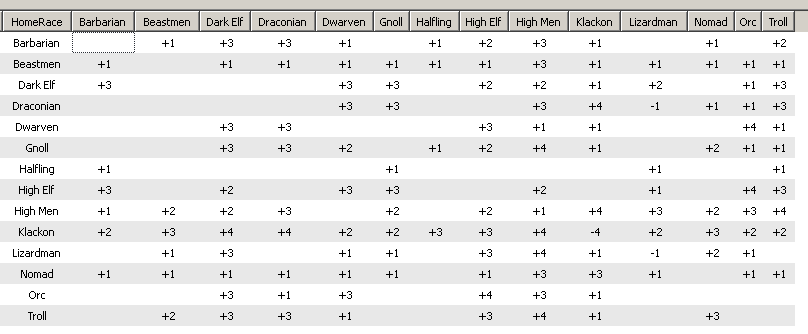
This change makes sure the interracial tables do matter, and you can't negate your racial disadvantage by simply moving your fortress. While that was a nice trick to have, the benefit was entirely too large and it undermined the whole idea of having the racial unrest game mechanic.
Heroes
Heroes are a major and unique feature that required significant attention. A hero unit by definition of the word, is expected to be very powerful, yet that has to coexist with overall game balance. I solved this by allowing heroes to remain virtually unstoppable if played right, but the AI will put major effort into trying to destroy them, so extreme caution is needed. Heroes are the most difficult to play correctly, but also the most rewarding. In the original Master of Magic, heroes were almost entirely useless without levels, which made them hard to keep alive, fortunately, the AI proved to be reliably dumb enough to not hurt them. This wouldn't work in the mod, so heroes at level 1 start with slightly better stats - especially hit points and attack strengths, however they gain slightly less bonus from additional levels to their Defense and Resistance. Other than the difficulty to use, the core design to balance heroes is their limited availability - you can only have 6 heroes at a time - which was unfortunately ruined by the ability to move them pretty much instantly to any location on the world map in the original. In Caster of Magic however, it's difficult and often expensive to increase the movement allowance of heroes, ensuring that they can't be omnipresent and you still need to rely on other forces to defend your whole empire beyond a certain size. Furthermore, this power level can't be maintained during the entire game - in the extremely early game heroes shouldn't be available - there is no way for an AI player to do anything against a hero on turn 10. Due to this, heroes only appear for hire beyond turn 30, which also ensures that the time needed to level and gear them up limits the timeframe of their full potential to the mid and late game when the AI already has enough troops so the limited number of available hero units matters and the intended game balance exists. Finally, as this is ultimately a game where magic dominates, the highest tier summoned creatures need to be able to oppose even the most powerful heroes, at least when the numbers are on their side. While a demigod hero killing a Great Drake is perfectly okay, it shouldn't be possible to fight a full 9 stack of them alone without support from other hero units or very rare creatures. To ensure this doesn't happen, all very rare creatures gained the ability to do a minimal amount of damage regardless of the target's defenses, an ability that will almost always only be relevant for heroes as other units simply can't stack enough Defense stat for it to matter. As heroes are the second most fun part of the game in my personal opinion (first being magic itself), I spent major effort on this area and implemented many new hero abilities to increase the diversity of heroes. I've also had to make sure existing hero abilities are reasonably balanced. When heroes are generated at the start of the game, each hero receives random abilities according to their class. This system was overhauled, now heroes can be a Mage class, Fighter Class, or Leader class, or any combination of these three. To get an ability that belongs to two classes, the hero needs to have both classes. The formula for hero MP has been overhauled and individualized to ensure they can use their own native spell abilities at the intended levels, however heroes can still get additional MP from their random ability rolls. Each hero has been redesigned to ensure they get an appropriate amount of special abilities for their tier, carefully considering the fact that some abilities are better than others. There should be no weaker heroes now, unless you have access to a higher tier. That of course, doesn't mean every hero will match your strategy, so you'll still need to carefully think before hiring one. The role of Fame for heroes has been slightly adjusted as well. Heroes require more Fame, as it's more available in CoM thanks to fighting more battles and having the ability to build Colosseums. The frequency of hero offers no longer depends on your fame and the number of heroes owned determines it entirely. The more heroes you own, the longer you need to wait for another one to show up. This allows the player to have more choice in their first few heroes which is necessary for hero strategies to work, but the later heroes are still up to luck unless you take the extra effort to cast the hero summoning spells multiple times. This dual design makes it possible that hero strategies can be reliable, yet other strategies can enjoy playing different heroes every game. As heroes are quite capable even at level 1, their gold costs have been signficantly increased. Keeping enough gold in treasury is essential to have any heroes show up at all, and hiring an unnecessary hero can be a major setback to your strategy. You can still take advantage of the game mechanic to hire unwanted heroes and send them into moster lairs so they die to eliminate the possibiliy that they reappear, but doing so will cost you and won't be worth it unless getting the right hero is extremely crticial in your strategy. However, Fame is still very relevant as having higher fame not only unlocks higher tiers, but also increases the chance for the hero offer to contain a higher tier hero and reduces the chance for lower tier heroes. While heroes start to appear at turn 30, some more exploitable hero types will not show up until slightly later turns to ensure the player has just the right amount of time to use them for snowballing. The latest hero to show up is the Ninja, as Invisibility is extremely powerful and exploitable, and can win the game if found early on its own. This of course only refers to the early game - beyond turn 80 or so, all heroes will be available, needless to say only if you have the necessary Fame and gold, or obtain them from other sources that don't require any such as finding a Prisoner. Champions still don't show up as Prisoners though, it was considered, but that would undermine the role of building up fame or casting Summon Champion too much. There are no heroes with native Magic Immunity as that undermines the design of both having to be careful when using heroes, and the theme of magic itself.
Hero Abilities
New
Ritual
Master
Type : Mage
Super : Available
Effect : Hero
produces +6 Power per turn per level of experience.
AEther
Master
Type : Mage
Super : Available
Effect : Hero
produces +8 SP per turn per level of experience.
Capacity
Type
: Mage
Super : Available
Effect : Hero gains +1 ammo per 2
levels of experience
Divine Barrier
Type : Mage
Leader
Super : Available
Effect : All units in combat gain +1
DEF per 3 experience levels
Guiding Beacon
Type :
Mage Leader
Super : -
Effect : All units in combat gain +1
ranged ATK per experience level (both missile and magical)
Soul
Linker
Type : Mage Leader
Super : Available
Effect : All
fantastic creatures in combat gain +1 to HIT or +1 to DEF per two
levels of experience, alternating the two bonuses.
Supply
Commander
Type : Leader
Super : -
Effect : All units in
combat gain +2 ammo. (This bonus is applied at the end of turn 1 in
battle)
Logistics
Type : Warrior Leader
Super :
-
Effect : All units in combat gain +0.5 movement per 2 levels of
experience.
Battlemage
Type : Warrior Mage
Super
: Available
Effect : All melee attacks done by the hero refill 1
used MP per experience level.
Old
Agility
Type
: Warrior
Super : Available
Effect : Gain +1 DEF per experience
level
Arcane Power
Type : Mage
Super :
Available
Effect : Gain +1 Ranged ATK per experience
level
Armsmaster
Type : Leader
Super :
Available
Effect : Nonhero units on the same map tile gain +2 exp
per turn
Blademaster
Type : Warrior
Super :
Available
Effect : Gain +1 to HIT per 3 levels of experience.
Charmed
Type : Any
Super : -
Effect : Hero
has 50 resistance against all magical effects.
Constitution
Type
: Warrior
Super : Available
Effect : Hero gains +1 Health per
level.
Leadership
Type : Warrior + Leader
Super :
Available
Effect : All units in combat gain +1 melee and +0.5
missile ranged ATK per 3 experience levels.
Legendary
Type
: Any
Super : Available
Effect : Hero adds +5 FAME per
experience level.
Lucky
Type : Any
Super :
-
Effect : Hero has +1 to HIT and +1 to DEFEND
Might
Type
: Warrior
Super : Available
Effect : Hero gains +1 melee ATK
per experience level
Noble
Type : Any
Super :
-
Effect : Hero produces 20 gold per turn and has no maintenance
cost.
Prayermaster
Type : Mage Leader
Super :
Available
Effect : All units in combat gain +1 resistance per 2
experience levels.
Sage
Type : Mage
Super :
Available
Effect : Hero produces +10 RP per turn
per level of experience.
Extra
MP
Type : Caster heroes only
Available only as a random ability roll, the hero gets an additional 2 MP per level. This can be rolled any number of times and is cumulative.
Hero Types
Dwarf
Type
: Warrior
Fame : 0
Caster Level : -
Spells : -
Hero
abilities : Armsmaster, Constitution
Other Abilities :
Mountaineer, above average starting Resistance.
Random abilities :
-
Barbarian
Type : Warrior
Fame : 0
Caster
Level : -
Spells : -
Hero abilities : Might
Other Abilities
: Thrown, Cold Immunity
Random abilities : -
Sage
Type
: Mage
Fame : 0
Caster Level : 19 MP + 7 MP per level
Spells
: Disenchant True, Phantom Warriors, Psionic Blast
Hero abilities
: Sage
Other Abilities : Sorcery ranged attack.
Random
abilities : -
Dervish
Type : Warrior
Fame :
0
Caster Level : -
Spells : -
Hero abilities : Noble,
Logistics
Other Abilities : Archer
Random abilities :
-
Beastmaster
Type : Mage Leader
Fame : 0
Caster
Level : 14 MP + 4 MP per level
Spells : Resist Elements, Wild
Boars
Hero abilities : Soul Linker
Other Abilities : Forester,
extra scouting, archer
Random abilities : 1
Bard
Type
: Warrior Leader
Fame : 0
Caster Level : 16 MP + 3 MP per
level
Spells : Confusion, Vertigo
Hero abilities :
Leadership
Other Abilities : Holy Bonus +1
Random abilities :
-
Orc Archer
Type : Warrior Leader
Fame :
0
Caster Level : -
Spells : -
Hero abilities : Supply
Commander
Other Abilities : Archer
Random abilities :
1
Healer
Type : Mage Leader
Fame : 0
Caster
Level : 20 MP + 5 MP per level
Spells : Healing
Hero abilities
: -
Other Abilities : Healer, Nature ranged attack
Random
abilities : 1
Huntress
Type : Warrior Leader
Fame
: 10
Caster Level : -
Spells : -
Hero abilities :
Blademaster*
Other Abilities : Pathfinding, Web Spell
Random
abilities : 1
Thief
Type : Warrior
Fame :
10
Caster Level : -
Spells : -
Hero abilities :
Agility
Other Abilities : Charmed, Lucky
Random abilities :
-
Druid
Type : Mage
Fame : 0
Caster Level : 15
MP + 5 MP per level
Spells : Petrify, Web, Ice Bolt, Wild
Boars
Hero abilities : Ritual Master
Other Abilities : Purify,
Scouting, Nature ranged attack
Random abilities : -
War
Monk
Type : Warrior
Fame : 10
Caster Level : -
Spells
: -
Hero abilities : Agility*
Other Abilities : -
Random
abilities : 2
Warrior Mage
Type : Warrior Mage
Fame
: 10
Caster Level : 19 MP + 6 MP per level
Spells : Web,
Flight, Fire Elemental, Black Sleep
Hero abilities : Agility
Other
Abilities : Chaos ranged attack
Random abilities :
1
Magician
Type : Mage
Fame : 40
Caster Level
: 36 MP + 6 MP per level
Spells : Flame Strike, Fireball, Fire
Elemental, Fire Bolt
Hero abilities : Arcane Power
Other
Abilities :Missile Immunity, Destruction
Random abilities :
2
Assassin
Type : Warrior
Fame : 10
Caster
Level : -
Spells : -
Hero abilities : Blademaster*
Other
Abilities : Poison 9, First Strike
Random abilities : 1
Wind
Mage
Type : Mage Leader
Fame : 20
Caster Level : 19 MP +
5 MP per level
Spells : Resist Magic, Guardian Wind
Hero
abilities : Guiding Beacon
Other Abilities : Wind Walking, Sorcery
ranged attack, Missile Immunity
Random abilities : 1
Ranger
Type
: Any
Fame : 20
Caster Level : 15 MP + 5 MP per level
Spells
: Resist Elements, Fairy Dust
Hero abilities : Lucky
Other
Abilities : Poison Immunity, Pathfinding, Archer
Random abilities
: 2
Draconian
Type : Warrior
Fame : 20
Caster
Level : -
Spells : -
Hero abilities : Might
Other Abilities
: Flight, Fire breathing
Random abilities : 2
Witch
Type
: Mage
Fame : 20
Caster Level : 25 MP + 5 MP per level
Spells
: Black Prayer, Darkness, Mana Leak, Posession
Hero abilities :
Charmed
Other Abilities : Missile Immunity, Chaos ranged
attack
Random abilities : 2
Golden One
Type :
Any
Fame : 20
Caster Level : 20 MP + 5 MP per level
Spells :
-
Hero abilities : Noble
Other Abilities : Chaos ranged
attack
Random abilities : 3
Ninja
Type : Warrior
Leader
Fame : 40
Caster Level : -
Spells : -
Hero
abilities : Blademaster
Other Abilities : Invisibility
Random
abilities : 3
Rogue
Type : Leader
Fame : 0
Caster
Level : -
Spells : -
Hero abilities : Leadership,
Legendary*
Other Abilities : -
Random abilities :
1
Amazon
Type : Warrior
Fame : 40
Caster Level
: -
Spells : -
Hero abilities : Blademaster, Might,
Charmed
Other Abilities : Thrown
Random abilities :
2
Warlock
Type : Mage
Fame : 40
Caster Level :
34 MP + 8 MP per level
Spells : Lightning Bolt, Warp Lightning,
Doom Bolt
Hero abilities : Arcane Power*
Other Abilities :
Missile Immunity
Random abilities : 2
Unknown
Type
: Any
Fame : 40
Caster Level : 21 MP + 6 MP per level
Spells
: -
Hero abilities : -
Other Abilities : Chaos ranged attack,
Water Walking
Random abilities : 5
Illusionist
Type
: Mage
Fame : 80
Caster Level : 28 MP + 14 MP per level
Spells
: Confusion, Mind Storm, Phantom Warriors
Hero abilities : -
Other
Abilities : Quick Casting, Missile Immunity, Illusion
Random
abilities : 2
Swordsman
Type : Warrior
Fame :
80
Caster Level : 15 MP + 5 MP per level
Spells : Raise Dead,
Healing
Hero abilities : Blademaster, Agility, Constitution,
Armsmaster
Other Abilities : -
Random abilities :
2
Priestess
Type : Mage Leader
Fame : 80
Caster
Level : 32 MP + 8 MP per level
Spells : Exorcise, Healing, Holy
Word, Prayer
Hero abilities : Divine Barrier, Charmed, Noble,
Prayermaster*
Other Abilities : Healer
Random abilities :
1
Paladin
Type : Warrior Leader
Fame : 80
Caster
Level : -
Spells : -
Hero abilities : Legendary, Might*,
Prayermaster
Other Abilities : First Strike, Armor Piercing,
Illusions Immunity, Healer
Random abilities : 1
Black
Knight
Type : Warrior
Fame : 80
Caster Level : -
Spells
: -
Hero abilities : Legendary, Might, Blademaster,
Constitution
Other Abilities : First Strike, Armor Piercing, Death
Immunity
Random abilities : 1
Elven Archer
Type :
Any
Fame : 80
Caster Level : 22 MP + 7 MP per level
Spells :
Elemental Armor, Flight, Stasis
Hero abilities : Blademaster,
Capacity*
Other Abilities : Archer, Forester, +1 to hit
Random
abilities : 4
Knight
Type : Warrior Leader
Fame :
80
Caster Level : -
Spells : -
Hero abilities : Leadership*,
Constitution*, Noble, Armsmaster*, Logistics
Other Abilities :
-
Random abilities : 2
Necromancer
Type : Mage
Leader
Fame : 80
Caster Level : 30 MP + 10 MP per level
Spells
: Animate Dead, Summon Zombie, Weakness
Hero abilities : Arcane
Power* , Sage*, Soul Linker*, Ritual Master
Other Abilities : Life
Steal -3
Random abilities : -
Chaos Warrior
Type
: Warrior Mage
Fame : 80
Caster Level : 19 MP + 7 MP per
level
Spells : -
Hero abilities : Constitution, Arcane
Power
Other Abilities : Armor Piercing, Chaos ranged attack
Random
abilities : 3
Chosen One
Type : Any
Fame :
Incarnation only
Caster Level : 20 MP + 5 MP per level
Spells :
Lionheart, Healing, Mass Healing, Holy Weapon
Hero abilities :
Leadership, Constitution, Battlemage*, Prayermaster, Guiding Beacon,
Divine Barrier, Might*
Other Abilities : Holy Bonus 1
Random
abilities : 2
Item Powers
Items are another unique concept in the game, they are assets that don't usually disappear when you lose them in battle, instead if you're winning, you can keep and equip them on other heroes, otherwise the enemy gets to use them against you. As such, they area high risk, high reward game mechanic. The effects are permanent if played well, so items have to be considerably expensive. Random generated and predefined items have been significantly improved to ensure finding treasure is both exciting and worth the effort of defeating the monsters, however it was done in moderation. I was extra careful to have a full set of 250 predefined items where the most powerful abilities don't appear too frequently, and a good variety of different kinds of items are provided. Spell Charges are a very specific point of interest as putting them on predefined items ensures those particular spells will be part of the game even if the players themselves have no access to the realm of magic. For this reason, many of the more powerful spells weren't included in items, however many of the spells designed to counter or balance game mechanics were. Before engaging an enemy hero, it's extremely important to scout their equipment by engaging it in battle using disposable troops, otherwise nasty surprises can happen, such as a hero suddenly casting a very rare spell in the midgame. This won't happen often, but it's still enough to reward careful strategic play and punish carelessness. I enabled spell charges in every weapon type to make sure melee heroes are not an exception to this rule - the item is casting the spell so it makes no sense to require a spellcaster hero to use it. Swords that rend the earth or bows that shoot fireballs are a lot of fun. More importantly, this allows Death wizards to have better use for melee heroes - as they have difficulties protecting them from harm, an item capable of casting Life Drain or Syphon Life spells can work wonders to make hero based strategies playable for the realm. Some of the uninteresting and redundant item powers such as Giant Strength were removed (why have that if you can have 1 more attack strength as a stat bonus on the same item?) as well as the Magic Immunity which is both too powerful and goes against the design goal of Magic being the core theme : same as units that had the ability. Instead new powers had been added, both to realms already being good at hero usage and item crafting, and those who aren't. I'm going to detail the individual decisions on available powers and stats below. Costs are usualy not linear as stacking more of the same stat on a set of items is usually more effective. I tried to diversify item types so different items get different options, making sure that a Mace has different options than a Sword for example. Axes retained their original ability to be the only weapon type to increase Thrown, Shields grant Large Shield, Chain Mails add 1 bonus armor, Plate Mails add 2 but are a lot more expensive. The threshold between Items and Artifacts have been moved to 400 cost for a single power, which ensures Items are still relevant and powerful yet have no access to stats and abilities that would be gamebreaking in the early game. Finally, a turn based cap has been added to the item generator that ensures the two abilities that are entirely too gamebreaking for the early game will never appear on items the player obtains from Merchants or Treasure : Invisibility and Invulnerability won't show up before turn 80. Of course, if the player does obtain the Create Artifact spell and makes the item himself, that's an expection, but the research and casting cost should make that virtually impossible. The item merchant has also been adjusted to offer items reasonable for the first ~100 turns of the game, with the budget of the offered item growing linearly. This ensures the item offers will actually contain items the player has a chance to afford, instead of the merchant not showing up because the player obviously does not have 4-6 thousand unspent gold in the early game. Simultaneously, this means extrmely powerful items, even if not containing those two abilities, will not be for sale too early - the player needs to work hard to obtain high tier treasure to have those kinds of items at that timing. Reaching the midgame though, all of these restrictions disappear and you have to make sure you have a large sum of gold available if you're expecting to obtain items from the merchant - remember, heroes have been designed to dominate through the midgame!
When a predefined item can't be found matching the required budget, or the option for more random items is enabled, a random item is generated. The algorithm to make these was completely replaced to ensure generating items that use up as much of the budget as reasonably possible, and the chance for each ability or stat amount is weighted based on the total budget of the item to guarantee higher budget items won't end up with all low tier and underwhelming abilities. This also means however that low budget random items will not contain high end abilities, even if they could (barely) afford including it if no other power is added. In other words, item quality will be more consistent with what you should be expecting to find. AI players casting item creation spells use this algorithm as well, unless they find a matching predefined item, which now has to correctly match the requirements in spell book counts for the wizard, so expect the AI to show up with slightly more items matching their realms in the late game. The majortity of the AI's items will still come from treasure of course. The AI has also been completely overhauled in its ability to equip items, and will try to match the item abilities to each other and the hero and equip them accordingly, also prioritizing higher tier or otherwise more important heroes. While this still doesn't enable the AI to be as successful at using heroes as a human player, mainly because the human player will almost always find ways to assassinate the AI's heroes with spells or strategically employed high tier units, it does mean AI heroes are now a threat the human player has to properly respond to. Unless otherwise mentioned, all item enchantments have the same effect as the spell with the same name.
Attack
Attack power is among the least abusable stats in the game. While it helps killing enemies, it won't directly contribute to a hero's ability to stay alive against incoming spells or ranged attacks. As such, there was no significant need to restrict the attack strength in items, but for flavor reasons, weapons can have the most attack, accessories can have a decent amount and armor can't have any. Wands are more limited - in order to make wands and staves different, wands can have a bonus chance to Hit while staves can have more attack power instead.
Swords, Maces, Axes, Bows and Staves can have +1 to +6 attack.
Accessories can have +1 to +4 attack.
Wands can have +1 to +3 attack.
Shields, Chain and Plate mails cannot have an attack bonus.
Cost : 40,90,160,280,405,600
Defense
The opposite of attack power, Defense is the most powerful available stat, as stacking enough of it can literally make your hero immune to damage. (with limitations - fortunately the wide array of effects in the game that ignore defense or target resistance instead ensures high defense by itself won't be a guaranteed survival.)
Defense costs are high, and one of the greatest difference between weapons types is the amount of defense you can include.
Shields, Plate Mails can have +1 to +6 defense.
Chain Mails can have +1 to +5 defense.
Accessories, Swords can have +1 to +4 defense.
Maces can have +1 to +3 defense.
Axes cannot have defense.
Bows can have a +1 to +4 defense.
Staves can have +1 to +6 defense.
Wands can have +1 to +5 defense.
Cost: 60,140,260,405,650,900
To Hit
To Hit increases your damage output by a significant percentage. As such, the Hit stat is expensive and only available in weapons to ensure the player has to make choices between various weapon exclusive options. (hit, spell characters, attack power, various touch abilities) This also makes Blademaster heroes with naturally high To Hit valuable as they work well enough without additional To Hit items.
Shields, Chain Mails Plate Mails, Staves and Accessories cannot have a + hit bonus.
All weapon types except staves can have +1 to +3 hit.
Cost : 300,700,1200
Movement
As already mentioned, movement has a very low availability and high cost to ensure heroes can't deal with large scale enemy invasions by themselves effectively.
Accessories, Axes, Wands and Staves can have +1 to +2 Movement.
Bows can have +1 to +3 Movement.
Swords, Shields, Chain Mails and Plate Mails can't add movement.
Cost : 250,500,800
Resistance
Resistance is similar to Defense but scales pretty much the opposite way - the higher you go the more likely it is that additional points provide no benefits as you already have complete immunity to curses and save or die attacks. You typically only need a small amount of bonus Resistance to reach this, and only extremely rare cases will demand more, so Resistance has been priced to be expensive for the first point and have a linear pricing. For the same reason, the maximal amount per item has been reduced - it's pretty pointless to have items with 6 resistance and that guarantees you'll never ever use more than one item slot on this stat, even if your hero has horrible resistance.
Shields and Staves can have up to +4 Resistance.
Accessories, Wands, Maces and Chain Mails can have +3.
Plate Mails can have only +1 or +2.
Swords, Axes and Bows offer no magic resistance.
Resistance costs 100,200,300,401.
Spell Skill
Spell Skill used to be a staple in the original Master of Magic game, as leaving heroes in your fortress allowed you to use half their skill as your own, so each +20 skill item increased your own skill by 10! That very much undermined the fun factor of playing with heroes as they did nothing and had to stay in your fortress the whole game, so this effect has been toned down to 1/6 of the amount. Nonetheless, Spell Skill is still a useful stat for a hero, but with more reasonably sized MP pools and ranged attacks not using it up, it's hardly essential now, and adding it to items will now be a real decision instead of a no-brainer. Skill has a linear cost, as the advantage of being able to cast higher tier spells and the disadvantage of having to use your lower cost spells in multiple turns compared to multiple heroes casting them during one turn balanced each other out - in the end it doesn't really matter if you stack a lot of Skill on one hero or a small amount on multiples.
Shields cannot have a casting skill bonus.
Maces, Axes and Bows can only have +5 or +10 Skill.
Swords, Staves, Wands, Plate Mails, Chain Mails and accessories can have +5 to +20 casting skill.
Casting Skill now costs 62,125,187 and 250 respectively.
Spell Save
Spell Save is exceptionally powerful when stacked, and in the original you could stack 3x -4 save items for an impressive -12 modifier, which is enough to have a 100% success chance with any spell on almost any high end unit in the game, even without counting the up to -5 bonus from the spell itself. Guaranteed killing (or stealing) of Great Drakes, Angels, Death Knights, Hydras, even Paladins or Colossus is definitely not okay and thus the save modifier had to be limited to a more reasonable maximal total amount. Nonetheless, a few predefined items kept a slightly higher modifier for maximal treasure hunting experience (and maximal punishment of careless players who don't scout the equipment of enemy heroes!)
Nonetheless the effect is super powerful as it enables killing targets in ways they are meant to be unaffected by, so the price of this ability is very high.
Staves and Wands can have up to -4 Spell Save.
Accessories can only have -1 Spell Save.
Spell Save now costs 250, 500, 1000, 1500 for each level.
Chaos Powers
Flaming
Cost
: 200
Books required : 2
Add
+3 attack strength.
Not
the most interesting or powerful ability, but it does make Chaos
items stand out by allowing them up to 3 higher maximal attack power
that normal.
Lightning
Cost
: 420
Books required : 3
Grant Armor Piercing.
Much
less powerful than the abilities that ignore armor completely, this
is still a decent effect for your items worth keeping in the game.
Considering how brutally powerful high armor is, keeping as many
effects that can deal with it in the game as possible is
important.
Doom
(Chaos)
Cost : 800
Books required : 4
Grant Doom
: Always deal attack power/2 damage.
The
most powerful defense ignoring ability for heroes below +2 To Hit as
it also increases expected damage output, but it's worse than
Illusion on heroes with a very high To Hit bonus. Nonetheless, one
main source of unexpected damage you should be prepared for when
facing enemy heroes.
Destruction
Cost
: 450
Books required : 4
Gain Destruction : If the enemy unit
fails to resist when attacked, it is irrecoverably dead.
This
has been improved to affect the entire unit instead of one figure,
making it actually relevant, especially at countering regenerating
units.
Inner
Fire (new)
Cost : 250
Books required : 3
Gain
Fire Immunity, Colt Immunity and Immolation.
One of the new abilities to help Chaos wizards keep their heroes alive, Fire and Cold actually covers most early game direct damage spells in the game. Immolation can be helpful to ensure the hero doesn't take too much damage from multifigure early units. Overall, mostly an item power for the early game, Uncommon tier and below. Beyond that, it loses relevance.
Pandora's Box
Cost : 400
Required Books : 5 Chaos
At the start of each combat turn, summon a random fantastic creature from a budget pool that depends on the level of the hero wearing the item.
The other new Chaos ability, which protects heroes indirectly, by summoning random creatures the enemy might want to target instead of the hero. Scales with hero level to ensure it's available at the start of the game when Chaos Artificers need it most, yet remains useful later on. Works well with the theme of Chaos having random effects, occasionally giving you a creature that can turn the tide of the battle, while mainly existing to provide you with a reliable amount of mediocre ones instead. As this power is mostly there to ensure Chaos Artificer has options, it appears much less often on random generated items than you'd expect based on its low cost. While a random effect like this is fun occasionally, it's not really healthy to appear consistently on items every game.
Death Powers
Vampiric
Cost
: 225
Books required : 3
Grant Life Steal -2.
Being able to regain help when engaging in melee combat against low resistance enemies can help the Death Realm wizards to keep their heroes alive without buffing or support spells. Save Modifier has been increased to ensure a balanced, but relevant amount of health is drained from enemies.
Death
Cost
: 350
Books required : 3
Grant Death Touch -3
Has a fairly good save modifier so there was no need to change it, although it does still only affect one figure.
Power
Drain
Removed
While this ability never had any effect in the original game, it also is pretty useless even if it does have any : the vast majority of units in the game don't have MP, even those that do, will likely die from a hero attacking them anyway, so they could care less about losing MP.
Wraith Form
Cost : 420
Required Books : 2 Death
This is the primary ability the player needs to somehow obtain to be able to safely use heroes against Nature wizards, as it makes them immune to Crack's Call and less importantly, Web. Being able to move on any terrain makes it comparable to Flying as a combat and overland movement effect, although this ability mostly requires the Artifact tier for its role in allowing heroes to ignore Crack's Call - other ways to survive it are also rare tier artifact powers.
Cloak of Fear
Cost : 125
Required Books : 1 Death
Pretty much the only defensive buff in Death magic, Cloak of Fear is decent but mostly useful in the early game. It doesn't really offer a game changing benefit for any realm so unlike Wraith Form there is no need for it to be higher tier than normal items.
Shadow (new)
Cost : 410
Required Books : 4 Death
Grant Thrown equal to half the base melee attack strength.
This was mainly added to have an item power in the game that allows a melee hero to engage flying enemies. Without the existence of such, heroes without that ability would be undesired for wizards not playing one of the realms that can deal with it. As Flying and Thrown melee heroes are not exactly common, this would have been way too restrictive, especially as Death itself has no such spell, and Life which uses heroes most often, also has none.
Necromancy (new)
Cost : 700
Required Books : 5 Death
At end of battle, units who died on your side and weren't undead yet, return as undead units. Limited to a budget per combat, that scales with hero level.
Death has by far the fewest item powers and has almost no options of armor and accessory. It took significant amount of thinking to come up with something that both suits the realm, is useful, but doesn't break the game. A big concern was that it has to help heroes survive indirectly, but can't be something which hero specialized realms can stack when found on random generated items on top of their own abilities, further escalating their advantage. While Necromancy doesn't directly help your hero, it does ensure you won't unexpectedly run out of units in your stack, putting the hero into danger as it has to fight alone. Works poorly for Life wizards, the best hero users, as they typically don't lose units in the first place, achieving the inteded goal. Nonetheless, it opens up access to the various undead immunities for other realms, and thus it's another power mainly designed to be created by Artificers, so it appears somewhat rarely on random items. I'm not 100% satisfied with this ability but it does suit the theme of the Death realm very well.
Nature Powers
Resist Elements
Cost : 80
Required Books : 1 Nature
A good but not particularly strong common effect.
Elemental Armor
Cost : 500
Required Books : 3 Nature
The much more powerful version of Resist Elements.
Giant
Strength
Removed
An item power that adds 1 attack strength is a waste of design space when items can have up to 6 attack each!
Stoning
Cost : 125
Required Books : 2 Nature
Grants Stoning : The attacked unit has to resist at -1 or one figure in it irrecoverably dies.
Much less powerful than Death or Destruction, this Nature effect can still cause nasty suprises to players who overlook it and carelessly engage using a single figure unit. Can be useful but doesn't stand out as single figure units with low resistance aren't abundant in the game. Nonetheless, being a save or die effect in Nature, it does not need to be powerful.
Water Walking
Cost : 80
Required Books : 1 Nature
Ensure your hero doesn't instantly drown when hit by a Dispel Magic or Dispelling Wave spell - making sure the ability is permanent can be a lifesaver. One of those finer details less experenced players will often overlook until it's too late and lose their hero.
Regeneration
Cost : 900
Required Books : 5 Nature
Grants Regeneration 1.
Regeneration has always been a staple, and even more so on heroes, but permanent regeneration that can't be dispelled is even better. This ability has to have a high cost, no questions asked.
Path Finding
Cost : 100
Required Books : 1 Nature
Grants Pathfinding
I don't really have much to say about this, it's the same as the unit ability.
Merging
Cost : 800
Required Books : 4 Nature
Grants Merging movement.
This never worked in the original game. Basically it's the same as the ability on the Great Wyrm, and a less known side effect is the unit won't be affected by Crack's Call making this the second way to protect heroes from that spell.
Life Powers
Exorcist
Cost : 300
Required Books : 2 Life
Grants Bless and Exorcise : Attack target must save at -3 or lose 1 figure irrecoverably if it's fantastic.
Pretty much Death, limited to fantastic creatures because Life magic doesn't hurt ÅgrealÅh units, following the same theme as the Star Fires, Exorcise and Holy Word spells. Bless isn't available on weapons separately, only as part of this ÅgpackageÅh like in the original game, however now the ability affects any realm creature and comes with a playable save modifier.
True Sight
Cost : 300
Required Books : 3 Life
Illusion damage being one of the main ways heroes die and probably the only hope for a Sorcery wizard to kill any, the ability to be immune to that effect in a way the Sorcery wizard can't dispel is surprisingly valueable and might be worth the relatively high cost, especially as the ability also allows the detecting of invisible units, adding another layer of security. Of course this also protects from Sorcery unit curses out of which Confusion can easily eliminate heroes, but simply raising resistance is a working solution for that part of the problem making it the less valuable. Nonetheless, early resistance is not trivial to obtain and Confusion is a common spell, so a True Sight item is an amazing find if your enemy does happen to be a Sorcery wizard.
Bless
Cost : 150
Required Books : 1 Life
Same as the common spell, this adds resistance against two realms, but you're still vulnerable to the others as well as poison, so it's fairly cheap compared to other resistance powers.
Righteousness
Removed
Both the spell and item power were removed. See the spell for details.
Planar Travel
Removed
Both the spell and item power were removed. See the spell for details.
Endurance
Removed
Granting +1 movement is both uninteresting, already available on most items, and contradicts the goal of having too much easily accessibly movement bonus effects for heroes. Also, the identical spell has been improved to provide extra armor as well.
Invulnerability
Cost : 800
Required Books : 4 Life
This enchantment is roughly as good as Defense+6 with additional advantages such as weapon immunity and the reduction applying even against Illusion damage or Armor Piercing. It stacks on top of other defensive abilities and stats and is by far the most efficient, however the reason why I decided it should not appear on random items too early is because unlike all the rest, this is an effect you can't replace until after you obtained the identical Rare tier spell, so it's guaranteed you also won't obtain it from other soruces, which will make the difference. To be fair, high budget items found early have an increased chance of containing other top tier powers to compensate.
Lion Heart
Cost : 600
Required Books : 3 Life
The third way to allow heroes to survive a Crack's Call, this enchantment can grant them enough extra hit points to survive the effect, and is the main solution for the issue for Life players. Additional hit points are unavailable otherwise, making this a unique and worthwhile enchantment even though it basically only adds 3 different bonus stats, two of which you can add the usual way as well.
Divine Protection (new)
Cost : 800
Required Books : 4 Life
Grants Lucky and Death Immunity.
Lucky heroes are quite a lot better than non-lucky heroes due to the additional To Hit and To Defend, both of which difficult to increase. The ability being present in items ensures non-Lucky heroes can be equally useful as long as you can create Life Artifacts or find an item containing this power. Death Immunity is mostly for flavor, although it can protect the hero from various harmful effects if it doesn't yet have enough resistance to be immune to them.
Sorcery
Phantasmal
Cost : 700
Required Books : 4 Sorcery
Grants Illusion
Similar to Doom, but better or worse depending on the hero's To Hit stat. Unlike doom however, Illusion Immunity blocks the defense ignoring effects, making this ability slightly less reliable which balances out the higher damage potential nicely.
Guardian Wind
Cost : 125
Required Books : 1 Sorcery
A basic protection spell that can be useful at the early game but rarely in the mid and late game, and for this reason it has a low cost.
Haste
Cost : 1100
Required Books : 6 Sorcery
Attacking twice and moving twice as fast in combat are vey powerful effects that easily justify the extra high book and mana cost. The defensive effect can't be underestimated either - the hero can avoid engaging enemies due to the speed and will receive less damage from retaliation due to the enemy only getting to retaliate once.
Resist Magic
Cost : 300
Required Books : 3 Sorcery
Priced lower than raw Resistance bonuses, this item power gives a slight edge to Sorcery players in that area, however it obviously doesn't stack with the identical spell, so if a player wants more, they need to also use the normal Resistance bonus. Honestly, this item power is somewhat redundant, but like Flaming it does manage to give a unique advantage to the associated realm, and there were no further usable item power ideas to ever consider replacing it anyway.
Teleporting
Cost : 1100
Required Books : 5 Sorcery
Grants Teleporting movement and Endurance.
Slightly redundant with Merging but really, instanteous movement in combat should totally be available as a Sorcery ability. In fact it's superior to the Nature power as it also adds Endurance on top of the bonus although the tradeoff is not gaining protection from Crack's Call which Flight can already solve for Sorcery wizards.
Flight
Cost : 420
Required Books : 3 Sorcery
Very similar to Wraith Form in cost and role albeit this one is less reliable against Crack's Call due to Web still affecting the unit. However, the benefit of non-flying units being unable to attack the unit in melee is very very significant, making this power easily worth the same cost and tier, and an even higher book requirement.
Invisibility
Cost : 800
Required Books : 4 Sorcery
Similarly to Invulnerability, this too is way to powerful for the early game, when enemies are unlikely to have spells that can detect or otherwise affect an invisible unit. The ability even offers a stacking defensive benefit of reducing incoming melee damage as well as making the unit impossible to target by ranged attacks. Invisibility in general is an extremely powerful ability, not just on items, so all methods of obtaining it in the early game is impossible, as doing so pretty much guarantees victory.
Spells
The spell system is by far the most important part of the game. I tried to make sure every realm plays well as is, picking no spellbooks from others, while at the same time, many good spell combos between different realms exist so both single and multi realm wizards are equally playable. Single realm wizards offer the reliability of always getting all of your spells (assuming you did pick the maximal amount of books of course) while not getting much out of trading. Dual and Triple realm wizards play less predictable but more diverse games, but they can benefit more from trading and can potentiallt have much more spells overall than single realm wizards could. While changing the tiers and number of spells per tier would have been next to impossible without having the source code, I believe there was no need to. Any more spell tiers would drag out the game too long and would make the jump from one tier to the next less satisfying. More spells would make each indiviual spell less relevant and fun to obtain. I've tried my best to make sure every spell has a major impact and the player has to consider their strategic options each time they or their enemies obtain new spells - unless those spells are from an obsolete tier of course. Game economy has been entirely adjusted to serve the intended design goal of each tier of spells becoming discovered after roughly 6 years dominated by the previous tier, and research costs have been set to match those calculations. This ensures players have the intented number of turns, mana and casting skill resources to actually take advantage of their spells before they get obsoleted by higher tiers. Of course, I made sure to include as many utility spells that remain valuable for the entire game as possible, but for obvious reasons, creatures or direct damage spells will not be used very often once you have a better tier available. I've also tried to make sure each realm is equally potent on the whole, and tried to eliminate spells that directly aim to hinder specific realms as such types of magic indirectly make the affected realms worse and most importantly less fun to play. Pretty much the only kind of such spells remaining are protective spells that make sure enemy destructive magic can't hurt your cities or armies.
Arcane Magic
This realm obviously serves the purpose of having spells that are necessary for smooth gameplay and every player has to be able to obtain them. As there are much fewer spells here, it doesn't have so well defined tiers as other realms, nonetheless, they are each treated as a specific tier for various purposes such as order of research or appearance in treasure.
1. Magic Spirit
Cost : 30 MP, 1 MP/turn
Research : None
Creature : 4 melee, 5 defense, 5 resistance, 2 movement, 10 health, 1 figure, Non-Corporeal, Poison Immunity.
This is a necessary spell to be able to meld nodes. It's also a decent early game scout, as it can move through any terrain at the same speed, although it doesn't really stand out as much as it seems - building the lowest tier ship or a few calvary is cheap and they can explore even faster. These used to threaten the AI though by destroying their freshly planted outposts, literally denying the AI players from having any cities other than their starting one at minimal cost, and if sea was in the way, at no risk of retaliation. Fortunately, this issue was solved by making freshly created outposts spawn a swordsmen unit which is enough to defend them against lone magic spirits. You still start the game with this spell, so even if you picked no overland spells you have something to cast. The AI has been significantly improved and is now able to summon and send more than one of these towards unclaimed magical nodes at the same time.
2. Dispel Magic
Cost : 10-50 MP
Research : 640 RP
All spells on the target unit have a Cost/(Dispel Cost+Cost) chance to resist, otherwise they are dispelled.
This is necessary to make sure the super powerful buff stacking strategies are kept in control. In particular, highly buffed units tend to take no damage, allowing their owner to destroy even very powerful enemies without losing anything in the process. This is far too efficient as you can pretty much destroy a full enemy stack each turn by a single one of your units. However, Dispel Magic ensures you lose something : the buffs themselves, in the process, and will need to constantly resupply your ÅgforcesÅh by recasting those enchantments, similarly to how regular strategies need to build new troops as reinforcements after a major battle. More importantly it also ensures you can't risk letting a single unit fight a whole army : getting hit by a successful Dispel Magic at that timing will likely spell doom for the entire unit. So you still need to dedicate a reasonable amount of resources towards winning battles and can't excessively snowball. Dispel Magic has a fairly high research cost for a Ågcommon' tier spell, ensuring there is a small timeframe to enjoy unit enchantments before having to worry about it, giving Life wizards who have nothing else, a bit of a breathing room. Furthermore, it ensures those unit curses AI players employ to cause the player to lose units, such as Confusion, will be an efficient deterring factor as intended at least for the very early turns when snowballing too much would have critically unbalancing consequences. The formula for the dispelling was kept as is, so it's not very effective against single spells, but very powerful on targets that have many enchantments stacked. Additionally, a new rule was added that unit curses have double the normal resistance : this is necessary because to cast a unit curse it needs to succceed at a resistance roll itself, meaning it requires a lot more effort to use than the cost would otherwise imply. Without this rule Dispel Magic was far too effective at negating Confusion or other similar effects. It's still pretty good at it, but not good enough that you can consistently expect to survive getting hit by those spells. Of course this applies for the early game - later dispelling those is trivial as more mana and skill is available to do so.
3. Summoning Circle
Cost : 0 MP
Research : 160 RP
Move your Summoning Circle.
It really makes no sense that you have to spend time and cast a spell just to be able to change the city of summoning, when you can summon ANYWHERE during combat. To make it worse, you can end up having to wait a turn to cast it, and forgetting why and where you wanted to move/ what you wanted to summon. Note that the two spells that could have been abused by this cost : Recall Hero and Word of Recall are not available. Finally, the zero cost makes it AI friendly, as the AI lacks the concept of a long term plan and needs to move their circle frequently to ensure they'll have relevant forces everywhere. (The AI moves the circle every turn, to one of three possible targets at a 1/3 chance each : their Fortress, their selected ÅgFrontier CityÅh or the next city in their queue of moving the circle through every city one at a time. This ensures AI forces will be concentrated where they are needed most, but each city also gets a few summoned creatures in their garrison. The Frontier City is the AI's city that's located on a continent where the AI has the fewest and other wizards the most number of cities, the exact formula I don't remember but it's likely in the changelog somewhere.)
I wouldn't mind moving the circle to be a UI feature instead, but having to pay a small research cost to get the ability makes sense and I like to keep this idea. The important part is to be able to move it for free once you learn how.
4. Disenchant Area
Cost : 50-250 MP
Research : 1280 RP
Dispel overland curses on the target map tile.
Mass dispelling is contrary to the design goal of making magic matter and has no place to exist in Arcane. It should only be available in the realm that specialzies in dispelling which is Sorcery, and even there is needs limitations. Also note the ability to spend 250 mana on this was insane. Nonetheless, the players need the ability to dispel one particular thing, and that's curses on their cities and nodes. So Disenchant Area has been reassigned for that role and can't dispel anything else.
Recall
Hero
Removed from the game.
Part of the Ågheroes shouldn't be too easy to move around as that's too brokenÅh design. Moving the Summoning Circle is too easy (even if it does have a mana cost) so this doesn't really serve what the original developers intended - it's not a way to save heroes but one that allows them to teleport long distances on the world map.
Heroic
Shout
This spell used to exist for a while but not anymore. It was an all figure hitting neutral attack that required a hero to be present. However it was replaced by a much more elegant spell to promote the early game usage of heroes :
5. Heroic Heart (new)
Cost : 18 MP
Research : 440 RP
Target hero unit is healed 3 HP in combat.
Realms other than Life have a very hard time keeping heroes alive, and this simple spell can fix that problem. Heroes are for everyone, even if Life is best at using them!
6. Detect Magic
Cost : 200 MP
Research : 320 RP
See the spells being cast by other players while this enchantment is in effect.
While it looks like a waste of resources, the information gained through this can be a lifesaver, as it allows the player to adapt to enemy wizards obtaining new spells faster. It's also essential to use Spell Blast properly. The AI will only cast Spell Blast intentionally against specific spells when they have already cast Detect Magic, and having Spell Blast is the only case when they'll bother to cast Detect Magic. This can also let the player know when the enemy is casting an expensive spell during which they won't have the opportunity to use their Spell Blast.
7. Enchant Item
Cost : Variable MP
Research : 320 RP
Enables creating Item tier magical items.
Obviously necessary to be available for every player. Item tier means only powers that cost 400 or less can be used.
8. Summon Hero
Cost : 240 MP
Research : 1280 RP
Summons a random hero, ignoring Fame requirements.
Sometimes luck isn't on your side and you don't get the hero(es) you want as fast as you want. In that case, this helps. I was hesitating a lot about the casting cost, but ended up with a medium amount. It really shouldn't be too expensive as the summoned hero might not be the type you really needed, but it can't be too cheap either as that allows summoning almost every hero and makes it too trivial to fill all your 6 slots with the perfect heroes for your strategy quickly.
Awareness
Removed from the game. If finding enemy cities is required for cursing them there really shouldn't be a spell everyone gets that finds them anyway. Also, there exists a specialized spell for this in the Nature realm which is really the correct realm for exploration spells. Others should use their armies to scout.
9. Disjunction
Cost : 375-1875 MP
Research : 6000 RP
Disjunction Cost/(1.5*Cost) chance to dispel target global enchantment.
Unlike regular dispelling effects, Disjunction costs a large amount of irreplacable overland casting skill, so random chance on this is not acceptable, especially when the targets tend to be powerful effects that will need to be removed as soon as possible, if removed at all. It costs more than the target, and the AI typically has higher casting skill, so it's rarely economic to use and in most cases the player should attempt to instead deal with the enchantment either by eliminating the wizard, or accepting the effects and working around them. Nonetheless, a few spells are meant to be dispelled, and the AI will have a reduced chance to recast these to ensure the dispelling is meaningful. Likewise, the AI's chance to use Disjunction against the player's enchantments is heavily regulated to ensure the intended gaming experience, each enchantment having different chances to get targeted during various diplomatic situations. As a general rule the AI will prioritize removing military enchantments during war, economic ones during peaceful relations and leave enchaments cast by allied players alone completely. However priority is also scaled by the severity of the enchantment and its impact on the AI's playstyle, so expect Meteor Storm to get dispelled a lot, while AEther Binding will be mostly overlooked. I'd like to specifically mention that the AI holding back is a type of design I almost always avoid, but in this case it's inevitable. Disjunction directly puts the player's resources against the AI's, which the AI typically has a lot more of, as well as the AI being up to 4 other players so if the AI was serious about removing enchantments, they'd be unusuable which is the opposite of the intended goal of all spells being powerful tools, especially the endgame global enchantments. In fact, aggressive disjunction would also result in AI players removing each other's enchantments, resulting in those having no relevance even when cast by the AI. Disjunction in general is somewhat undesirable in the game but the 1.5x cost will discourage the human player from using it too much and keeps it a strategic spell that can sometimes turn the tables but more often it's detrimental to cast. It's definitely worth keeping as part of the game, especially as it's essential for Runemaster's relevance. The high research cost ensures obtaining this can't be taken lightily and players only go for it when it's really worth using. The AI will postpone researching this until after they researched most other rare spells, so rare and below global enchantments will typically not have to worry about getting dispelled at all for a while.
10. Create Artifact
Cost : Variable MP
Research : 4000 RP
Create an ÅgArtifactÅh tier magical item.
See more details at the Artificer retort and the item chapter.
11. Summon Champion
Cost : 600 MP
Research : 4000 RP
Summon a Champion hero.
Similar role as Summon Hero except this has a very steep cost so carelessly using it when the player's strategy does not demand heroes can be very detrimental. Nonetheless, Champion heroes are very powerful and when they are indeed a valuable addition to your strategy, the spell is well worth the high cost.
12. Plane Shift
Cost : 120 MP
Research : 8000 RP
Targeted stack is instantly transported to the other plane.
After a very long discussion on the forums about the intended role of planes and planar travel spells, the conclusion was that planar travel shouldn't really exist until the very late game to ensure the planes remain separate, unless the player opens up towers themselves. Plane Shift was chosen from the various methods of planar movement (Planar Travel, Astral Gate and Plane Shift) even though it was originally removed from the mod, because it's by far the most playable for the AI which can use it to target their best stack of units and send the whole thing across without risking to split up important stacks as some units change planes and others do not. We have also discussed whether we like the strategy of blocking all towers in the game or not, and my final decision was that it should be a good, but imperfect solution that can contain enemy invasions somewhat but should not completely deny the possibility of receiving enemy attacks which would basically allow the human player to not employ any garrisons at all, resulting in tremendous savigs on resources. Plane Shift solves this by enabling the AI to send troops through the blockade in regulated quantities to provide the perfect playing experience matching the game difficulty. Thus the AI will typically research this very late, around the time they go for their first very rare spell, so in most cases, around the time they'd open up towers naturally, +/- a few years. Nonetheless, if the human player researches this spell early to attempt to conduct a one sided invasion where the AI can't reach their plane, all the AI players will start to prioritize the research of this spell to participate in that strategy. Towers by the way will not be broken by AI players unless the human player opened one themselves or the game reached the appropriate turn count to ensure unexpected ÅgguestsÅh from the other plane won't show up during midgame, bulldozing the entire world with their superior Myrran units no one can stop that early, in best case Kill Stealing the human player's intended targets, in worst, stomping the human player into the ground. Both of these are actual experiences I had during playtesting that can absolutely ruin the 10-12 hours invested into devising the proper strategy to overcome the players on my own plane and progressing the game to where it starts to turn fruitful. Of course, the option to start an interplanar war early still exists, but the ÅgswitchÅh is in the hand of the human player. If they don't want to unleash the Ågfinal bossÅh enemy on the world at the time everyone is still busy dealing with things on their own plane, they don't have to. Nonetheless, opening the towers early and successfully subduing the enemy on that plane (or just stealing a portion of the plane for yourself) is a massive advantage so while it's high risk, it's also high reward.
13. Spell of Mastery
Cost : 15000 MP
Research : 440000 RP
Win the Game. Your combat spells can't be countered if you researched this.
While the effect has been left unchanged, the Spell of Mastery has received a super large research cost boost to ensure sufficient time exists between getting very rare spells and the game ending to properly enjoy them. The AI has learned in which cases it is beneficial to accelerate their research production and attempt this type of victory, and when is it better to ignore it and dedicate their magic power towards winning through their other spells like vast armies of very rare creatures. As Sorcery dominates endgame strategies by design, Sorcery wizards are able to stop others from casting this thanks to Spell Blast, or can cast it themselves in a way others can't interfere through Time Stop. Nonetheless, a second effect has been added to make this valuable against Sorcery wizards who otherwise are extremely difficult to attack during the endgame due to the Spell Ward city enchantment - while outright victory is not possible, it still at least opens up the possibility to subdue the Sorcery wizard through conventional militaristic methods. As the highest number possible for research costs is unfortunately 65535, this spell utilizes a trick, the actual cost is set lower, but the research production while it's being researched is cut down to 1/8 of the normal amount, resulting in the same effective cost. The displayed number of remaining turns takes this adjustment into account. The original game mechanic of the cost getting reduced by every spell researched by the player was kept to ensure the total time it takes to reach is the same for all players. Casting cost was also drastically increased to ensure the AI does have the time to reach the player's fortress in time to put up a final desperate attempt of resistance... which might actually be successful if the player underestimates it. The AI was improved in many areas of the overland troop movement process and diplomacy to ensure this ÅgFinal WarÅh does not get stalled and as many troops reach the player's fortress as possible. Of course the AI won't be nearly as effective as a human player in this invasion, but it still is good enough to sometimes overwhelm and banish the player if the AI had the upper hand in very rare creatures and stocked mana crystals. Either way, I spent a massive amount of time and effort on ensuring the AI does everything it can to prevent a Spell of Mastery victory. I will no longer do silly things like respect peace treaties or wait a dozen turns before declaring war. The player is given a grace period of typically 1-3 turns to cancel their spell though, in which case they can get away with merely receiving a massive diplomacy penalty for attempting the spell - however as soon as they've spent 1500 or more mana crystals into it (10% completion) the war starts immediately, ignoring everything else. In fact, a mostly unimplemented fourth AI hostility state was salvaged and properly implemented to ensure this works properly. Research costs have been standardized between realms and tiers : each tier gets4 spells with a medium research cost, and 3 each with gradually higher and lower costs. In the uncommon tier this scaling is especially significant to enable a few specific uncommon spells to take advantag of the guaranteed turn 1 research availability better while the more powerful spells get available for use through that strategy later.
Nature Magic
The
elemental forces of nature are traditionally the realm associated
with summoning, terrain and versatility.
Strengths
Powerful fantastic creatures
Great versatility, has effects in most areas
Nature magic often ignores protective spells or abilities
Spells dealing with terrain and exploration
Strong early game
Tends to be more effective than usual at countering Chaos wizards
Weaknesses
Many spells are weaker than their counterparts in other realms
Many effects are only available in the form of a single spell so missing out on spells is usually more detrimental than in other realms and disables access to certain startegies entirely.
Tends to struggle when fighting Death wizards.
Common
1. Resist Elements
Cost : 5/25 MP
Research : 440 RP
Enchanted unit gains +4 defense against magical ranged attacks, breath attacks or spells, and 4 resistance against Nature realm effects.
In other words, resist petrify and defend against magical damage. Packs more punch than it seems as that extra 4 defense can be very relevant against the AI's most preferred magical ranged garrison units. It's also super useful for the AI, as it can be cast in combat, often resulting in situations where otherwise seemingly easy battles turn into a nightmare because the human player only brought magical ranged damage. Due to this high potential utility for early-midgame conquest, the RP cost is in the higher category for a common spell. In the original game this only affected Chaos and Nature magic, a limitation that made it counterintuitive as many units were associated with a realm used ranged attacks that belonged to another - for example Shadow Demons use Chaos projectiles. Resisting petrification effects was kept though, as it makes sense for the realm to be able to resist its own magic.
Stone
Skin
Giant
Strength
+1 attack or defense is anything but impressive. Waste of a spell slot.
Wall
of Stone
You can build these and they're not even expensive, so using magic to create them completely lacks in being awesome or even worth anything for gameplay.
2. Fairy Dust (new)
Cost : 12 MP
Research : 320 RP
Target unit suffers a Strength 7, Armor Piercing Cold attack on each figure.
A weak direct damage spell that's effective at removing fragile multi-figure early game units. Plays into the theme of Nature having all kinds of effects but being mediocre at them, this is their common direct damage spell.
Call
Centaurs
This used to be a new spell, but summoning fast ranged units in combat offered way too much abuse potential, not necessarily through damage output, but being able to stall out battles as the enemy couldn't reach the centaur's speed. Also while not dealing threatening amounts of damage that often, having to chase down and corner 1-3 of these every time the player attacked a Nature wizard was super annoying and a huge time waster.
3.Wild Boars
Cost : 15 MP
Research : 320 RP
Combat only summon : 6 melee, +1 To Hit, 5 defense, 5 resistance, 3 movement, 5 health, 3 figures
A much more suitable spell for Nature realm : a summoning spell for battles they lacked which offers decent brute force that can put up some fight and deal relevant amounts of damage to lower tier enemies. Better damage pontential than the eliminated centaurs while having much less abuse potential for stalling as it has less movement speed.
4. Earth Lore
Cost : 40 MP
Research : 160 RP
Reveal all overland terrain and lair/node contents on the targeted map area.
A scouting spell wouldn't be much of a scouting spell if you still needed to send scouts to all lairs in the area. However with this modification, this becomes a potent addition to Nature's spell arsenal, and a great combo with Sprites.
5. Water Walking
Cost : 20 MP
Research : 260 RP
Enchanted unit gains Water Walking movement.
Useful to get a smaller amount of units through the ocean, or enable them to fight enemies on water tiles. There is a downside though, it's fairly easy to dispel, which causes the unit to drown. It mostly shines at enabling early settlers to reach other continents without requiring a ship, and is critically important for the AI for that purpose, as it's possible to start with the spell already known. It can also work well to dodge enemy naval superiority as there is no need to rely on vulnerable transports to cross.
6. War Bears
Cost : 55 MP, 1 MP/turn
Research : 260 RP
Creature : 7 melee, +1 To Hit, 5 defense, 6 resistance, 3 movement, 7 health, 3 figures, Forester
As Nature specializes in strong summoned creatures, this creature is by far the most cost effective among all common summoning spells, and also packs the most raw fighting power, but no special abilities. Much stronger than a swordsmen tier unit, this creature can even stay relevant after Halberdiers have entered the game, but it's not powerful enough to take down larger armies by itself and isn't unstoppable.
7. Sprites
Cost : 80 MP, 2 MP/turn
Research : 320 RP
Creature : 2 melee, 4 Magical Ranged, +1 To Hit, 2 defense, 8 resistance, 2 movement, 1 health, 5 figures, Forester, Flying
Unlike bears, Sprites are a more tactical unit - they fly and shoot but are extremely fragile. Their cost and vulnerability to any direct damage spell makes them pretty bad to use against other wizards as each Sprite unit lost to an enemy spell will set your army size back by several turns, and this keeps in check the huge strategic potential of having a flying ranged attacker. What Sprites truely excel at is claiming nodes and treasure for their owner, as nonflying melee monsters can't do a thing while the Sprites destroy them slowly, one at a time. Many test games were played to ensure sprites are neither overpowered treasure hunters that return with vast riches, nor a situational useless unit that every once in a while manages to salvage a few gold coins. While it seems like it works without issues, a lot of fine tuning and specific details had to be added to the lair monster generation algorhitm to guarantee the chance of generating targets that are vulnerable to the Sprite strategy are frequent enough for the startegy to be reliable, but don't include extremely high reward targets too often. For that reason, spawning Great Wyrms had to require them to never be alone or grouped with other sprite-vulnerable monsters. In the later phases of development, the gold and mana crystal loot from treasure has been halved as the originally planned amounts proved way too much, which reduced the efficiency of this strategy somewhat, but it's still a good strategy nonetheless - while it won't yield enough resources to build up a vast military on that alone, it will still provide you with enough to be relevant, and of course, the treasure you fight might include other, more valuable things like good artifacts, spells, or even spellbooks or heroes. This fine tuning of monster generation however, was well worth the effort, as it also ensures diverse contents in the encounter zones that provide players with some good targets for all kinds of strategies.
8. Nature's Eye
Cost : 40 MP
Research : 200 RP
Enchanted city has an increased scouting radius and produces 4 RP.
While the increased scouting radius is nice and helps detecting approching enemies a turn earlier, it's nowhere near good enough to be worth a spell slot by itself. With the added ability to produce a small amount of research for free, this spell will be more desired by players, and will give a slight edge to AI opponents by letting them reach Uncommon tier spells a bit earlier, something that's extremely critical for AI Nature wizards. While their common creatures are good, they are also fairly easy to counter, especially the Sprites which the AI uses as garrison for a very long time, lacking better options. This has also been a recurring discussion, but no, unfortunately, using bears, spiders or even cockatrices would not work better as those creatures are a lot more valuable for the AI when sent out to conquer and the AI lacks the insight to be able to use the same unit for both roles well - it determines the units to stay in their garrison based on a simple list of priorities that includes every possible unit type. (which is by the way is exclusive to Caster of Magic, as the original AI didn't care much and simply kept the most expensive units in garrison.)
9. Earth to Mud
Cost : 20 MP
Research : 380 RP
A 7x7 area in combat is turned into mud.
The area had to be increased to ensure the larger movement allowance on units doesn't make it too trivial to go around the affected area, and also to guarantee when cast, most of the enemy army will be affected. This spell isn't particularly good otherwise, as even one or two melee units avoiding it and reaching your fragile archers or magicians can cause losing the battle. As is, this is now an excellent spell to cast when your ranged army faces fast melee units that would otherwise destroy them, and although it's much less effective when you're the aggressor and they already managed to move freely on turn one, it can still be enough to turn the tides of battle.
10. Web
Cost : 10 MP
Research : 480 RP
Target unit cannot act for (12/melee attack) turns and loses flying.
Most likely the best common spell in the game and many player's favorite, this unassuming but brutally powerful spell has been left intact to ensure maximal enjoyment, especially as it requires proper tactical use making it interesting. The main role is to counter Flying - at common this enables players to take 2 Nature books to start with this spell, so strategies otherwise having no means to deal with Flight can become playable at this reasonable but significant cost. However there is a lot more to this spell, as it can also prevent enemies from outrunning your slower armies, or completely disabling enemy ranged attackers.
Uncommon
1. Ice Bolt
Cost : 25 MP
Research : 1280 RP
A strength 35 Cold attack to the target unit in combat.
A decent but mediocre direct damage spell, the only such in Nature's arsenal that is single figure hitting. It still manages to deal enough damage to be a threat.
2. Giant Spiders
Cost : 90 MP, 2 MP/turn
Research : 420 RP
Creature : 6 melee, +1 To Hit, 5 defense, 9 resistance, 5 movement, 5 health, 4 figures, Web Spell, Poison 3
A creature that's somewhat weak by Uncommon standards but extremely cost effective, the role of Spiders is to counter enemy ranged armies, or low tier units with poor resistance - in general, to counter every normal unit that might be used in the first 30-40% of the game. After some playtesting, the defense stat had to be raised to ensure they survive one turn of being shot at, and can engage poison vulnerable enemies without getting obliterated in the process. Their high speed makes them excellent for early expansion strategies, paired with the Ågguaranteed turn 1 researchÅh mechanic and low RP cost, this creature offers an alternate way to start the game instead of the obvious choice of picking one of the common creatures as a starting spell. Due to its ability to provide you with Web spells without having to use up your one casting opportunity per turn, it remains a valuable tactical option to have even during the later phases of the game when its fighting ability is already obsolete. This is one of the units that contributes to the high relevance of the Poison game mechanic, which is effective against Life buff stacking strategies and pretty much the only one to keep those in check when dispelling is ineffective, as well as providing a fairly good counter to Werewolves, another early and powerful uncommon creature that could dominate the game otherwise. Poison also serves well in keeping the Undead game mechanic from spiraling out of control, as Undead units are now vulnerable to it and typically have poor resistance. Spiders also have high magic resistance, providing a good all-around option against Death wizards who otherwise dominate Nature wizards accross the board.
Basilisk
3. Great Lizard
Cost : 200 MP, 5 MP/turn
Research : 2140 RP
Creature : 18 melee, +2 To Hit, 7 defense, 7 resistance, 3 movement, 30 health, 1 figure, Regeneration 2
Originally the Basilisk, this lizard lost its Stoning ability because it was extremely redundant - all 3 creatures in uncommon Nature and even one of the rares had a resistance based attack, 3 of which were save or die stoning effects. This made Nature better at instant death attacks than even Death itself which was definitely not appropriate for the realm. Out of the four, the lizard's ability was the most redundant, providing the exact same gaze ability as gorgons with a slightly lower modifier. Being uncommon, at this phase of the game most enemy units still have low resistance, so such a gaze attack was also way too effective, but the real problem was making the realm extremely one-sided and in a direction it isn't expected to take. Thus, the lizard was redesigned to provide what Nature is expected to have, a strong giant monster that has great physical power. Regeneration being a core theme in Nature, yet being unavailable until the final tier, this creature was granted that ability, especially as lizards are known to be able to partially regenerate in real life! While this raised the concern of game balance : a midgame creature with regeneration does seem a bit too good, testing has proved that isn't the case and the game contains enough counters to this strategy so losing units of lizards is often inevitable nonetheless mainly thanks to its low resistance. Furthermore, the relatively high cost of the unit makes sure the player can only summon so much of them and expand so far before rare spells that outclass and destroy this creature easily show up.
4. Nature's Cures
Cost : 50 MP
Research : 1280 RP
Target overland stack becomes fully healed.
A quite powerful spell that allows human players to expand faster by cancelling the time needed to let units heal naturally in battle. Nature is meant to be good at early game aggression, and this spell both enables fully taking advantage of the powerful creatures and support normal troops in the somewhat less likely case the player aims to utilize those instead. The research cost of 1280 ensures this spell won't be available to players in the Common spell phase of the game, and obtaining it early enough requires a major investment into researching, which keeps the potential of overexpanding in check. Casting cost is low as this really only provides the player with the advantage of not having to wait 1-4 turns to recover lost health instead of a more permanent benefit like summoning an additional creature. Still, 50 is relevant enough in those early stages of the game to make a difference, if the spell has to be used too frequently. Most importantly, at 50, you will be able to cast it instantly in most of the Uncommon phase of the game, so you can respond to one of your important armies or garrisons getting a ambushed and wounded in time. At this time, this is the only spell in the game the AI is unable to cast, as it is very unlikely to have massively damaged armies worth targeting, and even then it can afford simply waiting for them to recover naturally. The AI prioritizes the strategy of quantity over quality, and has many troops, instead of focusing on getting the maximal potential out of a single stack. (That said, the AI does have a new function that is responsible for building up doomstacks on the overland map, but it is a time consuming process and nowhere near as efficient as a human player would be at the same thing.)
5. Construct Catapult (New)
Cost : 30 MP
Research : 1600 RP
Summon a Catapult in combat.
Another new spell to fill the missing combat summon capabilitiy of Nature I'd expect to have from a summoning focused realm. It both helps in siege to bring out Nature's strong early expansion feature, provides an alternate option for breaking walls if Crack's Call is not available, and has good synergy with Earth to Mud or strong melee creatures that can protect the catapult from incoming enemy forces. Perhaps it might be a good idea in the future to replace this with a functionally identical creature that's more Nature-like, for example a tree creature hurling rocks.
6. Crack's Call
Cost : 25 MP
Research : 1600 RP
Destroy any wall on the targeted combat map tile. If a unit was there, there is a 25% chance it takes 21 damage, or 5 damage on each of its figures, whichever is higher. The damage is irrecoverable.
This spell is quite unpopular due to its powerful effect and unpredictability, but it serves some pretty major roles in the design. First of all it plays into Nature's role of providing spells that can't be defended against : it targets the ground so not even Magic Immunity can help survive it, and defenses, regeneration or other measures are ineffective. Second, Nature literally has no other way to deal with powerful, highly buffed units from Life wizards - beyond the early game, poison stops being effective, and even strong summoned monsters can't compete with a midgame unit that has 5+ different buffs on. Crack's call is ineffective against non-corporeal units however, improving the ÅgMost Nature spells are bad against the Death realmÅh theme of the design, which the Cold Immunity present on all Death units and undead and the low resistance of Nature creatures makes inevitable anyway. That said, Nature isn't without tools as Death is weak to petrificiation effects, due to its creatures lacking magic resistance even more than Nature ones and generally relying on being immune to most effects instead.
7. Change Terrain
Cost : 32 MP
Research : 960 RP
Change target overland tile from Mountain to Hill, Hills, Swapms or Deserts to Grasslands, Grasslands to Forests, Forests to Grasslands, or Volcanoes to Mountains.
A popular spell in the original game I decided to leave unchanged (other than its costs). It's quite a lot less powerful in Caster of Magic as the faster pacing and generally better population growth rates make changing a single tile play a smaller part in the big picture, still it's a very powerful tool to have for economy based strategies that avoid military conflict, as it allows the less fertile spots the AI priorizes to settle last to be as valuable as the good areas for the Nature player. It is also the only spell in the game capable of erasing a Volcano, opening up the possibility of creating Mountains or terraforming Tundra tiles for Chaos/Nature wizards which no one else is capable of. Casting this on enemy territory has no diplomacy consequences as it would be pretty hard to determine whether the effect is beneficial for the other player or harmful.
8. Transmute
Cost : 60 MP
Research : 1920 RP
Transform target ore :
Silver->Mithril->Quork->Iron-> Silver
Gold->Adamantium->Crysx->Coal->Gold
This splits ores to two groups, the second group having the same effect as the first but double the resource output. The spell keeps the ore at the same tier, but allows any ore to be transformed into any other as desired. In most cases though the only really beneficial transformation is to create mithril or adamantium in military centers, or crystals for Dwarves who lack the ability to produce magical power but get a double effect from ores. Nonetheless, if nothing more important can be cast, Transmute on resources can still be a valuable benefit even on any other transformation, it's just rarely the case, as there is always a huge demand for overland spellcasting ability by design. Other than playing into Nature's terraforming role, this spell also represents Nature's ability to mimic Life in buffing normal units, indirectly by enabling them to wield adamantium, even on the Arcanus plane where this is rarely possile. The research cost is very high as Adamantium is a fairly major bonus which would be way too powerful to unlock early. This spell also has a quite exceptional trading value for obvious reasons, as it enables AI players to mass produce adamantium troops as well - the AI will use this spell for military purposes and transform their ores into Mithril and Adamantium. Transforming for economy purposes isn't important enough and difficult to create efficient AI rules for, and on higher difficulties the AI typically has enough resources that resource production from ores becomes marginal to them. Like Change Terrain, this also has no diplomacy effect as it would be difficult to judge which transformation is beneficial or harmful. The possibility to teach the AI to use this offensively was considered but I decided not to, as there are enough ways to disable ores from being effective even without that, and having too much undermines the importance of the ore game mechanic. It would also be unflavorful for a Nature wizard to use their magic to intentionally ruin natural resources.
9. Cockatrices
Cost : 150 MP
Research : 1280 RP
Creature : 4 melee, +1 To Hit, 5 defense, 7 resistance, 3 movement, 7 health, 4 figures, Stoning Touch -4, Flying.
A very specialized creature that has weak stats but extremely strong petrification effects, the Cockatrice is most useful at eliminating medium resistance targets with high health and low figure count. Flying is typically unavailable for Nature as it prefers to web enemies to bring them down to ground level, this creature is an exception and its primary role is to allow hurting ghost enemies that can't be webbed - basically Nature's only way out against enemies using Shadow Demons or Wraiths. The main reason to keep them in the game other than that is their combo potential - touch attacks work at range so casting Focus Magic on this unit enables it to petrify at range - a very powerful combination that makes the game quite a bit more interesting especially as the AI is aware of the combo and will use it if able. I've played several test games to ensure this combo is not too powerful, thankfully the high research cost, the high cost of creating one such unit (150+80 mana for only one) the limited amount of shots, and the constant need to recover health for the cockatrice as its ability to petrify weakes with each lost figure meant the combo is healthy for the game.
Pathfinding
10. Land Linking
Cost : 50 MP
Research : 640 RP
Enchanted unit gains Pathfinding. If it is fantastic, it gains +2 attack and defense.
Nature
specializes in fantastic creatures so it also needs a spell that
buffs them. Pathfinding is boring and unimpressive by itself as it no
longer doubles overland movement speed which was entirely too
powerful in the original game - remember the time it takes to move
units is a major balancing factor that keeps otherwise unstoppable
stacks from dominating the game too much - so adding the ability to
it to also buff fantastic units seemed to be a good solution. This
also makes up for losing the weak Stone Skin and Giant Strength
spells, instead providing an uncommon alternative with a meaningful
effect.
Rare
1. Elemental Armor
Cost : 18/90 MP
Research : 3000 RP
Enchanted unit gains +12 defense against magical ranged attacks, breath attacks and spells.
The upgraded version of Resist Elements, this spell provides a massive protection against damage from magical sources, enabling Nature wizards to break through magician garrions. Like Resist Elements, this too applies to all realms now to ensure it's reliable and fair. Beware of the Caster ability on those magicians though, as there is more to use it for than just direct damage spells. While this might feel too powerful and against the Ågpowerful magicÅh theme of the mod, in reality over 95% of the magic in the game are not direct damage spells, and while some summoned creatures do use magic ranged attacks, they typically are effective at melee combat as well, so this really only outclasses the normal units that use magical attacks, and rare spells are meant to be doing that : Common magic outclasses the lowest tier normal units, Uncommon outclassess the medium tier like halberiders, and rare spells outclass most normal units, even the highest tier ones. Very rare spells are typically global game-changers that aren't even comparable to single units.
2. Stone Giant
Cost : 275 MP
Research : 3500 RP
Creature : 20 melee, 20 Ranged (3 ammo) +2 To Hit, 12 defense, 10 resistance, 3 movement, 25 health, 1 figures, Stoning Immunity, Poison Immunity, Wall Crusher, Mountaineer.
As the name implies, Stone Giants have been given the role of being the rare summoned creature that has the highest defense. It also has slightly better magic resistance than Nature's other rare creature, and even has ranged attacks which is also unusual for the realm, making it very versatile, but it isn't nearly as powerful as Gorgons are overall and is most effective against units that can't effectively deal damage through its armor.
3. Gorgons
Cost : 360 MP
Research : 4500 RP
Creature : 15 melee, +2 To Hit, 7 defense, 9 resistance, 3 movement, 14 health, 3 figures, Stoning Gaze -3
Gorgons fill the role of being Nature's exceptionally powerful melee creature, having stats that make it halfway between the rare and very rare tier - it isn't immediately obvious but having 3 figures means this unit has a total health pool of 42 and attacks at strength 15 three times. Multiple figures of course mean the unit loses from its potential as it takes more damage, nonetheless, its Stoning Gaze ensures it can easily destroy most normal units and even other rare or weaker summoned creatures. The original design of this creature in Master of Magic was a flying bull and I personally dislike that, especially because Flight is something Nature is traditionally bad at, being the anti-flight realm, which is represented by the spell Web even in this game, fortunately, Hadriex has been nice enough to provide me with graphics for this new, more traditional interpretation of the creature. While no longer flying themselves, thanks to the gaze attacks, the Gorgons keep their ability to attack other flying creatures at will. While the creature is very powerful, it isn't without weak points : mediocre magic resistance and movement speed needs to be considered when using or fighting against this creature.
4. Survival Instinct (new)
Cost : 600 MP
Research : 5000 RP
Global enchantment : All of the caster's fantastic creatures gain 1 defense, +1 To Hit and 2 magic resistance.
If I'm serious about making Nature the best realm for using summoned creatures, having a global enchantment to buff them is pretty much a requirement. While the buffs are not particularly large, the resistance is extremely good as it removes the greatest weakness of most Nature creatures and this spell also offers great combo potential with other realms who might have ways to convert their normal units into fantastic ones. Being a rare spell, it also increases the relevance of researching Disjunction early, which you might want to do before starting a war against a wizard who already has this global enchantment, especially if you plan to take advantage of resistance based effects.
Ice
Storm
5. Blizzard
Cost : 120 MP
Research : 4000 RP
All units on the target overland map tile are hit by a strength 14 armor piercing cold attack
Almost identical to Fire Storm in the original, I changed this to use a different mechanic. Dealing Armor Piercing damage but not multifigure damage means this spell can be effective at dealing damage against stronger or single figure targets, but the damage will be way less than needed to kill them so it mostly serves only as a slight advantage before engaging in combat. Of course if the target has extremely low hit points, like magicians, the spell can be more potent and even kill the units. A decent but expensive spell to take down otherwise too difficult garrisons, it mainly exists to diversify the realm's options and to deal with enemies whose combat spellcasting ability far exceeds the Nature wizard's, something Nature doesn't particularly excel at - although they are by no means weak at it either. The name was changed to alarm the players that the effect uses a new damage dealing mechanic.
6. Earthquake
Cost : 150 MP
Research : 2500 RP
All non-flying, corporeal units in the target city have a 4% chance to die and each bulding has a 40% chance to be destroyed.
Unit destruction chance has been massively reduced from the original, as at higher percentages, this spell was pretty much guaranteed to kill multiple, possibly very expensive and high tier units for a single use, and of course, it was possible to keep using it until most of the forces died and the city became easy to conquer. This mostly was an issue at fortresses, nonetheless, remotely killing units of a higher tier than the spell itself, at no risk, is unacceptable. This isn't like Crack's Call, where you have to participate in combat and risk losing units to be able to cast the spell at all. At 4% the chance is low enough that a risk is introduced - you might need to sacrifice signficant amounts of time and spellcasting and possibly still don't get the intended outcome. Of course this would have made the spell unusable, so it had to be rebranded as a building destruction spell, giving Nature its only way to hurt enemy economy. 40% seems excessively high but building destruction does not include replaced buildings, so typically, 20-50% of the cities buildings ignore the effect. Either way, this spell can give the Nature wizard an efficient way to hurt enemy economy, or destroy Amplifying Towers to weaken the enemy spellcasting capacity.
7. Earth Elemental
Cost : 50 MP
Research : 5500 RP
Combat Summon : 25 melee, +1 To Hit, 4 defense, 8 resistance, 1 movement, 30 health, 1 figures, Stoning Immunity, Poison Immunity, Wall Crusher.
A brutally powerful combat summoned creature that can destroy most enemies unfortunate enough to be in their range, this represents the realm's full might of summoning in combat. Its low armor and speed ensures it's not too difficult to kill, but definitely will make anything that engages it in physical combat take lots of damage.
8. Petrify
Cost : 20 MP
Research : 4000 RP
Each figure in the target unit has to resist at -3 or irrecoverably die.
A simple save or die combat spell, the only such in Nature. It targets each figure separately so it's not that easy to actually kill the entire unit. Nature's best weapon against higher tier Death creatures which have low resistance but are usually immune to all other Nature spells. The low cost enables Magicians to use this spell, making it more potent than it initially seems. One of the spells that serve a major role in keeping Regeneration from being too powerful. Save modifier of -3 seems powerful but is at best average for a rare tier spell.
9. Gaea's Blessing
Cost : 250 MP
Research : 4000 RP
Increase the maximal population of the enchanted city by 50%. Reduces unrest by 2. Forest tiles are worth triple production. Chance to remove corruption or convert deserts to grasslands, volcanoes to mountains.
Mostly unchanged from the original spell, this is the greatest enabler of economy based Nature strategies. It also protects Nature cities from the bad influence of Armageddon and Doomsday, making it probably the only realm that can safely overlook a Chaos wizard reaching the late game and get along with them peacefully. Nature tends to be good against Chaos on the whole, as Regeneration and high amount of hit points make it good against direct damage. The only change is increasing the bonus on Forest tiles, which can make the otherwise overlooked Grasslands->Forest option on Change Terrain useful and fits the flavor of Nature wizards preferring forests.
10. Iron Skin
Cost : 24/120 MP
Research : 4000 RP
Enchanted unit gains +5 defense.
One of the few spells that were completely unchanged from the original, this buff fits the theme of Nature having extremely tough units. Not as powerful as Invulnerability, but like always, Nature can do things other realms specialize in, but isn't as good as those at it.
Very Rare
1. Earth Gate
Cost : 125 MP
Research : 6000 RP
Units can teleport between any two cities on the same plane enchanted by this.
While the mod does remove too powerful overland options, this spell is fortunately very rare, and by that time the snowballing potential of fast movement is gone. Nonetheless, this is a very very good spell that can help mobilizing your forces for the big endgame wars more effectively. It is immensely helpful for AI players, as I've implemented the ability for the AI to use this spell, and they will take advantage of it to even out the garrisons in their cities. This ensures the player can't take out those cities by repeatedly attacking it each turn, as it'll get refilled with units, and any failed attempt to conquer it in one turn will mean the city's defenses are as good as they were before the attack. It might even help the AI build up good stacks of high end creatures, as any creature pulled from the garrison to build a new stack will be replaced by another (if available elsewhere) and next turn that can also be added to the stack and so on until the stack is complete.
Nature's
Awareness
Clairvoyance
Nature's
Wrath
2. Seismic Mastery
Cost : 1000 MP
Research : 9000 RP
Reveals the map, increases node power production by 15 each, and whenever the wizard casts a cost 370 or higher spell, it autocasts an Earthquake spells for free.
While having a global enchantment that shows the entire map is impressive, it is by no means powerful, thus Nature's Awareness was given the additional benefit of getting more power from nodes, something one would expect Nature to have, nodes being major junctions of power on the planet afterall, at which time it was renamed Clairvoyance. We've removed Nature's Wrath from the game, as it was extremely unfun - I did change it to affect all realms to be in line with the philosophy of no spells that target only specific realms. The new effect was to cause the earthquake effect only when the other player used a high casting cost spell, but the problem with that is that it punishes players for using their big spells or to be more precise, prevent them from using it as doing so is pretty much suicide. This basically meant Nature's Wrath was no different from a Ågdispel this if you want to keep playing the game and have funÅh type of effect, which is obviously not fun and dispelling isn't fun either - worse, it meant the spell was unusable for human players because the AI was also forced to dispel it ASAP obviously. So that spell had to be scrapped but its parts were salvaged as two separate ideas : a spell that makes the user benefit from others casting expensive spells - which really is the same thing except both sides are happy, so using big spells remains a viable option as long as the user can deal with the consequence - and another spell that somehow plays into the theme of the Ågcauses large scale earthquakesÅh to use the nice original art, as well as something to use the other idea, a spell that rewards yourself for casting your own big spells. The first gave birth to the spell Fairy Ring, while the second and third ideas were used in Seismic Mastery - a spell that casts a free Earthquake for each large spell being cast by the wizard. I obviously didn't have room for two global enchantments after removing one as modding is done by hex editing lacking the source code, and the latter wasn't nearly powerful enough by itself as an effect (it's a Ågwin moreÅh spell which are sometimes fun to use but not particularly good design) so the solution was to merge the Clairvoyance and Seismic Mastery effect together, giving birth to this spell which has 3 seemingly unrelated but flavor-wise matching effects - worldwide scouting, nodes and earthquakes all have to do with the mastery of the earth, the manipulation of the planet itself. The spell cost to trigger the effect was carefully set to ensure only truely big spells can take advantage of it, and this also plays into the role of Nature's Ågmissing out on spells hurts more than usualÅh, as not having access to one of the very rare summoning spells means this enchantment is much less useful. Using the earthquake effect is optional - while the spell will always be cast automatically, the cancel button on target selection allows the player to not use the effect, which can be important as Earthquake obviously has a diplomacy penalty. As the AI will not target players with hostile spells unless they are hostile towards the player, Seismic Mastery will bring no harm to you if you don't get into a fight with the owner. If you do though, you better disjunction it or end the conflict as soon as possible.
3. Fairy Ring
Cost : 1200 MP
Research : 24000 RP
Whenever another player casts a spell that costs 301 or more, a random creature you are able to summon appears at your summoning circle for free.
Nature lacked a really impressive big global enchantment - Nature's Wrath failed to fill that intended role due to how unfun it was to play with or against, so when it was replaced, I wanted to make sure the new spell is something amazing. As Nature specializes in summoned creatures, what better could it do than become even more efficient at summoning them? Honestly, I don't remember the entire 4-5 pages of forum discussion and brainstorming but in the end this spell was made as it filled all the intended roles. It is summoning themed - you get free creatures. It keeps the old Nature's Wrath theme of Ågcasting big spells against Nature will get you in troubleÅh but in a way that doesn't reduce the fun factor of the game - sure free enemy creatures WILL escalate the situation but if you can already deal with some, you can deal with more... or can you? That is an exciting decision the player has to be able to make correctly. It also promotes friendly strategies - you get free creatures even if an ally casts the spell. It can also be perfectly balanced to fit the ÅgAI has more resourcesÅh design because Ågrandom creatureÅh can use a formula to determine the creature in a way that works well. Designing the right formula wasn't trivial because the number of times the other side is expected to cast a spell that triggers it is also different (AI players cast more spells) - for those who want to know, the formula is [(Overland casting skill including AI skill modifier/30)+5 for AI players] number of D10 dice rolls, for each roll that comes up as 1, the creature's tier increases by one (default is common). Once the tier is determined, a random available creature is chosen from that tier. If none are available, the tier below is chosen and so on.
4. Entangle
Cost : 50 MP
Research : 21000 RP
All corporeal enemy units in combat have 2 lower movement speed.
Movement reduction had to be doubled to match the movement change on most other units. I don't really have much else to say other than the AI has been enabled to use this spell, unlike the original game, which makes a really big difference. Flying enemies are affected to ensure the spell is reliable, but Noncorporeals are not to play into the ÅgDeath realm is not affected by most of Nature's spellsÅh theme.
5. Call Lightning
Cost : 60 MP
Research : 15000 RP
At the end of each combat turn, 3-5 strengh 10 armor piercing lightning bolts hit random enemy units.
Another unique, one-of-the-kind effect, for damage over time. Feels quite weird in this realm if you think about it, especially as it actually is the best such spell in the game, however considering Nature does have the theme of stalling for time - Web, Earth to Mud and Entangle are all such spells - damage over time is really the perfect kind of direct damage spell for it. As Nature typically only gets one damage spell per spell tier and each of them use a different mechanic, more powerful than the previous, this surprisingly fits well, and is perfect for Nature's theme of Ågmissing out on unique spells hurtÅh as missng either this or Entangle has serious consequences and you typically need both to compete with other realms in the area of combat spellcasting.
6. Regeneration
Cost : 32/160 MP
Research : 12000 RP
Enchanted unit gains Regeneration 2
While unit buffs are typically not powerful enough to be very rares as they only affect a single unit, this is an exception to that rule - getting back dead units for free is that powerful, especially as this can be cast in battle. However to match this level of rarity, this spell restores 2 hit points each turn unlike the item ability which only does one, but becomes available earlier.
7. Herb Mastery
Cost : 1000 MP
Research : 15000 RP
All of the caster's units are fully healed at the end of combat, take no overland damage and restore 2 health per turn in combat.
Another global spell that was good but failed to impress. As it already was something like a global Regeneration, taking this idea further to add health recovery in battle seemed ideal. Not as potent as Charm of Life as in the late game, waiting turns to regenerate hit points only results in the enemy casting brutally damaging spells at the unfortunate armies, but still, any additional hit points gained are valuable. Obviously, adding Regeneration's Ågdead unit comes backÅh effect would have been way too powerful. One more nice consequence which I don't think was part of the original intention of the designers but exists notheless is that Nature wizards will not lose units to damage from Meteor Storm, meaning they can prevent most of the damage from all three Chaos globals as Gaea's Blessing already fixes the effects from Armageddon and Doomsday. This makes resarching and casting these spells especially important when Chaos wizards are in the game and can help becoming the laughing third while the Chaos AI's enchantments slowly eliminate everyone else but you. Of course this approach is risky and might backfire if the Chaos wizard becomes too powerful in the process, but Nature's regenerative powers tend to make it effective at fighting Chaos wizards so the risk isn't inherently too high. It might be worth noting that unlike Life, Nature magic can heal the undead, making this a very good spell to have for a Death/Nature dual realm wizard.
8. Colossus
Cost : 450 MP
Research : 1800 RP
Creature : 25 melee, 25 Ranged (4 ammo) +3 To Hit, 12 defense, 15 resistance, 3 movement, 37 health, 1 figures, Stoning Immunity, Poison Immunity, Wall Crusher, Pathfinding, First Strike, Illusion Immunity, Supernatural.
An upgrade to Stone Giant and an all-around efficient, versatile creature with no particular weaknesses that works well in almost all combat situations but has no outstanding strengths either. Only its Illusion Immunity is worth mentioning, as this is the only way for the realm to properly fight Invisible enemies, although the Entange+Call Lightning combo can at least help against the less threatening ones, it won't do much against an entire stack of powerful creatures.
9. Great Wyrm
Cost : 500 MP
Research : 15000 RP
Creature : 36 melee, +3 To Hit, 8 defense, 14 resistance, 3 movement, 45 health, 1 figures, Merging, Armor Piercing, Supernatural, Poison 40.
Great Wyrms offer insane damaging ability paired with instanteous movement to ensure the strongest creature from the most summoning focused realm is really impressive and brutal. However, they lack the versatility of a Colossus or Behemoth's ability to shrug off damage like nothing. They also can't deal with flying enemies by their own, and while Webs are an easy way out for the Nature player, it can be too slow and inefficient against an entirely flying enemy army. Noncorporeal flying units most often - but not only - found in Death armies are the Wyrms worst nightmare, as it can't do anything meaningful while the enemy wizard keeps throwing spells at it, slowly but surely destroying it. The poison ability is mostly for flavor - anything that doesn't get destroyed by the Wyrms attack is unlikely to have low enough resistance to get affected by it. Still, overlooking it and accidentally engaging the wyrm with a powerful unit that lacks resistance for any reason can be unexpectedly leathal.
10. Behemoth
Cost : 480 MP
Research : 15000 RP
Creature : 25 melee, +2 To Hit, 15 defense, 13 resistance, 3 movement, 42 health, 1 figures, Regeneration 3, Caster 40, Supernatural.
Behemoth is Nature's third option for a very rare creature, as the best summoner realm deserves to have that many. It's uniqueness is in having by far the best durability of any unit in the game, having extrmely high defense, decent amount of high points and fast hit point regeneration. While its attack strength is weak for a Nature creature of this tier, it's still impressive for a creature overall, and with this level of durability the Behemoth is expected to be able to attack many times before it goes down, assuming that ever happens. On top of this, Behemoths can cast Nature spells, making them more effective against all flying enemy armies than the Wyrms. For all of these amazing benefits they also suffer from two minor flaws - their resistance is mediocre for a very rare creature and while unlikely, they might end up getting instantly destroyed by a spell that prevents regeneration in some cases, and their movement speed isn't that great either, although with the help of Webs and Entangle this rarely causes problems.
Life Magic
Life
magic specializes in healing and buffing normal military units and
cities.
Strengths
Good at buffing units, especially normal units
Most effective at using Heroes
Has various spells that boost resource producion of various types. Especially good at increasing gold and production output both directly and indirectly.
Good at healing
Benefits most from maintaining peaceful relations
High availability of resistance buffs makes it strong against Death magic in general.
Weaknesses
Below average summoning spells
Can't use direct damage spells on normal units, mediocre at direct damage spells against Fantastic units.
Can have a very hard time against Sorcery magic due to extreme reliance on enchantments
Heavy reliance on using normal units
Low versatility in the early game
Many situational uncommon spells that might not be relevant for every strategy
Common
1. Star Fires
Cost : 12 MP
Research : 160 RP
Perform a strength 23 attack on target fantastic creature in combat.
While
Life is not expected to be able to do direct damage on normal units
which it is meant to protect, treating summoned units as non-life and
harming them is perfectly acceptable and is the only type of damage
spell the realm gets.
2. Bless
Cost : 7/35 MP
Research : 320 RP
Enchanted unit gains +5 defense and resistance against Chaos and Death realm spells, breath, gaze, or touch attacks. (Reminder : petrification is a Nature realm effect)
This spell no longer adds defense against physical attacks coming from creatures of the listed realms, nor against magical ranged attacks belonging to those realms. For a while it used to do the latter, but even that was far too powerful, making it almost as good as Resist Magic and Resist Elements combined. While I usually avoid spells working against specific realms, this is an exception as the majority of relevant harmful spells do come from those two realms, and most importantly, there is exactly one such spell remaning for each realm : Resist Elements resists Nature spells, True Sight resists Sorcery spells and this resists the remaning two. (Life has no spells that need to be resisted that affect normal units and many fantastic creatures were designed with their vulnerability to life magic in mind, so a spell to resist life would be a very bad idea.)
While Sorcery and Nature also have spells that might hurt a unit, they tend to have effects that would ignore this spell anyway (Illusion damage, Crack's Call, Web etc) so excluding those realms makes very little difference here, literally only being relevant for Confusion and Vertigo in the early game, both of which are Sorcery, the realm Life is actually intended to be weak against.
3. Healing
Cost : 15 MP
Research : 320 RP
Target unit recovers 5 hit points in battle.
To be perfectly honest, this might be one spell that isn't perfectly balanced yet, as restoring 5 hit points has an entirely different meaning on a big very rare tier monster and a common swordsmen unit. However, this also makes the spell equally useful for the entire game and means it scales with the game progress which is important : spells do need to have increasingly higher relevance to be still worth using up a combat turn on casting them, and in that sense healing is perfectly balanced. While the target has better defenses, the enemy also has better damaging spells as the game progresses, allowing Healing to fill roughly the same role in being able to cancel out a certain percentage of incoming spell damage. For these two reasons, I decided to not nerf this spell in the end. I tried to ensure that healing is less efficient than damage spells on typical targets, so attempting to counter damage can only do so much before the damage piles up and destroys the unit. Still, the time it buys is often enough to end the battle and guarantee the safety of the unit. Fortunately, the original amount of 5 hit points healed worked perfectly in practice, although that's just a coincidence as both the damage output of damage spells and the hit pints of units were updated.
4. Endurance
Cost : 60 MP (overland)
Research : 380 RP
Enchanted unit gains +1 movement and +2 defense.
This spell originally only provided 1 movement which I believed to be too unimpressive. While now I realize movement is extremely valuable, I still think providing an additional effect wasn't a mistake, as Life magic, being bad at summoning creatures, deperately needs ways to improve their normal units to the level of good common summoned units and beyond - especially beyond, as casting multiple buffs on a unit is way more expensive than summoning a single creature - yet it has to be due to buffs' versatility of being possible to apply on any unit, even those where it has much more outstanding benefits. So in order for Life to have something competent during the first few years of the game, I had to make sure those fragile basic units like swordsmen, can be enhanced to the point where they can actually fight units like hounds or bears evenly and survive spells like Fire Bolt. The only way to have that happen is through extra defense, and while Holy Armor does provides some as well as extra levels from Heroism, a third layer seemed necessary. More importantly, while + To Defend was a stat, there were no targeted buffing spells in the game to provide any so it felt intuitive to include it here.As a consequence, Life became able to create virtually unkillable early units but at an extremely high cost, by putting all of their buffs on them. This was enjoyable to play but came with balance problems, so I had to make sure the strategy doesn't work on all possible enemies - against some using more units with fewer buffs each becoming more effective. As none of Life's spells are really effective against it, Poison ended up serving this purpose, making the mass-buffing strategy weak against Sorcery (Nagas have high poison) and risky against Death (Ghouls have low poison but convert the unit to their side if killed) wizards. This solved the early game problem but another issue became apparent eventually : Endurance was way too powerful on late game fantastic creatures. Considering many options, I decided on swapping the defensive effects between Holy Armor and Endurance, making sure the summoned creatures ÅgonlyÅh get the 2 armor, not the much more superior +1 To Defend bonus which can on high end units be as good as 5 defense. It also resulted in Holy Armor and Holy Weapon becoming a proper symmetric pair of spells, one providing +1 To Hit and the other +1 To Defend.
5. Holy Armor
Cost : 50 MP (overland)
Research : 320 RP
Enchanted unit gains +1 To Defend. However if it has 5 or less defense, it gains +2 defense instead.
As explained above, this is now a symmetric spell to Holy Weapon, but I also had to make sure it retains the original functionality of being beneficial to low armor units, by making it provide the old 2 armor on those. I have some doubts about that decision now, as it was originally meant to have a low MP cost early game combat spell for defense in the game, but allowing the spell to be cast in combat was too powerful for the midgame, where +1 To Defend is a more sizable bonus and being able to instantly recast it when dispelled was entirely too good, although the real problem was it was a lot more economical to simply not cast the spell and only use it in combat if the target was fighting alone and could reliably expect to survive a turn without major damage, freeing up overland casting capacity entirely, and going against the intended design that buffing has to deal with losing enchantments thorugh dispel magic in exchange for the massively powerful units it can create.
6. Holy Weapon
Cost : 8/40 MP
Research : 260 RP
Enchanted unit gains +1 To Hit and can bypass Weapon Immunity.
This still works like the original and is Life's way to buff damage output, in contrast to Chaos which adds attack strength instead. Being one of the 3 common spells that enable the bypassing of weapon immunity, it ensures that game mechanic is powerful but not unbeatable in the early game. Without that it wouldn't be possible to allow that ability to be part of the early game which would be very bad because it's definitely not good enough for any phase of the game later, as Alchemist Guilds are already built everywhere by then.
True
Light
There aren't enough Life creatures for a spell exclusively buffing them to be worth existing, especially considering the design of Life is Ågbad at summoned creaturesÅh. The other half of the effect, debuffing Death creatures, could be useful but goes against the design of not selectively penalizing realms, thus this spell is removed.
7. Heroism
Cost : 15/75 MP
Research : 320 RP
Enchanted unit is elite.
In the earlier stages of the mod, a significant amount of complaints were posted saying this spell is too powerful. The possibility to replace it with something else was considered. This spell is somewhat special because it fills the role of being a major buff that doesn't stack which makes is super useful for the early game of the realm, yet, as it doesn't stack with unit levels obtainable through normal means, doesn't raise the overall potential units can reach by putting all the buffs available on them. As overbuffing is a serious game balance threat, this valuable design had to be kept. Other ideas were considered but they either didn't solve the issue of stacking too many buffs, were redundant with existing spells, or weren't able to provide the same level of benefit for the early game as Heroism. However, when discussion about what makes Heroism too powerful despite the fact it actually does not give any bonus you can't gain through leveling the unit (which isn't particularly difficult) - and level-up bonuses were slightly lower than in the original Master of Magic already - started, I realized the issue is not the spell itself, but its potential interaction with heroes. In particular, a hero who has a level scaling resource producing ability such as Sage, Ritual Master or Legendary, produces a huge amount of resources which is game-changing at that phase of the game - the additional 30-50 income per turn causes a massive snowballing effect. As a consequence we realized the root problem is heroes being available from turn 1 - there simply is no way to make it balanced to hire a hero who might have abilities such as Noble which generates 20 gold a turn, at a time when the player's only town produces less than 10 gold a turn. Resource producing abilities aren't the only problem though - a hero with good abilities at a time most other players can still only produce settlers and build outposts or summon common creatures is a potential game winner. So as it has already been explained in the Heroes chapter, the solution turned out to restrict heroes to appear at turn 30 or later only and cost more gold to hire, instead of changing Heroism. Later, the economy rebalancing to slightly improve how the early game economy plays and provide players with enough resources to actually be able to play the game properly and have choices, further mitigated this issue as typical early game towns were slightly more productive on the whole, nonetheless the restriction of turn 30 on heroes remained in respect of their military potential and also to reduce the luck factor present - even if a turn 5 hero is a game winner, it's entirely up to luck whether the player gets an offer and can amass enough gold to pay for it so better to not have that chance to begin with.
8. Just Cause
Cost : 150 MP
Research : 480 RP
Gain 10 fame. All cities have 1 lower unrest.
Life being ÅgtheÅh enchantment realm, having a global common spell is good design, especially as it allows players to be familiar with the concept immediately. The Fame bonus can make it relevant for hero strategies, while the unrest redution is overall good for economy, but fairly balanced by the fact in the early game the total population is too low for increased tax rates to make a gamebreaking difference, and later, unrest reduction buildings and garrisons are easily avalable and make this spell quite a lot less important but still useful thanks to the larger number of cities potentially affected.
9. Heavenly Light
Cost : 60 MP
Research : 440 RP
Enchanted city produces 3 religious power. Units defending the enchanted city gain +1 attack, defense and resistance during combat, and if they do not have magical weapons, they also receive a bonus equivalent to having them.
Originally providing the effect of True Light at a higher tier of rarity, this spell had to be completely redesigned, as True Light was also removed and binding it to city defense only made the spell even less playable. Life being the least aggressive realm, if felt intuitive to give them a city defense spell that can be used in the early game and provides a benefit without any special condition. As Life struggles more than other realms at expanding early due to lacking summoning and combat spell options, this can at least help them be the top dog at avoiding conflict and defending their territory obtained through settlers. Later on though when Life becomes able to build stacks the enemy can't stop or even meaningfully damage, a strong higher tier city defense spell, while matching the flavor of the realm, would be very bad for game balance : the only thing that keeps expansion limited in this stage of the game is the need to provide decent garrioson for all the conquered cities, and a better city defense spell would reduce the need for doing that significantly. This means common is the only spell tier a city defense spell in Life can exist at, and honestly, I think one has to exist for flavor reasons. As city defense spells are not particularly popular among players preferring an aggressive playstyle, and this spell was designed before the addition of Magic Markets, which made Life wizards extremely mana starved due to high buffing costs and no summoned creatures to conquer nodes, a power production of 3 was added albeit at a cost of 1 maintenance. While this effect isn't as important nowadays, the power counting as a Religious source makes it still highly relevant in specific combinations : Cult Leader and Dark Rituals.
10. Guardian Spirit
Cost : 60 MP, 1 MP/turn
Research : 200 RP
Creature : 7 melee,+3 To Hit, 6 defense, 10 resistance, 2 movement, 10 health, 1 figure, Non-Corporeal, Poison Immunity, Resistance to All+1, Meld with Node. Melded nodes are affected by the effect of Heavenly Light, buffing garrions and producing 3 additional power.
While the creature's stats have been improved, it is still fairly weak as it should be for a Life creature. Poison Immunity however can make it relevant in providing the Life wizard one way to deal with poisonous enemy creatures which hard counter Life's main strategy. The Spirit itself is not strong enough to be efficient at fighting them, but being hard to take down through Poison Immunity and providing resistance to all other units at the same time, it is extremely helpful to have one in battles against multiple Poison units. Providing a global buff in combat that comes at no additional cost, while 1 resistance is unassuming, this can be a significant addition to any armies that need resistance in the early game nonetheless. The main function of the spirit however has always been to provide a better way to meld nodes than the default. Originally the spirit provided a 80% chance to prevent the melding of the node by others, which was a very problematic effect : It was extremely annoying to have such a luck based feature from the human players perspective, often requiring to summon 10 or more spirits to meld the node, while at other times needing only one, mainly because you had to guess how many spirits you needed before sending them to the node, if it wasn't located right next to your cities. Underestimating the amount resulted in missing out on the node until your second pack of spirits reached it, and overestimating left you with useless spirits and wasted spellcasting power. This was even worse from the AI's perspective though - as the AI sends sprits one at a time and isn't smart enough to summon them close to the node, it was able to seriously hinder the AI's ability to take the node, while still frustrating the player if they assumed their node is safe but luck was on the AI's side. Ultimately the effect was meaningless : you had to still garrison the node because the protection failed 20% of the time and the enemy could keep trying until it worked. So this effect was eliminated and instead an effect that's useful for players and AI alike and helps defending the node through conventional means was added. It's also worth noting that effects based on pure random chance belong to the Chaos realm and have no business being in Life whatsoever - Nature only gets one because it's the Ågcan do everythingÅh realm.
Uncommon
Dispel
Evil
1. Exorcise
Cost : 20 MP
Research : 640 RP
All figures in target unit in combat must resist at -1 or be irrecoverably destroyed. Additional resistance penalty of -3 for undead.
Following the same process as Star Fires, this too has been changed to work on all fantastic creatures. The save penality is low, but so is the casting and research cost, to make sure it's useful early when low resistance creatures are still abundant. It's existence is a major balancing factor for several uncommon Death creatures especially the two that Regenerate and have very low magic resistance but huge military potential. Undead penalty was kept because destroying undead is definitely something Life realm is expected to be good at, and the Undead game mechanic is extremely powerful and definitely needs some counters to keep it in check : players are essentially receiving free units without having to produce them or spend resources or maintenance on them.
Astral
Gate
Originally a very rare spell, this was moved to uncommon to match the rarity of the other two plane travel spells, as really, it isn't any more powerful than them and does the same thing. However, later at the time the role of planes and planar travel was reconsidered, all such spells have been removed from the Life Realm and now the only planar movment spell is Arcane, giving each realm an equal access to it. While being able to send settlers to the other plane did support peaceful strategies achieved through economic superiority, it was simply a far too large advantage to be able to both gain roughly half of a plane for yourself without contest, AND weaken the Ågfinal bossÅh enemy by the same amount at the same time. It also encouraged risk instead of strategy, as entering the other plane could potentially result in meeting a hostile wizard who not only prevented building any cities there due to being superior in military, but often even using various curses and hostile spells on the player such as Drain Power, Dispelling Wave and Fire Storm. While city based curses were not available without scouting the player's territory, spells that do not target cities have no such restriction. This also worked in the reverse : AI players throwing units onto the other plane from Myrror often resulted in a situation when superior enemy forces ÅgspawnedÅh deep in the players territory, in worst case destroying the cities, and in best case, opening up the possibility for the AI to use curses on them, while the player still had no way to go to the other plane unless they were lucky enough to find a weak tower.
Planar
Travel
See above.
Plane
Shift
Now an Arcane spell.
Planar
Seal
This spell was another one that had to go, as it literally did nothing relevant for most part of the game, only to get immediately dispelled as soon as it would have became relevant. Originally the AI lacked the understanding to use or dispel it at the appropriate time, and while that could be possible now, the spell would still not serve any interesting purpose. Spells that say Ågyou can't use this part of the gameÅh without any more meaningful effect are generally a bad idea anyway.
2. True Sight
Cost : 15/60 MP
Research : 420 RP
Enchanted creature gains Illusion Immunity.
While Bless protects Life wizards from Chaos and Death, this spell works against Sorcery to ensure the game is fair and all realms are equally covered. More importantly, this effect can ensure heroes remain playable and don't get wiped out by the common tier, but very powerful Illusion ability which entirely ignores their armor. While it seems like it goes against the design of Life being weak to Sorcery, there is a catch - being an enchantment itself, the Sorcery player can and will dispel it on all but hero units wielding artifacts with this spell. However the spell is priced low enough in research cost to give Life players the possibility to fight a successful war against Sorcery wizards, if they manage to do it in the timeframe between researching this, and the Sorcery player researching their more potent dispelling magic. Other than requiring a way to counter Illusion, which unlike Doom comes at the beginning of the game, this spell is also extremely important in ensuring Invisibility has enough answers and doesn't dominate the game too much, making Life one of the realms that are good at countering it.
3. Prayer
Cost : 40 MP
Research : 2140 RP
All units in combat gain +1 To Defend, To Hit and Resistance.
By far the most powerful global combat buff of its tier in the game and likely one of the best Uncommons overall, this spell wasn't changed because buffing is exactly the intended strength of the realm. Being a global combat spell, it is also one of those very few advantages Sorcery wizards can't remove by dispelling it (as that ability was removed from all dispel type spells in the game). As it's impossible to have an integer amount fewer than 1, there wasn't really any room to make this spell weaker numerically other than redesigning the entire To Hit and To Defend mechanic, something that was considered but Caster of Magic was far too ahead in development to go through with such a massive change to a core game mechanic. More importantly, the effect of this spell was the baseline for similar global spells in other realms, of course, taking into account that they have to be overall less powerful than it, as Life is the realm that specializes in buffing.
4. Raise Dead
Cost : 40 MP
Research : 1280 RP
Target dead normal unit in combat is revived with half hit points. The same unit can't be revived or healed until the end of combat and counts as a fantastic unit (with no realm) until the end of combat.
This was mostly fine as is, except for one detail - it made it literally impossible to lose heroes to damage and more importantly, it allowed heroes to fight and kill powerful units, come back, and do it again and again and again, enabling one hero to take out any number of units equally powerful as itself. Restricting the unit to be revived only once per battle means the player either has to avoid relying on the dead hero until the enemy runs out of threats, or requires extreme caution to ensure it doesn't die again - sending it to attack other strong units is out of question. Converting to fantastic is both for flavor reasons (the unit is halfway back from the grave explaining why it isn't affected by healing properly yet) and because it makes them vulnerable to fantastic unit hitting spells such as Banish or Exorcise both of which can destroy the unit permanently, finally it's also the way the game's coding knows the unit is under this effect, by setting its race code to this new special value. Most of these changes only really matter for reviving heroes, as other normal units were usually only revived with the intention to prevent suffering losses in the battle after it was decided in your favor, not to let the newly raised unit engage the enemy again.
5. Sanctify (new)
Cost : 70 MP
Research : 960 RP
Enchanted unit has no gold maintenance and produces 3 power.
A completely new spell that plays into the role of Life wanting to avoid conflict, this makes your garrisons (or treasure hunters) also serve as an economic investment. Needless to say, entering a war and risking to lose these units on a battlefield is not a smart thing to do. To be perfectly honest, this spell was created to fill the hole caused by removing Planar Travel which already happened at a time when it was concluded Life doesn't need a new unit enchantment and most possible options would be redundant and unbalanced. However a spell had to exist so I tried to design one that has an effect that will be popular for human players without being particularly powerful, and playing into the underused theme of peaceful economic victories which are much harder to achieve and less often attempted in Caster of Magic compared to Master of Magic mainly due to the fixed diplomacy system and AI which means the player does need to put effort into staying on good terms with others and can't expect to easily manipulate all AI players into signing a peace treaty when the player's forces are obviously inferior and the AI could expect to win the war, nor can they expect to see no enemy forces showing up after a war declaration anymore. As people often hate paying maintenance costs with passion, a spell that removes that seemed intuitive. There was another design goal though - AI players tended to underperform when using mono-Life due to the lack of summoned creatures early on and generarally not AI friendly themes later (heroes, intelligent use of buffs, building doomstacks) - so I wanted to make a spell that also gives an edge to AI players behind the scenes. While the AI already pays reduced maintenance costs on higher difficulties, they also receive a difficulty scaled bonus to their power income and overland casting ability, the two of which combined makes this spell a lot more beneficial for the AI as they can both get more power out of the spell and cast it more times for the same investment, albeit in exchange for the maintenance elimination being less relevant. To ensure the AI doesn't lose the units enchanted by this spell in lairs or other battles, it prioritizes casting it on spellcasting units such as magicians which typically stay behind to garrison their towns.
6. Altar of Peace (new)
Cost : 120 MP (4 MP/turn)
Research : 1280 RP
Enchanted city produces additional research between 0 and 24 depending on your average diplomatic relation with other players.
Created even before Sanctify, all options were considered and research was the only area Life wizards were not able to buff much on cities. For roughly the same reasons described above, this spell was designed to open up that option if, and only if, the Life player was indeed aiming for a peaceful, economic and research superiority strategy. This also fills the role of helping AI Life players out, as AI players who survive typically maintain good relations with each other - if they did not, they wouldn't be around in the game long enough to care about bonus research, unless they won their war(s) quickly and efficiently in which case they really don't need any further help from the spell system : they already control two wizard's worth of territory. The maintenance ensures the player has to carefully consider his diplomacy options, as casting this then ending up in a large scale war can easily turn the spell into a net engative. Having these two spells opens up a new way to play the Sorcery/Life dual realm as well, as Sorcery excels at manipulating diplomacy to their favor and has the strongest late game so research and magic power are extremely valuable for it.
7. Unicorns
Cost : 200 MP (4 MP/turn)
Research : 1280 RP
Creature : 6 melee,+2 To Hit, 4 defense, 7 resistance, 4 movement, 8 health, 4 figures, Poison Immunity, Resistance to All+2, Teleporting
Unicorns are the only uncommon creature in Life, and mainly excel at providing the significant +2 Resistance bonus to your army while also having high hit points for maximal survivability. Their teleportation allows them to avoid engaging stronger units in melee and also allows them to take out any ranged attackers that could still damage them. Their attack power is fairly low and their high To Hit score makes them not benefit from Prayer as much, while their cost of summoning is quite high. Thanks these downsides, the Unicorns manage to fill the role of ÅgLife is weak at summoningÅh while still providing a useful, valuable, and quite impressive spell. Poison Immunity also allows the Unicorn to single-handedly counter the poison vulnerability of Life once it reaches this spell, as it is both immune to it, strong enough to kill those weaker creatures, and adds enough resistance to allow the rest of the army to do so as well. While Life is not a good realm for a Conjurer based strategy, picking Unicorns for research on turn 1 is viable enough to enable that, and while researching it is time consuming, the creature is capable of countering pretty much every common creature, and especially Life's traditional weaknesses, as well as being super efficient at dismantling garrisons with a few magicians, which could be hard to deal with otherwise. I doubt this strategy is anywhere near top tier but it should be at least playable for medium levels of difficulties which is already a big deal considering it's the realm's weakness.
8. Stream of Life
Cost : 120 MP
Research : 1280 RP
Doubles population growth in enchanted city, reduces unrest by 3 and each unit in the city is fully healed at the end of the turn.
With the faster pacing of the mod in population growth, a rare spell isn't very good for that purpose as by then most of the player's cities already reached a large size and there is no room left on the map for more, making it only really beneficial for a raze and rebuild strategy which would be far too late to start at that time. For this reason the spell was moved to be an Uncommon, the casting cost was reduced, and the unrest reduction was limited to a much more reasonable 3 to ensure unrest generating spells in other realms, while not as great against Life as usual, still do something. This spell really helps out the realm's peaceful economic potential, and being an uncommon, picking it as a guaranteed early research is possible, although the high research cost keeps this a balanced strategy, quite different from the original Master of Magic's ability to start with the spell already researched with 11 books.
9. Resurrection
Cost : 325 MP
Research : 1600 RP
Revives an dead hero on the overland map.
It was suggested to move this into Arcane but that would go against the design goal to keep heroes a very powerful but difficult to play mechanic where keeping them alive is super important. As Life is good at using heroes, I allowed it to keep the spell, but the casting cost is pretty high to punish losing heroes and make sure players can't use strategies that involve regularly sending heroes on suicide missions to do massive damage as they go down.
10. Divine Order (new)
Cost : 250 MP
Research : 1920 RP
Effect applies to all players.
City and unit enchantments are 25% cheaper. Global enchantments are 10% cheaper. Summons are 10% more expensive. Combat spells are 20% more expensive. Multiple copies from different players are cumulative but at a halved effect.
A new global enchantment to replace the removed Planar Seal spell, this spell aims to take advantage of Life's supposedly diplomatic theme. Seemingly affecting everyone equally, it's pretty obvious that spells Life wizards use most are reduced in costs while spells other realms specialize in, are more expensive. Casting this spell can improve your relations with other Life wizards, or worsen it with Chaos and Death. AI players will take your treaty status with everyone into account and prefer to cast this spell if on the whole it helps their friends and hurts their foes more than the opposite. It's worth noting that while seemingly harmful for the more combat magic oriented realms, I've made sure they have options that can take advantage of, or ignore this spell, so in a game map with many Life wizards and copies of the spell, they can rely on those options more than usual. In particular, Death city curses are enchantments, so they'll cost less, as well as their Lycanthropy spell which is an enchantment used for summoning the werewolf creature. Combat unit curses are reduced in cost too, making Black Sleep or Possession more threatening. Chaos can take advantage of it by spamming their fairly decent buffs like Flame Blade and Chaos Channels, or curses like Shatter and Warp Creature, although I have to admit they are hurt by this spell the most. The spell's casting cost is low and the AI doesn't have a high priority to recast it, so dispelling it can be often viable. While Life mostly benefits, even they can sometimes be negatively affected, so carelessly casting this before summoning a bunch of Unicorns or relying on heavy use of Exorcise or Holy Word can backfire and punish players. It's worth mentioning the AI is aware of the effect and will prioritize spells that get around this effect more - so you can seriously expect them to throw a lot of curses in respose, or Sorcery wizards might try to take advantage of the situation and make entire stacks of units invisible so while the benefits can be singificant, the risks to consider are, too. Especially if all those friendly AI players helping you by casting the spell manage to reap the benefit better overall and get way ahead of you economically.
Rare
Righteousness
This spell really was no different from saying Ågchaos and death loses the gameÅh. Completely unfair and other than that also completely unbalanced. Even Magic Immunity isn't so broken to block all damage completely from all creatures from the realm on top of all spells. Players can protect their units using buffs and healing, I believe that area is well covered without requiring a spell like this.
1. Incarnation
Cost : 700 MP
Research : 5500 RP
Summons the Chosen
And iconic and powerful spell in the original, and the peak of enjoyment for hero users, I had to make sure this spell stays amazing. Obviously the unremovable Magic Immunity had to go, and simply having a hero with good combat stats isn't such a big deal, so this hero received a different role : he has pretty much every single global army buffing hero ability, including the new ones to ensure whichever army the hero travels with is a significant force. Nonetheless he still has good combat abilities as well, and can fight on his own if necessary. Such a powerful and outright immortal unit - you can resummon him even if he was lost to irrecoverable damage, the only such hero in the game! - obviously can't be cheap so the cost of summoning him stands out, being even higher than the best summoned creatures in the game. Worth it. The unusual side effect that he counts as a Life creature during battle only was kept, as this made losing him a significant event - Raise Dead can't revive fantastic creatures so you had to pay the full overland summoning cost.
2. Inspirations
Cost : 200 MP
Research : 5000 RP
Enchanted city gains +100% Production.
This was originally very rare and while certainly is extremely powerful, city production hardly matters at that time of the game when very rare spells already dominate. Buffing cities isn't what you want to do right before winning or losing the game. The bonus is additive, meaning that on typical endgame cities already having ~50-100% production bonus, this doesn't really double production which would be far too powerful, more like increases it by half. High research cost as this spell is really that good, being able to produce troops 50% faster is no joke.
3. Prosperity
Cost : 175 MP
Research : 2500 RP
Enchanted city produces +50% gold.
Not as potent as Inspirations but gold is much more versatile so it's better that way. Research cost is lower as unlike production to prepare yourself for a game deciding endgame, boosting economy is something relevant earlier, and also because this spell simply produces less resources overall.
4. Invulnerability
Cost : 30/150 MP
Research : 4000 RP
Whenever enchanted unit takes damage, it takes 2 less damage. Enchanted unit gains Weapon Immunity.
While Weapon Immunity is rarely relevant this late in the game, the damage reduction is as good as 6.66 additional defense, making this by far the best purely defensive spell in the game. This effect even reduces damage that would ignore or reduce armor fully, only the effect of Doom can bypass this reduction. Life having the best defense buff in the game definitely the correct design, so nothing had to be changed here except the casting cost.
5. Lion Heart
Cost : 36/180 MP
Research : 4000 RP
Enchanted unit gains +3 attack, +3 resistance, and hit points equal to 8 divided by the number of figures, rounded down.
Originally giving 3 hit points per figure, this spell was insanely powerful on multi-figure units. While it still is very good for them thanks to the attack bonus, now the additional hit points are reasonably the same total amount regardless of figure count. This made this spell a lot more relevant for single figure units, including heroes, which now gain a full 8 additional health from it. While this does give Life two powerful defensive unit buffs at rare, it is the primary strength of the realm so this many is expected.
6. Mass Healing
Cost : 35 MP
Research : 3500 RP
All of your units in combat are healed for 5.
Rare is the tier AOE effects start to appear at, so AOE healing should, too, there was no need to change that.
7. Altar of Battle
Cost : 300 MP
Research : 4500 RP
All units produced in the city are Elite.
Pretty much the late game vesion of heroism, this is a buff that affects a large amount of units, yet doesn't increase their maximal potential. The buff is quite significant compared to the usual rare spells that affect multiple units, and this can pretty much affect all of your units produced after obtaining the spell, so keeping the cost high seemed like the best idea.
8. Exaltation (new)
Cost : 30 MP
Research : 3000 RP
Target unit in combat gains 8 additional hit points.
An improved healing spell that is less effective on MP/HP but can restore more in one use, and allows overchanging the unit above its maximal health, so it works well as preventative measure. It can also bypass irrecoverable damage by adding new hit points instead of healing that damage, making this functionally superior to normal healing spells. Nonetheless the amount healed is slightly less than the amount of damage a spell of this tier is expected to do, just like the basic Healing Spell.
9. Holy Word
Cost : 60 MP
Research : 4000 RP
All enemy fantastic creature figures in all units must resist at -2 or be irrecoverably dead. Undead suffer an additional -3 penalty.
All enemy targeting version of Exorcise, with slightly better save modifier. Ensures summoning stacks of 9 rare creatures isn't always the correct answer to everything. While pretty much unchanged from the original this spell was a perfect fit for both the realm's role and game balance. At this rarity, mass production of Undead for free through Zombie Mastery is available, so countering them is still fair and despite the efficiency, it's an economic benefit to the Death player who doesn't need to pay nearly as much for creating the zombies as it costs to destroy them even with this spell.
10. Angel
Cost : 310 MP (8 MP/turn)
Research : 4000 RP
Creature : 18 melee,+2 To Hit, 9 defense, 11 resistance, 5 movement, 27 health, 1 figure, Holy Bonus 1, Illusion Immunity, Exorcise, Caster 24
Although the damage output of Angels is not better than an uncommon creature to play into Life's Ågweak at summoningÅh role, Angels still offer a formidable movement speed that can take out ranged units easily, have natural Illusion Immunity to provide a tool against Sorcery magic which the realm needs badly, and can support your army through Holy Bonus and casting spells. Angels are also surprisingly effective against other rare creatures, as they are typically single figure and the Exorcise ability might destroy them instantly. Even with all those perks though, this creature isn't as powerful as it appears to be : Unicorns are faster, Sorcery will be able to use Banish to eliminate it, and Holy Word is usually more effective against enemy creatures even though Exorcise has a better save modifier. The unit does stand out in one role though, and that's support, being durable enough itself and able to do relevant damage to most normal units, while providing a passive boost to the offensive and defensive power of the entire army.
Very Rare
Tranquility
A spell that literally has the effect ÅgChaos wizards aren't allowed to playÅh this had to be removed without a question.
1. Life Force (new)
Cost : 900 MP
Research : 15000 RP
All of the caster's cities produces 1 magic power for each unit of population.
Like Tranquility, this too was removed as countering all Death spells is not acceptable. The two spells were reassigned to be resource production spells that depend on population, something that is very suitable for Life and helps playing the realm peacefully as well. One spell was decided to produce magic power, the other research, as these two resources are difficult to increase through Life magic in the previous tiers. The power production spell ended up using the same name the removed spell had as it matched the new effect perfectly. The research producing spell had to be renamed though.
2. Enlightenment (new)
Cost : 900 MP
Research : 6000 RP
All of the caster's cities produces 2 research for each unit of population.
All of the caster's heroes gain +10 EXP each turn instead of 1.
The research producing version of Life Force, this spell has a lower RP cost to ensure it's viable to research it before other very rares, as doing it afterwards is quite pointless, having no spells left to research other than the Spell of Mastery. The experience boosting ability was added to help AI players make their heroes a threat, way before the difficulty based AI hero experience modifier even existed as an idea, but it's also very useful for human players who want to replace their high level but obsolete tier heroes with champions that would have no experience, and suits the realm's hero theme.
3. Crusade
Cost : 1200 MP
Research : 18000 RP
All of the caster's units gain a level.
This spell was perfectly suitable for the design goal of big, impressive and powerful spells and required no change. It also supports the AI's Ågoverwhelm with a large amount of unitsÅh strategy very well.
4. Charm of Life
Cost : 1500 MP
Research : 24000 RP
All of the caster's units gain +25% hit points (but a minimum of 1)
Same as Crusade this spell was good as is, although it has been given the highest RP cost slot and a high casting cost because the effect is quite significant and usually more powerful than Crusade's extra level.
5. Holy Arms
Cost : 600 MP
Research : 12000 RP
All of the caster's units gain Holy Weapon
Slightly underwhelming compared to the other two mass army buffs, this spell still provides a relevant boost that's usually around 25% extra in damage output, but does not stack with Holy Weapon itself, nor is it beneficial to magical ranged units, this fills the role of a more accessible and cheaper mass army buffing spell that supports relying on numerical superiority instead of using few, super powerful stacks. I believe that's about right because it does support the correct theme and gameplay goals, without escalating the problem of unstoppable stacks. While the effect is only good but not outstanding, every unit in the player's army gaining the white Life buff aura makes it look very impressive. Overall, I believe these 3 military purpose global enchantments were well designed in the original.
6. Consecration
Cost : 200 MP
Research : 9000 RP
Enchanted city is protected from Chaos and Death magic, and corruption nearby has a chance to be removed each turn.
Although it only affects Chaos and Death spells, this is still fair, because it does not really do so based on realms, they merely happen to be the ones who have such spells. Life definitely should have a spell to protect their cities from curses. As Nature's theme is bypassing protections, especially using Earth magic, its only spell that harms cities, Earthquake, is not affected by Consecration, and neither Sorcery nor Life has any such spells at all.
7. High Prayer
Cost : 70 MP
Research : 15000 RP
All units in combat gain +1 To Defend, +1 To hit, 3 attack, 3 resistance and 2 defense.
I don't have much to say, this improved version of Prayer which isn't cumultive with it is by far the most powerful in-combat buffing spell for raw stats, and is what the Life realm is expected to have, so I didn't change it. As combat enchantments are the one thing that cannot be dispelled in Caster of Magic, this can be helpful even in situations when the other, overland spells are not, however the steep casting cost, especially if range penalties are involved, can quickly drain the player's mana reserves if they get overwhelmed by a large amount of battles.
8. Call to Arms
Cost : 70 MP
Research : 15000 RP
Combat summon a unit of Paladins.
One particular thing Life struggles with is ensuring they actually have units in combat worth buffing. Lacking direct damage spells and combat summoning entirely, Life is very reliant on their units, and while this works fine for most of the game, in the endgame when losing large portions of armies is often inevitable, Life does need something to deal with the issue. At 70 MP this is fairly overpriced for a combat summon that's nowehere near as powerful as an Earth Elemental, but it does fill the role of enabling Life players to participace in the combat spellcasting game even if buffs or healing are not an option. Due to the Holy Bonus, it also works well as a combat buffing spell, in which role the 70 cost is much more reasonable, while the buff itself isn't that powerful, it comes with an additional, pretty good unit in one package. This spell became much better at that after these types of bonus effects have been updated to immediately apply instead of only at the beginning of the next combat turn.
9. Supreme Light (new)
Cost : 70 MP
Research : 15000 RP
All of the caster's Life creatures and magic user units gain +2 melee and ranged attack, Defense equal to 1/3 of their magic resistance, and the units will be able to regenerate at the end of combat.
While Life is outstanding at buffing, the original design missed one important group of targets : fragile magical ranged units didn't really benefit much from any of the buffs in Life other than those granting extra health. This provides Life with a spell that can increase the damage output of magical ranged units, most other spells can't do, while also making the glass cannon magicans a lot more viable to use, as they can expect to survive even if killed at no additional cost. Nonetheless, when attacking enemies, the spell won't be active on the first turn, so any units lost then stay dead unless revived by other means. This spell also makes the otherwise mediocre Life creatures a viable strategy, as they typically have high resistance and thus gain a lot of extra armor, and even the traditional Ågstack of 9 summoned creaturesÅh stategy can become playable for the realm due to the units effectively gaining regeneration, increasing the realm's versatility in the late game to that of other realms.
10. Arch Angel
Cost : 600 MP (18MP/Turn)
Research : 21000 RP
Creature : 21 melee,+4 To Hit, 12 defense, 18 resistance, 4 movement, 37 health, 1 figure, Holy Bonus 2, Illusion Immunity, Wind Walking, Caster 40, Negate First Strike, Supernatural, Primal Force
The final tier of creature spells in Life, Arch Angels represent the qualities you'd expect from such a creature : it's very difficult to destroy, having the highest natural magic resistance score in the game and reasonably high defense. Its damage output is okay but not outstanding for a very rare creature and its movement speed of 4 is also average. However it shines at supporting other units, not only buffing them with Holy Bonus 2 but ensuring they can keep up on the overland map thanks to the added Wind Walking ability. Negate First Strike also tries to bring out the Åggood at defending itselfÅh quality, and finally, Primal Force has been added for flavor. As Nature, Sorcery and Chaos have nodes, one might wonder where the planes of Life and Death connect to and influece the worlds? The answer is through theses creatures - Arch Angels and Demon Lords represent the connection and thus, like nodes, generate magic power pouring from those planes of existence. Arch Angels are amazingly good and versatile creatures, their main downside being the extremely high summoning cost, which makes them the second most expensive creature spell in the game even though they are nowhere near that powerful, so through the price, they still manage to achieve the ÅgLife is not that good at summoningÅh role despite being a really outstanding creature.
Sorcery Magic
Sorcery
magic specializes in manipulating magic itself, and is best at
tactical defensive magic and taking control.
Strengths
Counter, Dispel or manipulate other wizard's spells
Has only diplomacy purpose spell in the game
Neutral on the alignment scale which often helps diplomatic relations
Extremely powerful in the late game
Strong against Life wizards due to dispelling power
Strong at killing fantastic creatures
Good at combat summoning
Has diverse tactical options for combat spellcasting
Has spells to increase Casting Skill
Good at dominating naval battles
Weaknesses
Almost completely lacks spells that buff or debuff economy
Unit buffs don't increase combat stats, instead provide tactical benefits
Direct damage spells are below average
Overland summoning is mediocre at best
Common
Word
of Recall
Same problem as Recall Hero, no need for further explanation.
Dispel
Magic True
Triple effectiveness is way too much but more importantly, the three ÅgDis... TrueÅh spells made Sorcery a highly redundant realm as it provided the same functionality as the identical Arcane spells. For that reason, two of them has been removed and one has been given unique dispelling ability the Arcene counterpart no longer has, and the Ågstrong at dispellingÅh theme was achieved by adding a new global enchantment that makes all of the wizard's dispelling attempts more effective.
1. Focus Magic (new)
Cost : 80 MP
Research : 440 RP
The enchanted unit gains 15 additional MP casting ability and gains +3 magical ranged or breath attack. If it did not have one, but had thrown or another type of ranged attack, it is converted to a magical ranged attack of equal strength. If the unit had neither, it gains a strength 3 magical ranged attack with 3 ammo.
The game had plenty of spells to buff various attack types on a target unit, but nothing buffed magical ranged attacks or MP capacity. Both of these fit Sorcery the best. This spell also unlocks great combo potential, as adding a ranged attack to a unit enables it to use touch attack effects at range, which is most effective on creatures of other realms, but Sorcery can also utilize it by casting it on Nagas. Both the Focus Magic Nagas and Cockatrices strategy was tested and wasn't too powerful, thanks to the high casting cost of Focus Magic itself.
2. Resist Magic
Cost : 8/40 MP
Research : 320 RP
Enchanted unit gains +5 resistance against magic spells or effects.
Poison being the only efffect that doesn't count magical but checks magic resistance this is a fairly good protection spell that covers more realms than Bless but does not protect from spells that deal damage, or breath attacks. Still, these are the less valuable parts of the effect and being able to becomes mostly immune to resistance based spells from all realms is definitely worth the slightly higher cost. For most of the development time this spell had a cost of 25 but that cost made it way too trivial to negate the disadvantage of using low resistance creatures or races. Like on most of these spells, the amount of bonus was increased because situational buffs that don't even provide reliable amounts of resistance are worthless, and resistance is typically situational.
3. Guardian Wind
Cost : 6/30 MP
Research : 200 RP
Enchanted unit gains Missile Immunity.
Another one of those situational buffs that gives a complete immunity to one specific threat. This and Warp Wood ensures the otherwise usually most efficient bow units in the early game aren't a universal solution to everything. Casting cost was reduced because you usually need to cast this on your whole army to be relevant, otherwise the unbuffed units will still get targeted and killed by missile atacks.
4. Nagas
Cost : 73 MP
Research : 320 RP
Creature : 5 melee,+1 To Hit, 4 defense, 7 resistance, 3 movement, 5 health, 3 figures, First Strike, Poison 3, Water Walking
Nagas offer mediocre combat stats at a fairly high price but signficant tactical advantages, as expected from the realm of Sorcery. Poison allows them to deal damage regardless of armor, First Strike can help them engage enemies without suffering too much damage in retaliation, and fast water movement enables them to attack targets from unexpected directions early in the game, increasing the role of proper garrisoning, as well as making them excellent scouts. The unit's existence also serves as a major balancing factor against super-buffed Life units, Undead, and Werewolves as well as making sure the Poison game mechanic appears on just the right amount of units in the early game when it can be relevant without making it overly dominant. For a while they used to have 4 poison but that made them way too good for what they meant to be after the Poison mechanic was buffed. I considered all ways to make the unit less powerful, but pretty much every stat on it was the lowest amount possible without losing the unit's intended functionality. In the end, reduction of poison by 1 was selected, as calculations showed even 3x3 poison is enough for the intended goal of countering the mentioned Life and Death early strategies.
5. Phantom Warriors
Cost : 14 MP
Research : 320 RP
Creature : 3 melee, 0 defense, 4 resistance, 2 movement, 1 health, 7 figures, Illusion, Poison Immunity, Death Immunity, Stoning Immunity, Non-Corporeal
Although a summoning spell, it offers extremely vulnerable troops whose only real purpose is to deal defense ignoring damage to anyone daring to get too close the the Sorcery wizard's half of the battlefield and dying in the process immediately. While this makes them act like a direct damage spell, using them trades away the ability to target any unit on the battlefield at any time, in exchange dealing slightly better damage that also scales with the presence of global unit buffs, such as a Sorcery node aura or Paladin. This scaling effect is amplified by the very high figure count, while the zero armor and 1 hit point ensures the unit will not survive the encounter in most cases. Cost has been raised by 4 MP which might not seem much but is a 40% difference from the original, ensuring the spell to remain powerful but more fairly balanced. Being non-corporeal, this creature and all Sorcery summons in general, can be used in naval combat, helping the realm to dominate on the seas as intended.
6. Psionic Blast
Cost : 20 MP
Research : 380 RP
Perform a strength 18 Illusion attack on a target during combat.
By far the least cost effective common direct damage spell, this offers a mere 0.24 damage per MP invested on average, in exchange for the tactical advantage of completely ignoring armor. While this makes it the only such spell that can't outdamage healing, and the cost of 20 MP makes it prohibitively expensive in the early game, allowing only one use per combat, remember that Sorcery is the realm weakest at raw direct damage spells and ignoring armor, while not especially useful in the early game, is extremely valuable later. This MP cost also makes this spell avalable for Magicians, significantly increasing the value of those units in hands of Sorcery players. Slider cost have been removed from most spells in the mod as it typically worked poorly, and this decision is extra relevant on this particular spell, limiting the armor ignoring damage potential at the intended amount. The ability to pump the spell literally made it a top tier late game direct damage spell in the original Master of Magic, something a Sorcery Common spell has no business being.
7. AEther Sparks
Cost : 12 MP
Research : 260 RP
Perform a strength 20 attack on the target unit in combat. If it has MP or magical ammo, halve them.
A mediocre direct damage spell that offers much less attack strength at a higher cost than Fire Bolt, but comes with the tactical advantage of countering magical units, which can often make it useful even on targets where the damage would be not relevant like high end fantastic creatures. However against targets having only a reasonable amount of armor it is often more cost efficient than Psionic Blast, and this spell isn't influenced by Illusion Immunity, making it the only way a Sorcery player can deal with certain units before reaching Rare tier spells.
8. Floating Island
Cost : 45 MP
Research : 160 RP
Summons a Floating Island : 3 movement transport that does not participate in battles and cannot move the turn it was summoned.
A good early game replacement of ships, saving you the trouble of building a town near sea and a ship wright's guild. On top of these, your walking units can participate in sea battles when using these, while in ships, they can only watch the ship getting sunk by the enemy and die. The Floating Island itself cannot fight, but the army carried by it will most likely be stronger than the ship you would use otherwise to carry it, even if they cannot move, making sure this spell improves Sorcery's ability to dominate naval combat. The low casting cost makes it a very reasonable choice instead of using a ship, and not being able to move on the turn of summoning ensures it can't be abused as a oneshot Ågthis stack can move an additional 3 tilesÅh spell on stacks that can already move over water on their own.
9. Confusion
Cost : 18 MP
Research : 320 RP
Target enemy unit in combat must save at -2 or get confused : Each turn there is a 25% chance for the unit being under enemy control/under your control/moving randomly/being unable to move. At end of combat, if the unit was still confused, it dies irrecoverably.
Along with Crack's Call this spell isn't very popular but serves a major purpose in game balance by being able to permanently destroy the early game regenerating units, and ensuring players suffer losses and pay the proper price for their expansion if targeting the Sorcery wizard's empire in the early game for conquest, a most reasonable and common strategy. Beyond the early game, Dispel Magic can keep the spell's efficiency manageable, but it still makes resistance a relevant thing to consider when fighting Sorcery wizards. While from a viewpoint of fighting against it, the spell might feel too powerful, ultimately it has the same save modifier as Black Sleep, a higher casting cost, and singificantly more chance for the unit to survive the effect as it's not going to instantly die the moment it is attacked, giving a much more reasonable chance of dispelling to the player. Meanwhile, from the other side, if the player is the one using Confusion, while it can potentially turn enemy units against each other, the spell is quite unpredictable and will often result in the unit merely failing to engage or even outright attacking the player as if it was unaffected. Guaranteed destruction of the unit after combat sounds like a great benefit, but isn't particularly useful except as a last resort when winning would be hopeless otherwise, or an efficient removal spell in cases when the player already managed to make sure their units and cities are safe from the enemy attacking them. The random nature of the spell is more appropriate for the Chaos realm, but Chaos already has reliable ways to destroy enemies through direct damage and would find such a ÅgtrickeryÅh spell useless.
10. Blur
Cost : 25 MP
Research : 480 RP
There is a 20% chance each point of damage that would be dealt to your units in combat will have no effect, applied before defense rolls.
This spell received a fairly major overhaul. Originally an uncommon reducing 10% damage, it was entirely too weak even considering Sorcery isn't as good at defensive spells as Life. Still, compared to Prayer's effective 25% damage and 33% defense increase on most units, a 10% reduction with no damage bonus was extremely lackluster. The spell was moved to common rarity both to ensure it's not as powerful and game defining as Prayer, and also because that enables a better combo potential for a player taking a limited amount of Sorcery books to stack this bonus with other defensive advantages. Obviously, a global damage reduction is still a very good effect so it received the highest common RP cost and a fairly high casting cost, while providing a benefit that is appropriate for the tier and realm : 20%. The initial amount was 25% but further testing and calculations implied that was a bit too much. This also made it into one of those common spells that remain useful for most of the game, as a stacking damage reduction is a valuable ability even in the endgame whenever the player can spare a combat turn to cast it. The spell's outstanding usefulness is greatly diminished by the abundance of units with Illusion Immunity to ensure it isn't as universal and potent as other global combat buffs from realms more specialized at those effects.
Uncommon
1. Aura of Majesty
Cost : 200 MP
Research : 420 RP
Each turn, the diplomatic relation of the caster improves with each other player.
The amount of relation improved by turn depends on the existing relation, the lower, the stronger the effect, so this spell is very good at staying on good terms with most wizards, but will not push relation to the point where it's easy to get a wizard's pact or alliance by itself on wizards opposing the player's realm. The initial relation gain that happens when the spell is cast was reduced to 4 to ensure re-casting the spell many times instead of casting it once and maintaining it does not become a more effective strategy.
2. Counter Magic
Cost : 50 MP
Research : 1280 RP
Create a counter magic pool of 70 in battle. Each enemy spell has a (cost/pool) chance to be successfully cast, otherwise they are countered and the pool decreases by 10.
This spell was somewhat tricky to design right because two opposing goals meet here. On one side, spells getting countered isn't fun so this spell had to still offer ways for the other player to cast them often enough. On the other side however, Counter Magic had to be reliable enough to be worth using - a control spell that fails to actually take control and only occasionally works is a failure. Obviously, for something as major as stopping enemy spells entirely, to be efficient was too powerful at the original common spell tier, so the spell was moved up to Uncommon, and to ensure both goals are met, I decided to use a formula that is very likely to counter spells of lower tiers, but unlikely or outright unable to counter spells of a higher tier than itself. That makes it fit the role of spell tiers and thanks to the presence of many common spells that remain useful even in the late game, don't undermine the value of the spell - Counter Magic's caster can be sure the other party won't be using their low cost spells he wanted to prevent, while that other party can still have fun playing the game through casting bigger spells that won't be countered instead. The new forumla ensures chance to counter is 0% if the cost of the spell exceeds the counter pool so most very rare spells will be unaffected and even most rares have a very high chance to work and will always work after one or at worst two failures. This design also gives a choice to the other player : they can use low cost spells for a while to weaken Counter Magic, sacrificing a few turns but not losing much in casting skill and mana crystals, or take the risk of using medium cost spells that are immediately beneficial if successful but a major loss otherwise. Of course only if they have no expensive, high tier spells which will always be successful.
3. Spell Lock
Cost : 100 MP
Research : 1280 RP
Enchantments on the enchanted unit can't be dispelled until Spell Lock was dispelled. Enchanted fantastic unit is unaffected by ÅgbanishingÅh type magic.
A powerful spell to support the already powerful but extremely dispel vulnerable unit buff stacking strategies, Spell Lock serves the unusual specialized role of being a counter to a counter and it is still good enough to be worth player attention, showing how good and popular buffing based strategies actually are. While powerful, disabling the ability to recast it in battle ensures the dispelling of Spell Lock will get followed up by losing more enchantments on the unit, instead of providing unremovable protection. The AI's ability to properly use Dispelling Wave on the overland map further acts as a way to keep these strategies under control, as an entire stack of buffed units will definitely lose several copies of Spell Lock and hundreds of mana worth of spells when targeted. Protecting fantastic units is a nice and often overlooked effect that makes the spell useful even for those who have no buffs to protect, and works against Exorcise, Holy Word, Banish and even Great Unsummoning.
4. Spell Blast
Cost : 50 MP
Research : 2140 RP
Target overland spell is countered. Lose mana equal to the mana already spent on that spell.
Another spell that caused some major headache, Sorcery is full of those. On one side, spells getting countered is super unfun, and consistently getting countered is even worse. On the other, the human player will want to be able to somehow prevent those big endgame spells that would make them lose - it wouldn't be a late game focused defensive realm if it had no choice but to let Armageddon or worse Spell of Mastery get cast by another wizard without having an ability to interfere. Higher success rate of Dispelling is nice but many of the threats are not enchantments and even those that are, might do too much damage during the turn it takes to remove them. Also, while not fun for the receiving end, being able to counter the spells of others is fun. The problem was unsealed from the bottle when Hadriex complained the Sorcery AI wasn't stopping the other AI from winning through Spell of Mastery even though it had Spell Blast, so he lost the game. He was right, the AI should have been able to use Spell Blast intelligently to counter the spells that would be a threat to them, at least from enemy wizards. (The AI doesn't cast curse type spells, which includes Spell Blast, at targets they aren't hostile towards)
So a list of spells the AI will always attempt to counter was made. However that meant (human) players can't cast those spells at all when a Sorcery wizard is present - extremely unfun and completely opposes the design goal. Worse, curse type spells are also randomly used against enemies for no other reason than to be mean, and the frequency of this is regulated by the AI's personality trait, so getting into a war - or simply not having a wizard's pact with - a maniacal Sorcery wizard could often lead into the situation when the player's spells were countered almost every turn, regardless of what they were. As making Spell Blast itself worse wasn't an option - I still wanted human players to be able to stop spells effectively when playing Sorcery - the issue was solved through adjusting AI behavior.
The AI will only use Spell Blast against spells if Detect Magic was cast. The player can dispel Detect Magic (Disjunction isn't on the list of spells to counter as the AI has no way of knowing in advance what the player intends to target) and then the AI will stop intentionally countering their spells, until the AI recasts Detect Magic which has a fairly low priority.
The AI will not cast Spell Blast randomly as a ÅgcurseÅh during hostilities at all if the human player's overland casting skill is below 200. This ensures the player already has enough skill to instantly cast most spells, only being unable to do so for higher end bigger spells, and can expect to be able to have most of their spells be instant reasonably often if prioritizing raising casting skill.
The AI receives a 40% casting cost penalty for casting most global enchantments and a few similar spells. This ensures when casting those there is a few turns of gap during which the human player has the chance to push through their own big spells. Note this penalty is on top of the difficulty based bonus they receive to overland spellcasting so even despite it they aren't casing the spells slower than if they had no bonus in the first place for most difficulties, but they do it slow enough to let the player get a breathing room to cast something. (this also applies in the reverse, if the player wants to keep spell blasting they can only cast their own big spells when the AI is busy casting theirs slightly reducing the power level of the spell)
5. Vertigo
Cost : 10 MP
Research : 640 RP
Target enemy unit in combat must resist at -4 or loses -3 To Hit and -1 To Defend.
Added a major save modifier and reduced the casting cost to make this underwhelming spell worthy of being an uncommon. Compare it to Shatter - reducing attack power to 1 is as good as eliminating completely, while penalties on to hit still leaves the unit with at least 1/4 of its original damage output. So the effect isn't as good and its higher tier, but the much better save modifier and the To Defend reduction makes up for it. (The original version reduced defense instead, this was changed to To Defend to make it more potent.)
6. Dispelling Wave
Cost : 25-125 MP
Research : 1920 RP
Attempt to dispel enemy spells on the target map square. Additionally, when cast in combat, remove all enemy unit enchantments. Formula for dispelling is the same as Dispel Magic but the dispelling power is only half of the mana spent.
This is pretty much Disenchant Area except now area dispelling is only allowed for the Sorcery realm. Long forum discussion and plenty of calculations were done to ensure dispelling power matches my intended design goal of being a very effective counter to mass-buffing stacks. On top of that, the AI's priority to cast this spell (and target it on the overland map) scales with the number of enchantments for this same purpose although note combat and overland casting decisions use entirely different algorhitms. The original, possibly buggy behavior that combat dispelled city enchantments ÅgrespawnÅh after combat was kept as it works much better for gameplay. The ability to dispel combat global enchantments was removed because I disagree with the original design that made everything dispellable. There has to be at least a few groups of spells players can turn towards when their enemy specializes in dispelling power. For this same reason, Magic Vortexes are no longer affected by this spell either.
7. Flight
Cost : 22 MP
Research : 1280 RP
Enchanted unit gains Flying movement and a minimal speed of 3.
A good spell that didn't need changes. While suggestions to nerfing flight in general have been posted, I believe flight as is, is a valuable and good game mechanic that enhances and deepens the tactical gameplay. Being able to avoid getting attacked and retreating to safety as combat turns run out is a feature, not an exploit. Being able to defend cities using flying units is a nice tactic that enhances the game and makes wall breaking relevant, as then units can enter and destroy buildings and population even if they have to retreat after battle. While some people perceive this too as an exploit, the harsh reality is the most you can gain from this is losing many of your buildings and having to deal with the same enemy attacking again next turn and their now refilled combat spellcasting ability. In some cases that can be outright worse than losing and reconquering the city, and is by no means able to produce any benefit.
Wind
Mastery
While I agree with having naval superiority as a theme in Sorcery, doubling the speed of transportation would undermine the design concept of limited presence behind heroes and doomstacks in general, enabling them to reach new targets way too quickly. Furthermore, while I improved and fixed the AI to use transports almost as well as a human player, the AI still lacks the ability to plan ahead so they need to spend a signficant amount of time to mobilize and transport their forces after a war begins. Doubling the time this takes would be unacceptable and again would undermine the design concept that the player has to deal with incoming AI forces and survive it even if they have one strong enough stack that can steamroll the AI's cities one at a time.
8. Water Elemental (new)
Cost : 150 MP
Research : 1280 RP
Creature : 14 melee, 14 magical ranged (4 ammo), +2 To Hit, 7 defense, 7 resistance, 3 movement, 15 health, 1 figure, Poison Immunity, Fire Immunity, Weapon Immunity, Water movement
Sorcery had no uncommon creature at all, which made the realm extremely hard to play in the early and midgame which hits AI players even harder. At the time the mod's first intended design of Ågvery weak early game but almost unbeatable late gameÅh was toned down because nobody liked AI Sorcery wizards reaching late game equaling an automatic game over, the need to provide at least one mediocre uncommon creature for the realm surfaced to improve their early/midgame. Water is the most suitable element and the only one of the four that had no ÅgElementalÅh creature, it seemed logical to choose that. While the other elementals are combat only, Water is the primary element of the world - 60-90% of the planes are covered by ocean and just like in the real world, most lifeforms have a large percentage of water in their bodies so consideirng the worlds water based planes would be reasonable. The creature itself has stats similar to but slightly worse than Fire Giant overall, another mediocre uncommon creature, but excels at tactical use by having good water movement speed, weapon immunity (which Sorcery 8+ book strategies might even get early enough to take advantage of), poison immunity which counters several common tier creatures and one pretty good uncommon one, and most importantly, good magic ranged attack ability. While not very strong by itself, this creature can still form powerful stacks in larger groups as you'd expect from a general purpose uncommon creature.
9. AEther Binding
Cost : 400 MP
Research : 960 RP
All dispel type spells cast are twice as effective. Gain SP equal to the current turn count each turn.
The game almost entirely lacked spells that increase casting skill, and Sorcery is definitely the best realm for that. This spell's effect grows over time both playing into the role of ÅgSorcery is stronger in the late gameÅh and ensuring the effect is neither overpowered early, nor irrelevant late in the game. It's also how the realm now achieves the ÅgStrong at dispellingÅh role, without requiring additional spell slots for the ÅgTrueÅh spells.
10. Phantom Beast
Cost : 35 MP
Research : 1600 RP
Combat Creature : 18 melee, +1 To Hit, 0 defense, 6 resistance, 2 movement, 25 health, 1 figure, Illusion, Poison Immunity, Death Immunity, Stoning Immunity, Non-Corporeal
An improved version of Phantom Warriors, the beast is still very fragile and often goes down in a single attack against multi-figure units due to having no armor, it's quite a bit more effective against single figure units, where it can expect to survive a few attacks and keep doing damage. With its 25 health it's also able to provide combat presence to avoid the combat ending with a defeat, although in this case extreme caution is needed to ensure the beast doesn't get killed immediately due to its lack of armor. While most of the time better, it isn't always the best option, as phantom warriors can still be the superior choice when global buffs improve their attack power on each figure, ensuring it won't cause that spell to be entirely obsolete.
Rare
1. Mind Storm
Cost : 35 MP
Research : 4500 RP
Enchanted unit in combat loses 5 resistance, 5 defense, 5 ranged and 3 melee attack.
A personal favorite of mine, this spell is an excellent combo enabler. While one would think curses belong to the Death realm, especially those that reduce resistances, I have to disagree. Death realm is good enough at instantly killing units that any high tier curses to weaken them would be perceived as worthless and uninteresting for a Death player. Death also is based on the Ågresistance mattersÅh theme so giving them access to the game's most potent resistance reduction spell would be a mistake. However, as a rare Sorcery spell it encourages taking Sorcery along with Death, Chaos or Nature, all of which offer some powerful resistance based spells without making this extremely powerful combo overly accessible. While it's quite potent and allows killing almost any unit in the game, it has to be pointed out it comes at a high price, as you need to both cast Mind Storm and whichever spell you intend to actually destroy the unit, and spending 2 turns and a sizeable amount of combat spellcasting skill on killing a single unit while still top tier, allows the other player to have time to participate in the game at least when they use larger stacks of units for combat. Also, the abundant presence of Illusion Immunity ensures even this combo isn't omnipotent and there are some units that can withstand it. Of course, combo isn't the only way to use the spell, as a spell that reduces defense and attack power without a save modifier this is a potent combat effect by itself, in fact it was so powerful the attack reduction had to be limited to 3. While 5 defense reduction seems overpowered, consider that this realm can ignore defense using common spells, so it is only following that theme and doesn't stand out as much as it would in any other.
Disjunction
True
See Dispel Magic True
2. Invisibility
Cost : 30/150 MP
Research : 3500 RP
Enchanted unit is invisibile : cannot be targeted by ranged attacks, and applies the effect of Blur when receiving attacks. If Blur is also in effect, the chance to prevent damage is increased to 30%. The unit also can't be seen and targeted by enemy wizards unless they have a unit with Illusion Immunity in battle.
As explained previously, this effect was way too powerful for the early game, fortunately being a rare spell this is not a concern to worry about here, although it did contribute to my decision to ensure rare tier spells also don't appear in treasure before a certain game turn and get replaced by an appropriately valueable other treasure.
However the damage reduction the original had was way too powerful - reducing enemy chance to hit - especially the way it stacked with Blur -so this was modified, and Invisibility now applies the exact same effect as Blur and stacking the two has only 1.5 times the effect, not double.
While this spell is very powerful, it's also very fun and a major source of interesting new tactics. Keeping them in the game is essential, however it's outright gamewinning if the AI isn't aware of how to react to it. Thus many significant improvements were necessary for the AI - if no visible targets exists, the AI will now move randomly to try to find and engage the enemy units, and will prioritize casting spells that either provide Illusion Immunity or can affect all enemy units, thus also hitting the invisible ones. Furthermore the AI also had to learn to take advantage of the Invisibility ability and try to hide their units from enemies to stall for time when they can't expect to win through a direct approach. Fortunately I already implemented this AI tactic for flying and high movement speed units so only the right conditions had to be added to also trigger it on invisible ones.
This spell is a perfect example of how Sorcery fights : not increasing stats on the unit at all yet making it extremely difficult to kill regardless.
It's worth mentioning again : while the AI will pretend to not know where invisible units are when fighting against them, this feature is limited to combat. They'll still be aware of the location of invisible units on the overland map as implementing them not to see these would be extremely difficult (there are hundreds of places in the code where the AI checks for the presence of units to decide on various forms of movement) and wouldn't really make the game better, it would only open up a lot of abuse potential by tricking the AI into attacking unbeatable invisible forces and wasting their troops regularly. This would also have a negative influence on the human player - currently finding the path towards a destination will consider invisible units and will not accidentally bump into them on the way which can easily escalate into a war, so such accidents can only happen when the player directly clicks the tile with the invisible enemy unit. Taking advantage of this pathfinding feature enables the human players a limited ability to find where invisible units are, likewise in combat they can find them through the fact tiles occupied by them are not available for movement and show an Åginvalid targetÅh type cursor. Finally, the AI will know where your invisible units are when summoning combat creatures and will often summon next to them to reveal their location : this tries to simulate the fact you can't summon on the tile of the invisible unit which reveals the location, similarly how the human player can do the same on unit movement.
3. Air Elemental
Cost : 50 MP
Research : 4000 RP
Combat Creature : 15 melee, +1 To Hit, 7 defense, 9 resistance, 5 movement, 10 health, 1 figure, Poison Immunity, Weapon Immunity, Stoning Immunity, Non-Corporeal, Invisible, Flying
Unlike Phantom Beast, the Air Elemental has very little hit points and less damage output, but has high movement and armor, weapon immunity, can fly, and is invisible, making it a much more tactical option. While it can be great for killing medium tier multifigure units which would kill the phantom beast way too quickly, the main advantage is countering ranged units even better than Guardian Wind, Magic Immunity or even Invisibility itself can, and to stall for time to cast more spells. Originally it had pretty high abuse potential as the AI didn't attempt to find it, nor did they try to enter the city to damage buildings, so summoning one was a guaranteed way of defending the city without losing anything of value in the process. However thanks to the AI updates, this is no longer the case and assuming the enemy units can enter the city, they'll cause massive damage, only prolonging the inevitable defeat next turn. Nonetheless, when you ensured they can't enter your city, and have enough casting power, an Air Elemental will buy you the time to eliminate the attackers and keep your city safe, which is something Sorcery needs to be good at even more than any other realm. Of course this applies in the reverse - when the player attempts to conquer a city from a Sorcery AI, they will need a plan to deal with any Air Elementals that might show up. Also, this creature is the reason why Non-corporeal creatures can't raise as undead other than flavor - you need a body to make it undead!-, as already explained, Invisibility in the early game is too powerful and raising neutral Air Elemenals as undead is one way to achieve that - and to make it worse the AI often did that too.
4. Wind Walking
Cost : 200 MP
Research : 5000 RP
Enchanted unit gains Wind Walking.
While still powerful, the overpowered nature of this spell has been eliminated by ensuring the availability of + movement items on heroes is not excessive. Its relevance was further lowered as transportation is fixed to work correctly on flying ships, enabling them to transport troops over land tiles, providing nearly identical functionality.
5. Banish
Cost : 35 MP
Research : 4000 RP
All figures in target fantasic unit in combat must resist at -4 or be irrecoverably dead.
Another example where removing the slider option made the spell much more reasonably balanced. This is a higher tier than Exorcise and is also in a realm that is strong at removal spells targeting fantastic creatures, so the save modifier is much higher, although in exchange, so is the casting cost. This spell makes Sorcery wizards a major threat in battle as normal units can have a hard time dealing with all their tactical effects and buffs, but fantastic units are difficulty to keep alive against them. This versatility ensures Sorcery is very powerful in the late game as intended and the ability to combine Mind Storm with Banish enables Sorcery wizards to stop even the most powerful creatures if they lack Illusion Immunity. Fortunately, all realms have such a creature, except Chaos which doesn't rely on them and dominates battle through spells of mass destruction.
6. Magic Immunity
Cost : 36/180 MP (10 MP/turn)
Research : 5500 RP
Enchanted unit gains Magic Immunity : 100 defense and resistance against all spells, and magical ranged, gaze or touch attacks.
Probably the only form of Magic Immunity not removed from Caster of Magic, this spell has been one of the major reasons for Sorcery's late game potential. While powerful, in this case reducing the casting cost made the spell more balanced as it's more likely to get dispelled that way, which is the most effective (and often only) way to deal with it. Nature magic still provides a few spells that can bypass this, and it no longer offers additional defense from breath attacks, giving a role for Elemental Armor that Magic Immunity isn't able to replicate. It's worth noting the still high cost comes with literally no benefits in combat stats and efficiency (unless against units with magical ranged attacks which the realm can already counter using Invisibility anyway) so while extremely good when used properly, overusing it can be a disadvantage. In fact this spell has by far the highest maintenance cost of any unit enchantments in Caster of Magic making investing into it even less trivial.
7. Stasis
Cost : 25/125 MP
Research : 3000 RP
All units on target overland map tile can't move for a turn, and must resist at -5 on consequent turns to break out of that status. When cast in combat, the targeted single unit must resist at -5 or become unable to move until the end of combat.
The first thing to mention here is in the original game casting this on low resistance units made the AI disband those units, even if they were part of a city garrison, resulting in undefended cities. That oversight has been fixed.
Stasis provides players with the unique ability to stop an approching enemy stack they aren't prepared to fight, however the original casting cost was way too high and in those situations the player usually only has one turn to react and stop the unit, so the cost was reduced to make it easier to cast instantly. As this ultimately only stalls the enemy army for a few turns, I'm sure the lower cost doesn't have any real abuse potential : casting this at all means not casting other, more permanent spells.
However, this effect is very situational and rarely relevant so an additional combat usage has been added that's offering a much better save modifier than Black Sleep but costs more and doesn't erase the unit's defenses or ability to counterattack in melee making it a more tactical option and less like a Ågsave or dieÅh spell.
8. Flying Fortress
Cost : 200 MP
Research : 2500 RP
City tiles during combat in enchanted city can't be entered by nonflying enemy units. All owned units in combat gain Flying. The city is unaffected by Earthquake.
This spell was moved down to Rare from Very Rare and the unreasonable costs were reduced making it worth using. Like invisibility, special instructions were given to the AI to use spells that can solve this in combat. It's still a very potent city defense spell, and one that fits the role of Sorcery perfectly. Defenders gaining flight was added because the AI was often hurting itself by locking its own land units into their city, where being unable to leave, they got slaughtered easily by the human player's ranged forces or spells - something that of course could even happen to the human player limiting the value of this spell as it was outright harmful for melee nonflying garrisions.
9. Uranus' Blessing (new)
Cost : 200 MP
Research : 4000 RP
Enchanted city starts combat with a strength 60 Counter Magic in effect.
Magic Market and Wizard's Guild in enchanted city produces 11 more power.
Amplifying Tower in enchanted city produces 4 more skill.
Units built in the city have magical weapons even if the city does not have an Alchemist Guild.
An antithesis of Gaea's Blessing that improves natural resources, this spell improves unnatural ones, in particular resources related to magic. While primarily designed for flavor reasons as well as having a free city enchantment and rare sorcery spell slot, the extra power and casting skill is definitely needed by the very MP and skill hungry Sorcery realm and the added Counter Magic improves the realm's city defense capability. Still, the spell's main benefit is contributing to the strong late game of the realm, as by the time you buff all your cities up using this, you most likely reach the very rare tier, giving you a large jump in both the quality and quantity of spells you can cast at the same time. This also offers players a way to buff non-religious city power production, while other effects boost religious.
10. Storm Giant
Cost : 330 MP
Research : 4000 RP
Creature : 18 melee, 18 magical ranged (5 ammo), +2 To Hit, 7 defense, 9 resistance, 3 movement, 25 health, 1 figure, Armor Piercing, Missile Immunity, Wall Crusher
The only rare creature in Sorcery, this one serves as a generic heavy magical ranged unit. While Armor Piercing makes it particularly dangerous, its attack strength and health is on the low end of the spectrum for a rare creature considering it has only one figure. Magic resistance isn't good either although Sorcery can easily improve that, and available ammo is also mediocre - better than the other giants who are more melee combat oriented but worse than true magical ranged units like Efreets or Shadow Demons. Originally they had 4 ammo but during testing it became quickly obvious that amount was far too little to be a reliable unit. Missile Immunity was added as the creature obviously uses the powers of Wind, and due to its low armor and health (for a rare creature) its vulnerability to bows and especially slings was a real problem.
Very Rare
1. Spell Binding
Cost : 1200 MP
Research : 21000 RP
Select any global enchantment any other wizard is able to cast. You learn to cast that spell permanently. This spell can only be cast 5 times per game and has a cooldown period of 12 turns initially and 36 on any further uses.
By far the most difficult spell to properly design in the game was this one. Stealing global enchantments from others was and is the top selling point of Sorcery and by far the best spell in the realm, in fact the realm has only a few truely outstanding very rares, and this was one of them, so the original functionality had to be preserved. However, the original design, literally stealing spells already in effect, came with several serious implications. First, it punished players for casting those spells which is bad design, and second, Spell Binding effectively acted as a package of a 100% success rate underpriced Disjunction as well as the ability to gain the targeted spell which made it both unfun to play against and way too underpriced for this double effect. There was a very very long forum discussion on how to solve this problem and after a while I was able to decide Sorcery does not need the functionality to have a ÅgdispelÅh effect that entirely bypasses usual formulas and dispel resistance special abilities, something I originally insisted to keep due to the Ågstrong at dispellingÅh theme. Changing Spell Binding to duplicate the spells instead of simply stealing them means there will be more copies of global enchantments in play which escalates the implications of them and increases the role of global enchantments which can help making the late game even more intense. While I was worried about this a little, I decided to take the risk especially because this late in the game it's unlikely to still have a high number of relevant wizards in play - usually at least some will be already eliminated. The second issue was that this spell granted access to literally all global enchantments other players had which is far too good for researching a single spell. On the other hand Sorcery itself had fewer very rare global enchantments and in generel fewer outstanding very rares than other realms, so limiting it to only one or two spells would have been too much of a nerf. So the solution was to allow up to 5 spells which is amazingly good but not unlimited, and the reuse cooldown ensures this power is unlocked over time, and not all at once.
In the original game the AI wasn't able to use this spell due to a bug, and while that bug was fixed in the 1.51 patch, Caster of Magic made sure to recode the entire AI Spell Binding target selection and priority system along with the Disjunction one to ensure the AI will always ÅgstealÅh the best available enchantment and doesn't waste the spell on worthless targets like Just Cause.
2. Mass Invisibility
Cost : 80 MP
Research : 18000 RP
All of the caster's units in this combat are invisible.
I had no reason to change this spell, it's very powerful but the changes to Invisibility itself made sure the ÅgMassÅh version has no problems either. The only thing that needed special attention was AI as usual.
3. Creature Binding
Cost : 50 MP
Research : 6000 RP
Target fantastic creature in combat must resist at -4 or you control it for the rest of the combat.
One of the underwhelming Sorcery very rares this is basically Banish except you gain control of the creature instead of killing it. That's much better indeed but unfortunately while Banish isn't affected by Illusion Immunity, this was. So I removed that restriction and the spell is now definitely much less disappointing.
4. Haste
Cost : 50 MP
Research : 15000 RP
Enchanted unit gains double movement speed and each time it attacks, it attacks twice while the enemy only gets one chance to retaliate.
This was the spell that was entirely too powerful to be a Rare, as it both allowed any melee units to reach enemies and deal double damage at the same time, and also allows ranged units to reliably stay out of enemy range and also deal double damage (although at the cost of using up ammo faster). Additionally, the effect to allow counterattacking twice was removed, getting an extra attack per turn is powerful, but getting many extra attacks is simply broken. As very rare, this spell is well balanced but still amazing.
5. Great Unsummoning
Cost : 700 MP
Research : 12000 RP
All enemy fantastic units on the overland map must resist at -3 or be irrecoverably destroyed.
This spell will not affect most other very rare creatures, but can cause massive damage to rares and uncommons, ensuring it's powerful but doesn't make the impressive late game summoning spells worthless. It's specifically good at countering Death wizards whose hordes of undead creatures are fantastic and even their regular summoning spells have somewhat weak resistance, but can also cause great harm to Chaos wizards who carelessly cast Doom Mastery without ensuring they produce high resistance units. If you might think eliminating a lot of lower tier creatures is not good enough, doing so both ensures less enemy attacks so you can save a lot of mana crystals on combat spellcasting, and reduces the overall army strength of the enemy players which is beneficial for long term diplomacy. For short term diplomacy though, casting this spell will trigger a warning and small relation reduction - not a significant amount, but spamming this spell too often can have bad consequences if the victims still have enough surviving forces left to be a threat.
6. Spell Ward
Cost : 150 MP
Research : 9000 RP
Spells of the chosen realm cannot be cast in combat in the enchanted city. Fantastic creatures of that realm lose -2 To Hit, 4 defense and 4 resistance. City curses of that realm targeting the city are countered.
The ultimate city defense spell, and one of the spells that makes late Sorcery exceptionally powerful. In fact this spell is so good, an indirect way to nerf it was necessary : Players who already finished researching Spell of Mastery can cast combat spells that cannot be countered (by this spell or otherwise), which gives a role for Spell of Mastery against Sorcery wizards who would Spell Blast it, as well as a path that can be taken to conquer the otherwise often unbeatable Sorcery cities. This turns the game back to the economy race for Spell of Mastery, and whoever had the better and larger empire before Spell Ward stopped military conflict being effective will likely win this game. Of course this benefits Sorcery more than others, but if the Sorcery wizard's territory is reasonably smaller than the human player's it still opens up a path to victory that otherwise doesn't exist beyond the point the AI buffs all their cities with this. Obviously, other Sorcery players are not really affected : Warding against Sorcery will hurt both parties equally, and Sorcery players will have Dispelling Wave to remove it as well. Racing the AI for the treasure hunting aspect of the game and finding Sorcery spellbooks can also open up this path for those who didn't start with Sorcery books. Only 2 of them are necessary to enable learning Dispelling Wave. The original spell completely disallowed fantastic units from entering the city which was way too powerful but most importantly, was something the AI had no way to be able to deal with - the AI isn't aware of the contents of its stacks at that level of detail and will try to attack the cities anyway, failing to do so and pretty much becoming unable to use those stacks at all as it tries to attack the city and keeps failing to do so. It's important to note that while complete prevention of combat spells is against the mod's design, this effect is limited to defensive city battles - so any fights taking place at the non-sorcery player's cities, at nodes, or anywhere else on the map, still allow proper use of combat spells, ensuring they get the spotlight they deseve and that the Sorcery player can ONLY hold their position but not further expand through this spell.
Suppress
Magic
7. Power Link
Cost : 1200 MP
Research : 15000 RP
Whenever another player casts a weak overland spell, if the base cost of that spell is below 100, gain 4 times that much power at the end of that turn, or if the cost is below 500, gain 500 minus the cost. The link misdirects the effect of Drain Power and Spell Blast, countering those spells, and has no effect on spells costing 500 or higher, or during Time Stop.
The original Suppress Magic indiscriminately countered all overland spells, although the way the Dispel Magic formula worked, chance to dispel was much higher on low cost spells than high cost ones. For a long time this was kept although using a linear formula that ensures most very rare spells will be unaffected and only lower tier spells will get countered. Nonetheless, countering spells globally is very unfun and against the design philosophy of the mod, but the last straw was when I realized this effect can literally make it impossible to cast spells needed to avoid losing to other engame spells like Final Wave or Great Unsummoning. So the same approach was taken as with Nature's Wrath, to convert it into a new spell that ÅgpunishesÅh using low priced spells not by countering them but by making the owner of the enchantment more powerful, which also solved the problem that using this spell wasn't fun either. The formula for the amount of gained power was carefully enginieered to ensure the closer the spells are in casting cost to the common tier, the more severe the consequences are, yet they are still proportional to the amount and quality of spells used and can't result in producing power nearing infinity as the casting cost gets closer to zero. After careful examination only two low cost spells in the game were found that Sorcery wasn't able to properly deal with and wanted to counter, those were included as exceptions and will still be countered. Being spells that counter/drain magic themselves, this actually increases the relevance of magic instead of reducing it. It's important to put emphasis on that this isn't like Fairy Link in that casting the ÅgforbiddenÅh spells will only allow the other party to gain a similar level of advantage, on the contrary. Using a lot of low cost spells without a very good reason to do so will provide a massive benefit to the owner of the enchantment and this carelessness will allow them to win the game more often than not. For such a spell, extreme caution has to be exercised when implementing the AI's reaction : the AI will consider this enchantment being in play and will massively reduce or even completely eliminate the chance of casting the lower cost spells on a case by case basis for each spell in the game, while it'll prioritize high cost spells more. A similar AI has been implemented for Fairy Link and Meteor Storm as well although those influence the priority of fewer spells, they do make quite a few of them a very bad choice to use. Power Link is thus the most potent when other players don't have any very rare (creature) spells yet and has no choice but to cast lower cost spells and trigger the spell, in which case functioning as a Ågwin moreÅh spell ensuring the Sorcery player already ahead, keeps this advantage - win more spells generally have low relevance for game balance itself, enabling the strategic nature of the spell to be in focus - will the player be able to judge which of their low cost spells are worth casting despite this, or not? This and Fairy Link also introduces an interesting element in diplomacy : you can trigger your ally's spells to make them more powerful intentionally, but this does come with the risk they grow too much and end up becoming too powerful to beat once they are the last one standing in the way of your victory.
8. Time Stop
Cost : 2000 MP
Research : 24000 RP
Stops the passage of time for all enemy wizards and their troops and spells. Only the casting wizard may move units. No income or production is generated and no maintenance has to be paid except for this spell. The maintenance of Time Stop increases by 30 mana for each turn in effect. Conquering a town is a major event that attempts to set history in motion, increasing the maintenance by 150. No gold can be looted from cities while time is stopped.
Easily the most powerful spell in the game, this needed some major revisions to not be a guaranteed ÅgI winÅh button even more potent than Spell of Mastery itself. This spell has two different uses : during peacetime, it allows gaining extra turns, effectively multiplying the available overland casting capacity at the cost of sacrificing a lot of mana crystals. A lot of calculations have been done to ensure this use of the spell works as intended and is a better investment of magic power once casting skill is higher than a certain amount and the game is expected to end within a certain amount of turns., basically, when long term investment in casting skill no longer is worth doing because the game will end soon enough. Casting cost and maintenance has been adjusted for this purpose alone. Meanwhile the spell also offers a military purpose - you can conquer enemy cities without having to care about retalation while it's in effect. The adjustment to maintenance on conquest and prevention of looting gold serve the purpose to ensure the spell remains reasonable for that role as well, not allowing the player to conquer a 50 city empire with a single stack of units while the entire enemy force is frozen in time and can't retaliate. Nonetheless, this is still an amazing spell that stands out as exceptionally powerful and allows the player to experience reeeally large scale magic. The ever increasing upkeep cost also ensures AI players can't maintain this too long and the human player gets to play a turn without having to wait half an hour.
9. Djinn
Cost : 375 MP
Research : 15000 RP
Creature : 18 melee, 15 magical ranged (8 ammo), +3 To Hit, 8 defense, 12 resistance, 4 movement, 29 health, 1 figure, Teleporting movement, Caster 35, Wind Walking, Flying
Djinn are a versatile tactical unit that's equally good at ranged and melee combat, can transport armies and support them by casting ability, and is extremely hard to kill thanks to its ability to teleport and even turn itself invisible, making both melee and ranged combat options ineffective. Its raw stats are somewhat low for a very rare creature and its magic resistance is also low by very rare standards but Djinn are still a powerful force in the hands of Sorcery wizards who can buff them with Haste or Magic Immunity on top of taking advantage of shooting 8 fairly good ranged attacks each combat. Djinn are a more defense oriented and tactical creature while Efreets focus on dealing raw damage at range and are not that great at physical combat and are overall weaker due to being in a lower spell tier.
10. Sky Drake
Cost : 500 MP
Research : 15000 RP
Creature : 28 melee, 21 Lightning Breath, +3 To Hit, 10 defense, 14 resistance, 4 movement, 30 health, 1 figure, Magic Immunity, Flying, Illusions Immunity
Having a reputation of being the best creature in the game due to the included Magic Immunity, Sky Drakes are still more on the tactical side, albeit pack more punch than Djinn. While definitely not weak on the offense, 10 defense and 30 hit points are subpar for a higher cost very rare, and the drake is easily overwhelmed by a large amount of lesser units, if they can find a way to attack it which is definitely not trivial thanks to its ability to fly and immunity to magic ranged attacks.
Death Magic
Death
believes in strength through
numbers, controlling large hordes of efficient, low cost creatures or
disposable undead and utilitizing spells that hinder enemy economy or
kill enemy troops to ensure a smooth conquest.
Strengths
Easy to gain lots of weak, but free undead units
Summoning costs are low and the creatures are durable
Strongest early game
Powerful against Nature wizards
Slows down enemy economy through curses to maintain the advantage obtained early on
Second best at defending own cities
Creatures have immunity to a wide range of spells and abilities
Very good at destroying normal units with spells.
Weaknesses
Death creatures have low resistance
Lacks defensive buffs almost entirely, can't protect its own units
Combat spells very reliant on enemy resistance score
Most combat spells are ineffective against other Death wizards
Undead units can't heal naturally and are vulnerable to Life magic
Common
1. Skeletons
Cost : 25 MP
Research : 160 RP
Creature : 3 melee, +1 To Hit, 4 defense, 3 resistance, 2 movement, 1 health, 7 figures, Missile Immunity, Death Immunity, Cold Immunity, Illusion Immunity, Poison Immunity, Cannot heal
Skeletons are barely better than a unit of swordsmen, but their cost is extremely low so summoning them in larger numbers is trivial. Their main advantage is having no maintenance cost though, making them ideal for early garrisoning (remember, they do reduce unrest in Caster of Magic!) and expansion. Being immune to Missiles, they also provide an option against bow wielding enemies which can be abundant in the early game. Skeletons can be effective in combat in larger numbers especially when buffed by the also common Darkness spell, and their natural immunity to poison can make them a cost-effective way to fight the much more expensive Nagas or Giant Spiders, although don't expect TOO much. Having no maintenance makes this unit very popular, but overestimating that advantage can hurt when superior forces knock on the player's door asking where the REAL garrison was stationed. Due to their role as a weak, cheap, disposable unit very much like raised undead, Skelestons don't heal naturally, however all other Death realm summoned creatures now do as this downside is unaccaptable on the more expensive, non-disposable units.
2. Darkness
Cost : 20 MP
Research : 320 RP
All Death creatures in this combat gain +1 attack, defense and resistance. All Life creatures lose -1 of those stats.
A common spell to buff all Death units is the perfect way to take advantage of the realm's Ågmany low cost unitsÅh design. Life creatures are not very likely to appear in larger numbers making the second ability not particularly relevant but it can help Death overcome Life's ÅgResistance to AllÅh and ÅgHoly BonusÅh abilities by making the creature granting them a little more vulnerable which was enough reason to keep the ability. Life still has more Death penalizing spells than one for already explained reasons so it feels fair to keep this one too.
3. Black Sleep
Cost : 15 MP
Research : 320 RP
Target unit in combat must resist at -2 or fall asleep : cannot act and all attacks against it deal maximal damage. Sleeping units can't be raised as undead.
The lowest tier Ågsave of dieÅh spell in the game it doesn't outright kill the target but makes it ÅgalmostÅh dead by ensuring any attacks reaching it will deal enough damage to get the job done. Unfortunately this made converting medium and even relatively high end units to undead possible with only common spells and as testing showed that completely unbalanced the game, so sleeping units don't raise as undead as a consequence. Unfortunately the sleep spell destroys the nerves in the body which are required to animate it as undead, or if you can come up with a better explanation, use that :)
4. Weakness
Cost : 7 MP
Research : 200 RP
Target unit in combat must resist at -7 or lose 3 attack strength. This spell ignores Death Immunity.
Compared to other attack reduction curses like shatter, losing only 3 is not that great but in exchange this will have a 100% chance of working on most lower tier units. Death being unable to cast anything useful against other Death wizards was a problem and this was selected to be one of the spells that can fix that problem. Most early Death units have low enough resistance and the loss of 3 attack is relevant for them making this quite useful for that situation.
5. Cloak of Fear
Cost : 12 MP
Research : 260 RP
All figures attacking the enchanted unit must save at -3 or not attack.
To make this spell playable, only the save modifier had to be improved, as being able to avoid melee attacks is a quite good ability, even if situational. What makes this spell really useful is the effect isn't Ågone timeÅh like Black Sleep or most similar spells, but triggers as many times as your unit gets attacked, so an entire army of low resistance units can be countered by a single casting of this spell as long as your unit is capable of killing them and only had problems surviving the encounter.
6. Life Drain
Cost : 10 MP
Research : 320 RP
Target enemy unit in combat must resist at -5 or take undead creating damage for each point the resistance roll was failed by. If the spell was cast by a unit, it gains hit points equal to the damage.
Undead being the main theme of Death, enough spells need to exist in the realm that can create them. This resistance based direct damage spell is perfect for that role and didn't need major changes. Only the save modifier and cost needed an adjustment to ensure the damage dealt is similar to other common tier direct damage magic on average enemies, but being resistance based this enables player decision making as on higher resistance enemies normal damage spells like Fire Bolt work better while on lower resistance enemies Life Drain might even exceed Fire Bolt damage. Casting the spell no longer generates SP - while I liked the idea and even increased the amount at first, this proved to be entirely too abusable and most importantly, making the spell too good as it gave the player 3 effects for the price of one : damage, undead and SP. Now it only generates undead and damage which still makes it more effective than usual spells but as Death's theme is Ågget additional undead for (almost) freeÅh, tha's acceptable. It still heals the unit casting it and is Death realm's main way to keep their heroes alive lacking healing spells and buffs, especially as Life Drainx4 items can new be created early on and the Spell Charges option is available on any weapon type.
7. Ghouls
Cost : 88 MP
Research : 380 RP
Creature : 5 melee, 4 Magical ranged (4 ammo), 3 defense, 6 resistance, 2 movement, 3 health, 4 figures, Death Immunity, Cold Immunity, Illusion Immunity, Poison Immunity, Poison 1, Create Undead
Ghouls are another main source of undead for Death wizards. They've been converted to a ranged creature to ensure they actually function at this role : at melee, gaining the undead would usually cost the ghoul unit too much damage and would be inefficient due to low attack power - yet the attack power can't be high as it would make it possible to convert higher tier creatures that would completely unbalance the early game. At range, but with limited ammo and still putting itself at some risk (of being hit by enemy spells or ranged attacks) the Ghouls can function as a reliable but reasonably balanced source for Undead creation. Concerns have been raised that the unit is too powerful but testing showed this isn't the case and the high cost of the Ghoul unit itself ensures balance.Finally, the Poison on Ghouls ensures they are the third source of this ability in the early game, while weak, being a ranged creature typically used in larger groups by the AI, the Poison can still be effective enough achieve its design goals. Having no bonus To Hit the Ghouls benefit less than usual from being buffed, ensuring the undead creating powers won't escalate too much.
8. Zombies (new)
Cost : 20 MP
Research : 320 RP
Combat Summon : 4 melee, +1 To Hit, -1 To Defend, 3 defense, 3 resistance, 1 movement, 3 health, 6 figures, Death Immunity, Cold Immunity, Illusion Immunity, Create Undead
Zombies are the other combat spell to create undead, and also double as the realm's combat summoning spell. Zombies are very tough for a common creture as they have 3 hit points per figure, but their inherent To Defend penalty ensures they aren't overly difficult to kill and greatly reduces their potential when buffed which was high enough that a single, well buffed zombie past midgame could convert entire enemy armies of high end normal units to undead. While very durable for a common creature, their slow movement speed makes them easy to avoid or kill at range. Do note they did not have Create Undead in Master of Magic, even though you'd expect them to. Poison Immunity was removed however, as that made zombies way too effective against Nagas, literally making this 20 mana spell able to convert more than one 73 mana overland creatures to your side at once.
9. Wraith Form
Cost : 13/65 MP
Research : 440 RP
Enchanted unit gains Weapon Immunity, Non-corporeal and it can bypass Weapon Immunity as though it had magic weapons.
This spell was moved down from rare to common because Weapon Immunity stops being relevant as soon as Alchemist Guilds are built. Enabling movement on all terrain for a single unit is fair at this rarity as Water Walking has a similar effect. Non-Corporeal also gives immunity to Web and Crack's Call, which fits Death's Åggood against NatureÅh role without being overly relevant. Finally, the ability to bypass weapon immunity has been added to ensure there is a proper answer against that in every realm : Life, Death and Chaos have a buff to bypass it, while Nature is reliant on summoned creatures who can naturally do so and Sorcery has tools to ignore the armor bonus entirely. Of course this does not diminish the relevance of the ability as combat spellcasting in the early game is limited, merely makes sure a single unit with Weapon Immunity won't be a game winner all by itself. The spell used to enable ships to move onto land and carry units like Flying ships but this ability has been proven to be too powerful this early in the game unfortunately - unlike the Flight spell that requires a major investment in research, this is a common spell that's available at the beginning of the game. As a consequence movement type stacking rules had to be altered to make sure Sailing takes priority and ghost ships don't carry arrmies onto land. In early phases of development this also granted Poison Immunity for flavor but once the importance of the Poision mechanic was realized, this had to be removed as well.
10. Mana Leak
Cost : 20 MP
Research : 480 RP
All enemy caster units in combat lose 5 Mp each turn, and all units with magical ranged attacks lose 1 ammo. All enemy wizards lose 5 mana crystals per turn.
Massively reducing the efficiency of magicians and magical ranged units, this spell ensures Magicians while extremely good, aren't always the best choice for your garrison. While a bit too good for a common, it has low relevance in the early game as magical ranged units are usually midgame or later, and this rarity ensures it'll be part of the game more often.
Uncommon
Black
Channels
Originally an overland spell, but limited to normal units only, and makes them unable to heal which really defeats the purpose of having a buffed unit. Due to the low numbers on the bonus, this only benefitted units with a high number of figures and low enough stats where the +1s are still relevant like Spearman, Swordsman etc. Unfortunately, casting Lycanthropy on those is a much superior option. The idea to turn a unit undead to remove maintenance and grant immunities is nice though so it was included in a new spell -its just that the amount of buff provided by this spell wasn't worth the disadvantage of no healing (unless it was cast on Trolls of course)
Berserk
Doubling attack power was entirely too powerful, enabling mediocre units to take down very rare creatures, and it was also a risk from the programming perspective, bringing some hero units dangerously near to the highest available shortint of 127 on attack power. To solve this problem a similar but different new spell was added. The spell was a problem for the AI to use correctly as well because casting it was a massive disadvantage if the unit affected wasn't in range to do a melee attack immediately after the spell was cast.
1. Blood Lust (new)
Cost : 50 MP
Research : 640 RP
Enchanted unit is undead. Enchanted unit deals double melee damage against normal units.
This new spell contains the fun parts of Black Channels and Berserk while making sure it suffers from none of its problems. Limiting to overland only ensures the player can't use it to grant immunities to units on the fly and also makes sure players don't end up with permanently undead units for such a temporal benefit (as undead is not a combat effect, it remains on the unit forever), nor can they cast the spell directly prior to attacking which the AI isn't capable of doing either. The spell no longer reduces defense as that would be too much of a penalty for a permanent enchantment, but the double damage only applies against normal units where its powerful but doesn't threaten the design of magical creatures being superior. The spell can be used on fantastic units though, so making Undead bloodthirsty regenerating werewolves that do double damage on regular troops becomes possible, as well as the original Ågundead trollsÅh strategy allowed by Black Channels. While not obvious, Heroes are normal units as well, so this spell gives Death wizards a way to counter heroes, and punishes careless human players who think their hero can mow down anything in their way without even looking at them - yet it only takes minimal effort to avoid engaging the bloodlusted units in melee in most cases to avoid that outcome so it still allows players who know what they're doing to dominate the game with heroes as intended.
Subversion
Completely worthless in the original game's 1.31 version due to the dysfunctional diplomacy system, this spell would be brutally overpowered now that the system works. Turning all other players into fighting an eternal war against each other while you sit back and watch is just too beneficial to be allowed to remain in the game, especially now that the AI does put proper effort into their wars and will lose a lot of troops and resources doing that.
2. Syphon Life (new)
Cost : 30 MP
Research : 1280 RP
Target enemy unit in combat must resist at -11 or take undead creating damage for each point the resistance roll was failed by. If the spell was cast by a unit, it gains hit points equal to the damage.
This is Life Drain at uncommon. While I usually prefer to avoid redundant spells like this, this spell was added to ensure undead creation stays relevant for the whole game and Death has a stronger spell to use for this role than the commons. The high save penalty enables this to do damage to more resistant targets Life Drain can't expect to hurt, but converting them to undead will still require multiple castings of the spell which introduces a reasonable mana cost of doing so (while still enabling the Death player to obtain the units without spending overland skill on summoning them). However it doesn't make Life Drain obsolete as Life Drain remains more cost-effective on low resistance targets.
3. Reaper Slash (new)
Cost : 32 MP
Research : 1280 RP
Perform a strength 42 attack on target unit in combat. This counts as a poison type attack.
Death needed to have at least one damage spell that isn't resistance based - high resistance races are a thing. The spell also ensures Poison Immunity remains a relevant ability in the mid and late game where most cretures causing Poison damage are obsolete. It also means the spell can't be used to easily get around the ÅgResistance to AllÅh bonus from Unicorns or Guardian Spirits by killing the creature using direct damage. The spell also makes sure Death wizards will be a threat to Charmed heroes through spellcasting, while enough armor and healing magic can cancel out the damage as usual enabling hero strategies to function.
4. Possession
Cost : 35 MP
Research : 1280 RP
If target normal unit fails to resist at -3 during combat, you control it. (this spell can't be dispelled)
This spell serves well in the role of Death being strong against Normal units, and makes using Fantastic units to avoid its greatest threat a viable strategy. Save modifier is higher than Black Sleep to ensure this is perceived as the higher tier Ågsave or dieÅh spell it is meant to be. As control changing spells are a stronger version of Ågsave or dieÅh spells than outright killing the unit, the ÅgbugÅh of being unable to properly dispel these was kept as a feature.
5. Lycanthropy
Cost : 105 MP
Research : 420 RP
Target normal unit turns into Werewolves : 6 melee, +2 To Hit, 3 defense, 4 resistance, 3 movement, 5 health, 6 figures, Death Immunity, Cold Immunity, Weapon Immunity, Regeneration 0.
Lycanthropy was given the role of being Death's Ågrush uncommonÅh creature that can be researched fairly quickly through the guaranteed turn 1 research feature. Originally too powerful, careful attention was paid to making sure this unit becomes balanced. They no longer retain the adamantium, mithril or magical weapons from the original unit to reduce the luck factor and power level, instead their natural To Hit chance was raised to ensure they're as good as if they still had the magical weapons. Defense was kept low but increased from the original 1 to 3 which makes them still take a lot of damage in combat but not so much that their huge pool of hit points becomes irrelevant. Regeneration is of course the main strength of this unit, but comes at a bonus health gain of 0, as even 1 would mean the 30 effective health of the wolves turns into 55 which would double the combat potential of the unit - the main unbalancing factor was that this unit was far too efficient even when used alone in stacks of one, which allowed expanding in many directions at once and protecting conquered cities with ease. Removal of Poison Immunity made sure the Werewolf is no longer unreasonably powerful against Nagas and Ghouls, those very commonly faced creatures in the early game, and lack of Illusion Immunity ensures the creature isn't a generic answer to everything and is only strong against Nature, Chaos and Death wizards, while Sorcery and Life can destroy them despite the regeneration thanks to Confusion and Exorcise. Removal of Death Immunity instead was considered which would have made them weak to death wizards instead of Sorcery, but doing so would have introduced the issue of being able to create undead werewolves by raising them directly from the enemy army, which, due to their regeneration ability, is definitely undesired and would mean Death AI wizards basically counter themselves by providing their enemy with undead werewolf troops that, being undead, gain the Death Immunity ability and thus will defeat the AI wizard who summoned them. That said this Sorcery weakness can be overcomed by researching the Blood Lust spell which grants Illusion Immunity but doing that delays the expansion and snowballing as well as increases the total cost of one such unit by a relevant amount. Natural Weapon Immunity also makes this unit a perfect candidate for this early game role.
6. Drain Power
Cost : 100 MP
Research : 960 RP
Target wizard loses 180 mana crystals and an additional 3% of their mana reserve. You gain SP equal to this amount.
The original spell only drained mana which made it a net negative to use : you spent your mana AND your overland casting capacity to make the enemy player lose mana only. This and the fact lowering the resources of one player at the cost of yours isn't very good strategy when multiple opponents exist, made me change this spell to give the player the mana drained. However I didn't want to risk the spell becoming a source of free mana crystals either so this drained amount was transferred as SP. Percentage effect was added to make this spell also useful in the late game. This spell can give a taste of what it means to be on bad terms with a Death wizard to players early on, as losing mana crystals in large quantities in the midgame can be painful. To make sure it isn't crippling though, the AI will not prioritize researching this spell too high and it won't usualy come into play before the player can deal with it. Still, paying attention to the Personality of Death wizards is extremely important as a Maniacal or other curse trigger happy wizard can seriously ruin one's day by spamming the spell. In that case forming a treaty or eliminating them in a rapid war can become neccessary.
7. Black Prayer
Cost : 35 MP
Research : 1600 RP
All enemy units in combat lose 1 attack, 1 defense and 2 resistance.
Nowhere near as good as Prayer for military potential, this spell mainly functions to enable resistance based spells to work better and affect more targets at the cost of spending one turn (and skill and mana) for that. This is a key spell to playing Death but also has great combo potential with other realms who have their own resistance based spells but don't specialize in them. The resistance stat on late game units has been designed considering the existence of this spell to ensure they have the intended amount of vulnerability.
8. Wall of Darkness
Cost : 30/90 MP
Research : 1280 RP
Ranged attacks can't be done from outside the wall to the inside.
One of the two spells that made Death good at defending cities. While the spell itself was fine, AI needed significant improvements to be able to recognize it. The idea to move this into Sorcery which might be more suitable was considered but I decided to keep it in Death to ensure the combo potential between the two realms and also because Sorcery already has plenty of ways to counter magical ranged attacks. Wall of Darkness combined with Mana Leak can guarantee enemy ranged attacks won't get used even after the units walk inside the wall, so keeping the two spells in the same realm was important.
9. Night Stalker
Cost : 225 MP
Research : 1920 RP
Creature : 7 melee, +1 To Hit, 5 defense, 8 resistance, 3 movement, 13 health, 1 figure, Death Immunity, Cold Immunity, Illusion Immunity, Poison Immunity, Weapon Immunity, Death Gaze -3.
While the idea of an invisible unit that attacks with instant death attacks is great and fitting the realm, the implementation left a lot to desire, in particular, the creature needed more hit points and defense to ensure they are able to withstand the retaliation from those few enemy figures that made their resistance rolls. Weapon Immunity was added for the same purpose and to fit among the other uncommon or better creatures in the realm who all have it. This is the only uncommon source of Invisibility, and thus it was considered to be moved to the rare tier but instead the creature's research cost and casting cost was raised from what I initially had in mind to ensure the timeframe during which the early invisibility can be taken advantage of is limited and comes with a large sacrifice - producing this much RP instead of investing magical resources into mana and skill to summon creatures and expand is a big deal. 8 book guaranteed 1st turn research Night Stalkers are still a decent strategy, but no longer unreasonably powerful due to how slowly the strategy can start deploying them.
10. Shadow Demon
Cost : 175 MP
Research : 2140 RP
Creature : 5 melee, 5 Magical Ranged +2 To Hit, 4 defense, 6 resistance, 2 movement, 5 health, 4 figures, Death Immunity, Cold Immunity, Illusion Immunity, Poison Immunity, Weapon Immunity, Flying, Non-Corporeal, Regeneration 2, Plane Shift
An iconic creature that's probably the best uncommon summoning spell in Caster of Magic, Shadow Demons offer a lot of good abilities with mediocre stats but extreme strategic potential. Regeneration ensures they suffer no losses in most battles even from spells or ranged attacks while they fly outside of reach of melee enemies and shoot their large amount of ammo at their victims. Regeneration 2 then allows them to be relevant participants of melee combat despite their low defense and attack strength, although the potential here is limited by the turns used up in ranged combat and their slow movement speed. While almost entirely unkillable in the early and even some of the midgame, their very high research cost and semi-high casting cost means they come late enough that this doesn't enable conquering the entire game using them, especially thanks to their slow movement speed, and their very low magic resistance ensures at least one realm - Life - can be more difficult to beat this way than the others who typically have no tools to permanently destroy a Shadow Demon before rare spells. Like in case of all regenerating creatures, of course you need to be winning the battles, so trying to save on costs and using them in smaller groups to expand faster is a very risky maneouver that can easily backfire. As the role of Planar Travel was completely redefined, the Plane Shift ability on this unit also had to be altered : now it only allows shifting planes if the player already opened up the other plane either by breaking their first tower or researching the Plane Shift spell.
Rare
1. Evil Presence
Cost : 180 MP
Research : 2500 RP
All religious buildings (including Oracle) in the target city no longer reduce unrest. All Barracks, Alchemist Guilds and War Colleges have no effect on units produced.
All of the Death rare curses suffered from the same problem, they were very powerful and unfun to play against when used by the AI, while offering very little the human player would really want to use, other than completely covering the enemy empire with them and winning by that resulting in having no resources at all to stay in the game - a difficult to achieve task as the AI stuggled against this and used Disenchant Area more and more. For this reason they have all been redesigned as well as the AI which is now willing to overlook a certain amount of curses depending on their personality before starting to use Disenchant Area.
On Evil Presence the chosen solution is to stop affecting magic power (the unfun part) and instead disable the military functions of the city : that is one effect even human players can use to their advantage and it can make Weapon Immunity relevant in the late game. Elimination of a major source of unrest removal makes the tax rate game mechanic, interracial unrest mechanic and spells that increase unrest more relevant.
Famine
2. Drought
Cost : 150 MP
Research : 3000 RP
Reduces the maximal population of the target city by 6 and sets percetange production bonus to zero. If the city exceeds maximal population, it'll shrink by 120/turn. If cast on a neutral city, the garrisoning units will desert.
Reducing food is a problematic mechanic because without food, units can't be maintained, so Famine was making the game nearly unplayable in some cases. The human player mostly used this to reduce the enemy population by combining this with other curses to ensure the city can't even feed itself and shrinks, or to reduce productivity by forcing more people to be farmers instead of workes. So the new spell will produce those results directly, without relying on food production changes. It's fairly important to note cities don't shrink when exceeding their maximal population normally, only if the total food production is lower than the population, which made Famine especially hard to use. Removing percentage production bonus makes the spell have a more reliable effect as well compared to turning workers to farmers, while it can't cripple production rates so much the city becomes unable to build anything.
Cursed
Lands
This production reducing spell was removed because Famine already reduced production (indirectly) making this redundant.
3. Warp Node
Cost : 120 MP
Research : 4000 RP
Half the power produced by target node is transferred to the caster of Warp Node.
Total elimination of power was way too unfun (especially combined with the original Evil Presence erasing city power it could outright make players lose to having no magic power remaning at all) but this even added insult to injury by reducing power production below zero. To fix that the power reduction was halved and to make this a spell human players enjoy to cast, the effect of transferring that power was introduced.
Black
Wind
After a lot of considerations this spell was removed because it is pretty much impossible to have a targeted overland Ågsave or dieÅh spell that's both efficient enough at killing units to be desirable for the human player, and balanced enough as well as not feeling redundant and worthless.
4. Dark Ritual
Cost : 150 MP
Research : 4000 RP
Triple the power production of religious buildings in the target city and increase unrest by 1.
This used to be a common spell but the effect was far too good for that as early doubling of power can lead into some serious snowballing especially when combined with the religious power retort. More importantly, reducing popolation growth early on, without even having the proper buildings built to have anything to double, was obviously not viable as a plan so having this spell as early as common tier was pointless.
Moving this into a rare spell slot allowed moving Wraith Form down to common. Power production was changed from double to triple because now only half of the city power is religious : Wizard's Guilds and Magic Markets are not affected. Population growth penalty was removed because as a rare spell there is no need for a large downside like that, but the unrest increase was kept for flavor.
5. Cloud of Shadow
Cost : 200 MP
Research : 3500 RP
All combats taking place in enchanted friendly city start with Darkness, Terror, Black Prayer and Mana Leak already cast.
A rare spell that is limited to city defense only needs to do way more than casting Darkness (an effect you might not even have a use for if your garrison is living troops), so additional effects were added. This makes Cloud of Shadow a powerful defensive enchantment, second only to Sorcery's Flying Fortress and Spell Ward.
6. Terror
Cost : 40 MP
Research : 4000 RP
All enemy units in combat must resist at -3 each turn or become unable to move for that turn. All enemy units lose -1 To Hit.
Initially a common, this too was moved up in rarity because a global spell making the enemy skip turns is either too powerful for a common or too useless, having horrible save modifiers. Loss of 1 Hit was added to ensure Death does have a spell at rare that can do something that doesn't rely on resistance and to make sure it remains useful even if the enemy is lucky on their resistance roll(s).
Wrack
7. Gate of Hades
Cost : 40 MP
Research : 4000 RP
All enemy figures in combat must resist at -1 at the end of each turn or take 1 point of irrecoverable damage. This spell ignores Death Immunity.
Death desperately needed more spells that are effective against other Death wizards, especially something to counter Shadow Demons. This seemed like the best candidate for that purpose because it's a somewhat situational spell that's very powerful when the time is right but often sees no play at all - now it's much more likely to find use every game. Spell was renamed to make the functional change more obvious and to have a spell name that has appropriate flavor for bypassing the immunity.
8. Zombie Mastery
Cost : 800 MP
Research : 5000 RP
At end of combat, all dead normal units are transformed to zombies under your control.
An often underestimated spell that's frequently a game winner. Zombies themselves aren't particularly powerful, although with spell support, Darkness and/or other buffs they can be capable of killing enemy stacks, consequently transforming them to undead or more zombies, the real strength of this spell is economic potential. Enemy wizards will spend a lot of mana on killing all those zombies you received for free, which will result in them either running out of mana crystals or reducing their research and SP spending. Of course the military role shouldn't be underestimated either - investing effort into making sure the zombie armies win battles can cause a massive snowballing effect of converting enemy troops into yours in wide areas. Not as powerful for this role if the enemy already has rare or better spells and can wipe out zombies easily, but even in that case the economy role is a lot more significant than one would expect.
9. Wraiths
Cost : 350 MP
Research : 4500 RP
Creature : 10 melee, +2 To Hit, 6 defense, 8 resistance, 5 movement, 8 health, 4 figures, Death Immunity, Cold Immunity, Illusion Immunity, Poison Immunity, Weapon Immunity, Flying, Non-Corporeal, Life Steal -4
Wraiths are the only Rare creature in the realm but they are definitely powerful enough for that role. They are very fast and can regain a massive amount of hit points while doing massive amounts of damage thanks to the powerful Life Steal abilty, however as testing and adjusting ensured, they are also vulnerable enough that careless use of them can cause losing the unit, especially when engaging an enemy stack that has no low resistance units to feed on. On the other hand the Wraith can wipe out entire enemy stacks of lower resistance units alone, converting many of them to undead in the process with the help of Black Prayer reducing the resistances even further. Life Steal damage does need to exceed the fairly high melee damage of Wraiths, so using Darkness or other spells that make Wraiths deal more physical damage is not recommended if that's the player's goal and casting Black Prayer is especially important to make the undead.
10. Wave of Despair (new)
Cost : 72 MP
Research : 5000 RP
Performs an Irrecoverable Cold attack with equal to (255/(2+enemy unit count)-10-target resistance) on all enemies. This attack ignores defense or conditional resistance modifiers. This spell is unaffected by casting cost modifiers.
Death needed a spell to deal with powerful high end units that typically have too much resistance to instantly kill (and enabling that would be far too unbalanced anyway), is more effective than the uncommon Repear Slash (which simply does not do enough damage to kill something like an Archangel) but is balanced despite that large power. Death also had no area damage spells and although it needed to be worse at that than Chaos' Flame Strike, it defintely deserved to have one. So a Ågreversed flame strikeÅh spell was designed which is more effective when cast on smaller groups of enemies and weaker on larger armies. The damage formula was adjused a few time to reach a perfectly balanced version. The spell ignores Death Immunity which matters for intended targets like Archangels, but is affected by Cold Immunity so it won't be useful against Death creatures and gives this seldomly used damage type a new source. This spell is Death's answer to powerful heroes : the human player must use their heroes in a large enough army to ensure they survive, and using the ÅgimmortalÅh hero alone against larger AI armies for maximal snowballing will immediately be punished by this spell as soon as the AI reached the rare tier spells. Of course, heroes are meant to be a good strategy so this is not impossible to counter : other than the obvious solution of bringing another 8 units along, items with Inner Fire can provide the Cold Immunity needed to withstand this spell. Finally, the spell being unaffected by cost modifiers both ensures it remains as expensive to use as intended (being a fairly universal and powerful solution against medium and smaller armies with only the price being the deterring factor of overusing it) and also provides Death with another spell that isn't negatively affected by Divine Order.
Very Rare
Word
of Death
1. Annihilate
Cost : 41 MP
Research : 15000 RP
All figures in the target unit in combat must resist at -5 or become irrecoverably dead. Normal units suffer an additional -2 save penalty. This spell ignores Death Immunity.
This is the ultimate save-or die spell expected to exist in the realm, having kept the very high save modifier of the original game, and further increased it on normal units, which this spell should be able to kill with a very high reliability. Cost of 41 is relevant being the lowest possible cost that won't make the spell available for Caster 40 units. Save modifier of -7 can make this a threat to heroes if the player is too careless and assumes the usual amount of 14-15 resistance will be sufficient. The resistance of very rare creatures has been carefully adjusted to have the intended interaction with this spell - a low or medium chance of killing them at most but some are entirely immune to it. It wouldn't be fair to kill 400-500 mana creatures with a single use of a combat spell. Many very rare Death spells were renamed simply because the original names were uninspired and not very expressive : Death Spell, Word of Death or Death Wish all basically only tell the tale they are spells that kill stuff. In fact, ÅgDeath SpellÅh is literally so generic it could refer to any spell in the Death realm. I wonder if these were even intended to be the final spell names or simply got stuck that way initially being a development codename.
Death
Spell
2. Massacre
Cost : 60 MP
Research : 15000 RP
All figures in all enemy units in combat must resist at -2 or die.
Not much to say here, this is expected to existing in Death Very Rare and the save modifier is reasonable so I had no reason to make changes.
Death
Wish
3. Final Wave
Cost : 1000 MP
Research : 18000 RP
All enemy normal units must resist or die.
The adjustments done to unit resistance globally made this spell quite worthwhile to cast so additional improvements were unnecessary. Casting cost was raised though as 500 mana for killing hundreds of units is far undercosted. Like Great Unsummoning, a diplomacy penalty was added, although it's not as harsh as one would expect from such large scale murder to ensure the spell is usually safe to cast if used in moderation.
Cruel
Unminding
A spell that reduces casting skill is unfun, extremely hard to properly balance due to the difference in human and AI resources as well as the non-linear nature of Casting Skill and goes against the philosophy of the mod that spellcasting, especially at this tier, should be dominating gameplay. For the same reason, spells that reduce enemy research efficiency were never added even though the idea was considered.
4. Pestilence
Cost : 250 MP
Research : 9000 RP
Each turn if the population of enchanted city exceeds a D10, population is reduced by 1. Unrest is increased by 2.
Unlike the rare city curses, this very rare city curse serves the role of a game-winning spell and wasn't made any weaker. While the casting cost makes it somewhat time consuming to cast it on an entire enemy empire and the effect also takes time to shrink the city, this spell is capable of reducing an entire empire's gold and production output drastically, almost entirely denying them the ability to rely on producing and maintaining normal units. While it doesn't directly reduces magic power, the building maintenance on magical buildings can and will cause the player's economy to collapse given long enough time, meanwhile still allowing them to retaliate using their magical armies and spells and even obtain money from war to keep their economy alive long enough to eliminate the enemy and win the game. Reseach cost is low among very rares - due to the delayed nature of the effect it needs to be used as early as possible to be the most effective.
5. Evil Omens
Cost : 1250 MP
Research : 15000 RP
All spells cast by other wizards costs 50% more.
This simple and elegant spell provides Death the global Ågeveryone else is cursedÅh effect where it matters the most, spellcasting. The cost increase provides both an economic and strategic disadvantage to everyone else, without obstructing or denying their ability to still properly particpate in the spellcasting aspect of the game which would make things no longer fun. Originally this was an anti-life/nature spell but removing those realm specific spells is part of the design.
6. Animate Dead
Cost : 50 MP
Research : 15000 RP
Raises a dead unit in combat as undead with the buff : Animated (+1 attack, hit, defense and weapon immunity). If the unit wasn't originally the caster's it disappears after combat and units that were already undead can't be targeted.
While the unit becoming undead makes this a bad idea to cast on a hero, ensuring Death doesn't get similar levels of hero support as Life, this spell works on fantastic creatures, even those immune to Death Magic if they were initially your own, allowing the Death wizard to use all their fantastic creatures twice before they truely die, or turn enemy units against their own army after killing them for the duration of the battle, both of which amazingly powerful effects suitable for a combat spell at this tier.
7. Eternal Night
Cost : 800 MP
Research : 21000 RP
All combats are under the effect of the Darkness spell.
All enemy religious buildings produce halved power.
All nondeath enemy units lose 1 resistance.
The first and original effect is useful as it allows the Death wizard to play without requiring to spend their first combat turn on casting the Darkness spell which they most likely already have, this was nowhere near good enough for a spell of this tier. Halving enemy power was added then to provide a secondary, economy benefit which isn't very powerful but can be still relevant. Still being somewhat boring, finally the resistance reduction was added which is a huge benefit for any Death wizard and makes most of their spells more potent, escalating the combat relevance. Being an overland global resistance modifier, this spell also applies to Final Wave unlike any other, making wizards who invest enough picks to get both spells quite a lot more powerful.
8. Death Knights
Cost : 420 MP
Research : 12000 RP
Creature : 12 melee, +3 To Hit, 9 defense, 10 resistance, 5 movement, 8 health, 4 figures, Death Immunity, Cold Immunity, Illusion Immunity, Poison Immunity, Weapon Immunity, Flying, Non-Corporeal, Life Steal -5, Armor Piercing, First Strike, Supernatural
Similar to Wraiths but even more powerful, Death Knights offer the realm an excellect creature to carry out offensive maneuvers and finish off the remaining enemies in the military way. The creature is almost impossible to kill thanks to its decent armor and very powerful Life Steal, having the only weak point of suffering from extremely low magic resistance which can make it less optimal against Sorcery players, and gives a tiny sliver of hope to Nature players who can attempt to petrify the unit which is immune to all other forms of Nature magic. Non-corporeal was added to ensure using them is not a downgrade in any way from the Wraiths who already had the ability.
9. Summon Demon (new)
Cost : 41/123 MP
Research : 6000 RP
Combat or Overland Creature : 14 melee, +1 To Hit, 5 defense, 7 resistance, 2 movement, 12 health, 1 figure, Death Immunity, Cold Immunity, Illusion Immunity, Poison Immunity, Weapon Immunity, Missile Immunity, Flying, Caster 40 OR {Death Touch -4 and Life Steal -4}
Having the Summon Demon ability of Demon Lord in the game, one might wonder why this creature can't be summoned directly. This spell makes it possible and while it doesn't offer a powerful creature, it's extreme verstaility makes it great. Having all of Flight and Illusion and Missile Immunity, being able to combat summon this creature is a big deal, and there is a high chance it is literally free as it offers casting power equal to its own cost (minus one to ensure it can't summon more copies of itself). Unfortunately due to coding limitations combat summoning a Caster unit isn't always possible, in which cases (or when the die roll comes up unlucky) A Death Demon is summoned instead which has two powerful touch abilities. The true power in the Demon though lies in the fact it gives access to all rare and below combat spells from the realm, making it very valuable for players who picked fewer Death books and missed them - Death had no Caster creature in the game unlike all the other realms. Finally the creature can be summoned overland, being an excteption to the rule that summon spells can either be combat or overland but not both, where it offers a cheap, by this phase of the game spammable utility creature that can support the player's armies with significant spellcasting ability - the overland summoned Demons are always the Caster 40 version.
10. Demon Lord
Cost : 666 MP (18 MP/Turn)
Research : 24000 RP
Creature : 25 melee, 20 magical ranged (8 ammo) +3 To Hit, 8 defense, 13 resistance, 4 movement, 35 health, 1 figure, Death Immunity, Cold Immunity, Illusion Immunity, Poison Immunity, Weapon Immunity, Missile Immunity, Flying, Summon Demon 3, Quick Casting, Supernatural, Life Steal -2, Primal Force.
The most expensive creature in the game, Demon Lords offer by far the most versatile and powerful very rare unit in terms of abilities, although in raw stats Nature and Chaos dominates. Quick Casting was added to ensure summoning demons doesn't deny the creature the ability to also attack, or that demons can be summoned in a timely fashion instead of waiting 3 full turns for them. Missile Immunity was also added as regular Demons have that ability. I added Doom Bolt spell at first but that was entirely too much, as a stack of Demon Lords could deal enough damage in one turn to wipe out up to 5-6 other very rare creatures. They also had more immunities added and had 10 armor, both of which had to be toned down as it made the creature almost impossible to hurt for the AI. It's still a very very powerful creature that can be expected to take down enemy cities or most armies with ease when used in smaller groups but it's now vulnerable enough that doing so might cost one of them against a fully prepared and powerful enemy. It works even better on the defense though, where it can utilize the summoning and ranged attack before enemies even get a turn to damage it using spells AND generate power for their owner through Primal Force in addition. The price? Well, unleashing multiples of these on the world will likely come with severe consequences, but that's something a Death wizard won't be worried about for sure, especially after winning the game and eliminating all rivals.
Chaos Magic
Chaos
doesn't care much about anything and does what it wants to... set
things on fire or blow them up most of the time.
Strengths
Second most powerful in the late game.
Best direct damage spells and destructive combat spells.
Good at increasing attack power on units
Destruction on the world map : cities, units, terrain.
Powerful but simple creatures
Weaknesses
Early game spells offer versatility but aren't powerful.
Relies on random chance slightly more than other realms
Offers very few spells for defensive play, extremely focused on offense and aggression
Lack of spells to improve own economy
Very few spells that target magic resistance or deal irrecoverable damage, so when regular damage is ineffective, Chaos can have problems.
Common
1. Fire Bolt
Cost : 10 MP
Research : 320 RP
Perform a strength 24 Fire attack on target enemy unit in combat.
Chaos being the top direct damage realm, this is the most cost-effective common direct damage spell, as well as the baseline for balancing all other such spells in Chaos or otherwise. Deals 7.2 damage on average before applying enemy defense.
2. Hell Hounds
Cost : 40 MP (1 MP/turn)
Research : 160 RP
Creature : 4 melee, 4 Fire Breath, +1 To Hit, 2 defense, 5 resistance, 3 movement, 4 health, 4 figures.
Hell Hounds offer a fragile creature with high damage output thanks to 4 figures dealing damage 2 times each. While it can deal a lot of damage thanks to the large number of attacks, this creature isn't particularly good at overcoming the armor of higher tier units, ensuring it can have a low summoning cost and doesn't stand out as particularly powerful. Being able to attack flying creatures and having a reasonably good movement speed and low enough cost to use them in larger numbers, this creature guarantees Chaos isn't easily slowed down in expansion by flying or faster units.
3. Corruption
Cost : 40 MP
Research : 320 RP
Target land tile produces no resources (until purified)
The presence of this spell reduces the luck factor in starting location as early minerals will often but not always get disabled through Corruption, demanding additional efforts to clean up and use the minerals. Having an early game spell that hurts economy makes diplomacy more relevant as well, and considering the counter-ability of Purify exist and a single Corrupted tile is usually a very little influence, it's more like an introduction to this type of effect and a warning what is to come than a real threat. Nonetheless, the ability to disable Mithril, Orihalcon and Adamantium ensures Chaos wizards are not overwhelmed by units with such equipment early on nor is the Chaos wizard's expansion attempts thwarted by them. This spell also makes stopping enemy scouts relevant as the AI can only target this - like all other curses- at tiles belonging to cities they have already scouted.
Eldritch
Weapon
While reducing enemy armor by 1/3 sounds fine in reality this is a very underwhelming and redundant effect : in typical cases the armor reduction of 2-3 means the spell is identical to one that buffs the attack strength by the same amount, and by the time enemies have higher armor than that, Lighting and Doom damage, offering better forms of ignoring armor become easily available. This spell was so bad, the decision to remove it was made even before having any good ideas for a replacement spell, but unfortunately Chaos realm early spells were so close to perfectly covering all bases it took me a year to come up with a new spell idea to actually follow through with that plan.
4. Flame Blade
Cost : 10/50 MP
Research : 480 RP
Enchanted normal unit gains +3 melee attack and +2 missile attack and can ignore Weapon Immunity.
Being the realm specialized in offense, this spell which is only slightly better than Holy Weapon has a better place at common than uncommon. Thrown attacks are not increased though as it was found that effects increasing Thrown too easily is one of the reasons Barbarians had balance issues.
5. Warp Wood
Cost : 5 MP
Research : 320 RP
Target unit with a missile attack loses all remaning ammo.
Similarly to Guardian Wind, this too serves to ensure bow units don't dominate the early game overly much, leaving 2-3 realms with no direct counter to them early on. (Death can only counter it when played by human players as the AI will rarely summon any Skeletons and lacks the ability to plan overland moves based on unit abilities so even if it did, those Skeletons would rarely meet with the bow units they'd need to counter.)
6. Disrupt
Cost : 5 MP
Research : 260 RP
Destroy target tile of a City Wall in combat.
Fits the role of Chaos as it offers a spell that makes sure the player can stay on the offense and walls won't hinder them from entering cities and destroying the buildings or defending units inside. It's worth mentioning destroyed wall sections only offer 1 defense while normal wall sections (including the gate and center tiles) offer 3, so this also works as a debuff to make all units in the gate much easier to damage, if entering the city to cause destruction isn't the objective.
7. Fire Elemental
Cost : 16 MP
Research : 200 RP
Combat Creature : 12 melee, 5 defense, 4 resistance, 2 movement, 10 health, 1 figure, Fire Immunity, Weapon Immunity, Poison Immunity, Stoning Immunity.
While not particularly strong, it offers the Weapon Immunity ability, and is the only way Chaos can access it. Chaos doesn't have any other combat summon and it's best that way as it would enable it to prolong battles and cast more highly destructive combat spells if it did. Fire and especially Poison Immunity can also make it a useful spell to cast despite lacking in raw strength. Being a high attack single figure, it is more effective at overcoming armor on medium armor units than average common tier units.Casting cost was reduced to 16 in version 6.05 to make the spell more viable to cast when Weapon Immunity isn't a factor.
8. Wall of Fire
Cost : 20/60 MP
Research : 320 RP
All enemy units moving or attacking through the wall of fire suffer a stenght 10 Fire magical attack.
The idea of this spell was good, but the attack strength needed to be improved to make it useful. No longer hurts the caster's units as it often caused the AI to hurt their own units when they went outside and returned to the city. Helps Chaos survive the early game where its spells are not as effective as later on.
9. Shatter
Cost : 8 MP
Research : 440 RP
Target enemy normal unit must save at -2 or all of its attack strengths are reduced to 1.
Chaos's common „save or dieÅh spell, can only disable normal units and while it makes them unable to deal damage, it doesn't help in making them more vulnerable - overall much worse than Black Sleep but the low casting cost and identical save modifier makes it able to compete with it despite that.
10. Warp Creature
Cost : 10 MP
Research : 380 RP
Target enemy unit must save at -5 or suffer one of the effects at random :
Halved attack
Halved defense
Zero resistance.
Similar to Shatter but this can affect fantastic creatures and has a better save modifier - in exchange the effect is not that good and less reliable. Still, the chance to set resistance to zero opens up a lot of combo potential.
Uncommon
1. Raise Volcano
Cost : 50 MP
Research : 1280 RP
Turns a target overland tile into a Volcano. 20% chance to produce a new mineral. Volcanoes produce 3 power for their owner and have a 0.5% chance to revert to a Mountain. If targeting a city, 5% chance for each building to get destroyed.
Can target hills and mountains - disallowing those tiles completely defeats the purpose of destroying enemy minerals as they are almost always on those tiles. While economy isn't available to Chaos in general, power production is an exception : magic is the most important in Caster of Magic. Power amount was raised and revertion lowered to make the spell viable as an economy spell - this is necessary because while 50 MP isn't much, using up 50 overland casting skill is a fairly big deal as raising skill costs lots of magic power. It can be used pretty much an unlimited amount of times, but overusing it comes at the price of being unable to cast other overland spells that might be much more important. Other than the economy aspect and combo potential with both Change Terrain and Transmute, it functions as an upgraded Corruption that can no longer be undone by Purify. I lowered the building destruction chance because that's not the main role of the spell and now that it can be recast on the same tile (to ensure accidental new minerals given to the enemy can be removed), a high chance to destroy buildings would be too powerful.
2. Immolation
Cost : 12/60 MP
Research : 1280 RP
Whenever enchanted unit attacks or counterattacks, all enemy figures suffer a strength 10 Fire attack.
Very much like wall of fire, the strength of the attack was increased to make it relevant. Better than the wall as this can be used in any combat, on any unit, and isn't bound to the city tiles, so the higher rarity is justified.
3. Fireball
Cost : 15 MP
Research : 960 RP
All figures in target enemy unit suffer a strength 12 Fire attack.
The direct damage version because sometimes you can't afford to engage in melee or rely on your city walls to deal the all-figure hitting damage. Strength is slightly higher because Fireball is an iconic, powerful spell. Fills the role of a spell that can reliably kill most multi-figure units up to halberdier tier in one use but is still single target.
4. Fire Storm
Cost : 180 MP
Research : 2140 RP
All figures in all units on the target overland map tile suffer a strength 12 Fire attack.
Originally a rare, this was changed into an Uncommon because Uncommon Chaos had 4 creatures, way too much, and one of them had to be swapped with a rare. Having overland direct damage available earlier than Nature suits the realm. This spell is definitely a bit too potent for an uncommon but the high casting cost and research cost keeps that balanced. The all-figure hitting effect ensures using stacks of magicians or other fragile units as garrison against Chaos wizards is not an effective tactic and helps Chaos players to stay on the offense - a similar role as Magic Immunity and Elemental Armor has, but available earlier than those. Be careful that unit targeting spells do not use the AI city scouting mechanic, even if the units are inside a city the AI doesn't know about, Fire Storm can target them. Implementing a proper scouting mechanic for these spells would be impossible due to having no source code available and would reduce the AI's performance significantly. It would also prevent Dispelling Wave from filling its intended role of balancing buff strategies - the AI has to be able to dispel the buffed stacks at all times for that to work as intended.
5. Lightning Bolt
Cost : 25 MP
Research : 1600 RP
Target enemy unit suffers a strength 36 armor piercing attack.
Sometimes the Chaos wizard needs to destroy units with a low figure count and/or high armor. Better than Nature's Ice Bolt for the same cost.
6. Chaos Channels
Cost : 50 MP
Research : 640 RP
Target unit gains one of the following buffs permanently and becomes a Chaos creaure :
Strength 4 Fire Breath
Flight
3 Defense.
I increased the Fire Breath strength to make it high enough to deal at least some extra damage though the armor of typical midgame units. This spell fills many roles, as it allows Chaos to have a reliable way to have armies that can fight flying enemyes - 2 out of the 3 effects enable that. It also allows flying ships but isn't as efficient as Sorcery at it, due to the random chance involved. It increases the relevance of the Flight mechanic, allowing one more realm to have flying units appear in their normal unit armies. Finally, it opens up the strategic choice of the player being able to decide if they want their unit to be vulnerable to normal unit or fantastic unit targeting spells, as well as opening up the combo potential of using fantastic unit specialzied buffs on normal units.
7. Mystic Surge (new)
Cost : 25 MP
Research : 1280 RP
Target unit in combat gains 3 movement, 2 defense and loses 2 resistance. Their attack is harder to defend against (-1 To Defend). The unit gains random enchantments and becomes fantastic. It cannot be healed this combat and is reduced to 1 health after the combat. This spell can't be dispelled.
Probably the most complex spell in the game, this shows perfectly well how difficult it was to design a new Chaos spell that is relevant, not redundant, and is balanced as well to replace Eldritch Weapon. While Chaos is good at offense, reaching enemy units quickly enough can be difficult so a movement buffing spell seemed like a good idea, except only doing that opens up an unintended abuse potential of using the fast units to stall for time and casting damage spells so some drawbacks were necessary. Being unable to heal, having lower resistance and almost guaranteed loss of the unit the next combat even if it survives seemed like a good way to ensure that strategy can't work too well.
In its final form Mystic Surge is now the „gambleÅh spell Chaos is expected to have, a spell you'll want to use if you have no other way of winning the battle, and hope for the best outcome in addition to provide a reliable way to use a reckless strategy that ensures your unit reaches enemy ranks even if they avoid confrontation and engages them but likely dies in the process. As slow movement is a disadvantage on two of the higher tier chaos creatures, this spell has some good in-realm combo potential as well. Dispelling had to be disabled to ensure the player can't recast it to get more enchantments and to ensure the disadvantages will remain applicable.
8. Gargoyles
Cost : 100 MP (1 MP/turn)
Research : 420 RP
Creature : 5 melee, +1 To Hit, 9 defense, 9 resistance, 3 movement, 4 health, 4 figures. Poison Immunity, Stoning Immunity, Flying.
While a highly defensive creature is unusual in chaos, the realm definitely needs at least one such creature to cast Immolation on. It also serves as an alternate way to start when playing 8 or more Chaos books, as it has a low research cost like Werewolves and Giant Spiders. While nowhere near as powerful as those it does enable the pure Chaos wizard to have some sort of an option for early expansion other than the mediocre Hell Hounds or buffing normal units with Flame Blade. The Stoning Immunity ability makes this unit an excellent counter to the ranged cockatrices strategy, contributing greatly to keeping it balanced.
9. Fire Giant
Cost : 110 MP (3 MP/turn)
Research : 1280 RP
Creature : 18 melee, 12 Magical Ranged (3 ammo) +1 To Hit, 5 defense, 7 resistance, 3 movement, 18 health, 1 figure. Fire Immunity, Fireball Spell, Wall Crusher, Mountaineer
Unlike Gargoyles, Fire Giants serve the role of a versatile uncommon creature for the realm which performs well on offense, being able to destroy one early game unit with Fireball and even use a few ranged attacks before starting to use its decent melee attacks. While effective at dealing damage and doesn't cost much to summon, Giants are more expensive to research, maintain, and more vulnerable to resistance based spells, ensuring the 8-book early giant strategy remains reasonably balanced and the relevance of Gargoyles is retained despite the Giants having much more offensing power.
10. Chimeras
Cost : 180 MP (4 MP/turn)
Research : 1920 RP
Creature : 10 melee, 6 Fire Breath, +1 to Hit, 5 defense, 8 resistance, 3 movement, 8 health, 4 figures. Flying
Chimeras are the high end uncommon creature in the realm, having massive damage output and flight as well as fire breath to kill some enemy figures before they could retaliate. While these units are very powerful, they're also expensive both to research and summon and have no special abilities other than the commonly available flight and breath attack.
Doom
Bat
4 Uncommon creatures are entirely too much, especially for a realm not specializing in summoning magic. As ÅgDoom BatÅh sounds and looks like a powerful, dangerous creature, it was the one selected to be moved to a higher tier.
Rare
1. Doom Bat
Cost : 320 MP (7 MP/turn)
Research : 4000 RP
Creature : 16 melee, +2 to Hit, 7 defense, 9 resistance, 6 movement, 30 health, 1 figure. Flying, Doom, Immolation.
Doom Bats specialize at speed, being the only creature with high enough movement to reach and attack enemy front row creatures in combat. As the name suggested, the Doom attack type was added, to allow the realm to have defense ignoring damage even in the form of a creature. While the 8 guaranteed damage isn't very high, Immolation adds further damage to weaker, multi-figure units, ensuring the creature won't underperform even in cases when defense-ignoring damage isn't necessary. It has fairly high hit points even among Rare creatures to ensure it can be effective at the role of being the first to engage enemies at melee, but its defenses are mediocre.
2. Efreet
Cost : 333 MP (9 MP/turn)
Research : 5000 RP
Creature : 15 melee, 18 magical ranged(8 ammo) +2 to Hit, 7 defense, 10 resistance, 4 movement, 27 health, 1 figure. Flying, Immolation, Fire Immunity, Caster 40.
Unlike bats the Efreet are the ranged rare creature in Chaos, providing very damaging ranged attacks and casting power that allows them to use even more destructive combat spells first. Magic resistance is better than on the bats but still not outstanding, allowing unstoppable stacks of many efreets to be countered by mass save-or-die spells. The creature has been tested with 12 resistance first but Efreet stacks were way too effective that way.
3. Chaos Spawn
Cost : 303 MP (8 MP/turn)
Research : 3000 RP
Creature : 1 melee, 8 defense, 12 resistance, 2 movement, 22 health, 1 figure. Flying, Doom Gaze 4, Death Gaze -4, Stoning Gaze -4, Poison 4, Fear.
This creature offers the realm a high magic resistance option as well as the ability target enemy resistances with a powerful set of abilities. The low speed of the creature makes it difficult to use, but when it does manage to attack an enemy, it'll almost always destroy them. Armor and health has been adjusted to provide just the right amount of difficulty in lairs.
4. Doom Bolt
Cost : 45 MP
Research : 4500 RP
Deals 12 damage to target enemy unit in combat, ignoring all defenses.
Damage has been raised because units often have more hit points in Caster of Magic - a typical Cavalry or Halberider unit is exactly 12 hp. This also makes it more balanced against the new higher tier healing spell, Exaltation. While Doom Bolt offers less damage/mp as most other options, the guaranteed, reliable effect is often worth the higher cost even if ignoring armor isn't necessary.
5. Warp Lightning
Cost : 30 MP
Research : 4000 RP
Perform a strength 12 armor piercing attack on target enemy unit, then repeat at strength 11, 10 and so on until reaching 0.
This spell has been adjusted with precision to ensure it's more damaging per turn than other spells in the realm against medium or lower defense targets. Against targets having over 10 defense, Doom Bolt is the most damaging per use, while below, Warp Lighting will work better. Lighting Bolt and Fire Bolt serve as a more economic option that offers more damage/mp spent but take longer to kill the same target, Fire Bolt being better on medium or low, Lighting Bolt on higher armor enemies.
6. Flame Strike
Cost : 60 MP
Research : 5500 RP
Perform a strength 32 Fire attack on all enemy units
This spell will no longer hit all figures separately, ensuring a powerful but more balanced effect that is neither overpowered against multifigure units nor useless against single figure ones.
7. Magic Vortex
Cost : 50 MP
Research : 3500 RP
Summon a magic vortex that deals 7 doom damage when moving through a target or performs a weak lighting bolt attack when moving next to it. When the vortex moves through city tiles, additional building destruction happens at the end of combat.
A personal favorite of mine this spell offers the Chaos realm a highly effective spell that can do a lot of unblockable damage at a reasonably low cost, serving as the realm's Ågdamage over timeÅh spell while also having the Ågrelies on random chanceÅh theme on the Vortex's movement. In the original game the AI was unable to ever cast this spell, but now it has been enabled to and will know when it's worth doing so despite the risk.Unfortunately it's pretty much impossible to make the AI avoid the vortexes when moving their units as it has to focus on attacking the enemy instead and trying to do both would require a very complex system, however it'll only cast the spell when it's either expecting to lose the battle, has units immune to the effect, or wants to cause destruction in the player's town.
Metal
Fires
8. Blazing March
Cost : 50 MP
Research : 4000 RP
All of the caster's units in combat gain +3 melee attack and missile attack that can ignore Weapon Immunity.
While the idea of a combat global spell to buff attack was good, the amount of buff - 1 attack - was a joke. It also didn't work on fantastic creatures - a problem for a realm who has decent creatures and spells to convert even their normal units into Chaos units. The spell is especially useful for the units with high number of attacks like Hydra and Chimera, and can turn the obsolete Gargoyles and Hell Hounds relevant again as well, nearly doubling their attack power.
9. Doom Mastery
Cost : 666 MP
Research : 4000 RP
All of the caster's newly produced normal units are affected by Chaos Channels.
A great spell from the orginal, except the rarity has been reduced. At rare there still is enough time to produce relevant amounts of normal units that can greatly influence the game - later on normal units, buffed or otherwise, will no longer be a factor for a Chaos player as battles will be won by combat spells, global destruction, or very rare creatures.While powerful, it is a major strategic decision to use it as it makes all of the wizard's units produced afterwards vulnerable to Great Unsummoning and Holy Word in exchange for becoming immune to Final Wave.
10. Chaos Rift
Cost : 200 MP
Research : 2500 RP
Each turn 5 strength 11 lighting bolts hit random units in the city and there is a 5% chance to destroy each building.
This spell is quite useful in softening up enemy garrisons or hindering economy if an immediate war to conquer it is not possible, and unlike First Storm, can also kill more powerful units but only over time, especially if the size of the garrison is already reduced and the damage concentrates on the last surviving units. In fact, it can easily lead to making the city empty allowing the player to easily conquer it, but at the price of losing quite a lot of buildings and having to wait for it.
Very Rare
1. Disintegrate
Cost : 50 MP
Research : 15000 RP
Target unit irrecoverably dies if it has 9 or less resistance.
Like Doom for damage, Disintegrate is guaranteed effect on save-or-die. This spell has great cross-realm combo potential : while 9 or less resistance mostly only covers normal, common and uncommon units (which is already pretty good for a guaranateed irrecoverable removal spell), any resistance reduction spell you can use along with this can enable using it on rare or even some very rare creatures. It's also a spell that covers for the realm's weakness by providing irrecoverable and resistance targeting removal which is enough to keep it very rare.
Call
Chaos
2. Apocalypse
Cost : 65 MP
Research : 15000 RP
Strikes every enemy unit with a random effect from the following list: Exaltation, Chaos Channels, Warp Creature at a -15 resistence penalty, Doom Bolt, Warp Lightning, Flame Strike, Confusion that cannot be resisted or Disintegrate at a -3 resistance penalty
Similar to the original spell but comes with a much better set of effects, this is one step above Flame Strike being a higher tier all-targeting removal spell. While it involves random chance - as one would expect from the ultimate Chaos combat spell - the damage potential to the enemy army is so high (if enough targets exist) that it's well worth using despite that fact. It is also probably the only spell in the game that can potentially kill even the most well protected hero, but the chance to do that is extremely low - 1 in 32 to land on Confusion and the Ågchange control this turnÅh effect among the various confused states at the same time, and then the confused hero has to attack something capable of killing them like another hero, or the combat needs to end without the confusion getting dispelled. As heroes are meant to be no longer omnipotent by the very rare spell phase, this much is acceptable, in fact, desired.
(also, additional special thanks for Drake178 for fixing the visual effect of this spell in the original game and even providing a CoM compatible version of that patch!)
3. Warp Reality
Cost : 75 MP
Research : 12000 RP
All non-Chaos units in combat lose -2 To Hit.
This spell was moved up to very rare because reducing the damage output of most enemies by half (before defense is applied) is that powerful, especially in a realm that does not normally do defensive magic. While there is a catch the the caster's units need to be Chaos units to stay unaffected, this is fairly easy to achieve by using the good Chaos creatures or the Doom Mastery spell. Even failing that, the spell STILL benefits the Chaos wizard though, as everyone dealing less damage makes the battle longer, giving them more combat spellcasting opportunity, which this realm is the best at.
4. Call the Void
Cost : 500 MP
Research : 18000 RP
Every building in target city has a 66% chance to be destroyed and every unit takes 12 damage. Nearby tiles become corrupted randomly and 66% of the population dies.
The spell that nukes a city, certainly impressive enough. I only had to adjust the damage and destruction slightly.
5. Chaos Surge
Cost : 1000 MP
Research : 6000 RP
All Chaos creatures gain 3 melee attack, 2 ranged or breath attack, and 2 resistance. Multiple copies stack but at halved effect.
Another spell that covers for the realm's weakness, this spell buffs resistance, otherwise unavailable for Chaos. The combo of buffing all normal units through Doom Mastery is there as well, and this spell even has a dipomacy aspect as casting it can benefit players other than the caster, which also makes it interesting for trade. The AI is aware of this and will cast it depending on the total Chaos units itself, its allies and its enemies have. This spell stacks with Blazing March for extreme damage output, which can enable otherwise obsolete creatures like Hell Hounds to be relevant even in the endgame.
6. Meteor Storm
Cost : 800 MP
Research : 21000 RP
Rains down fiery hail upon both planes, striking all enemy creatures outside cities with a strength 6 magical fire attack. Buildings within cities may also be destroyed (1% chance each turn a building is destroyed). The casting wizard is immune to all these effects.
No longer affects the caster, as being unable to properly garrison nodes and towers is a problem even for the human player, although the AI sufers even more as it has no concept of Ågnot letting low armor units outside citiesÅh to avoid damage.While Armageddon and Doomsday destroy population over time, this spell destroys buildings, completing the puzzle : maintaining these 3 spells successfully wins the game against anyone not capable of protecting cities from them.While the AI can't move their units out of the way of meteors and into cities, it will prioritize casting spells that can reduce the damage like Resist Elements, Bless or Elemental Armor much higher.
Great
Wasting
7. Doomsday
Cost : 1000 MP
Research : 15000 RP
Each turn 4-20 map squares are withered as per the spell Corruption. The caster's cities and surrounding areas are not affected of course. All enemy cities suffer +5 unrest. Cities exceeding their maximal population will shrink at an additional -200 people/turn
This spell has only one purpose - shrink the enemy population worldwide and have a drastic effect on their city economy. Corruption ensures maximal population gets reduced and the secondary effect ensures this shrinks the effective population even if food producing buildings would prevent that otherwise. Number of corrupted tiles depends on the map size setting (4*map size) to ensure a similar rate of destruction on all settings. Used to be fairly redundant with Armageddon but the higher unrest and population reduction effect makes it now functionally different.
8. Armageddon
Cost : 1250 MP
Research : 24000 RP
Each turn 4-20 map squares are affected by Raise Volcano. The caster's cities and surrounding areas are not affected. All enemy cities suffer +2 unrest.
Much less good at affecting enemy economy as it doesn't force the loss of population and generates fewer rebels. However it's still the better spell as each volcano produces 3 power making the user a lot more powerful over time. Researching this as the first very rare spell is difficult due to the cost but very highly rewarding as volcanoes will generate extreme amounts of power if the spell is left unchecked long enough.
9. Hydra
Cost : 480 MP (11 MP/turn)
Research : 9000 RP
Creature : 9 melee, 6 Fire Breath, +1 to Hit, 4 defense, 12 resistance, 2 movement, 10 health, 9 figures. Regeneration 7.
Hydras offer Chaos an extremely durable unit that buys plenty of time to enable combat spellcasting. While slow and weak against high armor units, it has huge potential which can be realized through combining it with other Chaos spells, and it's the only 9 figure unit in the game, in fact the only summoned creature with more than 5 ÅgfiguresÅh in the form of heads.
10. Great Drake
Cost : 500 MP (15 MP/turn)
Research : 15000 RP
Creature : 35 melee, 35 Fire Breath, +3 to Hit, 11 defense, 15 resistance, 4 movement, 40 health, 1 figure. Flying.
Great Drake is the most powerful creature in raw stats, especially attack power, but lacks special abilities entirely.
Encounter Zones
Encounter zones include towers, nodes, and various types of monster lairs. Extensive changes here, so everything will be explained in full detail instead of simply comparing to the original.
Amount of Encounter Zones per game
Towers : 9 towers.
Nodes : 17 on Arcanus, 13 on Myrror
Hard lairs : 3+3*LandSize
Easy lairs : 20+4*LandSize
Node strength
Arcanus : 5-12 tiles at random.
Myrror : 5 nodes have 8 tiles, the other 8 nodes have 8-20 tiles at random.
Monster budgets
Towers : 1800-4700
Arcanus Nodes : (tiles-3)*50*(3+random(3))
Myrror Nodes : (tiles-5)*50*(3+random(3))
Hard lair Arcanus : 900-3250
Hard lair Myrror : 900-4350
Easy lair Arcanus : 130-1300
Easy lair Myrror : 130-1600
If difficulty is easy, all budgets are halved.
Treasure budget
Equal to the budget of monsters actually generated, but no less than 100.
Treasure
Unlike the original game, Caster of Magic generates all encounter zones first, then generates all treasure. Each map has a predetermined amount of each type of treasure, distributed randomly between all locations that have enough budget for that type of treasure, then any leftover budget is converted to gold, mana, or low quality items.
Each map contains the following treasure :
-If the player starts on Arcanus, Arcanus has total picks between 1 and (2+total number of players).
-If the player starts on Arcanus, Myrror has total picks between 1 and 3.
-If the player starts on Myrror, Arcanus has total picks between 3 and 5.
-If the player starts on Myrror, Myrror has total picks between 1 and (1+total number of players).
(Picks are distributed randomly between the three options : 1 very rare spell, 1 book or retort, or 2 books or retorts of a doublepick retort.)
-Between 3 and 6 rare spells
-Between 8 and 12 uncommon spells
-Between 8 and 16 common spells
-10% chance for three, 20% chance for two and 50% chance for one very high budget items (3000-4000), leaving a 20% chance for zero of them.
-Between 5 and 9 high budget items (2000-3000)
-Between 18 and 27 medium budget items (1000-2000)
-Between 4 and 10 prisoners
-All leftover budget is spent on low budget items (300-1000) or gold/mana
Each type of treasure uses the following amount of budget :
-Very Rare spell : 1200
-1 book/retort : 800
-2 books or retorts or a doublepick retort : 2500 required but only spends 1600
-Rare spell : 1600
Uncommon spell : 500
Common spell : 250
Items : 1 item MP cost for each point of budget
Gold, Mana : 1 gold or mana for each 2 budget
Prisoner : 400
Towers always contain an additional common spell that requires no budget, if they don't already contain a spell and cannot contain very rare spells, books or retorts.
Monster budget costs
This is a list of how much budget each monster is worth.
30 - Skeletons, Phantom Warriors
40 - Zombies
50 - Wild Boars, Guardian Spirit
55 - Fire Elemental
60 - Hell Hounds
75 - War Bears
90 - Ghouls, Sprites
125 - Phantom Beast
140 - Nagas, Werewolves
150 - Giant Spiders
160 - Gargoyles
200 - Night Stalker, Earth Elemental
210 - Fire Giant
240 - Water Elemental, Demon, Unicorns
250 - Cockatrices, Air Elemental
275 - Chimeras
290 - Great Lizard
300 - Chaos Spawn
301 - Shadow Demons
450 - Angel
550 - Hydra, Gorgons
600 - Doom Bat, Wraiths, Stone Giant, Storm Giant
700 - Efreet
900 - Death Knights, Djinn
1000 - Great Drake, Archangel, Behemoth, Sky Drake, Great Wyrm
1200 - Colossus, Demon Lord
If the total budget is 1500 or less then monsters that cost more than 300 cannot be added.
If the total budget is 1000 or less then Chimeras, Great Lizards, Air or Water Elementals cannot be added.
Great Wyrms cannot appear without a secondary monster that can hit a flying unit.
Towers of Wizardry are required to have at least one monster that has over 300 budget.
Diplomacy
As Diplomacy was not functional at all in Master of Magic, having so many bugs that nothing really worked the way it meant to, all of Caster of Magic's initial diplomacy patches have been included in the 1.50 Master of Magic version, making the two have very similar diplomacy with mostly differences in the details such as numbers in formulas which have been improved in Caster of Magic for the best game balance but have not in the 1.5x patches as those are meant to fix bugs only, changing as little as possible in gameplay.
Diplomacy is a difficult thing to design for a 4X game. There are several distinct possibilities. Both the human and the AI can either play by the rules forced upen them by the diplomacy system, or have their own free will. However, if the human player is forced by the rules, they'll rightfully complain the game is playing them, and they're not playing the game. On the other hand if the AI is given free will, it breaks immersion as well as strategy - the AI will not act according to their personalities and won't be reliable enough to build any strategies around treaties : they could backstab the player any moment. Thus, the system needs to be built on the assumption that the human player has free will and the AI plays by rules the human player can use to their advantage which means interactions between human and AI need to be different from interactions between two AI players.
Treaty Status
The treaty status is the official status of relations between two wizards. There are four possible options : War, None, Wizard's Pact and Alliance. It's important to mention that despite the name, Peace Treaty is not a real treaty status, but a special condition, which can coexist with any of the above except War.
War
War is the treaty status that signals the two wizards being enemies, intending to damage or conquer each other's territory. AI controlled players can directly Declare War on the human player, setting this treaty status immediately. The human player can also declare war - this feature has been added to Caster of Magic and Master of Magic 1.51 as the original game lacked it. There are very little advantages to gain from doing so, mainly, it will make it more likely the player's allies will also do the same, and starting the war earlier means the player will be able to succeed in making a peace treaty to end the war earlier. Beyond that, it might divert the AI's attention away from exploration and might make them send more troops towards the player.
While the human player can Declare War at any time with no additional costs or requirements, it's more likely they want to avoid this treaty status, so the process the AI uses to decide when to declare war on another player will be detailed below, which is evaluated once every turn after turn 38 unless they are already sheduled to contact the human player for another reason (Note that AI wizards cannot declare war during an ongoing Peace Treaty. Also note the AI will perform these against everyone, it's not limited to the human player. ) :
Chaotic War
There is a 1/120 chance for a wizard with Chaotic Personality to Declare War for no particular reason. This war declaration does not use the Ågmove towards warÅh system all the other war sources do.
Militarist War
AI wizards who do not have the Peaceful personality and have the Militarist or Expansionist Objective will evaluate the following formula only at a 33% chance each turn :
Min[0,(Army Strength/AI Army Strength)*150-150]*Current Turn/150+ Visible Relation + Hidden Relation + Personality Modifier <= -65 then Move Towards War.
Moving towards war means to break the Wizard's Pact or Alliance if one exists and take no further action, but declare war immediately if neither of them exists. However, if the AI would then be in a war against enemies with a total military strength exceeding their own scaled by personality, they'll not move towards war and ignore the result of war declaration rolls. Maniacal wizards are the most willing to proceed with excessive war declarations, and will go through with it if the total enemy strength is 2.5 times their own, while peaceful are the least willing, requring the enemy to be no more than 1.25 times their own strength.
Militarist war declaration serves the role of the strong defeating the weak. As the human player is usually the weak one on high difficulties, this type of war declaration had to be seriously limited to only happen on certain AI objectives and it is time-scaled : not happening in the early game at all, rarely happening in midgame, but more and more often as the game progresses towards the endgame. Difficulty level isn't used in the formula : higher difficulties result in higher AI army strength so there is no need to. The player will see a message that refers to their military power being too weak when this war declaration type happens.
Generic War
Generic war declaration is used to ensure the AI will fight players before they outgrow them economically and become too strong for the AI to stand a chance. This war declaration is fairly easy to avoid by maintaining a positive Visible Relation. The player will see a message that either says they are starting to develop into a threat or one that hints at the aggressor not having any personal reasons to fight.
All AI wizards will have a 1/7 chance each turn to evaluate the following formula :
Abs[Army Strength-AI Army Strength]*150/(AI Army Strength)+ [(Difficulty level-1)*3 if human player] + Visible Relation + Hidden Relation + Personality Modifier/2 <= 4 then Move Towards War.
Allied War
When the AI's ally is at war with another wizard, the AI has a 1/15 chance to also declare war on that person.
Relation based War
If Visible relation is less than -40 and the AI is at war with fewer players than the difficulty level (0 for easy, 1 for normal, 2 for fair, 3 for advanced, 4-6 for expert and above), they have a 1/60 chance to move towards war for each 10 points of relation below 0.
Warning based war
If the AI wants to warn the player for their misdeed, and they recently warned the player, there is a chance to escalate the warning into breaking a treaty or declaring war. This chance increases as warnings accumulate but decreases over time. However if relation is already below -75, a war declaration will be guaranteed.
Effects
-AI players will always have their Hostility set to warlike during a War.
-AI players will consider cities of the enemy at their full priority when selecting a target for an attack.
-Hostile actions towards enemies during War has no, or reduced diplomatic consequences.
-Because the entire purpose of warnings is to escalate a situation into War, if there already is a War ongoing, warnings and other negative Diplomatic Reaction messages are not shown to the human player at all.
-Continents colonized by the enemy will be selected as a target for an intercontinental invasion at a much higher chance during War.
Wizard's Pact
A Wizard's Pact is a mutual non-aggression agreement between two wizards. Any player, human or AI, can propose this treaty to another, unless there is a War ongoing between the two players. However, unless the offer was made between two AI players, the other party has to accept the offer for the treaty to form.
For a human player's offer of this treaty to succeed they need to go through the following process :
Check Visible Relation. If it's lower than 0, immediately refuse the offer without any changes in any temporal variables, or any effect at all.
Calculate X = Treaty Interest /2 + Hidden Relation + Visible Relation + Personality Modifier + Military Modifier - 190 + random(30) + (40 if Charismatic)
If X< -75 then the offer is refused.
If X<-50 but >=-75 the AI will demand a spell for accepting the treaty if available, otherwise they refuse with the message implying they were expecting a better offer.
If X>=-50 but <0 then they'll demand gold. If enough gold isn't available, they'll demand a spell instead.
If X>=0 then they'll accept the proposal without additional demands.
Finally, the Peace Interest and Trade Interest variables are reduced by 10, and the Treaty Interest variable is reduced by a random amount between 30-60.
To understand this process, the variables need to be explained.
Visible Relation : the relation score the player can see. Goes from -100 (Hate) to +100 (Harmony). Each word covers a range of 20, Neutral being 0 to 19, in the order of Hate,Troubled, Restless, Unease, Neutral, Relaxed, Calm, Peaceful, Friendly, Harmony. The visible relation between two players is the same in both directions, but the human player has no visible relation towards the AI because they are not bound by rules. As a consequnce, AI players doing bad things against the human players will not cause a diplomacy penalty, the player can decide freely whether they want to escalate the situation into a war, send threats or do nothing.
Hidden Relation : A modifier to visible relation not shown to the player. Usually zero but various negative acts such as breaking treaties can turn it negative.
Treaty Interest, Trade Interest, Peace Interest : How tired the AI is from the constant communitaction regarding these matters. Decreases when the player makes an offer, or the AI does but the player refuses it. Increases over time. This ensures the player can't spam offers or trade an infinite number of spells in one turn. If any of these are low, the AI will not talk to the player. These max out at 100 and increases by 5 normally, 5-10 if it's below 50 and 5-15 if below zero.
Personality Modifier : 0 for Maniacal, 10 for Ruthless, 20 for Aggressive, 40 for Lawful and 65 for Peaceful wizards. Chaotic wizards use a d50 that changes every turn.
Military Modifier : (Human Army strength)/(AI army strength)*100
Due to the assymmetric nature of Diplomacy, the Wizard's Pact is assymetric as well. While the human player can reliably expect the AI to not violate the treaty and the AI is literally unable to do so and thus is guaranteed to not attack the player until the treaty is broken officially, the human player is allowed to backstab. This wouldn't be fair and the benefit would be entirely one-sided, so the human player and ONLY the human player, agrees to not enter the territory of the AI in exchange. While players generally dislike this fact, and hate seeing AI troops in their territory, that unfortunately can't be helped : The AI uses a dozen different movement and targeting functions of various types and lacks the ability to do complex moves like using a ship to avoid walking through the player's territory. Also, this enables the AI's troops to be in good position, so when the human player does backstab the AI, the AI is ready to retaliate immediately instead of having no troops to do so. Let's face it : the 2 tile range with 3 turns of tolerance, will not make it any harder for the human to attack the AI, either. Finally, this much inconvenience is a really good deal in exchange for the benefits of a Wizard's Pact most of the time, and seems to work surprisingly well as more aggressive and impatient human players violate it intentionally and tend to have problems taking advantage of the diplomacy system as a consequence which is pretty realistic. No one likes that attitude in diplomacy.
Effects
-AI players will always have their Hostility set to None during Wizard's Pact.
-Visible Relation improves over time
-AI will be less likely to dispel military purpose global enchantments but might dispel some economy enchantments more. AI might completely ignore some enchantments.
-If the AI would attack a human player unintentionally, they cancel that move.
-As a consequence to no Hostility, the AI will not target the player's cities or units with curses or other destructive spells
-The player counts as friendly for decisions on casting Divine Order, Chaos Surge and some other global spells.
-AI will warn the player if the player ends the turn with military units (settlers and engineers are nonmilitary) within a radius of 2 around their cities. If the situation remains unchanged for 3 consecutive turns, the AI breaks the Wizard's Pact.
Alliance
An Alliance is a mutual non-aggression agreement between two wizards as well as an agreement to help each other out in case of a War involving one of the wizards.
For a human player's offer of this treaty to succeed they need to go through the following process :
Check Visible Relation. If it's lower than 40, immediately refuse the offer without any changes in any temporal variables, or any effect at all.
Calculate X = Treaty Interest /2 + Hidden Relation + Visible Relation + Personality Modifier + Military Modifier - 240 + random(30) + (40 if Charismatic)
If X< -75 then the offer is refused.
If X<-50 but >=-75 the AI will demand a spell for accepting the treaty if available, otherwise they refuse with the message implying they were expecting a better offer.
If X>=-50 but <0 then they'll demand gold. If enough gold isn't available, they'll demand a spell instead.
If X>=0 then they'll accept the proposal without additional demands.
Finally, the Peace Interest and Trade Interest variables are reduced by 10, and the Treaty Interest variable is reduced by a random amount between 30-60.
Alliances are the ÅgrewardÅh for the human player using the system. They are fundamentally different from the Wizard's Pact in design and only offer advantages at no ÅgcostÅh other than the fairly high relation requirement to get one. A relation of 40 will not happen naturally - either a Wizard's Pact needs to increase it that far, tributes need to be made, or Aura of Majesty needs to be in effect.
Effects
-The AI will not dispel most of the player's global enchantments
-Visible relation improves over time faster than Wizard's Pact
-AI players will always have their Hostility set to None during Wizard's Pact.
-If the AI would attack a human player unintentionally, they cancel that move.
-As a consequence to no Hostility, the AI will not target the player's cities or units with curses or other destructive spells
-The player counts as friendly for decisions on casting Divine Order, Chaos Surge and some other global spells.
-The AI is required to accept ÅgDeclare War OnÅh demands from the player if the player is at war with the target but might ask for money in exchange.
-The AI might demand the player to declare war on their enemy, refusing has a -50 Visible Relation penalty.
-The AI might give the player a gold reward if the player destroys an important stack of their mutual enemy.
Hostility
Hostility is the AI's wilingness of using aggression against a player. While War, Wizard's Pact, Alliance, and Peace Treaty determines Hostility, it is determined randomly based on relation and personality if none of these treaties apply. There are 4 different types of hostility :
None - The wizard is not interested in causing harm to the other player, and does not consider them or their troops a valid target for military attacks or hostile spells.
Annoyed - They can attack their troops, cities, and cast hostile spells against them, or the wizard himself. The priority of targets is significantly lower than normal. Lawful and Peaceful wizards will not attack cities intentionally under this status.
Warlike - The wizard considers the other party as his enemy, and is taking steps towards conquering their territory.
Jihad - The AI will attempt to destroy the other player even at their own expense. They're allowed to use most of their garssion forces to build new stacks to attack the player with, and will prioritize attacking the player's fortress above all else.
Jihad hostility is triggered by Spell of Mastery. Attacking a player's army triggers Annoyed hostility. All wizards except Peaceful and Lawful will randomly set the Hostility level between None and Warlike depending on visible relation (the higher, the lower the chance is to be hostile) and personality (In the increasing order of Chaotic, Aggressive, Ruthless and Maniacal). The AI will reroll the hostility value periodically and will also reroll it when their treaty status with any player changes or they are given a tribute. Rerolling guarantees a ÅgNoneÅh hostility for Peaceful and Lawful wizards.
While there were traces of a Jihad hositlity level in the original game, it was never implemented to have effects and was probably a leftover from copying Master of Orion's diplomacy system which had the ÅgFinal WarÅh feature. To ensure proper AI reaction to Spell of Mastery, I implemented this level of hostility in Caster of Magic.
AI
I prefer not to go into too much detail here as doing so could easily add another 300 pages to the document and figuring out how the AI plays during the game is more fun than reading about it. So without more details, a list of what's new :
-Completely replaced AI overland spell selection function
-Completely replaced AI production selection function in cities : AI will consider the presence of ores, military situation on the continent, personality, and many other factors
-The targeting functions for almost every spell are replaced
-Completely replaced AI combat spell selection function
-AI learned to move ranged units before shooting
-AI learned to stall for time using invisible, flying or fast units
-New AI doomstack building function
-New AI ship boarding function
-Completely replaced AI transportation function
-New AI naval attack function
-New AI intercontinental (flying/swimming) attack function
-New AI disembarking attack function
-New AI function to evaluate terrain for settlers and send them to the best target
-AI can use every spell except Earth Lore and Nature's Cures, including spells it couldn't in the original Master of Magic like Magic Vortex, or Spell Binding.
-New AI function to use Spell Blast to stop major global threats and other powerful spells
-Completely replaced Disjunction targeting and priority function
-Completely replaced AI research selection function
-Complete overhaul of AI trading priorities to make smarter deals, taking into account how useful various spells are in the hand of AI players
-Greatly reduced resource advantages for difficulty levels in all categories, eliminated food production bonus entirely. (See the ÅgDifficultyÅh section below!)
-New ÅgresourceÅh advantage categories added to help the AI where it's the weakest : Overland spellcasting capacity and hero experience.
-Replaced AI power distribution function
-Improved AI's use of Alchemy
-Improved AI's decision on when and how many troops to disband to ensure the global unit limit is not exceeded and obsolete troops can be replaced by new, more powerful ones.
-Replaced function that decides when to spend gold on buying production in cities
-Replaced function that equips heroes
-AI is now able to use vault to store its artifacts when losing heroes instead of being forced to destroy them
-AI is now able to cancel Spell Ward on their cities if they have fantastic units of that realm garrisoning it, and is able to avoid recasting that type of Ward on that city.
-AI will move their summonig circle smarter to ensure their summoned units will be present in all 3 important locations : The frontier, their fortress, and each of their cities having at least some to ensure proper, challenging garrisons.
-New function that allows AI to decide which unit to keep in garrison and which to send outside the city.
-Greatly improved formulas for the AI's calculation that determines how strong they perceive units and armies, something they use for almost all imprortant decisions.
-Completely replaced function that sets the AI's tax rate
-New function to allow the AI to use Earth Gates.
-Greatly improved AI decision on when to abandon city walls, units can now do so on an individual basis as well as globally
-AI now targets unit attacks and spells based on expected damage output from simulating the attacks
-AI now moves their units randomly to search for invisible enemies or make it harder for flying armies to take advantage of their position when they're unable to attack.
-New AI function to make the AI decision on which plane they want to sent their units towards depending on treaty status with all players, improved performance on usage of towers.
-Replaced function that sends AI units to Purify
-Replaced function that sends AI spirits to Meld
-AI now makes settlers depending on the race of their city, prioritizing spreading races with better economy
-AI is now aware of the save modifiers of spells including Spell Save equipment on heroes
-AI can use the new Quick Casting ability to cast then attack or cast more than once
-AI will now only use Spell Charges in items if it's not harmful for them to do so.
-AI can now use Wall Crusher units to break through walls in most cases.
-AI wizards are generated independently of the player's portrait choices and each other
-AI will not use some of its new tactics on the lowest levels of difficulty
-AI will be aware of several spell combinations and exploits them such as Web+Crack's Call.
-AI will put more effort into trying to kill heroes in combat
-AI personality and objective have much more noticeable role and effect. (See ingame description of personalities and objectives for more details. )
Difficulty
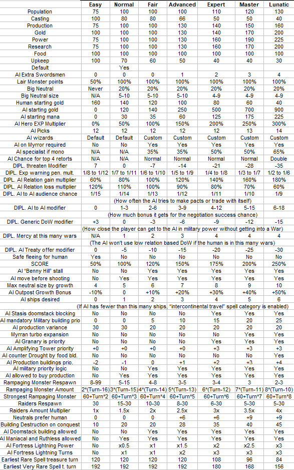
Notes : the first 7 rows are the resource advantages the AI receives, in percentage (100 = no advantage. Below 100 = reduced amount, above 100 = bonus). ÅgCastingÅh applies to overland casting costs paid and has no influence on combat, nor the wizard's casting skill itself. It merely means the AI pays this much less for their spells in general, however spells in certain categories : global enchantments mainly, cost 40% more for the AI in addition.
Known Bugs
AI does not lose the offered gold, and does not require to have it in the treasury for diplomatic offers when proposing a treaty to the player. (The player receives the gold as intended regardless).
Units with spell abilities under the AI control, including Healing Spell, Fireball Spell, etc, ignore Counter Magic, Node Aura, or Spell Ward.
Control changing spells : Possession, Confusion, Creature Binding allows a wizard to control over 9 units. If the other player summons creatures to raise their own total to 9, thus exceeding 18 creatures in combat, the game will crash immediately.
Version History
0.2
-Major : Generating Books/Retorts in treasure no longer causes the rest of the treasure to get discarded.
-Major : AI is now able to keep casting spells overland during their turn instead of being limited to one spell a turn as long as their skill and mana allows. No more wasting a whole turn on casting Skeletons.
-Major :AI Overland casting BUGFIX : Enchantments that were cast without checking if they are already in effect now check it instead of wasting the skill and mana: Nature's Wrath, Tranquility, Life Force, Evil Omens
-Gold and Mana picks now spend points equal to the mana/gold added instead of a fixed 100 for a random amount between 10-200, possible putting only 10 gold into a value100 lair.
-Encounter zones now have a flat +120 added to their treasure pool to prevent disappointing lairs with no treasure or just a few gold coins. This replaces the old check of treasure having a minim value of 50, which I broke when I tried to change to160 (used a signed byte value so 160 = -32, which made it even worse than having 50.). Note that the new version actually adds to the pool instead of just raising it to a minimum value if below.
-Halberdiers now have 1 more defense. Troll Halberdiers also have 1 more health for a 6 total.
-Warships now have only 12 shots.
-Fixed Djinn's movement (was set to 2 instead of the intended 4)
-AI decision : AI now ignores Evil Omens when deciding which overland spell to cast, as it no longer differeniates between realms.
-AI now recognizes Nature's Wrath as anti-Life when selecting spells to cast. Unfortunately, checking for Sorcery cannot be done in a simple way as no anti-Sorcery spells existed in the original game.
-AI Overland casting priority : Resist Elements is now only 2 instead of 5.
-AI Overland casting priority : Regeneration is now 50 instead of 10.
-AI Overland casting priority : Flame Blade is now only 5 instead of 20.
-AI Overland casting priority : Eldritch Weapon is now only 8 instead of 20.
-AI Overland casting priority : Resist Magic is now 6 instead of 2.
-AI Overland casting priority : Immolation is now 20 instead of 2.
-AI Overland casting priority : Holy Weapon is now only 4 instead of 15
-AI Overland casting priority : Bless is now only 3 instead of 5.
-AI Overland casting priority : Holy Armor is now only 6 instead of 10.
-AI Overland casting priority : Heroism is now only 18 instead of 40.
-AI Overland casting priority : Invulnerability is now 40 instead of 25.
-AI Overland casting priority : Lionheart is now 50 instead of 40.
-AI Overland casting priority : Magic Immunity is now 35 instead of 20.
-AI Overland casting priority : Cloak of Fear is now 1 instead of 10.
-AI Overland casting priority : Path Finding is now 5 instead of 20.
-AI Overland casting priority : Endurance is now 1 instead of 10.
-AI Overland casting priority : Nature's Cures is now 0. Casting this spell without checking in advance if the AI has wounded armies is worse than not casting it at all. (Originaly priority was a mere 2, anyway)
-AI Overland casting priority : Enchant Road is now 0. I want to remove this spell later anyway, and enchanting roads only hurts AI as it's easier to reach their cities and fortress.
-AI Overland casting priority : Chaos Channels is now 15 instead of 30.
-AI Overland casting priority : Guardian Wind is now 6 instead of 15.
-AI Overland casting priority : Summon spell priority is no longer based on a (casting cost/multiplier)^2 formula but instead is a fixed value for each spell as follows :
War Bears : 2
Sprites : 5
Giant Spiders : 15
Basilisk : 25
Stone Giant : 32
Gorgons : 50
Behemoth : 40
Colossus : 100
Great Wyrm : 100
Nagas : 8
Storm Giant : 32
Djinn : 40
Sky Drake : 100
Hell Hounds : 30 (this is pretty awesome for 40 mana now that the AI can use the remaining skill on something else)
Gargoyles : 15
Doom Bat : 25
Chaos Spawn : 20
Fire Giant : 15
Chimeras : 25
Efreet : 40
Hydra : 32
Great Drake : 120
Unicorns : 20
Angel : 35
Arch Angel : 120
Skeletons : 50 (Dirt cheap for 25 and no maintence, worth summoning one or two between each stronger summon just to fill ranks, see Hell Hounds)
Ghouls : 5
Night Stalker : 20
Wraiths : 45
Shadow Demons : 32
Death Knights : 100
Demon Lord : 200
Cockatrices : 25
Enchant Item : 5, 0 if artificier
Create Artifact : 20, 60 if artificier
Resurrection : 100
Summon Hero : 20
Summon Champion : 64
This allows a more reasonable distribution of summoning, unlike the original which basically made the AI summon the most expensive unit all the time, even more so if it had a good modifier. Example : Behemoth had a modifier of 10 (average), while Basilisk had a modifier of 7(frequent). With the origial formula, this gave basilisk a chance of (325/7)^2=2135 chance and Behemoth a (900/10)^2=8100 chance, so Behemoth was summoned 4 times as often even though Basilisk was given an increased chance and Behemoth wasn't. The squaring in the formula also caused these priorities to skyrocket at high casting costs, so spells in the same group without this modifier were selected way less often once high casting cost options were opened, including guardian spirits, resurrection, enchant item Create Artifact.
-AI Overland casting priority : Enchant Item is now zero prioroty for Artificiers (they have Create Artifact instead)
-AI Overland casting priority : Global Enchantments are also no longer priorized based on their casting cost, instead have a fixed value.
Herb Mastery : 10
Aether Binding : 100
Aura of Majesty : 5
Great Uncummoning : 30 – The AI is using this without checking how many of its own units are vulnerable, suicide much? Fortunately most high end summons are immune. Added an extra considition : Priority is 0 if the AI has Zombie Mastery in effect. Hopefully, other than that, it won't have too many low resistance units left by the time it's first casting the spell.
Suppress Magic : 100
Spell Binding : 0 because it has no effect when cast by AI. Need to make that work first. Also, it was casting this without checking if any enemy had any good enchantments to steal, ewww.
Great Wasting : 20
Chaos Surge : 0, but 200 if Doom Mastery is in effect. Again, casting this without checking who has more chaos units in play is meh, could even help the enemy as it buffs ALL chaos units not just own. Funny enough, the AI does cancel this after casting it, if his main realms are not set as Chaos.
Doom Mastery : 80
Meteor Storm : 40
Armageddon : 300
Just Cause : 50
Planar Seal : 50, this actually does a check to see if it's beneficial, yay!
Holy Arms : 60
Charm of Life : 120
Crusade : 200
Eternal Night : 50. Again, no check to see if it even has Death units. Fortunately the new added effect makes it valuable even if not.
Death Wish : 75
Zombie Mastery : 100
Awareness : 5
Nature's Wrath : 200 (Uses a different spell group Åganti-color enchantmentsÅh)
Life Force : 300 (Uses a different spell group Åganti-color enchantmentsÅh)
Tranquility : 120 (Uses a different spell group Åganti-color enchantmentsÅh)
Evil Omens : 100 (Uses a different spell group Åganti-color enchantmentsÅh)
-AI will no longer cancel the following overland spells if playing the wrong color : Eternal Night, Evil Omens, Chaos Surge, Tranquility, Life Force. 4 of these had their effect changed or enhanced, Chaos Surge is now not being cast unless Doom Mastery is already in effect and then there is no need to cancel it.
-AI will now always try to dispel Evil Omens regardless of played Realm.
-AI will now always try to dispel Nature's Wrath if not playing Nature as primary.
-AI priority for dispelling Herb Mastery reduced (50->5)
-AI priority for dispelling Tranquility is now 20 regardless of Realm played
-AI priority for dispelling Life Force is now 40 regardless of Realm played
-AI will now properly recognize knowing Suppress Magic as a spell to increase priority of casting enchantments instead of incorrectly adding priority to the anti-color enchantment category.
-AI will now consider casting (anticolor) enchantments regardless of colors played by player, as they no longer have a color related effect.
-AI Combat spellcasting decisions : Death Spell now only counts units with a resistance score where the success rate is a minimum of 30% instead of the default non-zero.
-AI Combat spellcasting decisions : AI now recognizes Syphon Life as a Drain Life spell.
-AI Combat spellcasting decisions : AI now recognizes Fairy Dust as a Ice Bolt spell.
-AI Combat spellcasting decisions : Haste, Berserk and Drain Life now only receives a +5 priority boost instead of +10. (Why these 3 anyway? Original Drain Life was horrible...other two are good I guess.)
-AI Combat spellcasting decisions : AI now recognizes Call Centaurs and Contruct Catapult as a neture summoning spell (Earth Elemental's code but lower priority due to lower summoning cost)
-AI Combat spellcasting decisions : AI now recognizes Summon Zombie, Summon Demon, and Call to Arms as a summoning spell (Earth Elemental's code because there were no life or death combat summons to redirect the code to, realm shouldn't mattter anyway, except at nodes maybe)
-AI Combat spellcasting decisions : AI now recognizes Psionic Spark as a Psionic Blast spell instead of as the removed Word of Recall.
-AI Combat spellcasting decisions : AI now recognizes Heroic Shout as a Fireball spell instead of as the removed Recall Hero, with a fixed priority of 20.
-AI Combat spellcasting decisions : Lionheart now receives the same priority buff as Invulnerability (+30).
-AI Combat spellcasting decisions : AI now recognizes the replacement of Wall of Stone with a noncombat spell and assigns ÅgNot validÅh priority correctly. (although I never seen the AI cast it anyway)
-AI Combat spellcasting decisions : Metal Fires now considers fantastic units (because they are now eligible for the buff)
-AI Combat spellcasting decisions : Warp Reality now requires at least 3 more chaos units than the enemy to be cast instead of only 1 more. Spell priority is higher if condition is met. Change is done because this spell it pretty expensive and a waste on only one unit that might even be Hell Hounds.
-AI Combat spellcasting decisions : Raise Dead now only considers ÅgDeadÅh and ÅgDead from drain damageÅh units instead of everything except ÅgAliveÅh and ÅgDisintegratedÅh. This might fix the bug (or at least make it less frequent) of the AI raising units carried by the ship in naval battles, I assume those might be the type ÅgNot involvedÅh which was actually considered.
-AI Combat spellcasting decisions : Blur is now not ignored by the priority system and receives the same priority boost as Prayer.
-Counter Magic : Failure to counter a spell no longer decreases remaining power.
-Counter Magic : Succesful counters decrease power by 10.
-Counter Magic : Now has a linear formula : Casting success chance = Spell cost/Counter Magic strength. Spells being more expensive than CM's strength will never get countered, so it works similarly to the new Suppress Magic.
-Counter Magic: Now costs a minimum of 16 mana and a maximum of 80. This means that combat spells equal to or more expensive than 80 mana cannot be countered at all by Counter Magic ( This means Mass Invisibility and a boosted Disnechant Area only at the moment). In general, it's less effective if the enemy casts expensive spells only (as there is a good chance nothing gets countered before they use all skill), but as strong as ever against low cost spells, so it's a pretty good protection against direct damage spells.
-Nodes use the same formula as Counter Magic, but their strength is 50. This means your 50+ mana spells will be always successful, and your 25 mana ones have an exact 50% chance of working.
-Fixed a possible instability source added by a previous change (although it never actually caused a problem).
0.21
-Major : Fixed a bug caused by the previous update in the AI spellcasting that caused the AI to cancel spells and restart casting another one at the beginning of turn instead of continuing it, which caused Spell of Return to not complete.
-Towers now go through the normal spell roll procedure instead of forcing one random spell into the treasure ignoring costs. This means that if the tower actually rolls a spell it does not have treasure points for, it might not contain any spells, but it will always attempt to roll for a spell first.
-Forester's Guild now requires a forest to be built. (Sawmill doesn't because it's intended to be a general purpose, important production building.)
-Slightly increased advatages for the AI on hard and above levels, it felt a bit too weak.
0.3
-Major : New Scoring system : +4 for spells, +2 for people, +4 for fame, +200 for wizards, +100 for spell of mastery, Easy 0.5x, Normal 1x, Hard 1.5x, Extreme 2x, Impossible 2.5x
-Added new landmass : Tiny and adjusted the amount of land cells for each : Tiny = 150, Small = 250, Normal = 400, Large = 600, Huge = 800. Unfortunately the smaller options fail to find fortress locations and hang way too often.
-Major : Barracks now make units start as Regular instead of Fighter's Guild.
-Barracks is no longer required to build units, its role is replaced by the Smithy.
-Fantastic Stables now only require and Armory instead of a Fighter's Guild
-War College no longer requires an University.
-The military building trees are now :
Barracks->War College
Smithy->Armory->Fighter's Guild->Armorer's Guild
Smithy->Stables
Stables+Armory->Fantastic Stables
Races that cannot build a War College : Klackon, Lizardmen
Races that cannot build Barracks : Halflings
-Major : Spell Ward now has an additional effect : Spells of the selected realm in combat will be countered (100% chance), affects both players.
-Major : AI spellcasting : Spell Binding now works and has the same effect as for the player (100% chance of stealing spell). Original code first did a dispel roll for the spell, then converted the spell ID into an enchantment ID to steal the spell on success, which had no effect because it already had an Enchantment ID before the conversion so converting it again messed up the data.
-Major : AI diplomacy : Defeating another wizard will now yield a +50 boost to your relation with wizards who were at war with the defeated wizard, no change if they had no treaty, and -40 if they had a pact or alliance.
- Major: AI diplomacy : Banishing another wizard will now yield a +25 boost to your relation with wizards who were at war with the defeated wizard, no change if they had no treaty, and -20 if they had a pact or alliance.
-Major : AI Diplomacy : Starting (and default) diplomatic relations use a completely new calculation , see below :
First gain +2 relations for each shared book (including all realms, even Death).
Then calculate an aligment for the wizards : Alignment=(Nature+Life)-(Chaos+Death).
Subtract 3*(abs(Wizard Alignment1- Wizard Alignment2)-4) points from relations. Note that this reduces relations if the alignment difference is higher than 4, but improves it if the difference is less.
The total maximum possible positive relation is 35 (13 shared books), highest negative is -66 (all 13 books from opposite realms). Sorcery books have no effect on wizard alignment. It's pretty unlikely to have a significant penalty here unless you commit to a large amount of good or evil books and find an opponent who did the exact opposite.
-After a battle at a town, building destruction chance is capped at 60% instead of 75%.
-After conquering a town, there is no additional +10% chance of destroying a building (if you didn't walk to the inside, or used destruction causing spells, everything stays safe)
-After conquering a neutral town, there is no additional 50% chance to destroy buildings.
-Finding a spell from a banished wizard requires a minimum of 1 book for common, 2 for uncommon, 3 for rare, and 4 for very rare. Same for trading spells.
-Adjusted Spell desirability data in the spell table (previously unknown purpose byte 14h) to reflect the current value of spells better.
-Lairs now require 3 books for rare and 4 for very rare spell findings of their realm instead of the original 2 and 3. Uncommons and commons can both be received with only 1 book. This is different from diplomacy and banishing, where you do need 2 books for uncommons.
A quick summary of the effects of each book you have, regardless of where they came from :
1st book : Contains 3 common and 1 uncommon spells. Allows finding common and uncommon spells in dungeons. Allows trading for common spells. Allows finding common spells from defeaed enemy wizards.
2nd book : Contains 2 common, 1 uncommon and 1 rare spell. Allows trading for uncommon spells, allows finding uncommon spells from defeated enemy wizards.
3rd book : Contains 1 common, 1 uncommon, 1 rare and 1 very rare spell. Allows finding rare spells in dungeons and from defeated wizards. Allows trading for rare spells.
4th book : Contains 1 common, 1 uncommon, 1 rare and 1 very rare spell. Allows finding very rare spells in dungeons and from defeated wizards. Allows trading for very rare spells.
5th-10th books : Contains more spells, reduce casting cost of spells of that realm by 2%, increases research of that realm by 3%.
11th and above : Reduce casting cost of spells of that realm by 2%, increases research of that realm by 3%. You already have all spells available from the 10th book so no more spells.
-AI Diplomacy : Casting Evil Omens now causes a -20 diplomatic penalty to all wizards regardless of realm.
-AI Diplomacy : Casting Aether Binding now has no effect on diplomacy.
-AI Diplomacy : Casting Nature's Wrath now causes a -20 diplomatic penalty to all wizards who own a non-Nature book.
-AI Diplomacy : Casting Zombie Mastery now has no effect on diplomacy.
-AI Diplomacy : Casting Doom Mastery no longer causes a diplomatic penalty
-AI Diplomacy : Casting Life Force no longer causes a diplomatic penalty
-AI Diplomacy : Casting Tranquility no longer causes a diplomatic penalty
-AI Diplomacy : Casting Crusade no longer causes a diplomatic penalty
-AI Diplomacy : Casting Holy Arms no longer causes a diplomatic penalty
The remaining global enchantmenst that still have diplomatic effects are :
Eternal Night -12 once, -1/turn
Evil Omens -20 once, -2/turn
Aura of Majesty +10 once, +2/turn
Suppress Magic -25 once, -2/turn
Nature's Wrath -20 if owning any non-nature book once, -2/turn
Chaos Surge -10 if not owning a chaos book once, -1/turn
Great Wasting -20 once, -2/turn
Meteor Storm -15 once, -1/turn
Armageddon -25 once, -2/turn
-AI Diplomacy : Successful trading of a spell now counts as a +7 diplomatic action instead of +5. This is now applied when receiving a spell of equal or higher research value instead of just higher, as spells with equal value are much more frequent now.
-AI Diplomacy : Positive diplomatic actions performed to a wizard that had a negative realtionship with the performer are no longer capped to only raise relationship to a +10 at best.
-AI Diplomacy : Negative diplomatic actions no longer have a double effect on a wizard that had a positive relationship with you. They still are less effective the worse the relationship is if already at far below zero.
-AI Diplomacy : Positive diplomatic actions no longer have a double effect on a wizard that had a negative relationship with you. They still are less effective the better the relationship is far above zero however.
-AI Wizard generation : Now can select Life+Death books at random instead of only having that from choosing the default wizards that have both.
-AI Wizard generation : Now can't select more than 10 books of a type.
-AI Wizard generation : Myrran now costs 2 for the AI.
-AI Diplomacy : Casting Corruption is now a -5 strength diplomatic effect instead of -25.
-AI Diplomacy : Casting Raise Volcano is now a -10 strength diplomatic effect instead of -50. Seriously, this spell had a worse penalty than nuking two cities with Call of the Void.
-Volcanoes now have a 1% chance to revert to mountains instead of 2%. I found absolutely no reference to generating ores at a random chance in the code, this feature seems to be unimplemented. While it would be nice to have, volcanoes not helping the enemy is actually more beneficial when using the spell for offense, so I don't plan to implement it, it's not worth it.
-Fixed Nature's Eye not giving 2 research as intended (I accidentally overwrote this code when adding Tranquility's research effect)
-Fixed the description of the Resist Magic unit ability to correctly display +5 crosses
-Wizard's Guild cost is increased to 700, research reduced to 3
-University cost is reduced to 125, research reduced to 5
-Sage's Guild research is reduced to 9
-Aura of Majesty now adds +2 relation per turn.
-Animist's Guild now requires Forester's Guild instead of Stables
-Parthenons now correctly display the amount of power produced on city screens.
-Cathedrals now correctly display the amount of power produced on city screens.
-Alchemist Guilds now correctly display the amount of power produced on city screens.
-Wizards Guilds now correctly display the amount of power produced on city screens but it's still show as negative
-Evil Presence now correctly displays the amount of power produced on city screens even if the owner has Death books, but it's still shown as positive
-Sages Guilds now correctly display the amount of research produced on city screens.
-Wizards Guilds now correctly display the amount of research produced on city screens.
-Gold produced as taxes is now correctly displayed in the city screen.
-Gold produced by the Marketplace is now correctly displayed in the city screen, but does not include bonuses from Bank, Merchant's Guild and Prosperity. Only the trade bonus is included.
-Gold produced by the Bank is now correctly displayed as 30% of taxes in the city screen but disregards Marketplace due to lack of coding space.
-Gold produced by the Marketplace is now correctly displayed as 40% of taxes in the city screen but disregards Marketplace due to lack of coding space.
-Sawmill production is now corrrectly displayed as 8
-Forester's Guild, Miner's Guild and Mechanician's Guild production is now correctly displayed, but disregards the +8 from the Sawmill due to lack of coding space.
-Forester's Guild now produces +3 food without counting as using the land, so it's not reduced to 1 if the city is already overusing the land. (Granary and Farmer's Market works like this)
-Forester's Guild's food production is now correctly displayed.
-AI diplomacy : Minimum relation required for having your treaty considered is unchanged, the values I found in the code are : Wizard's Pact +10, Alliance : +50, Declaration of War on another : no requierment, Break Alliane with : +25, Peace Treaty : No minimum. Additionally, if the player has an alliance with the wizard, and is at war with the target, asking for war has a 50% chance to be automatically accepted, otherwise additional demands need to be fullfilled, but there is no chance of outright rejection, meaning an Alliance is a pretty useful treaty.
-Psionic Blast now costs 25 mana.
-AI building buying decision : Instead of the original, random based code that compared the price of the product multiplied by a random number with the gold reserve regardless of needs or personality, the AI will now buy products if any of the following is true :
1.The AI has 10000 or more gold
2.The product is a Sawmill, Wizard's Guild, or Nightmare. (I wanted to include more like Paladins, Doom Drakes and other top units, but out of coding space sadly.)
3.The AI has 12 times the cost of the product or more in gold. For example a Marketplace (60 production) will be bought if the AI has 1440 or more gold.
If neither of these conditions is true, the AI will not buy the product.
-AI building to build selection : Sawmill now has the highest priority, unless playing Lizardmen which cannot build one.
-AI building to build selection : Barracks is no longer included in the priority list.
Note : The priority list completely disregards any restrictions on buildings and forces it through anyway. Meaning that races who cannot build certain buildings will get them under AI control if they are included in the priority list.
-AI building to build selection : Smithy is still the second highest priority (no change but first is now Sawmill)
-AI building to build selection : Builder's Hall is no longer included in the priority list.
-AI building to build selection : Granary is no longer included in the priority list.
-AI building to build selection : Shrine is still in the priority list as the last element (no change except that this is now the third one instead of the sixth, the list is shorter), fortunately all races can build this. While I could add more buildings, I don't think the current system really needs anything specific to be built early other than these thee (in fact Shrine is not even a must have) and as it would disregard resitrictions and make the AI cheat, I prefer not to use that code space. Non-priority building selection is also unchanged.
-Neutral Town building selection : Smithy is now a priority, Barracks is not.
-Neutral Town building selection : Builder's Hall and Granary are no longer a priority so they won't disregard building restrictions.
-AI combat spellcasting : The AI will now never cast spells of a warded realm in combat. (Also some good news : There are roughly 120 bytes of coding space left in the combat spellcasting priority procedure, so a whole lot of additional stuff can be added later if the need arises. For reference, the check for spell ward took ~45 bytes so120 bytes are a lot of space. All this space came from Word of Recall's code which was quite extensive. There are also a few other removed spells that can be used to make space, although I don't see an immediate need to add new conditions to combat spellcasting at the moment, the predefined priorities are pretty well done for at least the important spells.)
-AI combat spellcasting : The AI will no longer use Syphon Life on Death Immune targets
-Nightblades now have +1 attack, defense and health, making them have better stats than halberdiers.
-AI overland spellcasting type selection : Zombie Mastery adds only 10 instead of 100 to disjuction type priority.
-AI overland spellcasting type selection : Aura of Majesty no longer adds to disjuction type priority. (was +25)
-AI overland spellcasting type selection : AEther Binding no longer adds to disjuction type priority. (was +25)
-AI overland spellcasting type selection : Doom Mastery adds only 15 instead of 200 to disjuction type priority.
-AI overland spellcasting type selection : Crusade adds only 50 instead of 100 to disjuction type priority.
-AI overland spellcasting type selection : Just Cause no longer adds to disjuction type priority. (was +10)
-AI overland spellcasting type selection : Holy Arms adds only 10 instead of 100 to disjuction type priority.
-AI overland spellcasting type selection : Charm of Life adds only 25 instead of 200 to disjuction type priority.
-AI disjuction target selection : Evil Omens is now always priority 200 regardless of spell books to match new effect.
-AI disjuction target selection : Zombie Mastery is now priority 15 instead of 50
-AI disjuction target selection : Aura of Majesty is now priority 5 instead of 20
-AI disjuction target selection : Aether Binding is now priority 1 instead of Wind Mastery's 15
-AI disjuction target selection : Nature Awareness is now priority 3 instead of 10
-AI disjuction target selection : Nature's Wrath is now priority 200 if either primary or secondary realm is non-Nature.
-AI disjuction target selection : Doom Mastery is now priority 25 instead of 50
-AI disjuction target selection : Meteor Storm is now priority 60 instead of 30
-AI disjuction target selection : Armageddon is now priority 100 instead of 40
-AI disjuction target selection : Tranquility is now priority 5 instead of 200 regardless of Realm to reflect now effect.
-AI disjuction target selection : Life Force is now priority 25 instead of 200 regardless of Realm to reflect now effect. Also worth mentioning that the original code was bugged, it checked for Chaos realm instead of Death.
-AI disjuction target selection : Just Cause is now priority 1 instead of 15
-AI disjuction target selection : Holy Arms is now priority 20 instead of 30
-AI disjuction target selection : Charm of Life is now priority 20 instead of 60
-AI disjuction target selection : Great Wasting is now priority 40 instead of 20
-AI disjuction spell choice : Top priority is now Spell Binding, then Disjunction True, then Disjunction, and none if the AI has neither. Note that the AI now actually considers Spell Binding as an enchantment removal spell instead of just a general purpose spell that can be used anytime.
-AI Spell Binding target selection priorities (yes the AI had separate code for these despite the spell not working at all) :
Eternal Night – 50 regardless of owning death books
Evil Omens – 120
Zombie Mastery - 50
Aura of Majesty - 1
Aether Binding - 30
Suppress Magic - 120
Time Stop – 10 (can't steal anyway)
Nature Awareness - 1
Nature's Wrath – 100 regardless of any books
Herb Mastery - 20
Chaos Surge – 1 regardless of Chaos Books, spell does the same thing even if opponent controls it
Doom Mastery - 50
Great Wasting - 20
Meteor Storm -40
Armageddon -100
Tranquility -64
Life Force -80
Crusade - 80
Just Cause - 3
Holy Arms - 30
Planar Seal - 10
Charm of Life -60
Detect Magic -1
Awareness -1
Note that quite a few spells have a high dispel but low steal priority or the other way around, depending on the effects.
-AI overland offensive spell casting priorities : priority is now a fixed value instead of being relative to the spells's casting cost. Some of the spells seem to overlap with spells in other categories.
Blizzard : 3
Earthquake : 10
Spell Blast : 10
Stasis : 1
Time Stop : 25
Corruption : 25, high value because the spell is cheap and spammable
Fire Storm : 7
Raise Volcano : 50, also cheap and spammable
Chaos Rift : 20
Call of the Void : 200
Famine : 30
Warp Node : 15
Black Wind : 15
Drain Power : 20
Evil Presence : 40
Cruel Unminding : 20
Pestilence : 50
Cursed Lands : not in the game
Subversion : not in the game
AI decisions : Maximum tax rate being used is now 6 (2.5gold) instead of 4(2 gold). Minimum is unchanged(3). Unrest penalties for the last two rates are no longer too harsh for use.
Aether Binding : Doubled the amount of Skill Pool gain.
-Air Elemental : Defense reduced by 3
-Restored max retorts to 6, there is no need for more than that, but max books stays at 19.
-Sky Drake breath attack is reduced to strength 15.
-AI power base decision : AI will now look at their power base distribution once every 1-4 turns instead of once every 15-25. (lol)
-AI power base decision : During the first 30 turns, the AI will focus on producing mana for early expansion instead of doing a roughly even distribution.
-AI power base decision : Default is 10% research, 25% skill, 15% mana and another 50% selected at random weighted by needs and preferences. Original was 15 res, 10 skill and 25 mana, too low for skill.
-AI power base decision : Militarist now considers mana a priority (to maintain armies) and perfectionist prefers skill (to cast more spells) instead of the other way around.
-AI power base decision : Having 200 or lower skill now makes the AI consider skill a priority, instead of 100 or higher skill making research as one.
-AI power base decision : Having over 1000 mana will no longer replace the mana choice with 50% chance of skill, 50% chance of research. Instead, having 4000 mana turns ÅgmanaÅh choices into ÅgskillÅh ones, and won't select research, if you have too much mana, it's a clear indication of skill being insufficient.
-AI power base decision : Having more skill than 12.5% of the mana reserve turns all skill choices into mana instead of having 400% more skill than mana doing it...for example at 100 skill, the AI will go for mana if they below 800 mana remaining instead of the original 25.The AI will try to have enough reserve for 8 turns (or 2 battles at rangex3) as a minimum.
-AI alchemy decision : AI will now turn gold into mana when having less than 1/16th of gold in mana instead of 1/32.
-(optional) fixed Clow/Eriol's staff being cut off halfway on the research screen
0.4
-Fixed Barracks help text to correctly display 0 maintenance.
-Fixed ore produced gold displays
-Fixed ore produced power displays
-Fixed dwarven double gold not being applied to road/river trade bonus displays even though it does get applied into the actual gold produced.
-Limited number of primary monsters in lairs to 6 to avoid the inconvenient situation of the 1 secondary monster being stronger due to excessive remaining points
-Autosave now happens every turn instead of every 4th turn.
-Mana Short event is now replaced by Aether Flux event : All spells cost 50% less to cast.
-Disjuction event is now replaced by Stroke of Genius event : Every wizard's current research makes a progress of ~9900 points, resulting in immediate research of the current spell, except for Spell of Mastery.
-Surveyor now shows the correct production and gold bonus value, taking into account the new effects of Sawmill, Forester's Guild, Mechanician Guild, Miner's Guild, Prosperity, Marketplace, Bank, Merchant's Guild, and also fixed the bug of Inspirations adding 100 to the display despite only adding 50 to actual production from the original game.
-It now costs 0.5 movement to move through enchanted roads. Warning, this only affects newly created roads. Loading a prevous save with already made roads still allows free movement because cost is decided at the time of road creation and kept in the save data afterwards.
-It now costs 1 movement to move through normal roads.
-New Game generates no roads between the neutral cities, to avoid having pre-generated roads that ignore the new movement costs. Considering the huge trade gold bonus they grant, finding them already built is too good anyway.
-Removed the check from placing the starting capitals that caused frequent failure of generating new games on tiny to medium landmass. The check was most likely for the quality/amount of land available for the town at the selected location. Some other parts still seem to sometimes cause hanging, but less frequently.
-Each plane now has 6 neutral towns generated on them instead of 15 at start.
-Newly generated towns at the game start no longer have roads under them.
-Book and Retort treasure now costs 800 points not 600 each.
-Minimum distance of duneons from each other is now 1 not 2 (probably was the other reason tiny landmass generation failed)
-Enchant Item and Create Artifact : Making accessories no longer costs double for stat points.
-Counter Magic is now 14-70 mana, instead of 16-80.
-Pathfinding units now have the proper interaction with roads : moving at 1 on normal and 0.5 on enchanted roads.
0.41
-AI combat spellcasting priorities : Counter Magic now calculates priority based on number of units instead of adding a flat +30.
-Aether Flux has ended message is now properly displayed
-Counter Magic combat help icon now displays the proper information
-Metal Fires combat help icon now displays the proper information
-AI combat spellcasting priorities : Doom Bolt now gets a +18 priority boost
-AI combat spellcasting priorities : Mind Storm now gets a +15 priority boost
-AI combat spellcasting priorities : Having an invisible unit in battle only adds +30 to disenchant area priority instead of +160.
-AI combat spellcasting priorities : Each combat global enchantment only adds +20 to disenchant priority instead of +30 (except for the two predetermined exceptions, Wrack and Call Lightning)
-AI combat spellcasting priorities : Disenchant area priority no longer gets a boost for its high casting cost (it event got this boost if there was nothing to dispel!)
0.42
-High Elf Magicians now have Magic Immunity but cost 180 to build.
-Fixed the bug that max population cities couldn't lose population as well as gain, instead of only being unable to gain.
-Great Wasting now causes +5 unrest in every nonfriendly town
-All units reduce unrest now, even heroes
-Reduced the resistance of most Troll units. I seem to have overlooked them when adjusting normal unit resistances, being the last race in the database.
-Grand Vizier will no longer attempt to build unavailable buildings.
-AI Building choices : Adjusted the priority of various building types. Reassigned some buildings into other groups to reflect their new function better. Note : This data is actually used by the Grand Wizier too, which assumes the player is a Pragmatist wizard (can be changed if you change the personality of your wizard by an editor, the actual personality value is used). The following buildings received a huge priority boost : Granary, Farmer's Market, Marketplace, Sawmill, Library, this does not guarantee they'll all be be chosen first but it's quite unlikely to build anything else while there are not built since they have priority in the thousands compared to the other building's tens.
-Grand Vizier will never build units for you, only buildings.
-Grand Vizier will never change your production order if you are producing units in the city. If you want to stop making units, you need to change to a building or trade goods or housing manually and the Vizier will take over for you after that order is complete.
-Fixed Bug : re-buying a bulding that was destroyed or sold this turn results in an ÅgghostÅh building, it is there but has no effect. Looks like this was caused by some code which belongs to an unimplemented feature, if you build something that is already built (not even possible), it increases the building's status by 1 instead of normally building it. Maybe a building level up system they decided not to go with?
-Excess production will now carry over to the next project and isn't lost.
-Excess population growth when reaching the next 1000 will not be lost.
-Death units can now heal naturally both on field and in town, except for : Zombies, Skeletons, Wraiths, raised undead. They still cannot be healed by other means (including life and nature spells etc)
0.43
-Trolls cannot build Fantastic Stables as it doesn't unlock any units for them.
-Fixed memory corruption bug from 0.42, I forgot to clear two bytes of unused code in the production carry over edit.
-Re-enabled the land quality check for placing starting fortresses, but now the minimum acceptable is much lower than original, so there are no failed map generations, and you still won't start in the middle of deserts or tundras with a max pop of 5 or less like in previous 0.4x versions. Out of roughly 30 new games generated, none crashed or had a max pop below 10 for the starting city with this setting.
-AI : New unit producing priorities : Now each unit has its own priority value instead of using the formula priority=(cost/10)^2. Priority uses unused byte 19h in the unit tables.
-AI : producing units is prioritized in towns with less than 6 units inside instead of 4.
-AI : AI is now somewhat more likely to build units in general
-AI : AI is now less likely to produce trade goods : instead of doing it in 25% of owned towns, it does so for 25% of the owned towns above the first 6, so no production is wasted at the beginning of the game.
-AI : AI will now build sawmill and smithy even if there are no units in town, before this change it was stuck not building anything in empty dwarven towns as they can't build military units without a smithy, and wasn't willing to build smithy before having at least one unit defending the town. Yes, this will unfortunately leave new outposts more vulnerable but that 1 spearmen wouldn't stop anyone anyway.
0.44
-Golems now only need an Armory instead of an Armorer's Guild, the race already has Hammerhands for that building.
-Golems now have Magic Immunity
-Golems now cost 150 to build.
-Rangers now require a Forester's Guild instead of the impossible to build Animist's Guild.
-AI will now not flee from battle when one of their heroes is in the fight and the enemy has the advantage. While this normally would be a good strategy, heroes aren't following the same rules as normal units in power : A single, well equipped hero can easily outperform a stack of 9 good units, and this potential wasn't reflected in the AI's approximated unit value, at least, I have seen near invicible AI heroes flee and die in shame far too often. In fact, most heroes I couldn't have defeated, died this way. I rather have the AI sacrifice some weaker heroes than to not use their stronger ones to their full potential. The AI can still flee if their entire army is made from settlers and engineers however.
-Dwarves can no longer build Wizard's Guilds and Sage's Guilds. (The race is waaaay too powerful with the strong normal units, high resistance, double gold, and double mineral bonus, also dwarves hate magic usually)
-AI Combat spellcasting targeting : AI will now consider units with a resistance greater than 6 invalid targets for Drain Life, greater than 10 invalid for Syphon Life.
-AI Combat spellcasting targeting : AI will now consider units with a resistance of 8 or higher after spell save modifiers invalid for resistance roll based curses instead of 10 or higher (using a spell for 10-20% chance is outright stupid and a waste of mana). Instant kill spells (Petrify, Banish, etc) are not affected.
-War Mammoths now have 10 health per figure instead of 12.
-Added another +7 priority to Doom Bolt
0.5
-When a new unit is created (summoned, recruited, built, found) it will ALWAYS be the one that gets pushed off the square in case of having 9 units there already. This will allow you to keep producing new units in cities without having to return the garrison every time when a better unit was produced, and in general, helps to keep your stacks of units the way you left them.
-Fixed possible bug in undead rising (left there when I tried to get the Ågraise over 9Åh work)
-Removed hardcoded cap of 2 on scouting range of units.
-Scouting is now displayed as the amount the unit can see on top of the base 1. So Scouting I can see 2 cells, Scouting II 3, Scouting III 4, and finally Scouting IV can see 5 cell away. Unfortunately the game does not support displaying numbers greater than IV, but any higher scouting range than 5 cells is excessive anyway. These new numbers actually match the original description of the ability better.
-Units have new scouting ranges :
1 : All other units not mentioned below.
2 (Scouting I) : all Shaman, all Dark Elves, Hell Hounds, All Giants, Doom Bats, Sprites
3 (Scouting II) : All heroes except those that have more, Trireme, Galley, all Priests, Manticores, Doom Drakes, Wolf Riders, Efreet, Great Drake, Death Knights, Djinn, Sky Drake.
4 (Scouting III) : Ranger hero, Warship, Nightmares, Nightblades, Air Ship, Pegasai, Rangers, Angels, Colossus
5 (Scouting IV) : Beastmaster, Chosen,Priestess, Paladin and Druid hero, Demon Lords, Archangels.
Note that new scouting ranges are applied when a unit is created, so you have to start a new game if you want it to work on all units in the game.
-Razing a town now correctly displays the amount of gained fame instead of still subtracting loss for the razing.
-Healing a damaged unit will no longer grant extra maximum health for it. However, spells that allow gaining maximum health by overhealing the unit (Drain Life, Syphon Life, Life Stealing), still allow doing so, but no extra health is gained unless the unit is healed above the maximum health it has.
-New spell : Healing Charge.
Heals a targeted unit in combat for 10, however, this healing can surpass the maximum health of the unit, granting extra hearts. The maximum health increment is divided evenly between figures, rounded down, so a 8 figure unit can only gain +1 health per figure if it had no more than 2 damage before the use of this spell.
-Removed spell : Plane Shift. The AI will no longer attempt to cast it.
-AI now uses the Healing spell's priority calculation for Healing Charge.
-New Spell : Conjure Road – Replaces Enchant Road.
Creates enchanted roads in a radius of 2 around the targeted map cell instead of only upgrading existing roads.
-The event ÅgBad MoonÅh now grants -2 resistance to all units in battle, on top of its original effect.
-The event ÅgGood MoonÅh now reduces the cost of all unit enchantments by half, on top of its original effect.
-The event ÅgChaos ConjunctionÅh now increases the power of all direct damage spells by 33%, on top of its original effect. The following spells are boosted : Fairy Dust, Ice Bolt, Psionic Spark, Psionic Blast, Fire Bolt, Lightning Bolt, Fire Ball, Warp Lightning, Doom Bolt, Heroic Shout.
Life Drain and Syphon life are not affected because they are resistance based and have no Ågattack strengthÅh to boost. Note that the boost of Warp Lightning from 11 to 14 strength increases its power by a lot as it means 3 additional bolts will be done.
-The event ÅgNature ConjunctionÅh now increases the defense and resistance of all non-Death fantastic creatures by 2 in combat, on top of its original effect.
-The event ÅgSorcery ConjunctionÅh now makes power spent towards increasing skill 4 times more effective (including extra points gained from Aether Binding!), on top of its original effect.
-Earliest turn for Diplomatic Marriage event is now 100 instead of 150.
-Towns with equal or more fantastic units than normal units cannot rebel instead of only those that had more. (It's funny how fantastic units don't reduce unrest yet prevent rebellion in the original version of the game) By the way, towns that have any hero in them cannot rebel either.
-Stroke of Genius even no longer requires Global Enchantments to appear (was replacing Disjunction)
-Caster units cannot add power to spells with a slider during combat, only wizards can. This is to prevent the bug of offering a slider for Spell Charged items. Unfortunately there was no coding space to check for Spell Charge directly, my only option was to change the ÅgUnit ability?Åh check into ÅgCaster is not wizard?Åh check. There are only a few remaning pumpable combat spells anyway : Dispel and Disenchant spells.
-Caster units now use ammo to attack instead of mana. Units have the following number of shots :
Sage : 8
Healer : 8
Druid : 8
Warrior Mage : 8
Magician : 10
Wind Mage : 8
Witch : 10
Golden One : 10
Warlock : 10
Unknown : 8
Illusionist : 10
Priestess : 12
Necromancer : 8
Chaos Warrior : 8
Efreet : 8
Djinn : 8
-High Men Magicians now have Caster 20 instead of Fireball Spell. Other Magicians still have Fireball only.
-Spells and MP are displayed together on the combat screen instead of MP taking priority.
-Ammo is displayed when right clicking units, even if they have have mana.
-Golem now has 14 attack, 9 defense and costs 180.
-Treasure generation : Now has a chance of
3/15 to roll gold
3/15 to roll mana
4/15 to roll spell
3/15 to roll item
1/15 to roll prisoner
1/15 to roll special.
Chance of special is reduced from 2/15 to 1/15. While I do want these to be available at slightly lower treasure points, I don't want them to be in every difficult lair due to repeated rolling until points are all used. Chance of item went down from 5/15 to 3/15 for same reason, finding 2-3 top tier items in every difficult lair is excessive.
-Each treasure roll for Gold now contains 50-1000 gold instead of 10-200. This helps balancing out the treasure always ending up as items or specials, by spending more significant portions of points on gold. Note that each roll actually uses up treasure points equal to the gold given instead of a fixed 100 due to a previous change.
-Each treasure roll for Mana now contains 40-800 mana instead of 10-200.
-Reduced spell treasure roll cost to 150 base from 200 base. (150=common, 600 =uncommon, 1350=rare, 2400 = very rare)
-Units defeated in combat are worth 1+floor(unit cost/32) exp instead of a flat 2 exp for everything. Units not killed but raised as undead or transformed into zombies still yield the standard 2 exp each.
-Blademaster now gives +1 to hit for each 3 experience levels. (+3 at max level)
-Super Blademaster now gives +1 to hit for each 2 experience levels. (+4 at max level)
-Fixed display of Blademaster abilities to show the correct amount of gain.
-Equipping an item with the ability ÅgMergingÅh will now grant ÅgMergingÅh movement to the hero.
-The Merging Item power is now available for enchanting, and requires 5 Nature books and 900 mana.
-New item power : Teleportation. Costs 1200 mana, requires 5 Sorcery books, and grants Teleportation movement type as well as the Endurance buff. This power replaces the old ÅgEnduranceÅh power which was removed.
-Unit view will now display the unit's effective immunities instead of the base immunites. Yes, that means units with Invulnerability or Wraith form will actually display the implied Weapon Immunity.
-New item power : Inner Fire. Replaces the removed ÅgGiant Strength.Åh Grants Immolation, Cold and Fire Immunity and +1 attack. Requires 3 Chaos books to enchant, costs 500.
-New item power : Divine Protection. Grants Lucky and Death Immunity. Requires 3 Life books to enchant, costs 800.
-Adjusted pre-generated items to include new powers.
-Readjusted AI disjunction priorities because there were some problems.
-AI will no longer ignore the buying option if zero production is done.
-Hammerhands now cost 220 to build. This unit is far too powerful to cost only 160.
-Ranged attacks will now always use up all movement instead of only 10.
-AI combat disenchant area priority : Having an active Call Lightning or Wrack will now only increase priority by 20 instead of 500, so now there actually is a chance the AI will do something other than wasting all their skill on one big disenchant area spell.
-Fixed Bug : Call Lightning and Fortress Lightning used 14 base strength normal attacks instead of 8 lightning. Why the HELL are these storing there data in Wall of Stone of all things? Ofc they got broken when I replaced that spell.
-Prayermaster now grants +1 resistance to all per 2 levels of experience. Super Prayermaster is 0.75 per level. (meaning max normal is +4 and max super is +6, both achieved one level below maximum)
-Fixed the unit info display for both Prayermaster abilities to display the correct amount. (lol this took 3 times longer than changing the abilities)
-Paladins have 1 more health per figure.
-Restored the 20 Lightning Breath on Sky Drakes, they aren't that powerful as I thought.
-Flying units now move for 0.5 on enchanted roads.
-Fixed bug of AI crashing if no valid targets are available for the spells that received more priority (Doom Bolt vx invisible hero for example), priority will no longer be added unless it was non-negative.
0.51
-Fixed some help texts
-Fixed gold being displayed wrong on city screens and overland due to buggy marketplace hex code used.
-Fixed gold being displayed wrong overland due to it being calcluated at two separate locations, while some changes were only applied to one of these.
-Fixed Åghalved food upkeepÅh not applying to actual food produced and converted to gold, only to checks for desertion. Yes, the game actually calculates the total army food upkeep in two, identical subroutines, too.
0.52
-Extra production from sawmill is now considered in detailed display for terrain and % based buildings.
-Adjusted AI starting spell preferred order. This is also used when the player selects a default wizard.
-Capturing neutral cities will now grant more gold (1-20 at random per population instead of 1-10)
-Capturing cities owned by other wizards yields gold equal to the city's gold production*2 but no more than half the gold in the wizard's treasury.
-Capturing the enemy fortress will no longer allow stealing half of the enemy wizard's mana reserves. No more free 10k+ mana for banishing the AI on high difficulty.
-Extra gold from marketplace is now considered in detailed display for % based buildings.
-Wizard's Guild now correctly displays the amount of power as positive
-Evil Presence now correctly displays the amount of power as negative
-Raised the resistance of ships ( trireme = 6, galley and warship = 8)
-Weakness now reduces attack by 3.
-Maybe fixed bug ÅgFlightÅh not raising movement to 3 if it was 1.5 or more.
-Endurace now grants +1 to defense on top of the 1 movement but costs more and is overland only. (this bonus is also applied from Endurance granted by Teleportation items)
-Immolation is no longer affecting ranged attacks.
-Black Sleep now removes all movement types from affected units (bugfix, was supposed to do this but didn't)
-AI Overland casting priority : Endurance is now priroity 7 to reflect improved effect.
-Wraith Form now requires 2 death books to add into items.
-Doom Drakes now cost 180 and have 1 less defense and 1 less firebreath (they are still much stronger than the original)
-Fixed bug : AI not using the caster ability on units. (caused when I separated mana from ammo)
-Fixed bug : Noble displayed +20h (32) gold instead of +20 gold but only added +20 gold. Now the amount is properly displayed.
-Fixed bug : Miner's Guild doubles the effect of Coal and Iron Ore instead of adding 50%
-AI combat casting : Guardian Wind now receives a priority of ÅgInvalid spellÅh instead of just 0 priority if no enemy units with appropriate ranged attacks are present. 0 priority spells can still be randomly chosen if nothing else receives a high enough priority boost.
-Fixed bug : Chaos Surge now has an effect when cast by the AI.
-Fortresses now generate 1.5 power per book owned and no +5 bonus for being located on Myrror.
-Power display is now updated to show the correct amount of power from the fortress.
0.53
-Call Chaos now uses ÅgHealing ChargeÅh instead of ÅgHealingÅh
-Call Chaos : if Fire Bolt is chosen, it is now strength 30 instead of 15 to match the Flame Strike animation better.
-Call Chaos : if Warp Creature is chosen, it will use a resistance penalty of -10 instead of -1 of original or -5 of the actual Warp Creature spell.
-Call Chaos : Disintegrate no longer does an undetermined amount and type of damage to the units if the resistence roll is passed.
-Call Chaos : Disintegrate now has a -3 resistance penalty, meaning it can kill units up to 12 resistance.
-Call Chaos now costs 65 mana and is show in the ÅgCombat spellsÅh tab instead of enchantments.
-AI combat spelcasting priorities : Call Chaos now uses the same priority calculation as Flame Strike, instead of Ågno priorityÅh
-Call Lightning, Fortress Lightning : Will now try to find a valid target 100 times before giving up instead of 30. Hopefully this will help avoiding the bug of lightning bolts going missing.
-Call Lightning, Fortress Lightning : If a valid target was found at random, there is no additional 50% chance to ignore it and retry finding another for no reason at all.
-Cloak of Fear (both spell and item power) now has a resistance roll at -3 instead of +0. Restored original costs for the spell. Item power now costs 200.
-AI overland casting priority : Cloak of Fear is now 5 instead of 1 as the effect is more useful now.
-AI unit estimated ÅgdefensiveÅh capacity calculation : Defensive Rating is now 4*(Total Remaining Health)*(4+Defense). This calculation is used both in combat and overland.
-AI is allowed to flee when heroes are present in the battle again. Hopefully the new unit value calculation will prevent fleeing with powerful heroes.
-AI unit combat value calculation : The following effects now multiply the unit value : Magic Immunity +100%, Invulnerability +100%, Bonus To Defend or to Hit +33% for each point, Death and Illusions Immunity : +25% each.
-Healing Charge now costs 400 to research.
-Fixed Healing charge missing the help text.
-AI unit estimated combat value calculation : Formula is now {[(Melee Rating+Ranged Rating)*(Defense Rating)]/2048}*(99+Total percentage multipliers,see above)/100 instead of (Melee Rating+Ranged Rating+Defense Rating). Value is capped at 3640 to avoid possible overflows in case of extremely buffed units in a full army. Note that this provides roughly ¼ of the original unit values, even less for low end units. As all units are calculated through this and their relative strengths are used, this shouldn't cause problems, but it might, for example, reduce the priority of castng healing on some units. Considering healing uses 0.25*(unit value) for priority and a weak unit like swordsmen had a value of ~160 for a huge +40 boost, this should actually make healing priorities more reasonable. Overland calculations do not use this subroutine, so they should be unaffected.
-Removed Caster 20 from High Men Magicians, it does not work on normal units unfortunately. Now they have Fireball again.
Several previous changes seem to have gotten lost due to an unknown reason before the release (probably had the file open in two hex editors), these are added again :
-Reapplied : Wizard's Guild now correctly displays the amount of power as positive
-Reapplied : Evil Presence now correctly displays the amount of power as negative
-Reapplied : Weakness now reduces attack by 3.
-Reapplied : Maybe fixed bug ÅgFlightÅh not raising movement to 3 if it was 1.5 or more.
-Reapplied : Endurace now grants +1 to defense on top of the 1 movement but costs more and is overland only. (this bonus is also applied from Endurance granted by Teleportation items)
-Fixed help text still showing 4 strength for Immolation.
-AI combat : Mana is no longer considered when calculating remaning total shots in army.
-AI combat decisions – Relative army strength : AI will now consider an enemy Ågoverwhelmingly strongerÅh if they are 5x more powerful instead of 3x. This significantly reduces the chance of the AI running away when not absolutely necessary, as well as the AI considering the situation ÅghopelessÅh for spell selection in combat less often (which generally goes after direct damage spells and doesn't cast anything else).
-Fixed bug : Doom Bolt graphics appear at the wrong location when used by AI or Auto.
-AI is now more likely to prefer using Caster mana instead of shooting. It now requires 30+ ranged attack strength to have a 100% chance of shooting instead of 20+.
-AI will no longer ignore previously assigned roles of units when doing the second part of the assignment
-AI will remain idle with flying units if enemy army is at least Ågsignificantly strongerÅh instead of using melee. This effect seems to get overridden in some cases when something else forces units to attack anyway.
-Death units (mainly created undead) now gain the mentioned, but missing immunities (Poison, Illusions, Cold) as an actual ability.
-Fixed bug : Bard hero counts as Life unit and gains no exp.
-Animist's guilds now cost 240 to build, they are far too powerful to cost 160.
0.54
-Surveyor : If a Dungeon and Corruption are both present, the display of the dungeon takes priority.
-If no city is present in combat, game will not add the city wall defense bonus to units standing inside the wall area.
-AI flying units will not remain idle if enemy has an ammo advantage even if they are significantly stronger.
-AI flying units will not remain idle if enemy has a fortress in battle.
-AI Attack Rating calculation : Life Steal now adds +100 to the score per figure instead of +60. (equivalent to 5 swords)
-AI Attack Rating calculation : Stoning Touch now adds +200 to the score per figure instead of +60. (equivalent to 10 swords)
-AI Attack Rating calculation : Death Touch now adds +200 to the score per figure instead of +60. (equivalent to 10 swords)
-AI Attack Rating calculation : Illusion now multiplies the rating by 3 instead of 5
-AI Attack Rating calculation : Illusion and Eldritch Weapon multiplier is now applied before adding points for touch attacks, as those do not benefit from ignoring armor.
-AI Raise Dead casting priority : ÅgNot involvedÅh units (those that are carried by ships) are no longer counted as potential targets.
-Raise Dead : ÅgNot involvedÅh units do not count into the check for spell validity, and cannot be selected as targets.
-AI Animate Dead casting priority : ÅgNot involvedÅh units (those that are carried by ships) are no longer counted as potential targets.
-Animate Dead : ÅgNot involvedÅh units do not count into the check for spell validity, and cannot be selected as targets.
-Paladin heroes now have Illusion immunity instead of Magic Immunity.
-Black Knight heroes now have Death Immunity instead of Magic Immunity.
-Paladin and Black Knight heores have 2 lower starting attack strength (meaning they now only have a +2 boost instead of the +4 others got)
-Fixed bug of Ågnot involvedÅh units always getting killed in battle even if their army is fleeing.
-As a side effect to the above, I expect lost naval battles near land to cause units carried to escape to the available land cell instead of dying on the ships.
-Fixed Barracks help text not showing up
-The Holy Bonus on the Bard hero now actually works. (level wasn't set to 1)
-The Chosen now has Holy Bonus. (level 1)
-The Chosen no longer has Missile Imunity.
-The Chosen no longer has the +4 starting health boost other heroes got.
-The Chosen now has a mana capacity level of 4 instead of 6, equivalent to the better spellcasting heroes, but 1 below the top tier ones.
-If you already have 9 units in the current army, it does not prevent the creation of zombies or raised undead. Instead, they leave the battle location as though they were fleeing.
-Dwarven Settlers now cost 50 more than the normal cost because Dwarven towns are very powerful : Building one at a spot with an ore will immediately yield double the normal bonus for an impressive boost of gold, power or production.
-Cloud of Shadow now costs 800 to research instead of 1600
0.6
-Undid the surveyor change as it prevented terrain specials from being displayed at all, instead of the intended effect. Unfortunately fixing the corruption disabling dungeon display isn't that simple as I thought.
-Ghouls now move 2.
-Fixed Aether Binding's casting cost not being 300.
-Fixed weakness still having -8 resistance penalty instead of -7
-Disenchant Area is now overland only. If you want to remove unit spells, use Dispel Magic. For global combat enchantments, you need Disenchant True.
-Disenchant True no longer has triple power in combat.
-The Golden One hero now has a staff/sword slot instead of only sword.
-Dungeon generation now uses the intended new values of monsters instead of the default. (I didn't realize the editor only updates this data in wizards.exe where it does nothing and ignores magic.exe, I actually had to make my own editor to do this.)
-As a side effect to the above, werewolves will appear now as normal. Having the same cost as Night Stalkers prevented them from being chosen.
-As a side effect to the above, extremely overpowered secondary monsters won't appear with weak primary ones anymore. (no more 6* ghouls, 1x death knights as secondary)
In general, Sky Drakes, Arch Angels, Death Knights and Demon Lords and other high end monsters are 50-100% more expensive so you'll find fewer of them with better treasure. Other changes worth noting are Demons (80->350), Phantom Warriors (20->60).
-Towers now have a random amount of monsters between 650-3050 instead of 650-1200. This should make games more varied, in some, contact with the other plane is easy, in others, much more difficult.
-New FLEEING system :
Your unit's speed <= fastest enemy unit's speed -2 : Your units dies.
Your unit's speed = fastest enemy unit's speed -1 : 50% chance to flee
Your unit's speed = fastest enemy unit's speed : 50% chance to flee
Your unit's speed = fastest enemy unit's speed +1 : 66% chance to flee
Your unit's speed = fastest enemy unit's speed +2 : 75% chance to flee
Your unit's speed = fastest enemy unit's speed +3 or more : chance to die is 1/(2+the difference).
This system will provide the deafult 75% fleeing chance to heroes against base movement normal units due to heroes having 4 movement, so they aren' treated as exceptions.
ÅgspeedÅh refers to the maximum (overland) movement the units has per turn.
-Middle town section now grants +3 defense again like insecticide if City Wall is present. However, ONLY if city wall is present, the other bug remains fixed.
-Reduced the movement speed of ships : Trireme 3, Galley 3, Warship 4. These new values should be more reasonable both for actual movement purposes and the new fleeing mechanics. Warships will still be able to 100% kill move 2 units carried by the enemy ships.
-Floating Islands now move 3 instead of 2 because they shouldn't be inferior even to the most basic ships.
-AI combat dispel magic priority : code completely rewritten. Priority is now 7*number of enchantments on the unit with the most enchantments. Unit curses count as priority 16 regardless of amount. True version has +21 priority over normal version. AI will now only count enchantments worth dispelling, and ignores some of the weak ro combat irrelevant stuff like Water Walking, Wind Walking, Holy Weapon etc.
Note that this is only used for deciding which spell to cast, not for selecting the actual target of the dispel.
-AI combat dispel magic targeting priority : Shatter is now worth 20 priority instead of 10
-AI combat dispel magic targeting priority : Unit combat value now has ¼ the weight of the original, so the actual types and amount of enchantments will be more relevant.
-AI combat dispel magic targeting priority : Iron Skin is now worth 40 priority instead of 20
-AI combat dispel magic targeting priority : Invisibility is now worth 50 priority instead of 10
-AI combat dispel magic targeting priority : Magic Immunity is now worth 50 priority instead of 25
-AI combat dispel magic targeting priority : Lionheart is now worth 40 priority instead of 30
-High Men Cavalry has 1 more resistance (3 instead of 2)
-High Men Pikemen has 2 more resistance (4 instead of 2)
-Nomad Pikemen has 1 more resistance (5 instead of 4)
-The procedure that applies stats and ability gains from effects now resets byte 18h,19h and 1Ah (Immunity, Abilities) to the unit's base values before adding any gains.
This fixes the bug : dispelling enchantments that grant abilities in those bytes has no effect (granted ability remains on unit without the enchantment)
This should fix dispelling the following enchantments :
Magic Immunity, True Sight, Guardian Wind, Immolation, Cloak of Fear.
Enchantments that grant attack properties (holy, eldritch weapon) are not fixed, dispelling those will still only remove the remaining parts of the effect, if there are any (Flame Blade).
As this fix entirely reapplies those abilities from the base values every time a unit's stats are evaluated, this might have unforseen side effects, although unlikely as it was supposed to do this, and worked this way for most other stats like attack, defense, resistance originally. I assume they forgot to include the immunities and abilities in the function. If any such side effect is discovered, please report, I haven't found any yet.
0.61
-Arcanus nodes now have 4-14 tiles (maximum 4 higher than original, minimum 1 less).
-Myrror nodes have 7-20 tiles (maximum , minimum 3 lower than original).
Due to the above, while Myrror will still have more treasure, power and stronger monsters than Arcanus, there will be better variance. It'll be now possible to find pretty decent nodes with useful treasure on Arcanus for late game, and some easy ones for the early game on Myrror, but on average, Myrror will stil have ~50% advantage.
I wanted 7-24 for Myrror but it crashed the game, 20 is probably the limit it can generate.
-Description of myrran now mentions the better minerals and stronger nodes.
-Reduced the number of starting picks to 12. Some default wizards were unable to use up all 13 picks due to hard limits, and 13 picks felt one too many especially considering the 10 book limit.
-Adjusted default wizards to match the new pick amounts. Note that Patchouli still has Archmage without clearing the requirement of 4 identical books, but I'm going to leave this as an exception.
0.62
-AI will now cancel Time Stop if having below 1424 mana left instead of waiting until they are out of mana. This is both to save their enchantments and summoned units, and to avoid leaving themselves too vulnerable.
-Fixed Bug : When AI cancels Time Stop, it remains in effect until they run out of mana anyway as the variable ÅgTimeStopWizardIDÅh is not cleared, only the enchantment itself is.
-AI now requires 5000 mana to consider casting Time Stop instead of 3000.
-AI will no longer disband any fantastic units during Time Stop.
-Fixed bug : units using spells (healing etc) have the spell reloaded every combat turn. Caused by Ågdispel not removing abilitiesÅh bugfix of previous version.
-Spell of Mastery cannot be traded or found from banishing.
-Fighter's Guild is no longer allowed for Gnolls because they have no unit that needs it, and it no longer has the Ågmake unit regularÅh function.
0.63
-Draconian Engineers now require a Builder's Hall only.
-Mind Storm now reduces melee attack by 3 instead of 5. All other stats including ranged attack are still reduced by 5. Cost is reduced to 35.
-Fixed bug : special attack types (gaze, touch, etc) are not performed if attack strength (hidden for gaze) is zero.
-Night Stalker, Gorgons and Basilisk no longer have a hidden ranged attack strength, as their gaze now works without that.
-AI combat spell targeting : Fireball will skip the Ågtarget the most wounded unitÅh modifier when targeting to better take advantage of the immolation property.
-AI combat spell targeting : Heroic Shout will skip the Ågtarget the most wounded unitÅh modifier when targeting to better take advantage of the immolation property.
-AI unit attack target selection : Priorities have been adjusted. Ranged attackers have greater priority. Keeping the same target has much lower. Hitting something this turn if able has lower but does not ignore units on the edge of the movement allowance. Other modifiers unchanged. This should make AI units much smarter. Original had a massive +25 boost for targets nearby, which was the rough equivalent to having 25 swords more than enemy shields, or going after a ranged unit that had 48 attack strength so...enough to overrule pretty much any other modifier. Now you can actually see the AI avoid hitting very strong units with weak ones, and going around them to hit something else instead, even if it takes an extra turn to reach.
-AI overland unit value calculation : Now uses [(Ranged rating+Melee rating)*Defense Rating]/512 instead of (Ranged rating+Melee rating+Defense Rating) and [(Ranged rating*2+Melee rating)*Defense Rating]/512 instead of (Ranged rating*2+Melee rating+Defense Rating)
-When a new unit is generated on a stack of 9 units, if the unit is owned by the player it will be the new unit that gets moved out of the stack (no change to previous version). However, in case of the AI, the unit with the lowest (gold, production or mana cost)/16+unit level will be moved. This helps the AI upgrade their garrisons with less outdated units instead of being stuck with 9x Hell Hounds at fortress for the entire game because those were summoned first.
-Restored Minotaur's cost to the default 200, they are too powerful to be cheaper than than. (probably didn't notice the default +2 to hit when setting the lower cost)
-Fixed a bug in the Chaos Surge fix (jmp address was off by one at the end of the effect)
-Reapplied : Immolation is no longer affecting ranged attacks.
-Reapplied : Black Sleep now removes all movement types from affected units.This should be the last two changes I lost when working on it at 5am and overwriting the good file with an old one somehow.
-Paladins have +2 attack to make up for the loss of Armor Piercing, and their cost is reduced to 240 because the current abilities no longer justify the cost of 300.
-AI is no longer unable to dispel if Holy Arms is in effect. However, Holy Weapon adds nothing to dispel priority so it won't trigger wasted dispels hopefully.
-Magic Immunity item power now costs 2500 and requires 8 Sorcery books. The power is significantly less common on predefined items.
-Aura on items are now the correct color for new item powers : Inner Fire (red), Teleportation (blue) and Divine Protection (white) in the game. Colors in the editor are unchanged, not worth the time.
-AI will no longer disband units under the effect of Stasis. This closes the way of abuse to cast Stasis on a city then attack it after all defenders are disbanded. The AI will disband units if he cannot pay their maintenance and low resistence units are usually more likely to have a low ÅgvalueÅh to get disbanded before others.
-Stasis now costs only 100 mana.
-Fixed zombies and undead gained over 8 getting pushed away instead of over 9.
-AI Overland casting priority : Time Stop priority is raised to 150 from 25, as it no longer has harmful side effects on the AI.
-AI buying production : AI is now able to buy immediately after deciding what to build instead of the next time it runs the procedure and is still producing it. This should now stop the AI from amassing 30k unused gold on higher difficulties.
-AI buying production : AI will automatically buy only if having 25 times the required gold in reserve instead of 12 times. This should allow the AI to maintain a healthier gold reserve to buy artifacts and hire heroes and was raised to balance out the availability of immediate buying. This only applies if no other conditions for buying are met. Buying of priority buildings and over 10k gold are still automatic.
-Phantom Warriors now have 1 more figure. They were just a little bit too weak to be a better alternative than the psionic spells even when the enemy was near.
-The Beastmaster hero now has a ranged attack and a bow slot. The game didn't have enough heroes that could use a bow (only 4 out of 35, in fact).
-Fixed bug : AI is not casting spell blast anymore
-AI overland spellcasting : AI will not use Time Stop if it's already in effect.
-Byakuren now has Myrran instead of 1 Life book and Charismatic to increase the variety (and realms) of Myrran wizards picked by the AI. It was annoying to almost always have a Sorcery wizard on Myrror.
-AI is now allowed to enchant items or create artifacts after turn 120 instead of 180.
-AI will now use the amount calculated from remaning skill and mana when deciding how much slider to use for Counter Magic instead of the Ågignore calculated value and use a random amount anywayÅh logic specified as an exception for this spell. New Counter Magic is pretty useless if low slider is used, and random will do that more often than not. Banish and Drain Life does the same but as those no longer have a slider it doesn't matter.
-AI combat spellcasting priority : Banish now has a +20 priority boost
-AI combat spellcasting priority : Word of Death now has a +20 priority boost
-Dwarven Hammerhands, Swordsmen, Halberdiers, and Engineers have 1 fewer health each. Having +2 health per figure on top of all the other racial bonuses was far too excessive.
-Dwarven population growth is now only +30 instead of +40.
0.64
-The Rouge is now a fame 5 hero.
-The Druid hero now has Call Centaurs.
-The Beastmaster hero now has Call Centaurs.
-The Necomancer Hero now has -3 Life Steal
-The Necomancer Hero now has Summon Zombie instead of Weakness
-The Necomancer Hero now has 4 random mage abilities insetad of 2
-The Ranger now has 1 random abilities (any) instead of Might, and has Lucky.
-Warrior Mage now has 2 levels higher mana pool.
-Warrior Mage now has Agility
-The Sage now has the spells Confusion and Disenchant True instead of the original two
-The Golden One now has 3 random abilities.
-When a unit with more total damage than maximum health (ghost units bug) is converted to a battle unit for any reason (combat, viewing etc), the unit will be set to have 1 remaning figure with 1 remanining health instead of the invalid amount.
-ÅhGhostÅh units can now heal naturally to ÅgdebugÅh themselves without entering combat.
-Heroic Shout no longer counts as Fire damage.
-Fairy dust is now a strength 6 armor piercing cold attack that hits all figures. AI will not priorize damaged units with this spell as it is blizzard type so more figures=better.
-Fixed Dark Elf spearmen having 0 ranged strength.
-Orc Cavalry now has First Strike
-Nomad Pikemen only have 6 figures now, High Men still have 8 but cost 10 more.
-Call to Arms now costs 70 (Paladins are stronger now)
-War Mammoths now have Cold Immunity
-Dragon Turtles now have Fire Immunity
-Rangers, the Ranger hero, Steam Cannons and Elven Lords now have Poison Immunity
-Holy Word now has an additional -3 penalty for undead instead of -5
-Syphon Life now displays an unused grahical effect similar to Drain Life.
-Removed Cruel Unminding
-New spell : Reaper Slash – Strength 40 single target direct damage spell for 32 mana, blocked by poison immunity.
-AI combat targeting : Syphon Life will now select target the same way as Drain Life (by checking target's resistance)
-AI combat targeting : Reaper Slash will now be used on poison immune targets.
-Magic Spirit and Guardian Spirit now have Poison Immunity.
-Fixed casting cost reduction not being applied for owning exactly 5-7 books.
-Artificier now sets the total cost reduction to 50% instead of adding 50% so it's no longer cumulative with Runemaster.
-Fixed bug : Flying units have a view range of 5 regardless of their actual scouting range.
-The current combat turn is displayed between ÅgManaÅh and ÅgRangeÅh as ÅgTurn : xÅh
-Normal Units no longer have a hardcoded maintenance of (gold cost/50), instead the actual maintenance cost in the Unit Tables is being used. (Spearmen are still hardcoded to 0)
Normal units (Orc race has 1 lower maintenance on most standard units) :
Trireme : 1
Galley : 2
Catapult : 1
Warship : 4
Spearmen : 0
Swordsmen : 1
Halberdiers : 2
Bowmen : 1
Cavalry : 1
Shaman : 2
Settlers : 2
Priests : 3
Magicians : 3
Engineers : 1
Racial
Berserkers : 2
Centaurs : 2
Manticores : 2
Minotaurs : 5
Nightblades : 4
Warlocks : 4
Nightmares : 6
Doom Drakes :5
Air Ship : 4
Hammerhands : 8
Steam Cannon : 2
Golem : 5
Wolf Riders : 2
Slingers : 1
Longbowmen : 1
Elven Lords : 4
Pegasai : 2
Pikemen : 3
Paladins : 5
Stag Beetle : 2
Javelineers : 2
Dragon Turtle : 1
Horsebowmen : 1
Rangers : 3
Griffins : 3
Wyvern Riders : 4
War Trolls : 3
War Mammoths : 5
-Berserkers now have +1 to hit to be able to damage high defense units like Stag Beetles even without an Alchemist Guild.
-Adjusted AI resource advantages. ÅgEasyÅh, ÅgNormalÅh and ÅgHardÅh should be somewhat less difficult, while ÅgExtremeÅh and ÅgImpossibleÅh are roughly the same as before.
-AI Combat spellselection priority : Entangle now receives the same boost to priority as Black Prayer instead of none at all.
-AI building priorities : Military buildings have slightly higher priority
-AI building priorities : Power buildings have slightly lower priority
-AI building priorities : Expansionist Military building priority boost is higher
-The game is now not using item slot Åg0Åh. I suspect this slot is directly related to the Ågtwo items sharing dataÅh bug that causes player's items to randomly get replaced.
0.65
-Barbarian hero now has 2 more thrown.
-Beastmaster hero, Mana Pool level is reduced to 1 form 2.
-Bard is now 150 gold / fame 5 hero instead of 200/10.
-Bard hero, Mana Pool level is reduced to 1 form 2.
-Druid hero now has 1 random mage ability
-Druid hero is now fame Gold 100/Fame 0, as it isn't any stronger than Beastmaster anymore, just different.
-Illusionist now has a level 5 Mana Pool instead of level 3.
-Necromancer now has Super Arcane Power, 1 level higher mana pool, Sage and Noble, but no random abilities. Mage random abilties grant a bunch of stuff you wouldn't expect on a Necromacer like Prayermaster or Lucky or Charmed...
-Huntress is now 150 gold / fame 5 hero instead of 100/5.
-AI combat spellcasting priority : Healing spells now receive ÅgC typeÅh base priority instead of none at all. (C Type means highest priority when facing an equal strength army, and boosted priority in all cases except when at an extremely bad situation). This should make the AI use healing more frequently in situations when certain spells receive a big base priority (like direct damage in case of Ågoverwhelming advantageÅh)
-Summon Champion now costs 500 because the higher exp rewards make heroes have much better potential even in late game.
-Autosave now happens at the beginning of the new turn instead of in the middle of the end turn process.
-War Bears now costs 55 to summon and 1 to maintain.
-Werewolves now cost 125 to create and 2 to maintain.
-AI wizards will not try casting Spell of Return if their skill is below 25 instead of below 40. This should make it somewhat less likely for one AI to premanently eliminate another at start.
-Attacking a wizard's capital (and losing) is now a -40 diplomatic action instead of -60. The latter often caused an overflow if the target was lawful which doubled it, turning the negative change into a huge positive one.
-Famous now costs 1 pick
-Runemaster now costs 2 picks but does not require any books.
-AI now gets Runemaster for 2 picks and Famous for 1.
-Famous and Runemaster now have the new cost when found in treasure.
-Infernal and Divine Power are now merged into one retort and does not require books to get. The new retort name is ÅgCult LeaderÅh
-New retort : ÅgGuardianÅh. The wizard's units gain +1 to hit, +1 to defend and +1 resistance when defending the wizard's cities. Guardian costs 2 picks. Guardian does not have any book requirements. Guardian does not cast the Prayer spell and is cumulative with it. The stats gained being identical is just a coincidence.
-New retorts no longer need Life/Death books when finding them in treasure.
-All wizards now have a chance weighted as 1 to select the Pragmatist objective.
-Cult Leader now only grants a weight 2 chance for the personality Maniacal while the Infernal Power it is replacing had 4.
-Myrran now adds 1 weight to Pragmatist instead of 1 weight to Chaotic.
-Life Wizards are now allowed to be Maniacal. Death Wizards are now allowed to be Peaceful.
-Conjurer now adds 2 weight to Pragmatist instead of Perfectionist.
-Warlord now grants 3 weight to Militarist and 1 to Expansionist instead of 2 and 3.
-Sorcery Mastery now grants 1 weight to Pragmatist instead of Militarist.
-Node Mastery bonus is no longer cumulative with the Sorcery/Chaos/Nature Mastery node bonus. It is still cumulative with events and other modifiers though.
-Adjusted AI spell trading preferences (for example Spell Binding is now liked because the AI can use it)
-Fixed bug : Number of lairs to generate was set 1 higher than the supported maximum.
-Builder's Hall now grants 50% bonus to housing.
-Sawmill no longer grants bonus to housing.
-Fixed bug : Berserk sets the unit's defense value to -20 instead of zero, which causes a crash at the end of turn when the AI tries to calculate the value of units. As a side effect, it might be possible to raise defense with effects that get applied later than Berserk.
-AI unit value defense calculation : negative value is now treated as 0 for additional safety.
-Alchemy : maximum amount you can transfer at once is now 10000 mana/gold.
0.65b
-Optional default wizards : Seravy now has no chaos books, and Archmage instead of Node Mastery
-Optional default wizards : Patchouli now has Sage Master instead of Archmage and a different set of books (3/3/3/1/1 instead of 3/3/1/2/2)
-Optional default wizards : Clow Reed has Runemaster instead of Conjurer
-Optional default wizards : Satori has Conjurer instead of Chaneller and no longer has Death books.
-Research put towards obtaining Spell of Mastery directly is 4 times less effective. With the abundance of power and research sources, getting it was way too easy, only taking ~20 turns after getting the last very rare spell. The RP gained from the Stroke of Genius event is not reduced, so it will still be a significant boost to your research.
-Researched spells reduce the cost of researching Spell of Mastery 4 times less (1/8th of the spells's cost used as reduction)
-AI will no longer put 70% of power towards research if Spell of Mastery is being researched, instead it'll follow the normal distribution rules.
0.7
-Ore power is now correctly displayed in your fortress town detailed display.
-The Invisibility unit enchantment and item power now grants the Invisibility unit ability to units. The invisibility unit ability is refreshed from the unit base stats when unit stats are calculated so the spell can be properly dispelled despite this change. This should fix Invisible units not appearing invisible in combat or overland. If there are any remaining inconsistencies between the effects of the 3 different kinds of invisibility, it should also get rid of those. Note that the Invisibility unit ability will not show up on the unit if granted that way as abilities are displayed directly from the unit template (except for the ones where I changed this behavior, like immunites or immolation), but there is no need to, because the spell or item power will be displayed.
-Halflings now cannot build Animist's Guilds
-Itemmake.exe now sets the ÅgartifactÅh flag on items if any power costs more than 400 to match changes in wizards.exe. Pre-defined items are updated.
-Restored check for AI Create Artifact and Gift of Gods to always get an item marked as artifact if taking a predefined one.
-Restored check for AI Enchant Item to always get a non-artifact item if taking a predefined one.
-When using Create Artifact, the AI can get items costing 2250-4500, instead of only picking in the range of 15000-30000 mana and failing to find any, generating an item with random stats instead after failure.
-Undead fantastic units no longer cost 50% more to maintain, instead they have the normal cost of maintenance.
-Minor adjustments to Mana and Production multipliers for AI difficulty on Easy/Normal/Hard.
-Gift of the Gods no longer has a requirement of the item being an artifact and only containing enchantments the receiving wizard can add himself. Instead it has a requirement of the item having a value of 3000-6000. This should also ensure that the event will always grant a powerful, valuable item.
-Fixed bug : Stroke of Genius reduces remaining cost of Spell of Mastery to zero if above 32767.
-Fixed bug : There was no check for Spell Charges at AI item creation, the AI was able to get any premade items even with spells they didn't have available.
-Fixed Insecticide exclusive bug : All units have an equal priority of taking damage in strategic combat instead of highest defense units being selected less frequently. Instead, highest cost units take damage least frequently which might have been what this change was trying to achieve but didn't. This should help the AI preserve their stronger units.
-Strategic Combat : damage taken by the winning army is more evenly distributed instead of the same unit taking all the damage until it dies or damage runs out. This change allows a strategic combat to end with more than one damaged, but surviving unit. It should help the AI preserve more troops though wars and clearing encounters.
-Fixed bug : when finding spells in lairs, books work the opposite of intended. 2 or less books allow rares and very rares, higher doesn't instead of the other way.
-When finding spells in lairs, 1 book allows commons only, 2 allows uncommons too like in all other cases, instead of both allowing both.
-Astrologer now uses a new formula for Power Rating = (Power Base)/8+(Casting Skill/2) instead of Power Rating = Power Base which resulted in a full bar for most of the game on high difficulties.
-Astrologer now uses a new formula for Army Rating = (Sum[1+(Unit Rating)/20])/30 instead of (Sum[Unit maintenance gold+Unit maintenance power]*2)/5. For reference, Unit Rating of a Death Knight is around 500, something like a Stag Beetle is about 100, Skeletons or Spearmen are less than 5. The old formula was pretty flawed, especially considering undead have zero maintenance so they don't add to the total at all. Thanks to the new, revised unit rating for the AI, this should be a much more accurate representation of the actual military power a wizard controls.
-Astrologer research rating is unchanged. For reference, each spell adds points equal to their number within their realm, so a common is 1-10 points, an uncommon 11-20 and so on. While the actual impact of high rarirty spells is higher than this, I see no reason to change the calculation, it's reasonable. It does seem to check all realms, including arcane, as though it had 40 spells, which makes me think the unused bytes after the spells are reserved for the 26 unused arcane spell slots.
-Experimental : The AI will no longer consider the player's armies 4 times weaker than they actually are. (Reversal of Insecticide change)
-Experimental : The AI will no longer consider towns a valid attack target if he holds and Alliance or Wizard's Pact with the owner (instead of trying to attack them and then cancel the movement.)
-Experimental : Restored orignial 10x priority to towns controlled by wizards the AI is at war with, compared to towns controlled by ÅgPeaceÅh status wizards, compared to insecticides 7 multiplier.
-Experimental : The AI will no longer consider towns a valid attack target if he isn't at war and has Peaceful or Lawful personality.
-Secondary realm now plays a role in selecting a wizard's personality and objective.
-The AI is no longer cheating by making a specific uncommon spell always researchable (based on the primary realm, the best uncommon summon spell).
-Fixed bug : AI checks for spell ID FFD5 insteaf of 00D5 for Spell of Mastery at F424Eh (failed insecticide fix, 1.31 checked for Åg5A = Fire Elemental, lolÅh)
-Peaceful and Lawful wizards skip the Ågget aggressive over timeÅh procedure, which sets a hidden variable that increases the chance of them attacking you.
-Phantom Warriors can now move 2.
-Fixed Bug : Ranger hero has Doombolt instead of Lucky.
-Fixed bug. Correct effect is : When Wizard A is allied with Wizard B who is at war with Wizard C, there is a chance Wizard A declares war on Wizard C. Old code was When Wizard A is allied with Wizard B who is at war with [The Player], there is a chance Wizard A declares war on Wizard C if they aren't also allied. This only worked correctly when Wizard C was the player, which was not gurateed.
-In the previous scenario, Wizard B can now be the player. Originally it wasn't possible, the player's allies would not declare war on the player's enemies, unless directly requested.
-The chance for such a declaration of war is now 1:15 instead of 1:10.
-When threatening a wizard, if they paid gold to avoid the war, they'll not consider declaring war themselves for 10 turns longer than before.
-When forming a new treaty, the wizard will not consider breaking it or declaring war for 15-40 turns instead of only 7-15.
-Personality modifiers for declaration of war table changed. (Higher = less chance of war)
Maniacal : 0->0
Ruthless : 10->10
Aggressive : 20->30
Chaotic : 30->10
Lawful : 40->60
Peaceful : 50->80
-Old Declaration of war formula which was replaced : War if Relation+Personality Modifier+Military Situation Modifier+Hidden Diplomacy Modifier<-150 = war.
Where Military Modifier is calculated from the relative army strength on the starting continent of the wizard declaring the war. Yes, units anywhere in the rest of the world are ignored. And yes this means if you respected your treaties and stayed away from their continent, you'll have no army there and the AI will most likely think they have an overwhelming advantage (assuming it even checks for advantage and not disadvantage which would be even more stupid)
-Broken treaties between two wizards no longer cause everyone not invloved to receive a penalty to the ÅgHidden Diplomacy ModifierÅh towards the wizard performing the act.
-Adjusted AI overland unit value formula (divided by an additional 16 because strong units were hitting the cap too early so their realtive power towards weaker troops was not properly reflected)
-Militarist and Expansionist wizards check for a need on war based on relative military strength every turn instead of at a 5% random chance.
-Peaceful wizards will not declare war or break treaties due to their Militarist or Expansionist objective. (Lawful wizards were already not doing that)
-New declaration of war formula for the Militarist and Expansionist extra check :
If (Target Army Strength/Own Army Strength)*150+Relation+Hidden Relation+Personality Modifier-(Difficulty level*10)<50 then war is declared.
For example if your opponent is chaotic (+10), You have half their army strength only(+75) and play Extreme (-30) then you're barely safe at +55 with a neutral relation but if the gap in army strength grows, or relations worsen even a little, war will be declared.
In short, they'll attack anyone who has a bad relation with them, and/or has too weak military strength and looks easy to defeat. They'll also break their treaties to be able to do so if needed. The only way to be safe from these wizards is to have an army comparable to theirs or maintain a high positive relation. If they are lawful or peaceful, this process does not apply, they'll never declare a war just because they are more powerful.
-New declaration of war formula for the generic check :
200*abs(Own army strength-Enemy army strength)/(enemy army strength+own army strength)+Relation+Hidden Relation+Personality Modifier-(Difficulty level*20)<0 then war is declared.
This check happens randomly at a 5% chance per turn and is done for all personalities.
For example if you have half the enemy army strength (+66), against an aggressive wizard (+30), at impossible difficulty and neutral realtions you are barely safe (total +16). If the wizard was Chaotic, or your army was stronger, they would declare a war.
This formula gives the highest chance of war when at equal military strength, and the chance decreases sharply as the gap widens in either direction.
-Threatening military effectiveness now uses new formula instead of the original Ågwho has more expensive units on my continentÅh check : 100*(Target Army Strength/Own Army Strength)-100-10*Difficulty. Other factors unchanged, but personality modifier table changes apply here too, so it's much easier to threathen peaceful and lawful wizards than others. In general, you would want an equal or stronger army to threathen (preferably stronger).
-Propose Treaty military modifier now uses the same value as Threaten instead of that continent based crap.
-Propose Treaty now only gets a random(30) added chance instead of random(100)
-Propose Treaty now only gets half as much boost from the diplomacy variable ÅgWillingness to listen to treatiesÅh
-Having a stronger army than another wizard no longer has a 5% chance to drop relations by 10 at the end of every turn for no reason at all.
-Killing a hero now grants a 50% higher diplomatic penalty, killing units 50% lower, settlers and engineers 100% higher.
-Attempting to exchange spells reduces diplomatic willingness by a lower amount than originally.
-There is a ¼ chance instead of 1/8 for the AI to offer peace if other conditions are met.
-There is a ½ chance instead of ¼ for the AI to offer a spell instead of gold, if able, when asking for peace.
-Major bugfix : Diplomatic relations no longer need to be severely negative for the AI to take diplomatic actions at all, including positive actions. This is why only peace treaty ever worked. This also means that checks to need of war for hatred will be made more often, but those have their own check for negative relations so the check was redundant there anyway.
-Chance to run the procedure that considers offering a treaty is roughly 6 times higher.
-Changed combat attack targeting priorty weight of ranged units, it is now 3+(ranged strength/4) instead of 3+(ranged/2)
-Offering gold as a tribute is now twice as effective.
-Offering spells as a tribute is now less random, instead of random(8)+random(8), the effectiveness is 8+random(8).
-AI secondary Wizard's Pact offer is now based on total army power instead of total number of towns controller. Same for Peace, and gold/spells offered along with the proposal.
-AI is now able to offer a Wizard's Pact down to -50 relationship instead of +0 if the player has greater overall army power rating.
-AI has twice the normal chance to offer something when proposing a treaty (but only if the military situation roll is passed)
-AI summoning priority : Skeletons 50->10
-AI summoning priority : Ghouls 5->10
-AI summoning priority : Hell Hounds 32->10
-AI summoning priority : Night Stalker 20->30
-Warship can now carry 8 units like all other ships
-AI Drain Life and Syphon life targeting : units with too high resistance are now considered invalid targets instead of valid but zero priority ones.
-Metal Fires now grants the intended +3 missile attack strength
-Amazon hero defense lowered by 2. This hero is far too effective for a non-champion, having Might, Blademaster, Thrown attacks and Charmed all in one.
-Banishing or Defeating a wizard now uses diplomatic action code Ågbeing too powerfulÅh again instead of none.
-Overextension warning minimum number of towns is now (Land Size*4) instead of (Land Size*3). You are allowed 4 on Tiny, 8 on Small, 12 on Fair, 16 on Large and 20 on Huge land without a penalty.
-Chance for the AI to ignore a negative event is slightly lowered (random(50)>event severity instead of random*75))
-Implemented a trigger for the event type ÅgThank you for attacking the forces of my enemyÅh which was available in the game but unused.
-Implemented a trigger for the event type ÅgThank you for attacking the forces of my enemy, here is some goldÅh which was available in the game but unused. This event replaces the previous one if and only if you have an alliance with the wizard. Gold is awarded immediately after the battle which triggered the event and it comes from the gold reserves of the wizard offering it (so you get less if they are low on money).
-Having an Alliance allows you to have units near that wizard's town without triggering a penalty.
-AI will always unpick the default Myrran trait first and take Cult Leader, before deciding what else to unpick and what to pick from extra picks left. This ensures that the requirement of having a Myrran wizard will not be fulfilled by the same 1 (or 4) faces in every game. Taking a 2 pick retort instead is necessary to make sure the wizard does not have a significant re-pick advantage over others which would result in them taking Myrror first 75% of the time anyway. Cult Leader was chosen because it both provides an advantage the AI can use well, is realm neutral, and isn't directly overpowering or annoying. Runemaster would be unfun with extra dispel chances, Guardian does not suit most default Myrran wizards who play death and sorcery, Warlord is too good, and Chaneller...well that would be the other reasonable option but Cult Leader feels better for an AI.
-Fixed ÅgBreak your alliance withÅh AI request incorrectly filling the name parameter.
-Astrologer army strength is now a minimum of 1 to prevent division by zero crashes.
0.8
-Changed the unit and hero experience table. Levels generally need a little bit more exp for lower levels, and much more for higher ones.
Level 2 : 25
Level 3 : 80
Level 4 : 150 (max level for normal units without warlord)
Level 5 : 275
Level 6 : 450
Level 7 : 700
Level 8 : 1200
Level 9 : 2000
This should balance out the faster leveling available from more exp/unit in battles (it'll still be faster than the original, but heroes won't reach level 7+ in the early game anymore)
-Items in treasure are now only 60% more valueable instead of 100% more valuable compared to the points spent to add them. However, the range of the roll has been extended so it's still possible to get up to 6000 value items, it just requires more treasure points in other words stronger monsters to defeat.
-AI will now consider 1 larger size of unit stack ideal, new formula is 3+(turns/20) max of 9.
-AI will now consider towns with 4 or less defenders insufficiently defended in Ågstop nearby unitsÅh procedure instead of 3 or less, and town radius for this decision is increased to 3 from 1.
-Fixed logical flaw : AI does not run power distribution main part if there is no spell to research. It simply puts half the research onto skill, half on mana, and done, never gonna chance it again unless casting Spell of Mastery. Which will happen usually, but what if a player changes the AI to not have the spell? Then they'll be stuck eternally on the same power distribution.
-AI Defensive units needed : Fortress always needs 9 units instead of 5. (Reversal of insecticide change)
-AI Defensive units needed : For normal towns, max possible amount selected is 9 not 6. (Reversal of insecticide change)
-AI Defensive units needed : 4+(Population/4) for normal towns, roughly 1 more than before.
-Fixed bug : AI passes unit type instead of unit ID as parameter when deciding on how to split up armies for the unit value calculator. Now the decision should correctly send the best units instead of...who know what at random.
-AI patrolling Stack split decision : If fortress, don't remove units from the stack for stack building purpose after turn 50 at all. Units kicked out of town by ÅgDefensive units neededÅh will be available anyway.
-AI patrolling Stack split decision : AI can now distinguish between guarding a node and guarding a town.
-AI patrolling Stack split decision : AI will not remove units guarding a normal town to build stacks after turn 50, similary to fortress. Instead, the cheapest unit after production of the 10th unit is moved outside the city. This ensures that the best units will be defending the the AI towns.
-AI patrolling Stack split decision : AI will split up units patrolling a node to build stacks if the node had 7 or more defenders. At least 3 units have to remain guarding the node. The AI will attempt to send the strongest units available, if less than all of them are needed for the next stack. This is the opposite of the behavior when defending cities, which use the best available units. Unlike cities, nodes can be easily retaken and even if lost until melded, the continue to grant power to the AI. Temporal low defense should not cause a long term vulnerability. Losing a city, even for a turn, however is very, very bad, builds get destroyed, people die, enchantmets are lost, and a war declaration is automatic.
-Defense and Resistence are more expensive on items.
-Right clicking on relocated city enchantments will now display the correct help text.
-Hero level up dialog will now show Åg+1 to hitÅh at the correct level(s)
-Hero level up dialog will no longer display stats gained from abilities (nothing shown is better than incorrect info, and changing all the calculatios to match the new amounts would be weeks of work I expect). No idea how to alter the amount of defense and resistance gain displayed. Original was +1/level for all of these so I wouldn't be surprised if it was a big hardcoded Åg1Åh somewhere, or worse, part of the image or a text constant.
-Hero level up dialog now shows the Åg+1 defenseÅh at the correct levels.
-Hero level up dialog now shows the Åg+0.5 resistanceÅh instead of +1 because resistance is only gained once every 2 levels now.
0.81
-Grand Vizier is unable to build Housing if populaton>=5
-Banishing a wizard now uses diplomatic event code 6 (thanks for helping), 0 (no event) or 7 (overextension warning) based on the relationship of the banished wizard with the others. Defeating a wizard still uses 7 (overextension) for all cases. Let's face it, if you take all their terriroty to trigger this, you ARE overextending, even if they are happy about the other guy being gone forever.
-Wizard's Guild, Miner's Guild, Mechanician's Guild maintennce is lowered a little.
-Slightly adjusted AI maintenance difficulty modifiers.
-Experimental : Check for more defenders needed is now run every turn instead of every 3rd (reversal of insecticide change)
-Adjusted defenders needed formula for towns : (pop/2)+4 units.
-AI to AI diplomacy : If already having an Alliance, don't roll for forming a new Wizard's Pact.
-AI to AI diplomacy : randomness reduced, difficulty level modifier increased.
-AI to AI diplomacy : Ågwillingness to consider treatiesÅh modifier has halved effect, it is a -200 to 200 value that changes very quickly during the game, adding it raw totally unbalances the check.
-AI to AI diplomacy : Alliance has to pass a check for the sum of modifiers >=200. Original was same amount for both Alliance and Wizard's pact (150), ironically this means the AI always formed an Alliance first, and next time demoted it to a Pact due to the other bug, then back to Alliance, oscillating every time the roll was successful.
-AI to AI diplomacy : AI is not able to propose an Alliance or Wizard's Pact if they are already at War. Peace has to be offered first.
-AI to AI diplomacy : AI is not able to trade spells with people they are at War with.
-AI to AI peace treaty : now uses the default relation based formula instead of..some unknown and seemingly unrelated variable
-Chaos Channels : Fire Breath is now strength 3. Fixed help text on Demon Skin.
-AI combat unit movement targeting : Units that have a Breath, Thrown or Gaze attack receive an extra +12 priority boost on targets reachable this turn.
-Fixed incorrectly working new feature : When AI has a new unit in a full map cell, always the weakest gets pushed away based on unit COST and level (instead of maintenance). AI relies on this procedure to make sure best units stay for protecting towns, so fixing this was quite important.
0.82
-Removed a redundant and misplaced roll for AI peace offer check
-Removed condition Ågnonzero event requiredÅh for pece checks. War prevents negative events and positive events are rare during it.
0.83
-Fixed bug : If a treaty offer was immedaitely accepted, before the secondary offer containing gold or spells was made, the player still got the gold or spell anyway, form the offer they never saw happen.
-AI treaty offers now contain 20*random(10)+(AI total gold)/8 gold if that option was triggered, instead of (AI Army Strength/(random(3)+1)+CurrentTurn) which was a really poor amount.
Note that the AI still does not lose the offered gold, and does not require to actualy have it in the treasury for the offer, but the player will receive it properly. Due to code space and time issues, I rather not try fixing this one. The AI gets more than enough gold advantage, this small amount doesn't really matter.
-Fixed bug : Player does not get the offered spell if spell code was greater than 128.
-Fixed bug : Spell name is not displayed if one is offered in exchange for a treaty by the AI. (Caused by no text being displayed at all unless gold was offered...which is not possible if you already get a spell)
-Fixed bug : when requesting a peace treaty, chance of receiving a spell or gold offer is higher the stronger the AI is compared to the player instead of the other way around.
Formula still does not match other treaty offers but at least both reward the player for being stronger now.
One is 30*Power/PlayerPower<random(100), the other is 30*Playerpower/Power>random(100).
The former can have a 0% chance of success if AI is strong enough and 100% is unreachable, the latter is 100% chance if the player is strong enough and 0% is unreachable. Overall the new treaty offer has more favorable odds towards the player than the peace treaty offer.
0.84
-Fixed bug : Casting Raise Dead when 7 or more units are dead crashes the game. The menu window with the pages seems to be broken somehow, I redirected it to use the normal one. 8 dead unis fit in there without problems.
-Fixed bug : Casting Animate Dead when 7 or more units are dead crashes the game. The menu window with the pages seems to be broken somehow, I redirected it to use the normal one. The menu might overextend the screen if there are a too many units (including enemy ones), though, not sure what happens then.
-Fixed Ågbanish my enemyÅh diplomatic event displaying the player's name instead of the banished wizard's.
-AI unit combat rating is now 1+(formula) to avoid the AI perceiving really weak units like spearmen as having 0 value, thus thinking there is nothing to attack (I observed a whole army not attacking a lone spearmen and retreating after 25 turns on auto, I suspect the cause was the enemy total army power being zero)
-Experimental : Spell of Return now costs 500. As the AI is now better at protecting their capital, ultra-cheap Spell of Return is probably both unnecessary and undercosted.
-Fire Giants now have 6 more melee, and magical ranged attacks instead of rocks. They should now be a viable midgame unit.
-Doom Bat now costs only 200 to summon.
-Chimeras now cost 250 to summon.
-Basilisks now has +3 melee and +1 armor
-Stone Giant now has +3 melee and ranged.
-The Magic Immunity item power cannot be enchanted on items due to being overpowered and unfun. Unless you find one of the very few (I think 4 total) predefined Magic Immunity items, it's unavailable. There is no way to grant unremovable immunity to magic for potentially unstoppable heroes anymore.
-Units revived by Animate Dead gain ÅgAnimatedÅh buff - +1 attack, ranged, defense, To Hit, and weapon immunity, on top of the original effect of granting ÅgUndeadÅh with all the related immunities and effects.
-Fixed problem : When AI asks you to break an alliance before proposing a treaty, they offer the spell or gold they were planning to offer for the treaty here too. However, this offer has no effect other than giving you a second chance of breaking the alliance, you cannot get the spell this way, only by then refusing the treaty afterwards and then accepting the bribe again when offered. Instead of this weird behavior, the AI will now not offer a bribe at all if you refuse to break your alliance, as it wasn't supposed to get offered there in the first place, it was for accepting the proposed treaty.
-In the above scenario, accepting the Ågbreak allianceÅh proposal right away will no longer clear the bribe to be offered, as it is not the same as accepting the treaty itself without the bribe.
-Secondary monsters in lairs contribute their full value towards the treasure calculation instead of only half.
-Fixed spell in treasure requiring 150*(rarity^2) points correctly, but only subtracting the default value of 50*(rarity^2)
-Prisoners now only use up 400 treasure points instead of 1000
-There is no random modifier when converting monster value into treasure. Always 100% of the value is the treasure for Arcanus and 125% for Myrror.
-Nomads cannot build Armorer's Guilds as none of their units require it currently.
0.84a
-Fixed bug : Only the very last unit in battle counted into the diplomatic penalty instead of all of them when killing enemy armies as the attacker. If that unit was the player's, no penalty was applied at all.
0.85
-AI summoning priority : Fire Giant is now 20 instead of 15.
-AI combatspell priority : Animate Dead now gains ÅgEÅh type priority and -100 if no valid target is available just like Raise Dead, instead of these adjustments missing. Animate Dead also receives and extra 10 priority for each available dead to choose from (Raise Dead does not receive this bonus).
-High elf Magicians no longer have Magic Immunity and their cost is restored to default.
-Restored AI Create Artifact casting to turn 180+, turn 120 is too early for investing into several thousand mana spells.
-For AI trade offers, a roll of 50 or more has to be made instead of 25 or more (formula is relation+hidden relation+personality+random(100)>=X, so this still allows trade offers from maniacal wizards at -50 relation or higher, at least not at -75)
-Replaced nonsensical trade spell quality formula with a more reasonable one, this should allow trade to pop up more often.
-Fixed bug : AI spell trade offers fail to happen due to contradicting conditions : A spell with a value <= the expected amount is selected from a list of spells having a value >= to that amount, so only spells having the exact same Ågtrade valueÅh are eligible which is a rather rare occurance. This was why you only ever got one spell to select from when the game supports up to 4.
-Implemented missing feature : When the AI trades for a spell with the player, now they'll actually receive the spell.
-Marketplace now costs 90 to build.
-Dark Elf Spearmen now have only 1 strength ranged attack.
-Fantastic Stables cost 500 to build.
-Slightly reduced the amount of magical ammo on heroes. Values available are 6-10 now instead of 8-12 depending on hero. Might adjust further if necessary.
-Reduced Bank and Merchant's Guild maintenance by 1
-ÅhPeace WillingnessÅh no longer increases by a flat +10+random(5)+random(5) every turn for every wizard. Instead, it increases by +4 every turn, and an additional amount during war, which depends on the relative military strength of the two sides : If Wizard B is 25% or more stronger than Wizard A, Wizard A receives +10, if 25% weaker then -15, and if 50% weaker then -25 ÅgPeace WillingnessÅh total. This should prevent the AI from offering peace to people considerably weaker than them.
-ÅhPeace willingnessÅh is now ignored when deciding how much the AI wants to continue the audience going.
-AI will no longer automatically dismiss below average units purely based on their cost being below average, and instead will keep using them. It's already able to select the better units for defending towns, so weak units should get used up in offensive armies meanwhile instead of getting disbanded. It also has a dedicated procedure to dismissing units if low on gold, mana or food, which selects the weakest units anyway.
-Increased the chance for the AI positive diplomatic offer procedure to run. Now it is 1:7 if no event happened, (event strength+1)/7 otherwise. (original was ~1:133, not considering other bugs, and previous modification improved it to ~1:20. It was still too low.)
-Fixed contradiction : AI is dropping ÅggrudgeÅh over a negative event, or offering a treaty at a chance of 0/x if it has a ÅggrudgeÅh and 2/x otherwise, unless a positive event happened that turn (those don't exist except for the one I added). This way dropping the grudge was impossible without a positive event. Now the roll is 1/7 in all cases.
-Experimental : AI becomes aggressive on turn 70.
0.85a
-AI is allowed to distribute their power more freely. Only 20% mana is required, the other 80% can be used on anything as needed
-AI is allowed to take mana instead of research if low on mana instead of only replacing skill choices with it. Research is available from buildings anyway, even if none is made, the AI can still progress, and slow research is better than losing due to being unable to cast spells all the time. In fact, when AI is low on mana, it will only produce mana and nothing else now.
-AI will always adjust their power distribution every turn as needed instead of only every Xth turn.
0.85b
-Fixed bug : AI spell trade offers scale the opposite direction as intended (better relations result in worse offers)
0.86
-Spells not available for research gain a +5 priority to their value (half of a rarity rank) instead of the value being multiplied by 1.5 in trades. This should make it easier to do trades with 10 book wizards, who can research everything, as the spells the player mainly want will only be worth a flat +5 more not +50% more if the player wants a spell he can't research in the future.
-Spells that already are available on the research list of a player get reduced trade value by 5 instead of being cut in half. Again, this should help in trading with 10 book wizards, who most likely already have the spells you could offer available for research even if you managed to get ahead in research and have a spell they don't.
These two effects together basically meant that a trade could use a 3x multiplier on value if the spell given was available for immediate research and the spell received was unavailable even for the future, which actually was the most likely scenario when trading with 10 book AI wizards.
-The AI preference value now adds +5 to the spell value per point instead of +10 to allow more fine-grained weighting. Values for spells readjusted.
-The AI is no longer unable to build towns after turn 100 in the presence of another wizard's units. (Reversal of insecticide change, and also a fix over original behavior which allowed it only at a 20% chance)
This restrictions is harmful. Assuming the wizard with the units is an ally, this causes both wizards to be unable to settle the spot until the other withdraws all the units in the area, slowing down both AI. It also allows the player to always take free spots before the allied AI does. In case the unit is an actual enemy, they will kill the settlers anyway, building a town at least increases the chance to pull in defenders before the attack.
-When the AI asks you to break an Alliance and you refuse, relationship drops by 50+random(30) points instead of instantly being set to the lowest possible (-100).
-Spell Binding now costs 1200.
-The Haste item power now costs 1500.
-The Haste spell costs twice as much to research (but same to cast)
-AI will now dismiss below average units again, but only if the total number of units in game is nearing the limit. However, in that case, it will do so regardless the turn count, every turn. Only the generic half of the procedure is used, which does not dismiss heroes, settlers, engineers, spirits or other valuable units. The other half, which is intended to thin town defenses, is skipped because it's not Åghero safeÅh, in fact, heroes have a rather high chance to get sent away as their cost is low compared to summoned units. However, condition is stricter, instead of units below ¼ the average army strength, now 1/3 is checked.
-Casting Aura of Majesty now only adds a +4 one time event instead of +10, but +2 per turn is unchanged. Spamming the enchantment was too easy to abuse for gaining lots of relation points in a short amount of time.
-Experimental : AI is allowed to take out 1 unit from non-fortress towns having 9 units to build stacks again, however, only 1 unit at a time instead of 4, and never from the fortress. This should help the AI build better offensive armies that can contain summoned units and better heroes, instead of those getting stuck on defense duty 100% of the time.
-Scoring : Spell of Mastery is worth +250 again because it is now harder to cast
0.86b
-Forester's Guild maintenance is now 1.
-Lizardmen Growth is increased significantly.
-Lizardmen Settlers is cheaper.
-Fixed the invisibility bugfix from 0.7 as it was not working at all. I'm pretty sure I tested and it worked, but for some odd reason the file contained an obviously wrong code instead.
-AI will only offer a Wizard's Pact based on military strength if the player is at least 50% stronger than them, instead of just stronger by any little amount. Relationship based offers are unchanged. One of the main War/Break Pact triggers is having close to equal strength, so a slightly stronger army would have a high chance of triggering both, possible causing the AI to oscillate between offering then breaking the pact. That would look silly. Also, it's way too easy to have just that 1-2 extra spearmen over the AI at the beginning if the difficulty isn't set too high.
0.86c
-Adjusted roll for relationship based Wizard's Pact and Alliance offer.
Original was (relation+pact willingness+hidden relation+personality+random(100))>50. Out of these pact willingness is usually 100, making this a guaranteed success no matter what.
New roll is (relation*2+pact willingness+hidden relation+personality-random(100))>=120 for Pact and 200 for Alliance.
-Fixed BUG : AI peace offers use the player's Ågpeace desireÅh variable instead of their own, so peace will be offered in exactly the opposite situation as it should. To make room for this, the additional random 25% chance check had to be removed, it was unnecessary anyway.
0.86d
-Fixed bug : Breaking a treaty ADDS to the hidden diplomacy modifier instead of reducing it.
0.86e
-Reduced chance of book/retort treasure to 55% of the prevous versions.
-Myrran is no longer greyed out when you have exactly 2 picks remaining on the Custom Wizard screen.
-You are now able to select Famous for 1 pick if you have exactly 1 pick left
-You are now able to select Myrran for 2 picks if you have exactly 2 picks left
0.87
-Fixed : ÅgPeace desireÅh is not adjusted by military strength for the AI's relation towards the player, only the other way.
-Further reduced hero magical ammo
-The player's ally can now declare war on the player's enemy even if not requested, the same way it happens between AI allies.
-AI combat targeting : AI is not able to target Cold Immune units with Cold Bolt and Fairy Dust
-Experimental : Conquering an outpost now runs the regular Ågconquer cityÅh process instead of skipping it. I expect this to
1. When the AI fails to notice the player attacking their empty outpost, no penalty was given and no war started, now it results in a war as attacking normal cities do.
2. When the wizard had his fortess in an outpost, the ÅgbanishÅh procedure was not ran and this caused a crash (according to the wiki anyway, I never encountered this situation, but the code did skip checking for a fortress.)
3. Have no effect on the fact that outposts always get razed after an attack.
-The difficulty level modifier is only applied to declaration of war rolls if the human player is the target.
-Adjusted roll on militartist/expansionist declaration of war : When [Relation+Hidden Relation+Personality-150*(percentage of relative army weakness)-10*Difficulty)<=-75, war is declared. Was -100 before.
-Fixed bug : AI declares war on anyone if Ågplayer wars<difficultyÅh and relation is bad, instead of only on the player.
-Adjusted Difficulty level food modifier to be lower, this should make Famine and Corruption more useful in stalling city growth. The maintenance modifier is more than enough to make sure AI units don't starve to death so excess food production is not that important. Adjusted a few other difficulty modifiers slightly, normal should be a bit easier now.
-Great Drakes now move 4, and cost 20 to upkeep.
-Threatening formula changed, weight of random element is less. You can expect about 50% chance of success if you own an equal strength army and the target has an average personality. This should make it much less likely to succeed with threats while being weaker than the target. The original provided about 50% chance when your army was 40% weaker than theirs.
-AI combat unit targeting : All units will now prefer to attack units affected by Black Sleep instead of only ranged units doing so.
-AI combat spell selection priority : Reaper Slash now has a +10 priority.
-AI combat spell selection priority : Syphon Life now has a +8 priority.
-Psionic Blast is now strength 16 for 24 mana. Illusion damage is too powerful to have a common with strength 20, which would mean an average of 6 defense-ignoring damage, 60% as good as Doom Bolt. Strength 16 still yields an average of 4.8 damage, making this superior, but riskier to use than Psionic Spark.
-Experimental : Fire bolt is now strength 20 instead of 18.
0.88
-Created zombies and raised undead now add +7 to the total diplomatic penalty at end of battle instead of not being considered ÅgkilledÅh units due to being alive again by the time that is calculated.
-Fixed bug : Trying to talk to the AI when they have a Ågreward X gold for attackingÅh event queued up will crash the game instead of showing the event message.
-Banishing or defeating a wizard will now use event code Åg0EÅh instead of Åg07Åh because the text seems more approprite (Ågstop taking over the worldÅh instead of Ågleave my territoryÅh)
-Fixed bug : Animate Dead allows keeping enemy units after battle. (I thought 1.31 already fixed this, or at least insecticide? Seems I was wrong....)
-Fixed bug : Zombies and raised dead retreat with the attacker when the defender's side wins, ending up on the same map cell.
-Fixed Wrack not having the intended +0 spell save and still using +1 instead.
-Fixed bug : units drained by Mana Leak out of ammo do not lose their shooting ability.
-Fixed bug : Entering combat does not initialize City Wall status if no town is present, causing the variable to have an invalid value (neither 0 nor 1). This was responsible for the (already fixed) invisibile city walls bug, but it can also cause other weird effects, like the AI pretending to defend a city where there is none, or units leaving the place of towers empty, so eliminating the root of the problem was needed.
-AI disjuction targeting : adjusted priority of dispelling Eternal Night. It now gains extra priority if the disenchanter has no Death books instead of when they have Life books.
-Fixed bug : When a raised undead or zombie has nowhere to go on the map and the stack is full, it keeps dying due to no space then getting raised again because race is not changed to ÅgDeathÅh, resulting in a Åg128 units have been raisedÅh message and a stack with over 9 units.
-When threatening, if the higher roll for a spell offer is passed, but the wizard has no spell to offer, the offer will be downgraded to gold instead of nothing at all.
0.9
-AI to AI diplomatic event strength modifier now activates on turn 150 instead of 200.
-Relations will now gravitate towards the starting value at a speed of 1-2 points every 3 turns if the relation is above the starting value and needs to be lowered, instead of only once every 10 turns.
-The Ågthanks for hurting my enemyÅh event, both the one rewarding gold and the one that does not, requires killing a minimum of 30 diplomatic points worth of army in one battle. (That's either one hero, or a larger number of other units) Both the relation awarded and the gold is now directly calcualted from the event strength, ignoring all modifiers that would alter the relationship effect of the event.
-The event has a 25% chance of triggering instead of 100%, when the required amount of enemy units have been killed off.
-Wraith form costs 10/50 mana instead of 20/100. It simply isn't powerful enough to cost more, and the effects are only useful when the entire stack has it.
-Berserk costs 20/100.
-Wraiths have -2 Life Steal instead of -1 (or the original -3). They are not available as a starting spell anymore so the nerf is not needed to be that big.
-Neutral towns have a 100% chance to be any race, instead of 25% chance of any race, 75% chance of same race. There are fewer neutral towns, so more races should appear in them.
-Nomad Horsebowmen requires an Armory like all other cavalry and bowmen unit.
-Nomad Rangers require a Fighter's Guild because they are quite superior to horsebowmen
-Nomad Rangers now have 3 health per figure to make up for the low amount of figures.
-Generic war/treaty break needed check is done at a 1/7 chance instead of 1/20 every turn.
-Generic war/treaty break needed check now has a -10/difficulty level modifer instead of -20
-Generic war/treaty break needed check now requires a +20 total score to not trigger instead of 0.
-Wizard's Pacts now improve relations at a 1/3 chance per turn instead of ½. An average of +1.5 points a turn was way too fast.
-Alliance now improves relations at a 1/3 chance per turn instead of ½. Points improved are only random(4) instead of random(6). An average of +3 points a turn was way too fast.
-Pikemen maintenance reduced to 2.
-Doom Drake resistance lowered to 8, Cost raised to 240.
-Diplomatic events during war now add 100% of the base effect strength to the target's peace willingness value, but have no effect on the performer. In other words, negative events, like killing their stuff, will make them less willing to offer or accept peace, while positive events make it more likely. If you are actively blowing up their stuff, they won't offer (or accept) a peace anymore, even if they are weaker than you.
-Casting Call of the Void now generates a strength -40 diplomatic event instead of -20.
-End of turn peace willingness adjustment values have been changed :
No war or even military strength : +4/turn
25% or more weaker military : +7/turn (instead of +14)
25% or more stronger military : -3/turn (instead of -11)
50% or more stronger military : -8/turn (instead of -21)
-When the AI offers a peace treaty, regardless of your response, their peace willingness is reduced by 50. This should stop the AI from spamming peace offers too much, it takes 6-10 turns to regain this amount on average.
-Warp Lightning is restored to default strength, even the +1 strength felt way too good.
-Fixed : Possession does not have Ågdeath immunityÅh flag set in the spell tables so the AI can cast it on immune units. (Untested)
-Fixed bug : On the New Game screen, wizards with more than 2 book types have the wrong books displayed for the first two screens.
-Available building list now displays up to 12 items instead of 10 to make use of all space on screen. However, it's possible to unlock more than 12 in which case you still can't select some. Be careful when building Library or Builder's Hall as those can unlock a lot of stuff. At the very least, you can now build anything when starting the game, prior to unlocking more.
-Unit list will no longer appear grey when the town is full.
0.90a
-Extended building list to 16 items by removing the unused space between them. Now you can always see every available building no matter what you build.
0.91
-Paladin and Black Knight heroes no longer have a book requirement. Only Priestess and Necromancer requires you to have at least 1 Life or Death book.
-Adjusted spell realm to personality and objective choice chance tables a little
-Personality modifiers for diplomacy changed again. (Higher = better chance to accept stuff, less chance to declare war)
Maniacal : 0
Ruthless : 5
Aggressive : 10
Chaotic : 20
Lawful : 40
Peaceful : 80
-Adjusted AI to AI diplomacy somewhat, pacts and alliances are now a bit less likely to form and difficulty level increases the chances much less.
-Militarist break treaty or war declaration check is done at a 1/3 chance per turn instead of 100%.
-ÅhThe magicianÅh hero optional name and picture changed : Chinatsu Å® Orin
-AI combat spell priority tables have been changed, particularly row ÅgBÅh which is mostly used by buffs and curses, and column Ågoverwhelming disavantageÅh.
-Magic Vortex now belongs to priority group ÅgDÅh turnaround spells instead of group ÅgAÅh nukes.
-Flame Strike now gains +4 priority per unit instead of +2.
-AI combat decisions : Army ranged rating now is sum(ranged attack*figures*ammo/16) instead of sum(ranged attack). This should help the AI to properly judge when leaving the city walls is necessary.
-AI combat decisions : Flying units will not skip their turn against overwhelmingly stronger enemies if the enemy army has a flying unit.
-Fixed bug : Evil Presence cannot be cast on cities owned by wizards who have Death books, even though the effect partially works on them.
-Fixed bug : When targeting an overland spell (unit, city etc) if a plane shifting stack was selected prior to casting, and Planar Seal was in effect, the Plane button was not available, so the spell couldn't be cast on the other plane. Now it'll automatically deselect units before casting the spell to avoid this problem.
-Fixed bug : Possession also applies Creature Binding (0.90)
-This time fixed AI targeting Death Immune units with Possession properly.
-Centaurs have 2 more ranged and 1 more melee but 2 less defense, cost 60, and require a Fighter's Guild. Primary purpose of this change is to make Call Centaurs a bit more viable as a summon, and secondary objective is to make them a different tier than bowmen.
-AI combat spellcasting priority : Fireball will not gain the base priority if the target doesn't have a minimum of 4 figures. Priority boost is category ÅgAÅh+4*(figures-3) otherwise.
-War Bears now have +1 to hit. Nature realm summons should not just be good, they should be outstanding, as that's supposed to be the primary strong point of the realm.
-Basilisks now move 3.
-Cockatices now have -4 Stoning touch instead of -3 and move 3 instead of 2
-Chaos Spawn has 22 hp instead of 15
-Stone Giants have 25 Hp instead of 20 and 12 defense instead of 10. They should be worthy of being a Rare Nature summon.
-Sprites now cost 80 to summon instead of 100.
-Dispel Evil is no longer getting Holy Word's priority bonus (reversal of insecticide change), but it is still type ÅgDÅh not ÅgAÅh. Instead it gets a +20 priority like Banish.
-AI combat spellcasting priority : Fixed bug : Flame Strike was not possible to cast in some combats due to it being treated as Ågthis enchanment is already in effectÅh by the AI.
0.92
-Fixed bug : You could summon Demons with the unit ability if you already had 9 units which could potentially crash the game. Now if you try to do so, nothing happens (but you unfortunately still lose the turn)
-When a Demon is summoned in combat, there is a 50% chance that it'll become a greater demon, which does not have caster 40, but has Life Steal -4 and Death Touch -4 instead. Overland demons will always have Caster 40.
-Fixed AI power distribution bug : Spells already available for research in the book are not considered when deciding if there are spells left for research. This causes the AI to spend nothing on research when there are only 8 or less spells left (including spell of mastery).
-The positive event that happens when you kill enemy units now adds a fixed +9 relations instead of (enemy relation loss/2) to avoid overflows. (You might still cause an overflow if you trigger the event 4 times after already at Harmony in the same turn, bringing it from 100 to over 128, but that's very unlikely)
-Moved GP and MP on F9 screen, you can now read it even if the wizard has lots of books.
-Unit display will now show the current amount of Summon Demon abilities left, instead of always the maximum
-Unit display will now show the current presence of ÅgCasterÅh instead of default. (Demons can now lose it so this is needed to avoid displaying ÅgCaster 0Åh on them)
-Unit display will now show the modifier for Death Touch and Life Steal.
-Towers are now required to be on a continent for both planes, not just one of them. Main reason for this change is the AI, as only full flying/swimming stacks could use the deafult towers most of the time.
-The minimum required distance between 2 towers is now 4 instead of 10. The minimal distance between a tower and a node is 1 instead of 4. As the other condition is stricter and more important, I reduced the requirements here to make sure the generation fails as rarely as possible.
-Fixed bug : Myrran nodes are being placed where Arcanus has land.
-Magician hero has Destruction, resist at +0 or be disintegrated.
-Necromancer hero has Super Sage instead of Noble.
-Elven Archer has +2 resistance.
-Elven Archer has a magical ranged attack but retains her bow slot and 8 ammo. Bows work with magical (and rock) ranged attacks now, however this hero is the only one who has that setup currently.
-Reduced the maintenance cost of some high-end summoned units like drakes.
-New unit ability : Quick Casting. Unit can cast spells for 3 movement points, allowing multiple spells or using another attack after a spell. Only one unit has this ability, the Illusionist champion, who was way behind what you would expect from champions. Yes, Illusion is an awesome attack type, but any hero can have it from weapons, and that's the only (non-random) ability she had.
Ability replaces the unused Land Corruption slot.
-AI units will not attept to cast a spell if they have less than 10 MP remaining, to avoid the situation when no spell is available for the remaining MP and the turn gets wasted..
-Priestess and Necromaner hero are now available without books. Their spells are often useless if you already have access to their realms.
0.99
-You gain +1 fame after combat if at least 12 exp worth of enemy was defeated instead of 8. This change is needed as 8 exp does not equal 4 units anymore.
-You gain the above +1 fame even if your fame is 20 or higher, originally this only worked below fame 20.
-1 fame is awarded for defeating units that have a cost of 500 or higher, instead of 600 or higher.
-Units with both Ågmelee to hitÅh and Ågranged to hitÅh bonus at the same time have the shared amount merged into Ågglobal to hitÅh which can be displayed in the unit info.
-Units with no ranged attacks whatsoever have melee ranged bonus moved into global to hit directly. (note that gaze, thrown and fire breath are ranged attacks, not melee)
-Fixed bug : Thrown weapons bypass weapon immunity. Caused by a faulty check.
-Finding Chaos, Nature and Sorcery Mastery requires at least 4 books of their realm.
-Blizzard now does a strength 15 cold type armor piercing magical attack which is hitting units, not figures. Blizzard now costs 100.
-Fixed bug : AI units with thrown or breath attacks sometimes didn't attack enemies stronger than them due to a small bug in the target rating bonus for this situation.
-Fixed bug : Evil Omens has no effects on spells with variable costs (slider, artifact)
-Fixed bug : Aether Flux has no effect on spells with variable costs
-Weakness, Possession, Black Sleep, Confusion, Mind Storm, Vertigo, Shatter now appear in ÅgUnit spellsÅh like all other curses do.
-Fixed : Research display shows 4 times the normal time after researching Floating Island
-Fixed : previous research fix caused the AI to not spend enough on casting skill by accident.
-When ÅgUnit_DieÅh is called for an already dead unit, it does not go through the process again (possible source of memory corruption)
-Reversal of insecticide bug/feature : Casting Nature's Awareness automatically casts Detect Magic as well. (intended function was to only do this for RVL cheat)
-Removed feature : Casting Nature Awareness estabilishes contact with every wizard immediately, including already defeated ones, which makes them reappear in the astrologer.
-Removed feature : Having Nature Awareness in play at any time visibility is calculated estabilishes contact with every wizard, including already defeated ones, which makes them reappear in the astrologer.
Note : Despite the above two changes, you will still estabilish contact with everyone (who is still in the game) through their units being in your visible range, but it takes 1 turn longer.
-(no change) : The AI actually adds the Ågcost reduction in percentageÅh modifier to AI combat spell priority instead of the Ågeffective cost reduced by modifiersÅh. Both me and Kyrub misread it and assumed it's adding the cost itself, funny. Turns out there was no need to fix this one.
-Small adjustments to some spell research costs. A few low tier commons cost as low as 50 RP.
-Fixed ÅgX, you have become too powerfulÅh specifying the AI player's name instead of the human player's in the text constant in diplmsg.lbx
-Removed Planar Seal
-New enchantment replacing Planar Seal : Divine Order.
-AI enchantment casting : Divine Order is weigthed based on spell book colors and amount of caster and everyone else, weighted by treaty status. Life books are considered benefitting from the spell (+1), while Death and Chaos is considered incompatible (-1). Sorcery and Nature books are considered neutral. Own books are weigthed 2x, Ally books 1x, Pact partner books 0.5x, No treaty -0.5x, and War -1x. If total result is 10 or higher, the enchanment can be cast.
-AI Spell Binding priority : Divine Order is priority 0, effect is no different regardless of owner, but maintenance has to be paid for it.
-AI disjunction targeting priority : Divine Order dispel priority is -(casting divine order rating)
-AI disjunction needed decision : If Ågdivine order castingÅh rate is -10 or below and it is in play, casting Disjunction spells priority is +200.
-PWR cheat now sets 300 casting skill to everyone (better for testing purposes)
-PWR cheat no longer unlocks Arcane spells (to avoid unlocking Spell of Mastery which is bad for testing purposes...and bad in general)
-Finding a 10th book will now yield 3 researchable very rare spells, the same amount picking the book does, so finding 10 books should provide all spells.
-Personality modifier for casting spells in the Ågharmful spellÅh category, like raise volcano or famine, changed :
Maniacal : +1000 (from +40)
Ruthless : +500 (from +40)
Aggressive : +200 (from +10)
Chaotic : +200 (from +10)
Lawful : -200 (from -40)
Peaceful : -200 (from -20)
Note that this entire sum gets divided by 4 before being used which is why high numbers are needed. The generic base value at war on hard difficulty is around 400.
-Summon Demon is now enabled for casting overland for the AI.
-Fixed bugs that would cause the AI to try casting a spell in the Ågharmful overlandÅh category without having a spell of that type. Some summons and even Wall of Darkness enabled them!
-AI overland casting : Fixed Iron Skin enabling city buff category instead of unit buff.
-AI overland casting : Unit buff priority doesn't decrease as the turn counter increases. There are plenty of powerful late game enchantments still worth casting then.
-Fixed bug : AI cannot cast Flying Fortress unless the spell is already in effect?!!
-AI can now target any of their towns with Flying Fortress like the player.
-Fixed bug : Wind Walking units in a stack reactivate units and grants them +0.5 movement. However, units will not be able to move as much as the windwalker if their movement allowance is lower and movement isn't done in one continues move as a side effect. Since this side effect is worse than the bug itself, this fix has been reverted.
-Fixed bug : When one unit in a stack is out of movement, or the stack merges with another that is out of movement, the entire stack loses all remaining movement. Note : You have to manually press done when moving stacks of units that have uneven movement speeds. It might be inconvenient, but better than losing all remaining movement which might be needed.
-When Diving Order is in effect, the AI is more likely to cast city and unit enchantments overland, as well as ÅgharmfulÅh spells, containing all city curses and a few other spells.
-AI receives a priority boost of +150 to overland summoning if knowing Great Wyrm, Great Drake, Sky Drake, Demon Lord, Arch Angel
-AI receives a priority boost of +80 to overland summoning if knowing Hydra, Behemoth, Colossus, Death Knights
-Fixed AI logic flaw : AI units not currently having a target do not count into relative army strength. In other words the AI underestimates his own army if defending a town and passing to stay behind the walls.
-AI Wall Crusher units move and attack as though wall wasn't present.
-Troll units now move 2.
-Minor adjustments to the starting health and attack of some heroes (+/- 1, sometimes 2)
-The research cost of very rare spells has been raised to match the increased power production capacity of cities in the late game (with the standard being 6000 instead of 4000, top spells being 8000, discounted still at 1000 or 2000 usually)
-War Trolls now have 8 health per figure
-War Mammoth now has +1 attack and +2 health per figure
-Sage hero has Phantom Warriors
-Necromancer has Illusion and Death immunity.
-Immunities now set 100 defense instead of 50 when applicable.
-The Unknown is now available from Summon Hero, not Summon Champion.
-Wraith Form now grants Poison Immunity, and the ability to ignore Weapon Immunity like magical weapons, and costs 15/75.
-Trade offers made by the AI decrease the AI player's Ågtrade willingnessÅh variable again.
-AI Trade offers will not happen if Ågtrade willingnessÅh is 0 or lower. This should hopefully limit trading spam.
-Restored original amount of Ågtrade willingnessÅh loss per trade attempt because it was possible to trade pretty much every spell in one go.
-Fixed bug : Diplomatic events resetted trade and treaty willingness values to the copy of the other player, even though these variables are assymetric!!!
-When the AI casts a spell that targets a player which isn't spell blast (only drain power remanining in this category, but in the unmodded game it'll apply to more), it'll now use the intended target and skip the spell blast mana check instead of skipping the check and target selection, defaulting it to the human player. (Improvement of previous bug fix)
-Fixed the Chosen having no maintenance.
-Fixed all sorts of bugs in ÅgAI power distribute main strategyÅh
-Boosted priority of very rare summons for the AI
-AI combat spell selection : Mind Storm is now in priority group ÅgCÅh instead of ÅgDÅh
-AI combat spell selection : Air Elemental, Earth Elemental, Phantom Beast, Call to Arms, Cracks's Call receives more priority
-AI combat spell selection : Priority boost of Invulnerability and Lionheart is now only +20 instead of +30 which was quite excessive.
-Powered up Storm Giants to be worth the summoning cost.
-Restored Wraiths to their original stats because there was no need for the nerf, they were overpowered only as a starting rare. Wraiths can now heal naturally.
-When Spell Ward counters a combat spell, it will now display Ågdefending wizard name's Spell Ward spell has caused...Åh instead of Åg Node has caused...Åh
-AI combat spellcasting decisions : Prayer and Flight now receives +3 priority per unit counted instead of +2
-AI combat spellcasting decisions : Flight pririty boost if nonzero enemy fliers present : +12 instead of +20
-AI combat spellcasting decisions : Web gets +15 priority instead of +10 if there are enemy flying units.
-AI combat spellcasting decisions : Web gets +20 priority past combat turn 10. This should help against stalling players that run around, if the AI actually still has skill and mp that late in the combat.
-AI combat spellcasting decisions : Web now belongs to priority group ÅgBÅh, prefer when at an advantage instead of ÅgCÅh prefer at neutral.
-Fixed bug : units enchanted by Wind Walking can only be attacked by units that can atack fliers. (Unit ability has no such problem)
-AI will no longer target units that already have haste with haste.
-AI will no longer target naturally invisible units with invisibility.
-Fixed bug : Entangle works on non-corporeal units even though it shouldn't. Intentionally didn't fix it for flying as that trait is far too common. If it didn't work on them, the spell would be worthless. Also, even flying units have to land every once in a while and get caught, considering an overland turn is an entire month, so a battle turn is like an entire day.
-AI combat spellcasting decisions : casting Holy Weapon, Eldritch Weapon or Flame Blade to counter Invulnerability now has a lower priority boost. Most units bypass Weapon Immunity even without that thanks to magical weapons, so direct damage and summoning is a way better tactic.
-Adjusted priority gained to disjuction type overland spells from the presence of various enchantments again because the AI was dispelling far too much :
Eternal Night +40 (from 100)
Evil Omens +300 (Unchanged)
Zombie Mastery +10 (unchanged)
Suppress Magic +2000 (unchanged)
Nature's Wrath +400 (unchanged)
Chaos Surge +25 (from 100)
Doom Mastery +15 (unchanged)
Great Wasting +100 (instead of +50)
Meteor Storm +100 (unchanged)
Armageddon +200 (unchanged)
Tranquility +10 (instead of +20)
Life Force +25 (instead of +40)
Crusade +20 (from +50)
Holy Arms +10 (unchanged)
Divine Order +40 (instead of +80)
Charm of Life +25 (unchanged)
Aether Binding +3 (instead of 0)
Spells not listed had and still have no effect on AI casting disjuction.
-AI will use overland spells that have a slider (disenchant, disjunction) at 2x the base strength instead of 3x to conserve mana and reduce casting time, also to avoid the AI always dispelling eveything the player casts on first try which is far too unfun.
-Cracks Call does irrecoverable damage again. Heroes are too ustoppable with Resurrection otherwise.
-AI combat spellcasting decisions : Improved calculation for Dispel Magic, Dispel Magic True
-Swordsman hero has been completely redesigned into a spellcaster warrior (name not changed) because it was far too similar to the ÅgKnightÅh hero (Leadership,Legendary,Constitution overlapping, 1 random fighter pick on each further increasing chance to gain each other's abilities)
New abilities : Armsmaster, Constitution, Agility, Blademaster, Caster (lv3), 2x random fighter abilities. Spells : Healing, Raise Dead.
-A minimum of +1 relations needed to ÅgBreak Alliance withÅh to be considered instead of +23, but the roll difficulty is still the same, and rather high. This is to allow using the option with success when the player has a large military superiorty but doesn't have the money or matching books to raise relations over neutral
-You can't ask for a declaration of war on someone the AI has an alliance with. You have to make them break the alliance first.
-Replaced code to calcualte relation bonus from gold tribute. It is now (1+random(3))*(Option Selected*2+1)/2. If you select the first menu item, you get 3-6 points, if you select the last one, 9-18 points. Although it looks like the first option is the most profitable, it isn't, because the amount needed gets raised after every offer.
-When your treaty gets broken due to the staying near AI towns with troops, it will now use event code 1Fh (breaking treaty because your units are near) instead of 5 (Breaking treaty through ÅgBreak TreatyÅh menu)
-When your treaty gets broken by attacking their units despite the warning message, you get even 20h (Breaking treaty because you attacked me) instead of event 5 (Breaking treaty through ÅgBreak TreatyÅh menu)
-When the event mentioned above is in queue and event 9 (attack on town) happens, it'll be upgraded to event 21h (breaking treaty because you attacked my city)
-The penalty for breaking a treaty by attacking has been reduced to -20. There is an additional, separate penalty if the attack causes any actual damage, or if a town is involved, anyway.
-The penalty for attacking a town (and failing to conquer it) has been increased to -25 from -20. These two changes are required to make it possible to upgrade the event, see above, the second penalty has to be higher.
-Negative diplomatic events will now fill the Ågevent to mention when rejecting player's offerÅh variable which had correct effects, but wasn't actually used at all.
-New difficulty level modifiers on AI to AI diplomatc events : +30% positive and -10% negative effect per level above Normal. (Original was double positive, 0.33-1 on negative based on difficulty, bonus to positive was always applied) This means the hardest is 70% negative and 190% positive diplomatic modifier. The original modifiers were strong enough to make AI even ignore Spell of Mastery from other AI.
-Fixed bug : 10% chance to instantly declare war every turn the Spell of Mastery is being cast has no effect due to checking wrong parameter : Referred wizard ID=0Ah instead of Event type=0Ah
-When the AI decides there is a need for War but a treaty is in the way, there will be a 100% chance to break the treaty now instead of only 25-50%. Note that there will be a reason for the AI to call this procedure, it's not just on a whim, bad relations or other reasons are needed so having a chance of it taking no effect is unacceptable. Especially, as this is the only way the AI can break a treaty with another AI. The old effect still applies to Easy difficulty (where the original game never broke the treaty ever). The treaty already saves you from the declaration of war once, there is no need to further escalate this effect by not breaking it. Note that this is separate from the AI's reaction to player actions, this only applies to cases where the AI wants to start a war for some reason (mostly because you are a threat, the relations are bad, or you are already at war with their allies, or due to their militarist/expansionist objective)
-Fixed bug : War Needed and adjacent unit check for AI to AI diplomacy is not run every turn, instead of only once every 7-15 turns. Another reason why AI pacts never break.
-AI will skip the adjacent unit check in AI to AI diplomacy completely. They are unable to avoid going near each other's cities and this would pretty much make the pact between AI harmful to them instead of beneficial, as it would always break and generate a future penalty. The AI can do this to the player anyway, I see no reason why they shouldn't do it to other AI.
-When the AI complains about your units near their towns, if you do have a treaty, event code 16h will be used (Leave the area of my city or I break the treaty) instead of even code 49h (leave the area of my city)
-If you do something that triggers an AI warning event, and you have a treaty, event will get upgraded to Ågwarning, treaty might get broken if you continueÅh event instead. Event 8 and 9 (attacking troops, cities) will not get upgraded, those actions already break the treaty so the text ÅgI'll break the treaty if you keep attacking my citiesÅh does not make sense, although it is present in the files.
-When the AI breaks treaty as a result of a ÅgwarningÅh event, the message will get upgraded to ÅgTreaty broken because of XÅh events 20h-26h instead of not mentioning the broken treaty.
-Roll that determines whether the warning message is stored away and has consequences like breaking the treaty or declaring war on repeated offense is now checked for -50 total instead of -100. Treaty willingness modifier is halved for this roll. Roll is now personality+relation+hidden relation-d100+treaty interest/2<=-50. In general, the better the relationship, the more likely it is to suffer no consequences after the warning, but the roll is less influenced by the ÅgmoodÅh and more by the actual relations.
-AI will roll for random(25)<=Event severity to proceed with the warning message. This means that anything that causes a 25 or greater relation shift at once always shows the warning. (was 50 before and 75 initially) However, the above roll can still save you from the negative effects.
-Casting Evil Presence, Famine or Chaos Rift now causes a -6 diplomatic event instead of -5. Pestilence causes -10 instead of -8. Other spells unchanged.
-Further adjusted AI peace variable adjustment, now it was too slow and took forever before the AI was willing to consider a peace offer.
-Destroying enemy troops have halved effect on the peace willingness variable compared to other negative events.
-Fixed : Positive events have no effect on relations during war (should be negative only)
-Changed natural convergence of relations roll to allow reasonable effect even if relation is near extreme values. This is why ÅgHateÅh almost never improved on its own.
-Reduction of relationship point gain for having positive relation already is removed. Losses are still reduced at already negative relation, though. It's far harder to gain relations so there is no need for it do be that difficult (you only have the tribute option, waging war against someone they don't like, trading spells or using Aura of Majesty. These are all quite limited so a hard cap of halved effect above 24 points is...not fair. Especially with an automatic convergence to the starting relations, which means even if you do have a pact to improve relations, that is only enough to negate to automatic loss if it's not halved.)
-War declaration to player if relation is 30 or lower and he is in fewer wars than the difficulty level would prefer it has signifiactly lower chance of happening. Instead of (-Relation/10) out of 15, the chance is out of 60. This means a 5% chance per turn at -30 compared to the original 20% which is one in 5 turns, far too high. The war still will happen eventually, but this should help reducing the Ågeveryone declares war at the same timeÅh effect on turn 75 and spread it over a little. (War from militarists will still be almost immediate, and their allies will join soon as well to keep the player busy)
-AI to AI peace treaty now has an effect.
-AI will no longer declare war automatically on the AI ally's AI enemy instantly, instead they do it through the normal, 1/15 chance one that observes the effect of peace treaty. Without this, it's impossible for an AI to make peace with 2 members of an alliance, as war would immediately get redeclared before making peace with the second wizard too.
-Fixed : Game crashes when AI tries to cast Drain Power (problem with previous fix)
-Fixed : Player gets skill when the AI casts Drain Power. Note : this fix overwrites parts of code from subversion and cruel unminding, both already removed spells. Don't try to restore them by editing spelldat.lbx, they'll crash the game.
-Resurrection now costs 500 mana.
-Draconian Engineers can no longer fly. It seems like the AI uses them to build roads through water if they can.
-Fixed bug : When a wizard is casting the Spell of Return and is defeated before finishing, the spell keeps being cast, and on completion the wizard can start a new spell, which can trigger a ÅgSpell of Mastery startedÅh event from the no longer existing wizard. Who knows what side effects spells being cast by dead wizards had beyond that...
-The hiring cost of Chosen (which is never used anyway) is lowered to make sure the AI uses the unit on offense. It can be resummoned an infinite number of times so it's a bad strategy to keep it on defense.
1.0
-Fixed non-gensokyo version not having two important treasure generation changes.
-When the player threatens the AI and war is declared, text group 4 ÅgAI reaction to player war declarationÅh will be used instead of 27 ÅgAI declares war on playerÅh
-If an AI warning passes the initial roll and is at second time without a treaty, the war roll will be abs(Event strength)>=random(100) for war. Personality can no longer modify it, you had the first two rolls to save you using that.
-Applied the Flame Strike AI fix (randomly unable to use due to checking for combat enchantment present) to Holy Word, Death Spell, Mass Healing, Call Chaos.
-AI can now cast Evil Presence on any wizard's city instead of only those owned by Death wizards?!
-Yukari's new default retort is Channeller
-Byakuren's new default retort is Charismatic
-Magic Immunity AI unit combat rating bonus is only +50% instead of 100%.
-Fixed : Cathedral not showing Evil Presence effect.
-Hammerhands maintenance reduced to 6.
-Hammerhands have 4 health per figure again.
-Power gained from Dark Elves is now displayed correctly.
-If a unit assigned for melee attack has no valid target, while attacking a city, they will move into the city even if they are not raiders/monsters.
-Fixed bug : Confusion doesn't return control of unit at end of turn, which leads to various problems including the dispel exploit.
-AI will never target dispel at a unit temporalily controlled by Confusion, nor will it add to the priority of casting Dispel Magic spells.
-AI combat spellcasting priorities : Black Sleep is now type B (press advantage) instead of type D (turn around)
-AI combat spellcasting priorities : Mass Invisibility now receives 16 less priority but gets priority boost from group C as well as B and gets +3 priority per unit owned.
-AI combat spellcasting priorities : Wall of Fire is now type C and adds 4x nonimmune enemy units priority.
-AI combat spellcasting priorities : Darkness now gains +5 priority per units affected favorably instead of +3
-AI combat spellcasting priorities : Adjusted bonus prority of Lightning Bolt, Warp Lightning, Doom Bolt, Disintegrate, Word of Death, Black Sleep, High Prayer
-Herb Mastery now has an additional effect : Units gain 1 hp per turn during battle, as though they had regeneration (they don't revive from dead though)
-Herb Mastery cost and AI casting priority increased.
-AI disjunction spell type priority : Enchantments controlled by allies are ignored.
-AI disjunction spell targeting priority : Enchantments controlled by allies are ignored. Note that Spell Binding will be used to ÅgshareÅh enchantments between allies, so your enchantments aren't safe if your ally has that spell they are a valid target to it. Allies won't initiate casting it just to take your spells due to the above change, but if there are enemy spells that trigger casting it, your spell will be stolen first if it is better. Also note that spells that hurt your ally will reduce relations every turn and will eventually result in a broken treaty, after which they can dispell it.
-At the time of the AI warning the player, the treashold for consequences has been lowered, now a roll of 0 or lower will result in the AI considering the warning a Ågfirst offenseÅh instead of at -60 or lower.
-Fixed bug : Invunerability cannot be dispelled.
-Fixed bug : Confused AI units are ignoring the Ågmove randomlyÅh part of the effect.
-AI will move units at random if they are assigned to melee and have no valid target, if the combat does not take place at a city. This helps finding invisible units and makes it harder to kill them with flyers. In town combat, defenders stay in the town, and attackers try to enter it to cause damage. Looking around for invisible units and ignoring the city is not a good strategy most of the time.
-You can find heroes in the treasure even if your stack has 9 units after the battle.
-Fixed an AI bug that caused the AI to miscalculate the carrying capacity needed for a ship requesting stack.
-AI power distribution : When Time Stop is being cast, allocate all power for producing mana.
-War Trolls move 1 more.
-Meteor Storm does a strength 6 attack to units, cost raised to 800.
-Spell Binding cannot fail.
-Artifacts do have the proper cost set in the Ågtotal costÅh used by suppress magic instead of a...different amount.
1.0b
-AI will not consider eliminated or uncontacted players when deciding to use an overland curse.
-Fixed bug : if score is too high on Impossible difficulty, it turns to negative.
-Depletion and New Minerals events now work
1.0c
-Crack's Call costs 25.
-Fixed bug : Book cost reduction modifier for AI is calculated wrong, spells might cost negative MP and skill to use
-Experimental change to AI ship movement, trying to make the AI move the empty ships out of the way so loaded ships can go to the shore.
1.0d
-AI wizards will no longer mass-merge all their books into one realm at the start of the game at a 20% chance. This feature allowed them to have 11 books and a starting rare spell. Instead, they'll only drop all books of all but one realm, and keep the picks for the regular random selection process which does not ignore the 10 book limit.
-This time, AI ship movement seems to be working as intended.
1.1
-Warp Creature now selects the effect at random like in the original game.
-Call Chaos now has a -15 resistance penalty when applying Warp Creature.
-Call Chaos now applies Confusion instead of the Ågdo nothingÅh option. This effect cannot be resisted and bypasses any immunity.
-Great Wasting now corrupts 6-8 cells per turn instead of 4-6.
-Armageddon now generates 6-8 volcanoes per turn instead of 4-6.
-experimental : any new volcano raised has a 20% chance to contain a new mineral.
-Adjusted chance of each mineral :
Iron – 6
Coal – 3
Silver – 5
Gold – 2
Gems – 1
Mithril – 2
Adamantium - 1
-experimental : you can raise volcanoes over hills, mountains, or existing volcanoes.
-Each additional warning event from the AI increases declaration of war chance on the next warning by 4% until the waning history is cleared. This should prevent the warning spam from negative enchantments, and ensure that war breaks out instead. (as those are generally 1-2% chance of war per message without this bonus)
-Animist Guild no longer reduces unrest
-Oracle reduces unrest by 3 and costs 300.
-Oracle requires Builder's Hall instead of University (and still requires Temple)
-AI will now target the best city with curses instead of always only the fortress.
-AI will check for Nature Ward instead of Chaos Ward and Consecration when selecting a target for Earthquake.
-Phantom Beast costs 5 more mana
-Call Centaurs cost 3 more mana
-Construct Catapult costs 5 less mana
-Earth Elemental costs 10 less mana
-Gargoyles have +1 defense and +2 resistance
-Magic Vortex now does 7 damage.
-Magic Vortex will always hit any nearby unit with lightning. Strength of the lightning is 20.
-Chaos Surge now grants +2 resistance on top of the original effect.
-Multiple Chaos Surges are now cumulative, but the additional copies only grant +1 to stats instead of +2
-Shatter costs 2 less MP
-Awareness has been removed from the game. Nature Awareness has been renamed to Awareness and uses Awareness's picture. AI is now allowed to cast ÅgNatureÅh Awareness.
-Move Fortress is now an Arcane spell. Move Fortress now costs 250.
-Psionic Spark has been removed from the game.
-New Sorcery spell : Focus Magic
-New Nature global enchantment : Survival Instinct
-Unit view now displays hero spells.
-Rampaging monsters can now destroys a player's capital (unfortunately, it'll display Ågraiders destroyÅh anyway, but at least it's possible now.)
-Haste is now Very Rare.
-Flying Fortress is now Rare.
-Summon Champion costs 600.
-Elven Lords have +1 life
-Chaos Rift does strength 11 lightning bolts instead of 8.
-Nature's Cures now cost 50.
-Fixed not losing fame in battles for losing too many units.
-Move Fortress and Summoning Circle are now in the Special Spells tab instead of City enchantments.
-Fixed : Bonus hit and defend from Lucky isn't showing up outside combat on the unit, if Lucky was granted by Divine Protection.
-AI will not disband duplicate settlers and engineers and will try to use them. (Experimental)
-Call Chaos no longer crashes the game at random, however, the effect is not displayed (the display was responsible for crashing), instead the screen flashes red and that's all. This is a temporary solution until we find what causes the crash.
-Reduced the DP loss for detroying units to 1-5 per unit from 1-8. The main purpose of this change is to reduce the chance of the destroyed units outweighing the conquered city in the diplomacy message. Units turned to Zombies or undead are still worth 7 points each.
-Spell of Mastery now displays the correct amount of turns on the research (F3) screen.
-Adjusted AI casting priority of all city buff spells.
-Call the Void and Earthquake are now in the Special Spell category instead of City Enchantments (they do target cities but don't enchant them, so they should not benefit from Divine Order)
-Fixed automatic crash on turn 384 if AI has any ships bug introduced in 1.0.
-AI allies are now able to request the player to declare war on their enemies. Refusal causes an instant loss of 50 relation points, which isn't modified by any modifiers.
1.2
-If you would receive over 6 items after a combat from dead heroes, you now actually receive them instead of being limited to only 6.
-Fixed bug : AI equips a shield into a staff slot.
-Vault size has been increased to hold 8 items.
-AI can now use their vault to store items.
-AI will now equip items to heroes every turn from the vault if possible.
-Changed personality effect on hostility evaluation during peace.
Maniacal : +32%
Ruthless : +24%
Aggressive : +16%
Chaotic : +8%
Peaceful and Lawful don't evaluate hostility this way (old change). They only become hostile during formal war.
-Declaration of War resets both involved AI players' Main Action Continent to allow immediately selecting a new one, hopefully selecting the one the enemy is at to being an invasion.
-Breaking a treaty, or forming a Peace Treaty does the above as well, to make sure no more forces are sent needlessly to that continent.
Thanks to these changes and the improvement to AI ship use, hopefully the AI can perform at an acceptable level on Tiny and Small land sizes.
-Wizard Pact now automatically sets hostility to zero the same way as Alliance, attacking isn't possible for both anyway.
-Changes/adjustments to AI reevaluate hostility.
Maniacal +32% chance to increase hostility, Ruthless +24%, Aggressive +16%, Chaotic +8% instead of original modifiers.
-Longbowmen have 1 lower ranged attack and gained Long Range.
-Life Drain costs 10.
-Summon Zombie costs 20.
-Fairy Dust costs 13.
-AI can now cast Berserk at overland.
-Iron Skin, Holy Armor, and Demon Skin (from Chaos Channels) applies the armor after the effect of Berserk reducing it to zero. Other effects might, or might not apply, depending on when the Berserk was cast. Combat Berserk
-Completely rewritten the entire overland AI buff targeting process, so it will now :
-Not cast Chaos Channels on already Chaos Channelled units
-Not cast buffs only valid for normal units on fantastic units
-Prefer stronger units when targeting, based on actual unit stats.
-Prefer units in the fortress.
-Prefer heroes
-Prefer units in larger stacks
-Not target a unit with a buff if the unit already has the relevant ability (True Sight – Illusions Immunity etc)
-Target Settlers with Water Walking, Flight, Planar Travel more often
-Target the cheapest unit available with Lychantropy
-Never target a hero, ship or settler with Lychantropy
-Prefer stacks with the most regenerating units when targeting regeneration to build towards a fully regenerating stack
-Prefer stacks with the most invisible units when targeting invisibility to build towards a fully Invisible stack
-Avoid stacks that contain a unit with a pathfinding enchantment when targeting Pathfinding
-Avoid stacks that contain a unit with a windwalking enchantment when targeting wind Walking
-Prefer the higher movement unit when targeting wind walking
-Not cast Heroism on units with more than 60 xp
-Prefer casters with Focus Magic
-Prefer regenerating and high melee units with Berserk, avoid high defense units.
-Prefer units with more buffs for Spell Lock. Units with no buffs on them are not targeted unless they are also fantastic (Spell Lock protects against banishing type spells)
1.21
-Movement is displayed as a number on unit view.
-ÅhTo RangeÅh and ÅgTo MeleeÅh is displayed for units that have a to hit bonus specific to one attack type.
-Runemaster and Artificier not cumulative for the AI as well now.
-AI elemental resistance combat spell needed calculation completely rewritten, conditions on using anti-magic unit buffs changed.
-Fixed bug with lawful wizards razing more even if not angered
-AI will now hire mercenaries starting from turn 15.
-Heroes will always have the lowest possible chance of taking damage in strategic combat
-AI will avoid moving through cells containing enemy units unless it is the intended destination.
-Lairs will now display ÅgA fewÅh for 3-4 units, ÅgmanyÅh for 5+, and ÅgaÅh for 1-2.
-To hit and To def is now displayed if below 0.
-Fixed bug : Terror does not have the intended resistance modifier
-Fixed bug : Terror applies global resist bonus from prayermaster/resist to all/holy bonus twice during the roll.
-Fixed problem of AI considering stacks of many weak units (shamans, skeletons, swordmen etc) having a power of 0 and not being able to attack even undefended targets at all.
1.21a
-Fixed AI bug : ships carrying settlers get stuck on shore
-AI will prefer to build Ship Wrights Guild early on Small and Tiny land size
-AI is now limited to 1 ship per 10 turns into the game instead of 35, and a max of 16 instead of 4.
-Small or Tiny land size doubles the chance for the AI to produce ships.
-AI will reevaluate continents more frequently.
-Holy weapon is now available in combat and works!
1.21b
-It is no longer possible to enchant spells with a slider into items. (both in game and with itemmake.exe)
-Heroes can now use the spell slider again.
-Fixed bug : Spell lock does not protect Haste
-Fixed bug : Spell lock dispelled but no message
-Fixed bug : Spell lock displays wrong spell name for moved spells and replaced enchantments
1.3
-New AI combat unit buff spell targeting procedure : various spells have various targeting criteria, defensive spells prefer heroes and stronger units in genereal, offensive buffs usually target the unit with most figures and melee attack. Units standing in the gate also gain extra priority.
-Further improved AI dispel magic targeting and fixed some bugs in it.
-Spell reward from treasure now can't contain an arcane spell if rarity is Rare or Very Rare, to avoid finding low value spells instead of the appropriate rarity. (Arcane does not have rares or better)
-Pikemen (both types) lose 1 melee attack and 1 defense. They are far too powerful due to the Armor Piercing to have more attack than a Halberdier which is the same tier.
-Fixed bug : when checking if adjacent land cell is empty for disembarking a ship, the check orders the addition and the multiplication wrong Y*3Ch+Ymodifier instead of (Y+Ymodificer)*3Ch, resulting in the occupied cell considered empty and blocking the disembarking completely.
-The AI can now use ships to attack targets over sea.
-The AI now has a max ship limit based on both land size and turn count instead of just turn count.
-Fixed the buggy To Melee display on the unit production screen.
-AI can now use Astral Gate.
-AI can now use Planar Travel and Plane Shifting on units.
-Fixed bug of AI targeting a flying unit with a melee attack if another, nonflying copy is present.
-The AI can now use idle flying/waterwalking units or stacks to launch a ground to sea attack.
-The AI will not target Spell Locked units with Banish or Dispel Evil (they're immune)
-Units entering a ship don't get set to patrol status automatically
-Fixed bug : Units automove during time stop.
-Fixed Bug : AI can't attack due to nonexisting central structure.
-New formula for AI Disenchant True casting priority in combat. Also updated Dispel Magic a little -Fixed Vault item bug affecting certain people only.
-Fixed bug : AI spends more skill into slider than available.
-AI units evalute their destination every turn instead of being ÅgstuckÅh with an obsolete order. They can turn around and attack something else if the target is no longer desirable.
1.31
-Righteousness costs 500 to enchant into artifacts
-Player capitals do not start the game with a Barracks already built.
-Increased the number of neutral towns by 1 per world
-Increased the change and maximum size of ÅglargeÅh neutral towns
-Adjusted the list of starting buildings neutral towns can have : Granary is no longer on the list, but War College was added. Changed required size for some of these, too. (Builder's Hall still not on the list)
-Neutral towns will now have only starting buildings that are allowed for their race, same for starting garrisons, which now check for the correct building's presence.
-Power gained from Dark Elves is now displayed correctly.
-Neutral stacks have slightly more preference towards player towns on higher difficulties.
-Neutral stacks consider amount of defenders at target more strongly now.
-Each difficulty level now produces as many raiders as the level 2 higher did before.
-Raiders are scaled down based on turn count before turn 80 to avoid unstoppable early attacks.
-Revolting Raider now adds +2 to the generated stack size, but does not turn off the AI fortress reduction if one is present.
-Revolting Raiders now makes raiders spawn roughly 40% more frequently.
-Myrran raider stacks are no longer halved in size.
-Doubled rampaging monster budgets.
-Fixed bug : Skeletons get dismissed at low mana even though they cost 0 to maintain.
-Fixed bug : Losing unit enchantments due to low mana shows wrong unit name.
-Fixed : AI settlers get stuck over sea
-Fixed : AI noncorporeal units/heroes get stuck over sea
-Fixed a few drowning bugs (fleeing, AI etc)
-Fixed : Mass Healing doesn't work while True Light is in effect.
-Rewritten shortest path finding algorithm in overland movement (used by all types of movement), this should fix unknown bugs like units not being able to enter an empty map cell for no reason at all.
1.31b
-Fixed : AI engineers cannot build roads
-Fixed : Hidden relation has a reversed effect on hostility rolls
-Lawful wizards can now declare war based on military superiority if militarist or expansionist. Now only peaceful wizards cannot.
-Wizards gain peace interest if their enemy has at least 50% of their army strength instead of 75% (so making peace is easier now)
-AI will not consider holy avenger/dispel evil touch for casting Resist Magic and Magic Immunity. There is no guarantee the wizard has any death or chaos units in battle for this to be relevant.
1.32
-When the player asks for a Peace Treaty, now the peace interest variable will be used instead of the treaty interest.
-Unit enchantments with 0 maintenance will not get dispelled when out of mana.
-Undead are raised in automatic combat if the winner has Death spellbooks (Life Drain, Syphon Life, Summon Zombie, etc is not required, but amount scales up by the number of Death books), or if the winning army contains Life Steal or Create Undead units.
-AI combatspell priority : Prayer is now +7*number of own units in battle.
-AI combatspell priority : High Prayer is now +7*number of own units in battle.
-AI combatspell priority : Blur is now +4*number of own units in battle.
-AI combatspell priority : Holy Word is not going to be used unless it hits a minimum of 3 figures.
-Fixed bug : AI doesn't lose gold when giving it to the player when being threatened.
-Fixed bug : Leaving the Threathen menu without doing anything still results in a penalty.
-Fixed bug : AI grants a short audience but ends it before the player can do anything.
-Fixed relation value changes causing an overflow when the amount is too high.
-Revised stat gains of normal units on levels. Veterans are more worth it now, and elites are less of an extreme jump in power. Overall amount of stats is roughly the same, except resistence has been reduced significantly, only the Regular and Elite levels grant + to resist now.
-Fixed bug : AI units disembark from the ship into occupied map cells (dungeons, nodes, towns)
-Fixed bug from 1.31b : AI transports suddenly stop and units carried walk into the ocean without the ships.
-Gorgons have +1 melee and -1 better gaze modifier.
-Aura of Majesty now has a maintenance of 5.
-Aether Binding now has a maintenance of 10.
1.33
-AI units can use melee attacks in combat with 0 melee strength if they have a breath, thrown, gaze or touch attack to make the attack still capable of inflicting damage (in theory, actual chance of doing damage is not checked).
-All units will drown at the end of turn if over water without an appropriate ability or transport.
-New movement type stacking procedure that fixes bugs. Additionally, noncorporeal and flight is now mixable, a stack containing both will be considered flying instead of walking.
-AI will not leave city area due to enemy archer advantage if there is a Wall of Shadows
-AI will now compare own army ranged power to enemy when deciding on an attack, instead of requiring a zero own ranged power.
-Fixes a minor bug with AI disembarking
-Hostile actions now reduce the Peace Counter so it's no longer possible to curse enemy cities unpunished during a Peace Treaty.
-Fixed bug introduced in 1.32 : game checks for the wrong players Peace Interest when the player asks for a Peace Treaty
-Fixed bug : shortest path does not recognize enemies in towers
-Generic war declaration formula is slightly stricter now.
1.33a
-Fixed bug : units start combat in towns on the inaccessable central structure position.
-Fixed bug : AI ignores casting modifiers when using slider in combat, resulting in negative mana.
1.34
-AI will now consider sea to land attacks with flying/swimming/windwalking stacks.
-Holy Bonus and Resistance to All now shows the bonus level
-Magical items now cost 2x as much gold as their item value at the merchant. This way of obtaining items bypasses the need of using casting skill, and gold is usually easier to get than mana, so the same cost is far too good. It also bypasses the randomness of finding treasure, because you can decide to not buy the item if it's not needed. This matches the 2x production cost of buying.
-Treasure point to item value modifier is now 1.5 instead of 1.6
-Removed bonus To Hit from all predefined accessories, as it cannot be crafted in the game.
-Max resistance on items have been changed to :
Accessory : 3
Staff/Wand : 4
Shield : 4
Chain : 3
Armor : 2
Mace : 3
Everything else : no resistance available. (no change)
Most predefined items have been edited to meet the new restrictions, there are a few exceptions.
-Adjusted the starting resistance of several heroes by +/- 1 or 2.
-The Resist Magic item power is now more expensive and requires 3 books
-Fixed a bug that might cause the AI to cancel casting the Spell of Return
-AI sea to land, sea to sea and land to sea attacks now recognize units with Flight, Water Walking and Wind Walking enchantments.
-Adjusted AI advantages for difficulty : Extreme and Impossible are a little bit easier.
-Fixed bug : Chaos Channels not granting flight overland
1.34b
-Fixed bug : AI wizards prevent each other from reevaluating hostility way too much.
1.35
-Water Walking now costs 25.
-Fixed bug : AI only dispells Nature's Wrath if the spell's owner has a non-Nature primary realm instead of checking own.
-Fixed bug : AI only dispells Chaos Surge if the spell's owner has a non-Chaos primary and secondary realm instead of checking own.
-Minor updates to AI sea to sea and sea to land attack procedure (now recognizes Wraith Form, considers own stack land power if destination is on land)
-Fixed insecticide bug : Artificier halves required gold for merchant offers, but not the price subtracted, possible resulting in negative gold after purchase.
-Wraith Form is now a common spell (effect is unchanged)
-Terror is now a rare spell. Resistance penalty is -4, cost is 40 MP, and it adds a -1 to hit penalty for all enemy units (regardless of resistance or immunities, but only at the start of the next turn).
-Cloud of Shadow now costs 150 to cast, 2 to maintain due to improved effect of included spell : Terror.
-Fixed bug : some diplomatic actions crash is enemy army strength in astrologer is 0 (now minimal strength is 1)
-Fixed bug : AI wall crusher units sometimes get stuck (failed attempt of making AI use the ability)
-Fixed AI bug : stacks sometimes fall apart when heading towards an attack target if the units have different movement speeds.
1.4
-Draconian hero now has 5 Fire Breath instead of 9
-Sprites now have an upkeep of 2.
-Basilisks now have +1 armor.
-Hero abilities are now split to three groups : Mage, Warrior, Leader instead of only Mage and Warrior.
-Armsmaster is now a Leader ability. Leadership is now a Warrior Leader ability.
-New random Mage hero ability : Capacity – increases ammo by 1 per 2 levels. Super version exists.
-Sage heroes now produce 6 RP per level. Super Sage heroes produce 9.
-New random Mage hero ability : Aether Master – hero produces 8 RP per turn per level. Super version exists.
-New random Mage Leader ability : Guiding Beacon – All unit in the army gain experience level/3 to their ranged attacks (both missile and magical)
-New random Mage Leader abilitiy : Soul Linker – All friendly fantastic creatures alternatingly gain +1 To Hit or +1 To Def during combat for every 2 levels of experience. Super version exists.
-New random Leader ability : Supply Commander – All friendly units in combat have +2 ammo.
-New random Mage Leader abilitiy : Divine Barrier – All friendly units in combat gain +1 defense per 3 levels of experience. Super version exists.
-New random Warrior Leader ability : Logistics – All friendly units in combat gain +0.5 movement per level of experience.
-New random Mage ability : Ritual Master – Hero produces 4 power per experience level each turn. Super version exists.
-New random Warrior Mage ability : Battlemage – Hero gains 1 MP per experience level when performing a melee attack or counterattack. MP cannot go over the maximum value. Super version exists.
-Beastmaster now has Soul Linker and 2 lower starting melee attack but higher ranged.
-Dervish now has Logistics.
-War Monk now has 2 random abilities instead of 1.
-Assassin now has First Strike and +1 movement.
-Wind Mage now has Guiding Beacon.
-Illusionist hero now has 6 ammo instead of 8.
-Priestess now has Divine Barrier and 1 random ability, but no longer has Arcane Power
-The Knight now has 2 random abilities.
-The Druid now has Ritual Master and no random ability.
-The Chosen now has normal Leadership instead of super, and has Divine Barrier, Guiding Beacon, Super Battlemage.
-The Ninja now has 3 random abilities instead of 2.
-The Necromancer now has Ritual Mastery
-Heroes are now assigned to the following groups (only those that have random abilities are listed):
Warrior
Orc Warrior
War Monk
Assassin
Draconian
Amazon
Swordsman
Black Knight
Mage
Magician
Witch
Warlock
Illusionist
Elven Archer
Leader
Rogue
Warrior + Leader
Huntress
Ninja
Paladin
Knight
Mage + Leader
Beastmaster
Healer
Wind Mage
Priestess
Warrior + Mage
Warrior Mage
Chaos Warrior
All types
Ranger
Golden One
Unknown
Chosen
-AI will now cast Web to remove flight from units when Crack's Call is available to use on them.
-The game can now list up to 16 units on the change production screen. No more vanishing spearmen!
-Astrologer ÅgMagic PowerÅh renamed to ÅgPower ProductionÅh, no longer includes casting skill, only power income.
-Astrologer ÅgSpell ResearchÅh renamed to Åg Spell PowerÅh, now includes research+casting skill.
-Historian graph no longer includes ÅgSpell PowerÅh, instead adds ÅgArmy StrengthÅh, ÅgPower ProductionÅh and the hidden ÅgTotal PopulationÅh together. This means that the graph will not contain any variables that cannot be reduced by conquest (skill and research).
-Historian will now show the graph of banished wizards.
-The AI will now prefer spells that can target heroes, especially if the spell is Crack's Call, Disintegrate, Word of Death, Mind Storm, Doom Bolt, or Raise Dead.
-Fixed bug : Dispel Magic always works for removing curses from own units.
-AI Overland casting : Earthquake now has a priority of 25
-Fixed bug : AI targets Divine Order with Disjunction when they shouldn't, due to priority going negative.
-Fixed bug : Crusade applies extra level twice during combat for health calculations.
-Rightousness now costs 40 to cast, 1000 to enchant into items.
-Colossus now moves 3.
-Behemoths now have Regeneration
-Behemoth now moves 3.
-Great Wyrm now has Armor Piercing.
-Colossus now has 12 defense.
-Colossus now has Illusion Immunity
-Colossus now has 37 health.
-Necromancer now has Super Soul Linker
-Warlock has Super Ritual Master
-Fixed Inspiration displaying the wrong amount of production in the detailed view.
-Righteousness has been removed from the game.
-Added new very rare combat enchantment : Supreme Light.
-Added Heavenly Light, it is now a common city buff with completely new effects.
-Removed True Light from the game.
-Inspirations is now a rare instead of a very rare.
-Slightly adjusted AI default spell picks for the start of the game to add preference to some buffed or new commons.
-Bless now adds +5 def and resist but costs 7/35.
-Removed the item power ÅgRighteousnessÅh
-Added new item power ÅgShadowÅh for sword/mace only. Allows the weapon to damage enemies by hitting their shadow. Effect : Gain Thrown equal to base melee attack/2. Requires 3 Death books, costs 500.
-Divine Protection item power now costs 1000.
-Bless item power now costs 200.
-Wraith Form item power now costs 400.
-Planar Travel item power now costs 300.
-Fixed a crash bug when summoning a noncorporeal unit into a full island city.
-Ships no longer have a gold maintenance. The AI is unable to disband ships (due to the risk of units drowning if carrier), and now that they use a decent sized fleet this causes them to disband their entire land army even heroes due to lack of gold if down to the last 1-2 cities.
-Heroes cannot desert due to lack of gold. Other units will desert instead if any exists, otherwise nothing happens.
-AI cannot disband heroes due to lack of gold.
-Ships and catapults have no food upkeep. (main reason is the above, AI being unable to disband ships, so their land units would starve to death)
-Forming a Peace Treaty cannot improve relations over neutral (0).
-Parthenon, Temple and Cathedral now has a maintenance of 1 only.
-Wizard's Guild now costs 600 to build.
-Dispel Magic, Disel Magic True now costs 200, and Disenchant Area now costs 400 to research.
-Magicians now have Caster 20 instead of Fireball Spell, but they can always cast Fireball from the mana in addition to whichever spells you have available.
-Manticores now have Weapon Immunity, 3 figures with poison 4 and 5 health each.
-Efreet now have +9 health, +3 melee and +6 ranged attack
-Great Drake now has +5 health and +5 attack
-Hydra has +1 melee and fire breath
-Colossus now has +5 melee and ranged attack.
-Demon Lord has +5 melee, ranged and health.
-Arch Angel has +2 melee, +5 Health
-Angel has +4 melee, +7 health
-Great Wyrm has +5 melee.
-Storm Giant has +3 ranged and +5 health
-Djinn has +3 melee, +8 ranged, +9 health.
-Sky Drake has +5 attack, +5 Health.
-Regeneration now costs 45/225 to cast.
-The bonus To Defend is only applied to the first 15 defense points a unit has. Additional defense above 15 is always rolled with the base 3/10 chance.
-When the AI uses Resurrection, it will prefer the highest level hero available. However, better heroes are considered as though they were 1-4 higher level. The most preferred heroes are the Swordmen, Illusionist, Necromancer, Paladin, Black Knight, Chaos Warrior at +4, the Thief, Draconian and Amazon at +3. All other heroes are +0 to +2. Random abilities are not considered, the modifiers are constant. Original code ignored hero level completely and always revived the highest ID number hero (which might have been a level 1 champion)
-AI resurrection casting priority increased from 100 to 150.
-AI will use ÅgDeclare WarÅh type messages when the player conquers a city and triggers war, instead of ÅgWarning, you attacked my cityÅh type messages which make better sense if the player lost and there is no war yet.
-Monthly reports will now display city growth regardless of size (reversal of insectice change)
-AI will now prefer targeting the best unit available with Raise Dead or Animate Dead. AI will now consider casting these spells to be the same priority as healing the unit would be if it was alive, so stronger units increase the likelyhood of casting the spell. Raise Dead specifically prefers targeting heroes on top of unit stats, and the spell will gain extra priority to be cast.
-Fixed bug : AI is unable to use Animate Dead
-Fixed bug : When the AI uses Animate Dead, the human player selects the target.
-AI will consider the potential damage done when targeting nukes in combat twice as important as the remaning health of the unit to try to maximalize the damage done.
-AI will prefer targeting heroes with direct damage spells as though the spell was able to do twice as much damage to them.
-Storm Giants now have Missile Immunity.
-Fixed bug : Terror works on Death Immune enemies.
-Fixed bug : newly created zombies have 1 or 2 points of damage sometimes.
-The AI will prefer targeting ores with Corruption and Raise Volcano.
-The monster amount scaling on difficulty level adds monsters as though the difficulty was 1 higher to account for the insecticide downward difficulty level shift. (Normal was 2 now it's 1)
-Towers now have 1200-3600 points worth of monsters instead of 650-3050.
-Fixed bug : Runemaster has no effect on Disjunction when used by the player.
-Fixed bug : Runemaster has no effect on combat spells Dispel Magic and Disenchant Area, or the effect is applied without the retort introduced by insecticide.
-Fixed bug : Invulnerability cannot be dispelled by overland Disnechant Area.
-Fixed overland disenchant area showing the wrong spell names for moved or new spells.
-Fixed bug : combat summoned units do not have effects applied to them until next turn (like High Prayer)
-AI now avoid building settlers of some races if a more preferred race is available in another controlled city.
-AI is now allowed to to have build a second settler on a continent where they already have one, but not more than that. This helps spreading on large/huge land where it would take too much time for them to travel one at a time.
-AI is now allowed to produce settlers in cities with a populaton of 3 or higher instead of 5 or higher to prevent getting ÅgstuckÅh with the best available race in the moutains with a low max. pop.
-Nodes now have a strength 60 countering aura instead of 50.
-Changed AI number of starting picks :
Easy = 12
Normal = 12
Hard = 13
Extreme = 14
Impossible = 15
-Fixed bug : Revived zombies retain scouting level of the original unit.
-Djinn and Wind Mage hero now uses the same shot type as the Sage and Illusionist. This means Resist Elements and Elemental Armor no longer protects against these two units.
-Focus Magic now grants shot type that used to belong to Djinns, not available on units without the buff. This fixes the bug of the bonus damage applying when it wasn't supposed to.
-Fixed Focus Magic granting infinite ammo for some units.
-Shot type 22h (from Focus Magic) is now Sorcery type instead of Nature.
-Paladins have 6 armor, 6 melee and have Armor Piercing again.
-High Men Priests have Resistance to All +1 but lost 1 of their own resistance since they gain it back from the ability.
-Fixed bug : when starting the game, AI wizards spend 2 picks on Famous instead of Runemaster.
-AI will prefer to produce mana if below Turns*10 instead of Turns*3.
-AI will avoid to produce mana if above 10000 instead of 4000.
-Halved the effect of casting cost modifiers on AI combat spell selection.
-AI will prefer ÅgAÅh category spells (direct damage) if number of enemy units is 2 or less
-AI will prefer ÅgEÅh category spells (summons, spells that take control of enemy units) if number of own units is 2 or less
-Eternal Night now grants -1 resistance to all non-death units controlled by wizards other than the caster both in combat and on the overland map.
1.41
-Diagonal movement in combat no longer costs an extra +0.5 in an inconsistent way.
-AI uses windwalkers to carry the entire stack over sea instead of only sending the windwalker.
-Combat enchantments granted by other effects (Cloud of Darkness) now show up as actual enchantment icons
-Fixed bug : If the AI is the defender during combat, there is an excess end of turn before the player's turn starts.
-Fixed bug : AI takes two turns before the auto battle is switched off, effectively cheating.
-Fixed bug : AI sends settlers to wrong place because uses an unset variable instead of actual plane of location
-Adjusted AI preference of sending settlers into a tower instead of a location on same plane
-AI will never send a settler into a tower if already reached a spot that can be settled.
-Adjusted bugged insecticide Ågother plane settlingÅh priorities. Now the AI won't ALWAYS send every settler into the other plane, and even expansionist will at least use a few on its homeland. It's entirely stupid to completely ignore one plane, even more so if the wizard started on Myrror.
-Adjusted AI priorities for selecting settling locations. The best spots will now be usually selected.
1.42
-When using Spell Blast against a wizard, relations drop and a warning might appear.
-When the human player dispells or steals a global enchantment belonging to an AI, relations drop and a warning might appear. There is no such effect if an AI dispells another AI's enchantment.
-When the the player asks an AI to declare war on another AI, if they have a peace treaty, they'll refuse until it expires.
-Heroes now gain EXP from armsmasters, but no more than 2 each turn. This includes the Armsmaster herself.
-Reduced the exp reward for some high end (rare or very rare) summoned monsters.
-Reduced EASY difficulty AI advantages.
-Fixed bug : Heroes under AI or auto control can cast fireball as though they were magicians.
-Fixed bug : AI avoids targeting heroes with Crack's Call instead of preferring
-New Experience tables for leveling : 30,80,180,300,550,900,1400,2500.
1.43
-Fixed bug : Overland spellbook shows incorrect amount of turns in some cases
-Slightly increased cost of Barracks, War College to go match the more valuable veteran level, and higher exp requirements.
-Fixed bug : The spell charges menu does not work.
-Random game generator : Generate.exe included. It generates a random set of starting parameters for your land, race, and wizard options. Spells not included, selecting the right spells for the right game is far to important to randomize.
-Reapplied : AI will now target the best city with curses instead of always only the fortress. (no idea why but this change seems to have vanished)
-Reduced AI's preference of troll shaman and improved preference of War Trolls and Mammoths. Troll Shaman are still somewhat more preferred than other types of shaman, but not to the point of rivalling high end units anymore.
-Fixed : game interface unresposive when all units immobilized
-Fixed : player's turn ends when all units immobilized before being able to cast a spell
-Fixed : info and flee buttons end player turn before spellcasting if all units immobilized
-AI will no longer break alliances if their two allies are at war with each other (didn't work half the time)
-Break Alliance and Declare War proposals now consider relative army stength of the two AIs and personality has a reversed effect (more peaceful will accept less often)
-Dark Elf cities now generate 1 power per population again.
-Fixed bug : AI cannot cast Prayer unless the player has High Prayer in effect (intended code was ÅgAI cannot cast Prayer if they have High Prayer in effectÅh)
-Fixed : The effects of Supreme Light stop affecting units with magical ranged attacks if they run out of ammo.
-When the next combat unit is autoselected, it'll be the unit with the lowest ID available instead of the one being physically closest to the one already selected, which is completely meaningless. This should at least ensure that melee units get prompted for commands first, and ranged afterwards (followed by any combat summons as last)
2.0
-Fixed bug : Wall of Darkness cast in combat is not recognized by the AI, units get stuck instead of proceeding for a melee attack.
-Halberdiers cost 60 to build instead of 70
-High Elf racial resistance bonus is now +1 instead of +2
-Nomad racial resistance bonus is now +3
-Updated the resistance of some units mostly Shaman.
-Priests now have a standard resistance of +4 over the base amount of the race
-When the next combat unit is autoselected, it'll be the unit with the highest (Melee-Ranged) attack rating, ensuring that units get prompted in the order of melee, then ranged.
-Animist's Guild maintenance lowered to 3
-Mechanician's Guild production bonus raised to 35%
-Bank, Merchant's Guild maintenance lowered to 2 and 3 gold.
-Inspirations now adds 100% production, but costs 4 to maintain. Note that this bonus is added the same way as other % based production bonuses, meaning this spell will not double your total production. If you have a 175% production (from building or terrain bonus), it raises that to 275%.
-Elven Archer hero now has Super Capacity, +1 to hit, and can have ANY type of random ability instead of Mage type.
-Adjusted combat terrain generation.
-Fixed bug/missing feature : Floating Islands do not properly put a floating island under units in combat.
-Trolls no longer have a +1 resistance racial bonus
-War Mammoths have 1 more resistance and 1 more melee.
-Beastmen no longer have +1 resistance racial bonus (race specific units not changed)
-Dark Elves now have a +2 racial resistance bonus instead of +3
-Spearmen have +1 melee, but 1 less resistance, defense and 2 less figures.
-Klackons can no longer build Shrines, but can build Universities, although no Mechanician's Guilds still. (They don't have unrest to need a shrine or oracle, and never had the cathedral. No shamans or priests either.)
-Removed Temple and Armory.
-New building : Colosseum, requires Fighter's Guild and Barracks. Generates 5 fame and reduces unrest by 1.
-New building : Amplifying Towers. Requires Alchemists Guild. Generates 7 casting skill.
-Shrine now produces 2 power, Cathedral 6 power, both costs more to build.
-Bowmen and Cavalry type units now require a Smithy instead of an Armory.
-Smithy now costs 80.
-Priests require a Parthenon instead of Temple.
-Dragon Turtles have +2 resistance.
-Lizardmen no longer have -1 resistance racial penalty.
-Halberdiers have +1 melee and resistance.
-Javelineers have +1 melee, ranged and resistance but cost 15 more.
-Pikemen cost 75 instead of 90/100
-Fixed : Strength of Fire Bolt was still set to 18 when it was supposed to be improved to 20.
-Star Fires now costs 12, is strength 23, and hits any fantastic creature.
-Dispel Evil is now save -1, hits any fantastic creature, costs 20, undead modifier is an additional -3. Name changed to Exorcise.
-Hell Hounds have a resistance of 5.
-Fire Elementals have a resistance of 4.
-Skeletons have a resistance of 3.
-Shadow Demons have a resistance of 7.
-Phantom Beast has a resistance of 6.
-Phantom Warriors have a resistance of 4.
-Charm of Life now costs 1500 to cast.
-Longbowmen now require Forester's Guild+Smithy instead of Sawmill+Armory.
-Large Shield now adds +3 defense against ranged attacks.
-Berserkers now require a Fighter's Guild instead of Armorer's Guild.
-Mountains now add 10% production.
-Heavenly Light now shows up in detailed city power sources view.
-Life Force now shows up in detailed city power sources view.
-Eternal Night now reduces displayed power amount in detailed view.
-Tranquility now shows up in detailed city research sources view.
-Nature's Eye now shows up in detailed city research sources view.
-AI now considers building units a lower priority on the home continent than elsewhere (reversed behavior, original preferred home continent for units, away places for buildings)
-AI now considers building units less important, but presence of military buildings in city can raise this priority up to 2-3 times the original base amount.
-AI will be more likely to build units instead of trade goods if all buildings are built.
-Militarist and Expansionist AI has an even greater preference of military buildings.
-The AI no longer considers Shrine a must-have building.
-Fixed bug : AI Chaos wizards can begin the game with 11 books
-Draconians have +1 racial resistance instead of +2
-When a city is taken by an attack, there is a 20% chance of buildings to be destroyed, regardless of owner. (restoring original feature but higher numbers)
-Nightblades now have 2 health instead of 3. (The -1 to hit bonus from the invisibility makes it quite difficult to damage them even without higher health)
-When an AI unit with a ranged attack is unable to target anything, if it doesn't have over half of its ranged attack power in melee then it will not try to find a target for a melee attack.
-Dark Elf priests cost 20% more because their ranged attacks are stronger.
-Golems require a Fighter's Guild in addition to the Mechanician's Guild.
-Holy Avenger is renamed to Exorcist, resist at -3, and an additional -3 if undead, affects all fantastic units.
-Change Terrain now costs 40.
-Gargoyles now cost 110, have 5 melee.
-Fire Giants now cost 125, have Fireball Spell, 18 health.
-Chimeras now have 9 melee, 6 fire breath.
-Chaos Channels now adds strength 4 Fire Breath.
-Paladins have 1 less armor.
-Pegasai have 1 less melee.
-Resist Elements now costs 5/25, adds +4 def/resistance.
-Nature's Eye costs 40.
-Heavenly Light costs 60.
-Chaos Spawn costs 350.
-Efreet costs 450.
-Inner Fire no longer adds +1 attack.
-Djinn now costs 600, has +1 resistance.
-AI will now consider Pestilence a curse to remove
-AI will no longer try to remove Flying Fortress from the human player's cities (Changed Disenchant cannot do it anyway!)
-AI will no longer target Disenchant Area on the human player's buffed units/stacks (Changed Disenchant cannot do it anyway!)
-Disenchant Area can now target own cities or units only to remove negative effects. It can still target warped nodes as well. It still cannot be used in combat.
-Disenchant True can only target enemy cities and units on the overland map, to remove positive effects. It cannot target warped nodes. It can still be used in combat to remove both positive and negative effects. Renamed to Dispelling Wave. Can be used for 15-75 mana in combat, 75-375 overland. Dispelling power on units is halved compared to Dispel Magic (but it hits all units!)
-AEther Binding now increases the effectiveness of Dispel Magic, Disjunction, Disechant Area and Dispelling wave to double, but costs 400 to cast, 20 to maintain. This effect also applies to your caster units, unlike Runemaster.
-Dispel Magic True and Disjunction True are removed from the game.
-AI will now prefer using Dispels in combat if Aether Binding and/or Runemaster is in effect.
-Ships are now allowed to gain flight from Chaos Channels.
-Lionheart now costs 40/200.
-Lighning Bolt and Ice Bolt are strength 35.
-Cloud of Shadow costs 200, maintenance is 4.
-Warp Node now costs 100.
-Wraiths and Cloud of Shadow now both have the standard research cost.
-Lycanthropy now has a halved research cost.
-Eldritch Weapon now costs 7/35, has 1 upkeep.
-Shatter and Warp Creature have double research cost.
-Corruption has halved research cost.
-Sky Drake, Lightning breath is reduced to 18 (but melee stays 25)
-Nature's Wrath only triggers on spells costing over 333 but includes Arcane spells too. Earthquakes more powerful, 8% chance of unit and building destruction. Casting cost reduced to 800.
-Destruction item power and ability now destroys entire unit, costs 600, 4 books.
-Weapon abilities are now displayed on heroes if the appropriate weapon is equipped.
-Klackon, Dwarven and High Elf Halberdiers now have Negate First Strike
-Stasis can now be used in combat, in addition to the overland, with the following combat effect : Target unit must resist at -5 or becomes locked into stasis : It cannot act for the remainder of combat, or until dispelled. Costs 25/125 mana.
-Terror's Resistance penalty is now -3.
-Survival Instinct cost 600, but grants +1 To Hit instead of +1 melee.
-Warp Reality is now a Very Rare spell.
-Doom Mastery is now a rare spell, casting cost reduced to 666, maintenance raised to 18.
-Doom Bat is now rare and has 16 melee, has Doom, and 30 health, costs 400.
-Fire Storm is now uncommon.
-New Spell : Aether Sparks – Sorcery Common, instant combat, 12mp, does a strength 20 magical damage to the target, and the target loses half of its mana and magical ammo.
-New Spell : Uranus' Blessing – Sorcery Rare city enchantment, 300mp, Combat in enchanted city starts with a 50mp Counter Magic in effect for the defender. Wizard's Guilds and Alchemist's Guilds produce an additional 7 power. Amplifying Towers produce and additional 7 skill. Newly produced units are built as though an Alchemist's Guild was in effect, even when there is none.
-Confused units will always die at end of battle, not just when Ågretreating exhaustedÅh and cannot regenerate.
-Death Spell now costs 60.
-Summon Demon costs 41/205.
-Haste no longer doubles counterattacks.
-Healing Charge now heals 8, costs 30.
-Incarnation now has normal research cost.
-Earth to Mud now affects 7x7, costs 20.
-Renamed spells : Metal Fires Å® Blazing March, Death Spell Å® Massacre, Death Wish Å® Final Wave, Word of Death Å® Annihilate.
-AI will now cast spells against invisible armies that either grant illusion immunity or hit all invisible enemies.
-AI will now cast spells that help against Flying Fortress (flight, air elemental, magic vortex etc)
-AI is now able to use Magic Vortex.
-Fixed Magic Vortex Lightning bolt strength.
-Fire bolt is now strength 24.
-Warp Lightning now starts with a strength 11 bolt.
-Universities now cost 140.
-Fixed a possible source of the AI gold = 30000 bug.
-Adjusted monster lair cost and EXP per kill tables.
-AI will no longer consider neutral cities and units as Åghostile armiesÅh when evaluating continents. This made the AI get stuck on its home continent due to a strong neutral town ÅgholdingÅh the main conquest continent as the home continent.
-AI will now always evaluate for a settling target when evaluating all continents, not only if it was due to the timer expiring. If non-timed reevaluations were frequent, this made the AI unable to ever set a settling continent.
-War Bears have +1 melee.
-Giant Spiders have 6 melee, 5 health, Missile Immunity and Wall Crusher.
-Basilisk has +1 to hit and costs 250.
-Stone Giants have +2 melee and ranged.
-Cockatrices cost 200.
-Gorgons have +3 melee and +1 health.
-The AI is now allowed to declare war on turn 40 the earliest.
-The AI is allowed to turn hostile on turn 37 the earliest.
-Golems and Steam Cannons now have Wall Crusher
-AI can now use Wall Crusher units to move towards and attack units standing on an existing wall segment.
-Adjusted the scouting range of some units.
-Fixed bug : Game crashes after Call Lightning if Sound Effects is off.
-Warships now have only 25 health instead of 30.
-Warships now have 10 ammo instead of 12.
-Removed the effect of the ÅgAI OUTPOST GROWTH MULTIPLIERÅh from the AI difficulty table and replaced with with a linear effect, for each difficulty level above easy, there is a 25% chance to receive the extra 1-3 growth, instead of the original, which gave as many % chance to receive it as the multiplier, which was always set to over 100 anyway.
-ÅgAI OUTPOST GROWTH MULTIPLIERÅh in the data tables now functions as ÅgAI OVERLAND SPELL COST MULTIPLIERÅh. The casting cost of ALL overland spells except Spell of Mastery and Return are scaled by this percentage. This affects overland spells only, and has no effect on combat. This does not change the Ågtotal costÅh of the spell used for various effects, like Suppress Magic, only the effective mana and skill requred to cast it. Currently set values : Easy : 100, Normal : 80, Hard : 66, Extreme : 50, Impossible : 40. This means the AI can cast 25% more spells on Normal, 50% more on Hard, 100% more on Extreme and 150% more on Impossible. This bonus is independent of the bonus they receive to their power income and only applies to casting overland spells. The intention is to allow the AI to successfully conjure up enough forces of rare or better fantastic creature to become relevant to the game, instead of the human player being able to avoid attacking the one or two cities with such units guarding them while taking over the rest of the world unresisted with their own stack of powerful units. When Spell Blast is used against an AI player, this cost reduction is considered and will not count towards the required mana to blast the spell.
-Adjusted prioirty of various summoning spells for AI Overland casting.
-When the AI fails to find a spell to cast, it will cast Magic Spirit instead of nothing at all, allowing another spell to be cast afterwards instead of skipping an entire turn on spellcasting. (Note that this will be done even if the spell is not known, which cannot happen without editing the save file anyway.)
-The AI can now properly target with Fire Storm, Blizzard, Black Wind and Stasis instead of hitting random (sometimes even own!) stacks.
-The AI now properly casts Summon Demon overland through the summoning spell selection, instead of the curse selection (Demon was a replacement of a curse spell)
-Barbarian Swordsmen have Thrown 2 instead of 1.
-Barbarian Cavalry have Thrown 3 instead of 1.
-Draconian Swordmen have Fire Breath 2 instead of 1.
-Draconian Halberdiers have Fire Breath 3 instead of 1.
-Dark Elf Halberdiers have 3 magical ranged attack instead of 2.
-Dark Elf Cavalry have 3 magical ranged attack instead of 2.
-Fixed bug : Units fail to enter combat in tower.
-Dwarves can now build Ship Yards and Maritime Guilds.
-When the AI casts Spell Blast, if there is any possible target that is casting Spell of Mastery, they'll be selected. If there are multiples, the lowest player ID is chosen (human player is 0).
-The AI will now research Detect Magic, but will only cast it if they know Spell Blast.
-The AI has a high priority of casting a Ågcurse typeÅh spell if Spell of Mastery is being cast by an enemy, or if another spell on the Ågto blastÅh list is being cast and Detect Magic is in effect. The curse spell cast when any of these conditions is true will always be Spell Blast.
-When targeting with Spell Blast and Drain Power, the AI will target the player casting Spell of Mastery. If none are available, they'll target the player casting anything on the Ågto blastÅh list. If that's also not available, they'll target a random enemy, giving a higher chance to the enemy with the lowest player ID.
-Spell Blast cost is reduced back to 50 – AI is now casting spells faster so a quick reaction time is needed. As the AI is now also using the spell properly, and it has diplomatic consequences, there is no reason for the raised cost anymore.
-AI and auto now gets the 1 manual movement for owned Magic Vortexes. Movement will be directed towards the most enemy and fewest own units.
-If the AI knows the spell ÅgTime StopÅh they have a raised preference of producing mana.
-Fixed bug : Only True Sight allows firing through Wall of Darkness, but Illusions Immuntiy does not.
-Fixed bug : AI tries to melee flying units with nonflying units when the unit has a ranged attack but cannot use it.
2.1
-Changed some of the landmass generation parameters to result in more varied maps (continent sizes and number of continents are more random)
-Wizard's name and spells appear on the side they start the battle on instead of the player being forced to the left, the AI to the right even if they are not fighting on that side.
-Fixed bug : Dispelling Supreme Light, Terror, Warp Reality shows wrong spell name (and uses wrong mana cost)
-Stoning costs 200 instead of 150 for items.
-Fixed bug : AI targeting with Corruption and Raise Volcano targets otherwise invalid spots if an ore is present (allied cities, etc)
-Increased the maximal number of overland units to 2000. Note : This changes the save game format, meaning they are no longer compatible with other versions of the game!
-New scoring system!
-AI will now move into towers to change plane even if the continent on the other side contain mixed towns of enemies and allies.
-New formula for node monster pool : (Node Aura Tiles-3)*50*(3+random(5)), meaning 200-400 points for each additional tile.
-Arcanus strong lairs are now 300-3250 points of monsters, Myrror lairs are 300-3750.
-Fixed bug : Focus Magic has unintended interaction with magical/mithril/admantium weapons on the overland map.
-Wizard names can be up to 16 characters long instead of 10.
-Hall of Fame now stores and displays the two primary realms of the player for each stored score. Note that this information is only displayed if the Hall of Fame is accessed from the main menu, not when displayed after the end of a game. Note that realms do not get updated during the game if new books are found. It will always display what you started the game with. This is unlike races, where casing Move Fortress will make the race displayed change.
-Fixed bug : The player's secondary realm is incorrectly set to nature when the primary realm is nature, or the wizard has only one type of book. This value is used on the new hall of fame screen and by AI.
-Fixed Fire Giants, Gargoyles not having the updated casting cost.
-Fixed bug : Divine Protection items display an additional, buggy icon on heroes.
-Fixed bug : Lucky is cumulative with itself (when a hero has the hero ability and gains the unit ability from a Diving Protection item, the bonus is applied twice)
-Fixed bug : Chaos Channels cannot grant Flight (introduced in 2.0)
-The AI is now allowed to split a stack of any size if it's idle to send unit for building a new stack. (was restricted to below 6 units previously). This should help the better units to concentrate into a single doom stack instead of being stuck with a stack of 6 swordsmen. If the stack was idle, that means there was nothing weak enough to attack using the stack anyway.
-The AI no longer skips the Ågis there a valid path to the destinationÅh check when sending armies to targets. This could potentially cause the AI to repeatedly send a stack to an invalid target, and as only one stack can go for each target at a time, preventing all others from ever reaching it. This could also prevent the AI from marking the continent ÅguninterestingÅh if there was no direct path towards possible targets (like a strong node cutting the continent into half)
-Fixed major AI bug introudced a few updates ago that caused some overland stacks to not move (especially not board ships).
-Fixed (hopefully) all flying ship moving on land related bugs, including Ågstack cannot moveÅh, ÅgUnit not beloning to stack teleports into battleÅh and Ågflying ship consumes double movement points on land.Åh
-Lakes and seas entirely surrounded by land are now filed up with land at the time of map generation. Such inland water bodies acted as a trap where AI ships got stuck, potentially crippling the entire empire's naval capacity by all ships ending up in the lake. Even worse, units attempting to leave the continent by boarding the ship were most likely waiting for the ship to pick them up at the lake!
-The tiles of land for Large and Huge has been decreased by 50/100 to make up for the additional land generated by filling up the lakes. (Which is a random amount, so the exact number of tiles now varies a little. Inland water generally only takes 2-10 tiles per lake but I've seen huge lakes of 50-100 tiles as well.)
-Swamp terrain can now be generated anywhere instead of being limited to areas that would otherwise be forests.
-Fixed bug : Variable that tracks spell realms available to the enemy for AI decisions is not reset between battles.
2.11
-Fixed bug : Outposts fail to grow on easy difficulty, growth rate is different from intended on others.
-Adjusted racial outpost growth rate modifiers.
-Spell Ward no longer prevents fantastic creatures from entering cities. However, they receive a -3 to Hit, Defense and Resistance penalty in combat in warded cities.
-AI ranged unit value rating now has same modifications as melee.
-Destruction ability value increased for ranged and melee units value ratings
-AI no longer gets a 50% advantage in strategic combat vs nonhuman opponents. This not only resulted in an advantage against neutrals, but also less damage taken from battles with other AI, as the damage on the bonus health does not translate into actual damage taken.
-Spell power has a larger influence in strategic combat for Ågdirect damageÅh and ÅgdefensiveÅh types.
-Changed which way each realm affects strategic combat. Nature is unchanged, medium direct damage, defensive and low attack buffing. Sorcery is medium direct damage and highly defensive, no buffing at all. Chaos is highest direct damage, nothing else. Life is high attack buffing and defensive but no direct damage. Death is high direct damage and some defensive, but no attack buffing. This means that Life relies heavily on the power of the army you bring. Sorcery and Nature relies on it somewhat, while Chaos and Death generally have a major influence even when having a weak army.
-Fixed game crashing on Magic screen after finding a spell already being researched while banishing a wizard.
2.12
-Roads are now generated between/under neutral cities again, and have the correct movement cost.
-Fixed bug : Colosseum counts as a religious building for Cult Leader and Evil Presence
-Oracles now count as religious buildings for Cult Leader and Evil Presence unrest reduction.
-New Option : Minerals. Poor generates a map with significantly fewer and generally less valuable ores. Rich generates a map with significantly more ores and the ores are also better than usual. Some ores might appear in places they are not normally available at : Myrran mountains can have Quork, Crysx and Gems, Arcanus Mountains can have Quork, Adamantium and Gems. Myrran hills can have Quork.
-New option : Climate. Dry generates more deserts and fewer swamps and rivers. Wet does the opposite.
-Chance of Quork in Arcanus deserts is slightly better vs Gems. (4 to 5 instead of 3 to 6)
-Fixed bug : When AI prefers to target overland enemy stacks near own units, plane is not considered.
-Adjusted AI priority of using Fire Storm, Corruption.
-Adjusted AI trading priorty for many spells.
2.12a
-AI naval overland movement decision optimized to be faster. AI turns should be roughly 2-3 times faster now.
-Fixed various bugs in AI Spell Blast targeting.
2.12b
-Slightly increased AI priority to move units through towers. This is a minor change but should allow the AI to properly judge which tower is the closest (as minimum priority is still minimum priority when scaled down by distance).
-Fixed another possible problem that causes the AI to bump into other players' units unintended.
-AI can sent multiple stacks to attack the same target, but the second and above stacks MUST be no further than 5 map cells. This should help the problem of AI not attacking properly on large landmass, where the first sent stack is probably too far away to arrive in a reasonable number of turns, while still preventing all other stacks from attacking the target.
2.12c
-Units moving on the overland map now consider their movement speed when finding the shortest path. (in other words, settlers no longer go around mountains as it doesn't let them arrive faster). This isn't 100% perfect, but way better than the original.
-Earth Lore now reveals the monsters guarding nodes lairs and towers and costs 40.
-Nature Awareness now reveals the monsters guarding nodes lairs and towers.
-Fixed bug : University, Wizard's Guild shows up on detailed research view when it is not built.
-Fixed bug : Game crashes when the AI is casting Stasis or Black Wind on the overland map.
2.2
-Reduced AI resource advantages (production, population growth, gold, magic power) for Hard, Extreme and Impossible.
-Fixed : AI attacks units on unmelded nodes when not being hostile
-AI players will now cancel their own city curses on a city they own at the start of their turn (happens if they conquer the cursed city)
-The AI is no longer able to use Spell Blast against Spell of Return.
-Historian now considers the population of the empire with a 5x higher weight.
-Fixed : Game crashes if you target a wizard without having enough mana using Spell Blast
-Fixed : Gaea's Blessing turns Chaos Nodes into Hills.
-Fixed : Gaea's Blessing displays food it does not produce.
-Improved AI stackbuilding
-Changed astrologer army strength scaling (max was reached far too easily)
-Fixed bug : not getting a turn to cast spells when all units immobilized as the defender.
-Fixed : Death Immune units are not immune to Create Undead type damage's effect to prevent regeneration.
-Phantom Warriors, Phantom Beasts, Air Elementals, Fire Elementals, and Earth Elementals are no longer guaranteed to vanish after combat, they only do so if combat summoned. Permanent versions, suchs as raiders or node garrisons can be raised as undead (unless immune).
-Units with Death Immunty or Magic Immunity cannot raise as undead.
-Fixed : Lair contents are revealed when it isn't supposed to happen (resulted by new earth lore feature)
-Adjusted (lowered) the maintenance cost of Phantom Warriors, Phantom Beasts, Air Elementals, Fire Elementals, and Earth Elementals since some of them are possible to have as undead overland units now.
-Fixed bug : ÅgghostÅh spells show up on the F3 screen.
-Removed unit : Draconian Engineers
-New unit : Horde. Orc, requires Armorer's Guild, Large Shield, Negate First Strike, 8 figures, stats equal to halberdiers except 1 more melee and 1 less resistance. Cost is 75.
(Was added because Orcs had no use for their Armorer's Guild despite their speciality being to have all buildings. Draconian Engineers was a problematic unit anyway, building roads does not make much sense for a flying race and more importantly, if they fly the AI uses them to build roads in water. And if they don't fly that's kinda silly.)
-Removed unit : Halfling Bowmen (redundant with Sligers and almost impossible to balance out because sligers already have a low attack strength. Bowmen with 2 attack are close to worthless, but 3 and they're better than sligers (same attack, but way cheaper unit)!)
-Removed unit : Nomad Bowmen (Horsebowmen and Rangers, although more expensive, are far superior units, and playing nomads should be about taking advantage of their superior racial bowmen anyway)
-Removed unit : Gnoll Bowmen (Gnolls are a melee race with a melee bonus, it was odd for them to have bowmen in the first place. Not entirely useless but the slot can be used for way better stuff)
-New unit : Halfling Magicians (same as any other magician + Lucky, cost 150)
-New unit : Troll Magicians (as you would expect, 4 figures, regeneration, cost 150)
-Gnolls can build an Armorer's Guild.
-New unit : Gnoll Jackal Riders – 8 figures, Cause Fear, 6 melee, 3 armor, 4 resist, 3 movement, 3 health per figure. Unlike Wolf Riders, this does not have pathfinding and also moves slower, but is more expensive, stronger and requires a higher tier building.
-Fixed bug – heroes don't show up and cannot be summoned when there are 1000 units in the game.
-High Elf magicians cost 135. Draconian Magicians cost 150.
-Fixed Flying Fortress.
-Fixed bug : AI Players don't find spells when the human player is banished.
-Fixed Raise Dead graphics bug.
-Nomad Spearmen and Swordsmen have a strength 1 and 2 bow ranged attack to make up for the removal of nomad bowmen from the race which is supposed to be good at using bows.
-AI no longer considers banished wizard's previous fortress location a target to attack.
-AI can now cast True Sight against invisible armies even if the enemy wizard does not play Sorcery (needed vs invisible heroes, nightblades etc)
-The diplomatic bonus for banishing another wizard's enemy or defeating them is reduced from 25/50 to 15/40.
-Slightly lowered number of units where the AI stops producing and starts disbanding to preserve the ability to create new units.
-Fixed : Normal unit production limit is higher than unit creation altogether, failures to create unit proceed as though it was a success.
-AI now has a separate (lower) production limit for normal units than units in general, ensuring there is always space left for summons, heroes and mercenaries. (unless the human player used up these slots already)
-When a unit fails to get produced due to the unit limit, production is not lost, but kept for the new project or a repeated attempt.
-The AI now prefers to keep twice as much mana crystals in reserve than previously, to avoid running out too easily if heavy use in combat becomes necessary in multiple battles a turn. (amount : 16x skill instead of 8x skill)
-AI can now flee on turn 2 again (was broken by fixing the turn counter to not skip the first turn)
-Confusion costs 18, resistence penalty is -2.
-Petrify has a -3 save penalty.
-Fixed bug : Cloud of Shadow applies Counter Magic as though Uranus's Blessing was cast.
-Fixed bug : Spell Ward breaks units that enter the warded city and match the affected realm.
2.21
-All Magicians (and Warlocks) have 2 higher ranged attack to match the stat improvements other normal units received.
-All Priests have 1 higher ranged attack.
-Slingers have 1 higher ranged attack
-Troll Magicians cost 180
-The objective of AI wizards now has an effect on overland spell selection :
Militarist wizards cast summoning spells and unit enchantments more often
Theurgist wizards cast city enchantments and global enchantments more often
Perfectionist wizards cast city enchantments and unit enchantments more often
Expansionist wizards cast summoning spells and curses more often
-Fixed : AI does not cast Evil Omens when it could
-Ore production bonus to units now works on all unit types. Had no effect on shamans, priests, ships, magicians and warlocks prior to this change.
-Annihilate has an additional -2 save modifier against non-fantasic units (for a total of -7)
-Now an Alchemist's Guild is required to use Nighshade (no other building enables it)
-Cathedrals produce an additional 3 power and 1 unrest reduction for each active Nighshade (Alchemist's Guild is required for this effect)
-Fixed : AI sometimes does not recognize Wind Walking when moving armies.
-Fixed : Conjurer displaying incorrect number of research turns in F3 screen.
-AI can now target Mountains with raise volcano (but not volcanoes!)
2.3
-There are 2 more nodes on Arcanus and 2 fewer on Myrror. (18-12)
-Arcanus nodes have 5-12 aura tiles. Myrran nodes have 10-20.
-Nodes procude an additional +5 power (multiplied by the magic power setting) each.
-Fixed bug : AI fails to target anything with Warp Node
-Magic Immunity no longer protects from Breath attacks (Fire Breath, Lightning Breath). It still protects from any other magic special attack (gaze, touch etc).
-Resist Elements now grants defense against all magical ranged attacks and spells, but resistance only against Nature realm (petrification)
-Elemental Armor now grants +12 defense against all magical ranged attacks and spells, but no resistance.
-AI is now better able to tell when Resist Elements, Bless, Resist Magic, Magic Immunity and Elemental Armor is needed.
-Mercenaries that appear after turn 100 have magical weapons.
-AI has an increased preference of razing cities scaled up proportionally based on the total cost of summoned units remaining in the army after combat (units with more than 5 damage do not count) and land size. Formula is, added raze chance in % = (Total cost of fantastic creatures*Land Size)/144 where Land Size is 0 for Tiny, 1 for Small, 2 for Fair, 3 for Large and 4 for Huge.
The intended purpose is for AI doom stacks to keep advancing and conquering instead of getting stuck in a city and needing to rebuild the stack.
-Lawful wizards personality modifier for razing is now -25 instead of -200 (and still +25 if holding a grudge over a broken treaty)
-AI can now pick Guardian without having Life books properly.
-Merged retorts : Chaos Mastery, Nature Mastery and Sorcery Mastery into Specialist : All spells of the wizard's primary realm cost 15% less to cast, research of such spells is 15% faster, and enchantments of that realm are twice as hard to dispel. Node bonuses are no longer part of this ability, Node Mastery is required for that.
-New retort : Tactician. All of the wizard's units have +1 DEF during combat, and heroes receive +2 DEF, RES and all attack strengths instead.
-New retort : Overlord. All of the wizard's cities pay double taxes. All cities of a different race are razed automatically after conquest. Overlord cannot be found in treasure.
-Dwarves can now build a marketplace (but it does not produce double gold)
-AI default Myrran wizards will now take Chaneller to replace it instead of Cult Leader.
-Cult Leader now costs 1 pick.
-New retort : Astrologer. Gain +50% overland only casting skill (added as hero bonus) and the effects of Node Mastery (which is replaced by this), costs 2 picks.
-Fixed engineer bug : Engineer has to wait a turn after completing a road before it appears.
-Fixed engineer bug : Engineer cancels road if being unable to move to the next map cell.
-Fixed engineer bug : Engineer has to wait until all engineers in the stack complete bulding the current road, even if one of them joined later and is several turns behind.
2.4
-Cities set to housing that already have the max population automatically revert to trade goods at the time they would grow.
-Random game generator updated to include the new retorts.
-Surveyor now reports Wild Game correctly.
-Summoning Circle costs less to research.
-The greeting message from AI wizards now matches their personality better (original game had lawful messages in chaotic slots, and peaceful in lawful, and some really aggressive lines suitable even for a maniacal were in peaceful slots...)
-Fixed AI only picking Myrror with 3 picks remaining. Chance of more than 1 Myrran wizard is slightly higher due to this (still very low).
-If a war starts due to conquering a city from a wizard who is not yet contacted, the greeting message will not appear instead of declaration of war.
-Greeting no longer cancels treaties that were made before the formal introduction.
-Increased the maintenance of Cathedral and Parthenon to 2.
-AI is now able to target volcanoes with Raise Volcano and Corruption to enable destruction of ores created through Raise Volcano.
-AI now prefers the tile with the highest food production for Raise Volcano and Corruption. (This ensures Volcano tiles will not be hit again unless an ore is present, or all other tiles are already unavailable)
-New Ore : Orihalcon Crystals. Adds +1 resistance to units, +2 magical ranged attack if applicable, if Alchemists Guild is present. Also generates 3 power.
-The AI now recognizes Nightshade, Orihalcon and Wild Game as ores for Corruption and Raise Volcano
-Increased the starting stats of the Orc Warrior hero since it offers not so much in the ability department.
-The Huntress no longer has +1 To Hit instead it has Web Spell.
-If the AI casts Magic Vortex while attacking a city, the vortex will be summoned in the middle of the city instead of the middle of the combat area to ensure most damage to both the city and the defending troops.
-Dark Ritual no longer reduces population growth rate.
-Fixed bug : AI players do not receive the item from their Gift of Gods events.
-Fixed a possible memory corruption source.
-Lizardmen are now allowed to build Sawmills, but not Forester's Guilds.
-Fixed bugs that cause cities to disappear for no reason.
-Fixed end of combat reporting wrong result sometimes (like Ågraiders conquered the cityÅh where it was attacked by an AI)
-Fixed neutral city growth bug, neutral city size bug.
-Fixed bug : Wraith Form grants immunity against Wrack.
-Black Wind is now in the category ÅgSpecial SpellsÅh instead of unit buffs.
-Fixed a bug that prevented heroes and mercenaries from appearing if there were near the maximum units in play but the human player still had slots to get units.
-If the number of units in game exceed 1875, on top of disbanding obsolete units, all AI players with over 500 units have to disband their least valuable units for each 100 units they own. This ensures there will be room for new, superior units, especially summoned creatures during their turn as disbanding is done directly afterwards.
-The cleanup procedure that erases dead/disbanded units and frees up space for new units is now ran after the AI disbands units to make room, and before new units are produced in cities.
-Tranquility and Life Force is twice as effective, maintenance increased. Life Force costs more to research.
-Lizardmen Settlers can move 2 tiles/turn
-Dragon Turtles breath lightning instead of fire.
-All Cavalry units have 1 higher melee.
-Nomad Horsebowmen have 1 higher ranged.
-Beastmen Centaurs have 1 higher health.
-Fighter's Guild now costs 250.
-Beastmen and Orc halberdiers now have Negate First Strike
-Lizardmen can no longer build a Sage's Guild
2.5
-Famine, Pestilence, Warp Node, Evil Presence research cost is halved
-Bless now only grants protection from Chaos/Death spells and ranged/breath/gaze attacks. It no longer grants defense against normal melee attacks from Chaos and Death creatures.
-Fixed bug : names of dead heroes are lost for ressurection.
-Werewolves have 1 more melee and health
-Fixed the sound effect of new units
-The AI has a higher chance to accept peace treaty offers (treaty difficulty reduced by 60)
-Offering a tribute (both spell and gold) has a significantly larger influence on peace interest, making this an effective way to get a peace treaty even if conditions are otherwise unfavorable.
-Fixed bug : treaty propasals done by the human player don't reduce treaty or peace interest.
-Evil Presence now fully works on wizards owning Death books. Evil Presence now increases unrest by 3.
-Fixed BUG : The AI is not receiving the maintenance cost reduction on units and spells for difficulty levels at all!
-Reversed insecticide change : The AI is not receiving the maintenance cost reduction on buildings at all!
-The AI no longer receives any food production advantages (it's unnecessary since maintenance is low for them and this just makes their cities resistant to curses instead)
-Reduced AI difficulty resource advantages in production, gold, power for Normal and above levels significantly.
-AI now sets the tax rate based on unrest, and farmers based on actual food needed, and is able to reduce both if necessary, not only raise them.
-Giant Spiders lose Missile Immunity, Wall Crusher, gain movement 5, resistance 9, armor 5. Cost lowered to 90, research to 200.
-Path Finding costs half as much to research.
-Famine now reduces food production to 1/3 instead of ½.
-Warp Node now drains 15 power instead of 5.
-AI Wizards will prefer to disenchant city curses first, Warp Nodes after instead of the other way around.
-Fixed : AI doesn't receive difficulty modifier on power gained from volcanoes
-When an AI wizard is trying to move towards war (declare war or break treaty), if sum(enemy armies)+war target army>constant*Own army then don't do it to avoid overcommitting and getting involved in more wars than able to handle. This affects war declared through the militarist personality, relation level and diffculty, alliances and generic army strength.
-Basilisk renamed to great lizard, loses stone gaze, gains regeneration.
-Gorgons are now 3 figure per unit, each figure is stronger. Gorgons no longer fly and will gain new sprites.
-AI war declaration for low relation now triggers at -40 instead of -30
-The difficulty modifier in generic war declaration is now -8 instead of -12
-Fixed AI bug : priority of casting invisibility and mass invisibility are swaped with each other
-Unicorns gain +1 armor
-War Bears now move 3, are 3 figures and have 1 lower melee and health per figure.
-Fixed : AI can use Fireball on magicians even if they have fewer than 15 mana remaining.
-AI players are now also not allowed to declare war on other AI players before turn 40 to avoid overly frequent early elimination of them.
-Chimeras gain +1 melee.
-Path Finding spell replaced by Land Link. Grants Path Finding plus if the enchanted creature is fantastic, it gains +2 armor and melee and breath attack.
-Catapults, Centaurs and Paladins summoned in combat count as fantastic units.
-Catapults summoned by Construct Catapult have magical weapons.
-Vertigo now reduces chance To Defend by 1 instead of defense. Vertigo now reduces chance to hit by 3.
-When the AI wants to cast an overland summoning spell but has none (except spirits) it will cast a unit buff instead of nothing at all.
-The AI will no longer buff non-corporeal units with Wraith Form in overland.
-When the AI wants to cast a city buff but cannot (every city already has every available buff) it will cast a summoning spell instead of nothing at all.
-The AI will have a higher preference of casting Fire Elemental, Wraith Form, Invulnerability and Summon Demon if all or near all enemy units have no magical weapons or magical ranged or breath attacks.
-The AI will have a lower preference of casting Fire Elemental, Wraith Form if the enemy army has the above.
-Guardian Wind and Warp Wood are now priority group ÅgBÅh spells : use when at advantage or neutral, avoid if at heavy disadvantage. This will make the AI actually do something that hurts (like nukes or confusion) instead of GW in unwinnable battles.
-Fixed : Nature's Wrath fails to trigger against AI wizards properly.
-AI players have twice the normal chance to cast disjunction if they have Aether Binding in effect (2x chance of success) or they know Spell Binding (never fails). AI players have 3x the normal chance to cast disjunction of they are a runemaster.
-AI players have twice the normal chance to cast disenchant area if they have Aether Binding or Runemaster.
-Adjusted priority of the AI casting disjunction for various enchantments, and the priority of targeting that enchantment when the disjunction is ready.
-AI wizards will not use the spell charges in items if they deem the spell useless or harmful. (example :magic vortex in own city)
-Counter Magic is now category B+C instead of just C, so it will not be used if at a big disadvantage in military power (enemy probably don't need to cast spells to win, and skipping a turn doing CM instead of actual damage is a bad move), this also means it'll be used more frequently when the AI has the military advantage. Additionally Counter Magic will not be used if the enemy has no realms to cast spells of (0 books or neutral).
-AI will not cast Counter Magic in combat unless they can pump it up to at least 40
-AI now considers Focus Magic and Land Link a worthy target for dispelling, and ignores Eldritch Weapon.
-Cockatrices cost reduced to 175.
-When the AI selects a movement or attack target for a seaworthy nonship stack (sea to land attack or intercontinental movement), now enemy cities are seen as possible targets, not just units, allowing the AI to attack an undefended city directly from water instead of having to reach land first. This also allows the AI to priorize cities and attack the more valuable one if multiples are available.
-Weak lairs have a +50 budget so empty lairs should no longer happen except on easy difficulty.
-Arch Angels lose Purify.
-Gaea's Blessing now grants tripled production bonus to forest tiles (+9% instead of +3%)
-Fixed bug : Movement icon is shown as walking on cavalry, forester, swimming, pathfinding units, and swimming on sailing units on stack right click view and the unit's information window itself.
-Fixed : damage in strategic combat is not spread evenly between units the way it's intended, and defense does not correctly have the effect on it either.
-Strategic combat and AI decisions now consider bonus To Hit in unit offensive rating and To Defense in unit defensive rating.
-Fixed strategic combat bug : AI gains an indetermined amount of Ågdefense boostÅh from magic instead of the intended amount. This can randomly allow them to win without losses.
-Fixed AI bug : AI considers fantastic units as valid targets for shatter when deciding to cast it or not and generally targets wrong.
-Fixed : the Pathfinding (now land linking) spell does not grant actual pathfinding movement, only its effects. (was not possible to notice the difference prior to movement icons actually showing the real movement type)
-The AI now prefers to target their best city with Flying Fortress first.
-Air Elementals are now Non-Corporeal.
-Fixed bug : Flying Fortress is not displayed during combat in outposts
-Fixed bug : Wall of Fire, Wall of Shadows have no effect if cast on outposts. The wizard's fortress is not displayed in combat in outposts.
-Fixed bug : Flying Fortress does not properly work if not player 1 is casting it.
-Changed AI starting spell preferences.
-Fixed bug : a few building options are still not available if too many are unlocked in a town that allows building everything like orcs due to list overflow.
-When AI players trade spells with each other, only spells of similar trade value can be traded (+/-9).
-Fixed bug : ships do not carry units set to ÅggoingÅh, making them drown.
-Stacks containing ships can now leave towns as normal stacks do instead of being reduced to just a ship, or forcing to carry everything out : only units selected to move leave the city.
-When the AI attacks on the overland map unintentionally, the move will be taken back as though a treaty prevented it from being executed. This ensures no accidental attacks happen and peace treaties are never violated. No more engineers lost in enemy towns either!
-Forming a treaty, breaking a treaty no longer prevents the AI from turning hostile towards others for a period of time.
-The chance of hostility triggering on the AI is 8% lower.
-Focus Magic now enables the +2 magical ranged effect of Orihalcon
-Halflings now produce 2/3 research per population instead of double from buildings.
-Optional default wizard Patchouli now has 5 Chaos, 5 Nature 1 Sorcery book instead of 3/3/3/1/1. Sage Master plays very poorly on a wizard with a low amount of books spread around – not enough rares to research.
2.5a
-AI will select the target city and realm for Spell Ward smarter.
-AI has a higher priority of casting Spell Ward.
-AI is now able to cancel a Spell Ward if a garrison containing creatures of the warded realm gets summoned into it, making the ward unfavorable.
2.5b
-Aether Sparks now correctly has the intended strength 20 attack power instead of 16.
2.51
-Druid hero has Construct Catapult instead of Call Centaurs
-Continents generated are limited to 200 tiles each : continents of very large sizes make the AI fail to notice stacks due to limited size arrays used in decisions (including their own) and generally make the AI inefficient at moving their armies.
2.51b
-The AI is now able to recognize and use up to 251 of their own overland stacks instead of 80 through the global stack system (used for plane shifting, targeting Spell of Return, disbanding decisions, sending out ships from cities where they were created, settlers boarding ships and checking towers). All other overland unit decisions are made through the continent based system and are unaffected.
2.51c
-Fixed bug : If there are 80 or more AI stacks on a continent, as soon as all 80 are found, any further units are ignored, even if they would belong to one of those 80 stacks that are still in the limit.
2.52
-Fixed bug : AI rarely says ÅgI'm breaking a treatyÅh when they are meant to say ÅgI'm declaring warÅh, when declaring war twice in the same turn, also they will NOT go through with declaring war the second time since they already did and doing it twice doubles the starting relation penalty.
-Further improvement to AI's use of Fire Elemental, Wraith Form.
-AI will priorize Eldritch Weapon, Flame Blade and Holy Weapon if there is an enemy unit with Weapon Immunity or 10+ armor. These spells are now priority group ÅgBÅh use when at advantage, avoid when outnumbered. Countering armor or weapon immunity is pointless if the enemy army has much superior stats anyway.
-AI now has an ÅgA+C+D+10Åh priority for Disintegrate instead of ÅgC+40Åh. This ensures Disintegrate will always be high enough priority to be used instead of any other direct damage spell when available, while still maintaining its property of being a ÅggenericÅh direct damage spell potent enough to use when direct damage is not particularly necessary.
-If the AI knows Disintegrate, it'll priorize it so that the Mind Storm+Disintegrate strategy can be used effectively. Same for Annihilate.
-The AI now recognizes Heroic Shout as a ÅgfireballÅh type direct damage spell that is superior to fireball : Priority is now ÅgAÅh+12+(max figures-3)*4
-Fixed : Magic Immunity blocks Lightning Breath when it isn't supposed to.
-Fixed : Resist Elements and Elemental Armor works on thrown attacks.
-Demon Lord and Arch Angel now produce 20 real power instead of merely granting a 10 mana maintenance discount on your other spells.
-Fixed : caster units in combat under AI control fail to attack if they have no spell to use.
-Quick Casting now has an effect even if the spell was countered.
-Fixed : game crashes when the AI tries to cast Spell Ward.
-Fixed another memory corruption source caused by the previous update
-Completely removed obsolete old Ågenemy stacksÅh data and old continent rating system since both were no longer used by anything inportant. Freeed up memory is used for global old stack system to handle up to 345 own stacks. The only use of these were to grant lower priority to disbanding troops on continents rated as Ågnot enough presenceÅh - instead now the troops on the main action continent will be disbanded less than others.
-AI prefers to use Black Prayer first if Massacre is known, general preference of Black Prayer slightly higher, preference is even higher is Disintegrate is known.
-The AI will avoid targeting units affected by Black Sleep, Shatter, or Confusion by spell groups 13,14,16,12,4 – Single target instant kill, direct damage and curses.
-The AI can no longer flee during the human player's turn.
-When a Demon Lord fails to cast Summon Demon due to the 9 unit limit, it will not lose its movement points, and can act normally.
-AI players will not lose peace interest towards each other when hit by hostile spells (dispelling, global enchantment, city curses). Other effects alter peace interest as normal. This is to prevent unending wars between AI players due to a global enchantment or spell blast, and also because it benefits the AI player to make peace as then the other AI stops throwing those spells (in case of city curses, nuking and spell blasting).
-AI combat spell priority : Iron Skin +25 Å® +16
-AI combat spell priority, Berserk, Haste are now type ÅgBÅh use when at advantage instead of ÅgCÅh use when even match. Haste also gains a +20 priority on top of that.
2.52b
-Fixed bug : saved dead hero data still gets corrupted if the save file is loaded from Magic.exe
2.52c
-Fixed bug : game crashes if the total number of combat units – including dead summons – exceeds 36.
2.52d
-Fixed : AI casts dispel magic and dispelling wave if Possession or Creature Binding is present on their units.
-Fixed : Uranus Blessing blocks attacks from land units as though it was Flying Fortress
-Fixed : Lucky from items is cumulative with lucky from heroes.
2.53
-Minor adjustments to AI priorities on casting global enchantments
-When the AI wants to cast a global enchantment but fails to find on to use, it casts a city enchantment instead of nothing
-Great Unsummoning now only affects enemy units.
-When the AI has Chaos Surge, it will decide casting it based on the amount of Chaos units owned vs amount of Chaos units owned by non-ally other players.
-Fixed bug : When the AI is Spell Blasted, it will not cast anything for their upcoming turn.
2.54
-Land Linking now works on Chaos Chanelled units.
-Chaos Chanelled units now properly count as fantastic units on the overland map and are affected by Great Unsummoning instead of Death Wish
-Floating Island resistance has been reduced by 1
-Great Unsummoning now costs 3000 to research, 700 to cast.
-Air Elementals now have armor piercing and +2 Defense.
-Bow and Sling attack power can no longer be used to break out of Web.
-Blizzard now costs 120 and does a strength 14 attack.
2.6
-It is now not possible to summon creatures on invalid tiles in combat. (Towers, central structure, edge of screen. Unfortunately, cursor will not switch to ÅgXÅh and there is no warning message)
-Units can no longer enter invalid tiles in combat at the bottom of the screen (which can cause them to be impossible to target by spells or ranged attacks), both for human, AI, manual or confused movement.
-Demon Lords now have Quick Casting
-Demon Lords now cast Doom Bolt first, Summon Demon afterwards.
-When the Demon Lord is casting a spell, pressing ÅgCancelÅh on the Doom Bolt allows summoning a demon, if any are still available.
-Turn count no longer increases when time is stopped
-Fixed : Heroic Shout didn't work while banished
-It is now possible to use Animate Dead on Death realm units, unless they're also undead.
-AI will use Call Chaos more often if the enemy army contains heroes
-There is a cap of 66 on AI dispel magic priority so it won't get used instead of more important spells like Disintegrate, Call Chaos, High Prayer etc even if a unit has 20 buffs stacked on it.
-AI now correctly recognizes units inside towers to be on both planes for land based overland movement decision. (sea to land and intercontinental does not, but those aren't interested in towers much anyway)
-AI now places combat summons to only legal positions and selects a tile appropriate for the summon (far for catapults, usually near enemies for all others)
-The AI will prefer to target ranged units with True Sight in combat.
-The AI will not cast Regeneration on units that already regenerate in combat.
-The AI will not cast Magic Immunity, Resist Elements, Elemental Armor, Bless and Resist Magic on units already immune to magic in combat.
-The AI will not cast Wraithform on units that already have Weapon Immunity in combat.
-The AI will not cast Immolation on units that already have Immolation in combat.
-The AI will not use Shatter against ranged units (unit might have magical ranged which is immune, against missile, Warp Wood is usually superior anyway)
-The AI will not target units with Fire Immunity by Fire Bolt or Fireball.
-The AI will move units before shooting, casting. Depending on the unit, movement will be done towards or away from the nearest enemy. This effect is limited to Hard or higher difficulty. The AI will even try to go around obstacles if the direct path is blocked. The AI will immediately stop moving if the next step would take all the remaining movement points, and use the originally intended type of attack.
-When the AI sends an overland stack to attack a target, if the stack contains a hero, it needs to be at least twice as strong than if it doesn't for the same target to be considered a valid attack. In other words, the AI will only use heroes in attacks where they have a military advantage, to reduce the risk of losing the hero or the items.
-During combat, the AI will move into the city area after turn 10 with melee units if their intended target is moving faster than themselves and is impossible to reach in a turn.
-When the AI decides to use Caster on a unit, it'll first check if there is any spell to cast for the unit, if there isn't, it'll not queue the Åguse casterÅh order on it. This should work way better than first trying to cast then doing something else if it fails, since casting now includes moving backwards/forward first, which should not be done if the unit is not actually casting the spell!
-The AI will always prefer to use Caster instead of shooting on Quick Casting units.
-More elaborate AI decision for Ågflying unit needs to stallÅh
-When AI flying units decide not to attack because the battle is unwinnable for them, they'll now move away from the enemy instead of staying still, unless they are defending behind city walls. (requires Hard or higher difficulty)
-AI nonflying units can decide not to attack and move away from the enemy if their movement speed is strictly higher than that of any enemy unit. This happens under similar conditions as flying units trying to stall. Note the AI is unfortunately not moving the units anywhere nearly as perfectly as a human player, so catching them is possible in corners, Ågrunning in circles for 25 turnsÅh is far too advanced for the AI to do at least currently. However they might still be able to stall some battles long enough.
-The AI is now able to cast Dispelling Wave on the overland map. Spell is used as though it was a ÅgcurseÅh, and can only be targeted at units or cities of enemies – in other words, hostility must be present. The AI will prefer to hit the location on the map with the most city and unit enchantments it considers Ågworthy of dispelÅh, with some having higher priority than others. Priority of selecting this spell instead of other ÅgcursesÅh increases as the priority of the best target grows. The AI can only target cities if they know the location of them, however they can target units without scouting. Yes, this means if your super buffed units are in a city, it'll be hit anyway, but city buffs won't count towards the priority.
-(Nature) Awareness now correctly reveals the location of all cities for the AI.
-fixed : several noncurse spells enable the AI to want casting curses including web, life drain, death wish, great unsummoning, mass invisibility. Spell Blast does not enable casting curses..?
-The AI now categorizes overland ÅgcurseÅh spells into subcategories (unit kill, building kill, warp node, population nuke, sorcery tactical, other) and for each subcategory except ÅgotherÅh adds a fixed amount of priority to the ÅgcurseÅh type. So the more types of curses the AI has available, the more often it'll use the category. This should also let wizards with peaceful personality use their curse spells a bit more if they end up with a lot of those (and helps them overcome the barrier of -50 from their personality for the spells Time Stop and Dispelling Wave, too!)
Earthquake, Chaos Rift are Ågbuilding killÅh type, +40 priority. Famine, Evil Presence are ÅgCity CurseÅh type, +40, Pestilence and Call the Void are Ågpopulation nukeÅh +80, Time Stop and Dispelling Wave are Ågsorcery tacticalÅh +50, Warp Node is +25, Fire Storm, Blizzard, Black Wind are Ågunit killÅh +25, finally Spell Blast, Drain Power, Corruption, Stasis and Raise Volcano are ÅgotherÅh and do not add to the base priority of using curses.
In short : If the AI has better overland curses available, it'll cast curses more often, the same way it does for every other spell category!
(yes this means an AI with many curses and a nasty personality might even go for a curse type victory by using them as much or even more than summons!)
-When the human player uses Auto, units will never use the stall tactics (neither the flying nor the movement based type) and won't move before shooting.
-The game will play the ÅgwinningÅh music on the overland map if total player power>=120% of the strongest AI instead of 90%.
-The game will play the ÅglosingÅh music on the overland map if total player power<=33% of the strongest AI instead of <=110% of the weakest.
-Slingers now have 1 armor instead of 2.
-Fixed : units keep moving after the battle is over.
-The AI now selects units in an order of preference in combat instead of randomly. (Caster, ranged units will move and attack before melee units usually)
-Fixed : when casting Stasis in combat, displayed message says ÅgX casts Magic ImmunityÅh instead.
-AI now makes a consistent decision on whether to attack into Wall of Fire with a unit or not.
-When the AI decides on combat melee attacks, it uses the real movement cost required to reach the unit instead of an inaccurate simplified one. If the unit is unreachable, it will not be selected as target.
-Offering a spell tribute no longer have automatic double effectiveness if visible relation<0, instead it's scaled the same way as on relation>=0 : the lower the relation, the stronger the effect, reaching 200% only at -100 REL.
-The AI has increased preference to use combat direct damage spells during a Chaos Conjunction.
-The AI will not cast Earth to Mud if the intended target location is already muddy.
-Fixed bug : score rewarded for Time is calculated the opposite way between 1420 and 1440 : earlier finish is worth less instead of more.
-Razing gold reward is reverted to 10% of the total city value. (experimental, gold felt excessive, usually enough to keep going until another city could be razed, resulting in a self-funding conquest. Worried about Inquisitor becoming too weak if it isn't already.)
2.6a
-Fixed 2.6 bug : cancelling a spell randomly summons a demon.
2.6b
-Units that give up chasing enemies on the defender's side will now return to the city's area during city combat instead of merely stopping, and will protect the city from damage if able.
2.61
-The AI will not send a settler to a location where one of his own settlers is already heading, and the 3x3 area around it.
-Flying and waterwalking settlers select their target as though the entire world was the same continent.
-When the AI casts a unit buff on a Settler, the settler will stop and select a target to move to again. (so if the spell was waterwalking, wraith form, flight, windwalking, chaos channel flight, then the settler gets a chance to select a spot on another continent instead to take advantage of the spell)
-Settlers will not build a city unless they are standing on the best settling location they found for themselves. (Yes they always built anywhere as long as they were stopped in movment, like when disembarking a ship, the city was built right there instead of at the best position)
-Razing a city is worth +1 Fame for each size of the city. (which is 2 more than conquering it)
-Updated the AI's preference of races (Lizardmen is now somewhat higher)
-The AI can now have at most 1 settler on each continent on Tiny landmass, and 2 otherwise. (note : I tried to force a check for the continent actually having a spot to use by a settler but it was unstable and caused random crashes frequently so it's had to be left out.)
-The AI can now have at most 3 settlers on each plane on Tiny landmass, and 4 otherwise.
-Fixed : Corruption and Enchant Road scrolls the map when it isn't supposed to.
-Fixed : After summoning a unit on the overland map, selected unit becomes random instead of the summoned unit itself.
-When the AI would attack units with a settler or engineer (or just head towards doing so), the settler or engineer will be changed to stay in place instead of moving.
-AI will not use Earthquake on cities enchanted by Flying Fortress instead of Nature's Eye (was meant to be Nature Ward but I made a mistake – two actually since Earthquake ignores ward and other protections!)
-Earthquake now has no effect on cities enchanted by Flying Fortress.
-Crack's Call now deals the greater of 21 damage or 5 damage for each living figure in the unit.
-Nomad magicians now look different from Nomad priests and no longer have a bowmen's icon.
2.62
-Base item cost for items with no power lowered : 50 for weapons except 100 for Staff, 50 for accessory, 100 for shield and chain mail, 250 for plate mail. This should help making Enchant Item more accessible in the early game for making weak artifacts.
-Resistance cost on items changed to be 120/240/360/480 for +1/+2/+3/+4, making +1 and +2 more affordable in the early game.
-Elemental Armor cost in items raised to 500. It's way more powerful than it sounds, as heroes generally move fast enough to avoid melee combat, and it's easy to grant them immunity to missiles, which leaves spell and magical ranged damage and Elemental Armor blocks those very well.
-Inner Fire item cost lowered to 400. Neither Fire nor Cold Immunity are particularly outstanding abilities and Immolation is decent but a hero rarely has problems dealing with multi-figure low defense units by the time 500 mana becomes affordable.
-Pathfinding cost reduced to 100 : It's nowhere near powerful enough to be worth 200 mana crystals.
-Fixed bug : Nomad magicians under AI control try to cast invalid spells, such as ÅgBankÅh.
-When the AI declares war, it'll now use a war declaraton text that implies which war declaration type triggered : militarist, rivalry, warning, alliance, chaotic or low relation.
-AI will no longer try to attack an enemy node if a 3rd party has units on it who is not an enemy.
-Fixed bug : Nature's Wrath fails to trigger on Summon Hero, Summon Champion, Spell Binding, Incarnation, Resurrection, Great Unsummoning, Final Wave
-Casting Great Unsummoning now has a diplomatic penalty of -6 and triggers a Ågyou killed my armiesÅh type of warning message.
-Casting Final Wave now has a diplomatic penalty of -12 and triggers a Ågyou killed my armiesÅh type of warning message.
-When the Grand Vizier is enabled, the game will not pop up Ågbuilding completedÅh messages anymore.
-Warlocks now cost 210 to build instead of 240.
-Nightmares now cost 240 to build instead of 300 and 5 to maintain instead of 6.
-Dark Elf growth is slightly improved, they now get +20 people/turn instead of +10. (which is still the lowest in the game)
2.63
-Fixed bug : Haste does not double movement for the turn when it is cast.
-Fixed bug : Overland only unit buffs are 5x harder to dispel than they should.
-Fixed bug : Overland Dispelling Wave removes Orihalcon
-Chaotic wizard now have a uniform 1/150 chance to declare war on any wizard each turn, regardless of the difficulty level. (originally higher difficulty raised this chance)
-Chaotic wizards have a 7/150 chance to form an Alliance with any other AI player when positive AI diplomacy is rolled (once every 7-15 turns depending on difficulty)
-Chaotic wizards have a 7/150 chance to offer an Alliance to the human player whenever positive diplomacy is rolled (about once every 7 turns)
-When the AI selects a target for a direct damage spell, regenerating and combat summoned units have a lower priority, already damaged, ranged, flying, or invisible units have a higher priority, and the base priority is (still) the expected amount of damage done to the unit. Spells that do damage to all figures ignore the damage already taken by the unit, but will consider all other factors as normal. Since the damage expected will be higher on more figures, those units will get chosen.
-Drain Life and Syphon Life now also incorporete the above changes. However they'll prefer regenerating units instead of avoid (undead damage prevents regeneration).
-When the AI selects a target for a direct damage spell, expected damage is now being calculated by simulating the spell on the unit 10 times instead of only once for more accurate results.
-The AI will not use direct damage spells one a target unless a minimum of 2.5 damage is expected.
-The Grand Vizier now offers the choice of building all buildings, or all non-military buildings only. The following buildings are not built if the latter is selected :
-Barracks
-Colosseum
-Fighter's G.
-Armorer's G.
-War
College
-Smithy
-Stables
-Fantastic
Stables
-Shipyard
-Maritime Guild
-City Walls
-Fixed bug : Grand Vizier builds housing randomly instead of only in pop 1-4 towns.
-Fixed bug : AI builds housing randomly instead of only in pop 1-4 towns.
-The AI now considers Housing as a Ågpop/prod boostÅh building instead of ÅgavoidÅh. (but is limited to build that only below 5 pop!)
-Fixed bug : Settlers lose sight of their targeted map tile and wander around in circles. Caused by obsolete code that resets ÅggoÅh orders on units nearby enemy cities and whenever continents are reevaluated.
-Fixed bug : When Ågall units retreat exhaustedÅh, not involved units count as fleeing and can potentially die (floating island, units carried by ships)
2.64
-When the AI decides on an intercontinental attack targeting land, it will not consider own land units in the stack even if the target is on land because the land units are not participating (the land attack system already takes care of that possibility earlier so it shouldn't attempt to here. Note that windwalking makes the entire stack count as nonland as it should)
-When the AI decides on an intercontinental attack targeting land, it requires at least 2x as powerful army as the target, otherwise no attack is done. This is to ensure 1-2s of incoming units do not attack a city with only a few guards then get killed by ranged attacks or spells. Instead they'll go to the gathering point to build a larger stack and attack through the land attack system (which is much more accurate with unit power)
-The AI now considers units up to 14 resistance a valid target for Syphon Life
-Runemaster and Aether Binding now increase the priority of using Dispel Magic or Dispelling Wave in combat by 50% instead of a flat +18 (which caused using the spell on a single enchantment way too often)
-The AI has a +10 priority for using Dispelling Wave and Dispel Magic in ocean battles (if the spell removed is one that enables water movement, the unit drowns so it's worth going for it more than usual)
-Fixed bug : Wraith Form unit enchantment is not recognized as a source of water movement when removing items from heroes.
-Fixed bug : Turning off water walking/flight causes the unit to drown even if it still has some sources of water movement. Also fixed Wraith Form never checking for drowning this way. Note that it won't drown units if wind walking is turned off. Fixing that would be far too difficult. Pointless, too, the units drown at end of turn as they should.
-AI engineers will now properly stop before entering enemy cities while building, instead of not building at all towards them. Note that they'll still move into enemy units on the way as well as into lairs and nodes, it's only for the destination tile.
2.65
-Fixed combat Stasis not setting unit movement to 0 for the turn it was cast
-AI is now able to attack adjacent enemy units with melee attacks from inside the city walls to outside. The only exceptions are, the unit at the gate will not move, and when a Wall of Fire is present, if the unit has no first strike, thrown, breath or gaze attack, then the AI will not move to attack and wait for the enemy to attack instead (and take damage from the wall)
-Fixed bug : game consistently crashes during combat under very specific conditions, including having a road and no walking units to attack by a walking army attacking a city. Actual bug was not found but eliminated by replacing the entire Ågshortest pathÅh algorithm for combat with a bug free own version. (which is hopefully a bit faster too)
-Fixed bug : Evil Omens halves mana production of religious buildings as though it was Eternal Night.
-Noncorporeal units can move on all tiles for 1 movement point during combat – as though they were flying.
-Pathfinding units can move on all non-water non-mud tiles for 1 movement points during combat, unless they are also swimming, in which case they move as though they were noncorporeal.
-Fixed several major bugs in the AI continent evaluation systems, including some division by zero. Hopfully this will improve game stability by a lot.
-AI will not mark a continent Ågno targetsÅh unless they have at least a stack of 8 units for all land sizes (instead of 5 on tiny, 9 on huge), to ensure the AI does build a large enough stack to be able to attack the human player on Tiny land before turning back.
-Spell of Mastery now only costs 4*40000 to research, except for AI wizards on Extreme and Impossible where it's still 4*60000 for them to compensate for the major resource advantage and expected longer game duration.
-Readjusted AI overland summoning spell priorities again.
-Readjusted AI artifact/item creation chance.
-When the AI is casting Enchant Item or Create Artifact, the selected item will not be more expensive than 10* the wizard's casting skill for item and 12* for artifact. This ensures the AI will finish the item spell in a reasonable amount of time, and also allows the AI to create better items if skill reaches very high.
-Fixed bug : random generated items can only have a value greater than the intended amount instead of lesser or equal. Note that there is no MINIMAL value for the item, if the first 4 powers selected do not use up even half the budget, it'll still provide that item. This is required to make sure the game does not freeze if the budget is too high to cover by any possible item. However, at the very least is is guaranteed to have 4 powers on the item, unless the entire budget is already used by fewer.
-Random generated items can have enchantment powers, not just stats – if such an item is generated for the AI's spell, books requirements are checked!
-Predefined items now gain the +1 or +2 armor for chain and plate mail!
2.66
-When the AI is selecting units to use for building a new stack, the best 2 nonhero units in cities will not be selected to ensure cities have a decent protection. As of now, this effect is not enabled for nodes, but it's a possibility for the future if needed. The amount is also subject to change but 2 seems about right.
-AI will move the summoning circle more frequently. AI will now move the circle at a 1/3 chance to each of the following : The fortress (original), The biggest city on the continent with the hihgest ratio of enemy cities to own cities (original) and to each and every city owned one at a time in the order they were created (NEW). This should provide some better defenses in all AI cities than the random crap that can be produced there.
-AI will not summon spirits or floating islands before turn 25 as they are likely not needed that early.
-The AI no longer decides which unit to keep in a city that has over 9 units based on unit cost, instead it has a separate table to decide which unit is a better defender and which is better to send outside to attack.
-AI is now able to move the Summoning Circle earlier than the default turn 80-120.
-The AI is now allowed to pull units for stackbuilding from cities 2 at a time instead of no more than 1. This should slightly reduce the chance of valuable units travelling alone. As city defense decisions are far superior, this should no longer cause a risk of insufficient defenses even if it might leave a city with 7 units for a turn or two.
2.66a
-The AI will not attempt to move its summoning circle if the human player has Suppress Magic to avoid ÅgcounteredÅh message spam.
2.66b
-Fixed bug : game crashes if a hero gets extremely high attack power due to overflow.
-Armor Piercing, Illusion, Doom and Eldritch Weapon are no longer cumulate on the melee and ranged attack ratings for strategic combat and AI decisions. Illusion is now only a 2x multiplier instead of a 3x.
2.67
-Natural gravitation to starting relations is now stronger the further the relation strays from the starting relation instead of the weaker the further it is from zero. In general the effect is stronger overall, and can now counterbalance the gains from a Wizard's Pact if the starting relations are extremely bad.
-Natural gravitation is no longer overwritten if a relation changing event happens the turn it would occur.
-Alliance and Wizard's Pact relation improving effect adjusted
-Aura of Majesty now increases relation based on the current amount, the lower, the more effective.
2.67a
-Fixed a bug introduced in 2.62, war declaration done by the AI causes random memory corruption.
2.68
-Bonus skill gained from Aether Binding and Sorcery Conjunction is now shown.
-Fixed bug : Stasis cast by other wizards is shown when it shouldn't, but not when it should.
-AI is required to keep 8 units in cities again and is limited back to sending one at a time.
-Fixed : Dwarf and Klackon engineers have double the normal movement.
-Fixed bug : AI engineers get stuck when trying to build into a city already containing 9 units.
-Raise Dead now costs 40 MP.
-Adjusted AI to AI positive diplomacy chance and effect power since the original only worked at a 1/140 chance per turn. Effect is now stronger to make up for AI not having any other positive diplomacy options like tributes,trading (they can trade but gain no REL points for it) which the human player has. This boost is necessary because a wizard's pact or aura of majesty is no longer able to max out REL on its own since 2.67.
-For optional wizards, the default retort on Silver is now Alchemy instead of Artificier, and she has 6 Sorcery books with 5 Life instead of the opposite.
-When the AI selects which units to attack by melee troops, combat summoned units receive a significantly lower priority.
2.68a
-Dead AI unit no longer attempt to finish their movement – causes merging and teleporting units to come back to life with zero figures!
-When AI unit already killed the target in melee and has movement remaining it will not move into the tile occupied by the target, but will stay available for moving again to do something
-Fixed : When an AI melee unit is trying to attack again after it already killed a unit, it sometimes fails to move or moves less than able (especially merging units)
-Fixed : AI units spend 1 movement point extra when attacking with a merging or teleporting unit, resulting in the units failing to attack twice
-Teleporting and merging units will always consider every enemy to be in range when calculating priorities for a melee target, so closer units will not get selected over further units just because of distance – unless they have only 1 movement left.
2.68b
-When targeting a combat summon, tiles adjacent to a hero have higher priority than tiles adjacent to other units, but less than tiles adjacent to invisible units.
-When targeting a combat summon, if it's a melee ground unit, enemy flying units will be ignored, since they cannot be attacked anyway.
- The AI will now recognize if a unit is unable to do anything in combat faster.
- The AI will priorize expansion before turn 35 instead of turn 50 to close the gap that makes them vulnerable to early attacks.
2.7
-AI wizards are now able to cast Earth Gate again
-AI wizards can now move units through Earth Gate. Every turn they'll pool together all units in cities equipped with earth gates (per plane) and put the best 9 units into the fortress, the others divided evenly between all other cities, with earlier founded cities having priority if there are fewer of a unit type than cities.
-Adjusted AI spell trading priorities – including Earth Gate.
-AI now sends only one priest/shaman to purify a tile of corruption
-AI can now recognize multiple tiles of corruptions and send purifies to each one
-AI will no longer attempt to use heroes to purify
-AI now correctly recognize the area belonging to a city when deciding on purify
-AI will send units to purify AFTER attacking targets but still before stackbuilding, leaving continent and defensive moves so attacking targets takes precedence over purification, but anything else does not.
-The AI is now able to target volcanoes and hills with Change Terrain.
-Gold income per city is no longer capped at 255 gold.
-Fixed AI gold per city overflow bug : AI bonus gold was added after the 255 cap check, resulting in the AI receiving less gold than it should (for example 258 gold->2 gold after cutting the overflow)
-Fixed AI production per city and power per city overflow bugs. If overflow would happen, the AI receives the maximum possible 255 power or production from the city instead of a lower amount.
-Added a cap of 30k gold for total income per turn to prevent overflow into negativ income. I don't expect people or even AI to run into that, but just in case. An AI might run into it if playing stuff like inquisitor with prosperity and having 50+ cities.
-The AI now has access to Spell Save modifier information when deciding on spells to cast and targets for them.
-The AI now considers the Spell Save modifier of items when targeting Drain Life or Syphon Life.
-The AI now considers the Spell Save modifier of items when targeting spell group 12 – Resist or Die spells : Banish, Petrify, Exorcise, Disintegrate, Annihilate
-The AI now considers the Spell Save modifier of items when targeting spell group 13 – Curses : Confusion, Vertigo, Creature Binding, Black Sleep, Weakness
-The AI now considers the Spell Save modifier of items when targeting spell group 16 – Curses : Possession, Shatter
-Fixed bug : AI wasn't aware of the save modifier of Shatter and Possession when trying to cast them.
-Spacing of icons on detailed resouce view now depends on amount of resources to fit in the window.
-Steam Cannons now require an University and have 2 less armor but don't require the Miner's Guild.
-Catapults now cost 70.
-Fixed : Corruption appears under Nightshade, Wild Game and Orihalcon instead of over them.
-Gaze attacks on Chaos Spawn now corretly show a negative gaze modifier.
-Fixed : Combat heroism doesn't increase the effect of hero abilities.
-Fixed : Combat heroism ignores warlord and crusade.
-EXP received in combat levels up units immediately instead of at the start of next turn.
-At end of combat, the level up dialog is shown if a hero levels up
-The hero level up dialog shows the new level of the hero, not 1 level above its old level if it gained multiple levels.
-The Quick Casting on AI controlled Demon Lords now works.
-Fixed bug : Game crashes on turn 384+
-Fixed bug : When a webbed unit is raised or animated from the dead, web is removed from it but it still cannot be webbed again as though it was already webbed.
-AI will now try to rampage in the city even if there is a city wall.
-AI will no longer give up chasing a fast unit if that unit is affected by sleep, confusion, stasis or web.
-Completely replaced AI ship boarding procedure with a new, correctly working one. Note that the new procedure assumes every ship can carry any amount of units and will not work correctly otherwise.
-The undead/zombies raised window will no longer be shown after strategic combat because it causes data corruption for an unknown reason. (Zombies and undead will be created as normal)
-If the player picks Myrran, there are a minimum of 2 Myrran wizards on hard or higher difficulty including 4 enemy wizards.
2.71
-When an AI settler and a stack of units try to board the same ship at the same time, it'll no longer fail due to assigning too many units.
-Fixed bug : AI settlers does not check if a ship is fully loaded before trying to get in.
-Fixed bug : When AI settlers is trying to get into a ship, it does not order the ship to stay there and wait for it. The ship might leave the shore before the settler gets to move.
-Increased the number of ships the AI wants to have by 2. (5+(turns/32)*(5-Land Size)) instead of 3+same. Main reason, continent segmentation on large/huge lands, and more efficient ship boarding system (ship can get called for any location where units want to get in, not just one place per continent) require more ships in general.
-When a wizard already researching the Spell of Mastery finds spellbooks, researching is interrupted, and progress is stored in the Ågspell of mastery remaining costÅh variable. New reseach can be selected immedaitely (however, only from the first book, if two were found)
-The AI's priority to cast Healing or Healing Charge is now capped at 66 like Dispel Magic. This still makes healing powerful units top priority, but not exceeding critical spells like High Prayer in a large battle or Crack's Calling or Disintegrating an enemy hero.
-AI will now priorize hero types that are likely to stay in capital when equipping. Equipping priority of all heroes adjusted.
-AI naval and intercontinental attacks now recognize wind walking and floating island as effects that allow the entire enemy stack to participate in battle when calculating enemy stack strength.
-Tranquility has been renamed to Enlightenment. Now provides +9 EXP per turn for all heroes owned by the caster.
-First Strike only works on figures with 24 or lower remaining health. If a figure would take 25 or more damage to kill, it'll still get to retaliate.
-Neutral enemies units are worth half the normal amount of EXP since they are much easier to defeat than armies of other wizards.
-EXP value of all fantastic units is revised. Normal units are still worth 1+(cost/32) EXP. Fantastic units are worth 1 to 25 EXP depending on their type. This also affects the amount of undead these creatures can raise as, or raised by in Strategic combat.
-The AI will not keep certain unit types behind city walls and will always use them to move out and attack if able, even if the enemy does not have ranged superiority or mana leak.
-Fixed bug : Itemmake.exe allows selecting invalid icons and crashes.
2.72
-Adjusted AI resurrection priorities.
-Fixed AI thinking Magic Spirit, Phantom Warrior and Phantom Beast as nonsea units and attacking them with only a Floating Island due to the army having 0 sea units in it to fight back.
-When a Settler builds a city, it is transformed into a Swordsmen of its own race.
-Lizardmen settlers now cost 100 to build.
-Settlers require a Smithy to build.
-When the AI already has 2 settlers active, they are required to build a Fighter's Guild instead of anything else to make sure military is developed and no overextension happens. However Dwarf cities build Builder's Hall and University instead, to unlock engineers and steam cannons.
-When the AI already has a Figher's Guild in a city, they are required to have at least 4 units in garssion before they can produce a Settler.
-AI settlers will not try to head towards spots that are not reachable for them (path blocked by units or lairs)
-When the Settler is trying to move to the nearest shore to leave continent, it'll move to a tile adjacent to the shore instead of in a range of 2!
-When the Settler is trying to move to the nearest shore to leave continent, tiles already containing 9 units will not be considered as valid targets.
2.72a
-The AI now priorizes having 4 defending units higher than building the Fighter's Guild.
-Extreme preference of building units if a Fighter's Guild is present for Barbarians and Gnolls has been reduced so that they'll get a chance to build other buildings too.
-The AI will priorize the Ship Wright's Guild on all land sizes now to avoid island start problems, and ensure a timely and sufficent supply of ships. Since even Huge land is separated to at least 3 continents, the ships will be useful regardless of map size. SWG is a cheap building so this should not slow down the AI much. Producing actual ships still doesn't have an extra priority unless the land size is small or below.
2.72b
-Undid : Settlers require a Smithy to build.
-Updated some predefined items
2.8
-AI equips heroes with items smarter. Equipping procedure completely rewritten.
-When units move randomly to look for a target to attack in combat, they will now move on a straight line and will immediately stop and attack if they discover an invisible unit.
-Fixed a memory corruption bug introduced in an earlier version by a typo.
-The AI will not use units to cast Counter Magic in combat if they have less than 35 mana.
-The AI will now only cast Great Unsummoning if the number of enemy fantastic creatures with 12 or lower resistance – allied fantastic creatures of the same is >=5.
-Updated some predefined items
-Rangers are now a stronger unit that requires an Armorer's Guild and has 6 melee, 7 ranged, 4 armor, 8 resistance, 3 movement, 4 health, 4 figures and 6 ammo of arrows
-Fixed AI Disrupt use : It now checks for presence of walls at the correct location instead of outside the battlefield. Fixed the same bug for Crack's Call too, however as that targets units first and walls only if no units are legal targets, in this case the AI goes with the assumption that flying units are most likely behind the walls, so instead of the front, it targets the two towers at back to open a path into the city area where it is least likely units can stop it. If the number of defenders is low enough, this should make it easy to enter the city.
-AI Disrupt use, wall tiles to target and their order of destruction changed to be more effective.
-AI now considers Disrupt a type B (use when at advantage) spell with +10 priority.
-The AI is now forced to reevaluate all continents when a settler boards a ship to make sure it is not going to be sent back where it comes from.
-When the AI selects a main settling continent, it will now check for the availability of a valid spot for building on that continent.
-When the AI selects a main settling continent, selecting continents that are of any type are allowed, except ones with no owned cities yet and existing enemy army presence of at least 1200 production cost total.
-Allied units no longer count as Ågenemy presenceÅh in global continent evaluations.
-AI teleporting units moving backwards before ranged action should now work.
-If the AI is low on mana, it'll try to conserve it and spend less on unimportant battles.
-The AI will now aim to have 32x its casting skill as mana available in reserve instead of 16x.
-Fixed : AI engineers do not go around obstacles when building and either enter lairs or fail to move completely.
-When a unit attempts to move to a destination that would put the total unit count over 9, it'll keep moving and only stop directly before the invalid tile, instead of not moving at all. This also affects AI movement. (and allows AI engineers to build towards a city with full garrison)
-AI units that want to move but are blocked and have unused movement remaining (meaning they already reached the blocking tile) will stop and cancel the movement order (only really matters on engineers, other units reset orders every turn anyway)
-Increased AI's priority to build engineers
-The armies screen no longer causes a crash when an army is in a tower.
-Fixed bug : AI pays the cost of the second tile for the first tile of building a road.
-AI settlers are no longer allowed to disembark on any type 3 continent, and can only do so on the selected main settling continent, or anywhere if no such continent is available.
-Fixed : Åg-The AI will not keep certain unit types behind city walls and will always use them to move out and attack if able, even if the enemy does not have ranged superiority or mana leak.Åh did not work in some cases.
-During combat, the AI will slightly prefer to attack heroes, flying, breath, thrown, first strike units, and slightly avoid regenerating and combat summoned units.
-Fixed : Sorcery Conjunction increases the gained skill improperly.
-Fixed bug : When the game refreshed city data and enforced the minimal farmers to prevent starving, it did NOT include the effect of the farmers into the data. Thus, the city still shrunk. This bug didn't affect the player because recalculation is done every game tick for them, it's pretty much impossible to hit Ågnext turnÅh before the second recalculation fixes the data. However it prevented AI growth and was the main reason for seeing so much 1 pop capitals (paired with losing population through settlers)
2.81
-Great Wyrm now has 32 melee and 40 poison.
-Casting cost of Colossus and Behemoth swapped.
-Research cost of Colossus and Great Wyrm swapped.
-Fixed bug : game crashes if a city has fewer nonrebel population than the minimal farmers needed.
-Added new option to the Settings Menu : ÅgMore Random ItemsÅh, causes each item to be randomly generated at a 50% chance even if a predefined item would be available.
2.9
-AI randomly moving units now use teleportation/merging if available.
-When an AI wizard is banished they will choose not to return if their empire population is below 50 and their mana*2+gold is < 1200, instead of when mana=0 only.
-Strategic combat now spends mana crystals over the first 6 ÅgturnsÅh instead of the first 3.
-In strategic combat, AI wizards will spend only half their available skill if their mana is between 8*Skill and 16*Skill, and will not spend any if it is below 8*Skill. This is to ensure battles between AI wizards never drain the AI too low to put up a resistance against the human player, or fail to Spell Blast a Spell of Mastery or cast overland spells.
-Spells that are of the lowest unresearched rarity are now eligible for appearing as next research, instead of lowest unresearched rarity within the realm. In other words if you researched all your nature commons and uncommons, but still have sorcery commons waiting to appear, you won't get nature rares. This is to prevent unbalanced games where a small number of books in one realm and many in another results in research getting filled by high rarity spells of the realm having fewer books since that realm runs out of common/uncommon research way faster than the other. Since the player is more likely to go for the higher rarity spell, this can result in reaching even very rares of the secondary realm before finishing uncommons in the first (Yes I had Great Wyrm and Herb Mastery appear before Spell Blast with 4 nature 6 sorcery.) and the chance of this is even escalated because the roll is based on the number of spells, so 3 rares vs 1 remaining common will give 75% rare. Even if that common belongs to a 10 book realm where you have finished the other 9 spells already.
-Swapped the growth rate of Dark Elf and Dwarf races.
-Nightblades have 3 hit points again.
-Warlocks now cost 160.
-Keeps now have Sorcery monsters in them instead of Death, Chaos and Nature, and may contain any book as treasure.
-Beastmen can now build Fantstic Stables. Manticores now require Fantastic stables and have 6 health, 7 melee, 2 ammo of 2 strength ranged (that applies poison), and +1 to Hit, but cost 180.
-High Elf neutral cities now have the same chance of spawning as any other race instead of being limited to Forest tiles.
-AI priority to cast Supreme Light in combat now receives a higher weight from Life creatures and units that have over 20 MP.
-Path Finding items now only grant Pathfinding, without a Lank Linking bonus if the hero is fantastic.
-Assassin hero now has Poison 9 instead of 5.
-Adjusted AI combat priority of attacking summoned creatures to make sure at least adjacent summoned catapults are attacked instead of ignored.
-AI now uses Call Lightning at an increased priority at turn 2 or later, and does not care about the number of enemy units.
-The AI will not target sleeping, confused or stasised units with buffs in combat.
-The AI no longer considers units with Death Immunity, Combat/Item Invulnerability or Illusions Immunity to have a higher combat rating (note that this is only used for AI decisions, not strategic combat).
-The AI now considers invisible units (from any source) to be 50% more powerful for combat value ratings.
-The AI now considers units enchanted by Black Sleep as though they had a combat value of 1.
-The AI now considers weapon immune units (from any source) to be 12% more powerful for combat value ratings. (including if it is granted by Wraith Form, Non-Corporeality, or Invunerability)
-Fixed : AI doesn't recognize allied units as intended for deciding on Great Unsummoning.
-Fixed : AI doesn't recognize allied units as intended for deciding on Chaos Surge.
-Hydras now have 9 melee and 6 Fire Breath instead of 7/8.
-Increased AI's priority for targeting its heroes with overland buffs. (AI uses them somewhat better so they are more worth it, and the AI now relies on at least a Necromancer/Beastmaster in their capital and buffs help keeping those alive. Also, losing items to the human player is one way the AI can lose games, so heroes should be protected at all cost. Somewhat questionable as a rare+ creature is usually more worth the buffs than a low level hero unless it has top tier items (in which case they would have the stats to outrank said creature anyway)) but certainly safer.
-When the AI decides to accept or reject a hero, instead of slots used<=Hero ID/4, a table will be used for the decision where each hero has an amount of free slots needed which if not available, the hero won't be hired. For example Beastmaster or Paladin can be hired anytime but Dwarf only if all slots are empty, Healer only if at least 4 slots are empty etc. Note that worse heroes may still be summoned through summon hero but that spell is not used if the AI already has 4 or more heroes. Champions are fortunately all good enough to not be a bad decision to accept any.
-Death Knights are now Noncorporeal
-AI will no longer use Crack's Call against walls, as it is rarely a good strategy. The spell is generally priorized when the AI is behind in combat power, while breaking walls is good if they're ahead.
-AI will prefer to target units that have touch attacks and no ranged attack with Focus Magic to enable the touch attack to work at range.
-Heroic Shout now costs 12 to cast.
-AI combat spell selection – Flame Strike and Call Chaos now gains +7 priority per enemy unit instead of +4.
-If the AI has Jihad level hostility towards a player, they threat their capital as though it had only 220 power worth of defenders or a quarter of the actual power, whichever is lower.
-If a player is casting the Spell of Mastery, all wizards will always set Jihad hostility towards them, except if they know Spell Blast.
-Ruthless wizards now have a 10% chance to set Jihad hostility during war instead of 20%.
-All other wizard personalities never set Jihad hostility unless SoM is being cast.
-When an AI declares war or receives a war declaration, it'll set the Ågreevaluate hostilityÅhcounter to 1, forcing the wizard to evaluate their hostility towards everyone the next turn.
-If an AI has Jihad level hostility towards anyone, they are allowed send out all but the 3 weakest units from all their cities for stackbuilding, except from their capital. (instead of the normal behavior which is exactly the third strongest unit from cities)
-If a wizard has Jihad hostility towards another, targeting that wizard's capital gets an additional +10 priority for city curses.
-The AI will now prefer to summon 3 magic spirit at a time (per plane) instead of only 1.
-New subroutine for AI sending spirits to nodes : Now it is for each node, send exactly one, the closest sprit. Original was, for each spirit, send it to closest node, resulting in all spirits going to the same node which is inefficient.
-Life Force now costs 900 to cast.
-Enlightenment now costs 900 to cast.
-Unicorns have 6 melee attack.
-Angels now have 10 resistance.
-Call Chaos now has a working graphical effect (however it's the same one on all units. Couldn't find why the original was crashing so I bypassed it and used the same part of code as Mass Heal and Massacre does. I suspect the crash is somehow related to loading too many different animations at once.)
-Fixed bug : Raise Dead plays a generic summoning sound effect instead of its own.
-Added new sound effect for Animate Dead.
-AI combat spell priorities : Animate Dead now receives a priority boost of (unit cost/10) instead of (unit attack+defense+ranged+health)/2. This yields an extreme high priroity to animating high end summoned creatures such as drakes wyrms or demon lords. Note that Raise Dead uses the old formula as it isn't working on fantastic creatures and only revives half the figures so the stats on a single figure is a more appropriate measure of how useful the unit is if raised.
-If an AI wizard knows both Spell Blast and Spell of Mastery, and another wizard also knows Spell of Mastery, the AI will not cast his own unless they have at least 125% of that wizard's casting skill to make sure they will be able to finish first.
-Spell of Mastery now costs 15000 mana to cast.
-When a ÅgSpell of MasteryÅh type of diplomacy warning is triggered, instead of a 10% random chance of declaring war each time, it'll be a 100% chance if at least 1000 mana progress has been made in the spell, and none otherwise (aside from regular warning consequences) to prevent excessive delays of war and spell blasting from allies.
-During Jihad level hostility towards any wizard, all intercontinental stacks on the same plane with at least 300 simplified power (unit total health*unit total attack) attempting to do intercontinental movement will head towards attacking that wizard's capital instead of looking at any other targets. Note that even if a stack is seaworthy, if they find a target on their own continent, they are still going for that first because continental targeting takes precedence over intercontinental.
-During Jihad level hostility towards any wizard, all stacks on the same continent as that wizard's capital with at least 330 power will head towards that capital if it is reachable on land.
-During Jihad level hostility towards any wizard, stacks trying to find a path towards a destination treat units of that wizard as though they were not blocking the way, but were a tile with a really high movement cost. This should prevent stalling by surrounding the capital with a bunch of weak stacks, pretending it's inaccessible for attacks.
-When War is declared, the peace treaty between those wizards is immediately cancelled by resetting the peace counter to zero. (I find it hard to believe this wasn't already done and the game worked fine, but I found no indication of it happening so might as well add it to be safe. The Ai is actually able to declare war during the peace treaty if SoM is cast.)
-Further reduced the chance of nodes generated in sea. Unfortunately it's not possible to completely eliminate them as sometimes there isn't enough landmass to place them all on land, but they are very undesirable as the AI is literally unable to land on single tile islands like that because the node itself blocks disembarking, and sea to land attacks can only hit units and cities, not nodes. The only way they can go there is if the human player clears them out then leaves them undefended.
2.91
-When the AI checks if a target can be reached by land movement for any purpose, instead of calling the Ågshortest path to destinationÅh procedure, it'll only check if the tile can be reached. This speeds up AI turns significantly. (A 5 minute long turn was observed to now complete in only 2 minutes)
-AI settlers will no longer try to go through a tower if that player already has 9 units in it. (If the other side of the tower has no military targets, units going through can get stuck inside)
-Fixed 2.9 bug : AI intercontinental stacks try to attack without hostility.
2.91a
-Fixed bug : Halved effectiveness of Dispelling Wave was not correctly applied.
2.91b
-Fixed AI bug : AI stacks containing exactly 9 units cannot change planes when they should be able to.
2.91c
-Fixed bug : Teleporting units can only move to tiles a flying unit with infinite movement can reach. AI teleporting units surrounded completely and trying to move causes the game to freeze as no valid destination is found.
-Fixed bug : The human player can cover no more than 10 distance per step with a teleporting or merging unit (The AI is not affected by such restrictions)
-Gargoyles move 3 instead of 2.
-Rangers have 1 lower armor and health.
-Fixed : Path Finding items no longer grant Path Finding movement on the overland map (2.9 bug)
2.92
-Chaos Rift now costs 200
-Meteor Storm no longer hits own units.
-The AI will cast the following unit enchantments at a higher priority if Meteor Storms are in effect : Elemental Armor, Bless, Resist Elements, Iron Skin, Regeneration, Magic Immunity, Invulnerability.
-The AI will cast more Chaos Channels if Chaos Surge is in effect.
-The AI will almost never cast the following spells if Suppress Magic is in effect and another spell of the same category is available : Resist Elements, Resist Magic, Holy Armor, Heroism, True Sight, Cloak of Fear, Waterwalking, Planar Travel, Blizzard, random Spell Blast, Stasis, Corruption, Raise Volcano, Black Wind, Drain Power.
-The AI will not cast Call the Void while Nature's Wrath is in effect. The AI will cast it at a higher priority if Suppress Magic is in effect.
-The AI will never summon the following creatures if Meteor Storm is in effect : War Bears, Nagas, Sprites, Giant Spiders, Hell Hounds, Unicorns, Skeletons, Ghouls, and will summon Cockatrices half as often.
-The AI will summon Chaos creatures at a higher priority if Chaos Surge is in effect, with greater focus on Hydras, Chimeras and Gargoyles.
-The AI will not summon the following creatures during Suppress Magic : War Bears, Nagas, Sprites, Giant Spiders, Floating Island, Hell Hounds, Gargoyles, Fire Giants, Skeletons, Ghouls, Magic Spirits, Cockatrices.
-The AI will priorize summoning these creatures higher during Suppress Magic : Gorgons, Behemoths, Colossus, Great Wyrms, Djinn, Sky Drake, Hydra, Great Drake, Archangel, Wraiths, Death Knights, Demon Lords.
-The AI will not cast the following spells during a Nature's Wrath : Storm Giant, Chaos Spawn, Angel, Wraiths, Summon Champion, Enchant Item, Create Artifact.
-The AI will cast the following spells during a Nature's Wrath at a lower priority : Djinn, Sky Drake, Hydra, Great Drake, Efreet, Archangel, Death Knights, Demon Lord, Resurrection.
-When the AI decides if they need to build more ships, they count ships per plane instead of globally.
-There is no more constant recalculation of town data for every gametick during the human player's turn, which caused lag near the end of games with many towns. Instead, recalculation is done exactly once on the main screen after any of the following : Changing taxes, casting a spell, end of the turn, entering the production screen, building a road, cancelling a global enchantment, opening a town screen.
-Pressing ÅgXÅh on the city screen to move to the next city now skips outposts.
-Adjusted positioning of text on the Enchant Item screen so more item powers can be displayed.
-Divine Protection now requires 4 Life books to enchant into an artifact.
-Lion Heart now requires 5 Life books to enchant into an artifact.
-Bows can have at most 3 movement.
-Staves and Wands now have more options for Defense, Attack and Resistance.
-Teleportation now requires 6 Sorcery books to enchant into an artifact.
-AI wizards will not cast Holy Weapon overland if they already researched Holy Arms (even if it is not yet in effect)
2.92a
-AI wizards are now allowed to play High Elf even if their starting capital is not on a Forest tile.
-Lizardmen settlers now cost 120.
-Lizardmen population growth bonus is now +12 instead of +15 and outpost bonus is +30 instead of +40 (these are still the highest for any race in the game.)
2.92b
-Lizardmen units no longer have +1 armor as a racial bonus, they only have +1 health now.
-Wizards generated on Hard and above difficulty use an entirely new algorithm – Main change is, books and retorts are selected first, then the closest predefined wizard's portait is chosen, instead of the portrait selected first and that wizard's data determining the choices. This makes sure all realms and realm combinations are selected equally, and that the portrait choice of other wizards does not influence what other wizards can play.
-Wizards generated now have a different table for weights on selecting Personality and Objective for each realm and retort.
2.92c
-Inquisitor AI wizards will never pick Halfling, Barbarian, Gnoll or Orc as their starting race.
-Manticores have a strength 1 ranged attack instead of 2 (it is enough to apply the poison)
-Fixed bug : AI wizards fail to remember the city or spell they want to refer to when refusing a treaty, and instead say ÅgI refuse while you maintain your spell of NoneÅh.
-Sage Master no longer requires picking two realms.
-AI will now always reevaluate all continents when a settler is boarding a ship, not only if it is leaving an empty continent. This ensures the selected destination will never be outdated and will eventually change if it was this continent.
-AI will never reevaluate the settling continent unless there is none set, or a settler boarded a ship that turn. (this should make sure the AI won't change their destination while they are on ship, which if too frequent, results in never arriving anywhere. It might still happen if another settler is boarding but can't do much about that.)
2.92d
-Fixed bug : When Dispelling Wave is used in a city with Nightshade, it can result in dispelling ÅgNoneÅh.
-Fixed same for overland casting.
-Fixed bug : When summoning in combat, it is possible to summon on top of an invisible enemy units.
2.92e
-Fixed bug : Forester's Guild is only counted as 2 food for minimal farmers calculation instead of 3.
2.92f
-The amount of lairs (keeps, dungeons etc) is scaled by land size. (nodes and towers are unchanged)
-Starting capitals cannot be directly adjacent to towers, nodes and lairs anymore
-Starting capitals can now be closer than 10 tiles if generating the map fails with that limit. However the game puts a lot more effort into placing them as far as possible. (start of the game is somewhat slower on tiny maps due to this.)
-Fixed 2.92d bug – The AI will not select a settling continent for Myrror if they don't need to set one for Arcanus as well.
2.92g
-Fixed : city data for the human player is recalculated during AI turns, causing famine and similar effects to fail maintenance and lose units.
2.93
-Wraiths now have 10 melee attack and a movement of 5.
-Death Knights now have a melee attack of 10 and a movement of 5.
-Demon Lords now cost 1313 mana crystals.
-Knowing Famine or Evil Presence now adds +60 to AI city curse type priority instead of +40.
-Removed spell : Black Wind.
-New spell : Wave of Despair in Death. Rare, combat spell, cost 55. Hits all enemy units with a strength 240 attack divided by (2+number of units affected) minus that unit's resistance. Ignores Bless, Resist Magic, Defense, and effects that grant defense vs spells. Deals irrecoverable cold damage. Units immune to cold or magic are unaffected.
-AI wizards will prioritize researching Giant Spiders, Lycanthropy and Gargoyles before turn 60.
-AI wizards will prioritize researching Enlightenment, Famine and Pestilence.
-Fixed bug : AI wizards lose all their mana crystals every turn while banished due to doing alchemy wrong.
-When AI decides to cast a spell with a unit, it now considers available total mana, and melee attack strength in addition to ranged strength.
-Diplomatic penalty for casting Famine, Evil Presence or Chaos Rift raised from 6 to 9, as these spells are way more powerful now.
-Diplomatic penalty for Pestilence raised from 10 to 12.
-Units revived by Raise Dead cannot be healed or raised again until the end of combat. They also count as a fantastic creature, but do not belong to any specific realm.
-Healing can now target Death creatures. (it still does not work on undead, zombies and skeletons)
-Healing charge can no longer target Undead.
-AI can now cast Warp Creature on the same unit multiple times (but not if it already has Åghalved attackÅh)
-AI can now target fantastic units with Warp Creature
-Removed spell : Berserk.
-New spell : Blood Lust, Death Uncommon, cost 50, overland only unit enchantment. Enchated unit becomes undead and has doubled melee attack power against normal units.
-Reduced AI ranged advantage treshhold for leaving city walls from 30 to 25.
-Fixed : New trigger for town recalculation added in 2.92 does not work.
-AI wizards will prefer to target lower defense and higher figure count units with Fire Storm
-AI wizards will prefer to target lower resistance, higher cost, or hero units with Stasis.
-AI wizards will not target a stack with Stasis if it is in a city, or contains a unit already affected by Stasis.
-Fixed bug : Ships can move on land tiles containing own units as though it was ocean for both AI and human players.
2.93a
-Fixed bug : Game crashes when trying to generate a game with 1 opponent as a Myrran wizard.
-Fixed bug : Easy and Normal difficulty no longer skips the Ågrequired minimal Myrran wizardsÅh check even though it should
2.93b
-Fixed bug : Unit levels are sometimes increased by enchantments on the unit when it isn't supposed to. (Flight increases level of veterans to elite for example)
2.93c
-Fixed bug : When the human player moves units between planes, movement fails if the total number of units between the source and destination, including unselected units which are not moving, exceeds 9.
-Teleporting units can now move before casting again. Sorry for breaking it again, this code is extremely complex, and the tiniest change can have unforeseen results.
-Fixed bug : Units moving around randomly to find invisible enemies sometimes start moving again instead of attacking when stopped next to an enemy
2.94
-Reduced neutral army bias towards targeting human controlled cities. They will now consider the human player a +4 priority target on normal and hard, +7 otherwise instead of 8 and 15. 1 point of priority is enough to offset 1 tile of distance or 1 defending unit.
-Fixed bug : Magicians raised by Raise Dead have their spell list corrupted which crashes the game.
-AI now declares war on SoM being cast if 1000 mana worth of progress was made, instead of if remaining cost is 14000. This should work better if cost modifiers reduce or increase the cost of the spell (especially Evil Omens).
-If a road would be built on water by any player, instead no road is built. This should eliminate ocean road bugs once and for all, even if the AI somehow finds a way to move the engineers through water due to whatever bugs (I suspect the engineers boarding ships or changing planes), there will be no roads created.
-Fixed bug : Fame gain was only displayed when razing, but not actually awarded.
-Reduced the scouting range of most heroes by 1.
-Vampiric now requires 2 books
-Wraith Form now requires 3 books
-Phantasmal now requires 5 books
-Invulnerability now requires 5 books and cost 1000.
-Teleportation now costs 1500
-Haste now requires 4 books but costs 1500
-Mergning now costs 1000
-Flight now requires 3 books and costs 450.
-Invisibility now requires 5 books and costs 1000.
-All difficulty levels now use an equal amount of monsters in lairs, except Easy which uses half. Stronger monsters meant more treasure and made it harder for the AI to clear them, which actually made the game easier for the player.
-Reduced the chance of books/retorts in treasure
-If a lair already contains a book/retort treasure or a very rare spell, it won't generate book/retort, overwriting the previous and wasting treasure points used on it. Rare or weaker spells can still be overwritten.
-1 book/retort is more frequent than 2 instead of the opposite.
-Accessories now can have a max of 4 attack, 4 defense and 2 movement. A few predefined items break this rule but the majority are updated.
-Armor and Shields cannot have movement. A few predefined items break this rule but the majority are updated.
-Swords, Maces cannot have movement. Bows can have 3 movement. Axes, Staves, Wands can have 2 movement. As far as I remember, not predefined items are left that break this rule.
-Quick Casting now uses 2 movement points for each spell instead of 3.
-Heroes have a default movement speed of 3, except the Thief, Assassin and Chosen who have 4.
-+1 movement costs 250 in items. +2 movement costs 500.
-Wraith Form now costs 450 mana in items.
-Artificier no longer starts the game with Create Artifact already known.
-Removed the ÅgAI overland movement barriersÅh performance optimalization feature of the original game, as it causes the AI to fail to find the better path on the map even in trivial cases : for example if the unit is 2 tiles from the target city, can walk 2, and the tiles in between them are 2 mountains (middle, bottom) and a grassland (top), the unit takes the mountain path and 2 turns to arrive instead of the 1 turn on the grassland tile because the ÅgbarriersÅh feature considers taking a step diagonally upwards an excessive detour that can be safely ignored. I measured actual AI turn performance, and disabling this feature didn't slow down AI turns. In a particular turn I measured a 3 seconds speedup even, by removing it – albeit the total turn time was 105 seconds so it's marginal. I believe the main reason behind this, my pathfinding algorythm is already several times faster than the original, so the speedup achieved by cutting out irrelevant parts of the map is lost. The secondary reason, if no path can be found within the barrier, the game has to try again using the full path, so in these cases, this feature is causing a slowdown instead of a speedup. As continents tend to be more snakey in the current version, this is more often the case.
Tl;dr, the AI will no longer fail to find the best path in overland movement.
-AI will always prefer to cast spells in the first combat turn on melee units, to avoid moving towards the enemy without reaching them and getting killed before using up the MP.
-Chain Mails can now have up to +5 defense in them.
-Completely rewritten Wind Walking. Old effect : Whenever the human player manually moves a unit, after movement, all non-Wind Walker units on the map tile the stack is at are set to 0.5 movement remaining if they have less. New effect : Whenever a stack of units containing any windwalker moves together, if any of those windwalkers still have movement remaining after the move, all units that moved and have less than 0.5 movement are set to 0.5 movement.
Long story short, the effet is now applied at the correct place in the code and to the correct units. This fixes the following bugs :
-A windwalker entering a tile grants movement to units on that tile.
-A windwalker standing on a tile, if the stack is clicked to move to where it already is, grants movement to all units on the tile.
-Wind Walking does not apply to ÅgautomovesÅh. While the stack total movement is calculated correctly and thus they can move as much as Wind Walking allows, if the stack stops, carried units will not have movement remaining and are unselected (unless they had enough movement of their own.). Clicking on the stack afterwards does grant them more movement through the above bug though.
-A unit moving onto a tile with a Wind Walker will have movement remaining even if it should not.
-Two windwalkers can't carry each other.
-All of the above bugs allow units affected by Stasis to gain movement and move, even if not carried by the windwalker.
-Fixed bug : Minimal farmers didn't consider the effect of Famine on Forester's Guilds.
2.94a
-Fixed bug : If ÅgAll units are immobilizedÅh, turn ends after summoning a new unit without a chance to move it.
-AI combat spell priority : Entangle priority is now Ågtype CÅh+41 if enemy units>=3 or turn>=4 instead of Ågtype XÅh+4*number of enemy units. This should enable the AI to use it when it matters in most cases.
2.95
-The AI is now able to summon Phantom Warriors in sea combat.
-Fixed : Åg-AI will always prefer to cast spells in the first combat turn on melee units, to avoid moving towards the enemy without reaching them and getting killed before using up the MP.Åh failed to detect the first turn and had no effect.
-Call Centaurs now costs 20 mana.
-Fixed : visibility status of units not refreshed after AI turn, the player cannot click on them even if they moved to a visible location – likewise units no longer visible might still be possible to click.
-Call the Void now does 12 damage to each unit, and has a 66% chance of destroying each building.
-Fixed bug : AI uses rebels to satisfy minimal farming requirements if nothing else is available, population does not shrink to lack of food. (I think this is the 4th time I have to update the town recalculation process? Hope it's the last.)
-Fixed bug : some neutral cities started with buildings their race cannot build.
-Neutral towns will no longer start with a Colosseum built (leftover of Armory replacement)
-Fixed bug : Threatening messages sometimes appear even during war
-Volcanoes produce 2 power per turn.
-Teleporting and Merging units now reconginze they are faster than any enemy when deciding to use the Ågavoid enemiesÅh tactic.
-Djinn are now worth 900 treasure points, Storm Giants are worth 600.
-Stables now generate 2 Production and cost 2 to maintain. The AI and Vizier now considers it an ÅgessentialÅh type of building instead of ÅgmilitaryÅh.
-Heads for Hydras is now displayed at a better position where it does not overlap with other Hit bonus.
-Units will no longer stop and forget their movement path when crossing a ship/transport.
-Dragon Turtle no longer needs a Stables and the Lizardmen cannot build one.
-Warp Lightning now does a strength 12 warp attack instead of 11.
3.0
-AI is aware of the extra -3 save penalty on undead when selecting a target for Exorcise.
-AI is aware of the extra -2 save penalty on normal units when selecting a target for Annihilate.
-Fixed bug : AI considered Spell Locked units valid for Exorcise and Banish again, it got broken in a previous update
-Fixed bug : Banish and Exorcise randomly wasn't cast when it was supposed to work (original 1.31 bug)
-New AI BUY decision procedure : AI now prefers to buy Sage's Guild, Alchemist's Guild, Fighter's Guild, Amplifying Tower, Wizards's Guild, if they can pay 2x their buying cost, Sawmill always, everything else if they can afford 50x the buy cost OR have over 10k gold.
-AI with the Alchemist retort now prefers to maintain a 20% gold 80% mana ratio instead of 50-50 in mid and late game. This should allow them to allocate more on casting skill and research, and only the minimum needed on mana production. If the 80% would exceed 24000 mana, the ratio is adjusted to make sure no resource is wasted by the 30k caps.
-New AI power distribution procedure.
-Now considers the Chaneller, Sage Master, Archmage, Mana Focusing, Alchemy retorts.
-Now considers Sorcery Conjuction
-Now considers the research of Spell of Mastery – able to prioritize or avoid researching it, or do neither as the overall game state demands.
-Now can set amounts in increments of 1% instead of 10%.
-Rush research early Gargoyles, Giant Spiders, Lycanthropy
-All previously added improvements still included or further improved.
-New AI combat spell selection procedure!
This should make adding improvements here significantly easier, as new code can directly be comiled and inserted. The following new features are already included :
; Earth to Mud - additional priority to use on turn 1
; Call Centaurs - additional priority if no enemy unit can reach and enemy has no or low ranged capacity
; Web - additional priority is the target would be a flying unit at a gate
; Web - additional priority now scaled based on amount of own units capable of attacking fliers instead of a flat +15
; Web - additional priority if the target is a hero increased
; Web - additional priority if the target is alone, especially if caster is a unit not a wizard
; Web - Additional priority when own Flying Fortress is in effect and target is a melee unit that flies and cannot teleport
; Single target Direct damage spells - priority increases for each point of expected damage dealt above 3 - simulates the attack 10 times and uses the average
; Single target Direct damage spells - priority not increased for overkill damage
; Single target Direct damage spells - priority boost doubled for heroes - if overkill damage is expected, additional major priority boost : never a waste of MP to get rid of a hero!
; Single target Direct damage spells - Chaos Conjuction no longer adds priority : instead the spell strength is raised appropriately for the damage calculation -> Priority raises as much as the damage dealt!
; Resistance based spells - priority reduction if success rate is below 30%
; Resistance based spells - priority boost for each point of missing resistance on target above the first 3
; Resistance based instant kill spells - additional major priority boost based on success rate in % if target is a hero
; Resistance based instant kill spells - additional priority boost if target is an expensive unit
; Resistance based instant kill spells - additional priority boost if target is a hero
; Resistance based instant kill spells - priority reduction for missing figures
; Resistance based instant kill spells - additional priority if target has the Regeneration ability, as all of these are irrecoverable damage
; Resistance based instant kill spells - priority group is D if chance to hit is low, is type A if high instead of always A
; Resistance based "take control" spells - above changes also apply to them
; Resistance based instant kill spells - cheaper spells (Exorcise, Petrify) have higher priority if chance of success is identical
; Iron Skin - Priority slightly reduced if enemy plays Chaos or Sorcery (too many effects pierce armor)
; Regeneration - additional priority boost if expected to win battle and targeting a hero
; Regeneration - do not use at all unless expecting to win (battle evaluation result, AI has at least medium advantage)
; Entangle - additional priority for each unit having movement 2 or less that will become immobile.
; AEther Sparks - if target has MP, additional priority proportional to amount of MP.
; Spells that check ranged attack strengths - These now consider the To Hit and Ranged To Hit of units. (such as invisibility, guardian wind, etc)
; Confusion - additional priority boost based on success rate in % if target is a hero
; Flight - No additional priority give if the AI has enough units capable of attacking fliers (flying, thrown, breath, ranged, gaze)
; Flight - Additional priority is given if the unit at the gate is flying
; Mass Invisibility - If enemy has no illusion immune units the spell can be cast even if they have no ranged units. (enemy not seeing the units is a big tactical advantage, plus the -1 To Hit penalty is not bad)
; Wall of Fire - Enemy units immune to fire or magic are not counted for priority
; Wall of Fire - Enemy units with 7+ armor or less than 3 figures are not counted for priority
; Immolation - additional priority for each enemy units that has multiple figures, no immunity and no high armor
; Flame Strike - enemy units immune to fire or magic are not counted for priority
; Flame Strike - enemy units that have 21+ armor are not counted, the damage would be too insignificant
; Flame Strike - if fewer than 2 enemy units are counted, spell cannot be cast, unless the unit is invisible and no units can see it
; Disintegrate - additional priority if target has the Regeneration ability
; Disintegrate - additional priority boost if target is an expensive unit
; Mind Storm - additional priority boost if target is an expensive unit (reduced resistance can unlock instant kill spells, reduced defense makes it vulnerable to attacks)
; Warp Reality - Will not be used if own chaos units do not exceed enemy chaos units by 3.
; Exorcise, Holy Word - The additional -3 save penalty on undead is considered in the new resistance based priority boost
; Annihilate - The additional -2 save penalty on normal units is considered in the new resistance based priority boost
; Healing, Healing Charge - The value of the target is now calculated as though it had no damage - as damaged units have proportionally lower value, resulting in the AI not healing units that are too wounded, even if they are valuable.
; Healing - Do not use if total damage on the target is enough but total RECOVERABLE damage is not.
; Raise Dead - Heroes with extremely high stats will no longer be overlooked due to priority overflow (78+ total stats)
; Mass Healing - No longer considers units having less than 3 damage, or the damage is irrecoverable
; Mass Healing - New priority formula, type C+10*(units healed) instead of 5+10*(units healed-1) untyped.
; Mass Healing - If only one target is found, spell won't be used. Normal healing is superior and the AI will almost always know it if they have MH.
; Holy Word, Massacre - Priority now depends on sum of percentage success chance on each affected unit instead of the total number of figures affected
; Holy Word, Massacre - if the above sum is below 50% the spell is not used
; Holy Word, Massacre - Priority is weighted by the percentage of remaining figures in the units instead of the number of them
; Holy Word - If unit is enchanted by Spell Lock, it is considered immune to the spell
; Supreme Light - now belongs to type C in addition to the calculated priority from units affected
; Weakness - additional priority if target has low attack strength and success chance is above 50%
; Weakness - Will not be used if target has a magical ranged attak
; Cloak of Fear - Will not be used if enemy army contains too much ranged units (too much as in, more than one or two really weak archers)
; Cloak of Fear - Priority is based on number of enemy units that have a 50% or higher chance to be affected minus the number of units that have lower
; Cloak of Fear - Will not be used if the above isn't at least 2 high chances than low chances.
; Life Drain, Syphon Life - priority increases for each point of expected damage dealt
; Life Drain, Syphon Life - additional priority if target has the Regeneration ability
; Black Sleep - additional priority boost based on success rate in % if target is a hero
; Darkness - now considers enemy Death units and own Life units as well
; Mana Leak - additional priority for each enemy unit with a magical ranged attack or mana pool
; Mana Leak - priority to be used against city walls lowered - AI units will usually go and attack so this will rarely drag human units from behind the walls.
; Mana Leak - can now be used as an anti-invisibility tactic even if otherwise invalid - to drain MP from the hiding wizard. Priority boosted in this case.
; Terror - now counts as a type C spell
; Terror - now grants priority for each enemy unit (for the -1 HIT), but additional priority for units that have a 40% or higher chance to skip turns
; Wrack - Priority now boosted by % chance of success on each affected figure instead of merely the number of figures
; Wrack - Will not be used unless there are at least 36 figures affected at a 10% chance, or equivalent = expected damage 3.6/turn
; Wrack - Above treshold is significantly lower if all enemies are invisible and no illusion immunity is available
; Wrack - Priority is boosted against enemy Flying Fortress, but threshold is not lowered in this case.
; Wave of Despair - Additional priority if all enemies are invisible and no unit can see them
; Direct damage spells - Additional priority in "anti-flight tactic necessary" situations
; Black Sleep - Additional priority in "anti-flight tactic necessary" situations
; Air Elemental - Additional priority in "anti-flight tactic necessary" situations
; Summon Demon - Additional priority in "anti-flight tactic necessary" situations
; Resistance based instant kill spells - Additional priority in "anti-flight tactic necessary" situations
; Mana Leak - Additional priority in "anti-flight tactic necessary" situations
; Wrack - Additional priority in "anti-flight tactic necessary" situations
; Call Centaurs - Additional priority in "anti-flight tactic necessary" situations
; Construct Catapult - Additional priority in "anti-flight tactic necessary" situations
; Call Lightning - Additional priority in "anti-flight tactic necessary" situations
; Confusion - Additional priority in "anti-flight tactic necessary" situations
; Magic Vortex - Additional priority in "anti-flight tactic necessary" situations
; Magic Vortex - If there are fewer than 2 enemy units not immune to magic, it won't be used
; Crack's Call - additional priority if target has the Regeneration ability
; Crack's Call - additional priority boost if target is an expensive unit
; Call Lightning - Do not use if at overwhelming disadvantage and no chance to stall
; Flight - If no enemy unit can attack a flier and the AI is at overwhelming disadvantage, major priority boost to stall
; Air Elemental - Now receives priority if the enemy is weak against Weapon Immunity
; Air Elemental - Now receives priority if the fastest enemy units is slower than 5 and the AI is at overwhelming disadvantage
; Air Elemental - Now receives priority if the enemy cannot attack a flying unit
; Summon Demon - Now receives priority if the enemy cannot attack a flying unit
; Wave of Despair - Will not be used if there are units immune to it and the ONLY one unit not immune is a summoned Centaur, Catapult, Phantom Warrior, or Fire Elemental.
; Healing, Healing Charge - Additional priority if targeting hero
; Warp Creature - Priority reduced if target unit has low stats, increased if high
; Shatter, Vertigo - Priority increased by melee attack power of target
3.0a
-fixed bug ÅgAI power distribution strategyÅh returns random values if no matching strategies are found instead of ÅgnoneÅh
-fixed bug – AI read historian graph wrong when deciding on pushing research for SoM.
3.01
-fixed bug : No spell animation is played when Banish is used against a unit that has Spell Lock on it.
-fixed bug : Healer overrides natural recovery on units produced after the healer instead of addnig to it.
-Healing is now adds 20% to the natural healing rate instead of being a separate effect, making it work better on low health units such as Shaman themselves. It also means it is not longer rounded down, instead works the same way as natural recovery, fractions are converted to random chance.
-fixed bug : The overland health bar of units has a negative length if the unit is below 10% health. Note: Color codes now mean 0-29% health for red, 30-59% for yellow and 60%+ for green. Original was 0-39% for red, 40-69% for yellow and 70%+ for green, most likely also a bug due to the buggy subtraction of 10% from the result. Also note a unit with 90%+ health now appears with a full but green bar, while a fully healed bar has no color – as due to the fix the bar is 1 pixel longer.
-fixed the same bug with the combat health bar.
-fixed bug : Unit stats are not refreshed after Call Chaos – Warp Creature and Chaos Channels does not apply unit the next combat turn.
-fixed bug : Hydra disappears when taking damage even if it does not die if Movement Animations is on.
-The AI will not use Massacre or Holy Word if only a single unit is affected.
-fixed bug : Combat AI detects most parameters of enemy units wrong if they are the attacker (dispelling targets, disenchanting targets, invisible enemies, flying unit at gate, movement speed, amount of units that can hit a flying unit)
-Merged the ÅgBreak Wizard's PactÅh and ÅgBreak AllianceÅh menu items into ÅgBreak TreatyÅh
-Renamed ÅgThreathen/BreakÅh to ÅgHostile ActionsÅh
-Added new menu item ÅgDeclare WarÅh which, unsurprisingly, declares war on the wizard immediately, without having to fail a threatening roll. There are no advantages to using this instead of just attacking the wizard without a warning at the moment.
-The AI will not target units with Warp Creature if they are already affected by Black Sleep, Shatter, Confusion, or ½ attack Warping.
-Fixed bug : When a city loses population, city size is not capped at ÅgCapitalÅh, so very large cities have the non-existent size Ågsummoning circle of Åg assigned instead.
-Fixed AI problem: If a player is already at war when another is casting Spell of Mastery, they don't immediately reevaluate hostility, and stay on Warlike instead of upgrading to Jihad.
-When the AI is being attacked, if it was already hostile, it will not reset the hostility reevaluation counter. (paired with the above the AI ends up never moving to Jihad as long as it is under attack by anyone)
3.02
-AI Web spell targeting : If city walls are present, prefer the unit at the gate – this preference is lower than the preference for targeting a flying unit.
-AI Vertigo, Warp Creature, Shatter priority : Do not use if target has 4 or lower health – direct damage is almost always more effective on those!
-AI Healing, Healing Charge priority : +10 is added to the priority if target is enchanted by Invulnerability.
-Fixed bug : Sometimes spell cannot be offered as tribute in diplomacy
-AI combat : The AI can now use the stalling tactic with invisible units if the enemy army has no unit immune to illusions, in addition to using it with flying or fast units. This invisible type stalling is allowed regardless of enemy ranged units.
-AI combat spell priority – Resist Magic : The additional priority if the enemy has Death books is not applied if the target is immune to Death magic.
-New procedure for AI farmer decisions. The AI now considers food gained, production lost and various other factors when selecting which city to use for producing food and how many farmers are needed in each.
-Updated the random game generator. Chance of no retorts or 4+ retorts is lower. Obsolete retort requirements are no longer observed.
-Archmage and Mana Focusing no longer requires having 4 spellbooks in the same realm.
-The AI now recognizes enemy teleporting/merging units as infinitely fast when deciding to do a movement speed based stalling tactic.
-Fixed bug : the human player can sometimes move their teleporting/merging units to a tile that already has a unit. (bug introduced by a previous teleport bug fix)
3.02a
-Fixed bug introduced in 3.02 : On normal and easy difficulty the AI flying stall tactic skips checking enemy ammo.
3.02b
-Fixed bug introduced in 3.0 : The AI sometimes buys without having enough gold, casing the gold to overflow into 30.000
3.03
-Fixed bug : Swamps produce no food despite surveyor and manual saying it produces 1/2.
-Changed the Militarist/Expansionist war declaration formula. If Military Modifier*(Current turn/150) + Visible Relation + Hidden Relation + Personality Modifier <= -65 then move towards war.
What this means is, the difficulty modifier is gone, the formula works as it used to on Normal difficulty, plus the military part is scaled by time. On turn 150 it works the same as it used to. Earlier, the effect of military power is lower, later, it is higher. This gives the player time to build up military or relations before war breaks out, but also allows the AI to break out of an Alliance with a weaker player in the very late game. It also reduces the chance of AI players fighting each other in the early game, further reducing random factors that have high impact on game difficulty.
-Changed the amount of gold needed to offer a gold tribute to AI wizards. The new formula is (Turn*8)*(1+Max(0,0.25*(Target's Gold in treasury/(Turn*8))) for the highest offer. The amount is no longer rounded to the nearest 25. This should allow the human player to tribute gold and improve relation on higher difficulties, where the AI has too much gold for the old system to allow it.
-The highest amount of visible relation without an Alliance is now 79 instead of 65.
-The Difficulty modifier is removed from the human player to AI ÅgPropose TreatyÅh formulas, and replaced by a constant -15 (halfway between Normal and Hard). This formula considers relative military strength where the AI has a large advantage on higher difficulties, so a difficulty modifier is redundant and unnecessary.
-The minimal amount of relation required for the AI to even consider a Wizard's Pact instead of refusing outright is reduced from +10 to 0. This allows the player to know for sure when they can try, as +0 shows Neutral, while -1 shows Unease. There is no such threshold at +10.
-The minimal amount of relation required for the AI to even consider an Alliance instead of refusing outright is reduced from +50 to +40. This allows the player to know for sure when they can try, as +40 shows Calm, while +39 shows Relaxed. There is no such threshold at +50.
-The formula for the AI to offer a treaty or trade now has Åg-Difficulty*10Åh added to it, but checks for a 20 lower value. This means on hard, everything is unchanged. On Easy and Normal, the AI makes slightly more offers. On Extreme and Impossible they make slightly less. The minimal relation needed for this check to even happen is not reduced unlike at the human player's offers. the primary intention is to make it more desirable for the human player to make the offer on high difficulties, instead of merely waiting for it to come from the AI.
-Chanced the end-of-turn Peace Interest change rules. Peace Interest now changes by +Personality+15-10*Average Own and Allied army strength/Average everyone else Army strength, where Ågeveryone elseÅh includes all other players who are not allies, but players are war with the the player whose variable is being adjusted are considered three times. ÅgPersonalityÅh is 0 for Maniacal and 5 for Peaceful, with other personalities being in between in increasing order of peacefulness. This should make it easier to get a peace treaty in high difficulty games, as the high military power of other AI players will have an effect comparable to the player's own strength. Furthermore, as all people in an Alliance consider the same numbers (only if every member is an ally of every other member) it should be easier to make peace with them as their peace interest raises at a similar rate (tho this is still affected by personality and the player's hostile actions.)
-In the AI to AI diplomacy formula, the part random(3-9)*Difficulty, is changed to random(2-5)*Difficulty. This reduces the difficulty level's influence from 0-36 points to 0-20 points. While lower difficulty levels worked as intended, on Hard/Extreme/Impossible, AI Alliances were more frequent than desired. This should reduce the problem somewhat.
-Losing a city in combat causes the attacker to lose 40 Peace Interest towards the defender. This ensures the AI won't stop fighting a war they are actually winning.
-Fixed bug : Successful attack against a city sets Peace Interest of the defender to -200.
3.03a
-Fixed 3.03 bug : AI shows war declaration message every time their cities are taken during war.
3.03b
-Fixed 2.6 bug : AI became unable to use Wall Crusher again due to feature : ÅgIf the unit is unreachable, it will not be selected as target.Åh which wasn't compatible with Wall Crusher's exception to allow attacking the tile.
3.03c
-Fixed 3.03 bug : The game crashes at the end of turn if any AI player has no enemies left or their army power is too low due to division by zero or division overflow.
3.04
-AI combat spell Flight priority : +20 is added if all own units are unable to attack flying units, and all enemy units fly.
-AI combat spell Supreme Light priority : fixed bug- units with attack type 30 (storm giant) and units with over 127 MP are not counted.
-AI combat spell Supreme Light priority : Increased priority granted by the presence of high MP units.
-AI combat spell Supreme Light priority : Increased priority if the AI is expecting to win the combat. (regeneration prevents loss of units)
-AI combat spell Invisibility priority : Now capped at 80.
-AI combat spell Guardian Wind priority : Now capped at 66.
- AI combat spell Prayer, High Prayer priority : Now adds +8/units instead of +7.
-Fixed a bug triggered by the player getting banished.
-AI wizards now have 12 picks on hard, 13 on extreme, 14 on impossible.
-The AI is now allowed to move units before attacking on Normal difficulty.
-AI city growth bonus on Normal and Hard reduced. (110->100, 130->120)
-Conjure Roads research cost is now 200.
-Units killed and raised as undead or zombies are worth 3 DP penalty instead of 7.
-The diplomacy event Ågthanks for killing enemy unitsÅh now triggers at 12% chance on a stack worth a total of 22 DP or more. This should allow it to trigger slightly more and on big but not 9 size stacks as well. (was 25% on 29 or more prior to this chance)
-Warp Creature : ÅgHalved AttackÅh now applies to all attack types the unit has (ranged, thrown etc)
-Warp Creature : ÅgHalved DefenseÅh is now 1/3 defense instead.
-ÅhThreatenÅh now has a new outcome : The AI is scared but does not pay money. This result will happen if the roll is between 80 and 110. 110+ offers gold, below 80 ignores the threat as usual. This result will also be generated if the AI wanted to offer gold but does not have any.
-ÅhThreatenÅh if successful now disables Hostility immediately in addition to forming a Peace Treaty.
-ÅhThreatenÅh peace treaty duration is now 12-26 turns if a spell was given, 12-18 turns if nothing was given or gold was given.
-ÅhThreatenÅh peace treaty is now correctly set on both sides instead of only one side.
-Dispelling Focus Magic now restores the ranged attack type of the unit to the original instead of leaving it with Magical Ranged without the +3 bonus.
-Increased the chance of Ruthless wizards turning to Jihad hostility from 10 to 15%.
-Experimental : The personality modifier of Ruthless increased to +10, Aggressive to +20, Peaceful reduced to +65.
-Chaotic wizards now have a personality modifier of 1-50 selected randomly each turn and when the game is loaded.
-Experimental : Maybe fixed the crash that happens if the player clicks too quickly when an AI casts a global enchantment.
3.1
-Fixed amount of gold displayed for Prosperity being sometimes wrong
-Trade bonus on Marketplace now appears in the road/river trade bonus line instead of the marketplace line.
-Rearranged lines in gold income view : Sources of income (taxes, mines, marketplace) are first, percentage bonuses that apply to all the above are next (road/river trade, bank, merchant's, prosperity), Trade goods are last because they aren't affected by the percentage bonus.
-Completely remade the Outpost Growth procedure. Outposts now grow by units of 1 population until reaching 1000: each house displayed represents 100 population (rounded). Growth is no longer random.
-Outpost Growth formula : (Max Pop+10)*2*(100+RaceModifier+12*AIDifficulty if AI player)/100 people per turn, but a minimum of 30 for AI players.
RaceModifier is a number between -33 and +50, defaulting to 0, except for the following races:
Dark Elf : -33
Troll : -20
Draconian : -10
High Men : +10
Orcs : +20
Barbarians : +30
Halflings : +40
Lizardmen : +50.
-Outpost Shrinking formula : (12-Max Pop) % chance to shrink by 240 people every turn. Various city curses add chance of shrinking :
Evil Presence : +7%
Chaos Rift : +12%
Famine : +15%
Pestilence : +25%
-Stream of Life now doubles population growth on outposts (no effect on shrinking)
-Gaea's Blessing now adds 40 population growth on outposts (no effect on shrinking)
-Historian Graph now shows more fine grained information, stored as a word value (0-65536) instead of byte (0-255).
-Historian Graph now zooms in/out as needed to always show the strongest player at the top of the graph instead of having a lot of unused space at the top. (Also, it displays 12 years at a time now instead of 24)
-Astrologer Magic Power bar length is now doubled - A full bar now represents 800+ power income instead of 1600+. Magic Power weight in historian is also doubled.
Note that save files from older versions are not compatible : historian and outpost data will be messed up.
-Wave of Despair now costs 66 and does a strength 222 attack.
-Cathedrals now cost 420 instead of 450.
-Amplifying Towers now cost 900 instead of 800.
3.2
-The hero level up dialog now shows the hero abilities when they improve, including the new abilities. (This feature was removed when the new abilities were introduced due to compatibility)
-The hero level up dialog now shows when the hero gains or not gains resistance, instead of displaying the placeholder Åg+0.5Åh for gaining 1 every 2nd level
-The hero level up dialog now shows the sum of all stats and abilities gained from multiple levels if the hero gained multiple levels, instead of only one of them.
-Fixed bug : When a volcano is raised at the corner of the map, some nearby ocean tiles turn into land.
-Towers have 1500-3900 points of monsters in them instead of 1200-3600. This amount is subject to possible further change, for now it's meant to counter the loss of additional monster points based on difficulty.
-AEther Binding has an improved casting picture.
-Fixed bug : Historian is still scrolled during Time Stop if the edge of the graph is reached.
-Fixed bug : Scouting range of Dark Elf units created at the start of the game is wrong
-The AI will cast Focus Magic more often if it has unbuffed Wraiths, Death Knights, Demons, Efreets, Djinn and Cockatrices.
-Fixed bug : AI prefers noncaster units with Focus magic instead of Caster units.
-Horsebowmen cost 45 instead of 40
-Fortress now generates double power for books after the first 8 to improve wizards with fewer retorts.
-New outpost growth modifiers for some races :
Dark Elf +20
High Elf +20
Orcs -10
Lizardmen +30
Beastmen -5
-Dark Elf basic units are now cheaper (unit costs now match High Elf)
-Nightmares are now cheaper (240->200)
-The AI cannot pick Gnolls or Barbarians as the starting race if they are playing a Lawful or Peaceful wizard.
-The AI cannot pick Halflings as the starting race if they are playing a non-Lawful, non-Peaceful, non-Charismatic wizard or one that is non-Peaceful Militarist or Expansionist.
-Cathedral now costs 400.
-Artificer now reduces the cost of all Arcane spells by 25% instead of Runemaster.
-Specialist and Runemaster dispel resistance no longer protects spells from being Countered. (Node auras, Counter Magic, Suppress Magic)
-Runemaster now grants +150% dispel resistance instead of 100%.
-Fixed 3.1 bug : Game is crashing during AI turns if the AI is researching Spell of Mastery and no one knows Spell Blast.
-The AI now prefers to BUY for gold more in cities that have Adamantium, Orihalcon or Mithril.
-The AI now prefers to BUY for gold more in cities that are in enemy territory, if it is producing a unit.
-The AI now prefers to BUY for gold more in cities that have insufficient number of defenders.
-The AI no longer prefers buying a Sage's Guild for gold more than other buildings.
;
;-Completely new "AI select production" procedure with major improvements! Priority system used is now similar to the combat spellcasting one - semi-random, semi-determined.
;
;-AI will not build Triremes in cities that has a Ship Yard
;-AI will not build Galleys in cities that have a Maritime Guild
;-AI will build units more often in cities that have a working Adamant, Mithril or Orihalcon
;-AI will build units more often in cities can build magicians and have Orihalcon
;-AI will build units more often in cities that have Iron or Coal
;-AI will build units more often in cities located on enemy continents
;-if enemy cities outnumber owned cities on the continent and the city has a Fighter's Guild, the AI will only build units there
;-AI will build Stables as the mandatory early military building in place of Fighter's Guild in Gnoll cities
;-AI has a lower priority to start buildings that take over 10 turns to complete, unless it's a building the AI prefers to rush-buy anyway
;-Only one settler production ongoing at a time, and preferred settler race restrictions are now limited to the same plane only
;-Normal and Easy difficulty had a larger random factor in building selection
;-Units with a higher figure count receive extra priority for each level expected for the unit (Barracks, War College, Altar of Battle, Crusade, Warlord)
;-Magical ranged units receive priority for available Orihalcon if Alchemist's Guild is present
;-Units with no Magical ranged attacks receive priority for higher figure count if Mithril or Adamantium with an alchemist's guild is present the same way as from levels
;-Flying and Swimming units gain additional priority if no enemy city is present on the continent
;-High Elves now recognize Forester's Guild as a Military building (Longbowmen)
;-Alchemist Guild gains priority if Adamantium, Orihalcon or Mithril is present
;-Alchemist Guild loses priority if wizard has Alchemy
;-Wizard's Guild counts as a Military building for races that can build Magicians
;-Military buildings gain priority if Adamantium, Orihalcon or Mithril is present
;-Military buildings gain priority if the continent is mainly controlled by enemies
;-Preferences of buildings for each objective :
;Pragmatist
;Food (minor)
;
;Theurgist
;Research (major), Power (very minor)
;
;Militarist
;Military, EXP, Economy (minor)
;
;Expansionist
;Military, Naval, Flying
;
;Perfectionist
;Production (extreme), Economy, EXP, Food
;
;-Military and Power buildings have a somewhat higher base priority than other types of buildings (unchanged)
;-Unrest buildings gain priority if unrest is higher
;-Production buildings gain priority for Dwarves or if Chaos Rift is present
;-Research buildings gain priority is Spell of Mastery is being researched
;-On impossible difficulty, Food buildings gain priority if Famine is present
;-Religious power producing buildings are priorized if Cult Leader or Dark Rituals
;-Research buildings are priorized if Sage Master
;-Alchemist Guild, Amplifying Tower and Wizard's Guild priorized if Uranus' Blessing
;-Experience buildings are not built if Altar of Battle is on the city
;-Neutrals now use the same base unit preferences as wizards, but ignore all additional logic. Chance of unit is 75%, building is 25% regardless of garrison size.
;-Library further priorized if Mithril, Orihalcon or Adamant to unlock Alchemist's Guild faster
;-Expansionist wizards prefer flying units and Fantastic Stables
;-Production buildings are preferred more on higher difficulties
;-Production buildings are preferred more if Mithril/Orihalcon/Adamant/Iron/Coal available
3.21
-
Small Neutral city size : 1-5
- Large Neutral city size : Easy =
disabled, Normal = 6-11, Hard+ = 5-10
- Large Neutral city chance
: 20%
- Starting Neutral melee garrison units : Pop/2 rounded
down
- Starting Neutral ranged garrison units : Pop/2 rounded
up
(If only ranged or only melee units are available : Pop of that
type)
- If multiple melee unit types are available for starting
Neutral garrison, pick the most expensive, same for ranged.
Seriously, this wasn't a thing in the code yet. It picked whichever
it found last.
-
Neutral Growth rate capped at +30/turn
- Neutral Building and
Population destruction ratio is 50% on conquest (back to original)
-
Neutrals only have a 11% chance to produce a building instead of a
unit (was 25% since 3.2, garrison size/25 in original)
- Max
Neutral garrison size is now Population*2 (+food building bonus)
instead of Population (+food building bonus)
- Neutrals do not build a unit if they reached max garrison size (ignoring food buildings)
- The AI will not send settlers to the other plane if it already has 2 settlers on that plane.
- The AI will not send spirits to warped nodes.
- Merged the Grand Vizier procedure into the ÅgAI change productionÅh procedure to make more space for future improvements to AI or Grand Vizier.
- The AI now recognizes Shatter as being able to reduce ranged attack power (including magical) - spell description is updated to match actual behavior. Previously, I assumed the description to be correct and made the AI according to that, which has been a mistake.
-Fixed bug : AI spell priority for Vertigo and Shatter are random.
-Confusion now gains +10 priority against regenerating units like all other spells that destroy with no chance of regeneration.
3.22
-Fixed AI bug : AI prefers tiles the human player already scouted as settler destination, as all nonscouted tiles report 0 resources for the AI as well through the Surveyor.
-Possessed or Creature Bound units on the loser's side now cannot regenerate to return on the winner's side from death and are irrecoverably dead. (Confusion already works like this)
-Fixed map scrolling bug when the AI casts Raise Volcano and some other spells.
-Fixed bug : Units shown on the overland screen during enemy turns is often out-of-synch with the actual position show on the map or out of date.
-Wind Walking units are now always displayed on top for the stack like ships on the overland map.
-Heroes are always displayed on top of the stack unless a transport or wind walker is present. Highest ID hero is displayed if there are multiple heroes (Chosen>Champions>other heroes)
-If none of the above applies, the most expensive unit is displayed on top of the stack, where the cost for fantastic units is the ÅgcostÅh field used to determine EXP value, not the summoning cost. In general, the unit worth the most EXP is displayed on top.
-Entangle's effect is now applied immediately to the enemy units, not just after the end of the turn.
-Donation event gold amount is now 100+5*Current Turn*random(5)
-Fixed bug : Great Unsummoning, Final Wave, and overland direct damage spells corrupt the item in slot 0 if they kill a hero - this has no effect on the game as I already disabled the use of slot 0 a very long time ago.
-Fixed bug : The AI casts a spell during its turn even if all enemy units died at the end of the previous turn to Call Lightning, Wrack, or Fortress Lightning.
-Fixed bug : The owner of Creature Binding and Possession can dispel it, and dispelling Possession is buggy. As the correct dispelling effect was not implemented, these spells still cannot be dispelled, but attempting to do so will no longer remove the spell without reverting control of the unit.
-When Confusion is cast on a unit, the 25% chance for each effect is applied immediately, not at the end of the next turn, so the attacker and the defender is affected equally regardless of turn order.
-When Confusion is applied through Call Chaos, the effect is also applied immediately (25% change to change sides, move randomly or skip turn)
-When Possession, Creature Binding, or Confusion's Ågchange sidesÅh effect is applied at the time the spell is cast, the unit is refilled to its max movement points so it can act immediately, regardless of whether the defender or the attacker used the spell - previously only the defender could do so, as their turn is before the attackers when the units can still move.
-When Great Unsummoning banishes a hero, that hero is irrecoverably dead and the items disappear. (Banish, Exorcise, etc already works like this, I see no reason for G.U. to be different, especially as it had a major bug - it handed the player the item before killing the hero)
-Prosperity costs 175 to cost.
-Adjusted the AI trade value of some spells.
-Stream of Life is now an Uncommon spell.
-Healing Charge is now a Rare spell.
-Adjusted racial unrest tables.
3.23
-Myrran AI on high difficulty games on at least large land size and no Myrran human player has +2 settlers allowed compared to the base amounts.
-When the AI checks for the need to build settlers, any settler being produced counts as though it was an existing settler unit on the same continent and plane as the producing city, checked against the usual limits, instead of the AI being unable to build settlers at more than one city at a time, even if it would be needed.
-AI is now casting Floating Island if the number of ships it controls is fewer than (Difficulty level+1) instead of a constant 3.
-When terrain under a lair is corrupted, surveyor shows the lair and its contents as normal instead of ignoring it.
-When there is an ore under a city, the ore name is shown (not the resources produced though - space problems prevent that)
-Surveyor now displays Åga fewÅh or ÅgmanyÅh in front of monster names when those apply.
-Horsebowmen cost 50 and have 6 ammo. (the unit might be subject to further change)
-AI combat spell priorities : At nodes, spells matching the realm of the node receive a small priority boost.
-AI combat spell priorities : In node auras, summon spells of the matching realm receive a small priority boost.
-Great Wasting and Armageddon now affect (1+Land Size)*2 tiles each turn.
-AI ranged units will stay behind walls if the enemy has a ranged army, and leave otherwise instead of the exact opposite.
-Healing Charge is renamed to Exaltation.
-Great Wasting is renamed to Doomsday.
-Call Chaos is renamed to Apocalypse.
-Fixed leftover problems caused by the previous version forcing the game to always refresh the overland map display : Exiting a city misaligned the map and enemy unit movement was animated incorrectly.
-The AI now considers Wraiths a unit that is better not to keep behind city walls and instead use to attack units. (Now that Wraiths move 5, they should work well in this role.)
-The ÅhEnemy MovesÅh option no longer shows moves of allies.
-Fixed 3.21 bug - The grand vizier builds military buildings last when it was told not to build them at all.
3.24
-When the AI is the attacker, and is out of casting skill, summoned units will stop using the stalling tactic and instead start attacking unless the wizard has Call Lightning or Wrack in effect.
-The AI has preference of casting Wraith Form on settlers.
-The AI now only prefers settlers with Wraith Form and Flight before turn 150 and considers settlers that are already swimming or flying invalid.
-The AI now targets Wraiths, Djinn, Efreet, Cockatrices, Death Knights and Demons with Focus Magic first, to avoid the case where Focus Magic is granted extra priority by these units but aren't targeted at them.
-The AI will prefer to target Bless and Resist Magic on the overland map at lower resistance units.
-The AI will not cast Resist Magic, Bless, Resist Elements, or Elemental armor on units naturally immune to magic.
-Fixed : Mass Healing can heal units raised from the dead, but cannot heal units of the Death realm, unlike other healing spells.
-The AI's priority to target units in their fortress with buffs is higher. This bonus is not applied to Wraith Form, Planar Travel and Water Walking.
-The AI will prioritize Ship Wright's Guilds before the mandatory Fighter's Guilds in the early game (turn 30-50) if they are or the human player is Myrran to avoid being stuck and delayed too long in a world with fewer players.
-Minor changes to how the AI splits up garrisons in the early turns, including their capital - they'll generally prefer to keep more better units inside then before to avoid getting defeated early.
-If the AI has Orihalcon/Mithril/Adamantium near a city and it has no alchemist guild, the AI will not build units unless the city has fewer than 4 units to ensure they'll get that alchemist guild done first.
-The AI will not set outposts to build and spend gold to buy the building before the outpost actually grows into a hamlet.
-The AI now considers the Library a military building if Mithril/Admanatium/Orihalcon is present the same way as the Alchemist's Guild.
3.24b
-AI is now able to use Stasis in combat
-Added Ågwizcopy.exeÅh to the tools folder. This tool allows you to copy the human player's wizard data from one save file into another, allowing you to play a different wizard on the same game map against the same opponents. Use it only on turn 1 save files before taking any action.
-Units fleeing under the effect of combat Stasis now always die, like webbed or sleeping units.
-Fixed bug : The human player can target heroes with Possession
-Fixed bug : When ÅgThat unit already has the special abilityÅh was supposed to appear in combat, instead an empty message appeared.
-The AI will now target Haste at the strongest unit.
-Fixed nomad magicians having the wrong palette on one set of sprites.
3.25
-Gnolls now have +1 resistance on all units.
-Lizardmen now have -1 resistance on all units except Dragon Turtles.
-Gnolls can now build the Amplifying Tower.
-Wolf Riders now cost 80.
-Every Gnoll unit gains an additional movement.
-Fixed : Surveyor reports 4 monsters as ÅgmanyÅh instead of ÅgfewÅh.
-Water Walking now costs 20.
-The Wizcopy tool can now copy the starting race.
-Gorgons gain +1 Resistance.
-Fixed bug - AI settler being produced in cities count towards the limit on the wrong continent.
-AI Crack's Call targeting - units that will die to the damage have doubled priority
-AI Crack's Call targeting - heroes have 4 times the priority
-Fixed 3.23 bug - Entangle's effect is applied immediately even on immune units.
-When starting the game, the first two screens (Simtex and Microporse) are skipped automatically.
-Angels now have +2 movement and +1 Resistance.
-Banishing another wizard now generates a -30 relation penalty with that wizard's friends instead of -20.
3.3
-Removed retort : Mana Focusing.
-Astrologer now has a new effect : All of the wizard's spells are immune to the countering effect of nodes, and each node produces an additional 2 power for each year elapsed in the after the start of the game. This retort costs 1 pick.
-New retort : Spellweaver - The wizard has 50% higher overland casting skill, and 33% higher power income from all sources. Costs 2 picks, and mutually exclusive with Archmage. (this casting skill is ÅgnormalÅh, and not Ågend of turn typeÅh)
-Updated random game generator to contain the new retorts.
3.3a
-Fixed bug : spellweaver bonus skill is applied at random.
-Fixed bug : Spells that cost exactly as much as the casting skill/mana remaining are not shown as ÅgInstantÅh.
3.31
-Fixed bug : Players cannot cast spells on turn 1 - their casting skill ÅgremainingÅh for the turn is zero.
-Each wizard starts the game with a Sawmill already built in their capital.
-AI wizards now start with (100*Difficulty level) gold and (25*Difficulty level) mana.
-AI wizards get additional starting swordsmen based on the difficulty level : Hard = +1 Swordsmen, Extreme = +3 Swordsmen, Impossible = +5 Swordsmen.
-AI wizards are now allowed pushing out early units from their capital before turn 15 instead of 30.
-Earliest turn for the AI to start a war lowered to 30, to turn hostile, lowered to 25. (Previous numbers were 40 and 37)
Experimental 1
-Easy difficulty AI is no longer allowed to buy production for gold - this should reduce losing units to maintenance costs somewhat. (Easy AI has no maintenance discount and income bonus)
-All units regain their movement allowance before the AI turns start as well as before the human's turn. This should fix all issues with the AI not being able to move stacks the human player attacked - particularly, if the AI fled the battle, as the problem was fixed for other cases a long time ago.
-Added some additional conditions for AI priorities on economic buildings especially when the AI is low on gold. This should improve performance of low difficulty levels a little.
-Fixed bug : When AEther Sparks reduces ammo from 1 to 0, the ranged attack is not removed.
-When spells are awarded in treasure, the spell given will always be the exact same rarity as intended - if such a spell is not possible to find, no spell of other rarity is replacing it.
-When spells are awarded in treasure, spells that cannot be researched by the wizard are preferred. If everything can be researched, spells not in the current research candidates are preferred. The spell currently being researched is never chosen unless nothing else is available.
-Changed spell amounts per spellbook, starting spell amount per spellbook, and added Guaranteed Uncommon and Rare spells. This is an experimental feature subject to further change. Guaranteed Uncommon spells are automatically upgraded into guaranteed to appear on turn 1 if book counts exceed 7.
C/U/R/VR , C Starting/ U Guaranteed/ U Guaranteed turn 1 research/ R Guaranteed, other effects
Book
01 : 3/1/0/0, 0/0/0/0, Find/Trade common
Book 02 : 3/2/1/0,
1/0/0/0, Find/Trade Uncommon
Book 03 : 4/3/2/1, 2/0/0/0,
Find/Trade Rare
Book 04 : 5/4/3/2, 3/0/0/0, Find/Trade Very
Rare
Book 05 : 6/5/4/3, 4/1/0/0,
Book 06 : 7/6/5/4,
5/1/0/1,
Book 07 : 10/7/6/5, 5/2/0/1,
Book 08 : 10/10/7/6,
5/0/2/1,
Book 09 : 10/10/10/7, 5/0/2/0, +8% research, -5% casting
cost
Book 10 : 10/10/10/10, 5/0/2/0, +16% research, -10% casting
cost
Books found in treasure follow this same pattern but have an exception : Book 2 contains 2 extra commons.
-The AI will prioritize the research of Aura of Majesty, Stream of Life, and Astral Gate before other spells.
-Sprites now has 2 ranged, 2 shields, 2 hit points, lucky, and a new ability : Fairy Dust Attack. This is an experimental feature subject to further change. Ranged attacks performed by the unit hit the target with a ÅgFairy DustÅh spell that has strength equal to the attacking figures+2.
-Raised the amount of monsters in Towers by an additional +500 points, it is now 2000-4400 points.
Experimental 2
-Fixed bug : Units don't reset their Ågaction selectedÅh before picking a new one, possibly causing them to be stuck on doing nothing or an invalid action if no targets can be found for an attack. Most notable when units failed to move up to the gate when the unit there got killed.
-AI Units will now avoid attacking from behind Wall of Fire even to nearby enemies, the same way as they don't move to attack those further away. This should force the player to attack through the fire and take damage more effectively.
-Fixed bug : All direct damage spells halve MP as though they were AEther Sparks (3.4 experimental bug)
-Heroes now have a separate Ågfame requiredÅh field in their unit table instead of calculating it from their gold cost. The field used is the same the AI uses for Ågproduction priorityÅh on normal units.
-All heroes have changed hiring costs and upkeep costs (generally higher).
-The Bard is now a fame 0 hero, and the Thief requires 5 fame.
-Adjusted the starting armor of many heroes (usually reduced by 0-2 points)
-In addition to mercenaries, now heroes and item merchants also cannot show up before turn 30.
-Awareness has been renamed to Clairvoyance.
-Awareness/Clairvoyance now increases the power production of all nodes owned by the wizard by +20.
-Adjusted AI casting and dispelling priorities to match new spell functionality of Clairvoyance.
-Fixed some buggy predefined items. Replaced a few less useful weapons with new accessories.
-Raiders now cannot spawn before turn 40 the same way as Rampaging Monsters
-AI Resist Magic priority raised to 15.
-AI Bless priority raised to 10.
-AI Holy Armor priority raised to 15.
-AI Endurance priority raised to 15.
-AI Lionheart priority lowered to 40.
-AI Planar Travel priority lowered to 10.
Experimental 3
-Fixed EXP2 bug : AI Stalling tactic stopped working
-Fixed EXP2 data corruption and crash bug
-New AI research selection procedure - The AI will now select their next research better.
-Just Cause research cost lowered from 300 to 200.
-Stream of Life casting cost lowered from 300 to 200.
-Gaea's Blessing casting cost lowered from 300 to 250.
-The AI no longer has doubled summoning priority when the circle is not at their fortress. Base priority of summoning increased from 100 to 120.
-Fixed : Uranus' Blessing unlocks Ågdisjunction priorityÅh category for AI selection as though it was Disjunction True while Spell Binding does not unlock it.
-Increased the AI's base priority to cast buffs for each tier : (25,60,200)->(60,120,250)
-AI power distribution : If the AI has no common summoning spell, it'll spend on research between turn 10 and 30.
-AI starting spell picks - Heavenly Light is now the AI's 3rd Life spell pick and Healing is the 4th instead of the other way around.
-AI starting spell picks - Just Cause will not be picked if the AI has no common summoning spell - in this case they'll pick Holy Armor instead.
-Fixed - the AI didn't pick their starting guaranteed uncommons when having exactly 8 books.
Experimental 4
-Fixed
bug : AI Plane Shifting and Astral Gate use checks for ocean wrong -
might shift units into water or fail to shift.
-Fixed EXP3 bug -
the number of starting commons was wrong for books 7-10.
-Sprites
have been reverted to the non-experimental version
-AEther Binding
now produces SP equal to the current turn instead of the casting
skill, and the AI difficulty bonus for power income applies to it.
Experimental 5
-Conjurer and Specialist is now multiplicatively cumulative with other cost reductions instead of subtractively. Cost reduction percentage is calculated with more accuracy.
-Specialist cost reduction is now 12% instead of 15%.
-Spellweaver additional power base is now 25% instead of 33%.
-Archmage no longer grants a +10 bonus skill, instead the starting skill pool is increased by the same 50% as SP gained during the game.
-Cult Leader now provides +75% bonus to religious power instead of 50%.
-Heroes still available for hire for Famous wizards randomly gain levels each turn so when they appear they might be of a higher level than normal. This level gain is capped at level 6.
-Fixed bug : The AI/Auto might try to cast invalid spells 215-239 in combat because the game has been coded assuming there are 40 spells in the Arcane Realm. The same bug was already fixed for the human player.
-Fixed bug : The AI still failed to correctly handle defending behind walls and filling up the gate with units despite previous fixes. Then fixed another bug that caused the same.
-AI combat attack target priority : Priority no longer considers Ågeffective defenseÅh of the target, instead, the AI simulates 10 attacks and uses the average damage output as the priority, with significant reduction if the damage is near zero. (This allows the AI to consider the special abilities of the attacking unit, for example a poison unit will notice it an deal more damage against a low resistance enemy.)
-The AI will now always start gathering units at the continent focus point if at least 3 units are available, instead of waiting for a higher number. This makes sure the AI does build stacks even if only a few, but strong units are available (like 3x1 Sky Drake) instead of leaving them unused. This is especially important on the main action continent where flying units arrive one at a time. (on the downside this makes the AI split node garrison stacks even if it does not result in building a useful new stack, and might have more cities with only 8 units defending them on less populated continents. On the upside this might make the AI more somewhat faster at getting early neutrals or nodes.)
-Fixed bug : The game stores two different types of temporal combat data for pathfinding in the same array, which causes crashes sometimes (more notably when the AI is trying to move into city tiles to do damage)
Experimental 5b
-Fixed Exp 2 Bug : Direct damage spells remove thrown/breath/gaze attacks from the target
Experimental 5c
-Fixed Exp 5 Bug : Cost increasing effects causes spells to have zero or negative costs instead
4.0
-Contains all the changes from the ÅgExperimentalÅh branch, see above.
-When ÅgMovement animationsÅh is off, Teleporting and Merging animations are now skipped.
-Fixed : Ågminimum of 1Åh on Astrologer Army strength was no longer applied since the historian changes, reintroducing division by zero crashes.
-AI combat attack targeting : if expected damage would kill a target, priority is increased.
-AI difficulty bonus for research changed from 100/100/110/120/130 to 75/100/140/160/200, roughly matching production bonuses.
-Removed retort : Inquisitor
-Added new retort : Omniscient
-Optional default wizards changed : Seravy now has the new retort, Flandre now has Archmage.
-AI wizard generation templates changed - Chaos now has Astrologer as secondary pick, Chaos+Death has Archmage as primary, Omniscient as secondary.
-If the AI picks Cult Leader, it will not play Barbarians, Klackons, Gnolls, Lizardmen on Arcanus (no parthenon, or cathedral or both)
-Stream of Life casting cost has been reduced to 150.
-The player is now shown a warning message when an enemy casts Drain power on them.
-Fixed bug : When the human player has Suppress Magic in effect, the AI casts certain spells without knowing them.
-Fixed bug : The last month's data doesn't appear on the Historian graph
-Changed Conjurer maintenance rounding to pre-insecticide version : reduction is always rounded down (or price always rounded up).
-Minor changes to AI research priority order
-Troll Magicians have 2 less shields.
-Fixed EXP5 bug : Battlemage heroes gain MP for no reason.
4.0a
-Fixed bug - Wind walk and transport ability in the same stack results in the stack moving for free as the two carry each other.
4.01
-New monster placing algorithm for map generation.
-It's now possible to have any amount of primary monster, up to 9.
-The more expensive monster will always be the primary (displayed when scouting), except for Air Elementals and Night Stalker, who are always secondary because of invisibility.
-Monster treasure values have been readjusted.
-Fixed : AI requires to have books from at least 3 realms to pick Astrologer instead of Omniscient randomly.
-Great Wyrms cannot appear alone or paired with War Bears or Earth Elementals
-Monsters with a Ågtreasure valueÅh of 301+ cannot appear in places with a total bugdet below 1500. Chimeras cannot appear if the total budget is below 800.
-ÅhweakÅh lair max budget is now 300 higher on both planes.
-Building an outpost with a settler now forces a recalculation of resource producion in all cities. New shared tiles can result in loss of gold/food, and disbanding units without an advance warning otherwise.
-Strategic combat magic effect ÅgAttackÅh weight is 6 times higher
-The AI will no longer fail to produce enough mana to maintain their spells and summons during Sorcery conjunctions.
-Fixed EXP3 bug : Units get a singificant bonus to their ranged strategic combat rating when they shouldn't.
-Fixed bug : random city enchantments were applied to strategic combat (usually ward, reducing the power of summoned creatures massively) - even in battles not at a city.
-Fixed bug : Strategic combat uses overland casting skill instead of combat casting skill, so banished wizards can cast spells and spellweaver increases skill.
-Adjusted AI difficulty level advantages - each difficulty level should be somewhat easier now. Largest reduction is in the production bonus.
-Chimeras casting cost is reduced to 215, upkeep to 4.
-Research cost of Gargoyles reduced to 200.
-Fireball strength raised to 12. However, Fireball cast by nonhero units through the Fireball Spell ability or otherwise is only strength 10.
-Fire Elemental gains +1 defense.
-Weapon Immunity now grants +8 defense instead of +7.
-Warp Wood now costs 5 MP.
-Hell Hounds gain +1 fire breath.
-Flame Blade is now a common spell.
-Eldritch Weapon has been removed from the game.
-New Uncommon Chaos spell : Mystic Surge. Combat only unit enchantment. The enchanted unit gains 3 movement, 2 defense, additional random buffs, but loses 2 resistance, counts as fantastic for the duration of the battle, cannot be healed during the battle, and is lowered to 1 remaining hit point at the end of battle.
-Fixed AI bug : AI fails to pick Gargoyles as their guaranteed uncommon.
-Guardian Spirit no longer prevents melding nodes, instead it adds a Heavenly Light effect - units protecting the node are buffed and the node produces an extra 3 power.
-Fixed bug : Strategic combat ending in a tie might crash the game.
-Fixed bug : AI units sometimes disregard enemy ranged presence when deciding to stall or not
-Fixed bug : AI fails to use gaea's Blessing, decision might corrupt memory (v1.1 bug)
-Flame Strike is now strength 32 instead of 30
-Divine Order now makes combat spells 20% more expensive instead of 25 (23)%.
-Sage Master now provides an additional +5 RP instead of +9.
-Fixed bug : when a fantastic unit has Heroism, and it is removed, the unit doesn't lose the gained levels. (Lycanthropy, Mystic Surge)
-Fixed bug : Fantastic units with Heroism benefit from Warlord and Crusade.
-The AI will now try to keep a minimal 5 units on nodes
-Each additional level of a hero raises its hiring cost by 33% instead of 25%.
EXP9
-New AI disjunction targeting procedure - priority is now different for each treaty status with the target.
-New AI overland spellcasting procedure
-Massive rebalancing of summon spell costs
-Banished wizards can now cast spells in combat, but at a 4x range penalty
-Banished wizards now receive power income as normal, but Spell of Return costs 1000 to cast.
-AI wizards can now do diplomacy with each other even while the human player is banished.
-AI intercontinental stacks will consider ranged enemy units as though they had twice as much ranged attack power, to simulate the advantage of the defender being able to shoot first. This should cut down on attacks where 1-2 lone flying unit attacks a bunch of archers and never gets a turn somewhat.
-Implemented the same for ground stacks as well.
-Suppress Magic now has a 100% success rate at 500 MP instead of 1000 MP.
-Nature's wrath now triggers on spells costing 301 or more MP instead of 333 or more.
-The AI now has a mechanism to build an intercontinental doomstack, using their best 9 units. (excluding the capital)
EXP9B
-The AI will not use the early game swordsmen that are meant to garrison settlements for doomstack building instead.
-The AI now recognizes Stasis and skips those units in the doomstackbuilding procedure.
-Wall of Fire now has the correct 10 strength again (4.01 BUG)
-Fixed : ÅhOrihalconÅh granted by Mystic Surge can be dispelled in combat and displays ÅgCall Centaurs has been dispelledÅh.
EXP9C
-Fixed bug : Some of the AI's overland casting priority modifiers were applied wrong, severely reducing performance.
-Priority of ÅgMagic SpiritÅh category is raised (50->120)
-ÅhSpam cheap buffsÅh category can't activate before turn 120 - ÅgcheapÅh buffs are actually really expensive compared to available early casting skill. Summoning more units results in better expansion speed and is generally superior. If the AI does not have summons, they will cast buffs instead of them anyway, so the tactic will be used through the normal buff category.
-Divine Order will only raise Ågcheap buff stackingÅh priority if the category is actually enabled.
-Perfectionist raised priority for buffing is activated gradually, maxing out on turn 120, instead of immediately - buffing instead of summoning is a massively inferior early game strategy for the AI (as an entire new unit has more strategic combat power than the bonus added by buffs)
-Water Walking and Wraith Form are now low priority buffs (they are used through the Ågintercontnental travel needed category anywayÅh)
-Wraith Form, Water Walking, Planar Travel will avoid targeting units in a wizard's capital instead of simply not preferring them.
-Banished wizards now show up on the MAGIC screen, their treaties are shown and they can be right-clicked for information, but you can't talk to them. To make their status obvious, their gem appears colored, but without a portrait inside.
EXP9D
-Fixed bug : AI with spell blast is unable to use it or attack a player if they are casting Spell of Mastery.
EXP9E
-AI now considers Black Sleep a spell worth using even if the enemy army is stronger if the AI has enough ranged units to expect to kill a sleeping target, or if the enemy army is a single unit. Also, it does not add the ÅgantiflyÅh bonus if the target is not a flying unit.
-During Time Stop the AI will always put the summoning circle to their fortress. This should help in making sure they don't get banished and can stop time again. Summoning for garrisoning other cities is less important when the human player doesn't get a lot of turns. As all units are summoned at the same place, this should also make it easier and more likely to have many of them in the same stack.
-The AI now requires 100% of the target's strength for a continental attack instead of 75%. (Intercontinental attacks already required 100% albeit they use a simplified calculation)
-The AI is now allowed to use stacks of 1 or 2 units for continental attacks - previously these units failed to attack even an undefended city. However, at least an army power of Åg45Åh (1 and a half orc halberdier) is required if the target's power is nonzero - to prevent the enemy from killing the unit on turn 1 with a spell, wasting the attempt.
-Mystic Surge now correctly overrides the unit being a Chaos or Death creature if they were granted that realm by Chaos Channels or being Undead/Animated into being an unaligned fantastic creature that cannot heal.
-When the AI moves the summoning circle into the selected Ågfrontier townÅh, it'll now use (non-owned cities on continent*40+Continent tiles+500 if main action continent) instead of (non-owned cities on cont. - owned cities on cont.) - This should prevent the AI from summoning to irrelevant small islands, and should help them to strengthen their primary invasion if one exists.
-When the AI moves the summoning circle into the selected Ågfrontier townÅh, outposts are now considered a valid target.
-AI direct damage target selection improved.
-AI doomstack building : Nonhero normal units will no longer leave cities or nodes for building the stack.
-AI doomstack building : Fantastic units will no longer leave cities if owned by a Maniacal wizard after turn 100 - however if they are leaving it in any other way, they can still join the doomstack, so this only enforces the required garrisoning which doomstack building otherwise ignores.
-AI will not shift plane with Shadow Demons - these units are more effective to be kept in the main armies and garrisons than to send out to a new plane.
EXP9F
-AI will prioritize casting flight or wraith form if a high value melee unit is stuck inside a flying fortress as a defender and can't leave.
-Fixed : Game is crashing when AI is casting Summoning Circle.
-Fixed : Black Sleep doesn't remove flying movement from units if Flight was cast on them during combat.
-Adjusted garrison priority of Great Wyrm and Behemoth
-Minor changes to the research cost of a few common spells
EXP9G
-Unit offensive rating (AI/Strategic combat) - thrown/breath now has a multiplier of *20 instead of *30.
-Flying Fortress now grants flying movement to all units defending the enchanted city. This flight cannot be removed by Black Sleep and Web.
-Unit offensive rating (AI/Strategic combat) - First Strike now doesn't apply a bonus to thrown/breath rating.
-Fixed : ÅgCheap buff stackingÅh addressed the wrong spell table so it didn't use the correct spells in correct amounts.
-Reduced additional Ågcurse priorityÅh from Divine Orders from +40 to +25.
-Great Drake costs 500, Hydra costs 480, Death Knights cost 420.
-Doom Bat gains +2 armor
-Great Drake gains +1 armor, +5 HP
-Angel gains +1 attack, +1 armor, +2 HP
-Archangel gains +2 attack, +2 armor, +5 HP
-Behemoth gains +1 armor
-Great Wyrms gain +4 attack
-Fixed : ÅgDestructionÅh has inconsistent ratings (120 in melee and 250 in ranged), now always has 250.
-Reduced Death Touch and Stoning Touch ratings to 160
-Regeneration and Herb Mastery restores 2 HP/turn
EXP9H
-New AI overland spell selection category : Spell Lock. For each unit that has 4 or more non-Spell Lock buffs, priority is added to this category.
-Bless priority in Ågcheap buff stackingÅh category raised from 100 to 130
-Disenchant Area priorities raised - as the AI uses minimal slider, more attempts are necessary than usual. Might still need further raising.
-Angel gains +1 armor.
-Elemental Armor cost raised to 18/90.
-Iron Skin cost reduced to 24/120.
-Regeneration cost reduced to 36/180.
-Invisibility cost reduced to 30/150.
-Magic Immunity cost reduced to 35/175.
-Invulnerability cost reduced to 30/150.
-Lionheart cost reduced to 36/180.
EXP9I
-Fixed : AI uses Spell Binding when it doesn't have the spell
-Fixed : Mystic Surge granting Endurance doesn't apply the Åg+1 to DefÅh bonus.
-When the AI steals the player's enchantments, the message ÅgYour global enchantment was stolen!Åh appears.
EXP9J
-Fixed 3.24b bug : When Cloak of Fear is cast on a unit that already has the ability, the game crashes.
-Call Lightning now does strength 10 lightning bolts.
-A new AI overland spell category has been added : ÅgDoomstack Participation EnablerÅh. Contains Wraith Form and Water Walking, and is used after turn 200 if the AI does not have naturally intercontinental, powerful summon spells : Djinn, Sky Drake, Archangel, Efreet, Great Drake, Wraiths, Death Knight or Demon Lord. This ensures whichever strong units the AI has instead, will be turned intercontinental often enough to form doomstacks.
-The AI now recognized natural wind walkers as units that shouldn't use plane shifting on top of enchanted windwalkers.
-AI Doomstack building procedure will no longer consider windwalking units currently carrying land units over ocean as valid for use.
-Move Fortress no longer changes the wizard's home race.
-Racial unrest tables have been modified, see below :
EXP9K
-Fixed EXP9 bug : When the AI casts an overland spell with a slider cost, the cost modifier is applied to random data in the memory instead of the correct address due to a missing line of code.
EXP9L
-Fixed : Mass Healing works on Skeletons, Zombies, Undead.
-AI will now recognize the above units as not being affected by Mass Healing when deciding to use the spell.
EXP9M
-Fixed bug : stacking too many ÅgTo HitÅh reductions on a unit crashes the game.
-The Orc Warrior is now known as the Orc Archer and is a bow user with a bow attack instead of thrown, Supply Commander, and 1 random Warrior/Leader ability. Stats adjusted.
-The Thief no longer requires 5 fame to hire.
EXP9N
-Lizardmen population growth reduced : 12->7
-Klackon population growth increased : 8->11, Outpost 0->20
EXP9P
-Adjusted AI overland spell category priority for Curses :
Base priority/personality : 200/100/50/50/25/5 -> 125/75/30/30/12/4
Minor army needed bonus : +30->+20
Major army needed bonus : +80->+60
Divine Order : +25-> +33% of the existing total, applied last
Expansionist : +33 -> +50% of the existing total, applied last
Bonus for curse categories known : No change (+25/18/18/65/40 building/ damage/ node/ top tier/ economic)
The main purpose of this change is to tone down ÅgexcessiveÅh curse use of wizards that aren't meant to do so (mostly wizards with Spell Blast as their only curse)
EXP9Q
-When opening the spellbook on the overland map, if a spell that could be cast instantly is selected, it'll be cast immediately. This allows the player to use Alchemy to finish a spell that could have been done that turn, but lack of mana prevented that from happening at the start of the turn.
EXP9Q2
-Fixed the above feature spending more mana crystals than necessary.
EXP10
-Fixed AI trying to stay behind walls with ranged units against ranged enemies even when no wall is present.
-Fixed bug : Difficulty modifier doesn't apply to Score if game is won after 1440. (untested)
-Event frequency is now the same for all difficulty levels.
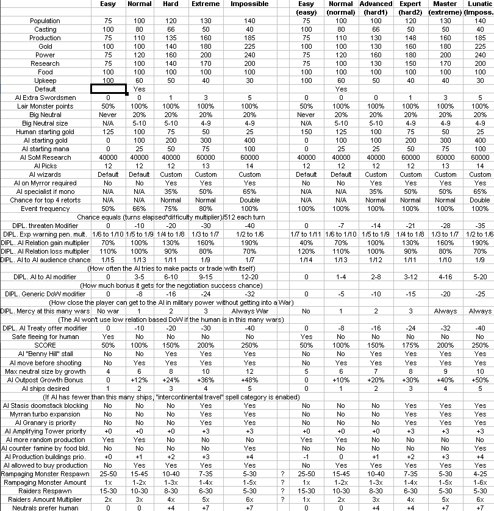
EXP10B
-Added ÅgFire StormÅh to the AI's ÅgSpell Blast neededÅh list.
-ÅhMinor army neededÅh tactic now adds +25% to curse priority instead of +20. ÅgMajor army neededÅh adds +50% instead of +60. This should prevent the AI from spamming curses that don't really help in the war unless their personality makes it so (such as Spell Blast, Drain Power, Blizzard or Corruption)
-Klackons can now build Marketplaces and Farmer's Markets, but not Banks and Merchant's Guilds.
-Colosseum now requires Smithy instead of Fighter's Guild.
-Further reduced the difficulty modifier in generic war declaration to 3/level, and reduced the +10 threshold the formula checks against to +4.
EXP10C
-Fixed EXP9 bug : AI casts Spell Lock without knowing the spell.
EXP11
-Fixed bug : Units raised from dead or affected by Mystic surge receive a Spell Ward stat penalty if the city is enchanted by Nature's Eye.
-Fixed the AI Spell Lock bug again, previous fix was incorrect.
-Fixed AI bug : dispelling Survival Instinct during war has a priority of 0 instead of 30.
-Fixed EXP10 bug : Scoring screen is broken since the addition of the new difficulty level.
-Regeneration now costs 32/160.
-Behemoth now costs 480, and has 42 health instead of 45.
-The AI now defaults to using 1125 strength Disjunctions. This should make it less likely to get instant cast and slip through a Spell Blast. Note that if 100% success can be achieved for less, the AI will still pick a lower cost.
-When the AI picks ÅgDisjunctionÅh to cast, there is a 1/(2*number of AI wizards still in the game) chance to proceed only, otherwise it will roll again for picking a spell. This should make spells last roughly the same in play regardless of the number of wizards, and should simulate a Ågmeh I'll let the others deal with itÅh mindset. However, Nature's Wrath and Meteor Storm skip this check - no wizard can afford waiting for others while their buildings and units are directly threatened. It also means dispelling is half as frequent than before to make up for 50% higher dispelling power on each attempt. This is also skipped for Spell Binding - it only applies to Disjunction.
-Reduced AI priority of casting Nature's Wrath from 100 to 66.
-Reduced AI priority of casting AEther Binding from 100 to 60.
-Reduced AI priority of casting Aura of Majesty from 60 to 40.
-Reduced AI priority of casting Detect Magic from 50 to 35.
-The AI now considers casting global enchantments a top priority until turn 100 instead of 50 - this should make sure AEther Binding and Aura of Majesty get cast early despite their low ÅgrecastÅh priority. The intention of the above changes is to make dispelling those spells a more viable tactic.
-Builder's Hall now has a maintenance cost of 0. (finally found how to do this, yay! )
-Unlocked units are always shown on the production screen, even if they require one more building to actually unlock.
-Create Artifact now costs 2000 to research, and cannot be found in treasure.
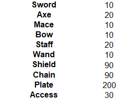
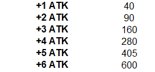
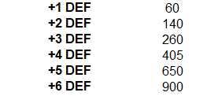
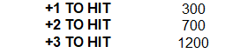
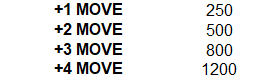
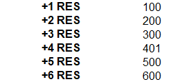
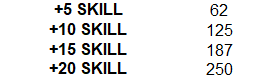
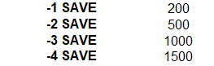
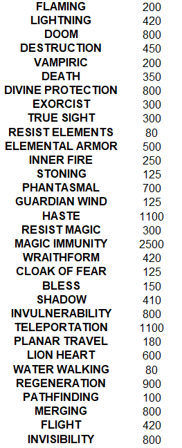
-Each treasure point spent on item treasure is now worth 1.2 item value instead of 1.5
-Minor changes to some predefined items.
EXP11B
-Entangle now subtracts 2 from the unit's Ågmax movement per turnÅh stat instead of the Ågremaining movement for the turnÅh stat. This should allow units affected by it to always attack twice and should allow the AI to recognize the penalty when deciding on how to move their units.
-Completely rewritten the combat movement calculation procedure to be able to do the above. Please report if any effect fails to grant the correct amount of movement bonus.
-Changed the number of books required for several Item Powers :
Lionheart
3
Invisibility 4
Divine Protection 4
Invulnerability
4
Wraith Form 2
Regeneration 5
Merging 4
Elemental Armor
3
Teleportation 5
Phantasmal 5
Haste 4
Resist Magic
3
Flight 3
Planar Travel 3
Exorcise 2
Shadow 4
-Fixed bug : Famous grants the +25% power income bonus of Spellweaver.
EXP11C
-ÅhAI will not shift plane with Shadow Demons - these units are more effective to be kept in the main armies and garrisons than to send out to a new plane.Åh applied again, as it got accidentally undone.
-Fixed major bug : Casting skill during strategic combat is not set correctly : potentially causing crashes, and limiting the AI to using less casting power than they should.
EXP11D
-Intercontinental AI attacks can now target lairs, nodes, towers. Note that the usual range limitation (10 tiles) applies.
-Fixed : weak AI stacks fail to attack empty cities. Note that they'll still not attack if the city is poorly defended, as there is a high chance of losing to combat spells on the first turn. Sadly, there is no way to tell apart neutral targets that do not cast spells from others.
-Intercontinental AI attacks no longer consider units on land to be twice as powerful - the feature to double ranged unit power for defenders is already implemented, making this obsolete.
-Intercontinental AI attacks now have a minimal required army strength against targets other than empty cities to avoid getting killed on turn one by spells, wasting the stack - the same way land attacks do.
-AI wizards will now cancel their own Divine Order if changes to diplomatic status or found spellbooks drop the required value by at least 3 below the amount needed to cast it.
-Barbarian basic units now have a movement of 2.
EXP11E
-Fixed EXP11B bug : heroes have incorrect movement in combat.
EXP12
-After turn 151, if the human player has at least twice as much total army strength, power income, spell power and population as all other wizards combined, and no other wizard except banished ones knows Spell of Mastery, all AI wizards offer their resignation. If accepted, the player wins the game. If not, it will be asked again once every 8 turns. This feature is not available on Easy difficulty, where the player is expected to be in this position in every game anyway.
-Theurgist now doubles the AI's priority to cast global enchantments instead of adding a flat +200 (which at least tripled it)
-AI priority to cast most global enchantments reduced slightly to make disjunction a more viable tactic. Note that there still are a few enchantments the AI will be quite insistent about having in play, specifically Crusade, Armageddon, Charm of Life, Enlightenment, and Suppress Magic.
-Haste now costs 6 Sorcery books to enchant but Phantasmal costs only 4.
-Amplifying Towers now have a 20 maintenance cost.
-Marketplaces now have no maintenance.
-Wizard's Guilds now have a maintenance of 5.
-Colosseum now has no maintenance.
-Maximal destruction ratio of cities after combat is restored to 75 (was 60 for a very long time.)
-Destruction ratio of non-neutral conquered cities after combat now scales with difficulty - instead of always 20%, it is now 10,20,28,35,40,45% to counteract the AI bonuses which make capturing AI towns vastly superior to building your own. Note that this increased rate does affect the AI as well.
-Changed attack damage reduction. While reduction effects are unchanged, each attack from any single figure dealing 7 or more damage will have 1 damage ignoring the reductions completely and an additional 1 for each 2 points above 7, rounded down. For reference a 25 sword, +3 to hit creature will on average deal 15 damage, so 1+(8/2) = 5 damage will be dealt even if shields reduce all of the damage on average, but better or worse attack rolls can raise or lower then amount as usual. Note that if shields fail to reduce the damage to 5 or below, everything works as usual. Abilities that grant full immunity to a type of attack ignore this rule (Magic Immunity, Missile Immunity, Fire Immunity). This effect applies to all types of attacks that can be reduced through shields coming from units, but doesn't affect spells.
-Demon Lord now has a ranged attack power of 20.
-Sky Drake now has a melee attack power of 28 and a breath attack of 21.
-Death Knights now have an attack power of 12.
-Uranus's Blessing now adds 4 casting skill only, but costs 200 to cast and adds 10 power to WG and AG.
-Djinn has a resistance of 12 again as the reason for increasing it no longer exists.
EXP12B
-Fixed EXP11 bug : Casting Possession, Creature Binding, Confusion causes Black Prayer to appear on the defender's side.
EXP12C
-Fixed EXP11D bug : Items randomly disappear or memory gets corrupted during AI turns.
EXP12D
-Fixed EXP12B bug : Casting curses that aren't the above causes the target to have random movement points remaining.
EXP12E
-Fixed EXP12C bug : Previous fix was incorrect, used ax instead of cx.
EXP13 (Sorcery realm rebalancing)
-AI players will not use Spell Blast as a curse (randomly targeted) unless the human player has 200 or higher overland casting skill.
-Final Wave now costs 1000
-Further reduced the AI's priority to cast global enchantments.
-The AI pays 40% more for casting certain spells, to make sure they are slow enough to give time to the player to notice through Detect Magic and react, instead of the spells being instant-cast by the AI. The following spells are affected :
db 1Ch ; Survival Instinct
db 22h ; Clairvoyance
db 26h ; Herb Mastery
db 28h ; Nature's Wrath
db 4Ch ; Spell Binding
db 4Bh ; Great Unsummoning
db 4Fh ; Suppress Magic
db 50h ; Time Stop
db 71h ; Meteor Storm
db 72h ; Doomsday
db 78h ; Armageddon
db 74h ; Chaos Surge
db 9Eh ; Crusade
db 0A0h ; Charm of Life
db 0C5h ; Eternal Night
db 0C6h ; Evil Omens
db 0C7h ; Final Wave
db 0BCh ; Zombie Mastery
Note that this is an increase on top of the reduction by difficulty level, so the AI still gets an overall discount on Advanced and above, just less than on other spells.
-Spell Ward now has a -2 To Hit penalty instead of -3.
-Time Stop now has a maintenance of (100*turns elapsed since the spell was cast)
-The AI will now cancel Time Stop if (mana<maintenance+2000) or it was going for 15 turns.
-Maintenance cost of Amplifying Tower is now correctly displayed
-Reverted maximal wizard name lenght as it caused display issues on some screens.
-Dispelling Wave now has 1 effectiveness per 2 mana both in combat and overland instead of only in combat. This is now rounded up instead of down.
-Dispelling Wave no longer removes combat global enchantments.
-AI no longer includes combat global enchantments in Dispelling Wave priority calculations as they are no longer removed by the spell.
-Adjusted priority calculations of picking targets for an overland Dispelling Wave spells.
-AI will not use Dispelling Wave on targets with priority 7 or less instead of 4 or less now. Priority to cast the spell is calculated priority of (target tile-6)*2 instead of (target tile-4)*2.
-Revised the list of unit buffs the AI considers for calculation priority for combat Dispelling Wave.
-Fixed bug : Dispelling Wraith Form does not remove Non-Corporeal.
-Orc Spearmen removed from the game.
-Orc Swordsmen costs 10 less to produce.
-Nagas are now worth 170 treasure points.
-Storm Giants are now worth 600 treasure points.
-New unit : Water Elemental. Worth 240 treasure point.
-New spell : Water Elemental - Sorcery overland summoning. 14 melee and ranged, +2 to hit, 4 ammo, 7 defense and resistance, 15 hp, fire, weapon, poison immunity, water movement.
-Removed spell : Conjure Roads.
-Nagas cost 10 less to cast, have +1 melee attack, +1 movement.
-Storm Giants have +3 melee and ranged attack and +1 ammo.
-Flight now costs 22/110 to cast.
-The ÅgMinimal DamageÅh mechanic now only applies to attacks dealt by specific, high end fantastic creatures : these have the mechnic listed as an actual ability named ÅgSupernaturalÅh.
-Creature Binding now works on units Immune to Illusions.
-Blur is now a common spell.
-Counter Magic is now an uncommon spell. Counter Magic no longer has a slider, instead the cost is 50, but it creates a Ågcounter poolÅh of 80.
-AI starting spell picks : Position 9 in Sorcery is now Blur instead of AEther Sparks.
-Updated the AI research priorities for the changed Sorcery spells.
-Uranus' Blessing now grants a strength 70 Counter Magic pool.
-AI starting spell picks : Nonlawful, Nonpeaceful AI will now pick Aura of Majesty instead of Spell Blast as their first Sorcery uncommon guaranteed pick.
-Fixed bug : When receiving items after battle as a defender, item location is unset.
-Fixed bug : When the windwalker died in battle, the stack had 0.5 movement left.
-Default 2nd human common pick in Sorcery is AEther Sparks instead of the no longer common Counter Magic
EXP13B
-Fixed EXP11D bug : The AI can't attack very weak targets that have a strength below the minimal army strength the AI uses for attacking.
-The Ågplayer winsÅh feature now considers population the same way as the other 3 astrologer stats.
-The Ågplayer winsÅh condition is now checked once every 4 turns instead of 8
EXP13C
-Fixed EXP11B bug : Flight doesn't grant 3 movement in combat.
EXP13D
-Vampiric items now apply a save modifier of -2 instead of none.
-Vampiric now costs 225 to enchant and requires 3 books.
EXP14
-Fixed : Smithy shows unlocking Warship on races that cannot build it.
-Fixed : When no unit is selected, the Spell button might offer random unit abilities to cast.
-Herb Mastery now works on Death and Undead units on the overland map the same way as in combat.
-Stream of Life now works on Death units - but it still won't heal undead.
-New AI overland intercontinental attack procedure - now uses real unit ratings instead of simplified and might even process faster.
-AI intercontinental attacks performed by 4 or fewer units require twice as much army power as normally sized stacks, 2 or fewer units require 4 times the power
-AI land attacks performed by 4 or fewer units require twice as much army power as normally sized stacks, 2 or fewer units require 4 times the power
-The PWR cheat will now give players all Arcane spells again, except the Spell of Mastery.
-Removed spell : Nature's Wrath
-New spell : Fairy Ring. Whenever another player casts an expensive spell, the owner of Fairy Ring gets a free summoned creature of any type they can summon.
-Clairvoyance has been renamed to Seismic Mastery and now has an additional effect : Whenever you cast a spell that costs 400 or more, you can target a city with an Earthquake effect for free. Spell casting cost has been adjusted. Power production of nodes reduced to 15.
-The AI will not cast Earthquake manually if Seismic Mastery is in effect.
-Adjusted AI overland casting priorities to correctly react to Fairy Ring instead of assuming it's still Nature's Wrath.
-The AI has about halved priority to cast Disenchant Area but uses twice as much power for each.
-Assigned AI garrison priority to Water Elementals
-Fixed Exp9 bug : AI priority for casting Stasis as anti-doomstack measure is addressing memory wrong, causing data corruption.
EXP14B
-Fixed Exp14 bug : Target matrix for AI intercontinental attacks isn't cleared before use, causing AI players to try to attack each other's targets.
-Fixed Exp14 bug : New intercontinental attack procedure doesn't detect wind walkers for Ågsend to main continentÅh movement, does not allow windwalkers to carry stacks even though the calculations assume it will.
-When an AI intercontinental stack containing a hero looks for targets, it requires to be twice as powerful as the target to attack it, similarly to the land attac procedure to ensure heroes are not participating in overly risky battles.
-Nodes are no longer allowed at theY=2 map row - it makes them attach to the North Pole area, potentially creating non-tundra tiles on the pole and giving it the region a continent ID.
EXP14C
-Fixed : already defeated wizards count into the total for Ågwin gameÅh - while their army and power production are zero, their spell power is not so this matters.
-When the AI picks a target for Firestorm, units that have Magic Immunity, Fire Immunity, Regeneration, Elemental Armor, Invulnerability, Bless, Resist Elements do not count into the priority of targeting that stack.
-When the AI picks a target for Blizzard, units that have Magic Immunity, Cold Immunity, Regeneration, Elemental Armor, Invulnerability do not count into the priority of targeting that stack.
-Fixed : Focus Magic does not work on Water Elementals.
-Fixed new intercontinental attack target matrix overwriting continental matrix, causing the AI to miss continental targets or fail to defend nodes, cities or capitals.
5.0
-All changes from the experimental versions listed above
-Fixed : maintenance cost of Seismic Mastery and Fairy Ring were swapped.
-Fixed : Units with Life Steal were not valid AI targets for Blood Lust.
-AI can now target units that have a touch attack even if they aren't a priority choice for Focus Magic
-The AI is now not allowed to cast Focus Magic before turn 10 - it's too likely to find no targets and waste the spell, as well as significantly slowing down early expansion (80 can be used to make two hell hounds or a ghoul instead!)
-The AI is now allowed to cast Earthquake when Seimic Mastery is on if they don't have an expensive summoning spell available to trigger it.
-Fixed EXP14C bug : intercontinental attacks read the enemy land power from the matrix incorrectly, resulting in failing to attack targets sometimes.
-Fixed EXP14C bug : intercontinental attacks read the enemy strength of nodes/lairs from the matrix incorrectly.
-Fixed EXP14 bug : intercontinental stacks with a power divisible by 256 couldn't do intercontinental attacks.
-Each unit has a minimal AI rating of 1. This allows the AI to attack units with zero attack strength such as settlers or floating islands.
-Fixed EXP13 bug : Dispelling Wave still removes combat global enchantments even though it's not supposed to.
-Fixed bug : AI fails to leave city walls if enemy obtains ranged superiority during combat instead of starting with it.
-When the AI calculates the ranged capacity of armies for wall decisions, it'll now use (1+figures)*attack*ammo instead of figures*attack*ammo - this should let low figure units with high attack compare more fairly with high figure units.
-Adjusted the effect of mana spent in strategic combat for each realm.
-Fixed : Flame Blade and Mystic Surge weren't swapped for overland Dispelling Waves, causing the wrong name to show up.
-Fixed memory corruption bug that happens when banishing wizards and finding spells in the ruins (spell name was stored at a null address)
-Units that require both Stables and Smithy now only require the Stables because that already implies a Smithy is built.
-Hydras now have 1 less resistance.
-Great Drakes now have 1 less resistance.
-Demon Lords now have 1 less resistance.
-Colossus now has 2 less resistance.
-Behemoths now have 1 less resistance.
-Time Stop maintenance is now 30*turns instead of 100*turns
-The AI will now leave at least 7 units in the city when using Astral Gate instead of 6.
-Fixed diplomacy bug : When the AI offers a treaty, and wants to also offer gold, it fails to do so, or offers 0 gold sometimes.
-Fixed : The text displayed when casting Drain Power is wrong.
-Supreme Light now costs 6000 to research.
-Fixed minor bug : target war priority variable is not set for neutral targets on AI land attacks.
-AI intercontinental attacks will now ignore unit based priority and only use city based priority on city targets, similarly to land attacks.
-AI intercontinental attacks now have the same priority on city targets as land attacks
-AI land attacks no longer have a 1/3 multiplier to the priority of enemy stack targets outside the home continent.
-Doubled the granted priority of buildings/population in cities for both land and intercontinental attacks. Doubled the priority of fortresses (land attacks only).
-Halved the priority of neutral city targets compared to other war targets.
-Lairs now have priority equal to their unit value for land attacks to match intercontinental priorities. Note that while Node and Tower priorities are not changed, these also count as lairs as long as they are not cleared, so if their Åglair priorityÅh is higher, it'll be used instead of their other priority. So in this case they also match intercontinental.
-Fixed bug : AI doomstacks fail to move next turn after attacking a target.
-AI intercontinental attacks now use the same extra priority for fortresses as land attacks
-Fixed 3.31 bug : earliest turn for AI to turn hostile was meant to be lowered to 25 but was left at 37 (conincidentally, 37=25h)
5.01
-Fixed bug : cities don't have their Ågscouted by AIÅh flags set to 0 at the start of a new game.
-AI doomstack building will now observe minimal strong garrison requirement (typically, the 2 strongest unit in each city cannot leave), but still disregards generic requirement on total number of units.
This will allow the AI to keep the usual 2 summoned creatures as defenders in cities, even if the summons have intercontinental movement. This should usually mean the AI has their first doomstack of each type of creature about 8-10 summoned creatures later, but have better defenses in their cities. It also means it will leave behind 2 units to defend the city, and only proceed with the remaining 7, splitting the doomstack after conquest. As it's hard to judge which strategy is better for the AI (and even more so, which behavior is more fun to play against), feedback is welcome. Reverting this change if it reduces AI performance or enjoyment of the game is an option.
-Cities and nodes with fewer than 7 units will no longer skip the procedure to send units entirely, thus if other conditions (such as Jihad or being a node) allows, units can be pulled from them. This condition also prevented the above modification from working if the city didn't have a full garrison.
-The number of strong units the AI wants in their cities now depends on personality. Chaotic, Lawful and Ruthless still wants 2, Maniacal and Peaceful wants 3, Aggressive only wants 1.
-Earliest turn for the AI to turn hostile or declare war is now 36.
-AI naval attacks now use the intercontinental targets matrix.
-Dwarven Swordsmen and Halberdiers can now move 2.
-AI Raze chance is now 1% higher for each 50 cost of unhurt summoned creatures instead of 144.
5.02
-Hammerhands now cost 140 to produce, 4 to maintain, and have 10 base resistance.
-Fixed bug : AI considers targeting units with Possession or Creature Binding with Dispel Magic a high priority even though these spells cannot be dispelled.
-The AI will not cast Flight on a webbed unit in combat.
-Fixed bug : Barbarian spearmen and swordsmen can't appear as raiders.
-Increased AI Detect Magic casting priority from 10 to 20.
-Changed the buildings placed at the start of the game in Dwarven neutral cities - Steam Cannons should now appear before halberdiers.
-Fixed bug : Units placed at the start of the game are not affected by Alchemist Guilds - effect not implemented
-Fixed bug : Units placed at the start of the game are not affected by Barracks, War College or are affected by it when it's not in the city - Uninitialized variable is being unsed instead of actual parameter.
-Myrran now costs 1 pick.
How many picks it actually is worth is highly subjective, and hard to judge. Probably more, but enjoyment is more important than balance - at a cost of 2, wizard creation was far too limited for Myrran players, as it pretty much forced playing too few books or only a single realm. It also resulted in the Myrran AI having fewer spells, thus randomly failing to be a major threat. Please share your opinion on the forum!
-Default AI wizards now replace Myrran with Tactician instead of Chaneller on low difficulty games.
-Optional default wizards : Aura now has Cult Leader and Specialist instead of Myrran. Suika now has Astrologer instead of the Nature book. Vanilla H now has Specialist instead of a Life book.
-Default wizards : Sss'ra now has an additional Chaos book.
-Fixed bug : Water Walking grants swimming movement to ships, allowing them to enter land.
-The AI will now ignore already defeated players when picking which Spell Ward to use.
-Change Terrain now costs 32.
-Draconian bowmen cost 10 more, has 2 less ammo and 1 less armor.
-AI intercontinental attacks now treat units in Towers as through they were on both planes the same way land based attacks do.
5.03
-During Jihad the AI can now attack towers as though they had enough forces to do so if they need to get through to the other player's fortress.
-Optional default wizard ÅgAuraÅh now has Myrran again instead of Cult Leader.
-Angels now have 24 MP
-Galley, Warship now has 7 resistance.
-Galley has 10 ranged attack strength.
-Poison now has a save modifier of -1.
-Dwarven Swordsmen and Halberdiers lose 2 resistance.
-Wraith From no longer grants Poison Immunity.
-Wyvern Riders now have poison 5.
-Great Wyrm now has poison 25.
-Giant Spiders now have poison 3.
-New Fortress Lightning formula : Strength = 18+(Skill/8) but a max of 48.
-New defense rating formula for strategic combat and AI : total health*5*(2+Defense)
-Werewolves now have 3 armor but only 5 health per unit.
-Mountains now add 7% production. (Chaos Nodes still add 10%)
-Golems no longer have Magic Immunity, instead they have Cold, Fire, Illusion, Stoning and Death immunity, but armor has been reduced to 7.
-The Magic Immunity item power is now worth 1500 treasure budget instead of 2500.
-Maximal item budget for a single item treasure is now 4080 instead of 4920.
-New formula for Myrran node monster budget : 50*(3+RND(3))*(Tiles-5). Arcanus still has tiles-3 there but Myrran nodes have more tiles which made the budget too high and the nodes unbeatable until midgame which has a major negative impact on gameplay - playing without nodes is unfun and hurts slow strategies significantly as well.
-Myrran nodes now have 8-20 tiles instead of 10-20.
-Draconian units now have the standard unit cost.
-Draconian Shaman replaced with ÅgSaintsÅh, same abilities, but 4 ranged, 5 figures, 5 armor 2 health unit that requires Shirne and Parthenon.
-Myrror now has 13 nodes, Arcanus has 17 (was 12/18).
-Draconian growth is now average (+60 people/turn) but outpost growth is still slow (-10/turn)
-The first 4 Myrran nodes generated always have exactly 8 tiles to ensure some weak nodes on the Myrran plane where node budgets are generally higher even with the improved formula.
-Colosseum now costs 250
-Draconian Bowmen cost 40 and have 5 figures.
5.04
-Fixed bug : Saints were placed in draconian neutral cities without a Parthenon at the start of the game.
-Fixed bug : Casting Apocalypse might corrupt memory and turn Black Prayer on for the defender, if the result is confusion with instant side switching.
-Draconian bowmen have 8 ammo again, but stay at 5 figures.
-Fixed AI bug : AI can target the same unit with Stasis more than once in combat.
-Fixed a bug in starting city generation.
-When rolling capital locations, the Ågneutral playerÅh will no longer get one, as they don't need it and placing 1 more than needed reduces the chance of success.
-When rolling capital locations, the requirement of Ågat least 3 tiles from lairsÅh on the first try is removed and the normal Ågat least 2 tiles from lairsÅh is used.
-When rolling capital locations, the minimal required distance from other wizards is 16 (unchanged) but the minimal food is 12. If placement completely fails, both numbers are lowered simultanously, until they hit 8 tiles and 8 food. (Food is reduced by 1/2s, distance by 1s) However, for each level of landmass size above Tiny, the lowest amount is one step higher. Picking ÅgDryÅh reduces the food needed by 2.
-Swamps now correctly count as 0.5 food for starting capital placement.
-When the map is being generated, if all attempts to place capitals fail and all options are exhausted, the game will now re-roll all lairs to reposition them. The limit of not allowing cities adjacent to lairs and nodes is the cause for Tiny size maps where placing them is impossible and the game freezes, however, this limit is necessary otherwise AI wizards might find themselves walled in behind a lair with no tile for units to leave the city. With this change, map generation will always be successful, but if multiple lair rerolls are needed, it can be very slow, as each failed attempt takes about 10-20 seconds.
-When the AI picked an inappropriate race for their personality they will reroll the race only, instead of jumping back to position selection. (I wonder why this was set up so inefficiently, I guess it's because Ågrepick race if elves not in forest jumped here as well in the original?)
-Easy lair amount is now 15+3*Land Size instead of 19+2*Land Size.
-Hard lair amount is now 8+6*Land Size instead of 12+5*Land Size.
This reduces the total amount of lairs on Tiny by 8, making it much more likely to successfully generate the map in a reasonable amount of time even with the worst possible parameters (Dry and 5 players on Arcanus), without affecting Huge and minimally affecting Fair landmasses. Even with this ÅglowÅh amount, the density of lairs per land tile on Tiny is by far the highest. (65 on 300 tiles vs 101 on 1400 tiles)
-Fixed AI bug : knowing common summons delays the research of Giant Spiders and Gargoyles when it isn't supposed to do that.
-The trade gold bonus cap is now 5%/population but a maximal 75% instead of 3%/population.
-High Men buildings cost 15% less.
-All players now start the game with 1 (tiny, small) or 2 (fair, large, huge) settlers.
-AI starting gold for each difficulty level has been changed to 0,100,250,500,700,900.
-Fixed bug : the AI was able to pick production of a Marketplace when a Fighter's Guild wasn't built instead of when a Marketplace wasn't built, in case of gold shortage.
-Fixed bug : Gnoll wizards building Stables as mandatory military building did not work.
-Change AI forced military building trigger timing - Now restorted to only activate when 2 settlers are on the move, not when one of them is still being produced. Furthermore, the timing and building type varies quite a lot more by race.
-Minor adjustment to some AI unit production priorities.
-Dark Elf basic units no longer have a raised cost.
-High Elf basic units no longer have a raised cost.
-Successfully Threathening an AI wizard now resets the Ågrepeated warnings counterÅh to zero instead of increasing it by 1. Failed attempts still increase it.
-Settler maintenance cost is now 1 gold.
-There is now a Åggeneric SettlerÅh unit that stores the race it belongs to as data. This replaces the Barbarian Settler. Beastmen, Lizardmen, Draconian, Troll settlers are unchanged, due to their special abilities or stats, but other races will always produce the Generic Settler. This frees up all the unit slots of the now unused settler units for future use.
-Settler units lose the following racial traits and abilities : Lucky, Forester, Mountaineer, Pathfinding, Scouting, extra attack power, defense or resistance. (result of above internal change)
-Dwarf settlers now have 20 health.
-Beastmen now have +1 growth rate.
-Orc Spearmen has been re-added.
-Orc Swordsmen cost has been restored to 30.
-Catapults now cost 50.
-Catapults now have 10 attack strength but +2 To Hit. This means damage is identical if they have magical weapons, but the ranged penalty has less effect.
-Golems now have Resist Elements.
-Griffons now cost 180.
-Doom Drakes now cost 210.
-Swordsmen now cost 25 (or the appropriate value for races that have nonstandard costs)
-Phantom Warriors now cost 14.
-New High Men unit : Crusader, requires Fighter's Guild and Shrine, 5 melee, 4 armor, 5 resistance, 2 health, 6 figures, Healing Spell, Large Shield, 2 moves.
-New High Men unit : Knight, requires Fighter's Guild and Stables, 6 melee, 5 armor, 5 resistance, 3 health, 4 figures, First Strike, 4 moves.
-New Dark Elf unit : Apprentice, requires Smithy and Library, 2 melee, 3 ranged, 6 resistance, 1 health, 6 figures, Caster 14, Large Shield, 2 moves.
-Displayed amount of Scouting on production screen is now correct
-Unit production screen now correctly shows no food icon on units that do not require food (ships, catapults).
-Unit production screen now shows the ÅgCasterÅh ability on units. Note that the amount cannot be shown due to space limitations.
-As there are new units, save files are not compatible with previous versions!
5.04b
-fixed bug : units produced in a city with Barracks or War College might have a higher level than necessary.
5.05
-Nagas now cost 92.
-Raised AI catapult production priority.
-Ghouls now cost 88.
-Skeletons now have 7 figures.
-Fixed 5.04 bug : Settler costs are sometimes random.
-Reverted 5.04 change : The trade gold bonus cap is now 5%/population but a maximal 75% instead of 3%/population. (see http://www.realmsbeyond.net/forums/showthread.php?tid=9028)
5.1
-Fixed Bug : the Wind Walking enchantment overrides ship transportation.
-Fixed Bug : when two Wind Walkers are in a stack with uneven moves it's possible to move an infinite distance by pressing the Done button.
-Players now start with an additional swordsmen to replace the missing Spearmen.
-Players now start with a population of 5 (experimental, might undo)
-The AI is now not allowed to do positive diplomacy with other AI until turn 36, the same way they are not allowed to declare war or be hostile.
-Minimal amount of army strength needed for AI attacks and AI fortress attacks halved, as it was accidentally set to twice the intended amount.
-The red square that is displayed on the selected unit during combat has been extended for better visibility.
-Removed building : Ship Yard.
-Added building : Magic Market.
-Wizard's Guild now requires Magic Market instead of Library. Uranus's Blessing now adds power to Magic Market instead of Alchemist's Guild.
-Alchemist's Guild no longer produces power.
-Library now produces 6 research but costs 60.
-University now produces 6 research.
-Sage's Guild now produces 12 research.
-Nature's Eye now produces 4 research.
-Maritime Guild now costs 370 with a maintenence of 5 (merged with old ship yard costs).
-Nodes generate power as though they had 3 more tiles than currently (so visible tiles+8 total tiles worth of power)
-Galley now requires a Ship Wright's Guild and a Fighter's Guild.
-Completely overhauled the research costs of spells.
-Nagas lose 1 Poison and cost 73.
-Updated the AI research selection procedure.
-Researched spells now contribute towards SoM research at their full price like in the vanilla game. (albeit with the SoM cost modifier considered)
-Spell of Mastery cost modifier is now 8x instead of 4x to work around integer limits.
-Volcanoes now have a 0.5% chance to revert to mountains instead of 1%
-Volcanoes now produce 3 power.
-Reduced the AI power advantage for all difficulty levels.
-The AI now prefers to keep at least 5 units on nodes instead of 3. (Might change further)
-Sage Master now adds +25% RP and +15 RP/turn
-Fixed bug : It's possibble to gain an extra MP while producing -1 RP due to rounding problems on power distribution.
-Fixed EXP11 bug : The following applied to casting Spell Binding for the purpose of gaining a new enchantment when it should not : Åg-When the AI picks ÅgDisjunctionÅh to cast, there is a 1/(2*number of AI wizards still in the game) chance to proceed only, otherwise it will roll again for picking another spell. Åg
-Dark Ritual now triples the power of religious buildings.
-Halflings now produce 1 research per population.
-The Unknown now has the ability to walk on water.
-Adjusted Dark Elf unit building priorities for the AI.
-Primal Force now produces 12 power instead of 20.
-AI combat spellcasting : AI will prioritize Wraith Form, Air Elemental, Phantom Beast, Haste, Mystic Surge spells more if the enemy has Entangle in effect.
-AI will prioritize Haste more if the target is a high cost unit.
-AI will not cast Construct Catapult if all enemy units are invisible.
-AI will not cast Construct Catapult if the enemy has Entangle in effect.
-Builder's Hall now costs 20
-University now costs 120
-Farmer's Market now cost 180
-Granary now adds +5 max pop and no growth (aside from the growth from the max pop itself)
-Farmer's Marker now adds no max pop and +50 growth.
-Miner's Guild now costs 120
-Forester's Guild now costs 130
-Gift of the Gods max item budget is now 4000.
-Adjusted garrison priority for Golem, Draconian Magician
-Ritual Master now generates +6 power/level
-Sage now generates +10 research/level
-Removed Magic Immunity from the two predefined items that had it. Hoping to reuse the slot for a new item power as soon as I have a good idea for one.
-Alchemist Guild now costs 100.
-Seismic Mastery will no longer trigger on itself being cast.
-Construct Catapult now costs 30.
5.11
-Spell of Mastery cost is now higher (looks like I miscalculated in the previous update?)
-Socery conjunctions are now 3x SP instead of 4x.
-Fixed AI bug - certain modifiers for using Web were not applied unless enemy army had flying superiority.
-Fixed AI bug - Node summoning priority has been added for spells that aren't summoning spells
5.11b
-The AI will not pick Sprites as a starting spell if they already picked Ghouls
-Pegasai garrison priority is now 22 instead of 18
-Air Ships garrison priority is now 23 instead of 18
-Ghouls garrison priority is now 22 instead of 17.
-Starting cities now default to 4 farmers.
-Fixed bug : Some settlers do not have a food upkeep.
-Fixed bug : Catapults can get disbanded for food maintenance problems.
5.11c
-Fixed bug : Cataults and ships ignore weapon immunity
5.12
-(hopefully) Fixed bug : AI orders random units to patrol (might even cause data corruption) if a garrison stack has less than 2 garrison eligable units in it but has garrison ineligable units as well (engineers, spirits, ships, etc)
-The ÅgAutoÅh feature will never cast Mystic Surge.
-Fixed bug : Oracle overrides Nature's Eye scouting range.
-Fixed bug : Weapon Immunity provides complete immunity to ranged nonmagical attacks (thrown, bow, rock) instead of the intended +8 defense.
-Fixed bug : Weakness does not reduce thrown attacks
-Fixed bug : When the AI looks at realms for deciding dispel magic priorities of True Sight in combat, it looks at the wrong player and realms.
-Fixed bug : In detailed view, the power produced by Dark Ritual still appears doubled instead of tripled.
-Golems no longer have Illusion Immunity. It does not contribute quite as much for protecting the unit from spell damage as others, but grants a lot of unintended extra features (seeing invisible, bypassing blur and invisibility defensive effect, etc).
-The last hero level now costs 2000 EXP instead of 2500.
-Army Strength in F5 is now halved, as is it's weight in the Historian (F4) graph. This should provide slightly more realistic information to the player on their chance of victory instead of intimidatingly high AI ratings in perfectly winnable games. This change should in theory have no effect on diplomacy - the ratio of army strengths remains the same even if every player is halved.
-AI spell trading base priority now no longer uses formula Prio=Spell ID within realm+5*Modifier, instead the base priority is directly defined as a constant for each spell. This is the current list of base trade priorities :
0 "Earth Lore 0A"
0 "None"
0 "Magic Spirit C9"
1 "Warp Wood 51"
1 "Disrupt 52"
1 "Skeletons A1"
2 "Warp Creature 59"
2 "Guardian Spirit 81"
2 "Weakness A2"
2 "Hell Hounds 54"
2 "Cloak of Fear A4"
3 "Earth to Mud 1"
3 "Holy Weapon 7C"
3 "Fire Elemental 5A"
3 "Phantom Warriors 2D"
4 "AEther Sparks 2A"
4 "Resist Elements 2"
4 "War Bears 6"
5 "Fairy Dust 7"
5 "Nature's Cures 13"
5 "Psionic Blast 32"
5 "Star Fires 7A"
5 "Summon Zombies A3"
6 "Floating Island 2B"
6 "Guardian Wind 2C"
6 "Corruption 55"
6 "Flame Blade 56"
6 "Shatter 58"
6 "Bless 79"
6 "Life Drain A7"
7 "Nature's Eye 3"
8 "Holy Armor 7E"
9 "Summoning Circle CB"
9 "True Sight 83"
10 "Call Centaurs 4"
10 "Water Walking 8"
10 "Sprites 9"
10 "Resist Magic 29"
10 "Nagas 31"
10 "Fire Bolt 53"
10 "Immolation 63"
11 "Darkness A9"
11 "Exorcise 86"
11 "Blood Lust B3"
11 "Detect Magic CE"
11 "Enchant Item CF"
12 "Focus Magic 2F"
12 "Chaos Channels 5D"
12 "Endurance 7B"
12 "Planar Travel 8A"
12 "Ghouls A6"
12 "Dispel Magic CA"
13 "Spell Lock 36"
13 "Fireball 60"
14 "Wall of Fire 57"
14 "Resurrection 85"
15 "Change Terrain 0F"
15 "Land Link 10"
15 "Confusion 2E"
15 "Vertigo 35"
15 "Healing 7D"
15 "Heroism 82"
15 "Black Sleep A5"
15 "Wraith Form B5 ->A8"
15 "Heroic Shout CD"
16 "Move Fortress 1C ->D1"
16 "Fire Giant 5C"
16 "Divine Order 87"
16 "Wall of Darkness B2"
17 "Drain Power AB"
18 "Ice Bolt 0D"
18 "Cockatrices 11"
18 "Flight 38"
18 "Mystic Surge 5E"
18 "Gargoyles 5F"
18 "Just Cause 7F"
18 "Unicorns 88"
18 "Lycanthropy AD"
19 "Blur 30"
19 "Water Elemental 37"
19 "Heavenly Light 8B - >80"
19 "Night Stalker B0"
19 "Disenchant Area CC"
20 "Web 5"
20 "Construct Catapult 0C"
20 "Giant Spiders 0E"
20 "Aura of Majesty 3B"
20 "Raise Volcano 62"
20 "Astral Gate 8B"
20 "Mana Leak AA"
20 "New : Syphon Life AF"
20 "Reaper Slash B1"
21 "Phantom Beast 3C"
21 "Chaos Spawn 67"
21 "Raise Dead 89"
21 "Exaltation 84 -> 94"
22 "Fire Storm 6B->61"
22 "Mass Healing 95"
24 "Summon Hero D0"
24 "Great Lizard 14"
24 "Iron Skin 18"
24 "Blizzard 19"
24 "Stasis 44"
24 "Lightning Bolt 5B"
24 "Prosperity 91"
25 "Cracks Call 0B"
25 "Elemental Armor 15"
25 "Counter Magic 33"
25 "Banish 40"
25 "Chimeras 64"
25 "Evil Presence B7"
26 "Invisiblity 3E"
26 "Magic Vortex 69"
26 "Possession AC"
26 "Cloud of Shadow B9"
26 "Create Artifact D3"
26 "Transmute 12"
27 "Petrify 16"
27 "Wind Walking 3F"
27 "Blazing March 66"
27 "Holy Word 96"
27 "Shadow Demons B4"
27 "Wrack B6"
28 "Earthquake 1A"
28 "Creature Binding 49"
28 "Chaos Rift 6E"
28 "Altar of Battle 92"
28 "Terror A8 -> B5"
28 "Warp Node BA"
28 "Disjunction D2"
29 "Flying Fortress 4D ->46"
29 "Angel 93"
29 "Famine BD"
29 "Dark Rituals A3 -> BE"
30 "Stone Giant 17"
30 "Regeneration 1F"
30 "Uranus Blessing 3D"
30 "Efreet 6A"
30 "Lionheart 8D"
30 "Consecration 9B"
30 "Wraiths B8"
30 "Summon Champion D4"
31 "Dispelling Wave 34"
31 "gaea's Blessing 1D"
31 "Warp Lightning 65"
31 "Stream of Life 94 -> 84"
31 "Invulnerability 8F"
31 "Inspirations 98 -> 90"
32 "Storm Giant 41"
32 "Aether Binding 39"
32 "Doom Mastery 75 ->6C"
32 "Black Prayer AE"
33 "Summon Demon BF"
33 "Earth Elemental 1E"
33 "Earth Gate 25"
33 "Air Elemental 42"
33 "Mind Storm 43"
33 "Doom Bolt 68"
33 "Doom Bat 61 ->6B"
33 "Prayer 8C"
34 "Gorgons 1B"
34 "Spell Blast 3A"
34 "Hydra 6F"
34 "Zombie Mastery BC"
35 "Behemoth 20"
35 "Haste 46 ->4D"
35 "Incarnation 8E"
35 "Wave of Despair BB"
36 "Survival Instinct 1C"
36 "Herb Mastery 26"
36 "Great Unsummoning 4B"
36 "Chaos Surge 74"
36 "Call to Arms 99"
36 "Animate Dead C3"
36 "Holy Arms 9A"
36 "Eternal Night C5"
37 "Magic Immunity 45"
37 "Flame Strike 6D"
38 "Warp Reality 6C -> 75"
38 "Enlightenment 9D"
39 "Pestilence C4"
39 "Djinn 47"
40 "Seismic Mastery 22"
40 "Spell Ward 48"
40 "Life Force 9C"
40 "Annihilate C0"
41 "Disintegrate 70"
42 "Call Lightning 23"
42 "Mass Invisibility 4A"
42 ÅgSupreme Light 98"
43 "Suppress Magic 4F"
43 "High Prayer 97"
43 "Final Wave C7"
44 "Great Drake 76"
44 "Death Knights C1"
45 "Entangle 21"
45 "Sky Drake 4E"
45 "Crusade 9E"
45 "Massacre C2"
48 "Great Wyrm 27"
48 "Evil Omens C6"
50 "Colossus 24"
50 "Fairy Ring 28"
50 "Meteor Storm 71"
50 "Doomsday 72"
50 "Apocalypse 73"
50 "Arch Angel 9F"
50 "Demon Lord C8"
52 "Charm of Life A0"
54 "Spell Binding 4C"
54 "Call the Void 77"
54 "Armageddon 78"
55 "Time Stop 50"
5.12b
-To Hit is now better visible on the unit production view. (note that any bonus from Alchemist Guild is not included and the ÅgTo HitÅh icon only appears if there is a nonzero bonus.)
5.13
-Fixed bug : Steam Cannons step on a tile where the human player has a unit. (Caused by Wall Crusher making the tile of the targeted unit available for entry which is required because otherwise the AI assumes the unit is unreachable due to the wall.)
-AI wall crusher units moving without a target to attack will now be safer (there was a marginal chance of data corruption due to reading position from a nonexistent unit.)
-Fixed AI bug : AI is unable to cast Holy Word if the first valid target has Invulnerability on.
-Fixed BUG : To Def is not properly set to zero on unit production view
-Maybe fixed bug : AI bumps into player stacks during Jihad hostility even if a path to the target avoiding it exists.
-Number of Magic Vortexes is now correctly limited to 3 instead of 4.
-AI Warp Reality - additional condition : must have at least 1 fewer nonchaos units in battle than the enemy player. (This should guarantee enemy has at least one unit that is affected even if our entire army is chaos units)
-New algorithm to determine the types of nodes generated. It is now guaranteed to have 10 each of Sorcery, Nature and Chaos nodes instead of the original flawed method that always generated more Sorcery nodes than the other two. Furthermore the original intention of nodes appearing on similar terrain now works better as there is no terrain independent random reassignment in it. Sorcery nodes will prefer to appear near swamps and tundras, Chaos nodes near deserts, mountains and hills, Nature nodes near forests and grasslands. Note that rivers overwrite terrain after the nodes are placed and might erase what caused the node to be that type.
-Storm Giants now have an AI summoning priority of 32 (instead of 24).
-Hydras now have an AI summoning priority of 72 (instead of 32).
-The game can now display more than 30 of a stat (including health) using icons.
-Fixed bug : If raze prompt is turned off, razing produces the incorrect amount of fame. (untested, please test!)
-Djinn now has 35 MP.
-Magic Immunity now costs 36/180.
5.13b
-fixed bug : Game might freeze when the AI considers casting direct damage spells during a Chaos Conjunction
5.14
-Another attempt to fix the elusive, non-reproducable bug of the game crashing when the player clicks away a global enchantment cast message
-Adjusted EXP provided by some summoned creatures. This also determines their priority to be included in AI doomstacks, and the amount of undead they can raise/amount of undead creation power required to raise as undead in strategic combat.
-AI heroes now gain EXP from battles scaled by difficulty level : Amount is 50%*Difficulty level, so halved on Easy, the default amount on Normal, 50% extra on Advanced, 100% extra on Expert, 150% on Master and 200% on Lunatic. This should help the AI heroes level up more, and be slightly more threatening. Do note that EXP from other sources (free EXP each turn, Heroism, Enlightenment) are not affected by the bonus, so the hero does need to participate in battle and win, but doing it against other AI or neutrals is enough, it does not have to be the human player.
-If the number of enemy wizards is set to 3 or below, instead of entirely skipping the check on the number of Myrran enemies, the following enemies are generated :
1 enemy , player on either plane : On Arcanus
2 enemies : Both on Arcanus
2 enemies, player Myrran : At least 1 enemy Myrran, rarely 2.
3 enemies : 1-3 Arcanus enemies, 0-2 Myrran enemies.
3 enemies, player Myrran : At least 1 enemy Myrran, rarely 2.
4 enemies : At least one enemy on Myrror, at most 3.
4 enemies, player Myrran : At least 2 enemies on Myrror, rarely 3.
In all cases, you get the fewest possible Myrran wizards about 90% of the time, 1 more than that rarely, 2 more almost never.
-When all land tiles surrounding the city including the city tile itself are mostly filled by own units, the AI will have a 90% chance of not producing a unit there. For cities with 1 or 2 land tiles (usually tiny islands) there is no restriction. For the third tile and each additional tile afterward, at least 2 ÅgslotsÅh must remain free of units. (this algorithm likely still needs improvement.)
-When the AI picks Trade Goods in a city, if it already has over 20000 gold, it will immediately convert the excess into mana
-When the AI has over 25000 mana, it will always set mana production to zero and replace it with skill or research based on previously used priorities to get rid of any mandatory mana production wasting resources. (This should prevent the AI from wasting resources. This is also maintenance safe - the AI disbands for lack of maintenance before they move their units, so even if they used up all their 25k mana crystals in combat, they won't lose units and next turn, will distribute power before maintenance and ensure they have the income to not lose the units (and likely will use alchemy as well). )
-Fixed bug : Interrupted production can still complete if finished that turn. (untested!)
-When any player would find a very rare spell before turn 140, the spell will be replaced by a book/retort reward instead.
-When a unit has both Chaos Channels and Undead, the creature will now be Death realm instead of Chaos.
-When an outpost would be destroyed by a spell effect, it won't be destroyed. Instead, if a wizard's fortress is there, nothing happens, otherwise it is set to desert and disappear through the normal growth process next turn. This fixes the diplomacy bug caused by the destruction triggering a penalty from the wrong player, and fixes players ending up without a fortress but not being banished.
-When the first nonarcane rare spell would appear for research for an Artificier wizard, Create Artifact appears instead.
-Warlocks now have a maintenance of 3.
5.15
WARNING : Save files from previous versions are not compatible!
-There are now 9 towers on each map instead of 6.
-Minimal distance of towers is now 3 instead of 4.
-The number of strong lairs is now 6+(5*land size) instead of 8+(6*land size) to make room for the additional towers.
-The AI will no longer use Planar Travel and Astral Gate. While I'm generally against limiting the AI like this, it's a fact that another wizard throwing units and curses at a human player with them having no means of retaliation, is not just unfun, but goes against the princile of strategy games and it completely unfair. Unless towers are opened, the AI on the other plane should have nothing to do with the human. To a lesser extend, this change is also needed because the AI is too dumb to plane shift well - it'll move units it needs on one plane to another, or lose units by shifting them alone. In exhange, the larger amount of towers should make it easier for the AI to get through and fight the human in a fair and intended way.
-Uranus' Blessing now has its own background instead of using Flying Fortress's - it's still blue but a slitghly differnt color so you can more easily tell apart the spells.
-AI trade priority of Planar Travel lowered to represent it being unusable by the AI.
-Removed spell : Astral Gate.
-New spell : Altar of Peace. Life Uncommon, cost 120 mana, upkeep 4, effect : Enchanted city produces research (RP) equal to 12+0.3*(average relation with other contacted wizards), but no less than zero and no more than 24.
-AI research priority of Planar Travel lowered to represent it being unusable by the AI.
-AI trade and research priority of Altar of Peace is equal to what Astral Gate used to have, as it fills the same purpose (early boost)
-AI starting uncommon picks updated for Life realm.
-Reduced Multigaze value in unit attack rating from 1200 to 900
-Raised Death Gaze value in unit attack rating from 300 to 700
-Raised Doom and Illusion multiplier in unit attack rating from 2 to 3
-Capped the additional health on a unit at +90, to prevent overflow by using too much Life Drain/Exaltation in a combat.
-On Easy difficulty, the AI cannot be Maniacal or Ruthless.
-When calculating unit attack or defense ratings, +To Hit and To Def above 7 has no effect, as chance above 100% has no further effect on damage.
-Fixed bug : Outpost display a Cursed Lands/Uranus' Blessing background instead of a normal one. (unfortunately, outposts will still not display the background corresponding to spells cast on them.)
-Raised Tower monster budget by 250 to 2300-4700.
5.2
-Fixed Stroke of Genius not researching very rare spells due to the raised research costs.
-Casting Lycanthropy on a unit will now remove unit enchantments that require their target to be a normal unit.
-Åhnormal unit onlyÅh buffs can now target units whose base type is normal, even if they are undead or have Chaos Channels on, or have been raised from dead or Mystic Surged.
-When an AI wants to offer a peace treaty or trade, it'll skip the ÅgBreak AllianceÅh check. It'll only do that if it is trying to offer a Wizard's Pact or Alliance.
-Fixed bug : Hitting Cancel on Floating Island causes crashes and data corruption.
-AI should no longer attack with an empty Floating Island into a weak unit that has equally low military rating, such as a Magic Spirit.
-Replaced the effect of Spell Binding : now it will allow the caster to ÅglearnÅh a global enchantment another wizard knows, allowing the user to cast it, instead of changing the controller of the copy in play. However, there is a limitation to how often/many spells can be obtained.
-When there is only 1 wizard on a plane and at least 3 on another, there will be a land size modifier that makes the crowded plane 20% larger, the other 20% smaller than the default. This is an experimental feature to balance the (probably unreasonable) power of the lone Myrran enemy wizard.
-Minor change to AI priorities when picking targets to attack by units in combat.
-Catapults now have 1 less ranged attack strength and cost 12 more.
-Steam Cannons have 2 less ranged attack strength.
-AI will not use rapid myrran expansion tactic on Expert difficulty anymore.
-Expert Difficulty AI changes :
production bonus +48->+40%
gold bonus +60%->+50%
research bonus +50%->+60%
overland casting cost 50%->55%
-Life Drain now has a -5 save modifier instead of -4.
5.21
-AI will now avoid targeting undead units with Blizzard the same way it does for naturally cold immune units.
-Fixed bug : AI will sometimes target units with too much resistance using Annihilate or Exorcise
-Fixed 5.2 bug : AI cannot cast Disjunction.
-The AI will now avoid casting Final Wave if there are not enough units that will get affected. Priority to cast is proportional to expected amount of killed units. Note that unlike Great Unsummoning, this won't attempt to avoid killing allied units. Also note this, just like Great Unsummoning, looks at the base resistance of the units, not their effective resistance, however it does make adjustments for unit levels.
-Wave of Despair now has a base strength of 250 instead of 222 but enemy resistance is subtracted twice from it. This should make it roughly identical to the previous version for few average resistance targets, but damage against many high resistance targets will be worse.
-Fixed 5.2 bug : When targeting Ågnormal unit onlyÅh spells in combat, an Åginvalid targetÅh cursor appears.
-Fixed bug : Åginvalid targetÅh cursor is shown when using a ranged attack against invisibility on a unit that does have Immunity to Illusions.
-Lightning Bolt now has strength 36 instead of 35.
-Repear Slash now has strength 42 instead of 45.
-Wrack now has a -1 save penalty
-The AI will now avoid using Wave of Despair against 9 targets (it's far too unlikely to cause relevant damage worth the cost with the new formula. Probably better to use a single target nuke even if they are low resist.)
-Hero units are now unaffected by range penalties on their bow attacks.
-Fixed bug : sometimes units are displayed with + To Def on the production view when they should not.
-Supreme Light no longer regenerates units during combat, only at the end of combat.
-Doomsday now causes cities that exceed their maximal population to have an additional -200 population growth.
5.21b
Fixed bug : all units randomly regenerate at end of combat as if Supreme Light was affecting them.
5.21c
-Fixed bug : AI condition for avoiding attacks against Wall of Fire was incorrect (# of figures used instead of health per figure)
-Fixed 5.2 bug : AI Disjunction priority is wrong (both for targeting and casting)
-fixed older bug : AI Disjunction priority of Fairy Ring and Seismic Mastery were swapped
5.22
-AI combat spell priority - resistance roll spells have a greater priority penalty for very low 10 and 20% success chance (10->25, 5->10)
-AI combat spell priority - direct damage spells now receive a bonus priority for high value targets like resistance based instant kills - but only if the player does not know any healing spells.
-Fixed : game shows Sharpshooter on some normal units that don't have it.
-Lizardmen can now build Forester's Guild and Sage's Guild.
-Demon Lord now has 30 health, a save modifier of -1, 13 resistance and no Fire Immunity. (subject to further changes if needed)
-New Lizardmen unit : Carrack, Requires Forester's Guild and sea access. It's a ship. Note this makes save files from previous versions incompatible (you can load them but your Barbarian Spearmen will turn into the new ships.)
Note that the unit currently uses the graphics for Galley. I know nothing about ships so feel free to submit new unit sprites for it, and/or ideas for how it should look like.
-Fix for bug now works correctly : Åginvalid targetÅh cursor is shown when using a ranged attack against invisibility on a unit that does have Immunity to Illusions.
-Fixed bug : When the player cancels Resurrection, it still attempts to revive a hero but takes the target from an invalid index.
5.23
-The +/-20% plane size modifier now also applies if the plane with fewer wizards has 0 of them. There is no need for the empty plane to be equal size to the other one. (Normal difficulty games)
-Demon Lords now have 8 armor but 35 health again. (Still might be subject to further changes)
-5.2 change now actually works : Åg-When an AI wants to offer a peace treaty or trade, it'll skip the ÅgBreak AllianceÅh check. It'll only do that if it is trying to offer a Wizard's Pact or Alliance.Åg
-Very Rare spells cannot be found in treasure until turn 200 instead of turn 140.
-AI wizards will not attack Towers before turn 200 unless at least one tower is already cleared.
-AI wizards will pretend Air Elementals, Sprites and Demons have higher strategic strength in lairs until a certain turn count, to make up for these units being underrated in strategic combat compared to their actual difficulty for human players.
-If a neutral attacking player fails to move for 8 turns instead of 4, they'll abandon battle to give more time for humans to raise their units as undead.
-New difficulty level : Fair, between Normal and advanced. (see table for before and after change effects of each level)
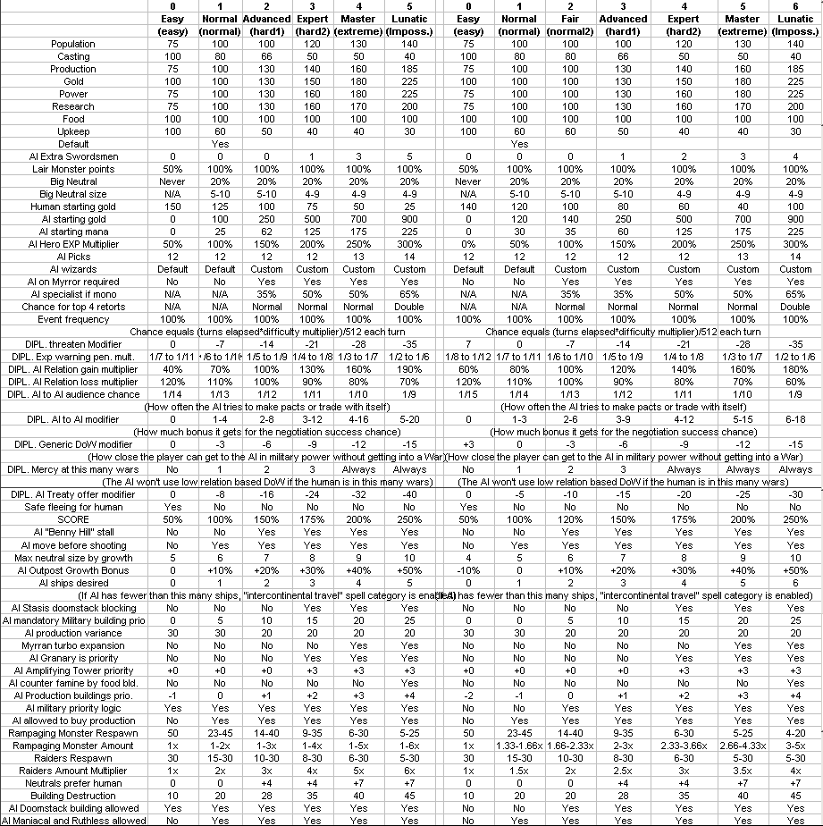
-Adjusted Wave of Despair again : base strength is now 255, reduction by resistance is (resistance+10) instead of (2*resistance).
-Adjusted AI use priority for Wave of Despair - now calculated expected effective strength to decide on using it or not and priority is proportional to strength- must expect at least 9 damage to be allowed to cast it. (this is a cost 66 spell - if we can't deal at least as much damage as a single target uncommon nuke, it's a waste of skill to cast it, especially as damage is distributed on targets.)
-Floating Islands will not attack weak enemy units like Spearmen - second fix.
-When the AI does idle movement on sea with their ships, they won't move onto a tile that contains enemy units, resulting in an attack.
5.23b
-Fixed 5.23 bug : map generation freezes if neither plane has at least 3 wizards on it.
5.24
-The AI now recognizes bow heroes as units having no ranged penalty for deciding how to move them before shooting.
-Fixed bug : Spellcasting has incorrect effect on strategic combat if (mana/turn * strength of effect) exceeds 32767.
-When a new item needs to be generated, valid predefined items now have to be in the range of (0.75*Cost) to Cost instead of (0.5*Cost) to cost. In other words only a quarter of the value is allowed to be lost instead of half.
-Gift of Gods item budget is now 3100 instead of 4000.
-Adjusted item budget for AI Create Artifact, it is now 8*Casting Skill but a max of 3100, instead of 12*Casting skill but a max of 7500. (old values were quite obsolete, item costs are no longer that high, highest predefined item is around 3800.)
-Improved AI targeting priority for Corruption and Raise Volcano : food production of tile now has a higher weight so it'll be less likely to target a volcano tile around a big city when there are still tiles that aren't volcanoes.
-Fixed bug : Dispel Magic can work on dead units if they died at a tile where the living target is.
-Increased AI disjunction priority for Survival Instinct during war.
-Reduced resistance of Gorgons by 1, Increased cost to 360.
-Increased resistance of Stone Giant by 1, ammo by 1.
-Fixed bug : Earth to Mud affects tiles outside of the battlefield, allowing units to enter there and possibly corrupts memory through it.
-You can now use the Z button to move to the previous city on the city screen.
-Fixed bug : Wrong addresses were used in Spell Binding recharge timer.
-The random generator now generates up to 13 bit long numbers instead of 9 bits.
-AI decisions that were relying on the Ågmax of 512Åh random generator now work with up to 8192.
-New treasure generating algorithm.
-Instead of old Ågfor each lair, place treasure equal to budgetÅh, now works as Ågfor each treasure intended for the map, place it in a lair with adequate budgetÅh.
-This means the map will have the same amount of the important, high value treasures, regardless of map size or other settings. Even if larger maps have more overall treasure budget, the extra will only increase the low value results like gold or mana - both of which are needed in larger quantity on larger maps anyway. Long story short, you have the same chance to find a lot of books and retorts regardless of playing Huge or Tiny.
-Prisoners are slightly less frequent to make the Fame and Summon Hero mechanics more relevant - I feel these don't see enough use with heroes from lairs filling all the hero slots all the time anyway.
-This means lower budget lairs have the same chance for a valuable drop as higher budget lairs, as long as the overall budget is enough for that item. In the previous system, most good loot was concentrated on the highest budget lairs as they were rolling the highest number of times before running out of budget to spend.
-Now each 1 budget is worth 1 item value again, cutting down on useless gold and mana more. However less item budget is wasted (both on gold/mana and when generating the actual item from the item slot) so the overall item quality should not be worse, just more consistent between games.
-Doom Bolt now deals 12 damage and costs 45. (experimental)
-Adjusted the somewhat outdated AI to AI diplomacy trading formula. AI players will now trade at a much lower relation level, generally at neutral or better, instead of requiring calm or higher. They'll generally still not trade with people they hate, however, even if they could.
-Psionic Blast now has strength 18.
5.25
-Fixed bug : AI can target units with Orihalcon with Dispel Magic in some cases.
-Z and X on city screen will now properly skip outposts again.
-AI Great Unsummoning priority is now capped at 300 to prevent excessive priority when enemies have Doom Mastery
-AI can now revert magic ranged attacks into melee against targets with Magic Immunity the same way they did with missile attacks against Missile Immunity. Removed obsolete limitation of Ågdo not activate if melee<2/3 of ranged.Åh, this should now allow the Ågrun away tactic if melee<ranged/2+1 and no valid ranged targetÅh condition to trigger, instead of just wasting ammo on the immune target if melee is too low. Attackers with Doom or Illusion ranged attacks will use the ranged attack anyway as those can ignore the immunity.
-Reduced maintenance cost of several Orc units : Hordes 1 gold, Halberdiers 0 gold, Magicians 1 gold, Wyvern Riders 2 gold, Shaman 0 gold.
5.26
-The AI will now consider units with Illusion Immunity as invalid targets for True Sight in combat
-Fixed Seismic Mastery trigger cost and description to work on spells costing 370 or more.
-Fixed Bug : Disenchant Area and Dispelling Wave strength modifiers change the spell cost used to trigger Seismic Mastery and Fairy Ring when they should only apply to the dispelling strength. While the same bug also affects Disjunction and that one is unfixable, Disjunction should always trigger Seismic Mastery and Fairy Ring both as the lowest possible cost on it is 375, meaning the bug has no effect on the outcome at all.
-Chaos Surge no longer has a diplomacy penalty.
-Fixed interaction of Shadow and Thrown.
-The Ågin towerÅh status of all units will be updated after every battle - this should fix various issues with stacks being on the wrong plane after fleeing from a tower battle.
-Cities can produce 256 or more power now.
-On Advanced or higher, if the AI rolls absolutely bad very rare spells that cannot possibly be a threat, it'll reroll all spells. This shouldn't affect more than 1-3% of the wizards generated in theory, as having even a single good very rare spell is enough to pass this requirement. This is to prevent long games to have a disappointing end where the opponent only has situational useless spells like Consecration and Creature Binding and stands no chance whatsoever due to that.
-Adjusted Volcano spawning rate of Armageddon (reduced by 25%).
5.26b
-Fixed 5.26 bug : Wraith Form items cause crashes or data corrution.
5.26c
-Arcane spells now follow the intended rules on when they appear for research.
-Fixed 5.23 bug : Game is crashing when an AI calculates Wave of Despair casting priority.
5.27
-You can now see the number of turns needed to complete research, and the amount of Casting Skill gain expected under the RP and SP staff next to the produced RP and SP amounts.
-The amount of casting (instant, overland) skill remaing for the turn is now displayed on the spellbook, next to the X button. (Any ideas how to turn the anti-aliasing off on it? looks horrible...)
-Fixed bug : The weight of the number of garrison units when Neutrals pick their target wasn't doubled even though it was supposed to be a long time ago.
-Fixed bug : When a human player creates an item, the effective cost of the spell will be stored in the Ågbase costÅh variable instead of the base cost.
-Removed ÅgfeatureÅh : When the base cost of an overland spell is lower then the effective cost, the effective cost is treated as the base cost instead. (cost increasing effects no longer help against Suppress Magic, etc). Both of these changes are to ensure Fairy Ring and Seismic Mastery only triggers when intended.
-Fixed bug : When ÅgRaze PromptÅh is off, and razing is done by the ÅgRÅh button, conquest gold is awarded twice.
-Spell help text now contains realm and rarity (added by Bahgtru, thx)
-At end of combat, all units that are not fantastic as their base type, will refresh their current level, and all such units that are not undead will also gain experience. This shouldn't be different from the previous version, but should simplify the condition, and should fix the problem of undead not refreshing levels, thus keeping heroism effects even when dispelled. As a side effect to this update, units affected by Raise Dead or Mystic Surge now gain EXP from that battle normally.
-Undead normal units will now refresh their level at end of turn (but still won't gain EXP) - this should fix cancelling heroism on them.
5.27b
-Fixed bug : The number of turns needed to cast spells is inaccurate in the overland spellbook : skill already used up for the turn is still assumed as available, resulting in 1 turn lower result in many cases.
-Fixed bug : The Z button rarely moves the city view to nonexisting town data.
5.27c
-fixed 5.27 bug : Casting Enchant Item and Create Artifact might delete random items or corrupt memory.
5.28
-Fixed bug : Units on the AI's list of Ågrequired to leave wallsÅh sometimes do not leave walls in combat anyway.
-New overextension warning formula for diplomacy.
Players are allowed to have 5 cities plus one more per year elapsed in the game without any effect on Fair land size. This amount increases/decreases by 25% for each level of land size setting. Players exceeding this amount will receive a warning from all other nonallied, contacted wizards, that has a strength of (3+difficulty), plus 20% for each additional city they exceed that amount by.
-Overextension warning chance is now rolled separately for each enemy wizard instead of one roll triggering the warning from all other wizards at the same time.
-AI units with Teleporting or Merging now won't go back to the city after turn 10 if they are chasing a unit with higher movement speed.
5.3
-Removed AI procedure that decides whether there is a need to send units into a tower.
-Added new procedure that decides which plane the AI primarily want to be present at, based on enemies, their cities, fortresses, and hostility levels.
-This new procedure is now used both for deciding to move units into a tower, and for deciding if a stack already in a tower needs to change planes. Old AI always switched planes from their fortress's plane to another and never otherwise.
-Added new item power : Pandora's Box.
Summon random creatures during combat at the end of each player's turn up to a certain total budget. Budget depends on the level of the equipped hero. Summoning is delayed if there are no open slots to summon. Any creature can be summoned, but even if it's an otherwise overland summon spell, it disappears at the end of battle like usual combat summons. Requires 5 Chaos books to enchant, costs 400.
-Random events now have an equal chance to target any city the target wizard has instead of the chance being influenced by town creation order.
-Random events can now target cities where the wizard has a higher than zero racial unrest penalty.
-The help entries for races now contain the racial unrest penalty data.
-Fixed bug : Displayed turns for research is broken on Spell of Mastery if remaning RP is more than 32767.
-Smithy now has no maintenance, costs 125 to build, generates 2 production, and new outposts start with one already built.
-Sawmill now costs 68 and generates 6 production.
-Fighter's Guild now costs 330.
-New hamlets start with a Smithy already built.
-Smithy has twice the normal chance to be destroyed by Ågchance to destroy buildingsÅh effects. (combat, conquest, earthquake, etc)
-New housing formula. Growth = +170*(Terrain Maximal Population + Racial Growth Modifier - 8)/13 *Max(1.3-0.1*Current Population,0)*(Nonrebel Nonminimalfarmer population/Current Population)
As a generic rule, it is now the most economical to build housing until population 4, +/-3 depending on race and terrain quality. Housing effectiveness is reduced by rebels, but not by farmers.
Population boom, stream of life, famine, granary, wild game do not affect housing effectiveness, but it is affected by AI difficulty modifiers, Gaea's Blessing and Omniscient effect.
-Builder's Hall no longer adds a bonus to Housing.
-The AI will now avoid setting farmers while doing housing when able.
-The AI will now always build Marketplace then Magic Market if they have 180 or higher available gold.
-The AI will now always buy Marketplace and Magic Market for gold in cities with pop<7 if gold is available.
-The AI will no longer build housing randomly. Instead, they'll always build housing at low population, while the new formula has a better Ågreturn of interestÅh value on housing than building a sawmill. Once reaching that population, the AI will proceed with the usual building rules (sawmill, then smithy if missing, units if needed, then the primary military building choice for that race)
-The AI will now reevaluate changing production every turn while building housing.
-The AI now has slightly less priority to buy Sawmill for gold.
-Each map now has 3 special-generated easy lairs in the range of 7 from the human player's starting location. These generally reward 100-150 gold or mana each.
5.3a
-Fixed 5.3 bug : AI builds housing all the time.
5.31
-Summon Hero now costs 180 to cast.
-Increased Fame required for heroes to appear for hire. From the old tiers of 0,5,10,20,40 fame, they are changed to 0,10,20,40,100 fame. With the addition of the Colosseum, and genereally more enemy armies to destroy and gain fame from, the old requirements were far too easy to obtain.
-When a hero appears for hire, higher fame requirement heroes have a lower chance to appear. This effect diminishes as fame increases, and ceases if fame reaches 3x the required amount.
-Famous no longer doubles hero hiring chance, instead, halves the chance to get a fame 0 hero to appear.
-Chance for heroes to show up for a human player no longer depends on fame and is instead a preset 1/6, 1/12, 1/36, 1/48, 1/60, 1/90 chance depending on the amount of hero slots already in use. Fame is used to increase the quality of offers instead. (AI chance to hire is roughly unchanged .)
-Legendary now adds 5 fame/level.
-The Rogue is now a fame 0 hero. He/she now costs 250 gold and 6 maintenance.
-The Thief is now a fame 10 hero. She now costs 500 gold and 8 maintenance.
-Efreet now have a resistance of 10.
-Chaos Spawn now have a resistance of 12.
-Orc Archer gets +1 armor and +2 resistance.
-Huntress now has Super Blademaster, +4 bow attack and -4 melee attack streangth.
-Amazon gets 1 more random ability.
-Warlock hero loses Super Ritual Master, gains Super Arcane Power, and gains 1 more random ability.
-Magician hero gains 1 more random ability.
-The Knight gains +5 extra health, Super Constitution, Negate First Strike and Logistics, but loses Super Legendary.
-Elven Archer now has 1 more random ability (4 total) and can cast Stasis in battle.
-Famous can now increase hero levels up to (turns/75)+4 instead of level 6.
-Fixed bug Ågbe shortÅh type greeting when AI wizard is impatient never appears.
-Fixed bug : When the AI wants to demand a spell to accept an offer, they might refuse instead.
-Fixed bug : When the AI wants to demand a spell to accept an offer, they will demand gold instead if no spells are available.
-When the AI refuses a treaty offer because they wanted to ask for gold or a spell but the player doesn't have any, a new message type implying that appears, unless the AI has a ÅgI'm refusing because you did X in the pastÅh type of response available.
-Fixed bug :Astrologer army strength was able to be zero again, reintroducing the divizion by zero bug in diplomacy.
-When the AI refuses a Ågdeclare war onÅh request due to a peace treaty, they will now refer to the peace treaty instead of using a generic refusal message.
-When the player tries to trade, but the AI has no spell the player could learn at all, the AI will use a new message that refers to the AI having nothing to offer. However if there are spells to trade but the value doesn't match so no trade can possibly happen (meaning the AI's spell is more valuable), the player still gets the usual Ågyou have nothing to tradeÅh kind of response.
-Orihalcon units now show a small icon below the magic/mithil/adamantium weapon icon.
-Readjusted amount of ores generated on each Mineral setting and plane. Specifically the differences between Rich and Fair have been toned down, as well as the difference between the two planes.
-AI is no longer able to use Jihad hostility outside of a Spell of Mastery situation. (previously, it was limited to Ruthless wizards to do so, but it did them more harm then helped.)
-Improved the display of casting skill in the overland spellbook. (thanks for the info, Drake178!)
-Fixed bug : When the AI has less than 2 units in a city of population 7 or more, game froze when selecting production. This effect also affected the Grand Vizier.
-Grand Vizier now considers Smithy a non-military building
5.31a
-Fixed bug : AI builds Magic Market with races that cannot build one.
5.32
-Fixed 5.3-5.31 bug : AI always picks the wrong plane as destination during war still.
-Magicians now require a Smithy.
-Stream of Life now costs 120, has a maintenance of 4, and reduces unrest by 3 instead of completely eliminating it.
5.4
-Removed spell : Move Fortress
-New/Returning spell : Plane Shift. Arcane Rare, has the same effect as old Life Uncommon.
-The AI will use Plane Shift more often on higher difficulty levels.
-Planar Travel is removed from the game.
-Heroic Shout is removed from the game.
-New Arcane spell : Heroic Heart. Costs 18 MP, 440 RP. Heals 3 damage on a hero.
This spell aims at making heroes more playable for non-Life wizards. It's strictly worse than Healing but everyone gets it.
-Heroic Heart shows up as a common, Disenchant Area as an Uncommon, Plane Shift as a Rare in research order.
-Heroic Heart shows up as a common in treasure. Disjunction shows up in treasure as a Rare.
-Plane Shift, Summon Champion, do not show up in treasure. (Create Artifact was already disabled)
-AI prioritizes targeting heroes with healing spells over other units more.
-Fixed bug : Hostility reevaluation timer was broken
-Fixed bug : Hostility reevaluation timer resetting to 0 when Spell of Mastery was broken for nonhuman wizards casting it
-Offering a tribute to a wizard will result in hostility reevaluation at the start of their next turn, if the wizard was hostile.
-Slightly moved up Blood Lust on the AI research order.
-The Plane Shift ability on units (Shadow Demons) can only be used if the other plane has been discovered by opening a tower or researching the Plane Shift spell.
-Removed item power : Planar Travel
-New item power : Necromancy. Cost 1000, requires 5 Death books. At end of battle, dead nonhero friendly units raise as undead, up to 140 total cost per hero level. Note that already undead units cannot be raised again.
-Fixed Bug : Plane Shift allows movement onto a tile that contains an uncleared lair, node, or an ungarrisoned city.
-Evil Presence no longer disables power generated by religious buildings, instead it disables barracks, war college and alchemist's guild's ability to equip units with magic/mithril/adamantium/orihalcon equipment. Casting cost is raised to 180. RP cost lowered to 2500.
-Famine is renamed to Drought and now reduces maximum population by 6 and removes all production bonus effects instead of its old effect. Cities exceeding their maximum population this way lose 120 people per turn. Casting cost is raised to 150. RP cost lowered to 3000.
-Warp Node now halves power produced by the warped node, and the other half is transferred to the power income of the caster of Warp Node. Casting Cost is raised to 120. RP cost Raised to 4000.
-Cloud of Shadow RP cost lowered to 3500.
-The AI will now send spirits to meld warped nodes, and it's possible to meld warped nodes for the human player as well.
-Updated the AI research priorities for the 3 death curses that were changed.
-Updated AI overland spellcasting priorities for the 3 spells and Disenchant Area.
-The AI has a reduced chance to produce units in cities affected by Evil Presence.
-Bless no longer adds +5 defense against magical ranged attacks (but still applies against spells!)
-Rampaging monsters and raiders will not try to stall/hide/run if they are the attacker.
-Overland BGM chosen to be played no longer includes uncontacted wizards in the decision.
-The AI will not dispel their own Warp Node one their own node (Since it doesn't actually reduce power, they get both halves)
-Random generated items now use a weighted chance to pick the random item powers. It also adds a mechanism that guarantees high budget items alway get some useful abilities on them.
-The second and later copy of Divine Order now has halved effect.
-The AI will now be slightly more patient when assembling doomstacks and will keep going at it unless it has 7+ units with the last two being more than 12 tiles away. (Was 6 units and 8 tiles)
-When there are 3+1 wizards on planes, the plane having 1 wizard is not 20% smaller anymore, but the other is still 20% bigger. This might be subject to further change as necessary.
-Exorcise now costs 640 to research.
-New Life Uncommon spell : Sanctify. Unit enchantment for normal units. 960RP, Costs 70 MP. Enchanted unit has no gold maintenance and produces 3 power.
-The AI will prioritize targeting magical ranged units with Sanctify (magicans, shaman, etc)
-Heavenly Light now adds +1 to the unit's ranged/thrown/breath attack as well.
-Updated the unit tables in magic.exe so units should now have correct movement/scouting on turn 1.
-Updated hero MP levels and formulas.
-When a stack containing ships moves, the nonship units don't spend movement points even if they are not set to patrol.
-AI priority to cast Disenchant Area is now depending on personality and objective as well. Some wizards will not care about curses until they reach a certain amount, others might be trigger-happy to dispel even a single one.
Maniacal, Aggressive -20, Ruthless -70, Chaotic +40 or -40 changing periodically, Lawful +30, Peaceful 0
Pragmatist -20, Militarist and Theurgist 0, Perfectionist +40 and Expansionist -50.
Chaos Rift 12, Evil presence 10, Pestilence 30, Drought 15, Warp Node 8
Multiplier for Runemaster and AEther Binding applies before personality and objective
-Blur is now a 20% chance of blocking damage instead of 25%.
5.41
-Fixed bug : AI tries to heal irrecoverable damage using Heroic Heart.
-AI combat spell priority : Do not add bonus priority for having a wall to destroy on Crack's Call if there are fewer than 3 enemy units surviving, or it's past turn 7. (In this case, it's better to kill those units with direct damage, summon more (ranged) units, or pretty much anything else, cracking walls is not what's going to win the battle. Doing that is only relevant early, allowing the army to swarm the defenders from multiple directions. To finish off the final survivors, Crack's Call is not particularly effective, at least rarely better than other direct damage spells.)
-The AI adds priority to casting Flight when their melee ground unit is stuck in a sea battle. (wind walking, floating island)
-No more than 4 retorts can be picked when creating a wizard. This restriction also applies to the AI. (Finding additional retorts is still allowed up to 6.)
-Spellbook 4 now contains an additional very rare (so this book adds 1 common, 1 uncommon, 1 rare, 2 very rares, 1 starting common, and the ability to trade or find very rares.), but spellbook 8 no longer contains a very rare (so this book adds 3 uncommons, 1 rare, and the ability to pick two uncommon guaranteed first turn research spells.). Do note this change does not affect the contents of found spellbooks.
This change was done because finding and trading for very rare spells is significantly harder than it used to be when we designed the system, which makes 2-3 realm wizards weaker than intended, including the AI.
-The random wizard generator tool will no longer generate more than 4 retorts.
-Possession now costs 35 MP.
-Swapped Stream of Life and Resurrection RP costs.
-Swapped Blood Lust and Syphon Life RP costs.
-Spellweaver has a completely new effect : Your non-summoning, non-artifact, overland spells cost 33% less to cast. It's still mutually exclusive with Archmage and costs 2 picks.
(this is a temporal solution, although there is a small chance it becomes permanent.)
-Mono Death AI wizard template now has Cult Leader as their primary retort choice instead of Spellweaver.
-AI wizards with Spellweaver have 33% less summoning and 50% less item creation priority.
5.41b
-Fixed 5.41 bug, spellweaver applies without picking the retort
5.41c
-Fixed bug : Heroic Heart can target units that cannot be healed.
-Fixed bug : AI looks at the wrong player's reuse counter for Spell Binding
-Fixed a potential division crash bug in AI overland spell priority
-Fixed 5.41 bug : Åg AI wizards with Spellweaver have 33% less summoning and 50% less item creation priorityÅh might apply to the wrong wizard.
5.41d
-Fixed bug : AI casts Sanctify instead of Disenchant Area.
5.41e
-Fixed bug : When Plane Shift is cast on a tile that's not visible for the human, but the stack appears on a tile that is visible, the game crashes due to not allocating memory and loading the sound and graphic effects.
-Plane Shift now plays the correct sound effect.
5.41f
-Fixed bug : Storm Giant, the Warlock and Chaos Warrior heroes are unaffected by Supreme Light even though they have magical ranged attacks.
5.42
-Shadow Demons now have 1 lower resistance.
-Wave of Despair now costs 72 mana but is unaffected by cost increasing and reducing effects.
-Hydras have a reduced treasure budget (550 instead of 725). This also means Efreet and Doom Bat will be now treated as the primary monster when appearing together with Hydras, so those will be reported instead.
-Hydras will appear half as frequently in lairs/nodes/towers as primary monsters. (as the difference between how easy they are for the human and how hard they are for the AI is extremely high, far outclassing any other monster) Note the secondary chance is unaffected, and they can now be secondary to Efreet and Doom bats instead of the other way around.
-Manticores gain +2 resistance.
-Elven Lords gain +2 defense.
-The AI now recognizes Non-Corporeal units as being unaffected by Entangle when calculating the priority of the spell.
-Minor adjustment to the AI's Ågreroll wizard if extremely bad spellsÅh list.
-The AI will avoid picking Suppress Magic for research before turn 170 as long as there is any other spell they can pick that's not Spell of Mastery.
-The AI now has an even higher priority boost on research buildings when researching Spell of Mastery, and has a priority boost on power buildings as well. This special priority boost no longer includes the Amplifying Tower which is a magical building but does not produce research, but other research priority boosts (such as Theurgist) still include it.
-The AI will prioritize higher resistance unit production more if the human player had 5 or more Death books and it's past turn 180 (human likely has access to mass targeting resistance based spells like Terror, Massacre, etc at this point). Note this only affects unit production within the city. If the city cannot produce high resistance units, it'll still produce the same amount of low resistance units as before. This effect only activates when the AI is at war with the human.
-The AI will have a higher priority for producing flying units if at war with the human player and the human player knows Flying Fortress.
-The AI will not use Ågmove before shootingÅh tactic if Wall of Shadows is present : it risks moving to a position where shooting is no longer available. This includes the defender : they might end up outside the wall while the enemy is already inside.
-Spell Ward now reduces unit defense and resistance by 3 instead of 4.
-Combat spells cast by wizards who researched the Spell of Mastery cannot be countered.
(this aims to make SoM useful against Sorcery wizards who spell blast it, and aims to provide a way to win in cases where Spell Ward makes it impossible otherwise.)
-Fixed bug : stacks sometimes show wrong movement paths when out of movement.
-The AI will build City Walls first after all other mandatory buildings at their fortress if difficulty is Expert or higher and turn count is 40 or higher.
-Fixed 5.4 bug : Sanctify and Necromancy still allowed planar travel movement as though it was the Planal Travel enchantment, the old effect wasn't removed.
5.43
-Demon Lords no longer have Doom Bolt.
-Demon Lords now have a -2 Life Steal attack. (this might be subject to further change as needed)
-Death Knights now have 1 more armor and 1 stronger Life Steal (9, -5).
-Necromancy now costs 700.
-Fixed bug : When the AI requests an additional spell to accept a treaty proposal from the human
the required minimal priority is generally much higher than the highest priority spell in the game. Now, the AI will accept any spell for this, regardless of priority.
-Personality now has a halved weight in AI to AI diplomacy. The new formulas :
REL+HREL+PER/2+RND(54+3*DIFF)+40*Charismatic+TREATYINT/4<102 for Wizard's Pact
REL+HREL+PER/2+RND(54+3*DIFF)+40*Charismatic+TREATYINT/4+10*Pact<160 for Alliance
REL+HREL+PER/2+RND(54+3*DIFF)+40*Charismatic+TRADEINT/2<90 for Trading.
This is equivalent to the following percentage chances (red marking zero chance) :
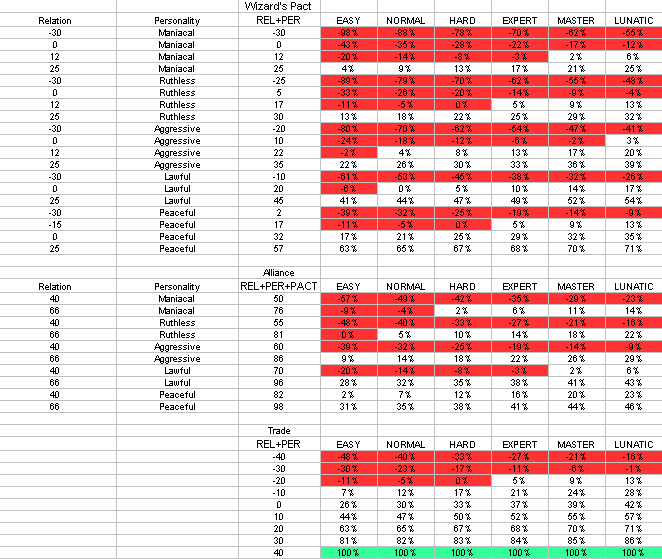
-AI maintenance modifier for Normal difficulty is now 70% instead of 60%.
-Raised AI priority of Endurance inside the buff spell category.
-The AI casts Endurance as its own spell category in additonal after turn 150 if the home race is Dwarves, or the AI knows Death Knights or Hydras. This category is not used by Expansionist wizards, and has doubled priority for Perfectionists.
-The AI will only build roads between two cities that are both their own, or owned by an ally.
-Wall of Fire, Wall of Shadows now costs 60 and 90 when cast overland, combat cost is unchanged.
-Life Drain and Syphon Life now adds 4 SP for each damage dealt instead of 5.
-Troll Spearmen and Swordsmen now have 5 resistance.
-When the player picks Myrran and there are 4 opponents, exactly 3 will be Myrran. (Also updated player counts for 3 opponents.)
5.44
-Amazon gains 1 defense, Thief loses 1 defense.
-Chance of Stoning to appear on random generated items is reduced. Due to its low cost, it was appearing excessively often.
-Random generated item types are now weighted : 2 Swords, 2 Axes, 2 Maces, 2 Bows, 3 Staves, 3 Wands, 8 Accessories, 2 Shields, 2 Chains and 2 Plates on average for each 28 items. Original was 1 of each type, which considering 6 types of weapons, 1 accessory and 3 armor was quite inbalanced.
-When a spell would be found in treasure but no spell of the appropriate tier is available, 200 gold/tier is added instead.
-If the human player is playing 4 or more Death books, AI will prioritize researching Exorcise, Holy Word, Cockatrices, Shadow Demons and Petrify more.
-Fixed bug : When a settler is produced from the last unit of population and causes the city to disappear, the production cost is subtracted from a random other city.
-Werewolves now have 4 resistance. (it's extra low because of the large figure count and low unit cost - most relevant effects apply on a per figure basis. They are also naturally immune to most low end resistance targeting spells except Exorcise, the primary reason for this change.)
-5.42 change ÅgThe AI will not use Ågmove before shootingÅh tactic if Wall of Shadows is present : it risks moving to a position where shooting is no longer available.Åh should now work.
-Spell Charges are now allowed for Enchant Item but only up to uncommon.
-Halved the AI's priority to target ships with overland buffs
-Fixed bug : "you have a treaty, do you still want to attack?" message is skipped in sea battles.
-Regeneration is now a variable ability. Regeneration X has the same effect at end of turn as Regeneration, but means X hit points are restored during each combat turn. Regeneration spells and items grant Regeneration 2. Units have the following natural regeneration amount :
Werewolves : 1
Shadow Demons : 2
Great Lizard : 2
Behemoth : 3
Hydra : 7
Troll Shaman : 2
Other Troll units : 1
Amounts are subject to possible future change, especially Trolls.
If multiple effects apply, only the highest amount of recovered hitpoint count.
-Fixed bug : The Åg-1 to hitÅh effect from Terror doesn't always apply when it should. However, it will still only activate at the start of the next turn.
-Fixed bug : When a hero gains a level at end of combat, all other units afterwards in the same battle fail to gain exp and there is a tiny chance of data corruption.
5.45
-Item transfer from/to heroes is no longer possible if the hero already finished his/her turn.
-Wrack is renamed to Gate of Hades, and now deals irrecoverable damage which ignores Death Immunity.
-AI is now aware of the changes to Wrack and will use it against creatures with Death Immunity.
-Endurnace now adds 2 defense instead of +1 To Defend.
-Holy Armor now adds +1 To Defend instead of 2 defense if the unit has 6 or greater defense.
-Holy Armor and Holy Weapon now costs 40, Endurance costs 60.
-Zombies lose Poison Immunity.
-Undead lose Poison Immunity. Animated dead lose Poison Immunity.
-Werewolves lose Poison and Death Immunity, and have Regeneration 0.
I'm aware it makes more sense for undead to be immune to poison, but due to the significant role Poison plays in the early game, the widespread immunity unbalanced the realm. Furthermore, this change should allow Death wizards to use Repear Slash to damage enemy undead creatures.
-Being a Death realm creature no longer grants immunity to Poison, Death, Cold and Illusion automatically, unless explicitly defined for the unit. Instead, undead gain Death, Cold and Illusion immunity, but not Poison. Do note that most Death realm creature have all the listed immunities naturally, and will keep having them unless explicitly specified otherwise.
-AI has a higher priority to cast Holy Armor in combat if the target has higher defense, and prefers to target those units.
-Weakness now ignores Death Immunity.
-Swapped the RP cost of Blood Lust and Drain Power.
-The AI will now send units into city tiles on turn 12 instead of 10.
Experimental, hoping for this to improve the AI's ability to catch outnumbered, but fast enemy units - especially those with equal movement.
-Werewolves now lose magic/mithril/adamantium weapons when transformed, and receive +1 To Hit to compensate for it.
-The AI now picks the race to build settlers of based on their home race, own realms, and human player realms, instead of always having the same preferences.
-Sleeping units cannot be raised as undead.
-Life Drain and Syphon Life now generates 2 SP/damage instead of 4 SP/damage.
-AI will prioritize researching Wrack and Weakness if the human player has 5 or more Death books.
-Fixed 5.44 bug : AI failed to prioritize most of the spells they were supposed to against a Death player.
-Weakness now affects every type of ranged attack.
5.45b
-Items should now be moveable after combat but before movement points for that battle are subtracted from the heroes, as intended. Do note if you do not move items then and exit the item screen, you can't move them until the next turn.
5.5
-When an outpost turns into a city, the player will be shown that city to change production. However this will happen after building completion messages, and not at the time the outpost message is shown.
-Buildings can now be queued for production.
-New optional setting : Rebuild Prompt. When a building is destroyed, the city will be shown, even if it didn't interrupt production.
-New optional setting : Rebuild All. When a building is destroyed, it will be added to the front of the production queue even if it isn't required for other queue elements.
-Nomad population growth rate is 1 higher. (+80 people instead of +70)
-Werewolves regain Death Immunity, lose Illusion Immunity instead.
See forum discussions, I believe Werewolves being vulnerable to getting raised as undead is unhealthy for gameplay.
-Completely replaced the algorhytm that picks which ore gets generated on a tile already chosen for generating an ore at the start of the game, to allow more fine grained specifications of the rarity of each ore on each terrain type, and updated the rarities. Note that ores generated during the game by Raise Volcano and Armageddon are unchanged..
-Djinn will prefer to cast Magic Immunity when fighting against stacks of Ghouls.
-Fixed 5.45b bug - when cancelling an attack on a lair, all movement is used up instead of the correct amount.
-The Cities screen will now display the amount of Food,Power, Research and Unrest.
-Syphon Life now has a -11 save modifier.
-AI's with 8 or more Death books will pick Blood Lust as their second guaranteed uncommon now instead of Black Prayer, to be able to get it early on werewolves, matching the research rules. A similar change for Land Link on Nature wizards have been added but it's much less likely to trigger, as Nature wizards have other spells they might want to prioritize instead (Transmute, Cockatrices, etc).
-Patrol hotkey is now the ÅgEscÅh button instead of ÅgLÅh
-The up/down arrows now scroll by 8 on the cities screen instead of 5. This puts the bottom city on the list exactly to the top when ÅgDownÅh is pressed instead of the middle.
-Pressing ÅgSÅh on the cities screen will now sort the cities. Pressing it multiple times will cycle through sorting by Race, Population, Gold, Production,Food,Power, Research and Unrest in that order.
-The Cities screen will now display the units garrisoning the currently selected city.
-Fixed bug : AI fails to target the best available target using Warp Wood.
-Pikemen now have 4 defense.
-Warlord and Tactician are now mutually exclusive!
-Readjusted Range penalties - I feel the mod was reducing them far too much compared to the original game, so it has been toned down a little. It still has the 1.2x range bracket added and has slightly less range penalty at closer distances, but it no longer eliminates the 2.5 range bracket nor extends the areas that are outside the 3x range territory. This is an experimental change and might get further revisions.
1-5 1x
6-8 1.2x
9-13 1.5x
14-17 2x
18-20 2.5x
21- 3x
-Crusaders gain 2 figure and 1 resistance.
-Knights gain 1 movement.
-Guardian now adds +6 maximal population to each of your cities that belong to your starting race.
-Runemaster now grants a 100% research bonus to Arcane spells instead of 50%, starts the game with Dispel Magic known, and has an increased chance for their books to contain overland global enchantments over other types of spells, in addition to the existing effects.
-Cities can no longer be built on the polar regions (top and bottom 3 rows of the map)
-Specialist now offers only 50% dispel resistance.
-Renamed ÅgExpanding HelpÅh option to ÅgSluggish UIÅh and added more functionality to it :
Pressing a hotkey on the keyboard will no longer teleport the mouse cursor or show button press animations if the option is disabled.
-The AI will now prioritize researching AEther Binding, Dispelling Wave, Blood Lust and Crack's Call if the human player has 4 or more Life books.
-Updated the AI's guaranteed uncommon Sorcery spell pick rules.
-The AI will avoid casting Mystic Surge on their own doomstack in battles they expect to win easily without doing so, to prevent the 1 HP units to fall victim to spells next battle.
-The AI will priortize Mystic Surge slightly more if an Invisibility counter is needed.
-Fixed bug : The shadow of invisibile Efreets is still visible.
-Chaneller now increases the chance of combat exclusive spells among starting spells significantly.
-AI will avoid picking Spellweaver and Chaneller together and will avoid picking Chaneller if pure Sorcery or Sorcery/Life.
-The primary retort pick for pure Chaos is now Sage Master instead of Chaneller.
5.5b
-Fixed bug : game crashes when a Super Sage hero reaches Demigod level. (overflow due to 135 RP)
5.51
-Fixed bug : AI can cast Flame Blade on fantastic creatures as an overland spell. (when spell was swapped to a common slot, the ID for this check wasn't updated)
-Adjusted the AI's targeting of Resist Magic as an overland spell.
-AI now has a small chance of casting Stasis on doomstacks even if they are not in range of the fortress to slow them down.
-Carrak now costs 80, has 8 ranged, 15 hp, 6 resistance, 6 ammo.
-Horsebowmen lose 2 ammo, 1 movement, gain First Strike.
-Wall of Fire no longer affects the owner's units.
-The AI will do the anti-life research choices at 3 Life books on the human instead of 4.
-Jackal Riders now require Stables
-Runemaster now also increases the chace of getting Spell Binding as if it was a global enchantment.
-Unit curses now have doubled dispel resistance. (to balance having a nonguaranteed success rate and a generally very low cost.)
-Fixed bug : Confusion causes crashes. (probably caused this bug when implementing variable regeneration)
-Fixed 5.45 bug : Units carried by ships have movement remaining after combat.
-Heavenly Light now grants magical weapons to the defending units (+1 to hit included, where applicable)
-Readjusted rampaging monster and raider frequency.
5.51b
-Fixed bug, Knights unit was missing a figure.
5.52
-When prisoners are found, the more powerful heroes have a turn limitation for the earliest turn they can appear.
-Fixed bug : Replaced buildings sometimes fail to reappear when the building replcing them is destroyed or sold.
-Spellweaver no longer reduces the cost of Summon Hero and Summon Champion (they are summoning spells, kinda.)
-Unit sound effects/animation types are now included in the unit tables instead of being a bunch of hardcoded variable settings that fills the table on runtime. Please report if any unit has an incorrect sound, I might have made mistakes when copying the numbers into the table.
-When a unit that already finished their turn enters a battle as an attacker anyway (usually carried into it by a flying boat), that unit will count as Ågnot involvedÅh for the battle the same way units on board of a normal boat in a sea battle behave. (I'm aware this is not a perfect solution, but better than letting the same unit fight multiple battles, completely disregarding game rules. It also makes the most sense out of the possible solutions flavor-wise : the army is too exhausted to participate, but can still be moved on board of a ship.)
-Fixed bug : Fire Elementals fail to appear in lairs and nodes.
-Dwarves now receive a 50% bonus to taxes instead of 100%.
5.53
-Fixed bug : Units being transported on ships don't remember their movement order.
-AI now considers Blood Lust as a ÅgMedium strength buffÅh type spell for global buff priority.
-Fixed 5.45 bug : Item transfer impossible when hero is on a boat on ocean due to the game not detecting the ship.
-Ships will no longer carry units automatically. Instead, only selected ships and units move together at all times. If such a movement would leave a unit to drown, the movement doesn't happen. Units with no movement remaining can be selected, but can only move when carried by a ship. This behavior also applies to Wind Walking.
-When a unit participated in combat as an attacker, for the rest of the turn it cannot be selected.
-Sailing movement type now takes priority over Non-corporeal. (noncorporeal ships cannot move on land anymore.)
-Maritime Guilds now require a Fighter's Guild.
-The AI will now reevaluate for the need of using the ÅgBenny HillÅh tactic before moving each unit instead of only once per turn. This should allow the AI to avoid suiciding a lot of weak flying/etc units into one strong enemy all in one turn, and might occasionally enable the AI to be smarter at retreating regenerating units to refill their hp.
5.53b
-fixed 5.53 bug : Engineers get their road destination coordiate reset to zero each turn.
5.54
-Armorer's Guild and Fantastic Stables can now be built only on turn 72 or later (1406 January). This is an experimental solution to the problem of the game having no technology/ military related research and advancement. Clearly the top tier units aren't meant to be built at the very beginning of the game, but production costs are the Ågper instanceÅh cost of the building, not for granting access to the tier, so they aren't suitable for this purpose. I'm aware this isn't a very good solution, but anything else we discussed is worse.
-Fixed 5.51 bug : Heavenly Light grants the magic weapon bonus to fantastic units.
-Removed 5.52 feature : ÅgWhen a unit that already finished their turn enters a battle as an attacker anyway (usually carried into it by a flying boat), that unit will count as Ågnot involvedÅh for the battle the same way units on board of a normal boat in a sea battle behave.Åh. It's no longer necessary as it's now impossible to carry units that already attacked into another battle using ships.
-All Barbarian basic units now have +1 to Hit to compensate for having no Alchemist Guild.
-Alchemy has no effect on Barbarian cities.
-Barbarian cities can now build Magic Markets and Wizard's Guilds.
-New Barbarian unit : Gladiators. 3 Figures, 6 HP, 6 Armor, 5 attack, 5 Thrown, +2 To Hit, Large Shield, 3 movement, pathfinding. Requires Colosseum. Costs 120.
-New Barbarian unit : Spellserkers. 4 Figures, 4 HP, 4 Armor, 3 attack, 5 Thrown, +1 To Hit, 3 movement, pathfinding, Caster 20, Missile Immunity. Requires Wizard's Guild. Costs 120.
5.54c
-Fixed 5.44 Bug : Barbarian Spearmen don't have their +1 To Hit bonus.
-Fixed 5.44 Bug : Purify doesn't work for human players.
-Fixed 5.44 Bug : Alchemist disables mithril/admantium
-Fixed 5.44 Bug : Newly summoned units don't have their Åghad combat this turnÅh flag reset which might prevent selecting them.
5.55
-Fixed 5.51 bug : Heavenly Light grants the magic weapon bonus to fantastic units. (previous fix was incorrect)
-Life Drain and Syphon Life no longer produce SP.
-Fixed bug : Overland Disenchant Area and Dispelling Wave affects dead units.
-The AI will no longer flee from battles with their heroes. (It's pretty much impossible for the AI to correctly judge when the hero is in actual danger and weight that against the chance of successful fleeing (which might even be zero!))
-The AI will now use the Benny Hill strategy on ranged units that run out of ammo and have 4 or lower melee attack strength, regardless of combat situation and their ability to actually outrun or evade the enemies, in hopes of being able to save them through spells or by other, more melee oriented units present in the battle. This should prevent tricking the AI into using their sprites or magicians to melee enemies while they have strong forces left in the battle.
-Pandora's Box will now summon fewer creatures, especially when many, weak ones are chosen at random.
-Fixed 5.51 bug : Åg-Wall of Fire no longer affects the owner's units.Åh doesn't work correctly, random units are unaffected instead.
-Fixed bug : Diplomacy message ÅgI refuse your offer while you have X enchantmentÅh shows ÅgNoneÅh as the enchantment name.
-Zombies now have -1 To Defend.
-Invisibility now applies the same type of effect as Blur instead of -1 To Hit in melee. If Blur is also in effect, the amount of reduction is 30% total.
-Neutral monster quantity and frequency increased.
-Neutral monsters are more likely to raze cities.
-Neutrals monsters and raiders spawn on turn 25 the earliest instead of 40.
-Fixed bug : AI calculates priority for Gate of Hades wrong.
-The AI will now avoid targeting combat summoned zombies, centaurs and fire elementals past turn 7 in combat with damage/instant kill spells to attempt to avoid the player stalling until the AI uses all casting skill to kill summoned garbage units.
-Added fix to the map exploration artifacts problem, by Drake178
-When priority is equal, the AI will now target the last found unit with a ranged attack instead of the first. This ensures the AI won't kill the unit(s) cursed by spells as spells still target the first one found. It's meaningless to put weakness or similar spells on a unit if it's to be killed by ranged attacks the same turn anyway.
-Fixed bug : Nomad neutrals don't get a sawmill to build their horsebowmen at the start of the game, making their garrisons weaker than intended.
-Fixed major bug : Rebuild All option affected AI players, preventing them from rebuilding destroyed buildings as they got stuck in the queue which the AI isn't using.
-AI Priority of casting Black Prayer per enemy unit increased. Priority also increased if Annihilate is known.
-Thrown for Gladiators reduced by 1.
-Demon Lords lose Poison, Cold, Stoning Immunity.
-Demon loses Poison, Cold Immunity.
-Archangels and Demon Lords now cost 18 mana to maintain (but they still produce 12 power, so their net cost is only 6)
-The AI will no longer have a minmal scouting range of 3 for detecting cities of other players. (o_O yes, this is a thing that exists in the original MoM)
5.55b
-Runemaster no longer starts with free Dispel Magic.
5.56
-Fixed 5.5 bug : Pandora's Box summons more than intended (instead of less)
-Holy Armor is now overland only and costs 50.
-Gorgons overland summoning animation replaced (by Pinkeh)
-Draconian bowmen reduced to 4 ammo.
-Life lairs can now produce rampaging monsters.
-Rampaging monsters have a higher chance to spawn on a continent that has at least one human city.
-Minor adjustment to rampaging monster budget formula (difficulty now has a larger effect on the early turns)
-When rampaging monsters are generated, there is a cap for how much a single monster in the stack can use up from the budget. This is to ensure even on high difficulties with the extra monster setting enabled, no rare monsters spawn earlier than intended and ensures the rampaging stacks will usually contain more than one monster.
-When monsters retreat exhausted, they will not disappear (same behavior as raiders)
5.56b
-Fixed 5.56 bug : New feature had no effect : ÅgWhen rampaging monsters are generated, there is a cap for how much a single monster in the stack can use up from the budget. Åg
-Hydras will not appear among rampaging monsters. (their relevant cost value is way too low and they'd appear far too early. Also undead hydras are a problem.)
5.56c
-Fixed 5.56 critical bug : Neutral monsters don't disappear after rampaging through a city and are left on the city tile.
5.57
-Fixed bug : When Gate of Hades damages a unit, it does 1 more damage than it should.
-Fixed bug : When all remaining lairs are Life realm, no rampaging monsters are generated.
-The AI can now disembark from ships onto tiles that have enemy units and initiate combat, if their stack is significantly more powerful.
-The AI will now pick the nearest unoccupied shore tile when sending a transport to a continent.
-The AI will now pick a shore tile to move towards where there are adjacent valid land tiles for disembarking – it won't try to go to a place where the land tiles are already filled by its own (or allied) units.
-When an AI transport reaches the shore, if it was sent there with the intention to disembark, the units will disembark immediately and not wait for the next turn.
-The AI will prioritize unloading transports directly into nearby enemy cities where applicable.
-Fixed bug : Angel monster value in wizards.exe was wrong. (used for EXP, doomstack building and rampaging monster generation)
-Thrown and Breath attacks gain +1 strength from the Veteran level only, Regular and Ultra Elite no longer increases them.
-Flame Blade no longer adds +2 to Thrown attacks.
-Blazing March no longer adds +3 to Thrown attacks.
-Lion Heart no longer adds +3 to Thrown attacks.
-Ghouls lose their +1 to Hit bonus and instead gain 1 more melee and ranged attack. (this should make the common buffs less powerful on them.)
-Fixed bug : 5.55 feature didn't work if the AI's overall military power in battle was stronger than the human's : ÅgThe AI will now use the Benny Hill strategy on ranged units that run out of ammo and have 4 or lower melee attack strength, regardless of combat situation and their ability to actually outrun or evade the enemies, in hopes of being able to save them through spells or by other, more melee oriented units present in the battle. This should prevent tricking the AI into using their sprites or magicians to melee enemies while they have strong forces left in the battle.Åh
-Fixed bug : Units couldn't leave a stack containing Air Ships on sea as it wasn't recognized to have Wind Walking to carry the remaining stack.
5.58
-Damage to buildings and population is now applied even if the city had no defenders. (Unfortunately, it was far too easy to abuse the system by killing all defenders except combat summoned or confused ones, pass until the end of battle and then conquer the city after they disappear. Aside from this abuse, undefended cities should be extremely rare in the first place.)
-Each treasure budget point is now worth ½ gold or mana instead of 1. This doesn't apply to the 3 ÅgstartingÅh lairs placed next to the human player's capital.
-Treasure gold and mana amount is set to 0 if less than 50 was generated.
-Reduced the amount of very rare spell treasure generated from 2-5 to 1-4 per map.
-Towers that would have no spell otherwise will now always have a Common spell instead of either a Common or Uncommon.
-Adjusted Magic Power map setting (and renamed options) :
Min : 0.5
Low : 0.75
Fair : 1
High : 1.25
Max : 1.5
(this does not affect the amount of monsters guarding the nodes or the treasure budget.)
5.6
-Improved combat pathfinding to prefer horizontal and vertical paths over diagonals when cost is equal. This should make it easier to corner targets for the AI.
-Esc is used to close the overland spellbook instead of Space. (by Drake178)
-Fixed city drawing priority issues on the overland map. (by Drake178)
-Fixed a possible crash when trading/obtaining spells. (by Drake178)
-Fixed forest combat tiles not having the originally intended number of trees and all tiles not having the intended amount of rocks. (by Drake178)
-Fixed bug : Some Caster units still show the ÅgWho will castÅh dialog when out of MP. (by Drake178)
-Fixed bug: 4-way crossroads don't display properly in combat (by Drake178)
-Combat map now shows rivers. (by Drake178)
-Combat Map for Swamp tiles now has water. (by Drake178)
-Mini unit view in combat displays thrown and breath attacks, to hit and to defend bonus (by Drake178)
-Gate of Hades now has a sound effect and no longer corrupts memory if affecting over 40 figures. (by Drake178)
-Fixed a few other minor bugs (by Drake178)
-The AI is now allowed to use Psionic Blast on units that have Illusions Immunity (but considers the amount of damage done, like on all damage spells.)
-Fixed 5.58 crash bug : Game crashes when empty city owned by a human player is conquered with ÅgRebuild PromptÅh enabled.
-Fixed bug : Magic.exe displays the old options instead of ÅgRebuild PromptÅh and ÅgRebuild AllÅh, the option names were only replaced in wizards.exe.
-Fixed 5.57 bug : Heroes have incorrect amount of MP.
-Night Stalker now costs 1920 RP, Black Prayer 1600, Possession 1280.
-Night Stalker now costs 225 mana.
-Night Stalkers lose 5 HP and gain 1 Armor.
-Fixed rocks not getting displayed in combat on certain types of terrain.
-Magic strength now defaults to Fair on the New game screen again as intended.
-Fixed bug : displayed amount of population killed is occasionally wrong if multiple battles happen in the same city.
-Fixed bug : When a failed spell or book treasure is replaced by mana, Åginside you find absolutely nothing200 mana crystalsÅh is generated as the message.
-Fixed bug : fleeing while combat summons are in play will include them in the Ågwhile fleeing you lostÅh list, corrupting the displayed text.
5.6b
-Fixed game crashing when empty town is lost to AI
-Fixed Runemaster not granting 100% research bonus.
5.6c
-Fixed 5.6 bug : When a failed spell or book treasure is replaced by mana, game behavior is indeterminate. (possible memory corruption, crashes, etc)
5.6d
-Fixed 5.6 bug : Units with only 1 movement in combat fail to move correctly.
5.61
-Fixed bug: figures can move around in some units during Teleport/Merging/Summon/Raise/Animate Dead animations (by Drake178)
-Fixed bug: Oracles don't reveal terrain when conquered rather than built (by Drake178)
-Fixed bug: control changed heroes can't use their item charges (by Drake178)
-Fixed bug: control changed heroes get the wrong -spell save modifiers (by Drake178)
-Fixed bug: AI looks at the above wrong spell save modifiers as well both for spell priority and targeting.
-Fixed bug: control changed heroes can't use their item charges (by Drake178)
-Fixed bug: the combat counter message shows the wrong name for control changed heroes (by Drake178) -Fixed bug: control changed heroes check the wrong items for +moves/endurance -Fixed bug: Hero abilities on control changed heroes look at wrong wizard data to determine if Leadership, Prayermaster, Guiding Beacon, Supply Commander, Divine Barrier, Soul Linker, Logistics needs to be applied. -Fixed bug: Combat global bonuses are not updated outside of end-of-turn. (Holy Bonus, Leadership, Soul Linker, Supply Commander, Divine Barrier, Guiding Beacon, Prayermaster, Resistance to All, Logistics) -The cutoff for playing the ÅglosingÅh BGM is now at 40% as powerful as the strongest player instead of 33%. -When combat movement changing effects apply, the amount of immediate change to the unit's remaining movement takes into account the number of attacks already performed. This should guarantee the unit will always be able to do 2 melee attacks, not more or fewer. This applies even if the change is from passive effects. (A Logistics hero dying or being revived)
-Fixed bug : newly summoned units, raised or animated units don't have their combat movement adjusted by movement changing effects. (Entangle, Logistics)
-UI feature: combat spell targeting now also highlights the target tile for non-unit spells, if it is valid for the spell being cast (By Drake178)
-UI feature: combat spell targeting has greatly improved responsiveness use a different register for the window struct pointer (By Drake178)
-Fixed cursor display bug : Summoning spells, Magic Vortex, Cracks Call, and Earth to Mud can be cast on tiles outside of the valid playfield (By Drake178)
-Fixed cursor display bug : Summoning Spells can be cast on wall corners and central structures
-Fixed cursor display bug : Possession can be cast on Heroes
-Fixed bug : AI wasn't prioritizing heroes when targeting combat buffs
-Removed spell : Call Centaurs
-Added new spell : Wild Boars, combat summon, replacing Call Centaurs.
-Resist Elements now costs 440 RP.
-Wild Boars can appear in lairs and nodes.
-Fixed bug : The AI doesn't avoid targeting Fire Elementals with combat spells when it should due to incorredt unit ID in the list of combat creatures.
-Book/Retort and Very Rare spell treasure is now generated according to location. The Arcanus plane has Random(Player count+2) = 1-7 with maximal players, the Myrran plane has 1-3. Very Rare spells are counted as 1 pick. However if the human picks Myrran then the Arcanus plane has 3-5 picks and the Myrran plane has Random(Player count+1) = 1-6 with maximal players.
-Magic Vortexes can now enter the center structure tile when moving, even after the initial summoning.
-Fixed graphical bug: rocks are drawn over single figure units in battle (by Drake158)
-The AI now includes casting True Sight in his Ågcheap buff stackingÅh spell strategy. More True Sight will be included if the human player has Sorcery books.
-Fixed bug : AI was able to cast Construct Catapult despite Entangle in effect.
-AI now recognizes Construct Catapult as a spell that works against Flying Fortress.
-Removed RNG seed manipulation added in Insecticide.
-Removed RNG seed manipulation happening at the end-of-turn process.
-Counter Magic now has a starting strength of 70.
-Uranus' Blessing now applies a strength 50 Counter Magic.
Note : Previous saves are not compatible due to the presence of a new unit.
5.62
Note : Previous saves are not compatible due to overland unit data structure changes.
-New transportation rule : After a unit has been transported by a ship, it can only get transported further if it moves together with at least one of those ships that have been transporting it first that turn.
-Fixed bug : diplomacy variables have no effect on AI trade offers. New formula : offered trade value is increased by (REL+HREL/10) but a maximum of 6, plus 7 if the AI is allied and there is an enemy with at least 50% more power production than them in the game, then reduced by 0-2 at random.
-The AI will now avoid casting Focus Magic on Great Wyrms.
-Time Stop now costs 2000 mana to cast.
-Time Stop maintenance now increases by 150 after conquering a city.
-Conquering or razing cities now yields no gold during Time Stop.
-The random game generator now generates larger amounts of books in a realm slightly more often.
-The random game generator now generates slightly fewer retorts at a time.
-The random game generator now has ÅgPowerÅh settings updated to the current options available.
-Fixed bug: spells that use a list selector crash if they have over 6 valid targets. (by Drake178) -Call Chaos now displays the correct animations without crashing the game. (by Drake178)
-New RNG generator provided by Drake178
-Fixed random game generator bug : Myrran consumes 2 picks.
5.62b
-Fixed 5.61 bug : Human players can't cast Possession. (cursor display improvements from 5.61 might stop working.
-Fixed 5.62 bug : Wind Walking doesn't work correctly
5.62c
-Fixed bug : Supreme Light affects units that died before the spell was cast.
-Fixed bug : Possessed units target the wrong player's units with spells.
5.63
-Minor adjustment to AI combat Mystic Surge casting priority (somewhat lower when at overwhelming advantage)
-Fixed bug : when a city shrinks in population, power production becomes corrupted on the human player's capital temporarily, resulting in spikes on the historian graph.
-Fixed Åg+XDefenseÅh on hero levelup dialog not having a space.
-The AI will now avoid trying to save mana in battles that involves at least 3 high value units on their side the same way they do in hero battles.
-The AI will avoid casting unimportant spells while banished unless the battle involves a hero, city or 3 of their own high value units or they still have a very large amount of mana remaning. ÅgUnimportantÅh spells include most buffs, debuffs and combat summoning, or targeting enemy combat summons with damage spells.
-Fixed bug : Game randomly crashes when the AI knows Plane Shift due to unstable far call.
-Fixed 5.53 bug : Game occasionally crashes when stacks are split up on an ocean tile. (could rarely happen even during AI turns)
-Magic Vortexes can no longer be dispelled.
-Mystic Surge can no longer be dispelled. (but the random buffs it causes can)
-Fixed bug : Mystic Surge can't add Immolation.
-Mystic Surge will no longer add Invisibility.
-Mystic Surge will no longer add less than 1 enchantment.
-Mystic Surge chance for an additional buffs is reduced to 70% from 72%.
-Warp Node can no longer be dispelled during combat
-Fixed bug : AI can't cast Wall of Fire, Wall of Darkness in combat
-Fixed bug: combat-cast Wall spells can't be dispelled (by Drake178)
-Fixed bug: overland-cast Wall spells are much easier to dispel in combat (by Drake178)
-Fixed bug: First Strike figures slain by Doom Gaze sometimes still participate in melee (by Drake178) -The AI will now consider Wall of Darkness when calculating priority for Dispelling Wave. -New Fortress Lightning strength formula : (18+Skill/8)/2 but a max of 60. -Fortress Lightning strength is scaled by AI difficulty (*Difficulty/2) before the cap of 60 is applied for AI players. -Fortress Lightning now applies for the first 3+(Skill/20) combat turns. This is also scaled by difficulty for AI players : Easy has no fortress lightning. Normal and Fair has the same duration as human players. Advanced has double, Expert and above have triple duration for AI players.
-Dispelling Wave will no longer have an effect on your own Warp Node.
-Warp Node dispel resistance now applies the effect of dispel resistance modifiers correctly.
-Merchant offered items have a budget of (12*Turn Count) before turn 125 and no restriction afterwards.
-Pandora's Box now only appears on high budget random generated items at a low chance.
-Monsters will now reduce cities to ruins 90% of the time instead of 75%.
-Pick Type lair treasure is now weighted. The chance is 1/6 for doublepick, 1/3 for single pick, 1/2 for very rare spell to be generated. The total number of picks generated remains the same, it only changes the distribution of the various types to be more similar to the pre-5.61 version's distribution.
-There is now a 75% chance a Caster Demon is summoned and a 25% chance for a Death Demon (unless it's summoned into a slot that cannot hold a caster unit in which case it's still 100% death demons.)
-The AI will ignore cities of pop 3 or lower when determining the best available race for settler production. (this is the most likely culprit to the AI occasionally failing to spread fast enough)
-Fixed 5.51 bug : Movement displayed on the overland unit view doesn't include buffs and items.
-Hydra is now Supernatural.
-Supernatural creatures can't be raised as undead unless the wizard doing so has 240 or higher casting skill.
5.63b
-Fixed 5.62 bug : when a stack fails to move, data corruption happens.
5.7
-Random generated items before turn 100 will not contain Invisibility or Invulnerability. Predefined items containing the above abilities will not appear before turn 100 from any source. Items with a value over 1500 found before turn 100 are guaranteed at least 2 ÅggoodÅh item powers on them. Items with 1500 value after turn 100 are guaranteed one, over 2000 value, two good item powers.
-Replaced spell charges in two predefined items.
-Fixed AI problem : The AI's additional mana saving tactic while banished or in unimportant battles didn't apply in battles where the AI had the advantage in army strength.
-ÅhEscÅh is now used to close the F2 (Cartographer) screen.
-ÅhEscÅh is now used to close the F3 (Spellbook) screen.
-ÅhEscÅh is now used to close the F4 (Historian) screen.
-ÅhEscÅh is now used to close the F5 (Intelligence Agent) screen.
-ÅhEscÅh is now used to close the F6 (Monthly Report) screen.
-ÅhEscÅh is now used to close the menu interface without choosing an option to cancel.(Tax Collector, Raise Dead, Animate Dead, Spell Binding, Resurrection)
-ÅhEscÅh is now used to close the F9 (Myrror) screen.
-Rampaging Monsters will only spawn if there are at least 4 remaining lairs/nodes/etc to spawn them from.
-Unit maintenance display has been improved (By Drake178)
-Fixed bug: the Holy Light (Heavenly Light) icon is misaligned in the combat info (By Drake178) -Fixed 5.63 bug : Merchant item budgets were incorrect, or negative. (This is the likely culprit for items with mismatching type and icon appearing.)
-ÅhEscÅh is now used to close the Create Artifact screen through the ÅgOkÅh button.
-The button to leave the create artifact screen will no longer ask Ågdo you wish to abort the enchantmentÅh. Note : if you want to leave without creating an item, you MUST unselect all the selected item powers.
-Restored the ÅgBackÅh button on the Create Artifact screen for item icon selection. (As this button was reused to provide the shortcut exit button, that button is no longer available. However, you can exit by the OK button so it's not particularly necessary.)
-Fixed bug : The WAIT button cannot select units on the next plane.
-Failure to find a book/retort treasure now yields a value 1800 item for one, 3600 for two picks. If no more items are possible to add, instead, the same amount of gold is added.
-Failure to find a spell due to all possibile spells known now adds 300*Rarity gold instead of 200*Rarity gold.
-Rare spell treasure will now be replaced by an uncommon spell, and a 1600 value artifact, or that much gold if no more item slots are available if time is before 1410 on Advanced and below, 1409 on Expert, 1408 on Master and 1407 on Lunatic difficulty.
-Very Rare spell treasure will now be replaced by a random book/retort if time is before 1416 on Advanced and below, 1415 on Expert, 1414 on Master and 1413 on Lunatic difficulty instead of being 1416 August on all difficulties.
-Fixed bug : Required fame was applied to Prisoners.
-The Ninja hero won't appear before turn 100 from any source.
-Summon Hero now costs 240.
-Suppress Magic is removed from the game.
-New spell : Power Link. Whenever another player casts an overland spell, if that spell has a base cost less than 100, gain 4 times that cost in additional power next turn, if it costs less than 500, gain 500-that spell's cost in additional power. Spell Blast or Drain power cast by other wizards is countered by this spell. Spells costing 500 or more are unaffected. (the maximal amount that can be gained per turn is limited to slightly over 10k power to make sure no overflows happen.)
-The diplomacy penalty for the new spell is -10 and -1/turn (Suppress Magic was -25 and -2)
-Adjusted the AI's reactions to the new spell (similarly to Suppress Magic, the AI will avoid low cost spells and prefer high cost spells, also adjusted Disjunction and Spell Binding priorities)
-Removed Ågminimal 50 gold/mana in lairsÅh rule. Now that 2 budget is only worth 1 gold, this rule could rarely result in lairs containing no treasure. (Also space for treasure generation code is running out so it's a waste to use it for this.)
-Centaurs now cost 90, gain +1 melee, +2 armor.
-Item Regeneration restores 1 HP/turn. (Spell regeneration still restores 2/turn.)
-Fixed bug : Charm of Life and other forms of bonus HP aren't displayed with a gold icon
-Fixed bug : Lionheart item extra hp doesn't apply outside combat.
-Fixed 5.63 bug : Heroes don't appear for hire at the intended chance and any player having exactly 2 heroes can cause the game to crash.
-Increased the chance of hero offers to show up for wizards with 4 or 5 heroes. The chance is now 1/48 instead of 1/60 or 1/90, making the chance equal to wizards who have 3 heroes.
-Most champions now require 80 fame instead of 100.
-Non-Corporeal units don't raise as undead from undead creating damage.
-Resist Magic now costs 8/40.
-Floating Island now costs 90.
-Guardian Wind now costs 6/30.
-Wraith Form now costs 13/65. (It no longer adds poison immunity nor does it allow ships to carry units on land so the cost should be lowered to reflect those changes.)
-Scouting range on units updated.
All heroes : 1 (instead of 2), except
Druid, Beastmaster : 2
Ranger : 3
Elven Archer, Chosen : 4
Trireme : 1 (was 2)
Galley, Warship, Carrack: 2
All normal units : 1 (unchanged), except
Shaman, Priests, Saints : 2 (mostly unchanged although some had a range of 3 set for unknown reason)
Manticores : 3
All Dark Elf units : 2 (some were higher)
Doom Drakes, Air Ships : 2 (was 3, 4)
Wolf Riders : 3 (unchanged)
Pegasai : 3
Rangers : 3
Summoned creatures are unchanged.
-Fixed bug : AI casts Wall of Fire and Wall of Darkness even if it's already cast in combat.
-Fixed AI bug : AI casts Phantom Warrior against Wall of Fire
-AI will not cast Wall of Fire in combat if zero enemy units are vulnerable to it.
-AI will not cast Wall of Shadows in combat if zero enemy units are affected.
-AI will not add Dispelling Wave priority in combat for Wall of Shadows, if they are the defender.
-AI will no longer consider Invisibility for Dispelling Wave and Dispel Magic if the enemy has Mass Invisibility in effect.
-Fixed major AI bug : When two settlers try to board a ship on alternate turns, they mutually make each other disembark their ships.
-The AI now selects the Main Settling Continent depending on the the best tile found as if a settler would start from their fortress and could move anywhere unoccupied. The AI new sets the ÅgContinent Entry PointÅh on the Main Settling Continent to this found tile instead of a random shore tile of the continent.
-When disembarking, the distance between the intended settler tile for settlers and the shore is considered as well as the distance between the ship and the shore. The distance on land has a higher weight.
-The AI will no longer disembark from ships when adjacent to any valid destination continent. Instead it'll pretend it still has to move and pick the optimal route towards the intended target - this ensures potential ship-to-land attacks and better settler disembarking locations are not overlooked. This combined with the above should allow the AI to disembark on the correct half of continents where an obstacle blocks the path to the settler destination most of the time - it's extremely unlikely that the path through the obstacle is ÅgfasterÅh than the path through sea. This also ensures the AI will stick to their selected main action continent, even if another one is in between, unless the distance difference is at least 9. (This might improve intercontinental war performance)
-Fixed bug : The AI couldn't disembark instantly towards the northwest direction.
-When no ÅgMain Settling ContinentÅh can be found on the plane because no tiles are remaning for building cities, instead of picking no continent, the AI will pick the first tower it owns as the continent and entry point. This should let the AI settlers reach the other plane even if they aren't already on a continent that has tower. This also allows the AI to get rid of settlers that have nowhere to go but use their transports, now they'll get stuck on the tower's tile (assuming neither plane has space left for building a city).
-Fixed bug : At rampaging monster generation, the additional condition to reduce the chance of the "other" plane doesn't work.
-Further reduced the chance of spawning rampaging mosters to be generated on a continent with no human player presence (50%->33%)
-Raiders will only spawn on continents that contain a city or a human controlled outpost. AI outposts no longer enable raiders. (The AI can reclaim the city from neutrals, but the outpost gets razed before the AI could build garrisons in it. Unlike the human the AI usually won't be able to intentionally defend their fresh outposts and relies on producing new garrison or assigning idle nearby units if any happen to be available.)
-Already spawned neutrals will avoid targeting AI outposts if anything else (AI city, human city, human outpost) is available.
-Fixed bug : Lycanthropy animation is displayed while Enemy Spells is turned off.
-Fixed bug : Raise Volcano animation is displayed while Enemy Spells is turned off. (Note : if cast near the player's cities, it'll still be shown)
-Fixed bug : Change Terrain animation is displayed while Enemy Spells is turned off. (Note : if cast near the player's cities, it'll still be shown)
-Fixed bug : Floating Island is displayed while Enemy Spells is turned off.
-The AI will now use the ÅgMove randomlyÅh strategy in city combat if a unit has no valid target, illusion immunity is not present, and all enemy units are invisible while defending. (Note : unfortunately this can mean the AI lets units stand on the city tiles and damage it but that's probably the lesser bad. If they don't find the invisible attackers, the AI almost always loses the city. Compared to that, an opening that allows the player to damage but not conquer it, is still better.)
-When the attacker tries to move into the city using a melee unit, and there is no path to enter, the unit will instead move onto the row in front of the city. This should help detect any invisible enemies blocking the gate and also helps gaining entry faster if the unit at the gate is killed.
-Mass Invisibility now sets the ÅginvisibleÅh unit ability flag instead of the combat local enchantment flag. Combat cast Invisibility also sets the unit ability flag. This should help the AI properly detect the invisibility effect for decisions that look for the flag specifically. The overland version of the spell already enabled the flag as intended.
-Fixed the palette issues on the cities screen (thanks, Drake178!)
-Fixed the palette issues on the merchant screen (thanks, Drake178!)
5.71
-The INFO screen now shows all effects that apply to the combat. (by Drake178)
-Fixed bug : X,Y coordinates for main settling continent entry point are inconsistently used (X and Y are swapped), causing crashes when destination coordinate is outside map on an intercontinental settler.
5.71b
-Fixed bug : AI production decision freezes the game in some corner cases.
5.71c
-The Chosen hero now has the Holy Weapon spell instead of the currently overland only Holy Armor.
5.72
-Fixed bug : splitting up a stack of 2 ships sometimes fails.
-Fixed 5.71 bug : ÅgMystic Surge can't be dispelledÅh does not work. (was applied to the overland effect instead of the combat one)
-When a control changed confused unit is affected by dispelling, it'll be treated as it was the original owner's unit. (will dispel buffs or curses depending on that, including confusion itself.)
-Fixed bug : Chaos Surge was applied before Chaos Channels instead of after, causing it to have no effect on those units on the overland map.
-Neutral stacks now use a new targeting priority formula. Instead of subtracting 2 prioirity for each unit in garrisons, 32*(garrison overall strength/Neutral stack strength) is subtracted. This should help in neutrals making better decisions on when it's worth taking the long road to attack a distant city, and makes it harder to manipulate them.
5.73
-In the settings screen, replaced ÅgDisplayÅh, ÅgMessagesÅh, and ÅgExtraÅh with the word ÅgOptionsÅh, as the newly added options made those categories make no sense. I considered rearranging the whole screen to group them properly but it would be way too much work for no new functionality. It's not worth it.
-Fixed bug : New Mineral event can cause the mineral to appear on a tile with existing Orihalcon, Nightshade or Wild Game making those ores malfunction.
-Updated the contents of this document.
-Fixed bug : When monsters destroy a wizard's capital, memory corruption happens.
-Fixed bug : Barbarian Swordsmen generated at the beginning of the game have undetermenined status and weapon flags.
-Fixed bug : ÅgWho will castÅh in combat shows ÅgClearÅh instead of ÅgCancelÅh.
-Fixed bug : Neutral stacks were sent to a target city even if no target city was found.
-Neutral stacks will now check for the existence of a path towards their target and won't pick anything unreachable (following neutral movement rules, so they can ignore enemy units in the way but not cities or encounter zones)
-Neutral stacks will now use the expected path length (in tiles) instead of the horizontal/vertical distance to targets.
-Changed formula to use 24 instead of 32 in 32*(garrison overall strength/Neutral stack strength), reducing sensitivity on garrison strength by one third (or in other words increasing sensitivity on distance by the same amount)
-Neutrals will avoid AI cities with population 0-2 now instead of only exactly 0 to give the AI a reasonable timeframe to build units or pull them into the city. (The AI is unable to prepare garrisons in advance and escort settlers like human players are expected to.)
5.73b
-Fixed 5.7 bug : rare and very rare spell treasure is always replaced regardless of turn count.
-Fixed 5.7 bug : when rare spell is replaced, both the replacement item and the rare spell is awarded instead of the item and an uncommon spell
5.73c
-Fixed minor bug : AI combat spell priorities while banished is wrong
5.73d
-Fixed bug : AI casts Wall of Shadows in combat when it's already in effect.
5.74
-The AI will now skip the spell blast check when deciding for power distribution during researching Spell of Mastery if the human player is less than 40% as powerful as the strongest AI. This guarantees that AIs in a superior position will have a reason to break their alliance and start a war in response to their Spell of Mastery getting spell blasted, instead of doing nothing relevant until the human player researches it first.
-When the AI picks the Ågresearching Spell of Mastery in less than 50 turnsÅh strategy, it'll now always improve its diplomatic relations with other players, not only when they are also low on mana crystals and want to save on costs associated with war. However in the latter case they improve relation twice as fast. This is intended to trick the human player into accepting a peace and letting the AI reach the SoM but it also helps the AI avoid conflict with other AI and gather enough troops to be able to defend itself better while casting it.
-If the AI knows Time Stop, chooses to cast Spell of Mastery, and Time Stop is not in effect, it'll cast Time Stop first instead.
-The AI will not cast Flame Strike against 0 vulnerable targets - Invisibility now only allows casting it on 1 vulnerable target instead of the default 2, but not 0.
-Towers of Wizardry no longer have twice the normal chance to contain Death realm monsters - all 5 realms now have the same chance to appear.
-The AI will not use Åggo towards the gate if blocked by invisible unitÅh tactic if the combat doesn't happen at a city with city walls.
-Fixed bug : Flying ships show Sailing movement type on overland stack view.
-Units with 0 movement remaining now default to ÅgselectedÅh state when on the same tile as a ship that can still move.
-Fixed bug : Lycanthropy doesn't remove Orihalcon
-Replaced scrolling credits on the start screen
5.75
-Fixed bug : Noncorporeal units are not recognized by legacy AI stack function as capable of water movement, causing rampaging Guardian Spirits to get stuck if stepping on a water tile.
-5.57 feature Åg-The AI can now disembark from ships onto tiles that have enemy units and initiate combat, if their stack is significantly more powerful.Åh should now work.
-On the city screen, the number of queued buildings is displayed.
-On the city screen, stored production remaining after the current building is displayed is completed.
-Fixed 5.74 bug : Ships in the stack cause patrolling units to get autoselected (while staying on patrol)
-Fixed 5.74 bug : Ships in the stack cause unselectable units to get selected (that participated in battle already)
-Reverted insecticide hotkey changes :
Hotkey to close enemy city view now uses Esc again
Alchemy hotkey ÅgOÅh for Ok now works again.
-The AI will not target sleeping shattered or confused units with healing.
-The AI is now able to recognize up to 200 targets per continent instead of 25 for land based attacks.
-Casting a Spell will always refresh the visible area on the overland map. (relevant when casting Nature's Eye or summoning spells)
-Fixed bug : Trolls produce and start with the wrong type of settler unit
-Fixed 5.73 bug : Raiders spawn on continents with no towns to attack
6.0
-Fixed bug : when fleeing from a combat with only combat summoned units remaining, the Ågwhile fleeing you lostÅh message contains invalid text.
-Earliest turn for rampaging monsters is now turn 32 instead of 25
-Changed rampaging monster total stack strength formula : (Turn+2*Difficulty-16)*(2+Difficulty) became (Turn+Difficulty-16)*(2+Difficulty)
-Changed strongest rampaging monster allowed formula : Turn*(Difficulty+2)+90 became Turn*(Difficulty+2)+60
-The AI will not research Plane Shift before turn 160. (Note, it isn't usually possible but on the highest levels of difficulty, a Sage Master/Theurgist AI can get it a lot earlier than this, especially if they have low book counts)
-Expert difficulty AI population and gold bonus decreases by 10%.
-Master difficulty AI population, production and gold bonus decreases by 10%, magic power increases by 10%.
-Lunatic difficulty AI population bonus decreases by 10%, Gold and Production by 25%.
-Added ÅgDifficultyÅh section with the full difficulty effect table into the document between AI and Known Bugs
-Fixed bug : AI ship to land attacks fail to recognize empty cities as valid targets, as they see it as a tile that's occupied but has no enemies ->must be friendly.
-Fixed bug : Engineers sometimes move for 0.5 to the next tile while building a road instead of 1.
-Fixed bug : Tactician increases chance of AI wizards picking Lawful as their objective.
-Cult Leader now increases the chance of AI wizards being Lawful.
-Astrologer now increases the chance of AI wizards being Lawful.
-Conjurer now increases the chance of AI wizards being Aggressive.
-Fixed bug : Exorcise item and unit ability ignores Spell Lock.
-Mystic Surge's Ågenemy To Def reduced by 1Åh effect now applies to all attack types instead of being limited to melee, thrown and missile.
-Default second guaranteed uncommon sorcery spell pick for human players changed to Water Elemental from AEther Binding. (having the only uncommon create spell, now that the realm has one, is a more useful and interesting option for new players than a raw advantage of more casting skill.)
-Default first guaranteed uncommon chaos spell pick for human players changed to Chaos Channels from Fire Storm.
-Fixed bug : on the magic screen, the displayed remaining turns for researching Spell of Mastery is wrong.
-Immolation will now deal 4 damage per turn to Web, making it disappear faster.
-Fixed bug : wizard customization can't be reset after spell selection if there was nothing to choose. (by Drake178)
-Fixes bug: small islands are often smaller than intended (By Drake178)
-Fixed bug : Nature and Sorcery nodes were considered as an incorrect amount of food when placing capitals (unfortunately, rivers are still not considered as they are generated several steps after cities are.)
-Fixed bug : when saving and reloading while a unit is being transported, it might sometimes become unable to continue moving.
-Floating Island now costs 45 mana but cannot move the turn it was summoned.
-Fixed bug : AI casts Floating Island on a tile that has enemy units
-Fixed bug : AI casts Floating Island on a tile that has 9 units already
-The AI will now cast Floating Island at these targets in this order of priority :
1. The first ÅgShip necessaryÅh place on the plane opposite of their fortress that existed the previous turn.
2. The same thing on their own plane
3. The closest valid sea tile to their fortress on their home plane.
This completely replaces old targeting which was random adjacent tile next to random town the wizard owns. This makes the AI able to summon Floating Islands on planes where they have no cities yet, allowing their units stuck on small tower islands to leave, and in genereal, reduces the time they waste by not summoning it where it was needed.
-The AI will have additional chance to cast Floating Island if Åg1.Åh on the previous list exists, even if it wouldn't cast it at all otherwise as it has enough ships on their home plane. (target validity is not checked here though so it might end up being cast elsewhere if the tile was taken between the turns.)
-Fixed bug : Outpost growth calculation used (maxpop+10)*2 as the maxpop value resulting in much higher growth and less shrinking than intended.
-Increased Guardian Spirit rampaging monster value (40->55) to make them appear in smaller groups on low difficulties.
-Invisibility now costs 6 to maintain instead of 4.
-The AI is now required to cast at least 70 other spells before attempting to cast Spell of Mastery again after a failed attempt.
-When banishing wizards, spells will be found only the first time that wizard is being banished by that player. Banishing the wizard any further times will not yield spells. (If you want to get more spells out of a player, use the intended channels to do so, trade or threaten the wizard. This change should allow players to concentrate fully on their strategy instead of having to take the number of times they banish each opponents into consideration.)
-Carrack now looks slightly different from a Galley to make it easier to recognize.
-Fixed bug : AI sometimes sends stacks from/to the wrong plane with Plane Shift
-Orc Hordes gain 1 defense and 1 resistance.
-Minotaurs gain 1 defense.
6.01
-Fixed bug : predefined items with Invisibility or Invulnerability can't be generated even beyond the intended turn of 100. (note, this did not affect random generated items, those could have had these item powers on them.)
-On Normal and Easy difficulty, the AI will engage enemies in melee with ranged units that run out of ammo, even if their attack strength is low.
-On Fair difficulty, Neutral enemies will not try to use any of the stalling tactics.
-Fixed bug : Attempting to cast Holy Weapon when Holy Arms is in effect fails to display the correct warning message and might cause the game to crash.
-Fixed bug : Moving units with the keyboard bypasses the planar check.
-Map generation continent size is now more accurate and continent generation is faster. (thanks, Drake178!)
-Fixed 5.7 bug : game sometimes crashes or corrupts memory when AI is trying to flee.
-The AI will no longer flee from battles where all their remaining units are Confused and switched sides for the turn.
-On Easy difficulty, enemy wizards are now forbidden from being Chaotic personality in addition to the previous restrictions.
-Overland spells now have a Counter-resistance vs Nightshade equal to their base cost. Cost modifiers (such as Evil Omens or Specialist) will not alter the success rate.
-Overhauled the Ågbase costÅh vs Ågeffective costÅh handling for overland spells. This fixes the bug of incorrect Spell Blast costs during Evil Omens. Spells that use the spell slider : Disenchant Area, Disjunction and Dispelling Wave are excluded from this fix : Their slider cost still affects the dispelling power and the other cost modifiers still do not. Yes, this means Spell Blast might still counter these for a negative cost during Evil Omens, that can't be helped.
-Added a FAQ section to the document.
-Fixed bug : Towers are sometimes generated too close to the X edges of the map, especially on smaller maps.
-The frequency of generated rampaging monsters is now scaled down if player count is lower than 4 to compensate for having fewer players the monsters can attack.
-Overexpansion warnings will never trigger below 5 cities even if it's the early game on smaller landmass sizes.
-Fixed bug : The AI casts Dispelling Wave against Wall of Shadows when they are defending instead of when they are attacking.
6.02
-Fixed 6.01 bug : when low difficulty should have prevented enemies from stalling, they were sometimes forced to stall instead and failed to attack enemies.
-On Fair difficulty, neutrals are only prevented from using movement speed or invisibility based stalling, they can use flying or Ågout of ammoÅh stalling.
-The AI will now use the high difficulty Ågbuild more settlersÅh strategy when they are starting on a different plane from the human player even if that plane is Arcanus.
-Barbarian AI players are now aware they can spend gold to buy Magic Markets
-Fixed bug : AI builds Wizard's Guild in High Men cities as if it still required a Library instead of a Magic Market.
-Fixed bug : The AI prioritizes unit production in cities that have Orihalcon and have a race that can build Magicians even before the Wizard's Guild was built.
-Fixed bug : The AI restriction to not produce Trireme when Galley is available in the same city had no effect.
-The AI will not build Carrack in cities where Warship is available.
-AI with Expansionist Objective will build up to almost twice as many ships as other personalities.
-The maximal amount of ships any AI will want to build is capped at 108. (per plane)
-The maximal amount of ships any AI will want to build is also capped at the number of their cities times 4.
-When the AI calculates production priority for various units types based on levels and figure count, the effects from buildings disabled by Evil Presence will no longer be included.
-The AI no longer adds Ågis production boosting buildingÅh priority to University for races that do not get a Mechanician's Guild.
-Fixed bug : Peaceful AI didn't have the intended additional power distribution priority to produce RP.
-Fixed bug : The cap of desired mana crystals for power distribution to avoid high skill wizards making too much mana was 8 times higher than intended, making it overflow and possibly making the AI produce no mana when they should have.
-The AI is now allowed to use the lowest tax rate.
-Fixed bug : AI can cast Invisibility on the overland map without knowing the spell if Divine Order is in effect.
-Fixed bug : Additional AI overland spell priority of casting True Sight against Sorcery players had no effect
-The AI will not cast Zombies in combat against Wall of Fire
-Below Master difficulty, the AI will not cast Drain Power before turn 120 even if they somehow obtain the spell early.
-Power Link's effect is now disabled during Time Stop as intended.
-Fixed bug : Combat summoned Paladins and Catapults don't count as fantastic units for some effects that affect fantastic creatures only.
-Propose Treaty menu now checks for relation being >= the required amount instead of only >.
-When the AI offers gold after being Threatened, gold amount is now the value determined from the turn count, but no more than half the AI's gold. Previously, all of the AI's gold was available, but if the amount to give was higher than that, instead only a quarter of the available gold was actually given.
-AI players will not offer a spell after being Threatened or when requesting a Treaty from the player, if they already gave the player a spell that way - gold will be offered instead. (they realize after the first spell that it wasn't worth it if the player keeps coming back for more or broke the treaty and needs another one.)
-AI wizards will also not offer a spell if they have been banished by the player previously. (they understand the spell will be used against them and don't trust the player.)
-Undead Settlers now lose the ÅgCreate OutpostÅh ability instead of having the ability displayed but being unable to build.
-Fixed some outdated descriptions of predefined default wizards (some of them were mentioning retorts they had in older versions)
6.03
-fixed bug : The AI sometimes cancelled Time Stop earlier than intended as the formula wasn't updated to the new maintenance cost mechanics.
-Wild Boars can now be summoned by Fairy Ring
-Floating Island now cannot be summoned by Fairy Ring.
-Fighter's Guild description now mentions later buildings are unavailable until 1406.
-Fixed bug : Troll Settlers have the stats and abilities of a High Elf Settler when built.
-Fixed bug : When neutral monsters rampage then disappear, undead raised by them don't disappear and stay hidden in the city, being unable to move and possibly causing issues (as it results in two players having units on the same tile, the city owner and the neutral player -breaking two important game rules, the 9 unit per tile rule and the one player per tile rule at the same time.)
-AI minimal Dispel Magic priority for unit curses is now halved if the unit affected has a production cost below 100.
-Runemaster and AEther Binding now adds at most +6 priority to casting Dispel Magic each (but still 50% of the total priority if it would be less than 6).
-When the AI casts a combat spell that has a slider option (Dispel Magic or Dispelling Wave), the slider amount now depends on the combat situation : The AI will use maximal slider if the enemy is at least twice as powerful, and will use none if the enemy is at least 3 times weaker, in steps of 25% slider cost for each ÅgArmy comparison result levelÅh.
-Units raised by Necromancy items gain the Animated status.
6.04
-Fixed bug : Sage Master adds +33% research instead of the intended +25%.
-Fixed several inaccurate texts in the game help entires.
-Removed leftover combat AI attack targeting priority code that reduces priority by -10 on targets with attack less than half the attacking unit's defense which was referencing a no longer used and unset variable to check for enemy defense. In general, this condition was questionable in the first place, as even if the attacking unit isn't at risk of taking damage in theory, the enemy might attack other units in the army so the ÅginvincibleÅh unit killing it before that happens might actually be the best tactic. Also the unit might have defense ignoring or special attacks that make it a threat anyway.
-Units standing on non-gate tiles protected by City Wall no longer have their combat melee attack targeting priority set to -20, instead the priority is decreased by 5 only. This should help the AI pick the correct target after entering the tiles inside the city. (units on the gate, or when the attacker is a Wall Crusher, still receive +5 priority, as eliminating that unit helps other units to gain access to the inside of the city)
-Fixed bug : The AI checks the wrong type of immunity when deciding if a unit is allowed to cross Wall of Fire. (Fire Immunity was working as intended, but instead of Magic Immunity, Cold and Death were checked.)
-The AI now recognizes combat Stasis as a curse that needs to be removed when calculating Dispelling Wave combat priority.
-Fixed bug : AI prioritizing targeting the unit at the city gate with Web above all other units had no effect. However, this priority will now only apply if the target is a flying unit.
-The AI will avoid targeting units affected by Stasis in combat using Web and Mind Storm.
-Fixed bug : AI calculates targeting priority for Life Drain and Syphon Life wrong, resulting in not properly recognizing differences in expected damage output.
-Fixed bug : AI prioritizes units with Purify instead of Invisibility as targets for direct damage.
-AI combat direct damage target selection : flying targets get 25% higher additive priority instead of 50% higher multiplicative.
-AI combat direct damage target selection : expected damage dealt beyond the target's remaining hp+3 is ignored in the priority. (damage is random but at this much extra it's high enough chance the target dies so any further is a waste)
-AI combat direct damage target selection : If a target is expected to die, priority increases by (9+cost of unit/20) instead of units costing 250 or higher increasing priority to 4 times the original and other units receiving no bonus priority at all.
-Adjusted calculation for spell priority to match the above 2 changes.
-AI unit resistance based spell targeting priority : If the spell directly or indirectly kills the unit (Black Sleep, Confusion, Creature Binding kills indirectly), success rate has to be at least 10% for heroes, 20% for units costing 150 or more, and 30% for everything else. If the spell does not kill the unit even indirectly then the rate has to be 30%. If the success rate is below, the AI treats the unit an invalid target. (Shatter and Possession are except from this update as they are limited to normal units which will rarely be important enough to risk the below 30% chance, so these spells still require a 30% chance to be cast. Previously spells directly killing units required 10% while other spells 30% regardless of what the target was. This meant even if there was a 20% chance to confuse a demigod hero, the AI ignored the opportunity. Note this is only a change for targeting validity. Targets with a low success rate still result in lower priority to actually select and cast that spell, but it is now an option.)
-Warp Creature is now on the list of spells the AI will avoid casting in unimportant battles while banished to save mana.
-Fixed bug : additional priority to cast Flight on nonseaworthy melee units in naval combat had no effect.
-The above bonus priority now also applies to Wraith Form
-Fixed bug : AI considereder Air Elemental summoning as a strategy to stall when the fastest own unit was faster than speed 4 instead of when the fastest enemy was slower than 5.
-Fixed bug : The AI cannot target units with Magic Immunity using Warp Wood even though the spell affects those units.
-Fixed bug : The AI will avoid casting healing and reviving spells in unimportant battles while banished to save mana when the target is a powerful unit, instead of when the target is a weak unit.
-Fixed bug : The AI wasn't able to target enemy units using Animate Dead.
-Fixed bug : Massacre and Holy Word priority is calculated wrong : fewer living figures in the unit resulted in higher priority to cast instead of lower.
-Fixed bug : AI spell priority calculation for Mana Leak checks enemy city wall presence wrong.
-AI Wave of Despair now correctly checks for the only affected unit being combat summoned Wild Boars instead of combat summoned Centaurs.
-Fixed bug : Combat cast Wraith Form didn't protect from Entangle's effect.
-Fixed bug : Combat turn ends when all units were unable to move but a control changing spell (Confusion, Possession, Creature Binding) successfully gave the player a unit that can be moved.
-Fixed bug : Housing formula can yield a negative bonus growth in extreme cases (very bad terrain+slow growing race)
-Housing formula now yields a minimum of +40 growth before the modifier for rebels/farmers.
-Fixed bug : When an outpost is destroyed that had a Summoning Circle, the circle isn't moved to the owner's fortress.
-It is no longer possible to lose 1 mana crystal on rounding while using Alchemy.
-The AI is now allowed to send units into and use towers that have no garrison but were last used by a non-enemy player, displaying their flag color.
6.05
-Fixed bug : Fortress Lighting strength cap wasn't applied.
-Fixed bug : Single tile Mountains add 10% production instead of 7%.
-Fixed bug : Clicking on farmers in a city that has too much unrest to have enough minimalfarmers available sets an impossible amount of farmers, resulting in production turns displaying the wrong number.
-Raise Dead now revives units with 50% hp left, even if the unit is multi-figure, instead of half the number of figures rounded down.
-Increased AI trade value for Fire Elemental (3->4)
-Increased AI trade value for Warp Wood (1->3)
-Reduced AI trade value for Armageddon (54->53)
-Increased AI trade value for Efreet (30->32)
-Reduced AI trade value for Stream of Life (29->23)
-Reduced AI trade value for Blizzard (24->22)
-Increased AI trade value for Fire Storm (22->25)
-Increased AI trade value for Invisibility (26->30)
-Reduced AI trade value for Survival Instinct (36->35)
-Fire Elemental casting cost is now 16 instead of 20.
-Removed Web Spell from Huntress hero (as it prevented using item charges), added +1 random ability.
-Efreet resistance reduced by 1, Doom Bat resistance increased by 1.
-Fixed original game bug : Clicking on heroes on the army screen sometimes freezes the game.
-The -4 unit production priority modifier of Perfectionist AI cannot drop the unit production priority below the baseline anymore. (What this effectively means, the AI cannot have 0% chance to build units below having 7 units in the garrison, instead of this treshold dropping down to 3 units which made Perfectionst wizard cities extremely undergarrisoned for a fairly significant period of time at the beginning of the game.This change has no effect on how much fewer units the AI builds later on when military buildings raise the priority above the default, it only affects cities that have no military buildings or special ores to boost unit production priority.)
-Darkness now costs 20 MP.
-Fixed bug : Units casting a spell does not set the Ågused up both melee attacksÅh flag on the unit, resulting in the unit gaining additional movement when affected by a movement modifying effect (Logistics, Haste, etc)
-Added ÅgEncounter Zones and TreasureÅh section to the documentation
-Changed the number of easy lairs generated from 17+(2*land size) to 20+(4*land size)
-Changed the number of hard lairs generated from 6+(5*land size) to 3+(3*land size)
-Changed monster budget of easy lairs on Arcanus from 130-700 to 130-1300.
-Changed monster budget of easy lairs on Myrror from 130-1000 to 130-1600.
-Changed hard arcanus lair monster budget from 300-3250 to 900-3250.
-Changed hard myrror lair monster budget from 300-3750 to 900-4350.
-Colossus monster budget cost changes from 1100 to 1200.
-Demon Lord monster budget cost changes from 1500 to 1200.
-Great Lizard monster budget cost changes from 333 to 290. (This enables Great Lizard to appear in lairs with budgets between 1000 and 1500)
-Unicorns monster budget cost changes from 200 to 240.
-Angel monster budget cost changes from 375 to 450.
-Great Wyrm monster budget cost changes from 900 to 1000.
-Nagas monster budget cost changes from 170 to 140.
-Ghouls, Sprites monster budget cost changes from 80 to 90.
-Skeletons monster budget cost changes from 20 to 30.
-Phantom Warriors monster budget cost changes from 40 to 30.
-Gargoyles monster budget cost changes from 140 to 160.
-Changed Tower of Wizardry budgets from 2300-4700 to 1800-4700.
-Towers of Wizardry are required to have at least one monster that has over 300 budget.
-Fixed bug : Surveyor shows 50% bonus production instead of 100% on cities that have Inspirations.
-Fixed bug : Dispelling Wave dispels own Guardian Spirit effect in combat for AI players.
-Changed treasure generation order : Uncommon and Common spells are now generated after medium and high value items instead of before. This makes sure the higher value items will see the full available budget of locations so placing a spell first will not block a location from having a high quality item by spending some budget on a cheap spell.
-Myrror no longer gets a 25% treasure budget bonus. The larger monster budgets on the plane increase the treasure budgets as well, which raises the probability of Myrran locations getting selected for higher value treasures meaning that Myrran treasure is noticeably better even without the bonus, making the bonus obsolete and contraproductive. (as it both results in fewer quality items being placed on Arcanus as well as more gold/mana being placed overall while the total amount of useful treasure is predetermined globally for the whole game in the current system.)
-Fixed bug : Blood Lust granted by Mystic Surge in combat does not double attack power.
-Fixed 6.04 bug : When targeting direct damage spells, the AI only adds 1/10 additional priority for killshots than intended often resulting in targeting other units that survive the hit instead.
-AI combat spellcasting, C group buffs (Heroism, Lionheart,Invulnerability, Iron Skin) gain extra priority to match B group buffs in the combat situation when B group would outprioritize C group. (this was why the AI casts True Sight before Lion Heart and Invulnerability in many cases)
-Fixed bug : AI never casts spells using heroes that have over 127 MP.
-Fixed bug : A rampaging monster stack that contains a windwalking and a walking unit on an ocean tile cannot move.
6.06
-fixed bug : Number of turns between two events is counted from starting wizards.exe instead of the previous event.
-Fixed sound glitch when casting Lycantrophy (by Drake178)
-Fixed bug: the world generator doesn't use every intended tundra graphic (by Drake178)
-Holy Arms now affects units depending on their base unit type instead of current, like Holy Weapon. (Meaning it works on chaos channeled or undead normal units like Holy Weapon does.)
-Fixed a bug that causes the game to crash if one player knows every possible combat spell in battle. (Note that this is not possible without using a save game editor, and there might be more similar problems in the executable so doing so is still not recommended!)
-Fixed bug : AI casts True Sight on units that have Illusion Immunity in combat
-AI production BUY priority : Smithy is now priority 2
-AI production BUY priority : Smithy is now priority 1 in cities below 7000 people
-The AI will only prioritize Magic Market and Marketplace as an immediate purchase if they are planing to do Housing in that city afterwards. Otherwise normal building priority rules apply.
-In the above case, Magic Market is only built before Housing on Expert and higher difficulty.
-In the AI Housing decision formula, a multiplier of 0.8 has been added for (maxpop+race growth) because in most cases, available production bonus sources make housing stop being the most efficient choice earlier than it would normally be.
-The AI will now consider building a Marketplace first mandatory below 250 gold instead of below 100 gold.
-AI Raise Dead and Animate Dead targeting : changed preferred AOE for defending side so it can no longer overlap with the city wall/tower tiles.
-Fixed bug : Raise Dead doesn't refresh the level of the raised unit when removing heroism
-Changed rampaging monster stack budget formula :
(Difficulty+1)*(Difficulty+Turn-16) => (Difficulty+1)*(Difficulty+Turn-24)+16
-Changed strongest rampaging monster formula :
60+(2+Turn)*Difficulty/2 => 60+(Turn*1.25-33)*Difficulty/2
This means difficulty has less influence at the beginning, but its influence grows faster as turns elapse.
-Chaos Spawn gains Illusion Immunity
-AI research categories : Angel and Stone Giant were moved into the Åggood rare summoning spellÅh category from the Ågweak rare/good uncommonÅh category.
-Fixed bug : Neutrals cannot attack AI cities that have 3 or more population.
-Neutrals will now prefer to attack cities that are at least population 3 and will prioritize attacking outposts the lowest.
-Fixed bug : Chain transportation rules are being checked for the transports themselves, preventing valid moves occasionally.
-Fixed bug : During AI Raze decision, units on the opposite plane but same continent ID are not excluded.
-Fixed the same for AI Production/Buy analysis
-Fixed bug : During AI single continent reevaluation, allied cities on the other plane but same continent ID are not excluded.
-Fixed the same as above for non-allied cities.
-Fixed the same for AI Main Action Continent selection
-Fixed 6.01 bug : new map generator can rarely run out of available continent indexes, causing crashes (by Drake178)
-Holy Bonus now affects ranged attacks
-Replaced overland path finding algorhithm (by Drake178)
This should make AI turns in the late game when a lot of units are moving considerably faster.
-Fixed bug : AI miscalculates food and loses a unit to starvation when it owns a city with fewer farmers than minimally required due to high unrest.
6.07
-Fixed a bug in Drake178's continent indexer that could cause map creation to freeze.
-Fixed two bugs in Drake178's map generator patches that prevented single tile islands from being expanded.
-Fixed bug : terrain changing spells don't update movement costs. (by Drake178)
6.08
-Fixed 6.06 bug : Game freezes when the AI tries to set production in a city and all of the following are true :
AI wants to build housing in the city because it's low population in a good enough spot, difficulty is lower than Expert, the AI has 180 gold available and the city has a Marketplace but isn't Gnoll nor Dwarven.
-Fixed two minor bugs in Ore generation.
-Added an overhaul to the map object generation process provided by Drake178, see below :
Map generator no longer has a a low chance to freeze on Tiny landmass
Minimal distance between towers was increased to 5
Map generation time for Tiny landmass greatly reduced
Probability of Towers or Nodes being placed on ocean islands is drastically reduced.
Average distance between startig capitals and terrain quality is slightly increased.
Towers will never be in a node aura.
Nodes, Towers, and islands created by them can no longer merge into the polar caps.
-Added an overhaul to the treasure generator. This should fix the low chance of freezing on smaller maps. (by Drake178)